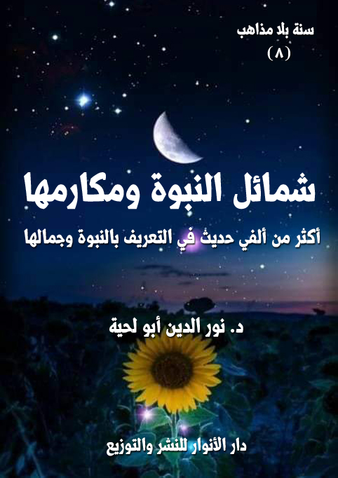

الكتاب: شمائل النبوة ومكارمها
الوصف: أكثر من ألفي حديث في التعريف بالنبوة وجمالها
السلسلة: سنة بلا مذاهب
المؤلف: د. نور الدين أبو لحية
الناشر: دار الأنوار للنشر والتوزيع
الطبعة: الأولى، 1441 هـ
عدد الصفحات: 452
الكتاب موافق للمطبوع
ISBN: 978-620-3-85887-7
لمطالعة الكتاب من تطبيق مؤلفاتي المجاني وهو أحسن وأيسر: هنا

يحاول هذا الكتاب جمع ما ورد في المصادر الحديثية مما يطلق عليه اصطلاحا [الشمائل النبوية]، والتي خصها الكثير من المحدثين بمؤلفات خاصة، وذلك للدوافع التالية:
1. التعريف برسول الله صلى الله عليه وآله وسلم، وكمالاته، ومحاسنه، وعظمته، لأنه لا يمكن أن يتحقق التدين الصحيح من دون ذلك؛ فرسول الله صلى الله عليه وآله وسلم هو المثال الأعلى للإسلام، والممثل الأعظم له، والناطق الأكبر باسمه، ولذلك كلما كانت المعرفة به أعظم، كانت المعرفة بالإسلام أكمل وأشمل وأجمل.
2. الاستدلال بكمالاته على نبوته؛ فأعظم دليل على النبوة تلك الخلال العظيمة التي كان يتصف بها رسول الله صلى الله عليه وآله وسلم .. لذلك كان التعريف به كافيا وحده للدلالة عليه.
3. الدعوة إلى محبته وإقامة علاقة عاطفية قوية معه؛ فبقدر تلك العلاقة يكون التحقق الجواني بالدين .. فالدين في جوهره مبني على المحبة، والمحبة ـ كما هو معلوم ـ لا يمكن أن تنتشر في القلب ما لم تتحقق قبلها المعرفة والتعظيم؛ فالحب ثمرة المحبة والإعجاب بالمحبوب وبصفاته وكمالاته.
4. تحقيق الأسوة به، وهي نتاج بديهي للمحبة، فمن أحب قوما أطاعهم، واتبعهم، وسار على منهاجهم.
5. تنقية ما ورد في كتب الشمائل مما لا يتناسب مع عظمة رسول الله صلى الله عليه وآله وسلم، من الأحاديث أو الآثار وغيرها، بالإضافة إلى طرحها طرحا يتناسب مع تلك الأهداف السابقة.
6. بيان اتفاق الأمة على أحاديث الشمائل؛ فمن خلال اطلاعنا على كل ما ورد من الأحاديث في كتب السنة والشيعة، لم نجد خلافا، ولو في حديث واحد.
7. التقديم بهذا الكتاب لغيره من كتب السلسلة، والمتضمنة للنواحي السلوكية والأخلاقية والتعبدية، وغيرها من المعاني التي وردت بها السنة، ذلك أن الغرض منها جميعا هو السير التحققي والتخلقي على السراط المستقيم الذي سنه رسول الله صلى الله عليه وآله وسلم، وشرحه أئمة الهدى من بعده.
شمائل النبوة ومكارمها (8)
يحاول هذا الكتاب جمع ما ورد في المصادر الحديثية للأمة الإسلامية بمدارسها المختلفة، والمتعلقة بما يطلق عليه اصطلاحا [الشمائل النبوية (1)]، والتي خصها الكثير من المحدثين بمؤلفات خاصة.
وقد دفعنا إلى وضع هذا الكتاب في هذا المحل، بعد ما سبقه من الكتب المرتبطة بالمعارف الإيمانية ودلائل النبوة الدوافع التالية:
أولا: التعريف برسول الله صلى الله عليه وآله وسلم، وكمالاته، ومحاسنه، وعظمته، لأنه لا يمكن أن يتحقق التدين الصحيح من دون ذلك.. فرسول الله صلى الله عليه وآله وسلم هو المثال الأعلى للإسلام، والممثل الأعظم له، والناطق الأكبر باسمه، ولذلك كلما كانت المعرفة به أعظم، كانت المعرفة بالإسلام أكمل وأشمل وأجمل.
ثانيا: الاستدلال بكمالاته على نبوته؛ فأعظم دليل على النبوة تلك الخلال العظيمة التي كان يتصف بها رسول الله صلى الله عليه وآله وسلم.. لذلك كان التعريف به كافيا وحده للدلالة عليه.
ثالثا: الدعوة إلى محبته وإقامة علاقة عاطفية قوية معه؛ فبقدر تلك العلاقة يكون التحقق الجواني بالدين.. فالدين في جوهره مبني على المحبة، ولهذا أمر الله تعالى بتقديمها على كل شيء، كما قال تعالى: {قُلْ إِنْ كَانَ آبَاؤُكُمْ وَأَبْنَاؤُكُمْ وَإِخْوَانُكُمْ وَأَزْوَاجُكُمْ وَعَشِيرَتُكُمْ وَأَمْوَالٌ اقْتَرَفْتُمُوهَا وَتِجَارَةٌ تَخْشَوْنَ كَسَادَهَا وَمَسَاكِنُ تَرْضَوْنَهَا أَحَبَّ إِلَيْكُمْ مِنَ الله وَرَسُولِهِ وَجِهَادٍ فِي سَبِيلِهِ فَتَرَبَّصُوا حَتَّى يَأْتِيَ الله بِأَمْرِهِ وَالله لَا يَهْدِي الْقَوْمَ الْفَاسِقِينَ} [التوبة: 24]
__________
(1) المراد بالشمائل: خصال الإنسان وأوصافه وخلاله وأخلاقه وآدابه ونحو ذلك، يقال فلان حسن الشمائل أي حسن الأخلاق.
شمائل النبوة ومكارمها (9)
والمحبة ـ كما هو معلوم ـ لا يمكن أن تنتشر في القلب ما لم تتحقق قبلها المعرفة والتعظيم؛ فالحب ثمرة المحبة والإعجاب بالمحبوب وبصفاته وكمالاته.
رابعا: تحقيق الأسوة به، وهي نتاج بديهي للمحبة، فمن أحب قوما أطاعهم، واتبعهم، وسار على منهاجهم، كما قال تعالى: {قُلْ إِنْ كُنْتُمْ تُحِبُّونَ الله فَاتَّبِعُونِي يُحْبِبْكُمُ الله وَيَغْفِرْ لَكُمْ ذُنُوبَكُمْ وَالله غَفُورٌ رَحِيمٌ} [آل عمران: 31]
ولهذا أمر الله تعالى باتخاذه الأسوة الأعظم، فقال: {لَقَدْ كَانَ لَكُمْ فِي رَسُولِ الله أُسْوَةٌ حَسَنَةٌ لِمَنْ كَانَ يَرْجُو الله وَالْيَوْمَ الْآخِرَ وَذَكَرَ الله كَثِيرًا} [الأحزاب: 21]
وقد روي عن الإمام الصادق قوله: (إني لاكره للرجل أن يموت وقد بقيت خلة من خلال رسول الله صلى الله عليه وآله وسلم لم يأت بها) (1)
والتحقق بذلك يجعل الإسلام شاملا في نفس المسلم، بخلاف اقتصاره على جزئيات الدين وتفاصيله دون معرفة النبوة، أو ملء النفس بعظمتها.
خامسا: تنقية ما ورد في كتب الشمائل مما لا يتناسب مع عظمة رسول الله صلى الله عليه وآله وسلم، من الأحاديث أو الآثار وغيرها، بالإضافة إلى طرحها طرحا يتناسب مع تلك الأهداف السابقة، ذلك أن الكثير من كتب الشمائل تبدأ بقضايا جزئية بسيطة كاللباس والتختم، أو الأكل والشرب ونحوها؛ فلا يصل القارئ بعدها إلى الأحاديث المعرفة برسول الله صلى الله عليه وآله وسلم إلا بعد أن يمتلئ بالشبهات التي تمنعه من الاستفادة منها.
ولذلك، كان دورنا في هذا الكتاب تغيير ذلك التصنيف، بحيث نبدأ بالأولى فالأولى؛ حتى لا يساء فهم بعض ما ورد في كتب الشمائل؛ فتفهم فهما سلبيا.
ومن الأمثلة على ذلك ما يرد في كتب الشمائل من حب رسول الله صلى الله عليه وآله وسلم لأكل لحم
__________
(1) مكارم الاخلاق: 40 و41.
شمائل النبوة ومكارمها (10)
الكتف، أو الثريد، ويبالغون في ذكر الروايات الواردة في ذلك إلى أن يتوهم القارئ أن حياة رسول الله صلى الله عليه وآله وسلم كلها كانت جريا وراء تلك الأنواع الشهية من المأكولات.
لكن لو قدم لذلك بذكر زهده وورعه وعفافه عن الكثير من شهوات الدنيا، لوضع تلك الأحاديث في محلها الصحيح.. خاصة وأن زهده وورعه وعفافه عن الدنيا هو الأصل، وهو المنسجم مع ما ورد في القرآن الكريم عنه، كما قال تعالى: {لَا تَمُدَّنَّ عَيْنَيْكَ إِلَى مَا مَتَّعْنَا بِهِ أَزْوَاجًا مِنْهُمْ وَلَا تَحْزَنْ عَلَيْهِمْ وَاخْفِضْ جَنَاحَكَ لِلْمُؤْمِنِينَ} [الحجر: 88]
وقال مخاطبا أزواج رسول الله صلى الله عليه وآله وسلم حينما شكون حالهن: {يَاأَيُّهَا النَّبِيُّ قُلْ لِأَزْوَاجِكَ إِنْ كُنْتُنَّ تُرِدْنَ الْحَيَاةَ الدُّنْيَا وَزِينَتَهَا فَتَعَالَيْنَ أُمَتِّعْكُنَّ وَأُسَرِّحْكُنَّ سَرَاحًا جَمِيلًا (28) وَإِنْ كُنْتُنَّ تُرِدْنَ الله وَرَسُولَهُ وَالدَّارَ الْآخِرَةَ فَإِنَّ الله أَعَدَّ لِلْمُحْسِنَاتِ مِنْكُنَّ أَجْرًا عَظِيمًا} [الأحزاب: 28، 29]
سادسا: بيان اتفاق الأمة على أحاديث الشمائل؛ فمن خلال اطلاعنا على كل ما ورد من الأحاديث في كتب السنة والشيعة، لم نجد خلافا، ولو في حديث واحد.. ولذلك لم نعتمد في هذا الكتاب التقسيم السابق من تصنيف فصول أو مطالب الكتاب بحسب المصادر الحديثية، ذلك أنا وجدنا أن كل الأحاديث متداولة لدى الفريقين.
ولنبين ذلك.. فقد ذكرنا في كل فصل من الفصول ما ورد في كتب المدرستين، حتى لو كان بعضها متقاربا جدا من حيث الصياغة، لنبين مدى اتفاق الأمة على هذا الجانب المهم من جوانب الدين.
وهذا أمر يفرح له دعاة الوحدة والتقريب بين المؤمنين.. ذلك أن الشمائل تمثل عمق الدين، وجانبه الأكبر.. والوحدة عليها، تدل على وحدة الأمة في معرفتها لرسولها صلى الله عليه وآله وسلم.
سابعا: التقديم بهذا الكتاب لغيره من كتب السلسلة، والمتضمنة للنواحي السلوكية
شمائل النبوة ومكارمها (11)
والأخلاقية والتعبدية، وغيرها من المعاني التي وردت بها السنة، ذلك أن الغرض منها جميعا هو السير التحققي والتخلقي على السراط المستقيم الذي سنه رسول الله صلى الله عليه وآله وسلم، وشرحه أئمة الهدى من بعده.
بناء على هذه الأغراض والمقاصد؛ فقد قسمنا الكتاب إلى سبعة فصول:
أولها: شخصيته الكاملة، ونقصد بها التعريف الشامل برسول الله صلى الله عليه وآله وسلم، والذي لا تقتصر الأحاديث فيه على الجزئيات التي قد تشغل المتعرف عليها عن سائر الكمالات.
ثانيها: روحانيته السامية، ونقصد بها التعريف بعلاقته بالله تعالى، وكثرة عبادته وذكره وتوجهه له.
ثالثها: أخلاقه العالية، ونقصد بها التعريف بصفاته وخلاله التي مدحه الله بها في قوله: {وَإِنَّكَ لَعَلَى خُلُقٍ عَظِيمٍ} [القلم: 4]
رابعها: آدابه الرفيعة، ونقصد بها التعريف بما ورد عنه من السلوكات الحضارية الراقية في الشؤون المختلفة.
خامسها: بشريته الطاهرة، ونقصد بها ما ورد من الأحاديث المتعلقة بشؤون حياته الشخصية من المأكل والمشرب والملبس ونحوها.. وقد رأينا تأخيرها إلى هذا الفصل لتُفهم على ضوء ما سبق
وبناء على محاولتنا لجمع أكبر عدد من الأحاديث، ومن المصادر المختلفة، فقد بلغ عدد الأحاديث في هذا الكتاب أكثر من ألفي حديث.. وبعضها وإن كان مكررا في معانيه أو في بعض ألفاظه إلا أن كل حديث منها يشكل شهادة جديدة لها قيمتها وأهميتها، كما هو معروف في كتب الحديث.
بالإضافة إلى أننا لو اختصرنا، ولم نذكر كل ما ورد، لاعتبر ذلك تقصيرا، أو انتقاء
شمائل النبوة ومكارمها (12)
لا مبرر له، خاصة ونحن نريد من هذه السلسلة أن تتوحد عليها الأمة، كما توحدت على كتاب ربها.. وبذلك تنتفي كل فرصة للشيطان لنشر الفرقة أو صدع الوحدة؛ فخير ما تتوحد عليه الأمة كتاب ربها وسنة نبيها صلى الله عليه وآله وسلم.
ونحب أن ننبه في الأخير إلى أنا قسمنا بعض الأحاديث إلى قطع صغيرة، مع توثيق كل قطعة، لمن يريد الاستفادة منها، أو نشرها، وذلك لأنا رأينا أن العادة جرت بالرغبة عن الأحاديث الطويلة، وقلة الاستفادة منها.
كما ننبه إلى أننا تصرفنا في بعض الأحاديث، أو في الكثير منها، بحذف ما لا نراه موافقا للقرآن الكريم، أو متناسبا مع جلال النبوة، وذلك بناء على ما ورد في الحديث الذي يقول فيه رسول الله صلى الله عليه وآله وسلم: (كفى بالمرء كذبا أن يحدث بكل ما سمع) (1)
__________
(1) رواه مسلم (6)
شمائل النبوة ومكارمها (13)
يحاول هذا الفصل جمع ما أمكن من الأحاديث التي وردت في المصادر الحديثية للسنة والشيعة، والتي حاولت إعطاء صورة شاملة لرسول الله صلى الله عليه وآله وسلم، لا تقتصر على جانب من جوانبه.
وقد بدأنا بها، لأنها أول ما يزيل الإشكالات المرتبطة بالجزئيات المختلفة؛ فالصورة القاصرة على نواح محدودة صور مشوهة ظلامية، قد تؤدي إلى الفتنة والتشكيك أكثر من كونها سببا في التعريف.
وللأسف؛ فإن كتب الحديث والشمائل تؤخر أمثال هذه الأحاديث مع أهميتها، لتجعلها ـ عادة ـ فيما تطلق عليه الأبواب الجامعة، مع أنها الأصل الذي ينبغي أن يُبدأ به.. فالكلي مقدم على الجزئي، والشامل مقدم على التفاصيل.. ولهذا قدم الله تعالى سورة الفاتحة، باعتبارها أم الكتاب والشاملة لكل حقائقه وقيمه.
ولذلك؛ فإن هذه الأحاديث القصيرة في مبناها، العميقة في معناها، لها تأثيرها الكبير في التعريف برسول الله صلى الله عليه وآله وسلم، ولهذا نرى أئمة الهدى يدعون لها، ويستعملونها، كما سنرى الأحاديث الواردة في ذلك.
ونحب أن ندعو من خلال هذا الفصل إلى جمع كل ما ارتبط برسول الله صلى الله عليه وآله وسلم من شهادات سواء لمسلمين أو غير مسلمين، والتدرب على صياغة ما أمكن منها، بحيث تكون شديدة الاختصار، وشديدة التأثير.
ومن الأمثلة على ذلك ما أورده الصالحي في مقدمة الشمائل في كتابه العظيم الذي هو أشمل كتب السيرة والشمائل وأعظمها فائدة [سبل الهدى والرشاد، في سيرة خير العباد، وذكر فضائله وأعلام نبوته وأفعاله وأحواله في المبدأ والمعاد] نقلا عن بعضهم؛ فقد قال
شمائل النبوة ومكارمها (14)
متحدثا عن رسول الله صلى الله عليه وآله وسلم: (من تأمل تدبيره صلى الله عليه وآله وسلم أمر بواطن الخلق، وظواهرهم، وسياسة الخاصة والعامة، مع عجيب شمائله، وبديع سيره، فضلا عما أفاضه من العلم، وقرره من الشرع، دون تعلّم سبق، ولا ممارسة تقدمت، ولا مطالعة للكتب، لم يمتر في رجحان عقله، وثقوب فهمه لأول وهلة.. ومما يتفرع عن العقل ثقوب الرّأي وجودة الفطنة والإصابة، وصدق الظن، والنظر للعواقب، ومصالح النفس، ومجاهدة الشهوة، وحسن السياسة، والتدبير، واقتفاء الفضائل، واجتناب الرذائل، وقد بلغ صلى الله عليه وآله وسلم من ذلك الغاية التي لم يبلغها بشر سواه صلى الله عليه وآله وسلم.. ومن تأمل حسن تدبيره للعرب الذين كالوحش الشارد، والطبع المتنافر المتباعد، كيف ساسهم؟ واحتمل جفاهم، وصبر على أذاهم، إلى أن انقادوا إليه، واجتمعوا عليه، وقاتلوا دونه أهليهم: آباءهم، وأبناءهم، واختاروه على أنفسهم، وهجروا في رضاه أوطانهم، وأحبابهم، من غير ممارسة سبقت له، ولا مطالعة كتب يتعلّم منها سنن الماضين، فتحقّق أنه صلى الله عليه وآله وسلم أعقل الناس، ولما كان عقله صلى الله عليه وآله وسلم أوسع العقول لا جرم اتسعت أخلاق نفسه الكريمة اتساعا لا يضيق عن شيء) (1)
ومن الأمثلة عنها ما ورد من الشهادات الكثيرة لغير المسلمين، والذين لم يملكوا في لحظات الصدق والإخلاص إلا أن يقروا بعظمة رسول الله صلى الله عليه وآله وسلم كما ذكرنا النماذج الكثيرة على ذلك في كتاب [قلوب مع محمد صلى الله عليه وآله وسلم]
ولا بأس أن أشير هنا إلى علمين من غير المسلمين ممن أشاروا إلى الشخصية الكاملة لرسول الله صلى الله عليه وآله وسلم:
أما أولهما، فهو الكاتب الاسكتلندي والناقد والمؤرخ [توماس كارليل] الذي كتب تحت عنوان [شهابٌ أضاء العالم أجمع] يقول: (من العار أن يصغي أي إنسان من أبناء هذا
__________
(1) سبل الهدى (7/ 3)
شمائل النبوة ومكارمها (15)
الجيل إلى وهم القائلين: إنَّ دين الإسلام كذب، وإن محمداً لم يكن على حق. لقد آن لنا أن نحارب هذه الإدعاءات السخيفة المخجلة، فالرسالة التي دعا إليه هذا النبي ظلّت سراجاً منيراً أربعة عشر قرناً من الزمان لملايين كثيرة من الناس، فهل من المعقول أن تكون هذه الرسالة أكذوبة كاذب أو خديعة خادع؟ هل رأيتم رجلاً كاذباً يستطيع أن يخلق ديناً ويتعهده بالنشر بهذه الصورة؟ إنَّ الرجل الكاذب لا يستطيع أن يبني بيتاً من الطوب لجهله بخصائص مواد البناء، وإذا بناه فما ذلك الذي يبنيه إلا كومة من أخلاط هذه المواد، فما بالك بالذي يبني بيتاً دعائمه هذه القرون العديدة، وتسكنه هذه الملايين الكثيرة.. وعلى ذلك فمن الخطأ أن نعدَّ محمداً رجلاً كاذباً متصنّعاً متذرّعاً بالحيل والوسائل لغاية أو مطمع.. وما الرسالة التي أدّها إلا الصدق والحق.. وما هو إلا شهاب أضاء العالم أجمع، ذلك أمر الله) (1)
ويقول: (ويزعم المتعصبون أنَّ محمداً لم يكن يريد بدعوته غير الشهوة الشخصية والجاه والسلطان.. كلا، واسم الله، لقد انطلقت من فؤاد هذا الرجل الكبير النفس، المملوء رحمة وبراً وإحساناً وخيراً ونوراً وحكمة، أفكار غير الطمع الدنيوي، وأهداف سامية غير طلب الجاه والسلطة، ويزعم الكاذبون أنّ الطمع وحب الدنيا هو الذي أقام محمداً وأثاره. حمق وسخافة وهوس إن رأينا رأيهم، ما حاجة رجل على شاكلته في جميع بلاد العرب لتاج قيصر وصولجان كسرى؟ لم يكن كغيره يرضى بالأوضاع الكاذبة، ويسير تبعاً للاعتبارات الباطلة، ولم يقبل أن يتشح بالأكاذيب والأباطيل، لقد كان منفرداً بنفسه العظيمة وبحقائق الكون والكائنات، لقد كان سر الوجود يسطع أمام عينيه بأهواله ومحاسنه ومخاوفه)
وأما الثاني؛ فهو المفكر والشاعر والسياسي الفرنسي [الفونس دي لامارتين (2)]
__________
(1) هذه النصوص من كتابه [محمد المثل الأعلى].
(2) هو شاعر وسياسي فرنسي. يُعدّ أحد أكبر شعراء المدرسة الرومانسية الفرنسية. خاض غمار السياسة، فتولى رئاسة الحكومة المؤقتة، بعد ثورة 1848.
شمائل النبوة ومكارمها (16)
الذي كتب تحت عنوان: (هل هناك من هو أعظم من محمد؟) يقول: (إذا كانت الضوابط التي نقيس بها عبقرية الإنسان هي سمو الغاية والنتائج المذهلة لذلك رغم قلة الوسيلة، فمن ذا الذي يجرؤ أن يقارن أيّاً من عظماء التاريخ الحديث بالنبي محمد صلى الله عليه وآله وسلم.. فهؤلاء المشاهير قد صنعوا الأسلحة وسنوا القوانين وأقاموا الإمبراطوريات. فلم يجنوا إلا أمجاداً بالية لم تلبث أن تحطمت بين ظهرانِيهم، لكنَّ هذا الرجل لم يقد الجيوش ويسنّ التشريعات ويقم الإمبراطوريات ويحكم الشعوب ويروّض الحكام فقط، وإنما قاد الملايين من الناس فيما كان يعد ثلث العالم حينئذ. ليس هذا فقط، بل إنه قضى على الأنصاب والأزلام والأديان والأفكار والمعتقدات الباطلة.. لقد صبر وتجلّد حتى نال النصر.. كان طموحه موجّهاً بالكلية إلى هدف واحد، فلم يطمح إلى تكوين إمبراطورية أو ما إلى ذلك. حتى صلاته الدائمة ومناجاته لربه ووفاته وانتصاره حتى بعد موته، كل ذلك لا يدل على الغش والخداع بل يدلّ على اليقين الصادق الذي أعطى النبي الطاقة والقوة لإرساء عقيدة ذات شقين: الإيمان بوحدانية الله، والإيمان بمخالفته تعالى للحوادث.. فالشق الأول يبيّن صفة الله (ألا وهي الوحدانية)، بينما الآخر يوضح ما لا يتصف به الله تعالى (وهو المادية والمماثلة للحوادث). لتحقيق الأول كان لا بد من القضاء على الآلهة المدّعاة من دون الله بالسيف، أما الثاني فقد تطلّب ترسيخ العقيدة بالكلمة (بالحكمة والموعظة الحسنة).. هذا هو محمد صلى الله عليه وآله وسلم الفيلسوف، الخطيب، النبي، المشرّع، المحارب، قاهر الأهواء، مؤسّس المذاهب الفكرية التي تدعو إلى عبادة حقة، بلا أنصاب ولا أزلام. هو المؤسس لإمبراطورية روحانية واحدة. هذا هو محمد صلى الله عليه وآله وسلم.. بالنظر لكل مقاييس العظمة البشرية، أود أن أتساءل: هل هناك من هو أعظم منه.. إن أعظم حدث في حياتي هو أنني درست حياته دراسة وافية، وأدركت ما فيها من عظمة وخلود، وأي رجل أدرك من العظمة الإنسانية مثلما أدرك محمد، وأي
شمائل النبوة ومكارمها (17)
إنسان بلغ من مراتب الكمال مثل ما بلغ) (1)
بناء على هذا، سنحاول في هذا الفصل ذكر ما ورد من الأحاديث في كمالات رسول الله صلى الله عليه وآله وسلم المعنوية والجسدية، وقد قسمنا الفصل إلى ثلاثة أقسام:
1. ما ورد من الأحاديث في كمالاته المعنوية.
2. ما ورد من الأحاديث في كمالاته الجسدية.
3. ما ورد من الأحاديث في أسمائه الدالة على شخصيته.
1. ما ورد حول كمالاته المعنوية
ونريد بها الأحاديث التي تصف المعاني المختلفة المرتبطة برسول الله صلى الله عليه وآله وسلم، والمتعلقة بروحانيته وأخلاقه وآدابه ونحو ذلك.. بالإضافة إلى ذكر بعض ما يرتبط بنواحيه الجسدية لتكون المعرفة شاملة بذلك لكل النواحي.
وقد قسمنا الأحاديث الواردة بهذا المعنى إلى قسمين:
1. أحاديث واردة بصيغتها في كتب الحديث السنية أو الشيعية.
2. أحاديث مستنبطة من الروايات والأخبار وغيرها، وللمحدثين دور في صياغتها وجمعها..
أ. الأحاديث الواردة بصيغها منسوبة لأصحابها
وأكثر هذا النوع من الأحاديث مما روي عن أئمة الهدى من العترة الطاهرة، وخصوصا الإمام علي، باعتباره أكثر الأمة معرفة برسول الله صلى الله عليه وآله وسلم، ولهذا اعتمد هذا المنهج الشامل في التعريف به صلى الله عليه وآله وسلم.
[الحديث: 1] قال الإمام علي يصف رسول الله صلى الله عليه وآله وسلم: (ما صافح رسول الله صلى الله عليه وآله وسلم أحدا
__________
(1) من كتاب (تاريخ تركيا)، باريس، 1854، 2/ 276 - 277.
شمائل النبوة ومكارمها (18)
قط فنزع يده من يده حتى يكون هو الذي ينزع يده، وما فاوضه أحد قط في حاجة أو حديث فانصرف حتى يكون الرجل ينصرف، وما نازعه الحديث حتى يكون هو الذي يسكت، وما رأى مقدما رجله بين يدي جليس له قط، ولا عرض له قط أمران إلا أخذ بأشدهما، وما انتصر نفسه من مظلمة حتى ينتهك محارم الله فيكون حينئذ غضبه لله تبارك وتعالى، وما أكل متكئا قط حتى فارق الدنيا، وما سئل شيئا قط فقال: لا، وما رد سائلا حاجة إلا بها أو بميسور من القول، وكان أخف الناس صلاة في تمام، وكان أقصر الناس خطبة وأقله هذرا، وكان يعرف بالريح الطيب إذا أقبل، وكان إذا أكل مع القوم كان أول من يبدأ، وآخر من يرفع يده، وكان إذا أكل أكل مما يليه، فإذا كان الرطب والتمر جالت يده، وإذا شرب شرب ثلاثة أنفاس، وكان يمص الماء مصا، ولا يعبه عبا، وكان يمينه لطعامه وشرابه وأخذه وإعطائه، كان لا يأخذه إلا بيمينه، ولا يعطي إلا بيمينه، وكان شماله لما سوى ذلك من بدنه، وكان يحب التيمن في كل اموره: في لبسه وتنعله وترجله، وكان إذا دعا دعا ثلاثآ، وإذا تكلم تكلم وترا، وإذا استأذن استأذن ثلاثا، وكان كلامه فصلا يتبينه كل من سمعه، وإذا تكلم رأى كالنور يخرج من بين ثناياه، وإذا رأيته قلت: أفلج الثنيتين، وليس بأفلج، وكان نظره اللحظ بعينه، وكان لا يكلم أحدا بشئ يكرهه، وكان إذا مشى ينحط من صبب، وكان يقول: إن خياركم أحسنكم أخلاقا، وكان لا يذم ذواقا ولا يمدحه، ولا يتنازع أصحابه الحديث عنده، وكان المحدث عنه يقول: لم أر بعيني مثله قبله ولا بعده صلى الله عليه وآله وسلم) (1)
[الحديث: 2] قال الإمام الحسين: سألت أبي عن مدخل رسول الله صلى الله عليه وآله وسلم، فقال: (كان دخوله لنفسه مأذونا له في ذلك، فإذا آوى إلى منزله جزأ دخوله ثلاثة أجزاء: جزء لله، وجزء لأهله، وجزء لنفسه، ثم جزأ جزءه بينه وبين الناس فيرد ذلك بالخاصة على العامة، ولا
__________
(1) بحار الأنوار (16/ 236)
شمائل النبوة ومكارمها (19)
يدخر عنهم منه شيئا، وكان من سيرته في جزء الامة إيثار أهل الفضل بإذنه وقسمه على قدر فضلهم في الدين، فمنهم ذو الحاجة، ومنهم ذو الحاجتين، ومنهم ذو الحوائج، فيتشاغل بهم ويشغلهم فيما أصلحهم والامة من مسألته عنهم، وإخبارهم بالذي ينبغي، ويقول: (ليبلغ الشاهد منكم الغائب، وأبلغوني حاجة من لا يقدر على إبلاغ حاجته، فإنه من أبلغ سلطانا حاجة من لا يقدر على إبلاغها ثبت الله قدميه يوم القيامة) لا يذكر عنده إلا ذلك، ولا يقيد من أحد عثرة يدخلون روادا، ولا يفترقون إلا عن ذواق، ويخرجون أدلة) (1)
[الحديث: 3] قال الإمام الحسين: سألت أبي عن مخرج رسول الله صلى الله عليه وآله وسلم كيف كان يصنع فيه؟ فقال: (كان صلى الله عليه وآله وسلم يخزن لسانه إلا عما يعنيه، ويؤلفهم ولا ينفرهم، ويكرم كريم كل قوم، ويوليه عليهم، ويحذر الناس ويحترس منهم من غير أن يطوي عن أحد بشره ولا خلقه، ويتفقد أصحابه، ويسأل الناس عما في الناس، ويحسن الحسن ويقويه، ويقبح القبيح ويوهنه، معتدل الامر، غير مختلف، لا يغفل مخافة أن يغفلوا أو يميلوا، ولا يقصر عن الحق ولا يجوزه، الذين يلونه من الناس خيارهم أفضلهم عنده أعمهم نصيحة للمسلمين، وأعظمهم عنده منزلة أحسنهم مواساة وموازرة) (2)
[الحديث: 4] قال الإمام الحسين: سألت أبي عن مجلسه صلى الله عليه وآله وسلم، فقال: (كان صلى الله عليه وآله وسلم لا يجلس ولا يقوم إلا على ذكر، ولا يوطن الاماكن وينهى عن إيطانها (3)، وإذا انتهى إلى قوم جلس حيث ينتهي به المجلس ويأمر بذلك، ويعطي كل جلسائه نصيبه، ولا يحسب أحد من جلسائه أن أحدا أكرم عليه منه، من جالسه صابره حتى يكون هو المنصرف عنه، من سأله حاجة لم يرجع إلا بها أو بميسور من القول، قد وسع الناس منه خلقه، وصار لهم أبا،
__________
(1) عيون الاخبار: 176 ـ 178.
(2) عيون الاخبار: 176 ـ 178.
(3) لا يوطن الاماكن، أي لا يتخذ لنفسه مجلسا يعرف به فلا يجلس إلا فيه، وقد فسره بما بعده.
شمائل النبوة ومكارمها (20)
وصاروا عنده في الحق سواء، مجلسه مجلس حلم وحياء وصدق وأمانة، لا ترفع فيه الاصوات، ولا تؤبن فيه الحرم، ولا تنثى فلتاته، متعادلين متواصلين فيه بالتقوى، متواضعين يوقرون الكبير، ويرحمون الصغير، ويؤثرون ذا الحاجة، ويحفظون الغريب) (1)
[الحديث: 5] قال الإمام الحسين: سألت أبي عن سيرته صلى الله عليه وآله وسلم في جلسائه؟ فقال: (كان دائم البشر، سهل الخلق، لين الجانب: ليس بفظ ولا صخاب ولا فحاش ولا عياب ولا مداح، يتغافل عما لا يشتهي، فلا يؤيس منه ولا يخيب فيه مؤمليه، قد ترك نفسه من ثلاث: المراء، والاكثار، وما لا يعنيه، وترك الناس من ثلاث: كان لا يذم أحدا، ولا يعيره، ولا يطلب عورته ولا عثراته، ولا يتكلم إلا فيما رجا ثوابه، إذا تكلم أطرق جلساؤه كأنما على رؤوسهم الطير، وإذا سكت تكلموا ولا يتنازعون عنده الحديث، من تكلم انصتوا له حتى يفرغ، حديثهم عنده حديث اوليهم، يضحك مما يضحكون منه، ويتعجب مما يتعجبون منه ويصبر للغريب على الجفوة في مسألته ومنطقه حتى أن كان أصحابه ليستجلبونهم، ويقول: إذا رأيتم طالب الحاجة يطلبها فارفدوه، ولا يقبل الثناء إلا من مكافئ، ولا يقطع على أحد كلامه حتى يجوز فيقطعه بنهي أو قيام) (2)
[الحديث: 6] قال الإمام الحسين: سألت أبي عن سكوت رسول الله صلى الله عليه وآله وسلم، فقال: (كان سكوته على أربع: على الحلم، والحذر، والتقدير، والتفكير، فأما التقدير ففي تسوية النظر والاستماع بين الناس، وأما تفكره ففيما يبقى ويفنى، وجمع له الحلم في الصبر، فكان لا يغضبه شيء ولا يستفزه، وجمع له الحذر في أربع: أخذه الحسن ليقتدى به، وتركه القبيح لينتهى عنه، واجتهاده الرأي في صلاح امته، والقيام فيما جمع لهم خير الدنيا والآخرة) (3)
__________
(1) عيون الاخبار: 176 ـ 178.
(2) عيون الاخبار: 176 ـ 178.
(3) عيون الاخبار: 176 ـ 178.
شمائل النبوة ومكارمها (21)
[الحديث: 7] قال الإمام علي في وصف رسول الله صلى الله عليه وآله وسلم: (لم يك بالطويل الممغط، ولا القصير المتردد، وكان ربعة من القوم، ولم يك بالجعد القطط ولا السبط، كان جعدا رجلا، ولم يك بالمطهم ولا المكلثم، وكان في الوجه تدويرا، أبيض مشرب، أدعج العين، أهدب الاشفار، جليل المشاش والكتد، أجرد ذا مسربة، شثن الكفين والقدمين، إذا مشى تقلع كأنما يمشي في صبب، وإذا التفت التفت معا، بين كتفيه خاتم النبوة وهو خاتم النبيين، أجود الناس كفا، وأجرأ الناس صدرا، وأصدق الناس لهجة وأوفى الناس ذمة، وألينهم عريكة، وأكرمهم عشيرة، بأبي من لم يشبع ثلاثا متوالية من خبز بر حتى فارق الدنيا، ولم ينخل دقيقه) (1)
[الحديث: 8] سئل الإمام علي: صف لنا نبينا صلى الله عليه وآله وسلم كأننا نراه، فإنا مشتاقون إليه، فقال: (كان نبي الله صلى الله عليه وآله وسلم أبيض اللون، مشربا حمرة، أدعج العين (2)، سبط الشعر (3)، كث اللحية، ذا وفرة (4)، دقيق المسربة، كأنما عنقه إبريق فضة، يجري في تراقيه الذهب، له شعر من لبته إلى سرته كقضيب خيط إلى السرة، وليس في بطنه ولا صدره شعر غيره، شثن الكفين والقدمين، شثن الكعبين، إذا مشى كأنما يتقلع من صخر، إذا أقبل كأنما ينحدر من صبب، إذا التفت التفت جميعا بأجمعه كله، ليس بالقصير المتردد، ولا بالطويل المتمعط (5)، وكان في الوجه تدوير، إذا كان في الناس غمرهم، كأنما عرقه في وجهه اللؤلؤ، عرفه أطيب من ريح المسك، ليس بالعاجز ولا باللئيم، أكرم الناس عشرة، وألينهم عريكة، وأجودهم كفا، من
__________
(1) بحار الأنوار (16/ 194)، الغارات.
(2) الدعج: شدة سواد العين في شدة بياضها.
(3) السبط من الشعر: المنبسط المسترسل.
(4) الوفرة: شعر الرأس إذا وصل إلى شجمة الاذن.
(5) المتناهي في الطول.
شمائل النبوة ومكارمها (22)
خالطه بمعرفة أحبه، ومن رآه بديهة هابه، عزه بين عينيه، يقول ناعته: لم أر قبله ولا بعده مثله، صلى الله عليه وآله وسلم) (1)
[الحديث: 9] قال الإمام علي يصف رسول الله صلى الله عليه وآله وسلم لاعرابي: (إذا نظرت إلى رسول الله صلى الله عليه وآله وسلم عرفته ليس بالطويل المتثنى، ولا القصير الفاحش، أبيض مشرب حمرة، ربعة، أحسن الناس، شعره إلى شحمة اذنه، عريض الجبهة، ضخم العينين، أقرن الحاجبين مفلج الثنايا، أسيل الخد، كث اللحية، على شفته السفلى خال، كأن عنقه إبريق فضة، بعيد ما بين المنكبين، ضخم الكراديس ليس على ظهره ولا بطنه إلا شعر كقضيب الفضة يجري، شثن الكفين، كأن كفه من لينها متن أرنب، إذا مشى مشى متقلعا، كأنه يهبط من صبب، وإذا التفت التفت بأجمعه، وإذا صوفح لم ينزع يده حتى ينزع الآخر، وإذا احتبى إليه رجل لم يحل حبوته حتى يكون الرجل هو الذي يحل حبوته، وإذا ضحك تبسم، يجزي بالحسنة الحسنة، وبالسيئة الحسنة، ليس بسخاب في الاسواق) (2)
[الحديث: 10] قال الإمام الحسين: (هذه صفة جدي محمد صلى الله عليه وآله وسلم: كث اللحية، عريض الصدر، طويل العنق، عريض الجبهة، أقنى الانف، أفلج الاسنان، حسن الوجه، طيب الريح، حسن الكلام، فصيح اللسان، كان يأمر بالمعروف، وينهى عن المنكر، بلغ عمره ثلاثا وستين سنة، ولم يخلف بعده إلا خاتم مكتوب عليه: (لا إله إلا الله محمد رسول الله) وكان يتختم في يمينه، وخلف سيفه ذا الفقار، وقضيبه وجبة صوف، وكساء صوف كان يتسرول به لم يقطعه ولم يخيطه حتى لحق بالله) (3)
__________
(1) أمالى ابن الشيخ: 217.
(2) بحار الأنوار (16/ 186)، المنتقى في مولود المصطفى.
(3) الاحتجاجات: ج 10: 132 ـ 136.
شمائل النبوة ومكارمها (23)
[الحديث: 11] قال الإمام الحسن: سألت خالي هند بن أبي هالة (1) عن حلية رسول الله صلى الله عليه وآله وسلم وكان وصافا للنبي صلى الله عليه وآله وسلم، فقال: كان رسول الله صلى الله عليه وآله وسلم فخما مفخما (2)، يتلالأ وجهه تلألأ القمر ليلة البدر، أطول من المربوع، وأقصر من المشذب (3)، عظيم الهامة، رجل الشعر (4)، إن انفرقت عقيقته (5) فرق، وإلا فلا يجاوز شعره شحمة اذنيه، إذا هو وفرة، أزهر اللون (6)، واسع الجبين، أزج الحواجب (7)، سوابغ في غير قرن (8)، بينهما له عرق يدره الغضب، أقنى العرنين (9)، له نور يعلوه، يحسبه من لم يتأمله أشم، كث اللحية (10)، سهل الخدين ضليع الفم، أشنب مفلج الاسنان، دقيق المسربة (11)، كأن عنقه جيد دمية في صفاء الفضة، معتدل
__________
(1) هو هند بن أبي هالة التميمى، ربيب رسول الله (، امه خديجة ام المؤمنين، شهد بدرا وقيل: بل شهد احدا وكان وصافا لحلية رسول الله (وشمائله وأوصافه.
(2) كان رسول الله فخما مفخما: معناه كان عظيما معظما في الصدور والعيون، ولم تكن خلقته في جسمه الضخامة وكثرة اللحم، معانى الاخبار: 30 ـ 32، وقال الجزري وغيره: أي عظيما معظما في الصدور والعيون، ولم تكن خلقته في جسمه الضخامة، وقيل: الفخامة في وجهه نبله، وامتلاؤه مع الجمال والمهابة، بحار الأنوار (16/ 171)
(3) المشذب: الطويل الذي ليس بكثير اللحم، يقال جذع مشذب: إذا طرحت عنه قشوره وما يجري مجراها، ويقال لقشور الجذع التي تقشر عنه: الشذب، معانى الاخبار: 30 ـ 32.
(4) رجل الشعر: معناه في شعره تكسر وتعقف، ويقال: شعر رجل: إذا كان كذلك، فإذا كان الشعر لا تكسر فيه قيل: شعر سبط ورسل، معانى الاخبار: 30 ـ 32.
(5) إن انفرقت عقيقته: العقيقة: الشعر المجتمع في الرأس، وعقيقة المولود: الشعر الذي يكون على رأسه من الرحم، ويقال لشعر المولود المتجدد بعد الشعر الاول الذي حلق: عقيقة، معانى الاخبار: 30 ـ 32.
(6) أزهر اللون، معناه نير اللون، يقال: أصفر يزهر: إذا كان نيرا، والسراج يزهر، معناه نير، معانى الاخبار: 30 ـ 32.
(7) أزج الحواجب، معناه طويل امتداد الحاجبين بوفور الشعر فيهما وجبينه إلى الصدغين، معانى الاخبار: 30 ـ 32.
(8) في غير قرن: معناه أن الحاجبين إذا كان بينهما انكشاف وابيضاض يقال لهما: البلج والبلجة، يقال: حاجبه أبلج: إذا كان كذلك، وإذا اتصل الشعر في وسط الحاجب فهو القرن، معانى الاخبار: 30 ـ 32.
(9) أقنى العرنين: القنا: أن يكون في عظم الانف إحدداب في وسطه، والعرنين: الانف، معانى الاخبار: 30 ـ 32.
(10) كث اللحية، معناه أن لحيته قصيرة كثيرة الشعر فيها، معانى الاخبار: 30 ـ 32.
(11) دقيق المسربة، المسربة: الشعر المستدق الممتد من اللبة إلى السرة، معانى الاخبار: 30 ـ 32.
شمائل النبوة ومكارمها (24)
الخلق، بادنا متماسكا (1)، سواء البطن والصدر (2)، بعيد ما بين المنكبين، ضخم الكراديس (3)، أنور المتجرد (4)، موصول ما بين اللبة والسرة بشعر يجري كالخط، عاري الثديين والبطن مما سوى ذلك، أشعر الذراعين والمنكبين، وأعالي الصدر، طويل الزندين (5)، رحب الراحة (6)، شثن الكفين والقدمين (7)، سائل الاطراف (8)، سبط القصب (9)، خمصان الاخمصين (10)، مسيح القدمين (11)، ينبو عنهما الماء، إذا زال زال قلعا،
__________
(1) بادن متماسك: معناه تام خلق الاعضآء ليس بمسترخي اللحم ولا بكثيره، معانى الاخبار: 30 ـ 32.
(2) سواء البطن والصدر، معناه أن بطنه ضامر، وصدره عريض، فمن هذه الجهة تساوي بطنه صدره، معانى الاخبار: 30 ـ 32.
(3) الكراديس: رؤوس العظام، معانى الاخبار: 30 ـ 32.
(4) أنور المتجرد، معناه نير الجسد الذي تجرد من الثياب، معانى الاخبار: 30 ـ 32.
(5) طويل الزندين، في كل ذراع زندان وهما جانبا عظم الذراع، فرأس الزند الذي يلي الابهام يقال له: الكوع، ورأس الزند الذي يلي الخنصر يقال له: الكرسوع، معانى الاخبار: 30 ـ 32.
(6) رحب الراحة، معناه واسع الراحة كبيرها، والعرب تمدح بكبر اليد، وتهجو بصغرها، معانى الاخبار: 30 ـ 32.
(7) شثن الكفين، معناه خشن الكفين، والعرب تمدح الرجال بخشونة الكف، معانى الاخبار: 30 ـ 32.
(8) سائل الاطراف، أي تامها غير طويلة ولا قصيرة، معانى الاخبار: 30 ـ 32.
(9) سبط القصب، معناه ممتد القصب، غير متعقدة، والقصب: العظام الجوف التي فيها مخ، نحو الساقين والذراعين، معانى الاخبار: 30 ـ 32.
(10) خمصان الاخمصين، معناه أن أخمص رجله شديد الارتفاع من الارض، والاخمص: ما يرتفع عن الارض من وسط باطن الرجل وأسلفها، وإذا كان أسفل الرجل مستويا ليس فيها أخمص فصاحبه أرح، يقال: رجل أرح: إذا لم يكن لرجله أخمص، معانى الاخبار: 30 ـ 32.
(11) مسيح القدمين، معناه ليس بكثير اللحم فيهما وعلى ظاهرهما، فلذلك ينبو الماء عنهما، معانى الاخبار: 30 ـ 32.
شمائل النبوة ومكارمها (25)
يخطو تكفؤا (1)، ويمشي هونا (2)، ذريع المشية (3)، إذا مشى كأنما ينحط في صبب (4)، وإذا التفت التفت جميعا، خافض الطرف، نظره إلى الارض أطول من نظره إلى السماء، جل نظره الملاحظة، يبدر من لقيه بالسلام) (5)
[الحديث: 12] قال الإمام الحسن: سألت خالي هند بن أبي هالة عن منطقه صلى الله عليه وآله وسلم، فقال: كان صلى الله عليه وآله وسلم مواصل الاحزان، دائم الفكر، ليست له راحة، ولا يتكلم في غير حاجة، يفتتح الكلام، ويختمه بأشداقه (6)، يتكلم بجوامع الكلم فصلا، لا فضول فيه ولا تقصير، دمثا (7) ليس بالجافي ولا بالمهين (8)، تعظم عنده النعمة وإن ذقت (9)، لا يذم منها شيئا غير أنه كان لا يذم ذواقا (10) ولا يمدحه ولا تغضبه الدنيا وما كان لها، فإذا تعوطي الحق (11) لم
__________
(1) يخطو تكفؤا، معناه خطاه كأنه يتكبر فيها أو يتبختر لقلة الاستعجال معها، ولا تبختر فيها ولا خيلاء، معانى الاخبار: 30 ـ 32.
(2) يمشي هونا، معناه السكينة والوقار، معانى الاخبار: 30 ـ 32.
(3) ذريع المشية، معناه واسع المشية من غير أن يظهر فيه استعجال وبدار، يقال: رجل ذريع في مشيه، وامرأة ذراع: إذا كانت واسعة اليدين بالغز، معانى الاخبار: 30 ـ 32.
(4) كأنما ينحط في صبب، الصبب: الانحدار، معانى الاخبار: 30 ـ 32.
(5) عيون الاخبار: 176 ـ 178.
(6) قال في النهاية بعد ذكر الحديث: الاشداق: جوانب الفم، وانما يكون ذلك لرحب شدقيه، والعرب تمتدح بذلك.
(7) الدمث: اللين الخلق، فشبه بالدمث من الرمل وهو اللين، معانى الاخبار: 30 ـ 32.
(8) ليس بالجافي، قال: أي ليس بالغليظ الخلقة والطبع، أو ليس بالذي يجفو أصحابه، والمهين يروى بضم الميم وفتحها، فالضم على الفاعل من أهان أي لا يهين من صحبه، والفتح على المفعول من المهانة: الحقارة، وهو مهين، أي حقير، بحار الأنوار (16/ 167)
(9) أي لا يستصغر شيئا اوتيه، وإن كان صغيرا.
(10) الذواق: اسم ما يذاق، أي لا يصف الطعام بطيب ولا ببشاعة، وقال الجزري: الذواق: المأكول والمشروب، فعال بمعنى مفعول من الذوق، ويقع على المصدر، والاسم.
(11) إذا تعوطي الحق، قال الجزري: أي أنه كان من أحسن الناس خلقا مع أصحابه ما لم ير حقا يتعرض له بإهمال أو إبطال أو إفساد، فاذا رأى ذلك تنمر وتغير حتى أنكره من عرفه، كل ذلك لنصرة الحق، والتعاطي: التناول والجرأة على الشئ، من عطا الشئ، يعطوه: إذا أخذه وتناوله.
شمائل النبوة ومكارمها (26)
يعرفه أحد، ولم يقم لغضبه شيء حتى ينتصر له، إذا أشار أشار بكفه كلها، وإذا تعجب قلبها، وإذا تحدث اتصل بها، يضرب براحته اليمنى باطن أبهامه اليسرى، وإذا غضب أعرض وأشاح، وإذا فرح غض طرفه، جل ضحكه التبسم، يفتر عن مثل حب الغمام (1)) (2)
[الحديث: 13] قال الإمام الباقر: جاء أعرابي أحد بني عامر فسأل عن النبى صلى الله عليه وآله وسلم فلم يجده، فقال: حلوا لي النبي صلى الله عليه وآله وسلم، فقال الناس: (يا أعرابي ما أنكرك، إذا وجدت النبي صلى الله عليه وآله وسلم وسط القوم وجدته مفخما)، قال: بل حلوه لي حتى لا أسأل عنه أحدا، قالوا: (فإن نبي الله أطول من الربعة، وأقصر من الطويل الفاحش، كأن لونه فضة وذهب، أرجل الناس جمة، وأوسع الناس جبهة، بين عينيه غرة، أقنى الانف، واسع الجبين، كث اللحية، مفلج الاسنان، على شفته السفلى خال، كأن رقبته إبريق فضة، بعيد ما بين مشاشة المكنبين، كأن بطنه وصدره سبل سبط البنان، عظيم البراثن، إذا مشى مشى متكفئا وإذا التفت التفت بأجمعه، كأن يده من لينها متن أرنب، إذا قام مع إنسان لم ينفتل حتى ينفتل صاحبه، وإذا جلس لم يحل حبوته حتى يقوم جليسه)، فجاء الاعرابي فلما نظر إلى النبي صلى الله عليه وآله وسلم عرفه، قال بمحجنه على رأس ناقة رسول الله صلى الله عليه وآله وسلم عند ذنب ناقته فأقبل الناس تقول: ما أجرأك يا أعرابي؟ قال النبي صلى الله عليه وآله وسلم: دعوه فإنه أرب، ثم قال: ما حاجتك؟ قال: جاءتنا رسلك تقيموا الصلاة، وتؤتوا الزكاة، وتحجوا البيت، وتغتسلوا من الجنابة، وبعثني قومي إليك رائدا، أبغي أن أستحلفك وأخشى أن تغضب، قال: لا أغضب، إني أنا الذي سماني الله في التوراة
__________
(1) ويفتر عن مثل حب الغمام، أي يتبسم ويكثر حتى تبدو أسنانه من غير قهقهة، وهو من فررت الدابة أفرها فرا: إذا كشف شفتها لتعرف سنها.
(2) عيون الاخبار: 176 ـ 178.
شمائل النبوة ومكارمها (27)
والانجيل محمد رسول الله، المجتبى المصطفى، ليس بفحاش ولا سخاب في الاسواق، ولا يتبع السيئة السيئة، ولكن يتبع السيئة الحسنة، فسلني عما شئت، وأنا الذي سماني الله في القرآن: (ولو كنت فظا غليظ القلب لانفضوا من حولك) فسل عما شئت، قال: إن الله الذي رفع السماوات بغير عمد هو أرسلك؟ قال: نعم هو أرسلني، قال: بالله الذي قامت السماوات بأمره هو الذي أنزل عليك الكتاب، وأرسلك بالصلاة المفروضة، والزكاة المعقولة؟ قال: نعم، قال: وهو أمرك بالاغتسال من الجنابة وبالحدود كلها؟ قال: نعم، قال: فإنا آمنا بالله ورسله وكتابه واليوم الآخر والبعث والميزان والموقف والحلال والحرام صغيره وكبيره، قال: فاستغفر له النبي صلى الله عليه وآله وسلم ودعا (1).
[الحديث: 14] قال الإمام الباقر: (كان نبي الله أبيض مشرب حمرة، أدعج العينين، مقرون الحاجبين، شثن الاطراف، كأن الذهب أفرغ على براثنه، عظيم مشاشة المنكبين، إذا التفت يلتفت جميعا من شدة استرساله، سربته سائلة من لبته إلى سرته كأنها وسط الفضة المصفاة، وكأن عنقه إلى كاهله إبريق فضة، يكاد أنفه إذا شرب أن يرد الماء، وإذا مشى تكفأ كأنه ينزل في صبب، لم ير مثل نبي الله صلى الله عليه وآله وسلم قبله ولا بعده صلى الله عليه وآله وسلم) (2)
[الحديث: 15] عن جابر بن عبد الله قال: في رسول الله صلى الله عليه وآله وسلم خصال: لم يكن في طريق فيتبعه أحد إلا عرف أنه قد سلكه من طيب عرفه، أو ريح عرقه، ولم يكن يمر بحجر ولا مدر إلا سجد له (3).
[الحديث: 16] عن أنس بن مالك قال: إن رسول الله صلى الله عليه وآله وسلم كان أزهر اللون، كأن لونه اللؤلؤ، وإذا مشى تكفأ، وما شممت رائحة مسك ولا عنبر أطيب من رائحته، ولا مسست
__________
(1) بحار الأنوار (16/ 186)، تفسير العياشى.
(2) الاصول 1: 443.
(3) بحار الأنوار (16/ 238)
شمائل النبوة ومكارمها (28)
ديباجة ولا حريرا ألين من كف رسول الله صلى الله عليه وآله وسلم كان أخف الناس صلاة في تمام (1).
ب. الأحاديث المستنبطة من الروايات والأخبار
وهي الأحاديث التي تصرف المحدثون أو غيرهم في صياغتها، بناء على ما ورد من الأحاديث والأخبار الدالة عليها، وقد اخترنا هنا نموذجين من الأحاديث أولهما مما ورد في المصادر السنية، والثاني ورد في المصادر الشيعية، وقد تعمدنا ذكرهما جميعا مع كثرة الوفاق الوارد بينهما، حتى نبين اتفاق الأمة جميعا على كل الشمائل النبوية.
وهو ما أورده أبو حامد الغزالي تحت عنوان [بيان جملة من محاسن أخلاقه صلى الله عليه وآله وسلم التي جمعها بعض العلماء والتقطها من الأخبار]، وذلك في كتاب [آداب المعيشة وأخلاق والنّبوّة] من [إحياء علوم الدين]، وقد ذكر العراقي في كتابه [المغني عن حمل الأسفار في الأسفار في تخريج ما في الأحياء من الأخبار] الأصول التي يعتمد عليها هذا الملخص، وقد استغنينا عن ذكرها، لأنا سنورد كل ما يدل على ذلك في سائر الكتاب.
[الحديث: 17] كان رسول الله صلى الله عليه وآله وسلم أحلم الناس، وأشجع الناس، وأعدل الناس، وأعف الناس، ولم تمس يده قط يد امرأة لا يملك رقها أو عصمة نكاحها أو تكون ذات محرم منه، وكان أسخى الناس لا يبيت عنده دينارٌ ولا درهمٌ، وإن فضل شيءٌ ولم يجد من يعطيه وفجأه الليل لم يأو إلى منزله حتى يتبرأ منه إلى من يحتاج إليه، لا يأخذ مما آتاه إلا قوت عامه فقط ويضع سائر ذلك في سبيل الله، لا يسأل شيئا إلا أعطاه، ثم يعود على قوت عامه فيؤثر منه حتى أنه ربما احتاج قبل انقضاء العام فاستقرض (2).
__________
(1) بحار الأنوار (16/ 238)
(2) إحياء علوم الدين: 3/ 100.
شمائل النبوة ومكارمها (29)
[الحديث: 18] كان رسول الله صلى الله عليه وآله وسلم يخصف النعل ويرقع الثوب ويخدم في مهنة أهله، وكان أشد الناس حياء لا يثبت بصره في وجه أحد، ويجيب دعوة الحر والعبد، ويقبل الهدية ولو أنها جرعة لبن ويكافئ عليها ويأكلها، ولا يأكل الصدقة، ولا يستكبر عن إجابة الأمة والمسكين. يغضب لربه ولا يغضب لنفسه، وقد وجد من أصحابه قتيلا بين اليهود فلم يجف عليهم ولا زاد على مر الحق بل وداه بمائة ناقة، وإن بأصحابه لحاجة إلى بعير واحد يتقوون به، وكان يعصب الحجر على بطنه من الجوع، يأكل ما حضر، ولا يرد ما وجد، إن وجد تمرا دون خبز أكله، وإن وجد شواء أكله، وإن وجد خبز بر أو شعير أكله، وإن وجد حلواء أو عسلا أكله، وإن وجد لبنا دون خبر اكتفى به، وإن وجد بطيخا أو رطبا أكله، لا يأكل متكئا ولا على خوان، لم يشبع من خبز بر ثلاثة أيام متوالية حتى لقي الله تعالى إيثارا على نفسه لا فقرا ولا بخلا (1).
[الحديث: 19] كان رسول الله صلى الله عليه وآله وسلم أشد الناس تواضعا وأسكنهم في غير كبر، وأبلغهم في غير تطويل، وأحسنهم بشرا، لا يهوله شيءٌ من أمور الدنيا، خاتمه من فضة يلبسه في خنصره الأيمن والأيسر، يركب الحمار ويردف خلفه عبده أو غيره. يعود المرضى في أقصى المدينة. يحب الطيب، ويجالس الفقراء، ويؤاكل المساكين ويكرم أهل الفضل، ويتألف أهل الشرف بالبر لهم، يصل رحمه ولا يجفو على أحد. يقبل معذرة المعتذر إليه. يمزح ولا يقول إلا حقا، ضحكه التبسم من غير قهقهة. يرى اللعب المباح فلا ينكره، يسابق أهله، وترفع الأصوات عليه من الجفاة فيصبر، لم يرتفع على عبيده في مأكل ولا ملبس، لا يمضي له وقتٌ في غير عمل لله تعالى أو فيما لابد له منه من صلاح نفسه، يخرج إلى بساتين أصحابه، لا يحتقر مسكينا لفقره، ولا يهاب ملكا لملكه، يدعو هذا وهذا إلى الله دعاء مستويا. قد جمع
__________
(1) إحياء علوم الدين: 3/ 101.
شمائل النبوة ومكارمها (30)
الله تعالى له السيرة الفاضلة والسياسة التامة وهو أميٌ لا يقرأ ولا يكتب. نشأ في بلاد الجهل والصحاري في فقر وفي رعاية الغنم يتيما لا أب له ولا أم فعلمه الله تعالى جميع محاسن الأخلاق والطرق الحميدة وأخبار الأولين والآخرين وما فيه النجاة والفوز في الآخرة والغبطة والخلاص في الدنيا. وفقنا الله لطاعته في أمره والتأسي به في فعله، آمين يا رب العالمين (1).
[الحديث: 20] كان رسول الله صلى الله عليه وآله وسلم أحلم الناس؛ فلم يضرب بيده أحدا قط إلا أن يضرب بها في سبيل الله تعالى، وما انتقم من شيء صنع إليه قط إلا أن تنتهك حرمة الله، وما خير بين أمرين قط إلا اختار أيسرهما إلا أن يكون فيه إثمٌ أو قطيعة رحم فيكون أبعد الناس من ذلك، وما كان يأتيه أحدٌ حرٌ أو عبدٌ أو أمةٌ إلا قام معه في حاجته، وقال أنس: والذي بعثه بالحق ما قال لي في شيء قط كرهه لم فعلته ولا لامني نساؤه إلا قال دعوه إنما كان هذا بكتاب وقدر (2).
[الحديث: 21] كان من خلق رسول الله صلى الله عليه وآله وسلم أن يبدأ من لقيه بالسلام، ومن قاومه لحاجة صابره حتى يكون هو المنصرف، وكان إذا لقي أحدا من أصحابه بدأه بالمصافحة، وكان لا يقوم ولا يجلس إلا على ذكر الله (3).
[الحديث: 22] كان رسول الله صلى الله عليه وآله وسلم لا يجلس إليه أحدٌ وهو يصلي إلا خفف صلاته وأقبل عليه فقال: ألك حاجةٌ؟ ولم يكن يعرف مجلسه من مجلس أصحابه لأنه كان حيث انتهى به المجلس جلس، وكان يكرم من دخل عليه حتى ربما بسط له ثوبه يجلسه عليه، وكان يؤثر الداخل عليه بالوسادة التي تحته، وكان يعطي كل من جلس إليه نصيبه من وجهه
__________
(1) إحياء علوم الدين: 3/ 102.
(2) إحياء علوم الدين: 3/ 102.
(3) إحياء علوم الدين: 3/ 103.
شمائل النبوة ومكارمها (31)
حتى كأن مجلسه وسمعه وحديثه ولطيف مجلسه وتوجهه للجالس إليه، ومجلسه مع ذلك حياءٌ وتواضعٌ وأمانةٌ، قال تعالى: {فَبِمَا رَحْمَةٍ مِنَ الله لِنْتَ لَهُمْ وَلَوْ كُنْتَ فَظًّا غَلِيظَ الْقَلْبِ لَانْفَضُّوا مِنْ حَوْلِكَ فَاعْفُ عَنْهُمْ وَاسْتَغْفِرْ لَهُمْ وَشَاوِرْهُمْ فِي الْأَمْرِ فَإِذَا عَزَمْتَ فَتَوَكَّلْ عَلَى الله إِنَّ الله يُحِبُّ الْمُتَوَكِّلِينَ} [آل عمران: 159]، ولقد كان يدعو أصحابه بكناهم إكراما لهم واستمالة لقلوبهم ويكني من لم تكن له كنية فكان يدعى بما كناه بها، ويكني أيضا النساء اللاتي لهن الأولاد واللاتي لم يلدن، ويكني أيضا الصبيان فيستلين به قلوبهم، وكان أبعد الناس غضبا وأسرعهم رضاء، وكان أرأف الناس بالناس وخير الناس للناس وأنفع الناس للناس، ولم تكن ترفع في مجلسه الأصوات، وكان إذا قام من مجلسه قال: (سبحانك اللهم وبحمدك، أشهد أن لا إله إلا أنت أستغفرك وأتوب إليك) (1)
[الحديث: 23] كان رسول الله صلى الله عليه وآله وسلم أفصح الناس منطقا وأحلاهم كلاما ويقول: (أنا أفصح العرب) وكان يتكلم بجوامع الكلم لا فضول ولا تقصير، يحفظه سامعه ويعيه، وكان جهير الصوت أحسن الناس نغمة، لا يتكلم في غير حاجة ولا يقول في الرضاء والغضب إلا الحق، ويعرض عمن تكلم بغير جميل، ويكني عما اضطره الكلام إليه مما يكره.. وكان إذا سكت تكلم جلساؤه، ولا يتنازع عنده في الحديث، ويعظ بالجد والنصيحة (2).
[الحديث: 24] كان رسول الله صلى الله عليه وآله وسلم أكثر الناس تبسما وضحكا في وجوه أصحابه وتعجبا مما تحدثوا به وخلطا لنفسه بهم، ولربما ضحك حتى تبدو نواجذه، وكان ضحك أصحابه عنده التبسم اقتداء به وتوقيرا له (3).
__________
(1) إحياء علوم الدين: 3/ 103.
(2) إحياء علوم الدين: 3/ 104.
(3) إحياء علوم الدين: 3/ 104.
شمائل النبوة ومكارمها (32)
[الحديث: 25] كان رسول الله صلى الله عليه وآله وسلم إذا نزل به الأمر فوض الأمر إلى الله وتبرأ من الحول والقوة واستنزل الهدى فيقول: (اللهم رب جبريل وميكائيل وإسرافيل فاطر السماوات والأرض عالم الغيب والشهادة أنت تحكم بين عبادك فيما كانوا فيه يختلفون اهدني لما اختلف فيه من الحق بإذنك إنك تهدي من تشاء إلى صراط مستقيم) (1)
[الحديث: 26] كان رسول الله صلى الله عليه وآله وسلم يأكل ما وجد، وإذا وضعت المائدة قال: (بسم الله اللهم اجعلها نعمة مشكورة تصل بها نعمة الجنة)، وكان لا يأكل الحار ويقول: (إن الله لم يطعمنا نارا فأبردوه) وكان يأكل مما يليه، ويأكل خبز الشعير والقثاء بالرطب.. وكان أكثر طعامه الماء والتمر، وأحب الطعام إليه اللحم، وكان يأكل الثريد باللحم، ويحب القرع، وكان يحب من الشاة الذراع والكتف ولا يحب منها الكليتين ولا الذكر والأنثيين ولا المثانة والغدد والحياء ويكره ذلك.. وكان لا يأكل الثوم ولا البصل. وما ذم طعاما قط، إن أعجبه أكله وإن كرهه تركه.. وكان إذا فرغ قال: (الحمد لله اللهم لك الحمد أطعمت فأشبعت وسقيت فأرويت لك الحمد غير مكفور ولا مودع ولا مستغنى عنه) وكان إذا أكل اللحم غسل يديه غسلا جيدا.. وكان يشرب في ثلاث دفعات، ويمص الماء مصا ولا يعبه عبا ولا يتنفس في الإناء بل ينحرف عنه.. وكان ربما قام في بيته فأخذ ما يأكل بنفسه أو يشرب (2).
[الحديث: 27] كان رسول الله صلى الله عليه وآله وسلم يلبس من الثياب ما وجد، وأكثر لباسه البياض، وكانت ثيابه كلها مشمرة فوق الكعبين، وكان قميصه مشدود الأزرار وما حل الأزرار، وكان له ثوبان لجمعته خاصة سوى ثيابه في غير الجمعة، وكان ربما لبس الإزار الواحد ليس عليه غيره فأم غيره فأم به الناس، وكان له كساءٌ أسود يلبسه ثم وهبه.. وكان يتختم وربما
__________
(1) إحياء علوم الدين: 3/ 105.
(2) إحياء علوم الدين: 3/ 105.
شمائل النبوة ومكارمها (33)
خرج وفي خاتمه خيطٌ مربوطٌ يتذكر به الشيء، وكان يختم به على الكتب.. وكان يلبس القلانس تحت العمائم وبغير عمامة، وربما نزع قلنسوته من رأسه فجعلها سترة بين يديه ثم يصلي إليها.. وكان إذا لبس ثوبا لبسه من قبل ميامنه ويقول: (الحمد لله الذي كساني ما أواري به عورتي وأتجمل به في الناس) وإذا نزع ثوبه أخرج من مياسره.. وكان إذا لبس جديدا أعطى خلق ثيابه مسكينا يقول: (ما من مسلم يكسو مسلما لله إلا كان في ضمان الله وحرزه حيا وميتا).. وكان له فراشٌ من أدم حشوه ليفٌ، وكانت له عباءةٌ تفرش له حيثما تنقل تثنى طاقتين تحته.. وكان من خلقه تسمية دوابه وسلاحه ومتاعه (1).
[الحديث: 28] كان رسول الله صلى الله عليه وآله وسلم أحلم الناس وأرغبهم في العفو مع القدرة، فقد كان في حرب فرأى رجلٌ من المشركين في المسلمين غرة فجاء حتى قام على رأس رسول الله صلى الله عليه وآله وسلم بالسيف فقال: من يمنعك مني؟ فقال: (الله) قال: فسقط السيف من يده، فأخذ رسول الله السيف وقال: (من يمنعك مني)؟ فقال: كن خير آخذ قال: (قل أشهد أن لا إله إلا الله وأني رسول الله) فقال: لا، غير أني لا أقاتلك ولا أكون مع قوم يقاتلونك فخلى سبيله فجاء أصحابه فقال: جئتكم من عند خير الناس.. وكم استؤذن في قتل من أساء إليه وقيل: دعنا يا رسول الله نضرب عنقه وهو يأبى وينهى ثم يقبل معذرة المعتذر إليه، وربما قال: (رحم الله أخي موسى قد أوذي بأكثر من هذا فصبر) وكان يقول: (لا يبلغني أحدٌ منكم عن أحد من أصحابي شيئا فإني أحب أن أخرج إليكم وأنا سليم الصدر) (2)
[الحديث: 29] كان رسول الله صلى الله عليه وآله وسلم رقيق البشرة لطيف الظاهر والباطن يعرف في وجهه غضبه ورضاه، وكان لا يشافه أحدا بما يكرهه، بال أعرابيٌ في المسجد بحضرته فهم
__________
(1) إحياء علوم الدين: 3/ 106.
(2) إحياء علوم الدين: 3/ 107.
شمائل النبوة ومكارمها (34)
به الصحابة فقال صلى الله عليه وآله وسلم: (لا تزرموه) أي لا تقطعوا عليه البول، ثم قال له: (إن هذه المساجد لا تصلح لشيء من هذا) (1)
[الحديث: 30] كان رسول الله صلى الله عليه وآله وسلم أجود الناس وأسخاهم، وكان في شهر رمضان كالريح المرسلة لا يمسك شيئا.. وكان علي إذا وصف النبي صلى الله عليه وآله وسلم قال: كان أجود الناس كفا، وأوسع الناس صدرا، وأصدق الناس لهجة، وأوفاهم ذمة، وألينهم عريكة، وأكرمهم عشرة، من رآه بديهة هابه، ومن خالطه معرفة أحبه، يقول ناعته: لم أر قبله ولا بعده مثله، وما سئل عن شيء قط إلا أعطاه، وإن رجلا أتاه فسأله فأعطاه غنما سدت ما بين جبلين فرجع إلى قومه وقال: أسلموا فإن محمدا يعطي عطاء من لا يخشى الفاقة وما سئل شيئا قط فقال: لا، وحمل إليه تسعون ألف درهم فوضعها على حصير ثم مال إليها فقسمها فما رد سائلا حتى فرغ منها، وجاءه رجلٌ فسأله فقال: (ما عندي شيءٌ ولكن ابتع علي فإذا جاءنا شيءٌ قضيناه) فقال عمر: يا رسول الله ما كلفك الله ما لا تقدر عليه فكره النبي صلى الله عليه وآله وسلم ذلك، فقال الرجل: أنفق ولا تخش من ذي العرش إقلالا. فتبسم النبي صلى الله عليه وآله وسلم وعرف السرور في وجهه.. ولما قفل من حنين جاءت الأعراب يسألونه حتى اضطروه إلى شجرة فخطفت رداءه فوقف رسول الله صلى الله عليه وآله وسلم وقال: (أعطوني ردائي لو كان لي عدد هذه العضاة نعما لقسمتها بينكم ثم لا تجدوني بخيلا ولا كذابا ولا جبانا) (2)
[الحديث: 31] كان رسول الله صلى الله عليه وآله وسلم أكرم الناس وأشجعهم، قال علي: لقد رأيتني يوم بدر ونحن نلوذ بالنبي صلى الله عليه وآله وسلم وهو أقربنا إلى العدو، وكان من أشد الناس يومئذ بأسا، وقال أيضا: كنا إذا احمر البأس ولقي القوم القوم اتقينا برسول الله صلى الله عليه وآله وسلم فما يكون أحدٌ أقرب إلى
__________
(1) إحياء علوم الدين: 3/ 108.
(2) إحياء علوم الدين: 3/ 108.
شمائل النبوة ومكارمها (35)
العدو منه ولما غشيه المشركون نزل عن بغلته فجعل يقول:
أنا النبي لا كذب... أنا ابن عبد المطلب
فما رئي يومئذ أحدٌ أشد منه (1).
[الحديث: 32] كان رسول الله صلى الله عليه وآله وسلم أشد الناس تواضعا في علو منصبه، وكان يركب الحمار موكفا عليه قطيفةٌ، وكان مع ذلك يستردف، وكان يعود المريض ويتبع الجنازة ويجيب دعوة المملوك ويخصف النعل ويرقع الثوب، وكان يصنع في بيته مع أهله في حاجتهم، وكان أصحابه لا يقومون له لما عرفوا من كراهته لذلك، وكان يمر على الصبيان فيسلم عليهم، وكان يجلس بين أصحابه مختلطا بهم كأنه أحدهم فيأتي الغريب فلا يدري أيهم هو حتى يسأل عنه، وكان إذا جلس مع الناس إن تكلموا في معنى الآخرة أخذ معهم، وإن تحدثوا في طعام أو شراب تحدث معهم رفقا بهم وتواضعا لهم، وكانوا يتناشدون الشعر بين يديه أحيانا ويذكرون أشياء من أمر الجاهلية ويضحكون فيبتسم هو إذا ضحكوا ولا يزجرهم إلا عن حرام (2).
[الحديث: 33] كان رسول الله صلى الله عليه وآله وسلم ليس بالطويل البائن ولا بالقصير، وكان أزهر اللون ولم يكن بالآدم ولا الشديد البياض، وكان شعره ليس بالسبط ولا الجعد، وشعر رأسه يضرب إلى شحمة أذنيه، لم يبلغ شيبه عشرين شعرة بيضاء في رأسه ولا في لحيته، وكان واسع الجبهة أزج الحاجبين سابغهما أهدب الأشفار مفلج الأسنان كث اللحية، وكان يعفي لحيته ويأخذ من شاربه، وكان عظيم المنكبين، بين كتفيه خاتم النبوة، وكان يمشي الهوينا كأنما يتقلع من صخر (3).
__________
(1) إحياء علوم الدين: 3/ 108.
(2) إحياء علوم الدين: 3/ 109.
(3) إحياء علوم الدين: 3/ 110.
شمائل النبوة ومكارمها (36)
وهو ما جمعه محمد بن علي بن شهر آشوب، وهو من كبار علماء المدرسة الشيعية، ومعظمها اقتباسات من أحاديث وردت في المصادر السنية والشيعية، وهو يتفق في الكثير من كلماته ومقاطعه مع النموذج السابق، والغرض من ذكره هو بيان اتفاق الأمة بمدارسها جميعا على الشمائل النبوية.
[الحديث: 34] كان رسول الله صلى الله عليه وآله وسلم أحكم الناس وأحلمهم وأشجعهم وأعدلهم وأعطفهم، لم تمس يده يد امرأة لا تحل، وأسخى الناس، لا يثبت عنده دينار ولا درهم، فان فضل ولم يجد من يعطيه ويجنه الليل لم يأو إلى منزله حتى يتبرأ منه إلى من يحتاج إليه، لا يأخذ مما آتاه الله إلا قوت عامه فقط من يسير ما يجد من التمر والشعير، ويضع سائر ذلك في سبيل الله، ولا يسأل شيئا إلا أعطاه، ثم يعود إلى قوت عامه فيؤثر منه حتى ربما احتاج قبل انقضاء العام إن لم يأته شيء (1).
[الحديث: 35] كان رسول الله صلى الله عليه وآله وسلم يجلس على الارض، وينام عليها، ويأكل عليها، وكان يخصف النعل، ويرقع الثوب، ويفتح الباب، ويحلب الشاة، ويعقل البعير فيحلبها، ويطحن مع الخادم إذا أعيا، ويضع طهوره بالليل بيده، ولا يتقدمه مطرق، ولا يجلس مكتئا، ويخدم في مهنة أهله، ويقطع اللحم، وإذا جلس على الطعام جلس محقرا، وكان يلطع أصابعه، ولم يتجشأ قط، ويجيب دعوة الحر والعبد ولو على ذراع أو كراع، ويقبل الهدية ولو أنها جرعة لبن ويأكلها، ولا يأكل الصدقة، لا يثبت بصره في وجه أحد، يغضب لربه ولا يغضب لنفسه، وكان يعصب الحجر على بطنه من الجوع، يأكل ما حضر، ولا يرد ما
__________
(1) مناقب آل أبي طالب 1: 100 و101.
شمائل النبوة ومكارمها (37)
وجد (1).
[الحديث: 36] كان رسول الله صلى الله عليه وآله وسلم لا يلبس ثوبين، يلبس بردا حبرة يمينة، وشملة جبة صوف، والغليظ من القطن والكتان، وأكثر ثيابه البياض، ويلبس العمامة، ويلبس القميص من قبل ميامنه، وكان له ثوب للجمعة خاصة، وكان إذا لبس جديدا أعطى خلق ثيابه مسكينا، وكان له عباء يفرش له حيث ما ينقل تثنى ثنيتين، يلبس خاتم فضة في خنصره الايمن، يحب البطيخ، ويكره الريح الردية: ويستاك عند الوضوء، يردف خلفه عبده أو غيره، يركب ما أمكنه من فرس أو بلغة أو حمار، ويركب الحمار بلا سرج وعليه العذار، ويمشي راجلا وحافيا بلا رداء ولا عمامة ولا قلنسوة (2).
[الحديث: 37] كان رسول الله صلى الله عليه وآله وسلم يشيع الجنائز، ويعود المرضى في أقصى المدينة، يجالس الفقراء، ويؤاكل المساكين، ويناولهم بيده، ويكرم أهل الفضل في أخلاقهم، ويتألف أهل الشرف بالبر لهم، يصل ذوي رحمه من غير أن يؤثرهم على غيرهم إلا بما أمر الله، ولا يجفو على أحد، يقبل معذرة المعتذر إليه، وكان أكثر الناس تبسما ما لم ينزل عليه قرآن أو لم تجر عظة، وربما ضحك من غير قهقهة، لا يرتفع على عبيده وإمائه في مأكل ولا ملبس، ما شتم أحدا بشتمة ولا لعن امرأة ولا خادما بلعنة، ولا لاموا أحدا إلا قال: دعوه، ولا يأتيه أحد حر أو عبد أو أمة إلا قام معه في حاجته، لا فظ ولا غليظ، ولا صخاب في الاسواق، ولا يجزي بالسيئة السيئة، ولكن يغفر ويصفح (3).
[الحديث: 38] كان رسول الله صلى الله عليه وآله وسلم يبدأ من لقيه بالسلام، ومن رامه بحاجة صابره حتى يكون هو المنصرف، ما أخذ أحد يده فيرسل يده حتى يرسلها، وإذا القي مسلما بدأه
__________
(1) مناقب آل أبي طالب 1: 100 و101.
(2) مناقب آل أبي طالب 1: 100 و101.
(3) مناقب آل أبي طالب 1: 100 و101.
شمائل النبوة ومكارمها (38)
بالمصافحة، وكان لا يقوم ولا يجلس إلا على ذكر الله، وكان لا يجلس إليه أحد وهو يصلي إلا خفف صلاته وأقبل عليه، وقال: ألك حاجة؟ وكان أكثر جلوسه أن ينصب ساقيه جميعا، يجلس حيث ينتهى به المجلس، وكان أكثر ما يجلس مستقبل القبلة، وكان يكرم من يدخل عليه حتى ربما بسط ثوبه، ويؤثر الداخل بالوسادة التي تحته، وكان في الرضا والغضب لا يقول: إلا حقا (1).
[الحديث: 39] كان رسول الله صلى الله عليه وآله وسلم يأكل القثاء بالرطب والملح، وكان أحب الفواكه الرطبة إليه البطيخ والعنب، وأكثر طعامه الماء والتمر، وكان يتمجع اللبن بالتمر ويسميهما الاطيبين، وكان يحب القرع، وكان يأكل لحم الصيد ولا يصيده، وكان يأكل الخبز والسمن، وكان يحب من القدر الدبا، ومن الصباغ الخل، ومن التمر العجوة، ومن البقول الهندبا والباذروج والبقلة اللينة) (2)
وهي مهمة جدا في التعريف برسول الله صلى الله عليه وآله وسلم، وللكثير من الناس، ذلك أن شياطين الإنس والجن قد تتعمد تشويه صورة رسول الله صلى الله عليه وآله وسلم في الأذهان والخيال، وهي مما يؤثر بعد ذلك في جمال التعرف، أو العلاقة به.
ولذلك دأب المحدثون من المدارس المختلفة على جمع ما ورد حول كمالاته الجسدية، والتي تتناسب تماما مع كمالاته المعنوية، كما ذكرنا بعض الروايات الواردة في ذلك في المبحث السابق.
وسنورد هنا ما ورد من الأحاديث حول أمرين:
__________
(1) مناقب آل أبي طالب 1: 100 و101.
(2) مناقب آل أبي طالب 1: 100 و101.
شمائل النبوة ومكارمها (39)
1. جمال صورته صلى الله عليه وآله وسلم.
2. كمال أعضائه وتناسقها.
بما أن النفوس مفطورة على التعلق بالصور الجميلة والنفور من الصور الدميمة؛ فقد شاءت رعاية الله بعباده، أن يكون رسول الله صلى الله عليه وآله وسلم في قمة الجمال الخلقي، كما أنه في قمة الجمال الخُلقي، كما عبر عن ذلك صاحبه المقرب له عبد الله بن رواحة بقوله:
لو لم تكن فيه آيات مبينة... كانت بداهته تنبيك بالخبر
وقال آخر معبرا عن ذلك:
فهو الذي تم معناه وصورته... ثم اصطفاه حبيبا بارى النسم
منزّهٌ عن شريكٍ في محاسنه... فجوهر الحسن فيه غير منقسم
وقال آخر:
أعيا الورى فهم معناه فليس يرى... للقرب والبعد فيه غير منفحم
كالشمس تظهر للعينين من بعدٍ... صغيرة وتكل الطرف من أمم
وقال آخر:
لم لا يضئ بك الوجود وليله... فيه صباح من جمالك مسفر
فبشمس حسنك كل يوم مشرق... وببدر وجهك كل ليل مقمر
وقال آخر معبرا عن العجز في وصفه صلى الله عليه وآله وسلم:
إنما مثلوا صفاتك للناس... كما مثل النجوم المساء
وقال آخر:
وعلى تفنن واصفيه بحسنه... يفنى الزمان وفيه ما لم يوصف
وقال آخر:
كم فيه للأبصار حسن مدهش... كم فيه للأرواح راح مسكر
سبحان من أنشاه من سبحاته... بشرا بأسرار الغيوب يبشر
وغيرها من القصائد الكثيرة التي نجدها في شعر المديح، والتي لا ننكر عليها سوى اقتصار بعضها على هذا الجانب، ومبالغتها فيه على حساب ما عداه من الجوانب.
وسنورد هنا ما ورد من شهادات الصحابة في ذلك في المصادر المختلفة:
[الحديث: 40] عن البراء بن عازب قال: (لم أر شيئاً أحسن من رسول الله صلى الله عليه وآله وسلم) (1)
[الحديث: 41] قالت أم معبد: (كان رسول الله صلى الله عليه وآله وسلم أجمل الناس وأبهاه من بعيد وأحلاه وأحسنه من قريب) (2)
[الحديث: 42] قال جابر: (رأيت رسول الله صلى الله عليه وآله وسلم في ليلة إضحيان وعليه حلة حمراء فجعلت أنظر إليه والقمر فلهو أحسن في عيني من القمر) (3)
[الحديث: 43] قال البراء: (ما رأيت من ذي لمة في حلة حمراء أحسن من رسول الله صلى الله عليه وآله وسلم) (4)
[الحديث: 44] قال أبو هريرة: (كان رسول الله صلى الله عليه وآله وسلم أحسن الناس صفة وأجملها) (5)
[الحديث: 45] قال طارق بن عبيد الأنصاري: (أقبلنا ومعنا ظعينة حتى نزلنا قريبا من المدينة، فأتانا رسول الله صلى الله عليه وآله وسلم، فقالت الظعينة: ما رأيت وجها أشبه بالقمر ليلة البدر من وجهه صلى الله عليه وآله وسلم) (6)
__________
(1) رواه البخاري ومسلم، سبل الهدى (2/ 5)
(2) رواهما البيهقي، سبل الهدى (2/ 5)
(3) رواهما البيهقي، سبل الهدى (2/ 5)
(4) مسلم 4/ 1804 كتاب الفضائل (52 - 2309)
(5) رواه أبو الحسن بن الضحاك، سبل الهدى (2/ 5)
(6) رواه إبراهيم الحربي في غريبه وأبو الحسن بن الضحاك في الشمائل وابن عساكر، سبل الهدى (2/ 6)
شمائل النبوة ومكارمها (40)
[الحديث: 46] قال أبو إسحاق الهمداني لامرأة حجت مع رسول الله صلى الله عليه وآله وسلم: شبهيه لي، قالت: (كالقمر ليلة البدر ولم أر قبله ولا بعده مثله) (1)
[الحديث: 47] سئلت الربيع بنت معوذ: صفي لي رسول الله صلى الله عليه وآله وسلم فقالت: (لو رأيته لقلت الشمس طالعة) (2)
[الحديث: 48] قالت أم معبد: (كان رسول الله صلى الله عليه وآله وسلم وسيما قسيما) (3)
[الحديث: 49] قال أنس: (كل شيء حسن قد رأيت، فما رأيت شيئاً قط أحسن من رسول الله صلى الله عليه وآله وسلم) (4)
[الحديث: 50] قال أبو قرصافة: (كان رسول الله صلى الله عليه وآله وسلم حسن الوجه ولم يكن رسول الله صلى الله عليه وآله وسلم بالفارع الجسم) (5)
[الحديث: 51] عن أنس وغيره عن رسول الله صلى الله عليه وآله وسلم قال: (ما بعث الله نبيا إلا حسن الوجه حسن الصوت، وكان نبيكم أحسنهم وجها وصوتا) (6)
[الحديث: 52] قال أنس: (كان رسول الله صلى الله عليه وآله وسلم أزهر اللون ليس بالآدم ولا بالأبيض الأمهق) (7)
[الحديث: 53] قال أنس: (كان رسول الله صلى الله عليه وآله وسلم أبيض كأنما صيغ من فضة) (8)
__________
(1) رواه يعقوب بن سفيان، سبل الهدى (2/ 6)
(2) رواه الدارمي ويعقوب، سبل الهدى (2/ 6)
(3) رواه الحارث بن أبي أسامة، سبل الهدى (2/ 7)
(4) رواه ابن عساكر، سبل الهدى (2/ 7)
(5) رواه ابن عساكر، سبل الهدى (2/ 7)
(6) رواه الترمذي والدارقطني، سبل الهدى (2/ 7)
(7) البخاري ومسلم، سبل الهدى (2/ 10)
(8) رواه الترمذي ورواه ابن عساكر، سبل الهدى (2/ 10)
شمائل النبوة ومكارمها (41)
[الحديث: 54] قال علي: كان رسول الله صلى الله عليه وآله وسلم أبيض مشربا بحمرة (1).
[الحديث: 55] قال علي: كان رسول الله صلى الله عليه وآله وسلم أزهر اللون ليس بالأبيض الأمهق (2).
[الحديث: 56] قال عمر: كان رسول الله صلى الله عليه وآله وسلم أبيض اللون مشربا حمرة (3).
[الحديث: 57] قال أبو هريرة: كان رسول الله صلى الله عليه وآله وسلم أحسن الناس لونا (4).
[الحديث: 58] قال أبو أمامة: كان رسول الله صلى الله عليه وآله وسلم رجلا أبيض تخالطه حمرة (5).
[الحديث: 59] قال أبو الطفيل: كان رسول الله صلى الله عليه وآله وسلم أبيض مليح الوجه (6).
[الحديث: 60] قال علي: كان رسول الله صلى الله عليه وآله وسلم أزهر اللون (7).
[الحديث: 61] قالت أم معبد ا: كان رسول الله صلى الله عليه وآله وسلم ظاهر الوضاءة (8).
[الحديث: 62] قال هند بن أبي هالة: كان رسول الله صلى الله عليه وآله وسلم أنور المتجرد (9).
[الحديث: 63] قالت عائشة: أهدي لرسول الله صلى الله عليه وآله وسلم شملة سوداء فلبسها، وقال: كيف ترينها علي يا عائشة؟ قلت، ما أحسنها عليك يا رسول اللَّه! يشوب سوادها بياضك وبياضك سوادها (10).
[الحديث: 64] قال أنس: كان رسول الله صلى الله عليه وآله وسلم أحسن الناس قواما وأحسن الناس
__________
(1) رواه أحمد والترمذي والبيهقي، سبل الهدى (2/ 10)
(2) رواه ابن عساكر، سبل الهدى (2/ 10)
(3) رواه ابن عساكر، سبل الهدى (2/ 10)
(4) رواه ابن عساكر، سبل الهدى (2/ 10)
(5) رواه ابن عساكر، سبل الهدى (2/ 10)
(6) رواه ابن عساكر، سبل الهدى (2/ 10)
(7) رواه البخاري وأحمد ومسلم ويعقوب بن سفيان، سبل الهدى (2/ 10)
(8) رواه البيهقي، سبل الهدى (2/ 11)
(9) رواه البيهقي، سبل الهدى (2/ 11)
(10) رواه الترمذي والبيهقي، سبل الهدى (2/ 11)
شمائل النبوة ومكارمها (42)
وجها وأحسن الناس لونا وأطيب الناس ريحا وألين الناس كفا (1).
[الحديث: 65] عن الإمام الصادق قال: إن رسول الله صلى الله عليه وآله وسلم إذا رئي في الليلة الظلماء رئي له نور كأنه شقة قمر (2).
[الحديث: 66] قال الإمام علي: (ما رأيت أحدا أبعد ما بين المنكبين من رسول الله صلى الله عليه وآله وسلم) (3)
وهي الأحاديث التي تفصل بعض مظاهر جماله الجسدي المرتبط بقامته ووجهه وشعره ولحيته وجبينه وغيرها من النواحي، والتي تساهم في إعطاء صورة للخيال، تعين على فهم الكثير من الأحاديث، وتقربها.
[الحديث: 67] قال البراء بن عازب: لم يكن رسول الله صلى الله عليه وآله وسلم بالطويل البائن ولا بالقصير (4).
[الحديث: 68] قال البراء بن عازب: كان رسول الله صلى الله عليه وآله وسلم مربوعا (5).
[الحديث: 69] قال أبو هريرة: كان رسول الله صلى الله عليه وآله وسلم ربعة وهو إلى الطول أقرب (6).
[الحديث: 70] قال هند بن أبي هالة: كان رسول الله صلى الله عليه وآله وسلم معتدل الخلق بادن متماسك
__________
(1) رواه أبو الحسن بن الضحاك وابن عساكر، سبل الهدى (2/ 82)
(2) بحار الأنوار (16/ 236)
(3) عيون أخبار الرضا: 222.
(4) البخاري 6/ 652 حديث (3549) وذكره مسلم 4/ 1818 حديث (92 - 2337)
(5) رواه الخمسة، سبل الهدى (2/ 82)
(6) رواه محمد بن يحيى الذهلي في الزهريات وأبو الحسن بن الضحاك، سبل الهدى (2/ 82)
شمائل النبوة ومكارمها (43)
أطول من المربوع وأقصر من المشذب (1).
[الحديث: 71] قال أنس: كان رسول الله صلى الله عليه وآله وسلم ربعة من القوم ليس بالطويل البائن ولا بالقصير (2).
[الحديث: 72] قالت أم معبد: كان رسول الله صلى الله عليه وآله وسلم ربعة لا بائن من طوله ولا تقتحمه عين من قصر غصنا بين غصنين فهو أنضر الثلاثة منظرا وأحسنهم قدرا (3).
[الحديث: 73] قال علي: لم يكن رسول الله صلى الله عليه وآله وسلم بالطويل الممغط ولا بالقصير المتردد كان ربعة من القوم (4).
[الحديث: 74] قال أبو هريرة: ما مشى رسول الله صلى الله عليه وآله وسلم مع أحد إلا طاله (5).
[الحديث: 75] قال أبو الطفيل عامر بن وائلة: كان رسول الله صلى الله عليه وآله وسلم مقصدا (6).
[الحديث: 76] قال البراء: كان رسول الله صلى الله عليه وآله وسلم أحسن الناس وجها وأحسنهم خلقا، ليس بالطويل ولا بالقصير (7).
[الحديث: 77] قالت عائشة: لم يكن رسول الله صلى الله عليه وآله وسلم بالطويل البائن ولا بالقصير المتردد، وكان ينسب إلى الربعة إذا مشى وحده، ولم يكن يماشيه أحد من الناس ينسب إلى الطول إلا طاله رسول الله صلى الله عليه وآله وسلم، ولربما اكتنفه الرجلان الطويلان فيطولهما رسول الله صلى الله عليه وآله وسلم فإذا
__________
(1) رواه الترمذي، سبل الهدى (2/ 82)
(2) البخاري ومسلم، سبل الهدى (2/ 82)
(3) رواه البيهقي، سبل الهدى (2/ 82)
(4) رواه ابن عساكر، سبل الهدى (2/ 83)
(5) رواه ابن عساكر، سبل الهدى (2/ 83)
(6) رواه مسلم، سبل الهدى (2/ 83)
(7) رواه البخاري ومسلم، سبل الهدى (2/ 83)
شمائل النبوة ومكارمها (44)
فارقاه نسب رسول الله صلى الله عليه وآله وسلم إلى الربعة (1).
[الحديث: 78] قال علي: كان رسول الله صلى الله عليه وآله وسلم ليس بالذاهب طولا وفوق الربعة إذا جامع القوم غمرهم (2).
[الحديث: 79] سئل البراء بن عازب أكان وجه رسول الله صلى الله عليه وآله وسلم مثل السيف؟ قال: لا بل مثل القمر (3).
[الحديث: 80] قال البراء: كان رسول الله صلى الله عليه وآله وسلم أحسن الناس وجها وأحسنهم خلقا (4).
[الحديث: 81] قال علي: لم يكن رسول الله صلى الله عليه وآله وسلم بالمطهم (5) ولا المكلثم (6)، وكان في وجهه تدوير (7).
[الحديث: 82] قال علي: كان في وجه رسول الله صلى الله عليه وآله وسلم تدوير (8).
[الحديث: 83] قال هند بن أبي هالة: كان رسول الله صلى الله عليه وآله وسلم فخما مفخما (9) يتلألأ وجهه
__________
(1) رواه ابن أبي خيثمة في تاريخه والبيهقي وابن عساكر، سبل الهدى (2/ 83)
(2) رواه عبد الله ابن أحمد في زوائد المسند والبيهقي، سبل الهدى (2/ 83)
(3) رواه البخاري والترمذي، سبل الهدى (2/ 39)
(4) رواه البخاري ومسلم، سبل الهدى (2/ 39)
(5) المطهم: بميم مضمومة فطاء مهملة فهاء مشددة مفتوحتين: وهو المنتفخ الوجه.
(6) المكلثم: بميم مضمومة فكاف مفتوحة فلام ساكنة فثاء مثلثة مفتوحة- وهي من الوجه القصير الحنك الداني الجبهة المستدير مع خفة اللحم.
(7) رواه البيهقي وابن عساكر من طرق، سبل الهدى (2/ 39)
(8) رواه مسلم والبيهقي، وقال أبو عبيد: يريد ما كان في غاية التدوير بل كان فيه سهولة وهي أحلى عند العرب، سبل الهدى (2/ 39)
(9) فخما: أي عظيما، مفخما: أي معظما في الصدور والعيون.
شمائل النبوة ومكارمها (45)
تلألؤ القمر ليلة البدر (1).
[الحديث: 84] قالت أم معبد: رأيت رجلا ظاهر الوضاءة: متبلج الوجه (2).
[الحديث: 85] قالت عائشة: كان رسول الله صلى الله عليه وآله وسلم أحسن الناس وجها وأنورهم لونا (3).
[الحديث: 86] قال أبو بكر: كان وجه رسول الله صلى الله عليه وآله وسلم كدارة القمر (4).
[الحديث: 87] قال أبو هريرة: ما رأيت أحسن من رسول الله صلى الله عليه وآله وسلم كأن الشمس تخرج من وجهه (5).
[الحديث: 88] قالت امرأة حجت مع رسول الله صلى الله عليه وآله وسلم فقال لها أبو إسحاق الهمداني: شبهيه لي، قالت: كالقمر ليلة البدر، لم أر قبله ولا بعده مثله (6).
[الحديث: 89] عن عائشة قالت: كنت أخيط الثوب فسقطت الإبرة فطلبتها فلم أقدر عليها، فدخل رسول الله صلى الله عليه وآله وسلم فتبينت الإبرة بشعاع وجه رسول الله صلى الله عليه وآله وسلم (7).
[الحديث: 90] قالت عائشة: كنت قاعدة أغزل والنبي صلى الله عليه وآله وسلم يخصف نعله فجعل جبينه يعرق وجعل عرقه يتولد نورا فبهت فقال: مالك بهت؟ قلت: جعل جبينك يعرق وجعل عرقك يتولد نورا ولو رآك أبو كبير الهذلي لعلم أنك أحق بشعره حيث يقول في شعره:
ومبرأ عن كل غبر حيضة... وفساد مرضعة وداء معضل
وإذا نظرت إلى أسرة وجهه... برقت بروق العارض المتهلل (8)
[الحديث: 91] عن ابن عباس قال: لم يكن لرسول الله صلى الله عليه وآله وسلم ظل ولم يقم مع شمس إلا غلب ضوؤه ضوءة الشمس ولم يقم مع سراج إلا غلب ضوؤه ضوء السراج (9).
[الحديث: 92] قال كعب بن مالك: كان رسول الله صلى الله عليه وآله وسلم إذا سر استنار وجهه كأنه قطعة قمر فكنا نعرف ذلك منه (10).
[الحديث: 93] قالت عائشة: أقبل رسول الله صلى الله عليه وآله وسلم مسرورا تبرق أسارير وجهه (11).
[الحديث: 94] قال أنس كان رسول الله صلى الله عليه وآله وسلم إذا سر كأن وجهه المرآة، وكأن الجدر تلاحك وجهه (12).
[الحديث: 95] عن الإمام الصادق قال: انهزم الناس يوم احد عن رسول الله صلى الله عليه وآله وسلم، فغضب غضبا شديدا، قال: وكان إذا غضب انحدر عن جبينه مثل اللؤلؤ من العرق (13).
[الحديث: 96] عن كعب بن مالك قال: كان رسول الله صلى الله عليه وآله وسلم إذا سرّ استنار وجهه، كأنه دارة القمر (14).
[الحديث: 97] عن أم سلمة قالت: كان رسول الله صلى الله عليه وآله وسلم إذا غضب احمر وجهه (15).
__________
(1) رواه الترمذي وغيره، سبل الهدى (2/ 39)
(2) رواه الحارث بن أسامة وغيره، سبل الهدى (2/ 39)
(3) رواه ابن الجوزي، سبل الهدى (2/ 39)
(4) رواه أبو نعيم، سبل الهدى (2/ 40)
(5) رواه ابن الجوزي، سبل الهدى (2/ 40)
(6) رواه البيهقي، سبل الهدى (2/ 40)
(7) رواه ابن عساكر، سبل الهدى (2/ 40)
(8) رواه ابن عساكر وأبو نعيم، سبل الهدى (2/ 88)
(9) رواه ابن الجوزي، سبل الهدى (2/ 40)
(10) رواه البخاري ومسلم وأبو داود والنسائي، سبل الهدى (2/ 40)
(11) رواه البخاري ومسلم، سبل الهدى (2/ 40)
(12) أورده ابن الأثير في النهاية، سبل الهدى (2/ 40)
(13) روضة الكافي: 110.
(14) رواه أبو الشيخ، سبل الهدى (7/ 126)
(15) رواه أبو الشيخ، سبل الهدى (7/ 126)
شمائل النبوة ومكارمها (46)
[الحديث: 98] عن عمران بن حصين قال: كان رسول الله صلى الله عليه وآله وسلم، إذا كره شيئا عرف ذلك في وجهه (1).
[الحديث: 99] عن عائشة قالت: كان رسول الله صلى الله عليه وآله وسلم إذا اشتد وجده أكثر من مس لحيته (2).
[الحديث: 100] عن عائشة قالت: كان رسول الله صلى الله عليه وآله وسلم إذا اشتد وجده مسح بيده على رأسه ولحيته، وتنفس الصّعداء، وقال: (حسبي الله ونعم الوكيل) فيعرف بذلك شدة غمه (3).
[الحديث: 101] عن هند بن أبي هالة قال: كان رسول الله صلى الله عليه وآله وسلم واسع الجبينين، أزج الحواجب، في غير قرن، بينهما عرق يدرّه الغضب، إذا غضب أعرض وأشاح، وإذا فرح غض طرفه (4).
[الحديث: 102] عن أبي هريرة قال: خرج علينا رسول الله صلى الله عليه وآله وسلم، ونحن نتنازع في القدر فغضب حتى احمر وجهه، كأنما ألقي على وجهه حبّ الرمّان، حتى أقبل علينا فقال: (أبهذا أمرتم؟ أم بهذا أرسلت إليكم؟ هلك من كان قبلكم حين تنازعوا في هذا الأمر، عزمت عليكم أن لا تفعلوا) (5)
[الحديث: 103] عن عائشة قالت: دخل علي رسول الله صلى الله عليه وآله وسلم مسرورا تبرق أسارير وجهه (6).
__________
(1) رواه أبو الشيخ، سبل الهدى (7/ 126)
(2) رواه أبو الشيخ، سبل الهدى (7/ 126)
(3) رواه قاسم بن ثابت في غريبه، سبل الهدى (7/ 126)
(4) رواه البيهقي، سبل الهدى (7/ 126)
(5) رواه أبو الحسن بن الضحاك، سبل الهدى (7/ 126)
(6) رواه أبو الشيخ، سبل الهدى (7/ 126)
شمائل النبوة ومكارمها (47)
[الحديث: 104] عن عبد الله بن عمرو قال: كنا جلوسا بباب رسول الله صلى الله عليه وآله وسلم فقال بعضهم لبعض: ألم يقل الله تعالى: كذا وكذا، فسمع رسول الله صلى الله عليه وآله وسلم بذلك فخرج فكأنما عصر على وجهه حبّ الرمان، فقال: (أبهذا أمرتم؟ أو لهذا خلقتم؟ لا تضربوا كتاب الله تعالى بعضه ببعض، إنما ضلت الأمم قبلكم في مثل هذا وانظروا إلى الذين نهيتم عنه فانتهوا عنه) (1)
[الحديث: 105] عن ابن مسعود قال: شهدت مع المقداد مشهدا لأن أكون أنا صاحبه أحب إلي من ملء الأرض من شيء كان رسول الله صلى الله عليه وآله وسلم إذا غضب احمرّت وجنتاه فجأة وهو على تلك الحال، فقال: يا رسول الله، لا نقول لك كما قال بنو إسرائيل {اذْهَبْ أَنْتَ وَرَبُّكَ فَقَاتِلَا إِنَّا هَاهُنَا قَاعِدُونَ} [المائدة: 24] ولكن، والذي بعثك بالحق لنكونن من بين يديك ومن خلفك وعن يمينك وعن شمالك، أو يفتح الله لك فرأيت وجه رسول الله صلى الله عليه وآله وسلم يشرق لذلك (2).
[الحديث: 106] عن عائشة قالت: كان رسول الله صلى الله عليه وآله وسلم إذا أمرهم بما يستطيعون من العمل قالوا: يا رسول الله، إنا لسنا كهيأتك، أن الله تعالى قد غفر لك ما تقدم من ذنبك، وما تأخر، فيغضب حتى يعرف ذلك في وجهه، ثم يقول: (أنا أتقاكم، وأعلمكم بالله) (3)
[الحديث: 107] عن عبد الله بن أبي بكر عن أبيه أن رسول الله صلى الله عليه وآله وسلم استعمل رجلا من بني عبد الأشهل على الصدقة فلما قدم سأله إبلا من الصدقة، فغضب رسول الله صلى الله عليه وآله وسلم حتى عرف الغضب في وجهه- أن تحمر عيناه- ثم قال: (إن الرجل ليسألني ما لا يصلح لي ولا له، فإن منعته كرهت المنع، وإن أعطيته أعطيته ما لا يصلح لي، ولا له)، فقال الرجل:
__________
(1) رواه الترمذي 4/ 386 (2133) ابن أبي عاصم 1/ 177.
(2) رواه أبو بكر بن أبي شيبة والبزّار والحسن بن عرفة، سبل الهدى (9/ 401)
(3) رواه الإسماعيلي، سبل الهدى (7/ 127)
شمائل النبوة ومكارمها (48)
يا رسول الله لا أسألك شيئا منها (1).
[الحديث: 108] عن كعب بن مالك قال: كان رسول الله صلى الله عليه وآله وسلم إذا سره الامر استنار وجهه كأنه دارة القمر (2).
[الحديث: 109] عن الإمام علي قال: كان رسول الله صلى الله عليه وآله وسلم إذا رأى ما يحب قال: الحمد لله الذي بنعمته تتم الصالحات (3).
[الحديث: 110] عن عبد الله بن مسعود، يقول: شهدت من المقداد مشهدا لان أكون أنا صاحبه أحب إلي مما في الارض من شيء، قال: كان النبي صلى الله عليه وآله وسلم إذا غضب احمر وجهه (4).
[الحديث: 111] عن علي قال: (كان رسول الله صلى الله عليه وآله وسلم عظيم الهامة رجل الشعر إن افترقت عقيقته فرق وإلا فلا يجاوز شعره شحمة أذنه إذا هو وفره) (5)
[الحديث: 112] قال أنس: (لم يكن رسول الله صلى الله عليه وآله وسلم بجعد قطط ولا بسبط، كان رجلا) (6)
[الحديث: 113] قال جبير بن مطعم: كان رسول الله صلى الله عليه وآله وسلم كثير شعر الرأس رجله (7).
__________
(1) رواه الترمذي ومالك في الموطأ (1000)، سبل الهدى (7/ 127)
(2) بحار الأنوار (16/ 232)
(3) بحار الأنوار (16/ 232)
(4) بحار الأنوار (16/ 232)
(5) رواه الترمذي والبيهقي، سبل الهدى (2/ 15)
(6) رواه البخاري ومسلم والترمذي والنسائي، سبل الهدى (2/ 15)
(7) رواه ابن أبي خيثمة، سبل الهدى (2/ 15)
شمائل النبوة ومكارمها (49)
[الحديث: 114] قال ابن عباس: (كان رسول الله صلى الله عليه وآله وسلم يحب موافقة أهل الكتاب فيما لم يؤمر فيه لشيء وكان أهل الكتاب يسدلون شعورهم وكان المشركون يفرقون رؤوسهم، فسدل رسول الله صلى الله عليه وآله وسلم ثم فرق بعده) (1)
[الحديث: 115] قال أنس: (كان شعر رسول الله صلى الله عليه وآله وسلم شعرا بين شعرين، ولا رجل سبط ولا جعد قطط، وكان بين أذنيه وعاتقه)، وفي رواية: (كان شعر رسول الله صلى الله عليه وآله وسلم إلى أنصاف أذنيه) (2)
[الحديث: 116] قال علي بن حجر: (لم يكن شعر رسول الله صلى الله عليه وآله وسلم بالجعد القطط ولا بالسبط كان جعدا رجلا) (3)
[الحديث: 117] قالت عائشة: (أنا فرقت لرسول الله صلى الله عليه وآله وسلم رأسه صدعت فرقه عن يافوخه وأرسلت ناصيته بين عينيه)، وفي رواية: (كنت أفرق خلف يافوخ رسول الله صلى الله عليه وآله وسلم ثم أسدل ناصيته) (4)
[الحديث: 118] قال البراء: (كان شعر رسول الله صلى الله عليه وآله وسلم إلى منكبيه) (5)
[الحديث: 119] قالت عائشة: (كان شعر رسول الله صلى الله عليه وآله وسلم فوق الوفرة ودون الجمة) (6)
[الحديث: 120] قالت أم هانئ: (قدم رسول الله صلى الله عليه وآله وسلم وله أربع غدائر: يعني
__________
(1) رواه الستة، سبل الهدى (2/ 15)
(2) البخاري ومسلم، سبل الهدى (2/ 15)
(3) رواه مسلم والبيهقي، سبل الهدى (2/ 16)
(4) رواه ابن إسحاق وأبو داود، وابن ماجة، سبل الهدى (2/ 16)
(5) رواه البخاري ومسلم، سبل الهدى (2/ 16)
(6) رواه أبو داود والترمذي، سبل الهدى (2/ 16)
شمائل النبوة ومكارمها (50)
ضفائر) (1)
[الحديث: 121] قالت عائشة: (كان رسول الله صلى الله عليه وآله وسلم إذا امتشط بالمشط كأنه حبل الرمال) (2)
[الحديث: 122] قال أنس: (كان شعر رسول الله صلى الله عليه وآله وسلم بين أذنيه وعاتقه) (3)
[الحديث: 123] قال خالد بن الوليد: (اعتمر رسول الله صلى الله عليه وآله وسلم فحلق رأسه فابتدر الناس جوانب شعره فسبقتهم إلى ناصيته فجعلتها في هذه القلنسوة فلم أشهد قتالا وهي معي إلا رزقت النصر) (4)
[الحديث: 124] قال أنس: (إن رسول الله صلى الله عليه وآله وسلم لما رمى جمرة العقبة نحر نسكه ثم ناول الحالق شقه الأيمن فحلقه فأعطاه أبا طلحة ثم ناوله شقه الأيسر فقال: اقسمه بين الناس)، وفي رواية: (فلقد رأيته والحلاق يحلقه فطاف به أصحابه فما يريدون أن تقع شعرة إلا في يد رجل) (5)
[الحديث: 125] قال علي: (كان رسول الله صلى الله عليه وآله وسلم حسن الشعر) (6)
[الحديث: 126] قال سعد بن أبي وقاص: (كان رسول الله صلى الله عليه وآله وسلم شديد سواد الرأس واللحية) (7)
[الحديث: 127] عن عثمان بن عبد الله قال: (أرسلني أهلي إلى أم سلمة زوج النبي
__________
(1) رواه الترمذي وأبو داود بسند جيد، سبل الهدى (2/ 16)
(2) رواه أبو نعيم، سبل الهدى (2/ 16)
(3) رواه مسلم، سبل الهدى (2/ 16)
(4) رواه سعيد بن منصور، سبل الهدى (2/ 16)
(5) رواه البخاري ومسلم، سبل الهدى (2/ 16)
(6) رواه ابن عساكر، سبل الهدى (2/ 17)
(7) رواه ابن عساكر وأبو الحسن بن الضحاك، سبل الهدى (2/ 17)
شمائل النبوة ومكارمها (51)
صلى الله عليه وآله وسلم بقدح من ماء- وقبض إسرائيل ثلاث أصابع- فجاءت بجلجل من فضة فيها شعر من شعر رسول الله صلى الله عليه وآله وسلم، وكان إذا أصاب أحدا من الناس عين أو شيء بعث إليها بخضه، فاطلعت في الجلجل فرأيت شعرا أسود) (1)
[الحديث: 128] قال هند بن أبي هالد: كان رسول الله صلى الله عليه وآله وسلم كث اللحية (2).
[الحديث: 129] قال علي كان رسول الله صلى الله عليه وآله وسلم عظيم اللحية (3).
[الحديث: 130] قال جبير بن مطعم: كان رسول الله صلى الله عليه وآله وسلم ضخم اللحية (4).
[الحديث: 131] قال أَبو هريرة: كان رسول الله صلى الله عليه وآله وسلم أَسود اللحية (5).
[الحديث: 132] قال سعد بن أبي وقاص: كان رسول الله صلى الله عليه وآله وسلم شديد سواد الرأس واللحية (6).
[الحديث: 133] قال أنس بن مالك: كانت لحية رسول الله صلى الله عليه وآله وسلم قد ملأت من هاهنا إلى هاهنا (7).
[الحديث: 134] قال أبو ضمضم: نزلت بالرّجيجح، فقيل ها هنا رجل يقال له أسعد بن خالد رأى النبي صلى الله عليه وآله وسلم فأتيته فقلت: رأيت رسول الله صلى الله عليه وآله وسلم؟ قال: نعم رأيته كان رجلا
__________
(1) رواه البخاري واللفظ للحميدي في جمعه، سبل الهدى (2/ 17)
(2) رواه الترمذي ورواه ابن عساكر، سبل الهدى (2/ 34)
(3) رواه البيهقي وابن عساكر وابن الجوزي، سبل الهدى (2/ 34)
(4) رواه أَبو الحسن بن الضحاك، سبل الهدى (2/ 34)
(5) رواه البيهقي وابن عساكر، سبل الهدى (2/ 34)
(6) رواه ابن عساكر، سبل الهدى (2/ 34)
(7) رواه ابن عساكر، سبل الهدى (2/ 34)
شمائل النبوة ومكارمها (52)
مربوعا حسن السبلة (1).
[الحديث: 135] قال أبو ضمضم: كان رسول الله صلى الله عليه وآله وسلم كثير شعر الرأس واللحية (2).
[الحديث: 136] قال أنس: ليس في شعر رسول الله صلى الله عليه وآله وسلم ولحيته عشرون شعرة بيضاء (3).
[الحديث: 137] قال أنس: ما كان في رأس رسول الله صلى الله عليه وآله وسلم ولا لحيته إلا سبع عشرة أو ثماني عشرة شعرة بيضاء (4).
[الحديث: 138] قال أنس: لم يخضب رسول الله صلى الله عليه وآله وسلم إنما كان في عنفقته وفي الصدغين وفي الرأس نبذ (5).
[الحديث: 139] قال أبو بكر بن عياش: قلت لربيعة: جالست أنساً؟ قال: نعم، وسمعته يقول: شاب رسول الله صلى الله عليه وآله وسلم عشرين شيبة هاهنا، يعني العنفقة (6).
[الحديث: 140] قال ابن عمر: كان شيب رسول الله صلى الله عليه وآله وسلم عليه نحوا من عشرين شعرة بيضاء في مقدمه (7).
[الحديث: 141] قال أبو جحيفة: (رأيت رسول الله صلى الله عليه وآله وسلم ورأيت بياضا تحت شفته السفلى العنفقة) وفي رواية: (من تحت شفته السفلى مثل موضع إصبع العنفقة) (8)
__________
(1) رواه الدينوري وابن عساكر، سبل الهدى (2/ 34)
(2) رواه مسلم وابن أبي خيثمة، سبل الهدى (2/ 34)
(3) رواه البخاري ومسلم، سبل الهدى (2/ 34)
(4) رواه ابن سعد، ورواه أبو الحسن بن الضحاك بلفظ أربع عشرة بيضاء، سبل الهدى (2/ 34)
(5) رواه مسلم، سبل الهدى (2/ 35)
(6) رواه ابن خيثمة، سبل الهدى (2/ 35)
(7) رواه ابن إسحاق وابن حبان والبيهقي، سبل الهدى (2/ 35)
(8) رواه البخاري، سبل الهدى (2/ 36)
شمائل النبوة ومكارمها (53)
[الحديث: 142] قال عبد الله بن بسر المازني: كان في عنفقة رسول الله صلى الله عليه وآله وسلم شعرات بيض (1).
[الحديث: 143] قال محمد بن سيرين: سألت أنسا أكان رسول الله صلى الله عليه وآله وسلم يخضب؟ قال: لم يبلغ الخضاب (2).
[الحديث: 144] عن يونس بن طلق بن حبيب أن حجاما أخذ من شارب رسول الله صلى الله عليه وآله وسلم فرأى شيبة في لحيته فأهوى إليها، فأمسك النبي صلى الله عليه وآله وسلم بيده وقال: (من شاب شيبة في الإسلام كانت له نورا يوم القيامة) (3)
[الحديث: 145] قال أبو هريرة: (كان رسول الله صلى الله عليه وآله وسلم مفاض الجبين) (4)
[الحديث: 146] قال هند بن أبي هالة: (كان رسول الله صلى الله عليه وآله وسلم واسع الجبين أزج الحواجب سوابغ في غير قرن، بينهما عرق يدره الغضب) (5)
[الحديث: 147] قال سعد بن أبي وقاص: (كان جبين رسول الله صلى الله عليه وآله وسلم صلتا (6)) (7)
[الحديث: 148] عن سويد بن غفلة قال: رأيت رسول الله صلى الله عليه وآله وسلم واضح الجبين أهدب مقرون الحاجبين (8).
__________
(1) رواه البخاري، سبل الهدى (2/ 36)
(2) رواه البخاري ومسلم، سبل الهدى (2/ 37)
(3) رواه ابن سعد، سبل الهدى (2/ 37)
(4) رواه البيهقي وابن عساكر، سبل الهدى (2/ 21)
(5) رواه الترمذي، سبل الهدى (2/ 21)
(6) الصلت الجبين: أي واسعة، وقيل الصلت الأملس وقيل البارز.
(7) رواه ابن عساكر، سبل الهدى (2/ 21)
(8) أبو الحسن بن قانع، سبل الهدى (2/ 21)
شمائل النبوة ومكارمها (54)
[الحديث: 149] عن مقاتل بن حيان قال: أوحى الله تعالى إلى عيسى ابن مريم عليهما الصلاة والسلام: جد في أمري ولا تهزل إلى أن قال: صدقوا النبي العربي الصلت الجبين المقرون الحاجبين (1).
[الحديث: 150] عن علي قال: كان رسول الله صلى الله عليه وآله وسلم مقرون الحاجبين (2).
[الحديث: 151] قال الحافظ أبو أحمد بن أبي خيثمة: كان رسول الله صلى الله عليه وآله وسلم أجلى الجبين إذا طلع جبينه من بين الشعر أو طلع من فلق الشعر أو عند الليل أو طلع بوجهه على الناس تراءى جبينه كأنه السراج المتوقد يتلألأ، كانوا يقولون هو صلى الله عليه وآله وسلم، كما قال شاعره حسان بن ثابت:
متى يبد في الليل البهيم جبينه... يلح مثل مصباح الدجى المتوقد
فمن كان أو من قد يكون كأحمد... نظاما لحق أو نكالا لملحد (3)
[الحديث: 152] قال علي: كان رسول الله صلى الله عليه وآله وسلم أدعج (4) العينين (5).
[الحديث: 153] قال علي: كان رسول الله صلى الله عليه وآله وسلم عظيم العينين أهدب الأشفار (6) مشرب العين بحمرة (7).
__________
(1) رواه البيهقي وابن عساكر، سبل الهدى (2/ 21)
(2) رواه ابن عساكر، سبل الهدى (2/ 22)
(3) سبل الهدى (2/ 21)
(4) الدعج: شدة سواد العين في شدة بياضها.
(5) رواه أحمد ومسلم، سبل الهدى (2/ 23)
(6) الأهدب: الطويل الأشفار.
(7) رواه البيهقي وأبو الحسن بن الضحاك وابن عساكر، سبل الهدى (2/ 23)
شمائل النبوة ومكارمها (55)
[الحديث: 154] قالت أم معبد ا: في أشفاره عطف وفي لفظ: وطف (1).
[الحديث: 155] قال أنس بن مالك: كان رسول الله صلى الله عليه وآله وسلم أبحر العينين (2).
[الحديث: 156] قال أبو هريرة: كان رسول الله صلى الله عليه وآله وسلم أكحل العينين أهدب الأشفار (3).
[الحديث: 157] قال مقاتل بن حيان: أوحى الله تعالى إلى عيسى أبن مريم جد في أمري ولا تهزل إلى أن قال: صدقوا النبي العربي الأنجل (4) العينين (5).
[الحديث: 158] قال علي: كان رسول الله صلى الله عليه وآله وسلم أسود الحدقة أهدب الأشفار.
[الحديث: 159] قال علي: كان رسول الله صلى الله عليه وآله وسلم عظيم العينين مشرب العين حمرة أهدب الأشفار كث اللحية (6).
[الحديث: 160] قال عمر: كان رسول الله صلى الله عليه وآله وسلم أدعج العينين (7).
[الحديث: 161] قال رسول الله صلى الله عليه وآله وسلم: (إنا معاشر الانبياء تنام عيوننا، ولا تنام قلوبنا، ونرى من خلفنا كما نرى من بين أيدينا) (8)
[الحديث: 162] عن الإمام الصادق قال: طلب أبوذر رسول الله صلى الله عليه وآله وسلم فقيل له: إنه في حائط كذا وكذا، فمضى يطلبه فدخل إلى الحائط والنبي صلى الله عليه وآله وسلم نائم، فأخذ عسيبا يابسا
__________
(1) رواه الحارث بن أبي أسامة، سبل الهدى (2/ 23)
(2) رواه أبو الحسن بن الضحاك.
(3) رواه محمد بن يحيى الذهلي في الزهريات، سبل الهدى (2/ 23)
(4) الأنجل: يقال عين نجلاء أي واسعة.
(5) رواه البيهقي وابن عساكر، سبل الهدى (2/ 24)
(6) رواه الترمذي، سبل الهدى (2/ 24)
(7) رواه ابن عساكر، سبل الهدى (2/ 24)
(8) بصائر الدرجات: 125.
شمائل النبوة ومكارمها (56)
وكسره ليستبرئ به نوم (1) رسول الله صلى الله عليه وآله وسلم، ففتح النبي صلى الله عليه وآله وسلم عينه وقال: (يا أبا ذر؟ أما علمت أني أراكم في منامي كما أراكم في يقظتي، إن عيني تنام وقلبي لا ينام) (2)
[الحديث: 163] قال رسول الله صلى الله عليه وآله وسلم: (أراكم من خلفي كما أراكم بين يدي، لتقيمن صفوفكم أو ليخالفن الله بين قلوبكم) (3)
[الحديث: 164] عن عائشة وابن عباس قالا: كان رسول الله صلى الله عليه وآله وسلم يرى بالليل في الظلمة كما يرى بالنهار في الضوء (4).
[الحديث: 165] عن أبي هريرة قال: قال رسول الله صلى الله عليه وآله وسلم: (هل ترون قبلتي ها هنا، فوالله لا يخفى علي ركوعكم ولا سجودكم، إني لأراكم من وراء ظهري) (5)
[الحديث: 166] قال أنس: قال رسول الله صلى الله عليه وآله وسلم: (أيها الناس إني إمامكم فلا تسبقوني بالركوع ولا بالسجود فإني أراكم من أمامي ومن خلفي) (6)
[الحديث: 167] قال أبو هريرة: قال رسول الله صلى الله عليه وآله وسلم: (إني لأنظر إلى ما وراء ظهري كما أنظر إلى أمامي) (7)
[الحديث: 168] قال مجاهد: كان رسول الله صلى الله عليه وآله وسلم يرى من خلفه من الصفوف كما
__________
(1) الاستبراء: كناية عن الامتحان، أي فعل ذلك ليستعلم أنه (نائم أم لا، أو ليعلم أنه يعلم في منامه ما يقع عنده أم لا.
(2) بصائر الدرجات: 125.
(3) بصائر الدرجات: 124.
(4) رواه ابن عدي والبيهقي وابن عساكر، سبل الهدى (2/ 24)
(5) البخاري ومسلم، سبل الهدى (2/ 24)
(6) مسلم 1/ 320 (112 - 426)
(7) رواه عبد الرزاق في الجامع وأبو زرعة الرازي في دلائله، سبل الهدى (2/ 24)
شمائل النبوة ومكارمها (57)
يرى من بين يديه (1).
[الحديث: 169] عن أبي هريرة قال: كان رسول الله صلى الله عليه وآله وسلم تام الأذنين (2).
[الحديث: 170] عن أبي ذر قال: قال رسول الله صلى الله عليه وآله وسلم: (تسمعون ما أسمع؟) قالوا: ما نسمع من شيء قال: (إني لأرى ما لا ترون وأسمع ما لا تسمعون، إني أسمع أطيط السماء وما تلام أن تئط وما فيها موضع شبر إلا وعليه ملك ساجد أو قائم) (3)
[الحديث: 171] قال زيد بن ثابت: بينا النبي صلى الله عليه وآله وسلم على بغلة له إذ حادت به فكادت تلقيه وإذا أقبر ستة أو خمسة أو أربعة، فقال من يعرف أصحاب هذه الأقبر؟ فقال رجل: أنا. فقال: متى مات هؤلاء؟ قال: ماتوا في الإشراك، فأعجبه ذلك فقال: (إن هذه الأمة تبتلى في قبورها، فلولا أن لا تدافنوا لدعوت الله عز وجل أن يسمعكم من عذاب القبر الذي أسمع) (4)
[الحديث: 172] قال أنس: دخل رسول الله صلى الله عليه وآله وسلم حائطا من حيطان المدينة لبني النجار فسمع أصوات قوم يعذبون في قبورهم فحاصت البغلة، فسأل النبي صلى الله عليه وآله وسلم: متى دفن هذا؟ قالوا: يا رسول الله دفن هذا في الجاهلية، فأعجبه ذلك فقال: (إن هذه الأمة تبتلى في قبورها، فلولا أن لا تدافنوا لدعوت الله عز وجل أن يسمعكم من عذاب القبر الذي أسمع) (5)
__________
(1) رواه الحميدي وأبو زرعة الرازي في دلائله، سبل الهدى (2/ 25)
(2) رواه ابن عساكر، سبل الهدى (2/ 27)
(3) رواه الترمذي وابن ماجة وأبو نعيم، سبل الهدى (2/ 27)
(4) رواه مسلم، سبل الهدى (2/ 27)
(5) رواه أحمد، سبل الهدى (2/ 27)
شمائل النبوة ومكارمها (58)
[الحديث: 173] عن هند بن أبي هالة قال: (كان رسول الله صلى الله عليه وآله وسلم أقنى العرنين (1)، له نور يعلوه، يحسبه من لم يتأمله أشم وليس بأشم) (2)
[الحديث: 174] قال هند بن أبي هالة: (كان رسول الله صلى الله عليه وآله وسلم سهل الخدين (3)) (4)
[الحديث: 175] قال علي: كان رسول الله صلى الله عليه وآله وسلم سهل الخدين دقيق العرنين (5).
[الحديث: 176] قال هند بن أبي هالة: كان رسول الله صلى الله عليه وآله وسلم ضليع الفم، أشنب، مفلج الأسنان، يفتر عن مثل حب الغمام (6).
[الحديث: 177] قال علي: كان رسول الله صلى الله عليه وآله وسلم براق الثنايا (7).
[الحديث: 178] قال علي: كان رسول الله صلى الله عليه وآله وسلم مفلج الثنايا (8).
[الحديث: 179] قال أنس: شممت العطر كله فلم أشم نكهة أطيب من رسول الله صلى الله عليه وآله وسلم (9).
[الحديث: 180] قال وائل بن حجر: أتى رسول الله صلى الله عليه وآله وسلم بدلو من ماء فشرب من
__________
(1) العرنين: الأنف. والقنى فيه: طوله ودقة أرنبته مع ارتفاع في وسطه.
(2) رواه الترمذي وابن عساكر، سبل الهدى (2/ 29)
(3) السهل الخدين: أي ليس في خديه نتوء وارتفاع. وقيل أراد أن خديه (أسيلان قليلا اللحم رقيقا الجلد.
(4) رواه الترمذي، سبل الهدى (2/ 29)
(5) رواه ابن عساكر، سبل الهدى (2/ 29)
(6) رواه الترمذي وأبو الشيخ، سبل الهدى (2/ 31)
(7) رواه ابن عساكر، سبل الهدى (2/ 31)
(8) رواه ابن سعد وأبو الشيخ، سبل الهدى (2/ 31)
(9) رواه ابن سعد وأبو الشيخ، سبل الهدى (2/ 31)
شمائل النبوة ومكارمها (59)
الدلو ثم صب في البئر أو قال ثم مج في البئر. ففاح منها مثل رائحة المسك (1).
[الحديث: 181] قال وائل بن حجر: أتي بدلو فتوضأ منه فتمضمض ومج مسكا أو أطيب من المسك وانتشر خارجا منه (2).
[الحديث: 182] قال أبو هريرة: كان رسول الله صلى الله عليه وآله وسلم إذا ضحك كاد يتلألأ في الجدر لم أر قبله ولا بعده مثله (3).
[الحديث: 183] قال أنس: بزق رسول الله صلى الله عليه وآله وسلم في بئر بدارنا فلم يكن بالمدينة بئر أعذب منها (4).
[الحديث: 184] قالت عميرة بنت مسعود الأنصارية: دخلت على رسول الله صلى الله عليه وآله وسلم أنا وأخواتي وهن خمس فوجدنا يأكل قديدا فمضغ لهن قديدة ثم ناولني القديدة فقسمتها بينهن، فمضغت كل واحدة قطعة فلقين الله وما وجد لأفواههن خلوف (5).
[الحديث: 185] قالت أم عاصم امرأة عتبة بن فرقد: كنا نتطيب ونجهد لعتبة بن فرقد أن نبلغه فما نبلغه وربما لم يمسّ عتبة طيبا، فقلنا له فقال: أخذني البثر على عهد رسول الله صلى الله عليه وآله وسلم، فأتيت، فتفل في كفه ثم مسح جلدي، فكنت من أطيب الناس ريحا (6).
[الحديث: 186] قال أبو أمامة: جاءت امرأة بذيئة اللسان إلى النبي صلى الله عليه وآله وسلم وهو يأكل قديداً، فقالت: ألا تطعمني؟ فناولها مما بين يديه، فقالت: لا إلا الذي في فيك، فأخرجه فأعطاها فألقته في فمها فأكلته فلم يعلم منها بعد ذلك الأمر الذي كانت عليه من البذاء
__________
(1) رواه أحمد وابن ماجة، سبل الهدى (2/ 31)
(2) ورواه أبو الحسن بن الضحاك، سبل الهدى (2/ 31)
(3) رواه محمد بن يحيى الذهلي في الزهريات، وأبو الحسن بن الضحاك وابن عساكر، سبل الهدى (2/ 31)
(4) رواه أبو نعيم، سبل الهدى (2/ 32)
(5) رواه الطبرانى، سبل الهدى (2/ 31)
(6) رواه البخاري في التاريخ والطبراني وأبو الحسن بن الضحاك، سبل الهدى (2/ 31)
شمائل النبوة ومكارمها (60)
والذرابة (1).
[الحديث: 187] ذكر محمد بن ثابت بن قيس: أن أباه فارق أمه وهي حامل به، فلما ولدته حلفت أن لا تلبنه من لبنها. فدعا به رسول الله صلى الله عليه وآله وسلم فبصق في فيه وقال اختلف به فإن الله رازقه فأتيته به اليوم الأول والثاني الثالث (2).
[الحديث: 188] قال ابن عباس: كان رسول الله صلى الله عليه وآله وسلم أفل الثنيتين والرّباعيّتين، إذ تكلم رئي كالنور يخرج من بين ثناياه (3).
[الحديث: 189] قال سهل بن سعيد: قال رسول الله صلى الله عليه وآله وسلم يوم خيبر: لأعطين الراية غدا رجلا يفتح الله على يديه، يحب الله ورسوله ويحبه الله ورسلوه. فلما أصبح الناس غدوا على رسول الله صلى الله عليه وآله وسلم كلهم يرجو أن يعطاها. قال: أين علي بن أبي طالب؟ فقالوا: هو يشتكي عينيه. قال: فأرسلوا إليه. فأتي به فبصق رسول الله صلى الله عليه وآله وسلم في عينيه فبرأ حتى كأن لم يكن به وجع (4).
[الحديث: 190] قال أبو قرصافة: بايعنا رسول الله صلى الله عليه وآله وسلم أنا وأمي وخالتي فلما رجعنا قال أمي وخالتي: يا بني ما رأينا مثل هذا الرجل لا أحسن وجها ولا أنقى ثوبا ولا ألين كلاما، ورأينا كالنور يخرج من فيه (5).
[الحديث: 191] عن أنس قال: ما بعث الله نبيا إلا بعثه حسن الوجه حسن الصوت حتى بعث الله نبيكم صلى الله عليه وآله وسلم فبعثه حسن الوجه حسن الصوت (6).
__________
(1) رواه الطبراني، سبل الهدى (2/ 31)
(2) رواه البيهقي، سبل الهدى (2/ 31)
(3) رواه أبو زرعة الرازي في دلائله والدارمي والترمذي وأب الحسن بن لضحاك، سبل الهدى (2/ 32)
(4) رواه البخاري ومسلم، سبل الهدى (2/ 32)
(5) رواه البيهقي، سبل الهدى (2/ 32)
(6) رواه ابن سعد وابن عساكر، سبل الهدى (2/ 91)
شمائل النبوة ومكارمها (61)
[الحديث: 192] قال علي: ما بعث الله تعالى نبيا قط إلا بعثه صبيح الوجه كريم الحسب حسن الصوت، إن نبيكم كان صبيح الوجه كريم الحسب حسن الصوت (1).
[الحديث: 193] قال جبير بن مطعم: كان رسول الله صلى الله عليه وآله وسلم حسن النغمة (2).
[الحديث: 194] قال البراء: خطبنا رسول الله صلى الله عليه وآله وسلم حتى أسمع العواتق في خدورهن (3).
[الحديث: 195] قالت عائشة: جلس رسول الله صلى الله عليه وآله وسلم على المنبر فقال للناس: اجلسوا، فسمعه عبد الله بن رواحة وهو في بني غنم فجلس مكانه (4).
[الحديث: 196] قال عبد الرحمن بن معاذ التميمي: خطبنا رسول الله صلى الله عليه وآله وسلم بمنى ففتحت أسماعنا. وفي لفظ: ففتح الله أسماعنا حتى أنا كنا لنسمع ما يقول ونحن في منازلنا.
[الحديث: 197] قالت أم هانئ: كنا نسمع قراءة رسول الله صلى الله عليه وآله وسلم في جوف الليل وأنا على عريشي (5).
[الحديث: 198] قال البراء: قرأ رسول الله صلى الله عليه وآله وسلم في العشاء وَالتِّينِ وَالزَّيْتُونِ [التين: 1] فلم أسمع صوتا أحسن منه (6).
__________
(1) رواه ابن عساكر، سبل الهدى (2/ 91)
(2) رواه أبو الحسن بن الضحاك، سبل الهدى (2/ 91)
(3) رواه أبو نعيم والبيهقي، سبل الهدى (2/ 91)
(4) رواه أبو نعيم والبيهقي، سبل الهدى (2/ 91)
(5) رواه ابن سعد وأبو نعيم، سبل الهدى (2/ 91)
(6) البخاري 8/ 583 حديث (4952) ومسلم 1/ 339 حديث (177 - 464)
شمائل النبوة ومكارمها (62)
[الحديث: 199] قالت أم معبد: (كان في صوته صلى الله عليه وآله وسلم صحل (1)) (2).
[الحديث: 200] قالت أم معبد: كان في عنق رسول الله صلى الله عليه وآله وسلم سطع (3).
[الحديث: 201] قال هند بن أبي هالة: كان عنق رسول الله صلى الله عليه وآله وسلم كجيد دمية في صفاء الفضة (4).
[الحديث: 202] قال علي بن أبي طالب: كأن عنق رسول الله صلى الله عليه وآله وسلم إبريق فضة (5).
[الحديث: 203] قال البراء بن عازب وغيره: كان رسول الله صلى الله عليه وآله وسلم بعيد ما بين المنكبين (6).
[الحديث: 204] قال علي: (كان رسول الله صلى الله عليه وآله وسلم جليل المشاش والكتد (7)) (8)
[الحديث: 205] قال أنس: سأل الناس رسول الله صلى الله عليه وآله وسلم فأعطاهم.. فجذبوا ثوبه حتى بدا منكبه فكأنما أنظر حين بدا منكبه إلى شقة القمر من بياضه صلى الله عليه وآله وسلم (9).
[الحديث: 206] قال أبو هريرة: كان رسول الله صلى الله عليه وآله وسلم إذا وضع رداءه عن منكبيه فكأنه
__________
(1) صحل: شبه البحة وهي غلظ الصوت. وفي رواية: صهل بالهاء بدل الحاء وهو قريب منه لأن الصهل صوت الفرس، وهو يصهل بشدة وقوة.
(2) رواه ابن عساكر وغيره، سبل الهدى (2/ 92)
(3) رواه الحارث بن أبي أسامة، سبل الهدى (2/ 43)
(4) رواه الترمذي، سبل الهدى (2/ 43)
(5) رواه ابن سعد وأبو نعيم والبيهقي، سبل الهدى (2/ 43)
(6) رواه أحمد والبخاري ومسلم والبيهقي والترمذي، سبل الهدى (2/ 43)
(7) الكتد: بكاف فمثناة مفتوحتين فدال مهملة مجتمع الكتفين.
(8) رواه الترمذي، سبل الهدى (2/ 43)
(9) رواه أبو الحسن بن الضحاك، سبل الهدى (2/ 43)
شمائل النبوة ومكارمها (63)
سبيكة فضة (1).
[الحديث: 207] قال محرش بن عبد الله الكعبي: اعتمر رسول الله صلى الله عليه وآله وسلم من الجعرانة ليلا فنظرت إلى ظهره كأنه سبيكة فضة (2).
[الحديث: 208] عن السائب بن يزيد قال: قمت خلف ظهر رسول الله صلى الله عليه وآله وسلم فنظرت إلى خاتم النبوة بين كتفيه مثل زر الحجلة (3).
[الحديث: 209] عن عبد الله بن سرجس قال: نظرت إلى خاتم النبوة بين كتفيه عند نغض كتفه اليسرى جمعا عليه خيلان كأمثال الثآليل (4).
[الحديث: 210] عن سلمان قال: رأيت الخاتم بين كتفي رسول الله صلى الله عليه وآله وسلم مثل بيضة الحمامة (5).
[الحديث: 211] عن أبي يزيد عمرو بن أخطبالأنصاري قال: قال رسول الله صلى الله عليه وآله وسلم: اذن فامسح ظهري؛ فدنوت ومسحت ظهره ووضعت أصابعي على الخاتم. فقيل له: ما الخاتم؟ قال: شعر مجتمع عند كتفه (6).
[الحديث: 212] عن أبي رمثة قال: انطلقت مع أبي إلى رسول الله صلى الله عليه وآله وسلم فنظرت إلى مثل السلعة بين كتفيه (7).
[الحديث: 213] عن أبي سعيد الخدري قال: الخاتم الذي بين كتفي رسول الله صلى الله عليه وآله وسلم
__________
(1) رواه البزّار والبيهقي وابن عساكر، سبل الهدى (2/ 43)
(2) رواه أحمد ويعقوب بن سفيان، سبل الهدى (2/ 45)
(3) البخاري 6/ 648 (3541) ومسلم 4/ 1823 (111 - 2345)
(4) مسلم (112 - 2346)
(5) رواه أحمد والترمذي والحاكم وصححه وأبو يعلى والطبراني، سبل الهدى (2/ 46)
(6) الطبراني في الكبير 17/ 27.
(7) البيهقي في دلائل النبوة 1/ 214.
شمائل النبوة ومكارمها (64)
بضعة ناشزة (1).
[الحديث: 214] عن جابر قال: أردفني رسول الله صلى الله عليه وآله وسلم خلفه فالتقمت خاتم النبوة بفيّ فكان ينم علي مسكا (2).
[الحديث: 215] قال هند بن أبي هالة: كان رسول الله صلى الله عليه وآله وسلم عريض الصدر سواء البطن والصدر مشيح الصدر (3).
[الحديث: 216] قال علي: كان رسول الله صلى الله عليه وآله وسلم شثن الكفين سائل الأطراف سبط القصب (4).
[الحديث: 217] قال أبو هريرة: كان رسول الله صلى الله عليه وآله وسلم ضخم الكفين (5).
[الحديث: 218] قال أنس: كان رسول الله صلى الله عليه وآله وسلم بسط الكفين (6).
[الحديث: 219] قال أبو بكر بن أبي خيثمة: كان رسول الله صلى الله عليه وآله وسلم عبل العضدين والذراعين طويل الزندين، وكان معمر الأوصال سبط القصب كأن أصابعه قضبان الفضة (7).
[الحديث: 220] قال أبو هريرة: كان رسول الله صلى الله عليه وآله وسلم عبل الذراعين (8).
[الحديث: 221] قال هند بن أبي هالة كان رسول الله صلى الله عليه وآله وسلم أشعر الذراعين طويل
__________
(1) رواه الترمذي، سبل الهدى (2/ 46)
(2) رواه الحافظ إبراهيم الحربي في غريبه وابن عساكر في تاريخه، سبل الهدى (2/ 53)
(3) رواه الترمذي، سبل الهدى (2/ 55)
(4) رواه الترمذي، سبل الهدى (2/ 73)
(5) رواه أبو يعلى وابن عساكر، سبل الهدى (2/ 73)
(6) رواه البخاري، سبل الهدى (2/ 73)
(7) رواه أبو الحسن بن الضحاك، سبل الهدى (2/ 73)
(8) رواه أبو الحسن بن الضحاك، سبل الهدى (2/ 73)
شمائل النبوة ومكارمها (65)
الزندين رحب الراحة (1).
[الحديث: 222] قال أبو هريرة: كان رسول الله صلى الله عليه وآله وسلم شبح الذراعين (2).
[الحديث: 223] قال أنس: ما مسست حريرا ولا ديباجا قط ألين من كف رسول الله صلى الله عليه وآله وسلم (3).
[الحديث: 224] قال المستورد بن شداد عن أبيه: أتيت رسول الله صلى الله عليه وآله وسلم فأخذت بيده فإذا هي ألين من الحرير وأبرد من الثلج (4).
[الحديث: 225] قال وائل بن حجر: لقد كنت أصافح النبي صلى الله عليه وآله وسلم أو يمس جلدي جلده فأتعرفه بعد في يدي فإنه لأطيب رائحة من المسك (5).
[الحديث: 226] قال معاذ بن جبل: أردفني رسول اللَّه صلى الله عليه وآله وسلم خلفه في سفر فما مسست شيئاً قط ألين من جلد رسول اللَّه صلى الله عليه وآله وسلم (6).
[الحديث: 227] قال يزيد بن الأسود: ناولني رسول الله صلى الله عليه وآله وسلم يده فإذا هي أبرد من الثلج وأطيب ريحا من المسك (7).
[الحديث: 228] قال سعد بن أبي وقاص: اشتكيت بمكة فدخل على رسول الله صلى الله عليه وآله وسلم يعودني فوضع يده على جبهتي فمسح وجهي وصدري وبطني فما زلت يخيل إلي أني أجد
__________
(1) رواه الترمذي، سبل الهدى (2/ 73)
(2) رواه ابن سعد وابن عساكر، سبل الهدى (2/ 73)
(3) رواه أحمد والبخاري ومسلم، سبل الهدى (2/ 74)
(4) رواه الطبراني، سبل الهدى (2/ 74)
(5) رواه الطبراني والبيهقي، سبل الهدى (2/ 74)
(6) رواه البزّار والطبراني، سبل الهدى (2/ 82)
(7) رواه البخاري ومسلم، سبل الهدى (2/ 74)
شمائل النبوة ومكارمها (66)
برد يده على كبدي حتى الساعة (1).
[الحديث: 229] قال أنس: رأيت رسول الله صلى الله عليه وآله وسلم يرفع يديه في الدعاء حتى يرى بياض إبطيه (2).
[الحديث: 230] قال جابر بن عبد الله: كان رسول الله صلى الله عليه وآله وسلم إذا سجد يرى بياض إبطيه (3).
[الحديث: 231] قال رجل من بني حريش: ضمني رسول الله صلى الله عليه وآله وسلم فسال علي من عرق إبطيه مثل ريح المسك (4).
من المعاني التي اهتم بها المحدثون عند ذكر الشمائل أسماؤه صلى الله عليه وآله وسلم، باعتبارها ليست من الأسماء الارتجالية، وإنما لدلالتها على المعاني المرتبطة بها، ولهذا ذكر الله تعالى اهتمام المسيح عليه السلام بتسميته صلى الله عليه وآله وسلم، قال تعالى: {وَإِذْ قَالَ عِيسَى ابْنُ مَرْيَمَ يَابَنِي إِسْرَائِيلَ إِنِّي رَسُولُ اللَّهِ إِلَيْكُمْ مُصَدِّقًا لِمَا بَيْنَ يَدَيَّ مِنَ التَّوْرَاةِ وَمُبَشِّرًا بِرَسُولٍ يَأْتِي مِنْ بَعْدِي اسْمُهُ أَحْمَدُ} [الصف: 6]
وهو اسم له دلالته الكبرى على صفات كثيرة لرسول الله صلى الله عليه وآله وسلم.. وهكذا سائر أسمائه، كما سنرى في الأحاديث الواردة في ذلك.
وقبل أن نوردها نذكر بعض ما ذكره العلماء في أهمية التعرف على أسمائه صلى الله عليه وآله وسلم، ودورها
__________
(1) أحمد في المسند 4/ 161.
(2) رواه البخاري وغيره.
(3) رواه ابن سعد، سبل الهدى (2/ 75)
(4) رواه البزار، سبل الهدى (2/ 75)
شمائل النبوة ومكارمها (67)
في التعريف به (1)، فمن ذلك قول بعضهم: (كثرة الأسماء دالّة على عظم المسمّى ورفعته، وذلك للعناية به وبشأنه، ولذلك ترى المسمّيات في كلام العرب أكثرها محاولةً واعتناء)
وقال آخر: (غالب هذه الأسماء التي ذكروها إنما هي صفات، كالعاقب والحاشر فإطلاق الاسم عليها مجاز)
وقال في الاصطفاء: (فإن قيل: غالب هذه الأسماء صفات مثل الماحي والمختار ونحوهما قلت: كثيراً ما يطلق الأسماء على الصفات لاشتراكهما في تعريف الذات وتمييزها عن غيرها، وذلك من باب التغليب)
وقال آخر: (إذا اشتقت أسماؤه صلى الله عليه وآله وسلم من صفاته كثرت جدّاً)
وقال آخر: (أسماؤه صلى الله عليه وآله وسلم إذا كانت أوصاف مدح، فله من كل وصف اسم، لكن ينبغي أن يفرق بين الوصف المختص به أو الغالب عليه ويشتق له منه اسم، وبين الوصف المشترك فلا يكن له منه اسم يخصه)
وقال آخر: (لما كانت الأسماء قوالب المعاني ودالة عليها اقتضت الحكمة أن يكون بينها وبينها ارتباط وتناسب، وأن لا تكون معها بمنزلة الأجنبي المحض الذي لا تعلق له بها فإن حكمة الحكيم تأبى ذلك والواقع يشهد بخلافة، بل للأسماء تأثير في المسمّيات وللمسميات تأثير في أسمائها في الحسن والقبح والثقل واللطافة والكثافة كما قيل:
وقلّ أن أبصرت عيناك ذا لقب... إلا ومعناه إن فكّرت في لقبه
إذا علمت ذلك تأمل كيف اشتقت للنبي صلى الله عليه وآله وسلم من صفاته أسماء مطابقة لمعناها، فضمن الله تعالى أسماء رسوله صلى الله عليه وآله وسلم ثناءه وطوى أثناء ذكره عظيم شكره)
ونحب أن ننبه إلى عدم صحة بعض ما ورد في فضل التسمية بأسماء رسول الله صلى الله عليه وآله وسلم،
__________
(1) انظر الأقوال والتفاصيل الكثيرة المرتبطة بكل اسم من أسمائه (في سبل الهدى (1/ 400)
شمائل النبوة ومكارمها (68)
وذلك لتنافيها مع قيم العدالة الإلهية، ومن تلك الأحاديث (1):
1. ما روي مرفوعا إلى رسول الله صلى الله عليه وآله وسلم قال: (يوقف عبدان بين يدي الله تعالى فيؤمر بهما إلى الجنة فيقولان: ربنا بم استأهلنا الجنة ولم نعمل عملاً تجازينا به الجنة؟ فيقول الله تعالى: عبديّ ادخلا الجنة فإني آليت على نفسي ألاّ يدخل النار من اسمه أحمد ولا محمد) (2)
2. ما روي مرفوعا إلى رسول الله صلى الله عليه وآله وسلم قال: (من ولد له مولود فسمّاه محمداً حبّاً لي وتبرّكاً باسمي كان هو ومولوده في الجنة) (3)
3. ما روي مرفوعا إلى رسول الله صلى الله عليه وآله وسلم قال: (إذا سميتموه محمدا فلا تضربوه ولا تحرموه) (4)، ذلك أن هذا الحكم قد يجعل الولد المسمى باسمه صلى الله عليه وآله وسلم مدللا، ولا يمكنه أن يوجه أو يربى، ويجعله فوق ذلك مستكبرا مغرورا باسمه.
4. ما روي مرفوعا إلى رسول الله صلى الله عليه وآله وسلم قال: (ما أطعم الطعام على مائدة ولا جلس عليها وفيها اسمي إلا قدّسوا كل يوم مرتين) (5)
أما الأحاديث التي لا يمكن ردها؛ فكثيرة، حاولنا جمعها فيما يلي:
[الحديث: 232] قال رسول الله صلى الله عليه وآله وسلم: (إن لي خمسة أسماء أنا محمد، وإنا أحمد، وأنا الماحي الذي يمحو الله بي الكفر، وأنا الحاشر الذي يحشر الناس على عقبي، وأنا العاقب) (6)
[الحديث: 233] قال رسول الله صلى الله عليه وآله وسلم: (إن لي خمسة أسماء أنا محمد، وإنا أحمد، وأنا
__________
(1) انظر: سبل الهدى والرشاد في سيرة خير العباد (1/ 419)
(2) رواه ابن بكير، سبل الهدى (1/ 418)
(3) رواه ابن بكير، سبل الهدى (1/ 414)
(4) رواه البزار، سبل الهدى (1/ 414)
(5) رواه ابن عدي، سبل الهدى (1/ 414)
(6) رواه البخاري من حديث جبير بن مطعم 5/ 24 كتاب المناقب (3532) ومسلم 4/ 1728 (124 - 2354) وابن سعد في الطبقات 1/ 1/ 65، وابن عبد البر في التمهيد 9/ 151 - 152. والبيهقي في الدلائل 1/ 154.
شمائل النبوة ومكارمها (69)
الماحي الذي يمحو الله بي الكفر، وأنا الحاشر الذي يحشر الناس على قدمي، وأنا العاقب يعني الخاتم)
[الحديث: 234] قال رسول الله صلى الله عليه وآله وسلم: (أنا محمد وأنا أحمد والحاشر والماحي والخاتم والعاقب) (1)
[الحديث: 235] سئل نافع: أتحصي أسماء رسول الله صلى الله عليه وآله وسلم التي كان جبير بن مطعم يعدّها؟. قال: نعم هي ستة: محمد وأحمد وخاتم وحاشر وعاقب وماحي.. فأما حاشر: فيبعث مع الساعة نذيراً لكم بين يدي عذاب شديد، وأما عاقب فإنه عقب الأنبياء وأما ماحي فإن الله محا به سيئات من اتبعه (2).
[الحديث: 236] قال رسول الله صلى الله عليه وآله وسلم: (أنا أحمد، وأنا محمد، وأنا الحاشر الذي يحشر الناس على قدمي، وأنا الماحي الذي يمحو الله بي الكفر، وإذا كان يوم القيامة كان لواء الحمد بيدي وكنت إمام المرسلين وصاحب شفاعتهم) (3)
[الحديث: 237] قال رسول الله صلى الله عليه وآله وسلم: (إنّ لي عند ربي عشرة أسماء: أنا محمد، وإنا أحمد، وأنا الماحي الذي يمحو الله بي الكفر، وأنا العاقب الذي ليس بعدي نبيّ، وأنا الحاشر الذي يحشر الخلائق معي على قدمي، وأنا رسول الرحمة، ورسول التوبة، ورسول الملاحم، وأنا المقفّي قفّيت النبيين، وأنا قثم)، قال: والقثم: الكامل (4).
[الحديث: 238] عن عوف بن مالك قال: انطلق النبي صلى الله عليه وآله وسلم ذات يوم وأنا معه، حتى دخلنا كنيسة اليهود يوم عيدهم فكرهوا دخولنا عليهم فقال لهم رسول الله صلى الله عليه وآله وسلم: (يا معشر
__________
(1) رواه البيهقي، سبل الهدى (1/ 403)
(2) رواه أحمد والبيهقي وأبو نعيم، سبل الهدى (1/ 403)
(3) رواه يعقوب بن سفيان والحاكم وصححه، والبيهقي وأبو نعيم، سبل الهدى (1/ 403)
(4) رواه ابن عدي، سبل الهدى (1/ 404)
شمائل النبوة ومكارمها (70)
اليهود والله لأنا الحاشر وأنا العاقب وأنا المقفّي آمنتم أو كذّبتم) ثم انصرف وأنا معه (1).
[الحديث: 239] عن أبي موسى قال: سمّى لنا رسول الله صلى الله عليه وآله وسلم أسماء فمنها ما حفظناه قال: (أنا محمد وأنا أحمد والمقفّي والحاشر، ونبيّ التوبة، ونبي الرحمة) (2)
[الحديث: 240] عن أبي موسى قال: سمّى لنا رسول الله صلى الله عليه وآله وسلم أسماء فمنها ما حفظناه ومنها ما لم نحفظ، قال: (أنا محمد وإنا أحمد وأنا الحاشر وأنا العاقب والمقفي ونبي الرحمة والتوبة والملحمة) (3)
[الحديث: 241] عن حذيفة بن اليمان قال: لقيت رسول الله صلى الله عليه وآله وسلم في بعض طرق المدينة فقال: (أنا محمد وإنا أحمد وأنا نبيّ الرحمة ونبيّ التوبة وأنا المقفّي وأنا الحاشر ونبيّ الملاحم) (4)
[الحديث: 242] عن ابن مسعود قال: سمعت رسول الله صلى الله عليه وآله وسلم يقول في سكّة من سكك المدينة: (أنا محمد وإنا أحمد والحاشر والمقفّي ونبي الرحمة) (5)
[الحديث: 243] عن ابن عباس قال: قال رسول الله صلى الله عليه وآله وسلم: (أنا أحمد ومحمد والحاشر والمقفّي والخاتم) (6)
[الحديث: 244] عن أبي الطفيل قال: قال رسول الله صلى الله عليه وآله وسلم: (لي عشرة أسماء) قال أبو الطّفيل: حفظت ثمانية وأنسيت اثنتين: (أنا محمد وأحمد والفاتح والخاتم وأبو القاسم والحاشر والعاقب والماحي الذي يمحو الله بي الكفر) قال سيف بن وهب: فحدثت
__________
(1) أحمد في المسند 6/ 25.
(2) رواه أبو نعيم والمحامليّ، سبل الهدى (1/ 404)
(3) رواه أحمد ومسلم، سبل الهدى (1/ 404)
(4) رواه أحمد 5/ 405، شرح شمائل الترمذي 2/ 228.
(5) رواه ابن حبان، سبل الهدى (1/ 405)
(6) رواه الطبراني، سبل الهدى (1/ 405)
شمائل النبوة ومكارمها (71)
الحديث أبا جعفر فقال: يا سيف ألا أخبرك بالاسمين؟ قلت: بلى. قال: طه ويس (1).
[الحديث: 245] عن ابن عباس: أن عبد المطلب قيل له: لم سمّيته محمداً ورغبت عن أسماء آبائه؟ قال: أردت أن يحمده الله في السماء ويحمده الناس في الأرض (2).
[الحديث: 246] عن أبي هريرة وابن عمر أن رسول الله صلى الله عليه وآله وسلم قال: (لما عرج بي إلى السماء ما مررت بسماء إلا وجدت اسمي فيها مكتوبا: لا إله إلا الله محمد رسول الله) (3)
[الحديث: 247] عن جابر بن عبد الله ما قال: قال رسول الله صلى الله عليه وآله وسلم: (مكتوب على باب الجنة: لا إله إلا الله محمد رسول الله) (4)
[الحديث: 248] عن عبادة بن الصامت وجابر أن رسول الله صلى الله عليه وآله وسلم قال: (أن فصّ خاتم سليمان بن داود عليهما الصلاة والسلام كان سماويّاً ألقي إليه فوضعه في إصبعه وكان نقشه أنا الله لا إله إلا أنا، محمد عبدي ورسولي) (5)
[الحديث: 249] عن جابر قال: (بين كتفي آدم مكتوب: محمد رسول الله خاتم النبيين) (6)
[الحديث: 250] عن أبي ذر وغيره أن رسول الله صلى الله عليه وآله وسلم قال: (أن الكنز الذي ذكره الله تعالى في كتابه لوح من ذهب مصمت مكتوب فيه بسم الله الرحمن الرحيم عجبت لمن أيقن
__________
(1) رواه ابن مردويه وأبو نعيم والديلمي، سبل الهدى (1/ 405)
(2) رواه البيهقي وأبو عمر، سبل الهدى (1/ 411)
(3) رواه أبو يعلى والطبراني والبزّار الخطيب في التاريخ 5/ 444، قال الصالحي: إنه حديث حسن لكثرة طرقه، وقد بينت ما في ذلك في (إتحاف اللبيب ببيان ما وضع في معراج الحبيب)، سبل الهدى (1/ 412)
(4) رواه ابن الجوزي في العلل 1/ 235، والعقيلي في الضعفاء 1/ 33، وذكره الهيثمي في المجمع 9/ 114، وعزاه للطبراني في الأوسط.
(5) رواه الطبراني والعقيلي وابن عدي، سبل الهدى (1/ 412)
(6) رواه ابن عساكر، سبل الهدى (1/ 413)
شمائل النبوة ومكارمها (72)
بالقدر ثم ينصب، عجبت لمن ذكر النار ثم يضحك، عجبت لمن ذكر الموت ثم غفل. لا إله إلا الله محمد رسول الله) (1)
[الحديث: 251] عن أبي هريرة قال: قال رسول الله صلى الله عليه وآله وسلم: (ألم تروا كيف يصرف الله عني شتم قريش ولعنهم، يشتمون مذمّماً ويلعنون مذمّماً.. وأنا محمد) (2)
[الحديث: 252] عن أنس بن مالك قال: كان رسول الله صلى الله عليه وآله وسلم يمشي بالبقيع فسمع قائلاً يقول: يا أبا القاسم فرد رأسه إليه فقال الرجل: يا رسول الله إني لم أعنك إنما دعوت فلانا. فقال رسول الله صلى الله عليه وآله وسلم: (تسموا باسمي ولا تكنوا بكنيتي فإني جعلت قاسماً أقسم بينكم) (3)
[الحديث: 253] عن أنس أنه لما ولد إبراهيم ابن النبي صلى الله عليه وآله وسلم من مارية كاد يقع في نفس النبي صلى الله عليه وآله وسلم منه حتى أتاه جبريل فقال: السلام عليك يا أبا إبراهيم (4).
[الحديث: 254] عن سليم بن قيس الهلالي قال: لما أقبلنا من صفين مع أمير المؤمنين نزل قريبا من دير نصراني، إذ خرج علينا شيخ من الدير جميل الوجه، حسن الهيئة والسمت، معه كتاب، أتى أمير المؤمنين فسلم عليه، ثم قال: إني من نسل حواري عيسى بن مريم، وكان أفضل حواري عيسى بن مريم الاثنى عشر وأحبهم إليه وآثرهم عنده، وإن عيسى أوصى إليه ودفع إليه كتبه وعلمه وحكمته، فلم تزل أهل هذا البيت على دينه متمسكين عليه لم يكفروا ولم يرتدوا ولم يغيروا، وتلك الكتب عندي إملاء عيسى بن مريم، وخط أبينا بيده، فيها كل شيء يفعل الناس من بعده، واسم ملك ملك، وإن الله يبعث رجلا من العرب
__________
(1) رواه البزّار، البيهقي، الخرائطي في كتاب (قمع الحرص)، سبل الهدى (1/ 413)
(2) البخاري 6/ 641، والنسائي والبيهقي، سبل الهدى (1/ 416)
(3) رواه البخاري ومسلم، سبل الهدى (1/ 536)
(4) رواه البيهقي في الدلائل، سبل الهدى (1/ 537)
شمائل النبوة ومكارمها (73)
من ولد إبراهيم خليل الله من أرض يقال لها: تهامة، من قرية يقال لها مكة ـ وساق الحديث إلى أن قال ـ: اسمه محمد، وعبدالله، ويس، والفتاح، والخاتم، والحاشر، والعاقب، والماحي، والقائد، ونبي الله، وصفي الله، وجنب الله، وإنه يذكر إذا ذكر، أكرم خلق الله على الله، وأحبهم إلى الله، لم يخلق الله ملكا مقربا ولا نبيا مرسلا من آدم فمن سواه خيرا عند الله، ولا أحب إلى الله منه، يشفعه في كل من يشفع فيه باسمه جرى القلم في اللوح المحفوظ، محمد رسول الله) (1)
[الحديث: 255] قال الإمام الباقر: (كان رسول الله صلى الله عليه وآله وسلم إذا صلى قام على أصابع رجليه حتي تورمت، فأنزل الله تعالى: (طه) وهى بلغة طي يا محمد {طه (1) مَا أَنْزَلْنَا عَلَيْكَ الْقُرْآنَ لِتَشْقَى} [طه: 1، 2]) (2)
[الحديث: 256] سئل الإمام الصادق عن معنى قول الله عزوجل: (الم) و(المص) و(الر) و(المر) و(كهيعص) و(طه) و(طس) و(طسم) و(يس) و(ص) و(حم) و(حم عسق) و(ق) و(ن)؟ فقال: (أما (الم) في أول البقرة فمعناه أنا الله الملك، وأما (الم) في أول آل عمران فمعناه أنا الله المجيد، و(المص) معناه أنا الله المقتدر الصادق و(الر) معناه أنا الله الرؤف و(المر) معناه أنا الله المحيي المميت الرازق و(كهيعص) معناه أنا الكافي الهادي الولي العالم الصادق الوعد وأما (طه) فاسم من أسماء النبي صلى الله عليه وآله وسلم ومعناه يا طالب الحق الهادي إليه ما انزل عليك القرآن لتشقى بل لتسعد به، وأما (طس) فمعناه أنا الطالب السميع وأما (طسم) فمعناه أنا الطالب السميع المبدئ المعيد.. وأما (يس) فاسم من أسماء النبي صلى الله عليه وآله وسلم ومعناه يا أيها السامع لوحيي {يس (1) وَالْقُرْآنِ الْحَكِيمِ (2) إِنَّكَ لَمِنَ الْمُرْسَلِينَ (3) عَلَى
__________
(1) غيبة النعمانى: 35 و36.
(2) تفسير القمى: 417 و418..
شمائل النبوة ومكارمها (74)
صِرَاطٍ مُسْتَقِيمٍ} [يس: 1 - 4]) (1)
[الحديث: 257] قال الإمام الصادق: ({يس} [يس: 1] اسم رسول الله صلى الله عليه وآله وسلم، والدليل عليه قوله: {إِنَّكَ لَمِنَ الْمُرْسَلِينَ (3) عَلَى صِرَاطٍ مُسْتَقِيمٍ} [يس: 3، 4] قال: على الطريق الواضح {تَنْزِيلَ الْعَزِيزِ الرَّحِيمِ} [يس: 5] قال: القرآن {لِتُنْذِرَ قَوْمًا مَا أُنْذِرَ آبَاؤُهُمْ فَهُمْ غَافِلُونَ (6) لَقَدْ حَقَّ الْقَوْلُ عَلَى أَكْثَرِهِمْ} [يس: 6، 7] يعني نزل به العذاب {فَهُمْ لَا يُؤْمِنُونَ} [يس: 7]) (2)
[الحديث: 258] قال الإمام علي: (رسول الله صلى الله عليه وآله وسلم يس ونحن آله) (3)
[الحديث: 259] قال الإمام الصادق: (هذا محمد أذن لهم في التسمية به، فمن أذن لهم في يس ـ يعني التسمية وهو اسم النبي صلى الله عليه وآله وسلم ـ) (4)
[الحديث: 260] عن جابر بن عبدالله قال: قال رسول الله صلى الله عليه وآله وسلم: أنا أشبه الناس بآدم، وإبراهيم أشبه الناس بي خلفه وخلقه، وسماني الله عشرة أسماء، وبين الله وصفي، وبشرني على لسان كل رسول بعثه إلى قومه، وسماني ونشر في التوراة اسمي، وبث ذكري في أهل التوراة والانجيل، وعلمني كلامه، ورفعني في سمائه، وشق لي اسمي من أسمائه، فسماني محمدا وهو محمود، وأخرجني في خير قرن من امتي، وجعل اسمي في التوراة أحيد، فبالتوحيد حرم أجساد امتي على النار، وسماني في الانجيل أحمد، فأنا محمود في أهل السماء، وجعل امتي الحامدين، وجعل اسمي في الزبور ماح، محا الله عزوجل بي من الارض عبادة الاوثان، وجعل اسمي في القرآن محمدا، فأنا محمود في جميع القيامة في فصل القضاء، لا
__________
(1) معانى الاخبار ص 22 و23.
(2) تفسير القمى: 548.
(3) تفسير فرات: 131.
(4) فروع الكافى 2: 87.
شمائل النبوة ومكارمها (75)
يشفع أحد غيري، وسماني في القيامة حاشرا، يحشر الناس على قدمي وسماني الموقف، اوقف الناس بين يدي الله جل جلاله، وسماني العاقب، أنا عقب النبيين، ليس بعدي رسول، وجعلني رسول الرحمة، ورسول التوبة، ورسول الملاحم والمقفي، قفيت النبيين جماعة، وأنا القيم الكامل الجامع، ومن علي ربي وقال لي: يا محمد صلى الله عليك فقد أرسلت كل رسول إلى امته بلسانها، وأرسلتك إلى كل أحمر وأسود من خلقي، ونصرتك بالرعب الذي لم أنصر به أحدا، وأحللت لك الغنيمة ولم تحل لاحد قبلك، وأعطيتك ولامتك كنزا من كنوز عرشي: فاتحة الكتاب، وخاتمة سورة البقرة، وجعلت لك ولامتك الارض كلها مسجدا، وترابها طهورا، وأعطيت لك ولامتك التكبير، وقرنت ذكرك بذكي حتى لا يذكرني أحد من امتك إلا ذكرك مع ذكري، فطوبى لك يا محمد ولامتك) (1)
[الحديث: 261] قال الإمام علي: جاء نفر من اليهود إلى رسول الله صلى الله عليه وآله وسلم، فسأله أعلمهم فيما سأله، فقال له: لاي شيء سميت محمدا وأحمد وأبا القاسم وبشيرا ونذيرا وداعيا؟ فقال النبي صلى الله عليه وآله وسلم: (أما محمد فإني محمود في الارض، وأما أحمد فإني محمود في السماء، وأما أبوالقاسم فإن الله عزوجل يقسم يوم القيامة قسمة النار، فمن كفر بي من الاولين والآخرين ففي النار، ويقسم قسمة الجنة، فمن آمن بي وأقر بنبوتي ففي الجنة، وأما الداعي فإني أدعو الناس إلى دين بي عزوجل، وأما النذير فإني انذر بالنار من عصاني، وأما البشير فإني ابشر بالجنة من أطاعني) (2)
[الحديث: 262] قال الإمام الباقر: (إن لرسول الله صلى الله عليه وآله وسلم عشرة أسماء: خمسة منها في القرآن، وخمسة ليست في القرآن، فأما التي في القرآن: فمحمد، وأحمد، وعبدالله، ويس،
__________
(1) بحار الأنوار (16/ 93)، شرح الشفا 1: 498. وهو وارد في مصادر الفريقين.
(2) علل الشرايع: 53، معانى الاخبار: 19 و20.
شمائل النبوة ومكارمها (76)
ون، وأما التي ليست في القرآن: فالفاتح، والخاتم، والكاف، والمقفي، والحاشر) (1)
[الحديث: 263] قال الإمام الصادق: (كان لرسول الله صلى الله عليه وآله وسلم خاتمان: أحدهما مكتوب عليه: (لا إله إلا الله، محمد رسول الله)، والآخر: (صدق الله) (2)
[الحديث: 264] سأل بعض اليهود رسول الله صلى الله عليه وآله وسلم لم سميت محمدا وأحمدا وبشيرا ونذيرا؟ فقال: (أما محمد فإني في الارض محمود، وأما أحمد فإني في السماء أحمد منه في الارض، وأما البشير فابشر من أطاع الله بالجنة، وأما النذير فانذر من عصى الله بالنار) (3)
[الحديث: 265] سئل الإمام الباقر: إن الناس يزعمون أن رسول الله صلى الله عليه وآله وسلم لم يكتب ولا يقرأ فقال: كذبوا، أنى يكون ذلك؟ وقد قال الله عز وجل: {هُوَ الَّذِي بَعَثَ فِي الْأُمِّيِّينَ رَسُولًا مِنْهُمْ يَتْلُو عَلَيْهِمْ آيَاتِهِ وَيُزَكِّيهِمْ وَيُعَلِّمُهُمُ الْكِتَابَ وَالْحِكْمَةَ وَإِنْ كَانُوا مِنْ قَبْلُ لَفِي ضَلَالٍ مُبِينٍ} [الجمعة: 2]، فيكون يعلمهم الكتاب والحكمة، وليس يحسن أن يقرأ أو يكتب؟ قال: قلت: فلم سمي النبي الامي؟ قال: نسب إلى مكة وذلك قول الله عز وجل: (لتنذر ام القرى ومن حولها) فام القرى مكة، فقيل: امي لذلك (4).
وقد أورد العلامة المجلسي الخلاف الوارد في معنى اسم رسول الله صلى الله عليه وآله وسلم [النبي الأمي]، ثم قال: (يمكن الجمع بين هذه الاخبار بوجهين: الاول أنه صلى الله عليه وآله وسلم كان يقدر على الكتابة، ولكن كان لا يكتب، لضرب من المصلحة، الثاني أن نحمل أخبار عدم الكتابة والقراءة على عدم تعلمها من البشر، وسائر الاخبار على أنه كان يقدر عليهما بالاعجاز، وكيف لا يعلم من كان عالما بعلوم الاولين والآخرين، إن هذه النقوش موضوعة لهذه
__________
(1) الخصال 2: 48.
(2) تفسير القمى: 677.
(3) تفسير القمى: 701.
(4) علل الشرائع: 52.
شمائل النبوة ومكارمها (77)
الحروف، ومن كان يقدر بإقدار الله تعالى له على شق القمر وأكبر منه كيف لا يقدر على نقش الحروف والكلمات على الصحائف والالواح؟ والله تعالى يعلم) (1)
ومثله قال المرتضى في قوله تعالى: {وَمَا كُنْتَ تَتْلُو مِنْ قَبْلِهِ مِنْ كِتَابٍ وَلَا تَخُطُّهُ بِيَمِينِكَ إِذًا لَارْتَابَ الْمُبْطِلُونَ} [العنكبوت: 48]: (ظاهر الآية يقتضي نفي الكتابة والقراءة بما قبل النبوة دون ما بعدها، ولان التعليل في الآية يقتضي اختصاص النفي بما قبل النبوة، لانهم إنما يرتابون في نبوته لو كان يحسنها قبل النبوة، فأما بعدها فلا تعلق له بالريبة، فيجوز أن يكون تعلمهما من جبريل بعد النبوة، ويجوز أن لم يتعلم فلا يعلم، قال الشعبي وجماعة من أهل العلم: ما مات رسول الله صلى الله عليه وآله وسلم حتى كتب وقرأ، وقد شهر في الصحاح والتواريخ قوله صلى الله عليه وآله وسلم: ايتوني بدوات وكتف أكتب لكم كتابا لن تضلوا بعده أبدا) (2)
[الحديث: 266] قال الإمام الصادق حول اسم رسول الله صلى الله عليه وآله وسلم [النبي الأمي]: (كان مما من الله عزوجل به على نبيه صلى الله عليه وآله وسلم أنه كان اميا لا يكتب ويقرأ الكتاب) (3)
[الحديث: 267] عن الإمام الصادق قال: كان النبي صلى الله عليه وآله وسلم يقرأ الكتاب ولا يكتب (4).
[الحديث: 268] عن الإمام الصادق في قوله: {هُوَ الَّذِي بَعَثَ فِي الْأُمِّيِّينَ رَسُولًا مِنْهُمْ يَتْلُو عَلَيْهِمْ آيَاتِهِ وَيُزَكِّيهِمْ وَيُعَلِّمُهُمُ الْكِتَابَ وَالْحِكْمَةَ وَإِنْ كَانُوا مِنْ قَبْلُ لَفِي ضَلَالٍ مُبِينٍ} [الجمعة: 2] قال: كانوا يكتبون، ولكن لم يكن معهم كتاب من عند الله، ولا بعث إليهم رسولا فنسبهم إلى الاميين (5).
__________
(1) بحار الأنوار (16/ 134)
(2) مناقب آل أبى طالب 1: 161.
(3) علل الشرائع: 53.
(4) علل الشرائع: 53.
(5) تفسير القمى: 678.
شمائل النبوة ومكارمها (78)
[الحديث: 269] عن الإمام الصادق قال: كان مما من الله عزوجل على رسول الله صلى الله عليه وآله وسلم أنه كان يقرأ ولا يكتب، فلما توجه أبوسفيان إلى احد كتب العباس إلى النبي صلى الله عليه وآله وسلم، فجاءه الكتاب وهو في بعض حيطان المدينة، فقرأه ولم يخبر أصحابه وأمرهم أن يدخلوا المدينة، فلما دخلوا المدينة أخبرهم (1).
[الحديث: 270] قال الإمام الباقر: ما أنزل الله تبارك وتعالى كتابا ولا وحيا إلا بالعربية، فكان يقع في مسامع الانبياء بألسنة قومهم، وكان يقع في مسامع نبينا صلى الله عليه وآله وسلم بالعربية، فإذا كلم به قومهم كلمهم بالعربية، فيقع في مسامعهم بلسانهم، وكان أحد لا يخاطب رسول الله صلى الله عليه وآله وسلم بأي لسان خاطبه إلا وقع في مسامعه بالعربية، كل ذلك يترجم جبريل عليه السلام له وعنه تشريفا من الله عزوجل له صلى الله عليه وآله وسلم (2).
[الحديث: 271] سئل الإمام الرضا: يا ابن رسول الله لم سمي النبي صلى الله عليه وآله وسلم الامي؟ فقال: ما تقول الناس؟ قلت: يزعمون أنه إنما سمي الامي لانه لم يحسن أن يكتب، فقال: كذبوا، أنى ذلك والله يقول في محكم كتابه: {هُوَ الَّذِي بَعَثَ فِي الْأُمِّيِّينَ رَسُولًا مِنْهُمْ يَتْلُو عَلَيْهِمْ آيَاتِهِ وَيُزَكِّيهِمْ وَيُعَلِّمُهُمُ الْكِتَابَ وَالْحِكْمَةَ} [الجمعة: 2]، فكيف كان يعلمهم ما لا يحسن؟ والله لقد كان رسول الله صلى الله عليه وآله وسلم يقرأ ويكتب باثنين وسبعين، أو قال: بثلاثة وسبعين لسانا، وإنما سمي الامي لانه كان من أهل مكة، ومكة من امهات القرى، وذلك قول الله عزوجل: {وَلِتُنْذِرَ أُمَّ الْقُرَى وَمَنْ حَوْلَهَا} [الأنعام: 92]) (3)
[الحديث: 272] قال الإمام الصادق: إن النبي صلى الله عليه وآله وسلم كان يقرأ ويكتب ويقرأ ما لم
__________
(1) علل الشرائع: 53.
(2) علل الشرائع: 53.
(3) علل الشرائع: 53، معانى الاخبار: 20.
شمائل النبوة ومكارمها (79)
يكتب (1).
[الحديث: 273] عن الإمام الصادق إن بعض قريش قال لرسول الله صلى الله عليه وآله وسلم: بأي شيء سبقت الانبياء، وأنت بعثت آخرهم وخاتمهم؟ قال: إني كنت أول من آمن بربي، وأول من أجاب حيث أخذ الله ميثاق النبيين {وَأَشْهَدَهُمْ عَلَى أَنْفُسِهِمْ أَلَسْتُ بِرَبِّكُمْ قَالُوا بَلَى} [الأعراف: 172]، فكنت أنا أول نبي قال: بلى، فسبقتهم بالاقرار بالله عز وجل (2).
[الحديث: 274] عن الإمام الصادق أن رسول الله صلى الله عليه وآله وسلم سئل بأي شيء سبقت ولد آدم؟ قال: إنني أول من أقر بربي، إن الله أخذ ميثاق النبيين {وَأَشْهَدَهُمْ عَلَى أَنْفُسِهِمْ أَلَسْتُ بِرَبِّكُمْ قَالُوا بَلَى} [الأعراف: 172] فكنت أول من أجاب (3).
__________
(1) بصائر الدرجات: 62.
(2) اصول الكافي 2: 10.
(3) اصول الكافي 2: 12.
شمائل النبوة ومكارمها (80)
يحاول هذا الفصل جمع ما أمكن من الأحاديث التي وردت في المصادر الحديثية للسنة والشيعة، والمتعلقة بالجوانب الروحية، ونحب أن ننبه إلى أنا اقتصرنا على بعضها فقط، ذلك أننا سنوردها في سائر السلسلة، وفي محالها المناسبة لها.
ومع أن بعض ما سنورده قد يتنافى مع التصنيف العلمي الدقيق، إلا أن ذكرها ضروري جدا، للتعريف برسول الله صلى الله عليه وآله وسلم، وبشخصيته المتكاملة، لذلك أثبتنا كل ما يدل على ذلك، مرجئين التفاصيل إلى محالها المناسبة.
وقد قسمنا الفصل بحسب التصنيف الذي جرت به العادة في الجوانب الروحية إلى قسمين:
الأول: ما ورد حول تقواه وورعه وزهده وتوجهه الدائم لله تعالى.
الثاني: ما ورد حول الشعائر التعبدية وكثرة ذكره وعبادته لله تعالى.
1. ما ورد حول تقواه وورعه وزهده وتوجهه الدائم لله تعالى
وهي أحاديث كثيرة سنذكرها في الجزء المخصص بالجوانب الروحية، ونقتصر منها هنا على الأحاديث التالية، والتي قسمناها بحسب مصادرها إلى قسمين:
[الحديث: 275] عن أبي هريرة أن رسول الله صلى الله عليه وآله وسلم قال: (قاربوا، وسدّدوا، واعلموا أنه لن ينجو أحد منكم بعمله)، قالوا: ولا أنت؟ قال: (ولا أنا، إلا أن يتغمدني الله برحمة منه وفضل) (1)
__________
(1) رواه البخاري ومسلم، سبل الهدى (7/ 56)
شمائل النبوة ومكارمها (81)
[الحديث: 276] عن جابر أن رسول الله صلى الله عليه وآله وسلم صنع شيئا فرخّص فيه، فتنزه عنه قوم، فبلغ ذلك رسول الله صلى الله عليه وآله وسلم، فخطب، فحمد الله، ثم قال: (ما بال أقوام يتنزهون عن الشيء أصنعه؟ فو الله إني لأعلمهم بالله، وأشدّهم له خشية) (1)
[الحديث: 277] عن أم سلمة أن رسول الله صلى الله عليه وآله وسلم أرسل وصيفة له فأبطأت عليه، فقال: (لولا خوف القصاص لأوجعتك بهذا السواك) (2)
[الحديث: 278] عن صفوان بن عوف قال: كان رسول الله صلى الله عليه وآله وسلم يتأوه ويقول: (أوه من عذاب الله أوه من قبل أن لا تنفع أوه) (3)
[الحديث: 279] عن ابن عباس قال: ما هبت ريح قط إلا جثا النبي صلى الله عليه وآله وسلم علي ركبته، وقال: (اللهم اجعلها رياحا ولا تجعلها ريحا) (4)
[الحديث: 280] عن أبي هريرة قال: كان رسول الله صلى الله عليه وآله وسلم إذا هبت الريح، أو سمع صوت الرعد تغير لونه، حتى عرف ذلك في وجهه (5).
[الحديث: 281] عن عائشة قالت: ما رأيت رسول الله صلى الله عليه وآله وسلم مستجمعا قط ضاحكا، حتى ترى لهواته إنما كان يتبسم، وكان رسول الله صلى الله عليه وآله وسلم إذا رأى غيما تلون وجهه، وتغير، ودخل، وخرج، وأقبل، وأدبر، فإذا أمطرت سرّي عنه، قالت: يا رسول الله، الناس إذا رأوا الغيم فرحوا رجاء أن يكون فيه المطر، وأراك إذا رأيت فيما عرف في وجهك الكراهة، فقال: (يا عائشة، وما يؤمنني أن يكون عذاب؟ قد عذب الله عز وجل قوما بالريح، وقد رأى قوم
__________
(1) رواه البخاري ومسلم، سبل الهدى (7/ 56)
(2) رواه ابن سعد، سبل الهدى (7/ 56)
(3) رواه أبو الحسن بن الضحاك، سبل الهدى (7/ 56)
(4) رواه الشافعي، سبل الهدى (7/ 56)
(5) رواه ابن مردويه، سبل الهدى (7/ 57)
شمائل النبوة ومكارمها (82)
العذاب فقالوا: {هَذَا عَارِضٌ مُمْطِرُنَا بَلْ هُوَ مَا اسْتَعْجَلْتُمْ بِهِ رِيحٌ فِيهَا عَذَابٌ أَلِيمٌ} [الأحقاف: 24]) (1)
[الحديث: 282] عن ابن عباس وغيره: قال أصحاب رسول الله صلى الله عليه وآله وسلم: يا رسول الله شبت، قال: (شيبتني هود، والواقعة، والمرسلات، وعمّ يتساءلون، وإذا الشّمس كوّرت) (2)
[الحديث: 283] عن عقبة بن عامر أن رجلا قال: يا رسول الله قد شبت، قال: (شيبتني هود وأخواتها) (3)
[الحديث: 284] عن أبي عمران الجوني قال: بلغني أن رسول الله صلى الله عليه وآله وسلم قال: (شيبتني هود وأخواتها، وذكر القيامة وقصص الأنبياء والأمم) (4)
[الحديث: 285] عن الحسن قال: لما نزلت هذه الآية {فَاسْتَقِمْ كَمَا أُمِرْتَ وَمَنْ تَابَ مَعَكَ وَلَا تَطْغَوْا إِنَّهُ بِمَا تَعْمَلُونَ بَصِيرٌ} [هود: 112] قال رسول الله صلى الله عليه وآله وسلم: (شمروا وأثمروا فما رئي ضاحكا) (5)
[الحديث: 286] عن أبي هريرة أن رسول الله صلى الله عليه وآله وسلم قال: (والذي نفسي بيده، لو تعلمون ما أعلم لبكيتم كثيرا ولضحكتم قليلا) (6)
__________
(1) رواه البخاري 10/ 504 (6092) ومسلم 2/ 616 (16/ 899)
(2) رواه التّرمذي (3297) والشمائل 27 والحاكم 2/ 343 والبيهقي في الدلائل 1/ 358 وابن أبي شيبة 10/ 554 وابن سعد 1/ 2/ 138.
(3) رواه ابن مردويه، والطبراني، سبل الهدى (7/ 57)
(4) والطبراني في الكبير 6/ 183 17/ 287 والخطيب في التاريخ 3/ 145 والبغوي في التفسير 3/ 260 وابن سعد 1/ 2/ 138.
(5) رواه ابن أبي حاتم، سبل الهدى (7/ 59)
(6) رواه البخاري 11/ 319 (6485) (6637)
شمائل النبوة ومكارمها (83)
[الحديث: 287] عن جابر وغيره أن رسول الله صلى الله عليه وآله وسلم قال: (كيف أنعم، وصاحب الصور قد التقم القرن، وحنى جبهته، وأصغى بسمعه، ينتظر متى يؤمر فينفخ؟) قالوا: وماذا نقول يا رسول الله؟ قال: (قولوا حسبنا الله ونعم الوكيل) (1)
[الحديث: 288] عن أبي ذر قال: قرأ رسول الله صلى الله عليه وآله وسلم {هَلْ أَتَى عَلَى الْإِنْسَانِ حِينٌ مِنَ الدَّهْرِ لَمْ يَكُنْ شَيْئًا مَذْكُورًا} [الإنسان: 1] حتى ختمها، ثم قال: (إني أرى ما لا ترون، وأسمع ما لا تسمعون، أطت السّماء، وحقّ لها أن تئط، ما فيها موضع أربع أصابع إلا وملك واضع جبهته ساجدا لله، لو تعلمون ما أعلم، لضحكتم قليلا، ولبكيتم كثيرا، وما تلذذتم بالنساء على الفرش، ولخرجتم إلى الصّعدات تجأرون إلى الله تعالى) (2)
[الحديث: 289] عن أنس، قال: إنا يوما عند رسول الله صلى الله عليه وآله وسلم فرأيناه كئيبا، فقال بعضنا: يا رسول الله، بأبي أنت وأمي، فقال رسول الله صلى الله عليه وآله وسلم: (سمعت هدّة، ولم أسمع مثلها، فأتاني جبريل فسألته عنها، فقال: هذه صخرة هدّت من شفير جهنم، من سبعين خريفا، فهذا حين بلغت قعرها، أحبّ أن يسمعك صوتها)، فما رؤي رسول الله صلى الله عليه وآله وسلم ضاحكا ملء فيه حتى قبضه الله تعالى (3).
[الحديث: 290] عن النواس بن سمعان قال: سمعت رسول الله صلى الله عليه وآله وسلم يقول: (يا مقلّب القلوب، ثبت قلبي على دينك) (4)
[الحديث: 291] عن أبي هريرة قال: سمعت رسول الله صلى الله عليه وآله وسلم يقول: (إني لأستغفر
__________
(1) أحمد في المسند 3/ 7157 والترمذي 4/ 620 (2431) وفي التفسير (3243) ورواه أبو يعلى في مسنده 2/ 340 (110/ 1084)
(2) رواه الحاكم، سبل الهدى (7/ 58)
(3) رواه ابن أبي شيبة 13/ 92.
(4) الترمذي (214، 3522، 3587) وأحمد 3/ 112، 257، 6/ 91 والحاكم 2/ 288، 289.
شمائل النبوة ومكارمها (84)
الله، وأتوب إليه في اليوم سبعين مرة) (1)
[الحديث: 292] عن أبي ذر أن رسول الله صلى الله عليه وآله وسلم قال: (إني لأستغفر الله، وأتوب إليه في اليوم مائة مرة) (2)
[الحديث: 293] عن أبي ذر أن رسول الله صلى الله عليه وآله وسلم قال: (اللهم إني أستغفرك ما قدمت، وما أخرت، وما أسررت، وما أعلنت، وأنت، المؤخر، وأنت على كل شيء قدير) (3)
[الحديث: 294] عن الأغرّ قال: سمعت رسول الله صلى الله عليه وآله وسلم يقول: (يا أيها الناس، توبوا إلى الله تعالى، فإني أتوب إليه كل يوم مائة مرة) (4)
[الحديث: 295] عن حذيفة قال: قال رسول الله صلى الله عليه وآله وسلم: (أين أنت من الاستغفار يا حذيفة؟ إني لأستغفر الله في كل يوم مائة مرة، وأتوب إليه) (5)
[الحديث: 296] عن ابن عمر قال: سمعت رسول الله صلى الله عليه وآله وسلم يقول: (أستغفر الله الذي لا إله إلا هو الحي القيوم، وأتوب إليه) قبل أن يقوم من المجلس، مائة مرة (6).
[الحديث: 297] عن ابن عمر قال: إنا كنا نعد على رسول الله صلى الله عليه وآله وسلم في المجلس: (رب اغفر لي، وتب عليّ، إنّك أنت التواب الرحيم، مائة مرة) (7)
[الحديث: 298] عن الأغرّ بن مزينة قال: سمعت رسول الله صلى الله عليه وآله وسلم يقول: (إنه ليغان
__________
(1) رواه أحمد 2/ 282 والترمذي (3259) والبغوي في التفسير 6/ 80 وابن ماجة (3816)
(2) الطبراني في الكبير 2/ 397، 402 وابن ماجة (3815) وابن أبي شيبة 10/ 297، 13/ 461.
(3) رواه أحمد 4/ 391 والحاكم 1/ 511.
(4) رواه مسلم (42) وابن ماجة (78، 1081) وأحمد 4/ 211، 260.
(5) ابن أبي شيبة 10/ 297، 13/ 461 والحاكم 2/ 457.
(6) ابن السني (123، 134) وابن عساكر في التهذيب 5/ 142.
(7) رواه ابن أبي شيبة والبخاري في الأدب، وأبو داود والترمذي، وابن ماجة، والنسائي، سبل الهدى (7/ 61)
شمائل النبوة ومكارمها (85)
على قلبي حتى أستغفر الله)، وفي رواية: (وإني لأستغفر الله في اليوم مائة مرة)، وفي رواية: (توبوا إلى ربكم، فو الله إني لأتوب إلى ربي عز وجل مائة مرة في اليوم) (1)
[الحديث: 299] عن عائشة قالت: لزم رسول الله صلى الله عليه وآله وسلم هؤلاء الكلمات قبل موته بسنة: (سبحانك اللهم وبحمدك، أشهد أن لا إله إلا أنت، أستغفرك وأتوب إليك)، قالت فقلت: يا رسول الله لقد لزمت هذه الكلمات، قال: (إن ربي عهد إلي عهدا أو أمرني بأمر، فأنا أتّبعه)، ثم قرأ: {إِذَا جَاءَ نَصْرُ اللَّهِ وَالْفَتْحُ (1) وَرَأَيْتَ النَّاسَ يَدْخُلُونَ فِي دِينِ اللَّهِ أَفْوَاجًا (2) فَسَبِّحْ بِحَمْدِ رَبِّكَ وَاسْتَغْفِرْهُ إِنَّهُ كَانَ تَوَّابًا} [النصر: 1 - 3]) (2).
[الحديث: 300] عن أبي سعيد الخدري قال: اشترى أسامة بن زيد وليدة بمائة دينار إلى شهر، فسمعت رسول الله صلى الله عليه وآله وسلم يقول: (ألا تعجبون من أسامة المشتري إلى شهر؟ إن أسامة لطويل الأمل، والذي نفسي بيده ما طرفت عيناي إلا ظننت أن شفري لا يلتقيان حتى أقبض، ولا رفعت طرفي فظننت أني واضعه حتى أقبض، ولا لقمت لقمة إلا ظننت أني لا أسيغها حتى أغص بها من الموت)، ثم قال: (يا بني آدم إن كنتم تعقلون فعدوا أنفسكم من الموتى، والذي نفسي بيده {إِنَّ مَا تُوعَدُونَ لَآتٍ وَمَا أَنْتُمْ بِمُعْجِزِينَ} [الأنعام: 134]) (3)
[الحديث: 301] عن عقبة بن الحارث قال: انصرف رسول الله صلى الله عليه وآله وسلم من صلاة العصر فأسرع، ولم يدركه أحد، فعجب الناس من سرعته، فلما رجع إليهم عرف ما في وجوههم، فقال: (كان عندي تبر فكرهت أن أبيته عندي، فأمرت بقسمته) (4)
[الحديث: 302] عن الحسن قال: أصبح رسول الله صلى الله عليه وآله وسلم يوما فعرف في وجهه أنه
__________
(1) رواه ابن أبي شيبة ومسلم والأربعة، سبل الهدى (7/ 62)
(2) رواه محمد بن يحيى بن عمر، سبل الهدى (7/ 62)
(3) أبو نعيم في الحلية 6/ 91 وابن عساكر في التهذيب 2/ 399.
(4) رواه أحمد، والبخاري، والنسائي، وابن سعد والبرقاني، سبل الهدى (7/ 66)
شمائل النبوة ومكارمها (86)
بات قد أهمه أمر، فقيل: يا رسول الله إنا لا نستنكر وجهك، كأنك قد أهمّك الليلة أمر، فقال رسول الله صلى الله عليه وآله وسلم: (ذاك من أوقيتين من ذهب الصدقة باتتا عندي، لم أكن وجهتهما) (1)
[الحديث: 303] عن عائشة قالت: أتت رسول الله صلى الله عليه وآله وسلم ثمانية دراهم بعد أن أمسى، فلم يزل قائما وقاعدا لا يأتيه النوم، حتى سمع سائلا يسأل، فخرج من عندي، فما عدا أن دخل، فسمعت غطيطه فلما أصبح قلت: يا رسول الله رأيتك أو الليلة قائما وقاعدا لا يأتيك نوم، حتى خرجت من عندي، فما عدا أن دخلت فسمعت غطيطك قال: (أجل، أتت رسول الله صلى الله عليه وآله وسلم ثمانية دراهم بعد أن أمسى، فما ظنّ رسول الله صلى الله عليه وآله وسلم أن لو لقي الله وهي عنده) (2)
[الحديث: 304] عن أم سلمة قالت: دخل علي رسول الله صلى الله عليه وآله وسلم، وهو ساهم الوجه، فحسبت ذلك من وجع، فقلت يا رسول الله: ما لك ساهم الوجه؟ قال: (من أجل الدنانير السبعة التي أتتنا أمس أمسينا وهي في خصم الفراش، فأتتنا، ولم ننفقها) (3)
[الحديث: 305] عن عائشة: ذهبا كانت أتت رسول الله صلى الله عليه وآله وسلم فتثاقل من الليل وهي أكثر من السبعة، وأقل من التسعة، فلم يصبح حتى قسمها، فقال: (ما ظنّ محمد بربه لو مات وهذه عنده) (4)
[الحديث: 306] عن عطاء قال: جاء أعرابي إلى رسول الله صلى الله عليه وآله وسلم، وبيده قضيب، فأصاب بطن الأعرابي، وزحم رسول الله صلى الله عليه وآله وسلم الأعرابي فخدشه، فقال: (اقتص)، فأبى،
__________
(1) ابن سعد 2/ 2/ 33.
(2) احمد 6/ 49، 6/ 86 وابن سعد 2/ 2/ 33.
(3) رواه أحمد وأبو يعلى، سبل الهدى (7/ 67)
(4) البيهقي في السنن الكبرى 6/ 357.
شمائل النبوة ومكارمها (87)
فقال: (لتقصن، أو لتأخذن تبعة الغير) (1)
[الحديث: 307] عن حبيب بن مسلمة أن رسول الله صلى الله عليه وآله وسلم دعا إلى القصاص من نفسه في خدش خدشه أعرابيا لم يتعمده، فأتاه جبريل فقال: يا محمد إن الله لم يبعثك جبارا، ولا متكبرا، فدعا رسول الله صلى الله عليه وآله وسلم الأعرابي فقال: (اقتص مني)، فقال الأعرابي: قد أحللتك، بأبي وأمي، وما كنت لأفعل ذلك أبدا، ولو أتيت على نفسي، فدعا له بخير (2).
[الحديث: 308] عن عمر قال: رأيت رسول الله صلى الله عليه وآله وسلم يقتص من نفسه (3).
[الحديث: 309] قال ابن إسحاق: حدثني عبد الله بن أبي بكر عن رجل من العرب قال: زحمت رسول الله صلى الله عليه وآله وسلم يوم حنين، وفي رجلي نعل كثيفة، فوطئت بها على رجل رسول الله صلى الله عليه وآله وسلم فنفحني بسوط في يده، وقال: (باسم الله أوجعتني)، فبت لائما نفسي، أقول: أوجعت رسول الله صلى الله عليه وآله وسلم، فلما أصبحنا فإذا رجل يقول: أين فلان؟ فقلت هذا والله الذي كان مني بالأمس، فانطلقت، وأنا متخوف، فقال رسول الله صلى الله عليه وآله وسلم: (إنك وطئت بنعلك رجلي بالأمس فأوجعتني، فنفحتك بسوط فهذه ثمانون نعجة فخذها بها) (4)
[الحديث: 310] عن ابن عمر قال: رغب رسول الله صلى الله عليه وآله وسلم ذات يوم في الجهاد، فاجتمعوا عليه حتى غمّوه، وفي يده جريدة سلّاها، وبقيت هكذا سلاة، ثم لم ينظروا إليها فقال: أخّروا عني، لهذا غميتموني، فأصاب النبي صلى الله عليه وآله وسلم بطن رجل فأدماه، فخرج الرجل، وهو يقول: هذا فعل نبيك، فسمعه عمر فقال: انطلق إلى رسول الله صلى الله عليه وآله وسلم، فإن كان هو أصابك فسوف يعطيك من نفسه الحق، وإن كنت كذبت لأرغمك بعمامتك حتى يتحدث،
__________
(1) رواه الطبراني في الكبير 1/ 175 والبيهقي في السنن الكبرى 8/ 49.
(2) رواه الحاكم 3/ 288، 4/ 331 وأبو نعيم في الحلية 6/ 137.
(3) رواه ابن أبي شيبة، وأبو الحسن بن الضحاك، سبل الهدى (7/ 68)
(4) رواه الدارمي 1/ 35.
شمائل النبوة ومكارمها (88)
فقال الرجل: انطلق بسلام، فلست أريد أنطلق معك، قال: ما أنا بوادعك، فانطلق، فأتى به النبي صلى الله عليه وآله وسلم، فقال: (أحقا أنا أصبتك؟) قال: نعم، قال: (فما تريد؟) قال: فأستقيد منك، فأمكنه من الجريدة، وكشف عن بطنه، فألقى الجريدة من يده، وقبّل سرّته، وقال: (هذا أردت، لكي ما يقمع الجبار من بعدك) (1)
[الحديث: 311] عن أبي هريرة أو أبي سعيد قال: كان رجل من المهاجرين، وكان ضعيفا، وكان له حاجة إلى رسول الله صلى الله عليه وآله وسلم، فأراد أن يلقاه على خلاء فيسأل حاجته، وكان رسول الله صلى الله عليه وآله وسلم معسكرا بالبطحاء، وكان يجيء من الليل، فيطوف البيت، حتى إذا كان في وجه السّحر صلّى بهم صلاة الغداة، فحبسه الطّواف ذات ليلة حتى أصبح، فلما استوى على راحلته عرض له الرجل، فأخذ بخطام ناقته، فقال: يا رسول الله، لي إليك حاجة، قال: إنك ستدرك حاجتك، فأبى، فلما خشي أن يحبسه خفقه بالسوط، ثم مضى، فصلى بهم صلاة الغداة، فلما انفتل أقبل بوجهه إلى القوم، وكان إذا فعل ذلك عرفوا أنه قد حدث أمر، فاجتمع القوم حوله، فقال: أين الرجل الذي جلدت آنفا؟ فأعادها رسول الله صلى الله عليه وآله وسلم، فجعل الرجل يقول: أعوذ بالله، ثم برسول الله، وجعل رسول الله صلى الله عليه وآله وسلم يقول: (ادنه ادنه)، حتى دنا منه، فجلس رسول الله صلى الله عليه وآله وسلم بين يديه، وناوله السوط، فقال: (خذ بمجلدك فاقتص). فقال: أعوذ بالله أن أجلد نبيه، فقال: (إلا أن تعفو)، فألقى السوط وقال: قد عفوت يا رسول الله، فقام إليه أبو ذرّ فقال: يا رسول الله، تذكر ليلة العقبة، وأنا أسوق بك، وأنت نائم، كنت إذا سقتها أبطأت، وإذا سقتها اعترضت، فخفقتك خفقة بالسوط، وقلت: قد أتاك القوم، وقلت: (لا بأس عليك)، فدعا برسول الله أن يقتص، قال: (قد عفوت)، قال: اقتص، فهو أحب إليّ، فجلده رسول الله صلى الله عليه وآله وسلم، فلقد رأيته يتضوّر من جلد رسول الله صلى الله عليه وآله وسلم، ثم قال: (أيها
__________
(1) رواه ابن حبان في صحيحه، وأبو الحسن بن الضحاك، سبل الهدى (7/ 68)
شمائل النبوة ومكارمها (89)
الناس اتقوا الله، فو الله لا يظلم مؤمن مؤمنا إلا انتقم الله تعالى منه يوم القيامة) (1)
[الحديث: 312] عن أبي سعيد الخدري قال: بينما رسول الله صلى الله عليه وآله وسلم يقسم قسما أقبل رجل عليه، فطعنه رسول الله صلى الله عليه وآله وسلم بعرجون كان معه، فجرح في وجهه، فقال له رسول الله صلى الله عليه وآله وسلم: (تعال فاستقد) (2)
[الحديث: 313] عن عبد الرحمن بن جبير الخزاعي قال: طعن رسول الله صلى الله عليه وآله وسلم رجلا في بطنه، إما بقضيب، أو بسواك، قال: أوجعتني، فأقدني، فأعطاه رسول الله صلى الله عليه وآله وسلم العود الذي كان معه، ثم قال: (استقد، فقبّل بطنه)، وقال: بل أعفو عنك، لعلك أن تشفع في يوم القيامة (3).
[الحديث: 314] عن سواد بن عمرو قال: أتيت رسول الله صلى الله عليه وآله وسلم وأنا متخلّق بخلوق فقال ورس: حطّ حطّ، وغشيني بقضيب في يده في بطني فأوجعني، فقلت: يا رسول الله القصاص، فكشف لي عن بطنه، فأقبلت أقبّله، فقلت يا رسول الله: دعني وأخّرها شفاعة لي يوم القيامة (4).
[الحديث: 315] عن عبد الله بن أبي الباهلي قال: جئت رسول الله صلى الله عليه وآله وسلم في حجّة الوداع فألقيته واقفا على بعيره، فكأنّ ساقه في غرزة الجمّارة، فاحتضنتها فقرعني بالسوط، فقلت: القصاص يا رسول الله، فرفع السّوط، فقبلت ساقه ورجله، وذكر محمد بن عمر الأسلمي أن رسول الله صلى الله عليه وآله وسلم بينما هو يسير في الطائف إلى الجعرّانة، وأبو رهم إلى جنبه على ناقته، ورسول الله صلى الله عليه وآله وسلم على ناقته، قال أبو رهم: فوقع حرف نعلي على ساقه، فأوجعه، فقال
__________
(1) رواه الدارمي وعبد بن حميد، وعبد الرزاق، سبل الهدى (7/ 69)
(2) رواه أبو داود (4536) وأحمد 3/ 28 والنسائي في القسامة باب (22) وأحمد 3/ 28 والبيهقي 8/ 43، 48.
(3) رواه البيهقي في السنن الكبرى 8/ 48.
(4) رواه ابن قاسم وأبو الحسن بن الضحاك، سبل الهدى (7/ 70)
شمائل النبوة ومكارمها (90)
رسول الله صلى الله عليه وآله وسلم: (أوجعتني، أخر رجلك، وقرع رجلي بالسوط)، فأخذني من الهم ما تقدم، وما تأخر، وخشيت أن ينزل في قرآن، لعظم ما صنعت، فلما أصبحنا بالجعرّانة خرجت أرعى ظهري، وما هو يومي، فرقا أن يأتي النبي صلى الله عليه وآله وسلم يطلبني، فلما روّحت بالركائب سألت، فقالوا: طلبك رسول الله صلى الله عليه وآله وسلم، فجئته، وأنا أرتقب، فقال: (إنك أوجعتني برجلك، فقد نحيتك بالسوط، فخذ هذه الغنم عوضا من ضربتي)، قال: فرضاه أحب إلي من الدنيا وما فيها (1).
[الحديث: 316] عن مطرف بن الشخير قال: (رأيت رسول الله صلى الله عليه وآله وسلم يصلي، وفي صدره أزيز كأزيز الرحى من البكاء (2)) (3).
[الحديث: 317] عن علي قال: لقد رأيتنا وما فينا قائم يصلي إلا رسول الله صلى الله عليه وآله وسلم تحت شجرة يصلي، وهو يبكي حتى أصبح يعني ليلته (4).
[الحديث: 318] عن عائشة قالت: أتاني رسول الله صلى الله عليه وآله وسلم في ليلتي حتى دخل معي في لحافي، فقال: (يا عائشة ائذني لي في ليلتي لربي)، فقلت: إني لأحب قربك، فقام إلى ربه في البيت، فما أكثر صب الماء، ثم قام، فقرأ القرآن، ثم بكى، حتى رأيت دموعه قد بلغت حجره، ثم اتكأ على جنبه الأيمن، ثم وضع يده اليمنى تحت خده، ثم بكى حتى رأيت دموعه قد بلغت الأرض، قالت: فجاء بلال فأذنه بالصلاة، فلما رآه يبكي قال: يا رسول الله أتبكي وقد غفر لك الله ما تقدم من ذنبك وما تأخر؟ قال: (أفلا أكون عبدا شكورا، وقال: ألا أبكي وقد أنزل الله تعالى الليلة: {إِنَّ فِي خَلْقِ السَّمَاوَاتِ وَالْأَرْضِ وَاخْتِلَافِ اللَّيْلِ
__________
(1) رواه ابن قانع، سبل الهدى (7/ 70)
(2) وفي رواية: ولجوفه أزيز كأزيز المرجل يعني من البكاء.
(3) رواه أبو داود والنسائي، سبل الهدى (7/ 72)
(4) رواه أبو الشيخ، سبل الهدى (7/ 72)
شمائل النبوة ومكارمها (91)
وَالنَّهَارِ لَآيَاتٍ لِأُولِي الْأَلْبَابِ (190) الَّذِينَ يَذْكُرُونَ اللَّهَ قِيَامًا وَقُعُودًا وَعَلَى جُنُوبِهِمْ وَيَتَفَكَّرُونَ فِي خَلْقِ السَّمَاوَاتِ وَالْأَرْضِ رَبَّنَا مَا خَلَقْتَ هَذَا بَاطِلًا سُبْحَانَكَ فَقِنَا عَذَابَ النَّارِ} [آل عمران: 190، 191]، وويل لمن قرأ هذه الآيات ولم يتفكر فيها (1).
[الحديث: 319] عن قتادة أن رسول الله صلى الله عليه وآله وسلم كان إذا قرأ: {وَيَوْمَ نَبْعَثُ مِنْ كُلِّ أُمَّةٍ شَهِيدًا ثُمَّ لَا يُؤْذَنُ لِلَّذِينَ كَفَرُوا وَلَا هُمْ يُسْتَعْتَبُونَ} [النحل: 84] فاضت عيناه (2).
[الحديث: 320] عن ابن عباس قال: لما قدم وفد اليمن على رسول الله صلى الله عليه وآله وسلم قالوا: أسمعنا بعض ما أنزل عليك، فقرأ: {وَالصَّافَّاتِ صَفًّا (1) فَالزَّاجِرَاتِ زَجْرًا (2) فَالتَّالِيَاتِ ذِكْرًا (3) إِنَّ إِلَهَكُمْ لَوَاحِدٌ (4) رَبُّ السَّمَاوَاتِ وَالْأَرْضِ وَمَا بَيْنَهُمَا وَرَبُّ الْمَشَارِقِ (5) إِنَّا زَيَّنَّا السَّمَاءَ الدُّنْيَا بِزِينَةٍ الْكَوَاكِبِ (6) وَحِفْظًا مِنْ كُلِّ شَيْطَانٍ مَارِدٍ (7) لَا يَسَّمَّعُونَ إِلَى الْمَلَإِ الْأَعْلَى وَيُقْذَفُونَ مِنْ كُلِّ جَانِبٍ (8) دُحُورًا وَلَهُمْ عَذَابٌ وَاصِبٌ (9) إِلَّا مَنْ خَطِفَ الْخَطْفَةَ فَأَتْبَعَهُ شِهَابٌ ثَاقِبٌ} [الصافات: 1 - 10]، فإنّ ما يبيضّ عرق وإن دموعه لتسبقه إلى لحيته، فقالوا له: إنا نراك تبكي، أمن خوف الذي بعثك تبكي؟ قال: (بلى، من خوف الذي بعثني أبكي، إنه بعثني على طريق مثل حد السيف، إن زغت عنه هلكت، ثم قرأ: {وَلَئِنْ شِئْنَا لَنَذْهَبَنَّ بِالَّذِي أَوْحَيْنَا إِلَيْكَ ثُمَّ لَا تَجِدُ لَكَ بِهِ عَلَيْنَا وَكِيلًا} [الإسراء: 86] (3).
[الحديث: 321] عن صالح بن الخليل قال: ما رئي رسول الله صلى الله عليه وآله وسلم مبتسما أو ضاحكا، منذ أنزلت هذه الآية: {أَفَمِنْ هَذَا الْحَدِيثِ تَعْجَبُونَ (59) وَتَضْحَكُونَ وَلَا تَبْكُونَ} [النجم: 59، 60] (4).
__________
(1) رواه عبد بن حميد، وأبو الشيخ، سبل الهدى (7/ 72)
(2) رواه عبد بن حميد، وابن جرير، سبل الهدى (7/ 72)
(3) رواه الحكيم الترمذي، سبل الهدى (7/ 72)
(4) رواه أبو الحسن بن الضحاك، سبل الهدى (7/ 72)
شمائل النبوة ومكارمها (92)
[الحديث: 322] عن سالم بن عبد الله قال: كان من دعاء رسول الله صلى الله عليه وآله وسلم: (اللهم ارزقني عينين هطّالتين، تبكيان تذرفان الدموع، وتشبعاني من خشيتك، قبل أن تكون الدموع دما، والأضراس جمرا) (1)
[الحديث: 323] عن عائشة قالت: قبل رسول الله صلى الله عليه وآله وسلم عثمان بن مظعون بعد موته، حتى رأيت دموعه تسيل على عينيه (2).
[الحديث: 324] عن عبد الله بن عمر قال: اشتكى سعد بن عبادة شكوى له فأتاه رسول الله صلى الله عليه وآله وسلم يعوده مع أسامة بن زيد فلما دخل وجده في غاشية أهله فقال: قد قضى؟ قالوا: لا فبكى (3).
[الحديث: 325] عن ابن عمر قال: استقبل رسول الله صلى الله عليه وآله وسلم الحجر، ثم وضع شفتيه عليه يبكي طويلا، فالتفت فإذا هو بعمر يبكي، فقال: (يا عمر ههنا تشكب العبرات) (4)
[الحديث: 326] عن عبد الله بن مسعود قال: قال رسول الله صلى الله عليه وآله وسلم: اقرأ عليّ القرآن، فقلت: يا رسول الله: أقرأ عليك وعليك أنزل؟ قال: أشتهي أن أسمعه من غيري (5).
[الحديث: 327] عن ابن مسعود أن رسول الله صلى الله عليه وآله وسلم قال: اقرأ، فافتتح النساء حتى انتهى إلى قوله تعالى: {فَكَيْفَ إِذَا جِئْنَا مِنْ كُلِّ أُمَّةٍ بِشَهِيدٍ وَجِئْنَا بِكَ عَلَى هَؤُلَاءِ شَهِيدًا (41) يَوْمَئِذٍ يَوَدُّ الَّذِينَ كَفَرُوا وَعَصَوُا الرَّسُولَ لَوْ تُسَوَّى بِهِمُ الْأَرْضُ وَلَا يَكْتُمُونَ اللَّهَ حَدِيثًا} [النساء: 41، 42]، فدمعت عينا رسول الله صلى الله عليه وآله وسلم، وقال: (حسبك) (6)
__________
(1) رواه ابن المبارك في الزهد (165) وأبو نعيم في الحلية 2/ 96 وابن عساكر كما في التهذيب 3/ 368.
(2) رواه أبو بكر الشافعي، سبل الهدى (7/ 73)
(3) رواه البخاري ومسلم، سبل الهدى (7/ 73)
(4) رواه ابن ماجة (2945) والحاكم 1/ 454.
(5) رواه البخاري ومسلم وأبو داود، سبل الهدى (7/ 74)
(6) رواه أبو يعلى، وابن أبي شيبة، والنّسائي في الكبير، سبل الهدى (7/ 74)
شمائل النبوة ومكارمها (93)
[الحديث: 328] عن عائشة قالت: قال رسول الله صلى الله عليه وآله وسلم: (يا عائشة لو شئت لسارت معي جبال الذهب) (1)
[الحديث: 329] عن أبي هريرة قال: قال رسول الله صلى الله عليه وآله وسلم: (اللهم اجعل رزق آل محمد قوتا) (2)
[الحديث: 330] عن أبي أمامة قال: قال رسول الله صلى الله عليه وآله وسلم: (عرض عليّ ربي بطحاء مكة ذهبا، فقلت: لا يا رب، ولكني أجوع يوما، وأشبع يوما، فإذا شبعت حمدتك، وشكرتك، وإذا جعت تضرعت إليك، ودعوتك) (3)
[الحديث: 331] عن ابن عباس قال: التفت رسول الله صلى الله عليه وآله وسلم إلى أحد، فقال: (والذي نفسي بيده ما يسرني أن أحدا يحوّل لآل محمد ذهبا، أنفقه في سبيل الله، أموت يوم أموت ما أدع منه دينارين، إلا دينارين أعدّهما لدين إن كان) (4)
[الحديث: 332] عن أبي هريرة أن رسول الله صلى الله عليه وآله وسلم قال: (لو عندي مثل أحد ذهبا ما سرني أن يأتي علي ثلاث ليال، وعندي منه شيء إلا شيئا أرصده لدين) (5)
[الحديث: 333] عن أم سلمة قالت: نام رسول الله صلى الله عليه وآله وسلم على وسادة حشوها ليف، فقام وقد أثر بجلده، فبكيت فقال: (يا أم سلمة ما يبكيك؟) قلت: ما أرى من أثر هذه، فقال: (لا تبكي، لو أردت أن تسير معي هذه الجبال لسارت) (6)
[الحديث: 334] عن عطاء بن يسار قال: قال رسول الله صلى الله عليه وآله وسلم: (أتتني الدنيا خضرة
__________
(1) رواه ابن سعد 1/ 2/ 101 والبغوي في التفسير 5/ 95.
(2) رواه البخاري 11/ 283 (6460) ومسلم 4/ 2281 (18/ 1055)
(3) رواه ابن المبارك في الزهد ص 54 وأحمد في المسند 5/ 254 والترمذي 4/ 575 (2347)
(4) رواه أحمد 2/ 530، 5/ 149 والطبراني في الكبير 11/ 328.
(5) رواه البيهقي، وابن عساكر، سبل الهدى (7/ 75)
(6) رواه أبو ذر الهروي، سبل الهدى (7/ 76)
شمائل النبوة ومكارمها (94)
حلوة، ورفعت إلى رأسها، وتزينت لي، فقلت لها: إني لا أريدك لا حاجة لي فيك، فقالت: إنك إن نلت مني لم ينفلت مني غيرك) (1)
[الحديث: 335] عن ابن عمر قال: سمعت رسول الله صلى الله عليه وآله وسلم يقول: (لقد هبط علي ملك من السماء ما هبط على نبي قبلي، ولا يهبط على أحد بعدي، وهو إسرافيل، فقال: أنا رسول ربك إليك أمرني أن أخيرك: إن شئت نبيا عبدا وإن شئت نبيا ملكا، فنظرت إلى جبريل فأومأ إلي أن تواضع، فلو أني قلت: نبيا ملكا لسارت الجبال معي ذهبا) (2)
[الحديث: 336] عن خيثمة قال: قيل للنبي صلى الله عليه وآله وسلم أن شئت أعطيناك خزائن الأرض، ومفاتيحها، ما لم يعط شيء قبلك، ولا نعطيها أحدا بعدك، ولا ينقصك ذلك مما عند الله شيئا، وإن شئت جمعتها لك في الآخرة، فقال: (اجمعوها لي في الآخرة) (3)
[الحديث: 337] عن أبي أمامة قال: قال رسول الله صلى الله عليه وآله وسلم: (عرض علي ربي ليجعل لي بطحاء مكة ذهبا، فقلت: يا رب، ولكن أشبع يوما، وأجوع يوما، أو قال: ثلاثة، أو نحو هذا، فإذا جعت تضرعت إليك، وإذا شبعت حمدتك، وشكرتك) (4)
[الحديث: 338] عن أبي سعيد قال: أحبّوا المساكين، فإني سمعت رسول الله صلى الله عليه وآله وسلم يقول: (اللهم أحيني مسكينا، وأمتني مسكينا، واحشرني في زمرة المساكين) (5)
[الحديث: 339] عن أبي سعيد قال: يا أيها الناس، لا يحملنكم العسر على طلب الرزق من غير حلّه، فإني سمعت رسول الله صلى الله عليه وآله وسلم يقول: (اللهم توفّني فقيرا، ولا توفني غنيا،
__________
(1) الرازي في العلل (1930) وأحمد في الزهد (399)
(2) الطبراني في الكبير 12/ 348 وأبو نعيم في الحلية 3/ 256.
(3) رواه البرقاني وابن أبي شيبة، وابن جرير في التفسير 18/ 140، سبل الهدى (7/ 76)
(4) رواه ابن المبارك، سبل الهدى (7/ 77)
(5) رواه ابن المبارك والترمذي، سبل الهدى (7/ 77)
شمائل النبوة ومكارمها (95)
واحشرني في زمرة المساكين، فإن أشقى الأشقياء من اجتمع عليه فقر الدنيا، وعذاب الآخرة) (1)
[الحديث: 340] عن ابن مسعود قال: اضطجع رسول الله صلى الله عليه وآله وسلم على حصير فأثر في جنبه، فلما استيقظ جعلت أمسح عنه، فقلت: يا رسول الله ألا آذنتنا فبسطت شيئا يقيك منه، تنام عليه، فقال: (ما لي وللدنيا، ما أنا والدنيا إلا كراكب سار في يوم صائف، فقال تحت شجرة ثم راح وتركها) (2)
[الحديث: 341] عن عمر قال: دخلت على رسول الله صلى الله عليه وآله وسلم فإذا هو متكئ على رمال حصير قد أثر في جنبه، فرفعت رأسي في البيت، فو الله ما رأيت فيه شيئا يرد البصر، إلا أهب ثلاثة معلقة، وصبرة من شعير، فهملت عينا عمر فقال: ما لك؟ فقلت يا رسول الله أنت صفوة الله من خلقه، وكسرى وقيصر فيما هما فيه؟ فجلس محمرا وجهه، فقال: (أفي شك أنت يا ابن الخطاب؟ ثم قال: أولئك قوم عجلت لهم طيباتهم في حياتهم الدنيا، أما ترضى أن تكون لهم الدنيا، ولنا الآخرة؟) قلت: بلى، يا رسول الله، فأحمد الله عز وجل، زاد أبو الحسن بن الضحاك: يا عمر لو شاء أن يسيّر الجبال الراسيات معي ذهبا لسارت (3).
[الحديث: 342] عن رجل من بني سالم أو فيهم أن رسول الله صلى الله عليه وآله وسلم أتي بهدية، فنظر، فلم يجد شيئا يجعلها فيه، فقال: (ضعه في الحضيض، فإنما هو عبد يأكل كما يأكل العبد، ويشرب كما يشرب العبد، لو كانت الدنيا تزن عند الله جناح بعوضة ما سقي الكافر منها
__________
(1) ابن عدي 3/ 884.
(2) ابن المبارك ص 54 (195) وأحمد 1/ 391 والترمذي 45/ 588 (2377) وقال حسن صحيح وابن ماجه 2/ 1376 (4109) والحاكم 4/ 310.
(3) رواه البخاري ومسلم (34) وأحمد 1/ 34، سبل الهدى (7/ 77)
شمائل النبوة ومكارمها (96)
ماء) (1)
[الحديث: 343] عن ابن عباس قال: خرج أبو بكر في الهاجرة إلى المسجد فسمع بذلك عمر فخرج، فقال: يا أبا بكر ما أخرجك في هذه الساعة؟ قال: لا، والله ما أخرجني إلا الجوع، فقال: أنا والذي نفسي بيده، ما أخرجني غيره، فبينما هما كذلك إذ خرج عليهما رسول الله صلى الله عليه وآله وسلم [فقال (ما أخرجكما من بيوتكما هذه الساعة؟)] فقالا: الجوع فقال: (أنا والذي نفسي بيده ما أخرجني غيره،) فقاموا، فانطلقوا حتى أتوا باب أبي أيوب الأنصاري، فذكر الحديث في إتيان رسول الله صلى الله عليه وآله وسلم، وأبي بكر، وعمر بيت أبي أيوب وذبحه لهم شاة، وطبخه لها، قال: فأخذ رسول الله صلى الله عليه وآله وسلم من الشاة، ووضعه على رغيف، وقال: (يا أبا أيوب أبلغ هذا فاطمة، فإنها لم تصب مثل هذا منذ أيام) (2)
[الحديث: 344] عن عائشة قالت: ما أعجب رسول الله صلى الله عليه وآله وسلم بشيء من الدنيا، ولا أعجبه شيء من أمر الدنيا إلا أن يكون ذا تقى (3).
[الحديث: 345] عن أنس قال: دخلت على رسول الله صلى الله عليه وآله وسلم وهو على سرير مرمول بالشّريط، وتحت رأسه وسادة من أدم، حشوها ليف، فدخل عمر في نفر معه، فانحرف رسول الله صلى الله عليه وآله وسلم انحرافة، فلم ير عمر بين جنبيه وبين الشريط ثوبا، وقد أثر الشريط بجنب رسول الله صلى الله عليه وآله وسلم، فبكى عمر، فقال رسول الله صلى الله عليه وآله وسلم: (ما يبكيك يا عمر؟ فقال: والله ما أبكي إلا لكوني أعلم أنك رسول الله، أكرم على الله من كسرى وقيصر، وهما يعيشان في الدنيا فيما يعيشان فيه، وأنت رسول الله بالمكان الذي أرى، فقال رسول الله صلى الله عليه وآله وسلم: يا عمر أما ترضى أن
__________
(1) رواه ابن أبي شيبة 13/ 225.
(2) رواه البخاري ومسلم 3/ 1609 (140/ 2038)، سبل الهدى (7/ 78)
(3) رواه أحمد 6/ 69.
شمائل النبوة ومكارمها (97)
تكون لهم الدنيا، ولنا الآخرة،) قال: بلى، قال: (فإنه كذلك) (1)
[الحديث: 346] عن ابن عباس قال: دخل عمر على رسول الله صلى الله عليه وآله وسلم، وهو متكئ على حصير قد أثر في جنبه، فقال: يا رسول الله لو اتخذت فراشا أدثر من هذا، فقال: (ما لي وللدنيا، ما مثلي ومثل الدنيا إلا كراكب استظل في يوم صائف، فاستظل تحت شجرة ساعة من نهار، ثم راح وتركها) (2)
[الحديث: 347] عن إسماعيل بن أميّة قال: صنعت عائشة لرسول الله صلى الله عليه وآله وسلم فراشين، فأبى أن يضطجع على واحد (3).
[الحديث: 348] عن ابن مسعود وغيره، أن رسول الله صلى الله عليه وآله وسلم قال: (ما أوحى الله إلى أن أجمع المال، وأكون من التاجرين، ولكن أوحي إلي أن {فَسَبِّحْ بِحَمْدِ رَبِّكَ وَكُنْ مِنَ السَّاجِدِينَ (98) وَاعْبُدْ رَبَّكَ حَتَّى يَأْتِيَكَ الْيَقِينُ} [الحجر: 98، 99] (4).
[الحديث: 349] عن عائشة قالت: اتخذت لرسول الله صلى الله عليه وآله وسلم فراشين حشوهما ليف وإذخر فقال: (يا عائشة ما لي وللدنيا أنما أنا والدنيا بمنزلة رجل نزل تحت شجرة في ظلها، حتى إذا فاء الفيء ارتحل، فلم يرجع إليها أبدا) (5)
[الحديث: 350] عن عائشة قالت: ما رأيت رسول الله صلى الله عليه وآله وسلم يتّقي إلى فرش قط، إلا أني أذكر أن يوم مطر ألقينا تحته بتا فكأني أنظر إلى خرق فيه ينبع منه الماء (6).
[الحديث: 351] عن عائشة قالت: كان لرسول الله صلى الله عليه وآله وسلم فراش رثّ غليظ، فأردت
__________
(1) أحمد 3/ 140 أو ابن سعد 1/ 2/ 158 وفي الدلائل للبيهقي 1/ 337.
(2) رواه أحمد، سبل الهدى (7/ 79)
(3) رواه أحمد في الزهد، سبل الهدى (7/ 79)
(4) أحمد في الزهد (391) وأبو نعيم في الحلية 2/ 231 والبغوي في التفسير 4/ 78 وابن عدي 5/ 1897، 3/ 939.
(5) رواه ابن حبان، سبل الهدى (7/ 80)
(6) رواه أحمد 6/ 58.
شمائل النبوة ومكارمها (98)
أن أجعل له فراشا آخر ليكون أوطأ لرسول الله صلى الله عليه وآله وسلم، فجعلته فقال: ما هذا يا عائشة؟) فقلت: رأيت فراشك رثّا غليظا، فأردت أن يكون هذا أوطأ لك، فقال: (أخّريه، اثنتين، والله لا أقعد عليه حتى ترفعيه قال: فرفعت الأعلى الذي صنعت) (1)
[الحديث: 352] عن ابن عباس قال: كان رسول الله صلى الله عليه وآله وسلم يبيت الليالي المتتابعة طاويا وأهله لا يجدون عشاء، وكان عامة خبزهم الشعير (2).
[الحديث: 353] عن ابن مسعود قال: دخلت على رسول الله صلى الله عليه وآله وسلم وهو على حصير، قد أثر الشريط في جنبه، فقلت: لو نمت يا رسول الله على ما هو ألين من هذا، فقال: (ما لي وللدنيا، إنما مثلي ومثل الدنيا كمثل راكب مر بأرض فلاة، فرأى شجرة، فاستظل تحتها، ثم راح وتركها) (3)
[الحديث: 354] عن ابن عباس أن عمر دخل علي رسول الله صلى الله عليه وآله وسلم وهو على حصير، قد أثر في جنبه، فقال: يا رسول الله لو اتخذت فراشا ألين من هذا، فقال: (ما لي وللدنيا، إنما مثلي ومثل الدنيا كراكب سار في يوم صائف، حتى أتى شجرة، ثم راح) (4)
[الحديث: 355] عن ثوبان قال: كان رسول الله صلى الله عليه وآله وسلم إذا سافر آخر عهده بإنسان من أهله فاطمة وأول من يدخل عليه إذا قدم فاطمة، فقدم من غزاة له، فأتاها، فإذا هو بمسح على بابها، ورأى على الحسن والحسين قلبين من فضة، فرجع، ولم يدخل لها، فلما رأت ذلك فاطمة ظنت أنه لم يدخل عليها من أجل ما رأى، فهتكت الستر، ونزعت القلبين من
__________
(1) البيهقي في الدلائل 1/ 345.
(2) رواه الترمذي (2360) وابن ماجة (3347) وأحمد 1/ 255، 374 والبغوي في التفسير 6/ 162 وابن سعد 1/ 2/ 113 وأحمد في الزهد (30)
(3) رواه الترمذي، سبل الهدى (7/ 80)
(4) رواه أبو عبد الرحمن السّلمي، سبل الهدى (7/ 80)
شمائل النبوة ومكارمها (99)
الصبيين، فقطعتهما، فبكى الصبيّان، فقسمته بينهما، فانطلقا إلى رسول الله صلى الله عليه وآله وسلم، وهما يبكيان، فأخذه صلى الله عليه وآله وسلم، فقال: (يا ثوبان، اذهب بهذا إلى بني فلان أهل بيت بالمدينة واشتر لفاطمة قلادة من عصب وسوارا من عاج قال: هؤلاء أهل بيتي، ولا أحب أن يأكلوا طيباتهم في حياتهم الدنيا) (1)
[الحديث: 356] عن عائشة قالت: ظل رسول الله صلى الله عليه وآله وسلم صائما، ثم طوى، ثم ظل صائما، قال: (يا عائشة إن الدنيا لا تنبغي لمحمد، ولا لآل محمد، يا عائشة إن الله تعالى لم يرض من أولي العزم من الرسل إلا بالصبر على مكروهها، والصبر على محبوبها، ثم لم يرض مني إلا أن يكلفني ما كلفهم، فقال: فَاصْبِرْ كَما صَبَرَ أُولُوا الْعَزْمِ مِنَ الرُّسُلِ والله لأصبرن جهدي، ولا قوة إلا بالله) (2)
[الحديث: 357] عن أنس قال: كان رسول الله صلى الله عليه وآله وسلم ليصيب التّمرة فيقول: (لولا أخشى أنها من الصدقة لأكلتها) (3)
[الحديث: 358] عن ابن عمر أن رسول الله صلى الله عليه وآله وسلم وجد تمرة تحت جنبه من الليل فأكلها، فلم ينم تلك الليلة، فقالت بعض نسائه: يا رسول الله أرقت البارحة، قال: (إني وجدت تمرة فأكلتها، وكان عندي تمر من تمر الصدقة، فخشيت أن تكون منه) (4)
[الحديث: 359] عن ابن حازم الأنصاري قال: أتى رسول الله صلى الله عليه وآله وسلم يوم بدر بنطع فقيل استظل به يا رسول الله فقال: (أتحبون أن أستظل بينكم بظل من نار يوم القيامة) (5)
__________
(1) رواه أحمد في المسند 5/ 275.
(2) رواه أحمد، والبيهقي في الشعب، وابن أبي حاتم والدّيلمي والبغوي في التفسير 6/ 171، سبل الهدى (7/ 81)
(3) رواه البخاري 4/ 293 (2055) ومسلم 2/ 752 (164/ 1071)
(4) احمد 2/ 183، 193 وابن سعد 1/ 2/ 107 والحاكم 2/ 14.
(5) رواه الطبراني، سبل الهدى (7/ 81)
شمائل النبوة ومكارمها (100)
[الحديث: 360] عن خيثمة قال: قيل يا رسول الله صلى الله عليه وآله وسلم إن شئت أعطيناك خزائن الدنيا ومفاتيحها لم نعطها أحدا قبلك، ولا نعطيها أحدا بعدك، لا ينقصك ذلك عند الله شيئا، فقال: (اجمعوها لي في الآخرة)، فأنزل الله {تَبَارَكَ الَّذِي إِنْ شَاءَ جَعَلَ لَكَ خَيْرًا مِنْ ذَلِكَ جَنَّاتٍ تَجْرِي مِنْ تَحْتِهَا الْأَنْهَارُ وَيَجْعَلْ لَكَ قُصُورًا} [الفرقان: 10]) (1)
[الحديث: 361] عن عطاء بن يسار قال: تعرضت الدنيا للنبي صلى الله عليه وآله وسلم فقال: (إني لست أريدك، قالت: إن لم تردني فسيريدني غيرك) (2)
[الحديث: 362] عن أم عبد الله بنت شداد بن أوس أنها بعثت إلى رسول الله صلى الله عليه وآله وسلم بقدح لبن عند فطره، وهو صائم فرد إليها رسولها، أنى لك هذا اللبن؟ قالت: من شاة لي، فرد إليها رسولها، أنى لك الشاة؟ فقالت: اشتريتها من مالي، فشرب منه، فلما كان من الغد أتته أم عبد الله، فقالت: يا رسول الله بعثت إليك بلبن، فرددت إليّ الرسول فيه، فقال لها: (بذلك أمرت الرسل لا تأكل إلا طيبا، ولا تعمل إلا صالحا) (3)
[الحديث: 363] عن أبي هريرة قال: قال رسول الله صلى الله عليه وآله وسلم: (اللهم اجعل رزق آل محمد قوتا) (4)
[الحديث: 364] عن عائشة قالت: ما رفع رسول الله صلى الله عليه وآله وسلم عشاء لغذاء، ولا غذاء لعشاء، ولا يتخذ من شيء زوجين، لا قميصين، ولا رداءين، ولا إزارين، ولا من النعال، ولا رئي فارغا قط في بيته، إمّا يخصف نعلا لرجل مسكين أو يخيط ثوبا لأرملة (5).
__________
(1) رواه الحميدي، سبل الهدى (7/ 82)
(2) ابن أبي شيبة 13/ 217، 250.
(3) رواه أحمد في الزهد، وابن أبي حاتم، والحاكم، وابن مردويه، سبل الهدى (7/ 82)
(4) رواه البخاري ومسلم، سبل الهدى (7/ 85)
(5) رواه ابن الجوزي، سبل الهدى (7/ 85)
شمائل النبوة ومكارمها (101)
[الحديث: 365] عن الأوزاعي قال: قال رسول الله صلى الله عليه وآله وسلم: (ما أبالي ما رددت به عن الجوع) (1)
[الحديث: 366] عن ابن عباس قال: دخل رسول الله صلى الله عليه وآله وسلم يوم فتح مكة على أم هانئ بنت أبي طالب، وكان جائعا فذكر الحديث، وفيه فقال رسول الله صلى الله عليه وآله وسلم: (هل عندك طعام آكل) فقالت: إن عندي لكسرة يابسة، وإني أستحي أن أقدمها، قال: (هلمّيها فكسرها في ماء)، فجاءته بملح، فقال: (ما من أدم؟) فقالت: ما عندي يا رسول الله إلا شيء من خل، فقال: (هلمّيه)، فلما جاءت صبّه على طعامه، وأكل، ثم حمد الله تعالى، ثم قال: (نعم الأدم الخل يا أم هانئ لا يفتقر بيت فيه خل) (2)
[الحديث: 367] عن السائب بن يزيد عن خالته قالت: دخلنا على رسول الله صلى الله عليه وآله وسلم، وبين يديه طبق خوص، فيه خبز وقديد، قالت: فلما فرغ انحرف إلى فخّارة فتوضأ منها، فابتدرنا وضوءه، فمنا من مضمض، ومنّا ما سكب على وجهه (3).
[الحديث: 368] عن عتبة بن غزوان قال: لقد رأيتني سابع سبعة مع رسول الله صلى الله عليه وآله وسلم، وما لنا طعام إلا أوراق الشجر، حتى تقرّحت أشداقنا (4).
[الحديث: 369] عن أسماء بنت عميس، وكانت صاحبة عائشة التي خبّأتها فأدخلتها على رسول الله صلى الله عليه وآله وسلم في نسوة، فما وجدنا عنده إلا قوتا، إلا قدحا من لبن، فتناول فشرب منه، ثم ناوله عائشة فاستحيت منه، فقلت: لا تردي يد رسول الله صلى الله عليه وآله وسلم، فأخذته فشربته، ثم قال: (ناولي صواحبك)، فقلت: لا نشتهيه، فقال: (لا تجمعن كذبا وجوعا)،
__________
(1) رواه ابن المبارك في الزهد، سبل الهدى (7/ 85)
(2) رواه ابن المبارك في الزهد، سبل الهدى (7/ 85)
(3) رواه أبو بكر بن أبي خيثمة، سبل الهدى (7/ 86)
(4) رواه أبو الحسن بن الضحاك، سبل الهدى (7/ 86)
شمائل النبوة ومكارمها (102)
فقلت: إن قالت إحدانا لشيء تشتهيه لا أشتهي، أيعد ذلك كذبا؟ فقال: (إن الكذب يكتب كذبا، حتى الكذيبة تكتب كذيبة) (1)
[الحديث: 370] عن أنس قال: كان رسول الله صلى الله عليه وآله وسلم لا يدّخر شيئاً لغد (2).
[الحديث: 371] عن ابن عباس قال: نظر رسول الله صلى الله عليه وآله وسلم إلى أحد فقال: (ما يسرني أنه ذهب لآل محمد، أنفقه في سبيل الله، أموت يوم أموت وعندي منه ديناران، إلا دينارين أعدهما للدّين إن كان) (3)
[الحديث: 372] عن أنس قال: كنت أخدم رسول الله صلى الله عليه وآله وسلم فقال يوما: (ما عندك شيء تطعمنا؟) قلت: نعم يا رسول الله، فضل من الطعام الذي كان أمس، قال: (ألم أنهك أن تدع طعام يوم لغد؟) (4)
[الحديث: 373] عن أنس قال: أهدى لرسول الله صلى الله عليه وآله وسلم طائران، وفي رواية: (طيران فقال: (ما هذا؟) قال بلال: خبأته لك يا رسول الله، فقال: (يا بلال لا تخف من ذي العرش إقلالا. أن الله تعالى سيأتي برزق كل غد، ألم أنهك أن تدخر شيئا لغد؟) (5)
[الحديث: 374] عن أم سلمة قالت: دخل علي رسول الله صلى الله عليه وآله وسلم وهو ساهم الوجه قالت: حسبت ذلك من وجع، قلت: ما لي أراك صلى الله عليه وآله وسلم ساهم الوجه؟ قال: (من أجل الدنانير السبعة التي أتتنا بالأمس، ولم نقسمها) (6)
[الحديث: 375] عن أبي هريرة قال: دخل رسول الله صلى الله عليه وآله وسلم على بلال فوجد عنده
__________
(1) رواه أحمد، سبل الهدى (7/ 86)
(2) رواه الترمذي 4/ 580 (2362)
(3) رواه أحمد 2/ 467.
(4) رواه ابن أبي شيبة في المصنف، سبل الهدى (7/ 87)
(5) رواه ابو سعد الماليني والخطيب، سبل الهدى (7/ 87)
(6) رواه ابن حبان والبيهقي، سبل الهدى (7/ 87)
شمائل النبوة ومكارمها (103)
صبرة من تمر، فقال: (ما هذا يا بلال؟) فقال: تمر أدخره، فقال: (ويحك يا بلال، أو ما تخاف أن يكون له بخار في النار؟ أنفق يا بلال، ولا تخش من ذي العرش إقلالا) (1)
[الحديث: 376] عن عائشة أنها قالت لأبي أمامة بن سهل بن حنيف، وعروة بن الزبير: لو رأيتما رسول الله صلى الله عليه وآله وسلم في مرض له، وكانت عندي ستة دراهم أو سبعة، قالت: فأمرني نبي الله صلى الله عليه وآله وسلم أن أفرقها، قالت: فشغلني وجع النبي صلى الله عليه وآله وسلم حتى عافاه الله، ثم سألني عنها، فقال: (ما فعلت، أكنت فرقت الستة الدنانير أو السبعة؟) فقلت: لا، والله، لقد كان شغلني وجعك، قالت: فدعا بها، فوضعها في كفه، فقال: (ما ظن نبي الله لو لقي الله وهذه عنده؟) (2)
[الحديث: 377] عن ابن عباس أن رسول الله صلى الله عليه وآله وسلم خرج على أصحابه ذات يوم، وفي يده قطعة من ذهب، فقال لعبد الله بن عمر: ما كان قال لربه إذا مات وهذه عنده؟ فقسمها قبل أن يموت رسول الله صلى الله عليه وآله وسلم، والتفت إلى أحد، فقال: (والذي نفسي بيده ما يسرني أن يحول هذا ذهبا وفضة لآل محمد، أنفقه في سبيل الله، أبقي بعد صبح ثلاثة، وعندي منه شيء، إلا شيئا أعده لدين) (3)، وفي رواية: (أموت يوم أموت أدع منه دينارين، إلا دينارين أعدهما لدين أن كان)، قال ابن عباس: فمات رسول الله صلى الله عليه وآله وسلم، وما ترك دينارا، ولا درهما، ولا عبدا، ولا وليدة.
[الحديث: 378] عن بلال قال: دخل رسول الله صلى الله عليه وآله وسلم، وعندي شيء من تمر، فقال: (ما هذا؟) فقلت: ادخرنا لشتائنا، فقال: (أما تخاف أن ترى له بخارا في جهنم؟) (4)
__________
(1) رواه البيهقي، والبزار، والطبراني، وأبو يعلى، سبل الهدى (7/ 87)
(2) رواه ابن سعد والبيهقي، سبل الهدى (7/ 87)
(3) رواه الطبراني في الكبير 1/ 324.
(4) رواه الطبراني في الكبير 1/ 324.
شمائل النبوة ومكارمها (104)
[الحديث: 379] عن عبد الله بن مسعود قال: دخل رسول الله صلى الله عليه وآله وسلم على بلال، وعنده صبرة من تمر، فقال: (ما هذا يا بلال)، قال: أعددت ذلك لأضيافنا، قال: (أما تخشى أن يكون له بخار في نار جهنم؟ أنفق بلال، ولا تخش من ذي العرش إقلالا) (1)
[الحديث: 380] عن عائشة قالت: قال رسول الله صلى الله عليه وآله وسلم: (يا بلال أطعمنا)، قال: ما عندي إلا صبرة من خبز. خبأته لك، قال: (أما إن الله يجعل له بخارا في نار جهنم أنفق ولا تخش من ذي العرش إقلالا) (2)
[الحديث: 381] عن أبي ذر قال: كنت أمشي مع رسول الله صلى الله عليه وآله وسلم في صرّة المدينة فاستقبلنا أحدا، فقال: يا أبا ذر)، قلت: لبّيك يا رسول الله، قال: (ما يسرني أن عندي مثل أحد ذهبا، تمضي على ثلاثة، وعندي منه دينار، إلا شيئا أرصده لدين، إلا أن أقول في عباد الله هكذا، وهكذا) (3)
[الحديث: 382] عن ابن عمر قال: خرجت مع رسول الله صلى الله عليه وآله وسلم حتى دخل بعض حيطان الأنصار، فجعل يلتقط من التمر، ويأكل، فقال لي: (يا ابن عمر ما لك لا تأكل؟) قلت يا رسول الله لا أشتهيه، قال: (لكني أشتهيه، وهذه صبح رابعة لم أذق طعاما، ولم أجده، ولو شئت لدعوت ربي فأعطاني مثل ملك كسرى وقيصر، فكيف بك يا ابن عمر إذا بقيت في قوم يحبون رزق سنتهم ويضعفون؟ قال: فو الله ما برحنا، ولا زمنا حتى نزلت: {وَكَأَيِّنْ مِنْ دَابَّةٍ لَا تَحْمِلُ رِزْقَهَا اللَّهُ يَرْزُقُهَا وَإِيَّاكُمْ وَهُوَ السَّمِيعُ الْعَلِيمُ} [العنكبوت: 60] فقال رسول الله صلى الله عليه وآله وسلم: (لم يأمرني بكنز الدنيا، ولا اتباع الشهوات، فمن كنز دنياه يريد بها حياة
__________
(1) رواه البزار، والطبراني، سبل الهدى (7/ 88)
(2) رواه أبو ذر الهروي في دلائله، سبل الهدى (7/ 88)
(3) رواه البخاري، سبل الهدى (7/ 88)
شمائل النبوة ومكارمها (105)
باقية، فإن الحياة بيد الله، ألا وإني لا أكنز دينارا، ولا درهما، ولا أخبّئ رزقا لغد) (1)
[الحديث: 383] عن أبي عامر عبد الله قال: لقيت بلالا مؤذن النبي صلى الله عليه وآله وسلم بحلب فقلت: حدثني كيف كانت نفقة النبي صلى الله عليه وآله وسلم فقال: ما كان له شيء من ذلك، إلا أني الذي كنت آتي ذلك منه منذ بعثه الله تعالى، إلى أن توفي، فكان إذا أتاه الإنسان فرآه عاريا يأمرني فأنطلق، فأستقرض، فأشتري البردة، والشيء، فأكسوه وأطعمه، حتى اعترضني رجل من المشركين، فقال: يا بلال إن عندي سعة، فلا تستقرض من أحد إلا مني ففعلت، فلما كان ذات يوم توضأت، ثم قمت لأؤذن بالصلاة، فإذا المشرك في عصابة من التجار، فلما رآني قال: يا حبشي قلت: لبيك فتجهّمني، وقال قولا غليظا، فقال: ألا ترى كم بينك وبين الشهر؟ قلت: قريب، قال: إنما بينك وبينه أربع ليال، فآخذك بالذي عليك، فإني لم أعطك الذي أعطيتك من كرامتك، ولا من كرامة صاحبك، ولكن أعطيتك لتصير لي عبدا، فأذرك ترعى الغنم، كما كنت قبل ذلك، فأخذ في نفسي ما يأخذ في أنفس الناس، فانطلقت، ثم أذنت بالصلاة، حتى إذا صليت العتمة، رجع رسول الله صلى الله عليه وآله وسلم إلى أهله، فاستأذنت عليه، فأذن لي، فقلت: يا رسول الله، بأبي أنت وأمي، إن المشرك الذي قلت لك إني كنت أتديّن منه قد قال: كذا وكذا وليس عندك ما تقضي عني، ولا عندي، وهو فاضحني، فأذن لي أن آتي بعض هؤلاء الأحياء الذين أسلموا حتى يرزق الله تعالى رسوله ما يقضي عني، فخرجت حتى أتيت منزلي فحملت سيفي وجرابي ورمحي، ونعلي عند رأسي، واستقبلت بوجهي الأفق، فكلما نمت انتبهت، فإذا رأيت عليّ ليلا نمت، حتى انشق عمود الصبح الأول، فأردت أن أنطلق، فإذا إنسان يسعى يدعو: يا بلال أجب رسول الله صلى الله عليه وآله وسلم، فانطلقت، حتى أتيت رسول الله صلى الله عليه وآله وسلم، فإذا أربع ركائب عليهن أحمالهن، فأتيت رسول الله صلى الله عليه وآله وسلم، فاستأذنت، فقال النبي صلى الله عليه وآله وسلم:
__________
(1) رواه أبو بكر الحميدي، سبل الهدى (7/ 89)
شمائل النبوة ومكارمها (106)
(أبشر يا بلال، فقد جاءك الله تعالى بقضائك، فحمدت الله تعالى)، فقال: ألم تمر على الركائب المناخات الأربع؟ قال: فقلت: بلى؟ قال: فإن لك رقابهن، وما عليهن، فإذا عليهن كسوة، وطعام، أهداهن له عظيم فدك قال: فاقبضهن إليك، ثم اقض دينك، قال: ففعلت، فحططت عنهن أحمالهن، ثم عقلتهن، ثم عدت إلى تأذين صلاة الصبح، حتى إذا صلى رسول الله صلى الله عليه وآله وسلم صلاة الصبح، خرجت إلى البقيع، فجعلت أصبعي في أذني، فناديت، وقلت: من كان يطلب من رسول الله صلى الله عليه وآله وسلم دينا فليحضر، فما زلت أبيع وأقضي حتى لم يبق على رسول الله صلى الله عليه وآله وسلم دين في الأرض، حتى فضل عندي أوقيتان، أو أوقية ونصف، ثم انطلقت إلى المسجد وقد ذهب عامة النهار، فإذا رسول الله صلى الله عليه وآله وسلم قاعد في المسجد وحده فسلمت عليه، فقال لي: (ما فعل ما قبلك؟) قلت: قضى الله كل شيء كان على رسول الله صلى الله عليه وآله وسلم، فلم يبق شيء، فقال: (فضل شيء؟) قلت: نعم، قال: (انظر أن تريحني منها، فلست بداخل على أحد من أهلي حتى تريحني منها، فلم يأتنا أحد)، فبات في المسجد، حتى أصبح، وظل في المسجد اليوم الثاني، حتى إذا كان في آخر النهار جاء راكبان، فانطلقت بهما فكسوتهما وأطعمتهما، حتى إذا صلّى العتمة دعاني، فقال: (ما فعل ما قبلك؟) قلت: قد أراحك الله منه، فكبر، وحمد الله شفقا من أن يدركه الموت وعنده ذلك، ثم تبعته حتى جاء أزواجه، فسلم على امرأة امرأة حتى أتى مبيته فهذا الذي سألتني عنه (1).
[الحديث: 384] عن عائشة قالت: كان يأتي علينا الشهر، وما نوقد فيه نارا، إنما هو التمر والماء، إلا أن نؤتى باللحم (2).
[الحديث: 385] عن عائشة قالت: ما شبع آل محمد من خبز برّ ثلاثة أيام متتابعات،
__________
(1) رواه البيهقي في السنن الكبرى 6/ 81 وفي الدلائل 1/ 260 والطبراني في الكبير 1/ 350.
(2) البخاري 9/ 49، (5416) ومسلم 4/ 2282 (2970 26) وغيرهما.
شمائل النبوة ومكارمها (107)
حتى قبض (1).
[الحديث: 386] عن عائشة قالت: ما أكل آل محمد صلى الله عليه وآله وسلم أكلتين في يوم واحد إلا إحداهما تمر (2).
[الحديث: 387] عن عائشة أنها كانت تقول لعروة: يا ابن أختي، إنا لننظر إلى الهلال، ثم الهلال، ثم الهلال ثلاثة أهلة في شهرين، وما أوقد في أبيات رسول الله صلى الله عليه وآله وسلم نار، قلت: يا خالة فما كان يعيّشكم؟ قالت: الأسودان: التمر والماء، إلا أنه قد كان لرسول الله صلى الله عليه وآله وسلم جيران من الأنصار، وكانت لهم منائح، وكانوا يرسلون إلى رسول الله صلى الله عليه وآله وسلم من ألبانها، فيسقيناه (3).
[الحديث: 388] عن عائشة قالت: توفي رسول الله صلى الله عليه وآله وسلم حين شبع الناس من الأسودين، التمر والماء (4).
[الحديث: 389] عن عائشة أنها كانت تقول لعروة وايم الله، يا ابن أختي إن كان يمر على آل محمد الشهر لم يوقد في بيت رسول الله صلى الله عليه وآله وسلم نار، لا يكون إلا أن حوالينا أهل دور من الأنصار- جزاهم الله خيرا في الحديث والقديم- فكل يوم يبعثون إلى رسول الله صلى الله عليه وآله وسلم بغزيرة شياههم، فينال رسول الله صلى الله عليه وآله وسلم من ذلك، ولقد توفي رسول الله صلى الله عليه وآله وسلم وما في رفّى من طعام يأكله ذو كبد إلا قريبا من شطر شعير، فأكلت منه حتى طال عليّ، لا تغني وكلته عني، فيا ليتني لم آكله، وأيم الله، وكان ضجاعه من أدم حشوه ليف (5).
__________
(1) البخاري 9/ 49، (5416) ومسلم 4/ 2282 (2970 26) وغيرهما.
(2) البخاري 9/ 49، (5416) ومسلم 4/ 2282 (2970 26) وغيرهما.
(3) البخاري 9/ 49، (5416) ومسلم 4/ 2282 (2970 26) وغيرهما.
(4) البخاري 9/ 49، (5416) ومسلم 4/ 2282 (2970 26) وغيرهما.
(5) رواه أحمد، سبل الهدى (7/ 92)
شمائل النبوة ومكارمها (108)
[الحديث: 390] عن عائشة قالت: ما رفع رسول الله صلى الله عليه وآله وسلم غداء لعشاء، ولا عشاء لغداء قط، ولا اتخذ من شيء زوجين لا قميصين، ولا رداءين، ولا إزارين، ولا من النعال ولا رئي فارغا قط في بيته، إما يخصف نعلا لرجل مسكين أو يخيط ثوبا لأرملة (1).
[الحديث: 391] عن أبي هريرة قال: والذي نفسي بيده، ما شبع رسول الله صلى الله عليه وآله وسلم وأهله ثلاثة أيام تباعا من خبز حنطة، حتى فارق الدنيا (2).
[الحديث: 392] عن أبي هريرة قال: ما كان يفضل عند أهل بيت رسول الله صلى الله عليه وآله وسلم خبز الشعير (3).
[الحديث: 393] عن عائشة قالت: والذي بعث محمدا بالحق نبيا ما رأى منخلا، ولا أكل خبزا منخولا، منذ بعثه الله إلى أن قبض، قيل، كيف كنتم تصنعون؟ قالت: كنا نقول أفّ أفّ (4).
[الحديث: 394] عن أبي الدرداء قال: لم يكن ينخل لرسول الله صلى الله عليه وآله وسلم دقيق قط (5).
[الحديث: 395] عن عبد الرحمن بن عوف قال: خرج رسول الله صلى الله عليه وآله وسلم من الدنيا، ولم يشبع هو، ولا أهله من خبز الشعير (6).
[الحديث: 396] عن سهل بن سعد قال: ما شبع رسول الله صلى الله عليه وآله وسلم في يوم شبعتين حتى فارق الدنيا (7).
__________
(1) رواه ابن عساكر، سبل الهدى (7/ 92)
(2) البخاري 9/ 460 (5416، 6454) مسلم 4/ 2281 (32/ 2976)
(3) الترمذي (2359)
(4) رواه أحمد، سبل الهدى (7/ 93)
(5) رواه الطبراني، سبل الهدى (7/ 93)
(6) رواه البزار، سبل الهدى (7/ 93)
(7) رواه الطبراني، سبل الهدى (7/ 93)
شمائل النبوة ومكارمها (109)
[الحديث: 397] عن عائشة قالت: مات رسول الله صلى الله عليه وآله وسلم، وهو في قميص القطن (1).
[الحديث: 398] عن عائشة قالت: ما كان يبقى على مائدة رسول الله صلى الله عليه وآله وسلم من خبز الشعير قليل ولا كثير (2).
[الحديث: 399] عن عائشة قالت: ما رفعت مائدة رسول الله صلى الله عليه وآله وسلم من بين يديه، وعليها فضلة من طعام قط (3).
[الحديث: 400] عن ابن عباس أن رسول الله صلى الله عليه وآله وسلم كان يبيت الليالي المتتابعة طاويا، وأهله لا يجدون عشاء، وكان عامة خبزهم خبز الشعير (4).
[الحديث: 401] عن أبي أمامة قال: ما كان يفضل من أهل بيت رسول الله صلى الله عليه وآله وسلم خبز الشعير (5).
[الحديث: 402] عن عمران بن حصين قال: ما شبع آل محمد صلى الله عليه وآله وسلم من خبز مأدوم حتى مضى لسبيله (6).
[الحديث: 403] عن عمران بن حصين قال: ما شبع رسول الله صلى الله عليه وآله وسلم من غداء وعشاء حتى لقي ربه (7).
[الحديث: 404] عن أنس بن مالك أن فاطمة جاءت بكسرة خبز إلى رسول الله صلى الله عليه وآله وسلم فقال: (ما هذه الكسرة؟) قالت: قرصة خبزتها، فلم تطب نفسي إلا أن آتيك بهذه الكسرة،
__________
(1) رواه أبو يعلى، سبل الهدى (7/ 93)
(2) رواه الطبراني في الأوسط، سبل الهدى (7/ 93)
(3) رواه الطبراني في الأوسط، سبل الهدى (7/ 93)
(4) الترمذي (2360) وابن ماجة (3347) وأحمد 1/ 255 وابن سعد 1/ 2/ 113 وأحمد في الزهد (30)
(5) رواه أحمد وابن سعد والترمذي، سبل الهدى (7/ 94)
(6) رواه أحمد، سبل الهدى (7/ 94)
(7) رواه الطبراني، سبل الهدى (7/ 94)
شمائل النبوة ومكارمها (110)
فقال: (أمّا إنه أول طعام دخل فم أبيك منذ ثلاثة أيام) (1)
[الحديث: 405] عن ابن مسعود قال: أضاف إلى رسول الله صلى الله عليه وآله وسلم ضيفا، فأرسل إلى أزواجه يبتغي عندهن طعاما، فلم يجد عند واحدة منهن شيئا، فقال: (اللهم إني أسألك من فضلك ورحمتك، فإنه لا يملكها إلا أنت،)، فأهديت إليه شاة مصليّة ورغف، فأكل منها أهل الصّفّة حتى شبعوا، فقال: (إنا سألنا الله تعالى من فضله ورحمته- فهذا فضله، وقد ادخر لنا رحمته)، وفي رواية: (ونحن ننتظر الرحمة) (2)
[الحديث: 406] عن مسروق قال: دخلت على عائشة يوما، فدعت بطعام فقالت لي: كل فلقلّ ما أشبع من طعام، فأشاء أن أبكي إلا بكيت، قال: قلت لم يا أم المؤمنين؟ قالت: أذكر الحال التي فارقها رسول الله صلى الله عليه وآله وسلم، ما شبع رسول الله صلى الله عليه وآله وسلم في يوم مرتين من خبز شعير (3).
[الحديث: 407] عن عائشة قالت: ما شبع آل محمد ثلاثة أيام من خبز البرّ حتى ذاق رسول الله صلى الله عليه وآله وسلم الموت، وما زالت الدنيا علينا عسرة كدرة حتى مات رسول الله صلى الله عليه وآله وسلم، فلما مات أنصبت علينا صبا (4).
[الحديث: 408] عن أنس قال: إن النبي صلى الله عليه وآله وسلم لم يجتمع له غداء ولا عشاء من خبز ولحم إلا على ضفف (5).
[الحديث: 409] عن طلحة بن عمرو، قال: كان الرجل إذا قدم على رسول الله صلى الله عليه وآله وسلم
__________
(1) رواه أحمد، وابن سعد وأبو داود، سبل الهدى (7/ 94)
(2) رواه البيهقي، وأبو داود الطيالسي، وابن سعد، سبل الهدى (7/ 94)
(3) رواه ابن عساكر، سبل الهدى (7/ 94)
(4) رواه ابن عساكر، سبل الهدى (7/ 94)
(5) رواه ابن أبي شيبة، وأحمد، وأبو يعلى، والترمذي في الشمائل، وابن سعد، سبل الهدى (7/ 95)
شمائل النبوة ومكارمها (111)
فلم يكن له عريف في المدينة نزل بأصحاب الصّفّة، وكان لي بها قرناء، فكان يجري علينا من عند رسول الله صلى الله عليه وآله وسلم كل يوم اثنين مدّان من تمر، فبينا رسول الله صلى الله عليه وآله وسلم في بعض الصلوات إذ ناداه مناد، فقال: يا رسول الله أحرق بطوننا التمر وتخرقت عنا الخنف، فلما قضى رسول الله صلى الله عليه وآله وسلم الصلاة قام فحمد الله، وأثنى عليه، ثم ذكر ما لقي من قومه من الشدة، قال: (مكثت أنا وصاحبي بضعة عشر يوما، ما لنا طعام غير البرير حتى قدمنا على إخواننا من الأنصار فواسونا في طعامهم ومعظم طعامهم التمر واللبن، والذي لا إله إلا هو، لو أجد لكم الخبز واللحم لأطعمتكموه دثورا) (1)
[الحديث: 410] عن عائشة قالت: لو أردت أن أخبركم بكل شبعة شبعها رسول الله صلى الله عليه وآله وسلم حتى مات، لفعلت (2).
[الحديث: 411] عن عائشة قالت: إنه ليأتي على آل محمد الشهر ما يختبزون خبزا ولا يطبخون طبخا (3).
[الحديث: 412] عن عائشة قالت: أهديت لنا ذات يوم يد شاة من بيت أبي بكر، فو الله إني لأمسكها على رسول الله صلى الله عليه وآله وسلم ويحزّها، أو يمسكها على رسول الله صلى الله عليه وآله وسلم وأحزّها، قيل على غير مصباح؟ قالت: لو كان عندنا دهن مصباح لأكلناه، إن كان ليأتي على آل محمد الشهر ما يخبزون فيه خبزا، ولا يطبخون فيه برمة (4).
[الحديث: 413] عن أبي هريرة قال: مات رسول الله صلى الله عليه وآله وسلم ولم يشبع هو، ولا أهله من
__________
(1) رواه الطّبراني، والبزّار، سبل الهدى (7/ 95)
(2) رواه ابن عساكر، سبل الهدى (7/ 95)
(3) رواه ابن عساكر، سبل الهدى (7/ 95)
(4) رواه ابن سعد وأحمد وابن عساكر، سبل الهدى (7/ 95)
شمائل النبوة ومكارمها (112)
خبز الشعير (1).
[الحديث: 414] عن أبي هريرة قال: ما شبع رسول الله صلى الله عليه وآله وسلم من الكسر اليابسة، حتى فارق الدنيا، وأصبحتم تهذرون الدنيا (2).
[الحديث: 415] عن أم أيمن أنها غربلت دقيقا تصنعه لرسول الله صلى الله عليه وآله وسلم، فقال: (ما هذا؟) قالت: طعام نصنعه في أرضنا، فأحببت أن أصنع لك رغيفا، قال: (ردّيه) (3)
[الحديث: 416] عن الحسن قال: خطب رسول الله صلى الله عليه وآله وسلم الناس فقال: (والله ما أمسى في آل محمد صاع من طعام لتسعة أبياته، والله ما قالها رسول الله صلى الله عليه وآله وسلم استقلالا لرزق الله تعالى، ولكن أراد أن تتأسى به أمته) (4)
[الحديث: 417] عن أنس قال: مشيت إلى رسول الله صلى الله عليه وآله وسلم بخبز شعير وله هالة ولقد سمعته يقول: (ما أصبح لآل محمد، ولا أمسى في آل محمد إلا صاع، وإنهن يومئذ لتسعة أبيات) (5)
[الحديث: 418] عن نوفل بن إياس الهذلي قال: أتينا في بيت عبد الرحمن ابن عوف بصحيفة فيها خبز ولحم، فلما وضعت بكى عبد الرحمن، قلت: ما يبكيك؟ فقال: مات رسول الله صلى الله عليه وآله وسلم ولم يشبع هو ولا أهله من خبز الشعير، ولا أرانا أخّرنا لما هو خير لنا (6).
[الحديث: 419] عن أنس قال: شهدت وليمة للنبي صلى الله عليه وآله وسلم ما فيها خبز ولا لحم (7).
__________
(1) رواه ابن سعد، سبل الهدى (7/ 96)
(2) رواه ابن سعد، سبل الهدى (7/ 96)
(3) رواه ابن أبي الدنيا، سبل الهدى (7/ 96)
(4) رواه أبو الحسن بن الضحاك وابن سعد، سبل الهدى (7/ 96)
(5) رواه مسلم والبخاري 4/ 302 (2069)، وأبو الشيخ، والبرقاني، سبل الهدى (7/ 96)
(6) رواه الترمذي وابن سعد، سبل الهدى (7/ 96)
(7) رواه ابن سعد، سبل الهدى (7/ 96)
شمائل النبوة ومكارمها (113)
[الحديث: 420] عن عمر قال: لقد رأيت رسول الله صلى الله عليه وآله وسلم يلتوي يومه من الجوع، ما يجد من الدّقل ما يملأ به بطنه (1).
[الحديث: 421] عن أبي هريرة قال: دخلت على رسول الله صلى الله عليه وآله وسلم وهو يصلي جالسا، قلت: يا رسول الله ما أصابك؟ قال: (الجوع)، فبكيت قال: (لا تبك يا أبا هريرة، فإن شدة الجوع لا تصيب الجائع- يعني يوم القيامة- إذا احتسب في دار الدنيا) (2)
[الحديث: 422] عن عائشة قالت: ما شبع رسول الله صلى الله عليه وآله وسلم في يوم مرتين، حتى لقي الله تعالى، ولا رفعنا له فضل طعام عن شبع، حتى لقي الله، إلا أن يرفعه لغائب، فقيل لها: ما كانت معيشتكم؟ قالت: الأسودان الماء والتمر، قالت: وكان لنا جيران من الأنصار لهم ربائب منائح يسقونا من لبنها، جزاهم الله تعالى خيرا (3).
[الحديث: 423] عن أبي هريرة قال: أتى رسول الله صلى الله عليه وآله وسلم يوما بطعام سخين، فأكل، فلما فرغ قال: (الحمد لله ما دخل بطني طعام سخين منذ كذا وكذا) (4)
[الحديث: 424] عن أبي هريرة قال: جاء رجل إلى رسول الله صلى الله عليه وآله وسلم فقال: إني مجهود فأرسل إلى بعض نسائه فقالت: والذي بعثك بالحق ما عندي إلا ماء، فأرسل إلى أخرى، فقالت: مثل ذلك، حتى قال كلهن مثل ذلك، فقال رسول الله صلى الله عليه وآله وسلم: (من يضيف هذا الليلة؟) فقام رجل من الأنصار فقال: أنا يا رسول الله صلى الله عليه وآله وسلم، فانطلق به إلى رحله. فقال لامرأته: أعندك شيء؟ فقالت: لا، إلا قوت صبياني (5).
__________
(1) رواه ابن سعد، سبل الهدى (7/ 97)
(2) رواه ابن أبي الدّنيا وأبو سعد الماليني وأبو الحسن بن الضحاك، سبل الهدى (7/ 97)
(3) رواه ابن سعد، سبل الهدى (7/ 98)
(4) رواه ابن ماجة، سبل الهدى (7/ 98)
(5) رواه ابن ماجة، سبل الهدى (7/ 98)
شمائل النبوة ومكارمها (114)
[الحديث: 425] عن مسروق قال: دخلت على عائشة وهي تبكي، فقلت: يا أم المؤمنين ما يبكيك؟ قالت: ما أشبع فأشاء أن أبكي إلا بكيت، وذلك لأن رسول الله صلى الله عليه وآله وسلم كانت تأتي عليه أربعة أشهر ما يشبع من خبز برّ (1).
[الحديث: 426] عن جعفر بن سليمان عن الجريري قال: بلغني أن رسول الله صلى الله عليه وآله وسلم كان جالساً مع رجل من أصحابه، فغمز رسول الله صلى الله عليه وآله وسلم بطنه، فقال له الرجل: يا رسول الله بأبي أنت وأمي أتشتكي بطنك؟ فقال: (لا، إنما هو جعار الجوع)، فقام الرجل ليدخل حيطان الأنصار، فرأى رجلا من الأنصار يسقي سقاية فقال له: هل لك أن أسقي لك بكل سقاية تمرة جيدة؟ قال نعم، قال: فوضع الرجل كساءه، ثم أخذ يسقي وهو رجل قوي، فسقي مليا، حتى ابتهر وعي فجعل يتروّح، ثم فتح حجره، وقال: عدّ لي تمري، قال: فعدّ له نحوا من المدّ فجاء به، حتى نثره بين يدي رسول الله صلى الله عليه وآله وسلم فقبض رسول الله صلى الله عليه وآله وسلم منه قبضة، ثم قال: اذهبوا بهذا إلى فلانة، واذهبوا بهذا إلى فلانة، فقال الرجل: يا رسول الله صلى الله عليه وآله وسلم أراك تأخذ منه، ولا ينقص، فقال رسول الله صلى الله عليه وآله وسلم: (ألست تقرأ هذه الآية؟) قال فقلت آيّة آية يا رسول الله؟ قال: قول الله تعالى: {وَمَا أَنْفَقْتُمْ مِنْ شَيْءٍ فَهُوَ يُخْلِفُهُ وَهُوَ خَيْرُ الرَّازِقِينَ} [سبأ: 39] قال أشهد أنما هو من الله تعالى (2).
[الحديث: 427] عن عائشة قالت: ربما قال النبي صلى الله عليه وآله وسلم: (يا عائشة هلمي إلى غذاءك المبارك، وربما لم يكن إلا التمرتين) (3)
[الحديث: 428] عن أنس قال: ما أعلم أن رسول الله صلى الله عليه وآله وسلم رأى رغيفا مرقّقا بعينه،
__________
(1) رواه ابن سعد، سبل الهدى (7/ 98)
(2) رواه أبو الحسن بن الضحاك، سبل الهدى (7/ 100)
(3) رواه أبو الحسن بن الضحاك، سبل الهدى (7/ 100)
شمائل النبوة ومكارمها (115)
حتى لحق بربه، ولا شاة سميطا قط (1).
[الحديث: 429] عن عائشة قالت: ما اجتمع في بطن رسول الله صلى الله عليه وآله وسلم طعامان قط، إن أكل لحما لم يزد عليه، وإن أكل تمرا لم يزد عليه، وإن أكل خبزا لم يزد عليه (2).
[الحديث: 430] قال أبو هريرة: كان رسول الله صلى الله عليه وآله وسلم يجوع، قيل: وكيف ذلك الجوع؟ قال: لكثرة من يغشاه، وأضيافه، وقوم يلزمونه لذلك، فلا يأكل طعاما قط إلا ومعه أصحابه، وأهل الحاجة يشبعون في المسجد، فلما فتح الله عز وجل خيبر اتسع الناس بعض الاتساع، وفي الأمر بعض ضيق، والمعاش شديد، وهي بلاد لا زرع فيها، إنما طعام أهلها التمر، وعلى ذلك أقاموا (3).
[الحديث: 431] عن ابن عباس قال: احتفر رسول الله صلى الله عليه وآله وسلم الخندق. وأصحابه قد شدوا الحجارة على بطونهم من الجوع (4).
[الحديث: 432] عن جبير بن نفير قال: قال أبو البجير: أصاب رسول الله صلى الله عليه وآله وسلم يوما الجوع، فوضع على بطنه حجرا، وقال: (يا ربّ نفس ناعمة طاعمة، جائعة عارية يوم القيامة) (5)
[الحديث: 433] عن أبي هريرة قال: كان رسول الله صلى الله عليه وآله وسلم يشد حبليه بالحجر من الغرث (6).
[الحديث: 434] عن جابر قال: مكث رسول الله صلى الله عليه وآله وسلم وأصحابه، وهم يحفرون
__________
(1) رواه ابن سعد، سبل الهدى (7/ 100)
(2) رواه ابن سعد، سبل الهدى (7/ 100)
(3) رواه ابن سعد، سبل الهدى (7/ 101)
(4) رواه عبد الله ابن أحمد في زوائد المسند، سبل الهدى (7/ 101)
(5) رواه البيهقي وابن عساكر، سبل الهدى (7/ 102)
(6) رواه ابن سعد 1/ 2/ 114.
شمائل النبوة ومكارمها (116)
الخندق ثلاثا لم يذوقوا طعاما، قال جابر: فحانت مني التفاتة فإذا رسول الله صلى الله عليه وآله وسلم قد شد على بطنه حجرا من الجوع، ولفظ أبي نعيم في الحلية. نظرت إلى رسول الله صلى الله عليه وآله وسلم فوجدته قد وضع بينه وبين إزاره حجرا ليقيم به صلبه من الجوع (1).
[الحديث: 435] عن أنس قال: قال أبو طلحة: شكونا إلى رسول الله صلى الله عليه وآله وسلم الجوع، ورفعنا عن حجر حجر، فرفع النبي صلى الله عليه وآله وسلم عن حجرين (2).
[الحديث: 436] عن أنس قال: جئت رسول الله صلى الله عليه وآله وسلم يوما فوجدته جالسا مع أصحابه يحدثهم، وقد عصب على بطنه بعصابة، قال أسامة: أنا أشدّ على حجر، فقلت لبعض أصحابه: لم عصب رسول الله صلى الله عليه وآله وسلم بطنه؟ قالوا: من الجوع (3).
[الحديث: 437] عن ابن مسعود وغيره أن رسول الله صلى الله عليه وآله وسلم خرج ذات يوم، فإذا هو بأبي بكر وعمر، فقال: (ما أخرجكما من بيوتكما هذه الساعة؟) قالا: الجوع يا رسول الله، قال: (والذي نفسي بيده، لأخرجني الذي أخرجكما، فقوما)، فقاما معه، فأتى منزل أبي أيوب الأنصاري، وقال ابن عمر منزل أبي الهيثم بن التّيهان، فلما انتهوا إلى داره قالت امرأته: مرحبا بنبي الله، وبمن معه، قال النبي صلى الله عليه وآله وسلم: (أين أبو أيوب؟) فقالت امرأته: يا نبي الله يأتيك الساعة، انطلق يستعذب الماء، فجاء أبو أيوب، فنظر إلى رسول الله صلى الله عليه وآله وسلم، فقال: الحمد لله، ما أحد اليوم أكرم أضيافا مني فانطلق فقطع عذقا، فقال النبي صلى الله عليه وآله وسلم: (ما أردت تقطع لنا هذا إلا اجتنيت لنا من تمره)، قال: أحببت يا رسول الله أن تأكلوا من تمره، وبسره، ورطبه، ثم أخذ المدية، فقال رسول الله صلى الله عليه وآله وسلم: (إياك والحلوب)، فذبح لهم، فشوى نصفه، وطبخ نصفه، فلما وضع بين يدي رسول الله صلى الله عليه وآله وسلم، أخذ من الجدي، فجعله في رغيف، وقال: (يا أبا أيوب
__________
(1) رواه أحمد والبخاري البخاري 7/ 456 (4101) وأبو يعلى، سبل الهدى (7/ 103)
(2) رواه التّرمذي، سبل الهدى (7/ 103)
(3) رواه مسلم 3/ 1612 (143/ 2039) وأحمد 1/ 51، 65.
شمائل النبوة ومكارمها (117)
أبلغ بهذا فاطمة لأنها لم تصب مثل هذا منذ أيام)، فذهب به أبو أيوب إلى فاطمة، فلما أكلوا وشبعوا، قال النبي صلى الله عليه وآله وسلم: (إن هذا لهو النعيم الذي تسألون عنه، قال الله تعالى: {ثُمَّ لَتُسْأَلُنَّ يَوْمَئِذٍ عَنِ النَّعِيمِ} [التكاثر: 8] فهذا النعيم الذي تسألون عنه يوم القيامة)، فكبر ذلك على أصحابه، فقال رسول الله صلى الله عليه وآله وسلم: (إذا أصبتم مثل هذا فضربتم بأيديكم فقولوا باسم الله، فإذا شبعتم فقولوا الحمد لله الذي هو أشبعنا، وأنعم علينا وأفضل، فإن هذا كفاف لهذا) فأخذ عمر العذق فضرب بها الأرض حتى تناثر البسر، ثم قال: يا رسول الله وأنا لمسئولون عن هذا يوم القيامة؟ قال: (نعم، إلا من ثلاث: كسرة يسد بها الرجل جوعته، أو ثوب يستر به عورته، أو حجر يدخل فيه من القرّ والحرّ) (1)
[الحديث: 438] عن عائشة أنها نصبت سترا فيه تصاوير، فدخل رسول الله صلى الله عليه وآله وسلم، فنزعه، قالت: فقطعه وسادتين، وكان رسول الله صلى الله عليه وآله وسلم يترفق عليهما (2).
[الحديث: 439] عن ابن عمر أن رسول الله صلى الله عليه وآله وسلم أتى فاطمة، فوجد على بابها سترا، فلم يدخل، قال: وقلّ ما كان يدخل إلا بدأ بها، فجاء عليّ فرآها معتمة فقال: إن فاطمة اشتد عليها أنك جئتها فلم تدخل عليها، فقال: (ما أنا والدنيا)، أو (ما أنا الرّقم)، فذهب عليّ إلى فاطمة، فأخبرها بقول رسول الله صلى الله عليه وآله وسلم فقالت: قل لرسول الله صلى الله عليه وآله وسلم: تأمرني؟ قال: (قل لها فلترسل به إلى بني فلان)، ورواه من طريق آخر، فقيل للحسن، وما كان ذلك الستر؟ قال: قرام عربي ثمنه أربعة دراهم، كانت تنشره في مؤخر البيت (3).
[الحديث: 440] عن عائشة أن رسول الله صلى الله عليه وآله وسلم لم يترك في بيته شيئا فيه تصاليب إلا
__________
(1) رواه مسلم والأربعة والبزّار، وابن المنذر، وابن أبي حاتم والحاكم، سبل الهدى (7/ 103)
(2) رواه أبو بكر الشافعي، سبل الهدى (7/ 360)
(3) رواه ابن أبي شيبة، سبل الهدى (7/ 360)
شمائل النبوة ومكارمها (118)
هتكه (1).
[الحديث: 441] عن عائشة قالت لامرأة عليها خمرق فيها صليب: انزعي هذا من ثوبك فإن رسول الله صلى الله عليه وآله وسلم كان إذا رآه في ثوب قصه (2).
[الحديث: 442] عن عائشة قالت: قدم رسول الله صلى الله عليه وآله وسلم من سفر وقد سترت على بابي درنوكا، وفي لفظ نمطا فيه الخيل ذوات الأجنحة، فلما قدم ورأى النّمط عرفت الكراهة في وجهه فجذبه حتى هتكه أو قطعه، وقال: (إن الله لم يأمرنا أن نكسوا الحجارة والطين)، قالت: فقطعنا منها وسادتين، وحشوتهما ليفا، فلم يعب ذلك عليّ (3).
[الحديث: 443] عن حبة وسواء خالد ابني الخزاعي قال: أتينا رسول اللَّه صلى الله عليه وآله وسلم وهو يعمل عملا أو يبني بناء، فأعناه فلما فرغ دعا بنا، وقال: (لا تيأسا من الخير ما تهززت رؤوسكم إنّ الإنسان ولدته أمه أحمر ليس عليه قشر، ثمّ يرزقه اللَّه عز وجل) (4)
[الحديث: 444] عن صفية بنت حيي قالت: كان رسول اللَّه صلى الله عليه وآله وسلم معتكفا فأتيت أزوره ليلا فحدّثته، ثم قمت فانقلبت، فقام معي يقبّلني، وكان مسكنها في دار أم أسامة بن زيد فمرّ رجلان من الأنصار، فلما رأيا رسول اللَّه صلى الله عليه وآله وسلم أسرعا فقال رسول اللَّه صلى الله عليه وآله وسلم: (على رسلكما، إنها لصفية بنت حييّ)، فقالا: سبحان اللَّه! يا رسول اللَّه وكبر عليهما فقال: (إن الشيطان يجري من ابن آدم مجرى الدّم، وإنّي خشيت أن يقذف في قلوبكما شرا أو شيئا) (5)
[الحديث: 445] عن أنس قال: بينما رسول اللَّه صلى الله عليه وآله وسلم مع امرأة من نسائه إذ مر به رجل
__________
(1) رواه البخاري 10/ 385 (5952)
(2) رواه أحمد، سبل الهدى (7/ 360)
(3) البخاري 10/ 386 (5954) ومسلم 3/ 1666 (2107)
(4) رواه أحمد، سبل الهدى (9/ 392)
(5) رواه البخاري ومسلم، سبل الهدى (9/ 392)
شمائل النبوة ومكارمها (119)
فدعاه النبي صلى الله عليه وآله وسلم فقال: (يا فلان هذه زوجتي فلانة) قال: من كنت أظنّ به، فلم أظنّ بك قال: (إن الشيطان يجري من ابن آدم مجرى الدّم) (1)
[الحديث: 446] عن عائشة أن رسول اللَّه صلى الله عليه وآله وسلم كان يمتحن من هاجر إليه من المؤمنات بهذه الآية بقول اللَّه تعالى: {يَاأَيُّهَا الَّذِينَ آمَنُوا إِذَا جَاءَكُمُ الْمُؤْمِنَاتُ مُهَاجِرَاتٍ فَامْتَحِنُوهُنَّ اللَّهُ أَعْلَمُ بِإِيمَانِهِنَّ} [الممتحنة: 10] فمن أقرت بهذا الشرط من المؤمنات، قال لها رسول اللَّه صلى الله عليه وآله وسلم: (قد بايعتك)، كلاما ولا واللَّه ما مست يده امرأة قطّ في المبايعة ما بايعهن إلا بقوله قد بايعتك على ذلك) (2)
[الحديث: 447] قال الإمام علي: (ولقد كان في رسول الله صلى الله عليه وآله وسلم كاف لك في الاسوة، ودليل لك على ذم الدنيا وعيبها، وكثرة مخازيها ومساويها، إذ قبضت عنه أطرافها، ووطئت لغيره أكنافها، وفطم من رضاعها، وزوي عن زخارفها وكان يلبس ويطعم أخشن مما ألبس وأطعم.. فتأس بنبيك الاطهر الاطيب صلى الله عليه وآله وسلم، فإن فيه اسوة لمن تأسى، وعزاء لمن تعزى، وأحب العباد إلى الله تعالى المتأسي بنبيه صلى الله عليه وآله وسلم، والمقتص لاثره، قضم الدنيا قضما، ولم يعرها طرفا، أهضم أهل الدنيا كشحا، وأخمصهم من الدنيا بطنا، عرضت عليه الدنيا فأبى أن يقبلها، وعلم أن الله سبحانه أبغض شيئا فأبغضه، وحقر شيئا فحقره، وصغر شيئا فصغره، ولو لم يكن فينا إلا حبنا ما أبغض الله وتعظيمنا ما صغر الله لكفى به شقاقا لله، ومحادة عن أمر الله، ولقد كان رسول الله صلى الله عليه وآله وسلم يأكل على الارض، ويجلس جلسة العبد ويخصف بيده نعله، ويرقع بيده ثوبه، ويركب الحمار العاري، ويردف خلفه، ويكون الستر على باب بيته
__________
(1) رواه أحمد ومسلم والبخاري في الأدب وأبو الحسن بن الضحاك، سبل الهدى (9/ 392)
(2) رواه البخاري، سبل الهدى (9/ 392)
شمائل النبوة ومكارمها (120)
فتكون فيه التصاوير فيقول: يا فلانة ـ لاحدى أزواجه ـ غيبيه عني، فإني إذا نظرت إليه ذكرت الدنيا وزخارفها، فأعرض عن الدنيا بقلبه، وأمات ذكرها من نفسه، وأحب أن تغيب زينتها عن عينه، لكيلا يتخذ منها رياشا، ولا يعتقدها قرارا، ولا يرجوا فيها مقاما، فأخرجها من النفس، وأشخصها عن القلب، وغيبها عن البصر، وكذلك من أبغض شيئا أبغض أن ينظر إليه، وأن يذكر عنده، ولقد كان في رسول الله صلى الله عليه وآله وسلم ما يدلك على مساوي الدنيا وعيوبها، إذ جاع فيها مع خاصته، وزويت عنه زخارفها مع عظيم زلفته، فلينظر ناظر بعقله أكرم الله محمدا صلى الله عليه وآله وسلم بذلك أم أهانه؟ فإن قال: أهانه فقد كذب والعظيم، وإن قال: أكرمه فليعلم أن الله قد أهان غيره حيث بسط الدنيا له، وزواها عن أقرب الناس منه، فتأسى متأس بنبيه، واقتص أثره، وولج مولجه، وإلا فلا يأمن الهلكة، فإن الله جعل محمدا صلى الله عليه وآله وسلم علما للساعة، ومبشرا بالجنة ومنذرا بالعقوبة، خرج من الدنيا خميصا، وورد الآخرة سليما، لم يضع حجرا على حجر حتى مضى لسبيله، وأجاب دعي ربه، فما أعظم منة الله عندنا حين أنعم علينا به سلفا نتبعه، وقائدا نطأ عقبه (1).
[الحديث: 448] قال الإمام علي: كان فراش رسول الله صلى الله عليه وآله وسلم عباءة، وكانت مرفقته ادم حشوها ليف، فثنيت ذات ليلة، فلما أصبح قال: لقد منعني الليلة الفراش الصلاة، فأمر عليه السلام أن يجعل بطاق واحد (2).
[الحديث: 449] قال الإمام علي: إن يهوديا كان له على رسول الله صلى الله عليه وآله وسلم دنانير فتقاضاه فقال له: يا يهودي ما عندي ما أعطيك فقال: فإني لا افارقك يا محمد حتى تقضيني، فقال: إذا أجلس معك، فجلس معه حتى صلى في ذلك الموضع الظهر والعصر والمغرب والعشاء
__________
(1) نهج البلاغة 1: 311 ـ 315.
(2) مكارم الاخلاق: 39.
شمائل النبوة ومكارمها (121)
الآخرة والغداة، وكان أصحاب رسول الله صلى الله عليه وآله وسلم يتهددونه ويتواعدونه، فنظر رسول الله صلى الله عليه وآله وسلم إليهم فقال: ما الذي تصنعون به؟ فقالوا يا رسول الله يهودي يحبسك؟ فقال صلى الله عليه وآله وسلم: لم يبعثني ربي عز وجل بأن أظلم معاهدا ولا غيره، فلما علا النهار قال اليهودي: أشهد أن لا إله إلا الله وأشهد أن محمدا عبده ورسوله، وشطر مالي في سبيل الله، أما والله ما فعلت بك الذي فعلت إلا لانظر إلى نعتك في التوراة، فإني قرأت نعتك في التوراة: محمد بن عبد الله مولده بمكة ومهاجره بطيبة، وليس بفظ ولا غليظ ولا سخاب، ولا متزين بالفحش، ولا قول الخناء، وأنا أشهد أن لا إله إلا الله، وأنك رسول الله صلى الله عليه وآله وسلم، وهذا مالي، فاحكم فيه بما أنزل الله، وكان اليهودي كثير المال) (1)
[الحديث: 450] قال الإمام علي: كان فراش رسول الله صلى الله عليه وآله وسلم عباءة، وكانت مرفقته أدم حشوها ليف، فثنيت له ذات ليلة، فلما أصبح قال: لقد منعني الفراش الليلة الصلاة، فأمر صلى الله عليه وآله وسلم أن يجعل بطاق واحد) (2)
[الحديث: 451] قال الإمام علي: (ما شبع النبي صلى الله عليه وآله وسلم من خبز بر ثلاثة أيام حتى مضى لسبيله) (3)
[الحديث: 452] قال الإمام علي: (كان رسول الله صلى الله عليه وآله وسلم مكفرا لا يُشكر معروفه، ولقد كان معروفه على القرشي والعربي والعجمي، ومن كان أعظم معروفا من رسول الله صلى الله عليه وآله وسلم على هذا الخلق؟ وكذلك نحن أهل البيت مكفرون لا يُشكر معروفنا، وخيار المؤمنين مُكفرون لا يشكر معروفهم) (4)
__________
(1) الامالي: 279.
(2) الامالي: 279.
(3) عيون أخبار الرضا: 224.
(4) علل الشرائع: 187.
شمائل النبوة ومكارمها (122)
[الحديث: 453] قال الإمام علي: كنا مع النبي صلى الله عليه وآله وسلم في حفر الخندق إذ جاءت فاطمة ومعها كسيرة من خبز فدفعتها إلى النبي صلى الله عليه وآله وسلم، فقال النبي صلى الله عليه وآله وسلم: ما هذه الكسيرة؟ قالت: خبزته قرصا للحسن والحسين جئتك منه بهذه الكسيرة، فقال النبي صلى الله عليه وآله وسلم: يا فاطمة أما إنه أول طعام دخل جوف أبيك منذ ثلاث) (1)
[الحديث: 454] قال الإمام علي: (مرت امرأة بدوية برسول الله صلى الله عليه وآله وسلم وهو يأكل وهو جالس على الحضيض، فقالت: يا محمد والله إنك لتأكل أكل العبد، وتجلس جلوسه، فقال لها رسول الله صلى الله عليه وآله وسلم: ويحك أي عبد أعبد مني؟ قالت: فناولني لقمة من طعامك، فناولها، فقالت: لا والله إلا التي في فمك، فأخرج رسول الله صلى الله عليه وآله وسلم اللقمة من فمه فناولها، فأكلتها، فما أصابها داء حتى فارقت الدنيا) (2)
[الحديث: 455] عن الإمام علي: أن رسول الله صلى الله عليه وآله وسلم أقبل إلى الجعرانة (3) فقسم فيها الاموال، وجعل الناس يسألونه فيعطيهم حتى ألجؤوه إلى الشجرة، فأخذت برده وخدشت ظهره حتى جلوه عنها وهم يسألونه، فقال: أيها الناس ردوا علي بردي، والله لو كان عندي عدد شجر تهامة نعما لقسمته بينكم، ثم ما ألفيتموني جبانا ولا بخيلا، ثم خرج من الجعرانة في ذي القعدة، فما رأيت تلك الشجرة إلا خضراء كأنما يرش عليه الماء.
وفي رواية: حتى انتزعت الشجرة ردائه، وخدشت الشجرة ظهره (4).
[الحديث: 456] قال الإمام الباقر: جاء إلى النبي صلى الله عليه وآله وسلم سائل يسأله، فقال رسول الله صلى الله عليه وآله وسلم: هل من أحد عنده سلف؟ فقام رجل من الانصار من بني الجبلى فقال: عندي يا رسول
__________
(1) صحيفة الرضا: 15.
(2) المحاسن: 457.
(3) هى ماء بين الطائف ومكة، وهي إلى مكة أقرب، قيل: هي من مكة على بريد من طريق العراق.
(4) بحار الأنوار (16/ 226)
شمائل النبوة ومكارمها (123)
الله، قال: فأعط هذا السائل أربعة أوساق تمر، قال: فأعطاه، قال: ثم جاء الانصاري بعد إلى النبي صلى الله عليه وآله وسلم يتقاضاه فقال له: يكون إن شاء الله، ثم عاد إليه فقال: يكون إن شاء الله، ثم عاد إليه الثالثة فقال: يكون إنشاء الله، فقال: قد أكثرت يا رسول الله من قول: يكون إن شاء الله، فضحك رسول الله، وقال: هل من رجل عنده سلف؟ قال: فقام رجل فقال له: عندي يا رسول الله، قال: وكم عندك؟ قال: ما شئت، قال: فأعط هذا ثمانية أوسق من تمر، فقال الانصاري: إنما لي أربعة يا رسول الله، قال رسول الله صلى الله عليه وآله وسلم: وأربعة أيضا (1).
[الحديث: 457] قال الإمام الباقر: (إن رسول الله صلى الله عليه وآله وسلم لم يورث دينارا ولا درهما ولا عبدا ولا وليدة ولا شاة ولا بعيرا، ولقد قبض صلى الله عليه وآله وسلم وإن درعه مرهونة عند يهودي من يهود المدينة بعشرين صاعا من شعير استلفها نفقة لاهله) (2)
[الحديث: 458] قال الإمام الباقر: (إن المساكين كانوا يبيتون في المسجد على عهد رسول الله صلى الله عليه وآله وسلم، فأفطر النبي صلى الله عليه وآله وسلم مع المساكين الذين في المسجد ذات ليلة عند المنبر في برمة فأكل منها ثلاثون رجلا، ثم ردت إلى أزواجه شبعهن) (3)
[الحديث: 459] قال الإمام الباقر: (كان رسول الله صلى الله عليه وآله وسلم يأكل أكل العبد، ويجلس جلسة العبد، وكان يأكل على الحضيض، وينام على الحضيض) (4)
[الحديث: 460] عن محمد بن مسلم قال: دخلت على الإمام الباقر، فجعلت أنظر إليه، فدعاني إلى طعامه، فلما فرغ قال: يا محمد لعلك ترى أن رسول الله صلى الله عليه وآله وسلم رأته عين يأكل وهو متك منذ أن بعثه الله إلى أن قبضه؟ ثم رد على نفسه فقال: لا والله ما رأته عين يأكل
__________
(1) قرب الاسناد: 44.
(2) قرب الاسناد: 44.
(3) قرب الاسناد: 69.
(4) بحار الأنوار (16/ 225)
شمائل النبوة ومكارمها (124)
وهو متكئ منذ أن بعثه الله إلى أن قبضه، ثم قال: يا محمد لعلك ترى أنه شبع من خبز البر ثلاثة أيام متوالية من أن بعثه الله إلى أن قبضه؟ ثم إنه رد على نفسه ثم قال: لا والله ما شبع من خبز البر ثلاثة أيام متوالية منذ بعثه الله تعالى إلى أن قبضه، أما أني لا أقول: إنه كان لا يجد، لقد كان يجيز الرجل الواحد بالمائة من الابل، فلو أراد أن يأكل لاكل ولقد أتاه جبريل عليه السلام بمفاتيح خزائن الارض ثلاث مرات يخيره من غير أن ينقصه الله تبارك وتعالى مما أعد الله له يوم القيامة شيئا، فيختار التواضع لربه عز وجل، وما سئل شيئا قط فيقول: لا، إن كان أعطى، وإن لم يكن قال: يكون، وما أعطى على الله شيئا قط إلا سلم ذلك إليه، حتى أن كان ليعطي الرجل الجنة فيسلم الله ذلك له، ثم تناولني بيده، وقال: وإن كان صاحبكم ليجلس جلسة العبد، ويأكل أكلة العبد، ويطعم الناس خبز البر واللحم، ويرجع إلى أهله فيأكل الخبز والزيت، وإن كان ليشتري القميصين السنبلانيين، ثم يخير غلامه خيرهما، ثم يلبس الباقي، فإذا جاز أصابعه قطعه، وإذا جاز كعبه حذفه، وما ورد عليه أمران قط كلاهما لله رضا إلا أخذ بأشدهما على بدنه، ولقد ولى الناس خمس سنين فما وضع آجرة على آجرة، ولا لبنة على لبنة، ولا أقطع قطيعة (1)، ولا أورث بيضاء ولا حمراء إلا سبع مائة درهم فضلت من عطاياه أراد أن يبتاع لاهله بها خادما، وما أطاق أحد عمله، لقد كان علي بن الحسين لينظر في الكتاب من كتب علي فيضرب به الارض ويقول: من يطيق هذا؟) (2)
[الحديث: 461] عن الإمام الباقر أن ملكا أتى رسول الله صلى الله عليه وآله وسلم فقال: إن الله تعالى يخيرك أن تكون عبدا رسولا متواضعا، أو ملكا رسولا، قال: فنظر إلى جبريل وأومأ بيده أن تواضع، فقال: عبدا متواضعا رسولا، فقال الرسول صلى الله عليه وآله وسلم: مع أنه لا ينقصك مما عند ربك
__________
(1) أى لم يجعل غلة بلد رزقا لشخص، أو لم يفرز بلدا له من غير حق.
(2) روضة الكافي: 129 ـ 131، المجالس للطوسي: 68.
شمائل النبوة ومكارمها (125)
شيئا، قال: ومعه مفاتيح خزائن الارض (1).
[الحديث: 462] عن الإمام الباقر قال: قال رسول الله صلى الله عليه وآله وسلم: جاءني ملك فقال: يا محمد ربك يقرئك السلام ويقول لك: إن شئت جعلت لك بطحاء مكة رضراض (2) ذهب، قال: فرفع النبي صلى الله عليه وآله وسلم رأسه إلى السماء فقال: يا رب أشبع يوما فأحمدك، وأجوع يوما فأسألك (3).
[الحديث: 463] قال الإمام الصادق: بلي ثوب رسول الله صلى الله عليه وآله وسلم وكان له اثنا عشر درهما، فقال: يا علي خذ هذه الدراهم فاشتر لي ثوبا ألبسه، قال علي: فجئت إلى السوق فاشتريت له قميصا باثنى عشر درهما، وجئت به إلى رسول الله صلى الله عليه وآله وسلم، فنظر إليه فقال: يا علي غير هذا أحب إلي، أترى صاحبه يقيلنا؟ فقلت: لا أدري، فقال: انظر، فجئت إلى صاحبه فقلت: إن رسول الله صلى الله عليه وآله وسلم قد كره هذا يريد ثوبا دونه فأقلنا فيه، فرد علي الدراهم، وجئت به إلى رسول الله صلى الله عليه وآله وسلم فمشى معي إلى السوق ليبتاع قميصا، فنظر إلى جارية قاعدة على الطريق تبكي، فقال لها رسول الله صلى الله عليه وآله وسلم: ما شأنك؟ قالت: يا رسول الله إن أهل بيتي أعطوني أربعة دراهم لاشتري لهم بها حاجة فضاعت فلا أجسر أن أرجع إليهم، فأعطاها رسول الله صلى الله عليه وآله وسلم أربعة دراهم، وقال: ارجعي إلى أهلك، ومضى رسول الله صلى الله عليه وآله وسلم إلى السوق فاشترى قميصا بأربعة دراهم، ولبسه وحمد الله، وخرج فرأى رجلا عريانا يقول: من كساني كساه الله من ثياب الجنة، فخلع رسول الله صلى الله عليه وآله وسلم قميصه الذي اشتراه وكساه السائل، ثم رجع إلى السوق فاشترى بالاربعة التي بقيت قميصا آخر، فلبسه وحمد الله ورجع إلى منزله، وإذا الجارية قاعدة على الطريق، فقال لها رسول الله صلى الله عليه وآله وسلم: ما لك لا تأتين أهلك؟ قالت: يا رسول الله إني
__________
(1) اصول الكافي 2: 122.
(2) الرضراض: ما صغر ودق من الحصى.
(3) بحار الأنوار (16/ 283)، والنوادر.
شمائل النبوة ومكارمها (126)
قد أبطأت عليهم وأخاف أن يضربوني، فقال رسول الله صلى الله عليه وآله وسلم: مري بين يدي ودليني على أهلك، فجاء رسول الله صلى الله عليه وآله وسلم حتى وقف على باب دارهم، ثم قال: السلام عليكم يا أهل الدار، فلم يجيبوه، فأعاد السلام فلم يجيبوه، فأعاد السلام فقالوا: عليك السلام يا رسول الله ورحمة الله وبركاته، فقال لهم: ما لكم تركتم إجابتي في أول السلام والثاني؟ قالوا: يا رسول الله سمعنا سلامك فأحببنا أن تستكثر منه، فقال رسول الله صلى الله عليه وآله وسلم: إن هذه الجارية أبطأت عليكم فلا تؤاخذوها، فقالوا: يا رسول الله هي حرة لممشاك، فقال رسول الله صلى الله عليه وآله وسلم: الحمد لله، ما رأيت اثنى عشر درهما أعظم بركة من هذه، كسى الله بها عريانين، وأعتق بها نسمة (1).
[الحديث: 464] سئل الإمام الصادق: حديث يروى عن أبيك أنه قال: ما شبع رسول الله صلى الله عليه وآله وسلم من خبز بر قط، أهو صحيح؟ فقال: لا، ما أكل رسول الله صلى الله عليه وآله وسلم خبز بر قط، ولا شبع من خبز شعير قط (2).
[الحديث: 465] عن الإمام الصادق قال: كان رسول الله صلى الله عليه وآله وسلم في بيت ام سلمة في ليلتها، ففقدته من الفراش، فدخلها في ذلك ما يدخل النساء، فقامت تطلبه في جوانب البيت حتى انتهت إليه وهو في جانب من البيت قائم رافع يديه يبكي، وهو يقول: (اللهم لا تنزع مني صالح ما أعطيتني أبدا، اللهم لا تشمت بي عدوا ولا حاسدا أبدا، اللهم ولا تردني في سوء استنقذتني منه أبدا، اللهم ولا تكلني إلي نفسي طرفة عين أبدا) قال: فانصرفت ام سلمة تبكي حتى انصرف رسول الله صلى الله عليه وآله وسلم لبكائها فقال لها: ما يبكيك يا ام سلمة؟ فقالت: بأبي أنت وامي يا رسول الله ولم لا أبكي وأنت بالمكان الذي أنت به من الله،
__________
(1) الخصال 2: 86 و87، الامالي: 144.
(2) الامالى: 192.
شمائل النبوة ومكارمها (127)
قد غفر الله لك ما تقدم من ذنبك وما تأخر، تسأله أن لا يشمت بك عدوا أبدا، وأن لا يردك في سوء استنقذك منه أبدا، وأن لا ينزع منك صالحا أعطاك أبدا، وأن لا يكلك إلى نفسك طرفة عين أبدا؟ فقال: يا ام سلمة وما يؤمنني؟ وإنما وكل الله يونس بن متى إلى نفسه طرفة عين وكان منه ما كان (1).
[الحديث: 466] عن الإمام الصادق قال: (كان رسول الله صلى الله عليه وآله وسلم يأكل أكل العبد، ويجلس جلوس العبد (2)، ويعلم أنه عبد) (3)
[الحديث: 467] قال الإمام الصادق: (إن جبريل عليه السلام أتى رسول الله صلى الله عليه وآله وسلم فخيره، وأشار عليه بالتواضع، وكان له ناصحا، فكان رسول الله صلى الله عليه وآله وسلم يأكل أكلة العبد، ويجلس جلسة العبد تواضعا لله تبارك وتعالى، ثم أتاه عند الموت بمفاتيح خزائن الدنيا فقال: هذه مفاتيح خزائن الدنيا بعث بها إليك ربك ليكون لك ما أقلت الارض، من غير أن ينقصك شيئا، فقال رسول الله صلى الله عليه وآله وسلم: في الرفيق الاعلى (4)) (5).
[الحديث: 468] عن الإمام الصادق قال: قال رسول الله صلى الله عليه وآله وسلم: عرضت علي بطحاء مكة ذهبا، فقلت: يا رب لا، ولكن أشبع يوما، وأجوع يوما، فإذا شبعت حمدتك وشكرتك، وإذا جعت دعوتك وذكرتك (6).
[الحديث: 469] عن الإمام الصادق قال: (ما كان شيء أحب إلى رسول الله صلى الله عليه وآله وسلم من
__________
(1) تفسير القمي: 432.
(2) أكل العبد: الاكل على الارض، وجلوس العبد: الجلوس على الركبتين.
(3) المحاسن: 456.
(4) قال الجزري: في حديث الدعاء: وألحقني بالرفيق الاعلى، الرفيق جماعة الانبياء يسكنون أعلى عليين، بحار الأنوار (16/ 278)
(5) روضة الكافي: 131.
(6) روضة الكافي: 131، أمالي الطوسي: 73 و74.
شمائل النبوة ومكارمها (128)
أن يظل خائفا جائعا في الله عز وجل) (1)
[الحديث: 470] عن الإمام الصادق قال: (إياك أن تطمح نفسك إلى من فوقك وكفى بما قال الله عز وجل لرسول الله صلى الله عليه وآله وسلم: (فلا تعجبك أموالهم ولا أولادهم، وقال الله عز وجل لرسوله: (ولا تمدن عينيك إلى ما متعنا به أزواجا منهم زهرة الحيوة الدنيا، فإن خفت شيئا من ذلك فاذكر عيش رسول الله صلى الله عليه وآله وسلم، فإنما كان قوته الشعير وحلواه التمر، ووقوده السعف إذا وجده (2).
[الحديث: 471] عن الإمام الصادق قال: أفطر رسول الله عشية خميس في مسجد قبا، فقال: هل من شراب؟ فأتاه أوس بن خولى الانصاري بعس مخيض (3) بعسل، فلما وضعه على فيه نحاه، ثم قال: شرابان يكتفى بأحدهما من صاحبه، لا أشربه ولا احرمه: ولكن أتواضع لله، فإن من تواضع لله رفعه الله، ومن تكبر خفضه الله، ومن اقتصد في معيشته رزقه الله، ومن بذر حرمه الله، ومن أكثر ذكر الموت أحبه الله (4).
[الحديث: 472] عن الإمام الصادق قال: ما أعجب رسول الله صلى الله عليه وآله وسلم شيء من الدنيا إلا أن يكون فيها جائعا خائفا (5).
[الحديث: 473] عن الإمام الصادق قال: خرج النبي صلى الله عليه وآله وسلم وهو محزون، فأتاه ملك ومعه مفاتيح خزائن الارض فقال: يا محمد هذه مفاتيح خزائن الدنيا، يقول لك ربك افتح وخذ منها ما شئت من غير أن ينقص شيئا عندي، فقال رسول الله صلى الله عليه وآله وسلم: الدنيا دار من لا دار
__________
(1) روضة الكافي: 129.
(2) روضة الكافي: 168، الاصول 2: 137.
(3) العس: بضم وتشديد السين: القدح أو الاناء الكبير. والمخيض. ما مخض من اللبن واخذ زبده.
(4) اصول الكافي 2: 122.
(5) اصول الكافي 2: 129.
شمائل النبوة ومكارمها (129)
له، ولها يجمع من لا عقل له، فقال الملك: والذى بعثك بالحق لقد سمعت هذا الكلام من ملك يقوله في السماء الرابعة حين اعطيت المفاتيح (1).
[الحديث: 474] عن الإمام الصادق قال: إن رجلا من الانصار أهدى إلى رسول الله صلى الله عليه وآله وسلم صاعا من رطب، فقال رسول الله صلى الله عليه وآله وسلم للخادم التي جاء به: ادخلي فانظري هل تجدين في البيت قصعة أو طبقا فتأتيني به؟ فدخلت ثم خرجت إليه فقالت: ما أصبت قصعة ولا طبقا، فكنس رسول الله صلى الله عليه وآله وسلم بثوبه مكانا من الارض، ثم قال لها: ضعيه هاهنا على الحضيض، ثم قال: والذي نفسي بيده لو كانت الدنيا تعدل عند الله مثقال جناح بعوضة ما أعطى كافرا ولا منافقا منها شيئا (2).
[الحديث: 475] عن الإمام الصادق قال: (إن النبي صلى الله عليه وآله وسلم كان قوته الشعير من غير أدم) (3)
[الحديث: 476] عن الإمام الصادق قال: دخل على النبي صلى الله عليه وآله وسلم رجل وهو على حصير قد أثر في جسمه، ووسادة ليف قد أثرت في خده، فجعل يمسح ويقول: ما رضي بهذا كسرى ولا قيصر، إنهم ينامون على الحرير والديباج، أنت على هذا الحصير؟ قال: فقال رسول الله صلى الله عليه وآله وسلم: لانا خير منهما والله، لانا أكرم منهما والله، ما أنا والدنيا، إنما مثل الدنيا كمثل راكب مر على شجرة ولها فئ فاستظل تحتها، فلما أن مال الظل عنها ارتحل فذهب وتركها (4).
__________
(1) اصول الكافي 2: 129.
(2) بحار الأنوار (16/ 284)
(3) بحار الأنوار (16/ 281)، والنوادر.
(4) بحار الأنوار (16/ 283)، والنوادر.
شمائل النبوة ومكارمها (130)
[الحديث: 477] عن الإمام الصادق قال: مات رسول الله صلى الله عليه وآله وسلم وعليه دين (1).
[الحديث: 478] عن ابن عباس قال: (كان رسول الله صلى الله عليه وآله وسلم يجلس على الارض، ويأكل على الارض، ويعتقل الشاة، ويجيب دعوة المملوك على خبز الشعير) (2)
[الحديث: 479] عن بكر بن عبد الله أن عمر دخل على النبي صلى الله عليه وآله وسلم وهو موقوذ (3) ـ أو قال: محموم ـ فقال له عمر: يا رسول الله ما أشد وعكك أو حماك؟ فقال: ما منعني ذلك أن قرأت الليلة ثلاثين سورة فيهن السبع الطول، فقال عمر: يا رسول الله غفر الله لك ما تقدم من ذنبك وما تأخر وأنت تجتهد هذا الاجتهاد؟ فقال: يا عمر أفلا أكون عبدا شكورا؟) (4)
[الحديث: 480] عن جابر بن عبد الله قال: كنا مع رسول الله صلى الله عليه وآله وسلم بمر الظهران يرعى الغنم، وإن رسول الله صلى الله عليه وآله وسلم قال: عليكم بالاسود منه فإنه أطيبه، قالوا: ترعى الغنم؟ قال: نعم وهل نبي إلا رعاها؟) (5)
[الحديث: 481] قال عمار: كنت أرعى غنيمة أهلي، وكان محمد صلى الله عليه وآله وسلم يرعى أيضا، فقلت: يا محمد هل لك في فخ فإني تركتها روضة برق (6)؟ قال: نعم، فجئتها من الغد وقد سبقني محمد صلى الله عليه وآله وسلم وهو قائم يذود غنمه عن الروضة قال: إني كنت واعدتك فكرهت أن
__________
(1) فروع الكافي 1: 253.
(2) مجالس ابن الشيخ: 250.
(3) الموقوذ: الشديد المرض المشرف.
(4) مجالس ابن الشيخ: 257.
(5) بحار الأنوار (16/ 224)، وقصص الأنبياء.
(6) قال الفيروزآبادي: البرق محركة: الحمل معرب برة، وقال: الابرق غلظ فيه حجارة ورمل وطين مختلطة، والبرقة بالضم: غلظ، الابرق وبرق: ديار العرب تنيف على مائة منها: برقة الاثمار، والاوجال، والاجداد، وعدها إلى أن قال: والنجد، ويثرب، واليمامة، هذه برق العرب.
شمائل النبوة ومكارمها (131)
أرعى قبلك) (1)
[الحديث: 482] روي أنه صلى الله عليه وآله وسلم كان له فراش من ادم حشوه ليف، وكانت له عباءة تفرش له حيثما انتقل، وتثني ثنتين، وكان كثيرا ما يتوسد وسادة له من ادم حشوها ليف، ويجلس عليها، وكانت له قطيفة فدكية يلبسها يتخشع بها، وكانت له قطيفة مصرية قصيرة الخمل، وكان له بساط من شعر يجلس عليه، وربما صلى عليه (2).
[الحديث: 483] روي أنه صلى الله عليه وآله وسلم كان ينام على الحصير ليس تحته شيء غيره، وكان يستاك إذا أراد أن ينام ويأخذ مضجعه، وكان إذا آوى إلى فراشه اضطجع على شقه الايمن، ووضع يده اليمنى تحت خده الايمن ثم يقول: اللهم قني عذابك يوم تبعث عبادك (3).
2. ما ورد حول الشعائر التعبدية وكثرة ذكره وعبادته لله تعالى
وهي أحاديث كثيرة سنذكرها في الأجزاء المخصصة لذلك، ونقتصر منها هنا على بعض الأحاديث التي قسمناها بحسب مصادرها إلى قسمين، بناء على اختلاف بعض المدارس الإسلامية في بعض تفاصيل الفروع.
وهي كثيرة جدا، وقد ذكرنا هنا نماذج عنها من غير وضع عناوين محددة لها، لتعطي صورة عامة عن اجتهاد رسول الله صلى الله عليه وآله وسلم في العبادة، وأما تفاصيلها؛ فسنذكرها في محالها المناسبة:
[الحديث: 484] عن عبد الله بن مسعود وغيره: (أن رسول الله صلى الله عليه وآله وسلم صام وصلى حتى تورمت قدماه وساقاه، فقيل له: يا رسول الله ما هذا الاجتهاد؟ أتفعل هذا بنفسك،
__________
(1) بحار الأنوار (16/ 224)، وقصص الأنبياء.
(2) مكارم الاخلاق: 39 و40.
(3) مكارم الاخلاق: 40.
شمائل النبوة ومكارمها (132)
وقد غفر لك الله ما تقدم من ذنبك وما تأخر؟) فقال: (أفلا أكون عبدا شكورا) (1)
[الحديث: 485] عن ابن عباس، أن رسول الله صلى الله عليه وآله وسلم قال: (قال لي جبريل قد حبّب إليك الصلاة فخذ منها ما شئت) (2)
[الحديث: 486] عن عائشة قالت: (كان رسول الله صلى الله عليه وآله وسلم لا يدع قيام الليل، وكان إذا مرض صلى قاعدا) (3)
[الحديث: 487] عن أم قيس بنت محصن (أن رسول الله صلى الله عليه وآله وسلم لما أسن اتخذ عمودا في مصلاه يعتمد عليه) (4)
[الحديث: 488] عن أبي هريرة قال: (كان رسول الله صلى الله عليه وآله وسلم يصلي حتى تزلع قدماه) (5)
[الحديث: 489] عن أنس قال: (وجد رسول الله صلى الله عليه وآله وسلم شيئا فلما أصبح قيل: يا رسول الله إنّ أثر الوجع عليك لبيّن، قال: (إنّي على ما ترون قد قرأت البارحة، السبع الطوال) (6)
[الحديث: 490] عن شعبة قال: (تعبد رسول الله صلى الله عليه وآله وسلم فاعتزل النساء حتى صار كالشّن البالي) (7)
[الحديث: 491] عن عائشة قالت: (كان رسول الله صلى الله عليه وآله وسلم إذا صلى صلاة أحبّ أن يداوم عليها وكان إذا غلبه نوم، أو وجع عن قيام اللّيل صلّى من النهار اثنتي عشرة ركعة، ولا أعلم نبي الله صلى الله عليه وآله وسلم قرأ القرآن كله في ليله ولا صلّى ليلة إلى الصبح ولا صام شهرا كاملا
__________
(1) رواه أحمد، والبخاري ومسلم، والترمذي، والنسائي، وابن ماجة، سبل الهدى (8/ 273)
(2) أحمد 1/ 296، 425.
(3) المسند 6/ 249.
(4) أبو داود 1/ 249 (948)
(5) النسائي 3/ 178.
(6) أبو يعلى 6/ 164 (689/ 3444)
(7) ابن عدي في الكامل 5/ 1971.
شمائل النبوة ومكارمها (133)
إلا رمضان) (1)
[الحديث: 492] عن أم سلمة قالت: (كان رسول الله صلى الله عليه وآله وسلم يصلي ثم ينام قدر ما صلّى، ثم يصلي قدر ما نام، ثم ينام قدر ما صلى حتى يصبح) (2)
[الحديث: 493] عن جابر بن عبد الله (أن رسول الله صلى الله عليه وآله وسلم قال: قالت أم سليمان بن داود لسليمان: يا بني لا تكثر النوم بالليل، فإن كثرة النوم تترك الرجل فقيرا يوم القيامة) (3)
[الحديث: 494] عن أم سلمة: (أن رسول الله صلى الله عليه وآله وسلم استيقظ ليلة فزعا وهو يقول: (سبحان الله.. لا إله إلا الله.. ما أنزل الله من الفتن ماذا أنزل من الخزائن.. من يوقظ صواحب الحجرات.. فيصلين رب كاسية في الدنيا عارية في الآخرة) (4)
[الحديث: 495] عن جابر قال: (كان رسول الله صلى الله عليه وآله وسلم يتسوك من الليل مرتين، أو ثلاثا، كلما رقد فاستيقظ استاك وتوضأ، وصلى ركعتين أو ركعة (5).
[الحديث: 496] عن حذيفة: قال: (كان رسول الله صلى الله عليه وآله وسلم إذا قام من الليل يشوص فاه) (6)
[الحديث: 497] عن عائشة أن سعد بن هشام سألها عن وتر رسول الله صلى الله عليه وآله وسلم فقالت: كنا نعد له سواكه وطهوره فيبعثه الله تعالى ما شاء أن يبعثه من الليل فيتسوك ويتوضأ (7).
__________
(1) مسلم 1/ 515 (141/ 746)
(2) أبو داود 2/ 74 (1466) والترمذي 5/ 167 (2923) والنسائي 3/ 174.
(3) ابن ماجة (354) 1/ 422 (1332)
(4) البخاري 13/ 20 (7069) والحاكم 2/ 25 والطبراني في الكبير 19/ 248 وأحمد 6/ 297 والترمذي 4/ 422 (2196)
(5) البزار كما في الكشف 1/ 349 (728)
(6) رواه البخاري ومسلم، سبل الهدى (8/ 276)
(7) رواه مسلم، سبل الهدى (8/ 276)
شمائل النبوة ومكارمها (134)
[الحديث: 498] عن الحجاج بن عمرو المازني قال: (أيحسب أحدكم إذا قام من الليل يصلي حتى يصبح أنه قد تهجد، إنما التهجد المرء يصلي بعد رقدة ثم الصلاة بعد رقدة وتلك كانت صلاة رسول الله صلى الله عليه وآله وسلم) وفي رواية (كان رسول الله صلى الله عليه وآله وسلم يتهجد بعد نومه وكان يستن قبل أن يتهجد) (1)
[الحديث: 499] عن عائشة قالت: (كان رسول الله صلى الله عليه وآله وسلم ليوقظه الله عز وجل من الليل فما يجيء السّحر حتى يفرغ من حزبه) (2)
[الحديث: 500] عن مسروق قال: سألت عائشة أي العمل كان أحب إلى رسول الله صلى الله عليه وآله وسلم؟.. قالت: (الدائم) قلت: فأيّ حين كان يقوم من الليل؟ قالت: (كان يقوم إذا سمع الصارخ (3)) (4)
[الحديث: 501] عن ابن عباس قال: بت عند خالتي ميمونة، فصلى رسول الله صلى الله عليه وآله وسلم العشاء ثم جاء فصلى أربع ركعات، ثم نام ثم قام فقمت عن يساره فجعلني عن يمينه فصلى خمس ركعات ثم صلى ركعتين ثم نام، ثم خرج إلى الصلاة (5).
[الحديث: 502] عن عائشة قالت لما سئلت عن صلاة رسول الله صلى الله عليه وآله وسلم في جوف الليل: ما صلى العشاء في جماعة ثم يرجع إلى أهله، إلا صلى أربع ركعات أو ست، ولقد مطرنا مرة بالليل فطرحنا نطعا فكأني أنظر إلى ثقب فيه ينبع منه الماء وما رأيته متفيئا الأرض
__________
(1) رواه الطبراني، سبل الهدى (8/ 276)
(2) أبو داود 2/ 35 (1316)
(3) الصارخ: الديك.
(4) البخاري 3/ 21 (1132) ومسلم 1/ 511 (131/ 741) وأحمد 6/ 279 وأبو داود 2/ 35 (1317) والنسائي 3/ 169.
(5) البخاري 11/ 119 (6316) ومسلم 1/ 525 (181/ 763)
شمائل النبوة ومكارمها (135)
بشيء من ثيابه قط) (1)
[الحديث: 503] عن الأسود قال: سألت عائشة عن صلاة رسول الله صلى الله عليه وآله وسلم بالليل قالت: كان ينام أوله ويقوم آخره فيصلي ثم يرجع إلى فراشه، فإذا أذّن المؤذن وثب) (2)
[الحديث: 504] عن يعلى بن مملك أنه سأل أم سلمة عن قراءة رسول الله صلى الله عليه وآله وسلم وصلاته فقالت: (ما لكم ولصلاته وقراءته، كان يصلي العتمة ثم يسبّح، ثم يصلي بعدها ما شاء الله من الليل ثم يرقد) وفي لفظ (كان يصلي ثم ينام قدر ما صلّى ثم يصبح ثم نعتت قراءته، فإذا هي تنعت قراءة مفسرة حرفا حرفا) (3)
[الحديث: 505] عن أم هانئ قالت: (كنت أسمع قراءة النبي صلى الله عليه وآله وسلم بالليل وأنا على عريشي) (4)
[الحديث: 506] عن أبي هريرة قال: كانت قراءة رسول الله صلى الله عليه وآله وسلم بالليل يرفع له طورا ويخفض طورا (5).
[الحديث: 507] عن عوف بن مالك قال: (قمت مع رسول الله صلى الله عليه وآله وسلم فلما ركع قدر سورة البقرة يقول في ركوعه: سبحان ذي الجبروت والملكوت والكبرياء والعظمة) (6)
[الحديث: 508] عن حذيفة، قال: قام النبي صلى الله عليه وآله وسلم ليلة وهو يصلي في المسجد، فقمت أصلي وراءه يخيل إلى أنه لا يعلم، فاستفتح بسورة البقرة، فقلت: إذا جاء مائة آية ركع
__________
(1) أبو داود 2/ 31 (1303)
(2) أحمد في المسند 6/ 214 والبخاري (3/ 39) حديث (1146) ومسلم (1/ 510) حديث (129/ 739) والنسائي 3/ 189 وابن ماجة 1/ 434 (1365)
(3) أحمد في المسند 6/ 294 وأبو داود 2/ 73 - 74 (1466) والترمذي 5/ 167 (2923) والنسائي 2/ 141.
(4) ابن ماجة 1/ 429 (1349)
(5) أبو داود 2/ 37 (1328)
(6) النسائي 2/ 150.
شمائل النبوة ومكارمها (136)
فجاءها فلم يركع، فقلت: إذا جاء مائتي آية ركع فجاءها فلم يركع، فقلت: إذا ختمها ركع فختمها فلم يركع فلما ختم، قال: (اللهم لك الحمد)، ثم استفتح آل عمران فقلت: إذا ختمها ركع فختمها ولم يركع وقال: (اللهم لك الحمد)، ثم استفتح النساء، فقلت: إذا ختمها ركع، فختمها فلم يركع وقال: (اللهم لك الحمد) ثلاثا ثم استفتح بسورة المائدة) فقلت: إذا ختمها ركع، فختمها فركع فسمعته يقول: (سبحان ربي العظيم)، ويرجع شفتيه فأعلم أنه يقول: غير ذلك فلا أفهم غيره ثم استفتح بسورة الأنعام، فتركته وذهبت) (1)
[الحديث: 509] عن حذيفة، قال: (أتيت رسول الله صلى الله عليه وآله وسلم ذات ليلة لأصلي بصلاته، فاستفتح الصلاة فقرأ قراءة ليست بالرفيعة ولا الخفيفة، قراءة حسنة يرتل فيها يسمعنا، قال: ثم ركع نحوا من سورة قال ثم رفع رأسه فقال: (سمع الله لمن حمده ذو الجبروت والملكوت والكبرياء والعظمة)، ثم قام نحوا من سورة، وسجد نحوا من ذلك حتى فرغ من الطول وعليه سواد من الليل) (2)
[الحديث: 510] عن علي قال: ألا يقوم أحدكم فيصلّي أربع ركعات قبل العصر ويقول فيهنّ ما كان رسول الله صلى الله عليه وآله وسلم يقول: (تمّ نورك فهديت فلك الحمد، عظم حلمك فعفوت فلك الحمد، بسطت يدك فأعطيت فلك الحمد، ربّنا وجهك أكرم الوجوه وجاهك أعظم الجاه، وعطيّتك أفضل العطيّة وأهنؤها، تطاع ربا فتشكر، وتعصى ربّنا فتغفر وتجيب المضطرّ، وتكشف الضّرّ وتشفي السّقيم، وتغفر الذّنب وتقبّل التّوبة، ولا يجري بآلائك أحد، ولا يبلغ مدحتك قول قائل) (3)
[الحديث: 511] عن مسلم بن مخراق قال: قلت لعائشة: إن عندنا قوما يقرؤون
__________
(1) رواه عبد الرزاق، سبل الهدى (8/ 278)
(2) رواه ابن أبي شيبة، سبل الهدى (8/ 278)
(3) أبو يعلى 1/ 344 (180/ 440)
شمائل النبوة ومكارمها (137)
القرآن مرة وثلاثة في ليلة فقالت: أولئك قرؤوا ولم يقرؤوا لقد رأيتني وأنا أقوم مع رسول الله صلى الله عليه وآله وسلم في الليل التمام يقرأ بسورة البقرة، وآل عمران والنساء لا يمر بآية رجاء إلا سأل ربه ودعا، ولا يمر بآية تخويف إلا دعا ربه واستعاذ) (1)
[الحديث: 512] عن حذيفة قال: (لقد لقيت رسول الله صلى الله عليه وآله وسلم بعد العتمة، فقلت: يا رسول الله ائذن لي أن أتعبد بعبادتك، فأتى المسجد فاستقبل القبلة، وأقامني عن يمينه، ثم قرأ الفاتحة، ثم استفتح سورة البقرة، ولا يمر بآية رحمة إلا سأل الله، ولا آية تخويف إلا استعاذ، ولا مثل إلا فكر حتى ختمها ثم كبر، فرفع، فسمعته يقول في ركوعه: (سبحان ربي العظيم) ويرد فيه شفتيه حتى أظن أنه يقول: (وبحمده)، فمكث في ركوعه قريبا من قيامه، ثم رفع رأسه ثم كبر فسجد فسمعته يقول في سجوده: (سبحان ربي الأعلى)، ويرد شفتيه، فأظن أنه يقول: (وبحمده)، فمكث في سجوده قريبا من قيامه، ثم نهض حين فرغ من سجدته فقرأ فاتحة الكتاب، ثم استفتح (آل عمران) لا يمر بآية رحمة إلا سأل ولا مثل إلا فكّر، حتى ختمها، ثم فعل في الركوع والسجود كفعل الأول، ثم سمعت النداء بالفجر، قال حذيفة فما تعبدت عبادة كانت عليّ أشد منها) (2)
[الحديث: 513] عن حذيفة أنه صلى مع رسول الله صلى الله عليه وآله وسلم من الليل فلما دخل في الصلاة قال: (الله أكبر، سبحان ذي الملك والجبروت والكبرياء والعظمة)، ثم قرأ (البقرة) قراءة ليست بالخفيضة ولا بالرفيعة، حسنة يرتل فيها ليسمعنا، ثم يركع، فكان ركوعه نحوا من قيامه، وكان يقول: (سبحان ربي العظيم) ثم يرفع رأسه فكان قيامه نحوا من ركوعه وهو يقول: (سمع الله لمن حمده)، ثم قال: (الحمد لله ذي الملكوت والجبروت والكبرياء
__________
(1) رواه ابن منيع، وأبو يعلى، سبل الهدى (8/ 279)
(2) رواه الحارث بن أسامة، سبل الهدى (8/ 279)
شمائل النبوة ومكارمها (138)
والعظمة)، فكان سجوده نحوا من قيامه، وكان يقول (سبحان ربي الأعلى) ثم رفع رأسه، وكان بين السجدتين نحوا من السجود وكان يقول: (رب اغفر لي، رب اغفر لي) حتى قرأ (البقرة) و(آل عمران) و(الأنعام)، و(النساء) و(المائدة) و(الأنعام) (1)
[الحديث: 514] عن أنس قال: (كان رسول الله صلى الله عليه وآله وسلم إذا قام من الليل، استنجى وتوضأ واستاك، ثم بعث يطلب الطيب في رباع نسائه) (2)
[الحديث: 515] عن ابن عمر: (أن رسول الله صلى الله عليه وآله وسلم كان لا ينام إلا والسواك عنده، فإذا استيقظ بدأ بالسواك) (3)
[الحديث: 516] عن حذيفة أنه صلى مع رسول الله صلى الله عليه وآله وسلم ليلة من رمضان، فسمعته يقول حين كبر (الله أكبر ذي الملكوت والجبروت والكبرياء والعظمة) (4)، وفي رواية: أنه انتهى إلى رسول الله صلى الله عليه وآله وسلم حين قام إلى صلاته من الليل فلما دخل في الصلاة قال: (الله أكبر ذي الملكوت والجبروت والكبرياء والعظمة)
[الحديث: 517] عن ابن عباس قال: كان رسول الله صلى الله عليه وآله وسلم إذا قام إلى الصلاة في جوف الليل قال: (اللهم لك الحمد أنت قيّم السماوات والأرض ومن فيهن، ولك الحمد لك ملك السماوات والأرض ومن فيهن ولك الحمد أنت نور السماوات والأرض ولك الحمد، أنت ملك السماوات والأرض، ولك الحمد أنت الحق، ووعدك الحق، ولقاؤك حق، وقولك حق، والجنة حق، والنار حق، والنبيون حق، ومحمد صلى الله عليه وآله وسلم حق، والساعة حق. اللهم لك أسلمت وبك آمنت، وعليك توكلت، وإليك أنبت، وبك خاصمت، وإليك حاكمت
__________
(1) رواه ابن مالك، وأبو الحسن بن الضحاك، وأبو نعيم، سبل الهدى (8/ 279)
(2) البزار كما في الكشف 1/ 341 (710)
(3) أحمد في المسند 2/ 117.
(4) أحمد 5/ 398 وأبو داود 1/ 544 (874) والترمذي في الشمائل (145) (270) والنسائي 2/ 199.
شمائل النبوة ومكارمها (139)
فاغفر لي ما قدمت، وما أخرت، وما أسررت، وما أعلنت، أنت المقدم وأنت المؤخر، لا إله إلا أنت، أو لا إله غيرك ولا حول ولا قوة إلا بالله) (1)
[الحديث: 518] عن عائشة قالت: كان رسول الله صلى الله عليه وآله وسلم إذا استيقظ من الليل قال: (لا إله إلا أنت سبحانك، اللهم إني أستغفرك من ذنوبي، وأسألك رحمتك، اللهم زدني علما، ولا تزغ قلبي بعد إذ هديتني، وهب لي من لدنك رحمة إنك أنت الوهاب) (2)
[الحديث: 519] عن أبي سلمة بن عبد الرحمن قال: (سألت عائشة بأي شيء كان رسول الله صلى الله عليه وآله وسلم يفتتح صلاة الليل إذا قام من الليل؟ قالت: إذا قام من الليل افتتح صلاته فقال: (اللهم ربّ جبريل، وميكائيل، وإسرافيل، فاطر السموات والأرض، عالم الغيب والشهادة أنت تحكم بين عبادك فيما كانوا فيه يختلفون اهدني لما اختلف فيه من الحق بإذنك إنك أنت تهدي من تشاء إلى صراط مستقيم) (3)
[الحديث: 520] عن ربيعة الجرشي رحمه الله تعالى قال: (سألت عائشة ما كان رسول الله صلى الله عليه وآله وسلم يقول إذا قام من الليل؟ وبم كان يستفتح؟ قالت: كان رسول الله صلى الله عليه وآله وسلم إذا هبّ من الليل كبر عشرا، وحمد عشرا، وهلل عشرا، واستغفر عشرا ويقول: (اللهم اغفر لي، واهدني، وارزقني) عشرا ويقول: (اللهم إني أعوذ بك من الضيق يوم الحساب) عشرا، وفي رواية: (ضيق الدنيا وضيق القيامة) عشرا، ثم يستفتح صلاة الليل (4).
[الحديث: 521] عن أبي سعيد الخدري قال: كان رسول الله صلى الله عليه وآله وسلم إذا قام من الليل واستفتح صلاته كبر، ثم يقول: (سبحانك اللهم وبحمدك، وتبارك اسمك، وتعالى جدك،
__________
(1) أحمد 1/ 308 والبخاري 3/ 5 (1120) (6317، 7385، 7442، 7499) ومسلم 1/ 532 (199/ 769)
(2) أبو داود 4/ 314 (5061) والنسائي 7/ 325.
(3) مسلم (1/ 534) حديث (200/ 770) وأبو داود 1/ 204 (767) والترمذي 5/ 451 (3420)
(4) أحمد في المسند 6/ 143.
شمائل النبوة ومكارمها (140)
ولا إله غيرك)، ثم يقول: (لا إله إلا الله) ثلاثا، ثم يقرأ بعد ولا إله غيرك ثم يقول: (الله أكبر كبيرا) ثم يقول: (أعوذ بالله السميع العليم، من الشيطان الرجيم، من همزه، ونفخه، ونفثه)، ثم يقرأ) (1)
[الحديث: 522] عن أبي أمامة قال: (كان رسول الله صلى الله عليه وآله وسلم إذا دخل في الصلاة من الليل كبر ثلاثا، وسبح ثلاثا، وهلل ثلاثا، ثم يقول: (اللهم إني أعوذ بك من الشيطان الرجيم، من همزه ونفخه وشركه) (2)
[الحديث: 523] عن ربيعة بن كعب الأسلمي قال: (كنت أبيت عند رسول الله صلى الله عليه وآله وسلم فأعطيه وضوءه فأسمعه يقول إذا قام من الليل: (سبحان الله رب العالمين. الهويّ)، ثم يقول: (سبحان الله وبحمده. الهويّ)، قال ابن المبارك: يعني بالهوي: الطويل) (3)
[الحديث: 524] عن عائشة قالت: (كان رسول الله صلى الله عليه وآله وسلم: إذا قام من الليل يصلي افتتح صلاته بركعتين خفيفتين) (4)
[الحديث: 525] عن محمد بن مسلمة: (أن رسول الله صلى الله عليه وآله وسلم كان إذا قام يصلي تطوعا، قال: (وجّهت وجهي للذي فطر السموات والأرض حنيفا وما أنا من المشركين) (5)
[الحديث: 526] عن عاصم بن حميد قال: سألت عائشة ما كان رسول الله صلى الله عليه وآله وسلم يفتتح به قيام الليل، قالت: (كان يكبر عشرا، ويحمد عشرا، ويسبح عشرا، ويقول: (اللهم اغفر
__________
(1) أبو داود 1/ 206 (775) والترمذي 2/ 9 (242) والنسائي 2 (102 وابن ماجة 1/ 264 (804)
(2) أحمد في المسند 5/ 253.
(3) أحمد في المسند 4/ 57 أبو داود 2/ 35 (1320) والترمذي 5/ 448 (3416) والنسائي 3/ 170 وابن ماجة 2/ 1276 (3879)
(4) أحمد 6/ 30.
(5) رواه ابن قانع، سبل الهدى (8/ 282)
شمائل النبوة ومكارمها (141)
لي، واهدني، وارزقني، وعافني، ويتعوذ من ضيق المقام يوم القيامة) (1)
[الحديث: 527] عن ابن مسعود قال: (صليت مع رسول الله صلى الله عليه وآله وسلم فأطال القيام حتى هممت به قال: أن أجلس وأدعه) (2)
[الحديث: 528] عن أبي واقد قال: كان رسول الله صلى الله عليه وآله وسلم أخف الناس صلاة على الناس وأدومه على نفسه) (3)
[الحديث: 529] عن حذيفة قال: قمت مع رسول الله صلى الله عليه وآله وسلم ذات ليلة فاستفتح يقول: (الله أكبر ثلاثا، الحمد لله ذي الملكوت والجبروت والعظمة)، ثم استفتح فقرأ السبع الطوال في سبع ركعات، وكان إذا رفع رأسه من الركوع قال: (سمع الله لمن حمده) وكان قيامه مثل ركوعه، وكان يقول في ركوعه: (سبحان ربي العظيم)، وكان يقعد بين السجدتين نحوا من سجوده، وكان يقول: (رب اغفر لي) (4)
[الحديث: 530] عن حذيفة، أن رسول الله صلى الله عليه وآله وسلم كان إذا مرّ بآية رحمة سأل، وإذا مرّ بآية عذاب استجار، وإذا مرّ بآية فيها تنزيه الله تعالى سبح (5).
[الحديث: 531] عن ابن مسعود، أنه صلى مع رسول الله صلى الله عليه وآله وسلم في رمضان فركع فقال في ركوعه: (سبحان ربي العظيم) مثل ما كان قائما، ثم جلس يقول: (رب اغفر لي رب اغفر لي) مثل ما كان قائما ثم سجد فقال: (سبحان ربي الأعلى) مثل ما كان قائما، فما صلى إلا أربع ركعات حتى جاء بلال إلى الغداة) (6)
__________
(1) أحمد 6/ 143 وأبو داود 1/ 203 (766) والنسائي 3/ 170 وابن ماجة 1/ 431 (1356)
(2) أحمد في المسند 1/ 385.
(3) رواه أبو بكر بن أبي خيثمة، سبل الهدى (8/ 283)
(4) أحمد 5/ 401 وأبو داود 1/ 231 (874)
(5) ابن ماجة 1/ 429 (1351)
(6) النسائي 3/ 185.
شمائل النبوة ومكارمها (142)
[الحديث: 532] عن عوف بن مالك قال: قمت مع رسول الله صلى الله عليه وآله وسلم ذات ليلة فقام فصلى فقرأ سورة (البقرة) لا يمرّ بآية رحمة إلا وقف وسأل ولا يمر بآية عذاب إلا وقف وتعوذ، ثم ركع بقدر قيامه يقول في ركوعه: (سبحان ذي الجبروت والملكوت والكبرياء والعظمة)، ثم سجد بقدر قيامه ثم قال في سجوده مثل ذلك ثم قام فقرأ بآل عمران ثم قرأ سورة سورة) (1)
[الحديث: 533] عن عائشة قالت: (كنت أقوم مع رسول الله صلى الله عليه وآله وسلم ليلة التمام وكان يقرأ (بالبقرة) و(آل عمران) و(النساء) فلا يمرّ بآية فيها تخويف إلّا دعا واستعاذ، ولا يمر بآية فيها استبشار إلا دعا الله تعالى ورغب إليه) (2)
[الحديث: 534] عن رجل من بني غفار صحب رسول الله صلى الله عليه وآله وسلم قال: (خرجنا مع رسول الله صلى الله عليه وآله وسلم إلى مكة فلما وصلنا نزلنا منزلا فقلت: لأرقبن صلاة رسول الله صلى الله عليه وآله وسلم حتى أرى فعله، واضطجع رسول الله صلى الله عليه وآله وسلم هويا من الليل، واضطجعت قريبا منه ثم سمعته بعدها تنفّس تنفّس النائم ثم استيقظ، ثم نظر إلى أفق السماء ثم قرأ هذه الآيات {إِنَّ فِي خَلْقِ السَّمَاوَاتِ وَالْأَرْضِ وَاخْتِلَافِ اللَّيْلِ وَالنَّهَارِ لَآيَاتٍ لِأُولِي الْأَلْبَابِ (190) الَّذِينَ يَذْكُرُونَ اللَّهَ قِيَامًا وَقُعُودًا وَعَلَى جُنُوبِهِمْ وَيَتَفَكَّرُونَ فِي خَلْقِ السَّمَاوَاتِ وَالْأَرْضِ رَبَّنَا مَا خَلَقْتَ هَذَا بَاطِلًا سُبْحَانَكَ فَقِنَا عَذَابَ النَّارِ (191) رَبَّنَا إِنَّكَ مَنْ تُدْخِلِ النَّارَ فَقَدْ أَخْزَيْتَهُ وَمَا لِلظَّالِمِينَ مِنْ أَنْصَارٍ (192) رَبَّنَا إِنَّنَا سَمِعْنَا مُنَادِيًا يُنَادِي لِلْإِيمَانِ أَنْ آمِنُوا بِرَبِّكُمْ فَآمَنَّا رَبَّنَا فَاغْفِرْ لَنَا ذُنُوبَنَا وَكَفِّرْ عَنَّا سَيِّئَاتِنَا وَتَوَفَّنَا مَعَ الْأَبْرَارِ (193) رَبَّنَا وَآتِنَا مَا وَعَدْتَنَا عَلَى رُسُلِكَ وَلَا تُخْزِنَا يَوْمَ الْقِيَامَةِ إِنَّكَ لَا تُخْلِفُ الْمِيعَادَ} [آل عمران: 190 - 194]، ثم أهوى رسول الله صلى الله عليه وآله وسلم إلى
__________
(1) أبو داود 1/ 230 (873) والنسائي 2/ 177.
(2) أحمد 6/ 92.
شمائل النبوة ومكارمها (143)
فراشه فاستل منه سواكا) وفي رواية (ثم أخذ سواكا من تحت فراشه فاستن به، ثم قام، فاستكب ماء من قربة في قدح له، ثم توضأ فأسبغ وضوءه، ثم قام فصلى أربع ركعات، لا أدري ركوعهن أطول أم قيامهن أم سجودهن) وفي رواية أخرى حتى قلت: قد صلّى قدر ما نام، ثم انصرف فنام، ثم استيقظ فقرأ بالآيات التي كان قرأ بها، ثم استنّ فتوضأ وصلّى أربع ركعات، ثم غلب علينا النعاس حتى السحر) (1)
[الحديث: 535] عن إسحاق بن عبد الله بن أبي طلحة، أن رجلا قال: لأرمقّنّ صلاة رسول الله صلى الله عليه وآله وسلم قال: (فصلى العشاء، ثم اضطجع غير كثير ثم قام ففرغ من حاجته، ثم أتى مؤخرة الرحل فأخذ منها السواك فاستن وتوضأ، فوالذي نفسي بيده ما ركع حتى ما أدري ما مضى من الليل أكثر أم ما بقي وحتى أدركني النوم، أمثال الجبال) (2)
[الحديث: 536] عن عائشة: (أن رسول الله صلى الله عليه وآله وسلم قسم سورة البقرة في ركعتين) (3)
[الحديث: 537] عن أبي أيوب أن رسول الله صلى الله عليه وآله وسلم (كان يستاك من الليل مرتين أو ثلاثا، وإذا قام من الليل صلى أربع ركعات، لا يتكلم بشيء ولا يأمر بشيء ويسلم من كل ركعتين) (4)
[الحديث: 538] عن مسروق قال: سألت عائشة عن صلاة رسول الله صلى الله عليه وآله وسلم بالليل، قالت: (سبع) (5)
[الحديث: 539] عن أنس قال: (كان رسول الله صلى الله عليه وآله وسلم يحيى الليل بثمان ركعات،
__________
(1) النسائي 3/ 173.
(2) رواه الترمذي، سبل الهدى (8/ 284)
(3) رواه أبو يعلى، سبل الهدى (8/ 285)
(4) أحمد في المسند 5/ 417.
(5) البخاري 3/ 25.
شمائل النبوة ومكارمها (144)
ركوعهن كقراءتهن، وسجودهن كقراءتهن ويسلم بين كل ركعتين) (1)
[الحديث: 540] عن علي قال: (كان رسول الله صلى الله عليه وآله وسلم يصلي من الليل التطوع ثمان ركعات، والنهار ثنتي عشرة ركعة) (2)
[الحديث: 541] عن زرارة بن أوفى أن عائشة سئلت عن صلاة رسول الله صلى الله عليه وآله وسلم في جوف الليل، فقالت: (كان يصلي العشاء في جماعة، ثم يرجع إلى أهله. فيركع أربع ركعات، فيأوي إلى فراشه وينام، وطهوره مغطّى عند رأسه، وسواكه موضوع حتى يبعثه الله تعالى ساعته التي يبعثه من الليل، فيتسوّك ويسبغ الوضوء ثم يقوم إلى مصلاه، فيصلي ثمان ركعات، يقرأ فيهن بأم الكتاب، سورة من القرآن، وما شاء الله ولا يقعد في شيء منها حتى يقعد في الثامنة، ولا يسلم، ويقرأ في التاسعة ثم يقعد، فيدعو بما شاء الله أن يدعو ويسأله ويرغب إليه، ويسلم تسليمة واحدة شديدة يكاد يوقظ أهل البيت من شدة تسليمه، ثم يقرأ وهو قاعد بأم الكتاب، ويركع وهو قاعد ثم يقرأ الثانية، ويسجد وهو قاعد ثم يدعو بما شاء الله أن يدعو، ثم يسلم، ثم ينصرف فلم تزل تلك صلاة رسول الله صلى الله عليه وآله وسلم حتى بدّن فنقص من التسع ثنتين فجعلها إلى الست والسبع وركعتيه وهو قاعد حتى قبض على ذلك صلى الله عليه وآله وسلم (3).
[الحديث: 542] عن ابن عباس أنه رقد عند رسول الله صلى الله عليه وآله وسلم قال: (فاستيقظ رسول الله صلى الله عليه وآله وسلم فتسوك وتوضأ، وهو يقول: إِنَّ فِي خَلْقِ السَّماواتِ وَالْأَرْضِ وَاخْتِلافِ اللَّيْلِ وَالنَّهارِ لَآياتٍ لِأُولِي الْأَلْبابِ فقرأهن حتى ختم السورة، ثم صلى ركعتين أطال فيهما القيام والركوع والسجود، ثم انصرف فنام حتى نفخ، ثم فعل ذلك ثلاث مرات ست ركعات،
__________
(1) رواه الطبراني، سبل الهدى (8/ 286)
(2) أبو يعلى 1/ 383 (235/ 495)
(3) رواه أبو داود، سبل الهدى (8/ 287)
شمائل النبوة ومكارمها (145)
كلّ ذلك يستاك، ويتوضأ ويقرأ هؤلاء الآيات، ثم أوتر بثلاث [فأذن المؤذن فخرج إلى الصلاة وهو يقول: (اللهم اجعل في قلبي نورا، وفي لساني نورا، واجعل في سمعي نورا، واجعل في بصري نورا، واجعل من خلفي نورا، ومن أمامي نورا، واجعل من فوقي نورا، ومن تحتي نورا، اللهم اعطني نورا]) (1)
[الحديث: 543] عن الفضل بن عباس قال: بت عند رسول الله صلى الله عليه وآله وسلم لأنظر كيف يصلي من الليل فقام وتوضأ، وصلى ركعتين، قيامه مثل ركوعه، وركوعه مثل سجوده، ثم نام ثم استيقظ، فتوضأ واستن ثم قرأ بخمس آيات من آل عمران إِنَّ فِي خَلْقِ السَّماواتِ وَالْأَرْضِ وَاخْتِلافِ اللَّيْلِ وَالنَّهارِ فلم يزل يفعل هكذا حتى صلى عشر ركعات، ثم قام فصلى سجدة واحدة فأوتر بها ونادى المنادي عند ذلك فقام رسول الله صلى الله عليه وآله وسلم بعد ما سكت المؤذن فصلى سجدتين خفيفتين ثم جلس ثم صلى الصبح) (2)
[الحديث: 544] عن صفوان بن المعطل السّلمي قال: (كنت مع رسول الله صلى الله عليه وآله وسلم في سفر فرمقت صلاته ليلة، فصلى العشاء الآخرة، ثم نام، فلما كان نصف الليل استيقظ فتلا الآيات العشر آخر سورة آل عمران، ثم تسوك ثم توضأ ثم قام فصلى ركعتين فلا أدري أقيامه أم ركوعه أم سجوده، أطول؟ ثم انصرف فنام ثم استيقظ فتلا الآيات، ثم تسوك، ثم توضأ، ثم قام فصلى ركعتين لا أدري أقيامه أم ركوعه أم سجوده أطول؟ ففعل ذلك ثم لم يزل يفعل كما فعل أول مرة، حتى صلى إحدى عشرة ركعة) (3)
[الحديث: 545] عن عائشة أن رسول الله صلى الله عليه وآله وسلم كان يصلي إحدى عشرة ركعة يوتر منها بواحدة، كانت تلك صلاته، يسجد السجدة من ذلك قدر ما يقرأ أحدكم خمسين آية
__________
(1) مسلم حديث (191/ 763) وأبو داود 2/ 44 (1353)
(2) أبو داود 2/ 46 (1355)
(3) أحمد 5/ 312.
شمائل النبوة ومكارمها (146)
قبل أن يرفع رأسه، ويركع ركعتين قبل صلاة الفجر ثم يضطجع على شقه الأيمن حتى يأتيه المنادي للصلاة (1).
[الحديث: 546] عن عائشة قالت: (كان رسول الله صلى الله عليه وآله وسلم يصلي ليلا طويلا قائما وليلا طويلا قاعدا، وكان إذا قرأ قائما ركع قائما وإذا قرأ قاعدا)، وفي رواية: إذ افتتح الصلاة قائما ركع قائما، وإذا افتتح الصلاة قاعدا ركع قاعدا (2).
[الحديث: 547] عن عبد الله بن شقيق قال: قلت لعائشة هل كان رسول الله صلى الله عليه وآله وسلم يصلي وهو قاعد؟ قالت نعم بعد ما حطمه الناس (3).
[الحديث: 548] عن حفصة قالت: ما رأيت رسول الله صلى الله عليه وآله وسلم صلى سبحته قاعدا حتى كان قبل وفاته بعام، فكان يصلي في سبحته قاعدا، وكان يقرأ بالسورة فيرتلها، حتى تكون أطول من أطول منها (4).
[الحديث: 549] عن عائشة قالت: (ما رأيت رسول الله صلى الله عليه وآله وسلم يقرأ في شيء من صلاة الليل جالسا، حتى إذا كبر قرأ جالسا، فإذا بقي عليه من السورة ثلاثون أو أربعون آية قام فقرأها وهو قائم، ثم ركع ثم سجد، فقعد في الركعة الثانية مثل ذلك فإذا قضى صلاته نظر فإن كنت يقظى تحدث معي، وإن كنت نائمة اضطجع) (5)
[الحديث: 550] عن عائشة أنها لم تر رسول الله صلى الله عليه وآله وسلم يقرأ في شيء من صلاة الليل قاعدا حتى إذا كبر قرأ جالسا حتى إذا أراد أن يركع قام فقرأ نحو من ثلاثين أو أربعين آية
__________
(1) رواه البخاري ومسلم، سبل الهدى (8/ 288)
(2) مسلم (1/ 504) حديث (105/ 106 و107) (730)
(3) مسلم 1/ 506 (115/ 732)
(4) مسلم 1/ 507 (118/ 733)
(5) مسلم 1/ 505 (111/ 731)
شمائل النبوة ومكارمها (147)
ثم ركع (1).
[الحديث: 551] عن عائشة قال: كان رسول الله صلى الله عليه وآله وسلم (يقرأ وهو قاعد، فإذا أراد أن يركع قام قدر ما يقرأ إنسان أربعين آية) (2)
[الحديث: 552] عن عائشة قالت: (كان رسول الله صلى الله عليه وآله وسلم يصلي ليلا طويلا قائما وليلا طويلا قاعدا، وكان إذا قرأ قائما ركع قائما وإذا قرأ قاعدا)، وفي رواية: إذ افتتح الصلاة قائما ركع قائما، وإذا افتتح الصلاة قاعدا ركع قاعدا (3).
[الحديث: 553] عن عائشة قالت: (إن رسول الله صلى الله عليه وآله وسلم لم يمت حتى كان كثير من صلاته وهو جالس) (4)
[الحديث: 554] عن عائشة قالت: (لمّا بدّن رسول الله صلى الله عليه وآله وسلم وثقل كان أكثر صلاته جالسا) (5)
[الحديث: 555] عن أم سلمة، قالت: ما مات رسول الله صلى الله عليه وآله وسلم حتى كان أكثر صلاته قاعدا إلا المكتوبة وكان أحبّ العمل إليه أدومه وإن قل (6).
[الحديث: 556] عن عائشة قالت: (رأيت رسول الله صلى الله عليه وآله وسلم صلى متربعا) (7)
[الحديث: 557] عن عائشة قالت: (أن رسول الله صلى الله عليه وآله وسلم كان يصلي جالسا فيقرأ وهو جالس فإذا بقي من قراءته قدر ما يكون ثلاثين أو أربعين آية قام فقرأ وهو قائم، ثم ركع
__________
(1) مسلم (112/ 731)
(2) مسلم (113/ 731)
(3) مسلم (1/ 504) حديث (105/ 106 و107) (730)
(4) صحيح مسلم (1/ 507)
(5) صحيح مسلم (1/ 507)
(6) أحمد 6/ 322 والنسائي 3/ 181.
(7) النسائي 3/ 193 والدارقطني 1/ 397.
شمائل النبوة ومكارمها (148)
وسجد، ثم صنع في الركعة الثانية مثل ذلك) (1)
[الحديث: 558] عن عائشة قالت: (لم يكن رسول الله صلى الله عليه وآله وسلم علي شيء من النوافل أشد تعاهدا منه على ركعتي الفجر)، وفي رواية: (ما رأيت رسول الله صلى الله عليه وآله وسلم أسرع في شيء من النوافل أسرع منه من الركعتين قبل الفجر) (2)
[الحديث: 559] عن بلال أنه أتى رسول الله صلى الله عليه وآله وسلم ليؤذنه بصلاة الغداة فشغلت عائشة بلالا بأمر سألته عنه حتى فضحه الصّبح، فأصبح جدا فقام بلال فآذنه بالصلاة وتابع أذانه، فلم يخرج رسول الله صلى الله عليه وآله وسلم فلما خرج صلّى بالناس وأخبره بلالا أن عائشة شغلته بأمر سألته عنه حتى أصبح جدا وأنه أبطأ عليه بالخروج، فقال: إني كنت ركعت ركعتي الفجر، فقال: يا رسول الله صلى الله عليه وآله وسلم إنك أصبحت جدا قال: (لو أصبحت أكثر مما أصبحت لركعتهما وأحسنتهما وأجملتهما) (3)
[الحديث: 560] عن عائشة قالت: (كان رسول الله صلى الله عليه وآله وسلم يصلي ركعتي الفجر فيخففهما حتى أقول هل قرأ فيهما أم القرآن) (4)
[الحديث: 561] عن عائشة قالت: (كان رسول الله صلى الله عليه وآله وسلم إذا سكت المؤذن بالأولى من صلاة الفجر، قام فركع ركعتين خفيفتين قبل صلاة الفجر بعد أن يستبين الفجر، ثم يضطجع على شقه الأيمن حتى يأتيه المؤذن للإقامة) (5)
[الحديث: 562] عن حفصة، أن رسول الله صلى الله عليه وآله وسلم كان إذا أذن المؤذن بالصبح وبدا
__________
(1) مالك في الموطأ 1/ 282.
(2) أحمد في المسند 6/ 254 ورواه البخاري 3/ 55 (1163) ومسلم 1/ 501 (734/ 94) وأبو داود 2/ 19 (7254)
(3) أبو داود 2/ 19 (1207)
(4) البخاري 3/ 55 (1164) ومسلم 1/ 501 (92/ 724)
(5) البخاري 2/ 129 (626، 994، 1123) ومسلم 1/ 508 (122/ 736)
شمائل النبوة ومكارمها (149)
الصبح لا يصلي إلا ركعتين خفيفتين قبل أن تقام الصلاة) (1)
[الحديث: 563] عن حفصة قالت: (كان رسول الله صلى الله عليه وآله وسلم إذا طلع الفجر لا يصلي إلا ركعتين خفيفتين) (2)
[الحديث: 564] عن عائشة قالت: كان رسول الله صلى الله عليه وآله وسلم لا يدع أربعا قبل الظهر، وركعتين قبل الغداة (3).
[الحديث: 565] عن ابن عباس، أن رسول الله صلى الله عليه وآله وسلم كان كثيراً ما يقرأ في ركعتي الفجر في الأولى منهما بفاتحة القرآن {قُولُوا آمَنَّا بِاللَّهِ وَمَا أُنْزِلَ إِلَيْنَا وَمَا أُنْزِلَ إِلَى إِبْرَاهِيمَ وَإِسْمَاعِيلَ وَإِسْحَاقَ وَيَعْقُوبَ وَالْأَسْبَاطِ وَمَا أُوتِيَ مُوسَى وَعِيسَى وَمَا أُوتِيَ النَّبِيُّونَ مِنْ رَبِّهِمْ لَا نُفَرِّقُ بَيْنَ أَحَدٍ مِنْهُمْ وَنَحْنُ لَهُ مُسْلِمُونَ} [البقرة: 136] الآية التي في البقرة، وفي الأخرى بفاتحة الكتاب، والتي في آل عمران، {تَعَالَوْا إِلَى كَلِمَةٍ سَوَاءٍ بَيْنَنَا وَبَيْنَكُمْ أَلَّا نَعْبُدَ إِلَّا اللَّهَ وَلَا نُشْرِكَ بِهِ شَيْئًا وَلَا يَتَّخِذَ بَعْضُنَا بَعْضًا أَرْبَابًا مِنْ دُونِ اللَّهِ فَإِنْ تَوَلَّوْا فَقُولُوا اشْهَدُوا بِأَنَّا مُسْلِمُونَ} [آل عمران: 64] (4)
[الحديث: 566] عن أبي هريرة أنه سمع رسول الله صلى الله عليه وآله وسلم يقرأ في ركعتي الفجر {قُولُوا آمَنَّا بِاللَّهِ وَمَا أُنْزِلَ إِلَيْنَا وَمَا أُنْزِلَ إِلَى إِبْرَاهِيمَ وَإِسْمَاعِيلَ وَإِسْحَاقَ وَيَعْقُوبَ وَالْأَسْبَاطِ وَمَا أُوتِيَ مُوسَى وَعِيسَى وَمَا أُوتِيَ النَّبِيُّونَ مِنْ رَبِّهِمْ لَا نُفَرِّقُ بَيْنَ أَحَدٍ مِنْهُمْ وَنَحْنُ لَهُ مُسْلِمُونَ} [البقرة: 136] في الركعة الأولى، وهذه الآية {رَبَّنَا آمَنَّا بِمَا أَنْزَلْتَ وَاتَّبَعْنَا
__________
(1) البخاري 2/ 120 (1159) (619) ومالك في الموطأ 1/ 127 ومسلم 1/ 500 (88/ 723)
(2) مسلم 1/ 508 (121/ 736)
(3) البخاري 2/ 74 وأبو داود (2353) وأحمد 6/ 63 وأبو نعيم في الحلية 10/ 29 والبيهقي 2/ 472.
(4) مسلم 1/ 502 (99/ 727) (100) وأحمد 1/ 230 وأبو داود 2/ 20 (1259) والنسائي 2/ 120.
شمائل النبوة ومكارمها (150)
الرَّسُولَ فَاكْتُبْنَا مَعَ الشَّاهِدِينَ} [آل عمران: 53] (1)
[الحديث: 567] عن أبي هريرة أنه سمع، رسول الله صلى الله عليه وآله وسلم يقرأ في ركعتي الفجر {قُلْ يَاأَيُّهَا الْكَافِرُونَ} [الكافرون: 1] و{قُلْ هُوَ اللَّهُ أَحَدٌ} [الإخلاص: 1] (2)
[الحديث: 568] عن ابن عمر قال رمقت رسول الله صلى الله عليه وآله وسلم شهرا (وفي لفظ) خمسا وعشرين مرة، فكان يقرأ في الركعتين قبل الفجر: ق {قُلْ يَاأَيُّهَا الْكَافِرُونَ} [الكافرون: 1] و{قُلْ هُوَ اللَّهُ أَحَدٌ} [الإخلاص: 1] (3).
[الحديث: 569] عن عائشة قالت: كان رسول الله صلى الله عليه وآله وسلم يصلي ركعتين قبل الفجر، وكان يقول: (نعم السورتان هما يقرأ بهما في ركعتي الفجر)، {قُلْ يَاأَيُّهَا الْكَافِرُونَ} [الكافرون: 1] و{قُلْ هُوَ اللَّهُ أَحَدٌ} [الإخلاص: 1] (4).
[الحديث: 570] عن ابن مسعود قال: ما أحصي ما سمعت رسول الله صلى الله عليه وآله وسلم يقرأ في الركعتين بعد المغرب وفي الركعتين قبل صلاة الفجر ب {قُلْ يَاأَيُّهَا الْكَافِرُونَ} [الكافرون: 1] و{قُلْ هُوَ اللَّهُ أَحَدٌ} [الإخلاص: 1] (5).
[الحديث: 571] عن أسامة بن عمير أنه صلى مع رسول الله صلى الله عليه وآله وسلم ركعتين فصلى قريبا منه، فصلى ركعتين خفيفتين، فسمعته يقول: (رب جبريل وميكائيل وإسرافيل ومحمد صلى الله عليه وآله وسلم أعوذ بك من النار) ثلاث مرات) (6)
[الحديث: 572] عن عائشة قالت: (كان رسول الله صلى الله عليه وآله وسلم إذا صلى ركعتي الفجر
__________
(1) أبو داود 2/ 20 (1260)
(2) النسائي 2/ 120 وابن ماجة 1/ 363 (1148)
(3) الترمذي 2/ 276 (417) والنسائي 2/ 132 وابن ماجة (1149)
(4) ابن ماجة 1/ 363 (1150)
(5) الترمذي 2/ 296 (431) والبيهقي 3/ 43 والبغوي في شرح السنة 2/ 430.
(6) الطبراني، مجمع الزوائد 2/ 219.
شمائل النبوة ومكارمها (151)
اضطجع فإن كنت مستيقظة تحدث معي، وإن كنت نائمة اضطجع على شقه الأيمن حتى يأتيه المؤذن فيخرج إلى الصلاة) (1)
[الحديث: 573] عن عائشة قالت: (كان رسول الله صلى الله عليه وآله وسلم إذا صلى ركعتي الفجر اضطجع على شقه الأيمن) (2)
[الحديث: 574] عن أبي هريرة (أن رسول الله صلى الله عليه وآله وسلم كان إذا ركع ركعتي الفجر اضطجع على شقه الأيمن) (3)
[الحديث: 575] عن عائشة قالت: (كان رسول الله صلى الله عليه وآله وسلم لا يدع ركعتين قبل الفجر) (4)
[الحديث: 576] عن ابن عمر قال: (صليت مع رسول الله صلى الله عليه وآله وسلم ركعتين قبل الظهر، وركعتين بعدها) (5)
[الحديث: 577] عن علي قال: (كان رسول الله صلى الله عليه وآله وسلم يصلي قبل الظهر أربعا، وبعدها ركعتين) (6)
[الحديث: 578] عن عائشة قالت: (كان رسول الله صلى الله عليه وآله وسلم يصلي أربعا قبل الظهر يطيل فيهن القيام، ويحسن فيهن الركوع والسجود) (7)
[الحديث: 579] عن عائشة أن رسول الله صلى الله عليه وآله وسلم إذا لم يصل أربعا قبل الظهر صلاهن
__________
(1) رواه أحمد، والبخاري ومسلم، وأبو داود، والترمذي، وابن ماجة، سبل الهدى (8/ 257)
(2) رواه البخاري، سبل الهدى (8/ 257)
(3) أحمد 2/ 415 والترمذي 2/ 280 (420) وأبو داود 2/ 21 (1261)
(4) رواه البخاري، وأبو بكر البرقاني، سبل الهدى (8/ 257)
(5) البخاري 3/ 58 (1180 - 1181) ومسلم 1/ 504 (104/ 729) والترمذي (425)
(6) الترمذي 2/ 289 (424)
(7) أحمد 6/ 30 وابن ماجة 1/ 365 (1156)
شمائل النبوة ومكارمها (152)
بعده) (1)
[الحديث: 580] عن عائشة قالت: (كان رسول الله صلى الله عليه وآله وسلم يصلي قبل الظهر أربعا في بيته ثم يخرج فيصلي بالناس، ثم يدخل فيصلي ركعتين) (2)
[الحديث: 581] عن أبي هريرة (أن رسول الله صلى الله عليه وآله وسلم كان يصلي بين الظهر والعصر) (3)
[الحديث: 582] عن علي قال: (كان رسول الله صلى الله عليه وآله وسلم يصلي قبل العصر أربع ركعات يفصل بينهن بالتسليم على الملائكة المقرّبين، ومن تبعهم من المسلمين والمؤمنين) (4)
[الحديث: 583] عن علي قال: (كان رسول الله صلى الله عليه وآله وسلم يصلي قبل العصر ركعتين) (5)
[الحديث: 584] عن عائشة قالت: (ما كان رسول الله صلى الله عليه وآله وسلم يأتيني في بيتي في يومي بعد العصر إلا صلى ركعتين) (6)
[الحديث: 585] عن عائشة قالت: (ما ترك رسول الله صلى الله عليه وآله وسلم ركعتين بعد العصر عندي قط) (7)
[الحديث: 586] عن علي قال: (ألا يقوم أحدكم فيصلي أربع ركعات بعد العصر فيقول فيهن ما كان رسول الله صلى الله عليه وآله وسلم يقول: (تم نورك فهديت، فلك الحمد، عظم حلمك فعفوت، فلك الحمد، بسطت يدك فأعطيت، فلك الحمد ربّنا وجهك أكرم الوجوه وجاهك أعظم الجاه، وعطيّتك أفضل العطيّة وأهنأها، تطاع ربّنا فتشكر وتعصى ربّنا فتغفر،
__________
(1) الترمذي 2/ 291 (426)
(2) رواه البخاري، وأبو بكر البرقاني، سبل الهدى (8/ 258)
(3) رواه الطبراني، سبل الهدى (8/ 258)
(4) أحمد في المسند 1/ 160 والترمذي 2/ 294 (429)
(5) أبو داود 2/ 23 (1272)
(6) البخاري 2/ 77 (593) والبيهقي 2/ 458.
(7) البخاري 2/ 77 (591) والنسائي 1/ 225.
شمائل النبوة ومكارمها (153)
تجيب المضطرّ، وتكشف الضّرّ، وتشفي السقيم، وتغفر الذّنب، وتقبل التّوبة، ولا يجزي بآلائك أحد، ولا يبلغ مدحتك قول قائل) (1)
[الحديث: 587] عن عائشة قالت: (كان رسول الله صلى الله عليه وآله وسلم يصلي المغرب ثم يرجع إلى بيتي فيصلي ركعتين) (2)
[الحديث: 588] عن ابن عباس قال: (كان رسول الله صلى الله عليه وآله وسلم يطيل القراءة في الركعتين بعد المغرب حتى يتفرق أهل المسجد) (3)
[الحديث: 589] عن ابن مسعود قال: (ما أحصي ما سمعت رسول الله صلى الله عليه وآله وسلم يقرأ في الركعتين بعد المغرب، وفي الركعتين قبل صلاة الغداة {قُلْ يَاأَيُّهَا الْكَافِرُونَ} [الكافرون: 1] و{قُلْ هُوَ اللَّهُ أَحَدٌ} [الإخلاص: 1]) (4)
[الحديث: 590] عن عمار بن ياسر قال: (رأيت رسول الله صلى الله عليه وآله وسلم يصلي بعد المغرب ست ركعات، وقال: (من صلى بعد المغرب ست ركعات غفرت له ذنوبه وإن كانت مثل زبد البحر) (5)
[الحديث: 591] عن ابن عباس (أن رسول الله صلى الله عليه وآله وسلم كان يصلي بعد المغرب ركعتين يطيل فيهما القراءة حتى يتصدّع أهل المسجد) (6)
[الحديث: 592] عن ابن عباس أن أباه بعثه إلى رسول الله صلى الله عليه وآله وسلم في حاجة، قال: فوجدته جالسا مع أصحابه في المسجد، فلم أستطع أن أكلمه، فلما صلّى المغرب قام يركع
__________
(1) أبو يعلى 1/ 345 (180/ 440)
(2) ابن ماجة 1/ 368 (1164)
(3) أبو داود 2/ 31 (1301)
(4) الترمذي 2/ 296 (431) وابن ماجة 1/ 369 (1166)
(5) رواه الطبراني في الثلاثة، سبل الهدى (8/ 260)
(6) رواه الطبراني، سبل الهدى (8/ 260)
شمائل النبوة ومكارمها (154)
حتى أذن المؤذن لصلاة العشاء) (1)
[الحديث: 593] عن عائشة قالت: ما صلى رسول الله صلى الله عليه وآله وسلم العشاء قط فدخل بيتي إلا صلى أربع ركعات أو ست) (2)
[الحديث: 594] عن عبد الله بن الزبير قال: (كان رسول الله صلى الله عليه وآله وسلم إذا صلى العشاء ركع أربع ركعات وأوتر سجدة ثم نام حتى يصلي بعد صلاته بالليل) (3)
[الحديث: 595] عن ابن عباس قال: بت عند خالتي ميمونة بنت الحارث زوج النبي صلى الله عليه وآله وسلم وكان النبي صلى الله عليه وآله وسلم عندها في ليلتها، فصلى النبي صلى الله عليه وآله وسلم العشاء ثم جاء إلى منزله، فصلى أربع ركعات ثم نام (4).
[الحديث: 596] عن عبد الله بن شقيق قال: سألت عائشة عن صلاة رسول الله صلى الله عليه وآله وسلم عن تطوعه قالت: كان يصلي في بيته قبل الظهر أربعا، ثم يخرج فيصلي بالناس، ثم يدخل فيصلي ركعتين، وكان يصلي بالناس المغرب ثم يدخل فيصلي في بيته ركعتين ويصلي بهم العشاء، ويدخل فيصلي ركعتين، وكان يصلي بالليل تسع ركعات فيهن الوتر، وكان يصلي ليلا طويلا قائما وليلا طويلا قاعدا، وكان إذا قرأ وهو قائم ركع وسجد وهو قائم، وإذا قرأ وهو قاعد ركع وسجد وهو قاعد، وكان إذا طلع الفجر صلّى ركعتين ثم يخرج، فيصلي بالناس الصبح (5).
[الحديث: 597] عن عاصم بن ضمرة قال: سألت علي بن أبي طالب عن صلاة
__________
(1) الطبراني في الكبير 10/ 335.
(2) أبو داود 2/ 31 (1303)
(3) أحمد في المسند 4/ 4.
(4) رواه البخاري،، سبل الهدى (8/ 261)
(5) أحمد في المسند 6/ 30 وأبو داود 2/ 18 (1251) والترمذي 2/ 299 (436) والنسائي 3/ 179.
شمائل النبوة ومكارمها (155)
رسول الله صلى الله عليه وآله وسلم من النهار فقال: إنكم لا تطيقون ذلك، قلنا: من أطاق ذلك منا فقال: كان رسول الله صلى الله عليه وآله وسلم إذا كانت الشمس من ههنا كهيئتها من ههنا عند العصر صلّى ركعتين، وإذا كانت الشمس من ههنا كهيئتها من ههنا عند الظهر صلّى أربعا قبل الظهر، وبعدها ركعتين، وقبل العصر أربعا يفصل بين كل ركعتين بالتسليم على الملائكة المقربين والنبيين والمرسلين ومن تبعهم من المؤمنين والمسلمين (1).
[الحديث: 598] عن علي قال: كان رسول الله صلى الله عليه وآله وسلم يصلي من الليل التّطوع ثمان ركعات، وبالنهار اثنتي عشرة ركعة (2).
[الحديث: 599] عن علي قال: كان رسول الله صلى الله عليه وآله وسلم يصلي في إثر كل صلاة مكتوبة ركعتين، إلا الفجر والعصر (3).
[الحديث: 600] عن ابن عمر قال: صليت مع رسول الله صلى الله عليه وآله وسلم ركعتين قبل الظهر، وركعتين بعدها، وركعتين بعد الجمعة وركعتين بعد المغرب، وركعتين بعد العشاء، فأما المغرب والعشاء ففي بيته (4).
[الحديث: 601] عن ابن عمر قال: حفظت من رسول الله صلى الله عليه وآله وسلم عشر ركعات، ركعتين قبل الظهر وركعتين بعدها، وركعتين بعد المغرب في بيته، وركعتين بعد العشاء في بيته، وركعتين قبل الصبح، كانت ساعة لا يدخل على رسول الله صلى الله عليه وآله وسلم فيها، وحدثتني حفصة: أنه كان إذا أذّن المؤذن وطلع الفجر صلى ركعتين (5).
__________
(1) أحمد في المسند 1/ 160 والترمذي 2/ 493 وابن ماجه 1/ 367 (1161)
(2) أبو يعلى 1/ 383 (235/ 495)
(3) أحمد 1/ 154 وأبو داود 2/ 24 (1275)
(4) مالك في الموطأ 1/ 337 وأحمد 2/ 17 والبخاري (2/ 493) حديث (937، 1165) (1172، 1180) وأبو داود 2/ 19 (1252)
(5) رواه البخاري ومسلم، سبل الهدى (8/ 263)
شمائل النبوة ومكارمها (156)
[الحديث: 602] عن أبي أمامة قال: صليت مع رسول الله صلى الله عليه وآله وسلم عشر سنين، فكانت صلاته كل يوم عشر ركعات: ركعتين قبل الفجر، وركعتين قبل الظهر، وركعتين بعدها وركعتين بعد المغرب، وركعتين بعد العشاء (1).
[الحديث: 603] عن عائشة (أن رسول الله صلى الله عليه وآله وسلم كان يتبع كلّ صلاة ركعتين إلا الصبح يجعلها قبلها) (2)
[الحديث: 604] عن أبي هريرة قال: (كان رسول الله صلى الله عليه وآله وسلم يصلي في اليوم عشر ركعات، ركعتين قبل الفجر، وركعتين قبل الظهر، وركعتين بعدها، وركعتين بعد المغرب، وركعتين قبل العشاء) (3)
[الحديث: 605] عن عبد الله بن أبي قيس قال: سألت عائشة (بكم كان يوتر رسول الله صلى الله عليه وآله وسلم؟ قالت: كان يوتر بأربع، وثلاث، وست، وثلاث، وثمان، وثلاث، وعشر وثلاث، ولم يكن يوتر بأنقص من سبع ولا بأكثر من ثلاث عشرة) (4)
[الحديث: 606] عن سعد بن هشام قال: سألت عائشة: فقلت: يا أم المؤمنين أنبئيني عن وتر رسول الله صلى الله عليه وآله وسلم قالت: (كنا نعد له سواكه، وطهوره، فيبعثه الله تعالى لما شاء أن يبعثه من الليل، فيتسوك ويتوضأ، ثم يصلي تسع ركعات لا يجلس فيها الا عند الثامنة، فيدعو ربه، ويصلي على نبيه ثم يسلم تسليما يسمعنا ثم يصلي ركعتين بعد ما سلم، فتلك إحدى عشرة ركعة، فلما أسنّ رسول الله صلى الله عليه وآله وسلم وأخذه اللحم، أوتر بسبع يسلم من كل
__________
(1) رواه الطبراني، سبل الهدى (8/ 263)
(2) رواه الطبراني، سبل الهدى (8/ 263)
(3) رواه أبو الحسن بن الضحاك، سبل الهدى (8/ 263)
(4) أبو داود 2/ 46 (1362)
شمائل النبوة ومكارمها (157)
ركعتين، وصلّى ركعتين بعد ما سلّم) (1)
[الحديث: 607] عن عائشة: (أن رسول الله صلى الله عليه وآله وسلم كان يصلي بالليل إحدى عشرة ركعة يوتر فيها بواحدة، فإذا فرغ منها اضطجع على شقه الأيمن حتى يأتيه المؤذن فيصلي ركعتين خفيفتين) (2)
[الحديث: 608] عن عائشة قالت: (كان رسول الله صلى الله عليه وآله وسلم يصلي من الليل إحدى عشرة ركعة يسجد السجدة من ذلك قدر ما يقرأ الإنسان خمسين آية قبل أن يرفع رأسه، ويركع قبل صلاة الفجر ركعتين خفيفتين، ثم يضطجع على شقه الأيمن حتى يأتيه المؤذن للصلاة) (3)
[الحديث: 609] عن عائشة قالت: (كان رسول الله صلى الله عليه وآله وسلم إذا أوتر تسع ركعات لم يقعد إلا في الثامنة حتى يحمد الله تعالى ويذكره ويدعو ثم ينهض ولا يسلم، ثم يصلي السابعة ثم يسلم تسليمة السلام عليكم يرفع بها صوته، ثم يصلي ركعتين وهو جالس) (4)
[الحديث: 610] عن أم سلمة قالت: (كان رسول الله صلى الله عليه وآله وسلم يوتر بثلاث عشرة ركعة، فلما كبر وضعف أوتر بسبع وبخمس) (5)
[الحديث: 611] عن عائشة قالت: (كان رسول الله صلى الله عليه وآله وسلم يوتر بخمس ركعات من آخر الليل) (6)
[الحديث: 612] عن عائشة قالت: (كان رسول الله صلى الله عليه وآله وسلم يسلم في كل ركعتين ويوتر
__________
(1) النسائي 3/ 199 وأبو داود 2/ 40 (1342)
(2) رواه البخاري ومسلم، سبل الهدى (8/ 264)
(3) رواه البرقاني في صحيحه، سبل الهدى (8/ 264)
(4) أحمد 6/ 54 والنسائي 3/ 198.
(5) أحمد 6/ 322 والنسائي 3/ 201 والترمذي 2/ 319 (457)
(6) أحمد 6/ 286.
شمائل النبوة ومكارمها (158)
بواحدة) (1)
[الحديث: 613] عن أم سلمة قالت: (كان رسول الله صلى الله عليه وآله وسلم يوتر بسبع، وبخمس، لا يفصل بتسليم) (2)
[الحديث: 614] عن زبيد بن الحارث قال: (كان رسول الله صلى الله عليه وآله وسلم يصلي من الليل بثلاث) (3)
[الحديث: 615] عن خالد الخزاعي قال: (كان رسول الله صلى الله عليه وآله وسلم إذا صلى والناس ينظرون صلّى صلاة خفيفة تامة الركوع والسجود) (4)
[الحديث: 616] عن قتادة قال: (سئل أنس بن مالك كيف كانت قراءة رسول الله صلى الله عليه وآله وسلم؟ قال: يمدّ مدّا. ثم قال: (بسم الله الرحمن الرحيم) يمدّ ببسم الله، ويمد بالرحمن، ويمد بالرحيم) (5)
[الحديث: 617] عن أم سلمة قالت: (كان رسول الله صلى الله عليه وآله وسلم يقرأ بسم الله الرحمن الرحيم. الحمد لله رب العالمين يقطعهما حرفا حرفا) (6)
[الحديث: 618] عن بعض أزواج النبي صلى الله عليه وآله وسلم أنها سئلت عن قراءة رسول الله صلى الله عليه وآله وسلم فقالت: إنكم لا تستطيعون، فقالوا أخبرينا بها. فقرأت قراءة مترسلة) (7)
[الحديث: 619] عن يعلى بن مملك أنه سأل أم سلمة عن قراءة رسول الله صلى الله عليه وآله وسلم في
__________
(1) مالك 1/ 120 (8) ومسلم 1/ 508 (121/ 736)
(2) أحمد 6/ 290 والنسائي 3/ 197 وابن ماجة 1/ 376 (1192)
(3) البزار كما في الكشف 1/ 354 (737)
(4) الطبراني في الكبير 4/ 229.
(5) البخاري 8/ 709 (5046).
(6) الحاكم 1/ 232..
(7) رواه ابن أبي خيثمة، سبل الهدى (8/ 499)
شمائل النبوة ومكارمها (159)
صلاته. قالت: ما لكم وصلاته؟. ثم نعتت حرفا حرفا (1).
[الحديث: 620] عن محمد بن كعب القرظي قال: (كانت قراءة رسول الله صلى الله عليه وآله وسلم مفسرة حرفا حرفا) (2)
[الحديث: 621] عن حفصة قالت: (كان رسول الله صلى الله عليه وآله وسلم يقرأ بالسورة فيرتلها حتى تكون أطول من أطول منها) (3)
[الحديث: 622] عن كريب قال: سألت ابن عباس فقلت: كيف كانت قراءة رسول الله صلى الله عليه وآله وسلم؟ فقال: (كان يقرأ في بعض حجره فيسمع قراءته من كان خارجا) (4)
[الحديث: 623] عن ابن عباس قال: (كنت أسمع قراءة رسول الله صلى الله عليه وآله وسلم من البيت وأنا في الحجرة) (5)
[الحديث: 624] عن يحيى بن يعمر قال: سألت عائشة هل كان رسول الله صلى الله عليه وآله وسلم يرفع صوته من الليل إذا قرأ؟ قالت: (ربما رفع، وربما خفض) قال: (الحمد لله الذي جعل في الدين سعة) (6)
[الحديث: 625] عن أبي هريرة قال: (كانت قراءة رسول الله صلى الله عليه وآله وسلم بالليل يرفع طورا ويخفض طورا) (7)
[الحديث: 626] عن عبد الله بن أبي قيس قال: سألت عائشة كيف كانت قراءة
__________
(1) النسائي 2/ 141 وأبو داود 2/ 73 (1466) والترمذي 5/ 167 (2923).
(2) أحمد 6/ 285..
(3) أحمد 6/ 285..
(4) رواه أبو الحسن بن الضحاك، سبل الهدى (8/ 499)
(5) البيهقي في دلائل النبوة (6/ 257).
(6) رواه ابن أبي عمر، سبل الهدى (8/ 499)
(7) أبو داود 2/ 37 (1327).
شمائل النبوة ومكارمها (160)
رسول الله صلى الله عليه وآله وسلم بالليل؟ أيجهر أم يسرّ؟ قالت: (كل ذلك كان يفعل وربما جهر وربما أسرّ) (1)
[الحديث: 627] عن أم هانئ قالت: (كنت أسمع قراءة رسول الله صلى الله عليه وآله وسلم بالليل وأنا على عريشي هذا وهو عند الكعبة) (2)
[الحديث: 628] عن عائشة قالت: كان رسول الله صلى الله عليه وآله وسلم: إذا أراد أن ينام يتوضأ وضوءه للصلاة (3).
[الحديث: 629] عن ابن عباس أن رسول الله صلى الله عليه وآله وسلم قام من الليل فدخل الخلاء فقضى حاجته، ثم غسل وجهه وكفيه ثم نام (4).
[الحديث: 630] عن جابر قال: كان رسول الله صلى الله عليه وآله وسلم لا ينام حتى يقرأ ألم تَنْزِيلُ [السجدة 1]، وتَبارَكَ الَّذِي بِيَدِهِ الْمُلْكُ [الملك 1] (5)
[الحديث: 631] عن عائشة قالت: كان رسول الله صلى الله عليه وآله وسلم يقرأ كل ليلة ألم تَنْزِيلُ السجدة) (6)
[الحديث: 632] عن ابن عمر أن رسول الله صلى الله عليه وآله وسلم كان إذا اضطجع للنوم يقول: (باسمك ربي وضعت جنبي، فاغفر لي ذنبي) (7)
[الحديث: 633] عن ابن عمر أن رسول الله صلى الله عليه وآله وسلم كان إذا أخذ مضطجعه يقول:
__________
(1) أحمد 6/ 149 والنسائي 3/ 184..
(2) أحمد 6/ 342..
(3) رواه أبو الشيخ، سبل الهدى (7/ 250)
(4) رواه ابن ماجه، سبل الهدى (7/ 250)
(5) رواه أحمد والتّرمذي، سبل الهدى (7/ 252)
(6) رواه أبو يعلى، سبل الهدى (7/ 252)
(7) رواه أحمد، سبل الهدى (7/ 252)
شمائل النبوة ومكارمها (161)
(الحمد لله الذي كفاني وآواني، وأطعمني وسقاني، والحمد لله) (1)
[الحديث: 634] عن أنس أن رسول الله صلى الله عليه وآله وسلم كان يقول إذا أوى إلى فراشه: (الحمد لله الذي أطعمنا، وسقانا، وآوانا وكم ممّن لا مكافئ له ولا مؤوي) (2)
[الحديث: 635] عن عائشة أن رسول الله صلى الله عليه وآله وسلم كان إذا أوى إلى فراشه كل ليلة جمع كفيه، ثم نفث فيهما، فقرأ: {قُلْ هُوَ اللَّهُ أَحَدٌ} [الإخلاص: 1] و{قُلْ أَعُوذُ بِرَبِّ الْفَلَقِ} [الفلق: 1] و{قُلْ أَعُوذُ بِرَبِّ النَّاسِ} [الناس: 1] ثم مسح بهما ما استطاع من جسده، يبدأ بهما على رأسه ووجهه، وما أقبل من جسده، يفعل ذلك ثلاث مرات (3).
[الحديث: 636] عن حذيفة أن رسول الله صلى الله عليه وآله وسلم كان إذا أوى إلى فراشه وضع يده اليمنى تحت خده الأيمن، وقال: (باسمك اللهم أحيا وأموت) (4)
[الحديث: 637] عن ابن مسعود أن رسول الله صلى الله عليه وآله وسلم كان إذا أوى إلى فراشه وضع يده اليمنى تحت خده الأيمن، وقال: (رب قني عذابك يوم تبعث)، أو قال: (تجمع عبادك) (5)
[الحديث: 638] عن العرباض بن سارية أن رسول الله صلى الله عليه وآله وسلم كان يقرأ المسبّحات قبل أن يرقد، وقال: (إنّ فيهن آية أفضل من ألف آية) (6)
[الحديث: 639] عن عائشة أن رسول الله صلى الله عليه وآله وسلم كان لا ينام حتى يقرأ الزّمر، وبني
__________
(1) رواه أبو داود (5058) وأحمد 2/ 117 والحاكم 1/ 545 وابن حبان (2357)
(2) رواه مسلم (64) والترمذي (3396) 3457 وأبو داود في كتاب الأدب باب (106) وابن ماجة (3283)
(3) رواه البخاري 6/ 233 وأبو داود (5056) والترمذي (3402)
(4) رواه أحمد والبخاري وأبو داود والترمذي، سبل الهدى (7/ 252)
(5) رواه أحمد والتّرمذي وابن ماجه، سبل الهدى (7/ 253)
(6) رواه أحمد وأبو داود والترمذي والنسائي، سبل الهدى (7/ 253)
شمائل النبوة ومكارمها (162)
إسرائيل (1).
[الحديث: 640] عن أبي الأزهر الأنماري أن رسول الله صلى الله عليه وآله وسلم كان يقول إذا أخذ مضطجعه من الليل: (باسم الله وضعت جنبي، اللهم اغفر لي ذنبي وأخسئ شيطاني، وفك رهاني واجعلني في النّديّ الأعلى) (2)
[الحديث: 641] عن حفصة قالت: كان رسول الله صلى الله عليه وآله وسلم إذا أوى إلى فراشه وضع يده اليمنى تحت خده، ثم قال: (رب قني عذابك يوم تبعث عبادك ثلاث مرات) (3)
[الحديث: 642] عن علي أن رسول الله صلى الله عليه وآله وسلم كان يقول عند مضطجعه: (اللهم إني أعوذ بوجهك الكريم، وبكلماتك التامات، من كل دابة أنت آخذ بناصيتها، اللهم أنت تكشف المغرم والمأثم، اللهم لا ينهزم جندك، ولا يخلف وعدك، ولا ينفع ذا الجدّ منك الجدّ، سبحانك اللهم وبحمدك) (4)
[الحديث: 643] عن أبي هريرة أن رسول الله صلى الله عليه وآله وسلم كان يدعو عند النوم: (اللهم رب السموات السبع، وربّ العرش العظيم، ربّنا وربّ كل شيء، منزل التوراة والإنجيل والفرقان، فالق الحبّ والنوى، لا إله إلا أنت، أعوذ بك من شرّ كلّ شيء، أنت آخذ بناصيته، أنت الأول فليس قبلك شيء، وأنت الآخر فليس بعدك شيء، وأنت الظاهر ليس فوقك شيء، اقض عنا الدين، وأغننا من الفقر) (5)
[الحديث: 644] عن عائشة قالت: كان رسول الله صلى الله عليه وآله وسلم يأمر بفراشه فيفرش له،
__________
(1) رواه الترمذي، سبل الهدى (7/ 253)
(2) رواه أبو داود، سبل الهدى (7/ 253)
(3) رواه أحمد وأبو داود، سبل الهدى (7/ 253)
(4) رواه أبو داود، سبل الهدى (7/ 253)
(5) رواه ابن أبي شيبة وأحمد ومسلم وابن مردويه، والبيهقي، سبل الهدى (7/ 253)
شمائل النبوة ومكارمها (163)
فيستقبل القبلة، فإذا أوى إليه توسد كفه اليمنى، ثم همس، لا ندري ما يقول، فإذا كان في آخر ذلك رفع صوته فقال: (اللهم رب السموات السّبع، وربّ العرش العظيم، إله أو رب كل شيء، منزل التّوراة والإنجيل والفرقان، فالق الحبّ والنّوى، أعوذ بك من شر كل شيء أنت آخذ بناصيته، اللهم أنت الأول، فليس قبلك شيء، وأنت الآخر، فليس بعدك شيء، وأنت الظاهر فليس فوقك شيء وأنت الباطن فليس دونك شيء، اقض عنا الدين وأغننا من الفقر) (1)
[الحديث: 645] عن خبّاب أن رسول الله صلى الله عليه وآله وسلم لم يأت فراشه قط إلا قرأ: قُلْ يا أَيُّهَا الْكافِرُونَ حتى يختمها (2).
[الحديث: 646] عن عبد الله بن عمر قال: كان رسول الله صلى الله عليه وآله وسلم يقول حين يريد أن ينام: (اللهم، فاطر السموات والأرض، عالم الغيب والشهادة، رب كل شيء، وإله كل شيء، أشهد أن لا إله إلا أنت، وحدك لا شريك لك، وان محمدا صلى الله عليه وآله وسلم عبدك ورسولك، والملائكة يشهدون، اللهم أعوذ بك من الشيطان وشركه، وأن أقترف على نفسي إثما أو أجرّه على مسلم) (3)
[الحديث: 647] عن عبد الله بن عمر أن رسول الله صلى الله عليه وآله وسلم إذا اضطجع للنوم يقول: (باسمك ربي فاغفر لي ذنبي) (4)
[الحديث: 648] عن أنس أن رسول الله صلى الله عليه وآله وسلم كان إذا أراد أن ينام قال: (اللهم قني
__________
(1) رواه الطبراني في الأوسط، سبل الهدى (7/ 253)
(2) رواه الطبراني، سبل الهدى (7/ 254)
(3) رواه الطبراني، سبل الهدى (7/ 254)
(4) رواه أحمد، سبل الهدى (7/ 254)
شمائل النبوة ومكارمها (164)
عذابك يوم تبعث عبادك) (1)
[الحديث: 649] عن عائشة قالت: كان رسول الله صلى الله عليه وآله وسلم إذا أوى إلى فراشه قال: (اللهم إني أعوذ بك من الشر وأعوذ بك من الجوع ضجيعا) (2)
[الحديث: 650] عن علي قال: بت عند رسول الله صلى الله عليه وآله وسلم ذات ليلة فكنت أسمعه إذا فرغ من صلاته وتبوأ مضجعه يقول: (اللهم أعوذ بمعافاتك من عقوبتك، وأعوذ برضاك من سخطك، وأعوذ بك منك، اللهم لا أستطيع ثناء عليك ولو حرصت، لكن أنت كما أثنيت على نفسك) (3)
[الحديث: 651] عن حذيفة ومسلم عن البراء أن رسول الله صلى الله عليه وآله وسلم كان إذا استيقظ قال: (الحمد لله الذي أحيانا بعد ما أماتنا، وإليه النشور) (4)
[الحديث: 652] عن عائشة قالت: أن رسول الله صلى الله عليه وآله وسلم إذا استيقظ من الليل قال: (لا إله إلا أنت سبحانك، اللهم أستغفرك لذنوبي، وأسألك رحمتك، اللهم زدني علما ولا تزغ قلبي بعد إذ هديتني، وهب لي من لدنك رحمة إنك أنت الوهاب) (5)
[الحديث: 653] عن ربيعة بن كعب الأسلمي أنه سمع رسول الله صلى الله عليه وآله وسلم إذا قام من الليل يصلي يقول: (الحمد لله رب العالمين، القوي)، ثم يقول: (سبحان الله وبحمده القوي) (6)
[الحديث: 654] عن عبد الرحمن بن أبزى قال: كان رسول الله صلى الله عليه وآله وسلم إذا أصبح قال:
__________
(1) رواه البزار، سبل الهدى (7/ 254)
(2) رواه الطبراني في الصغير والأوسط، سبل الهدى (7/ 254)
(3) رواه الطبراني، سبل الهدى (7/ 254)
(4) رواه أحمد والبخاري وأبو داود والترمذي، سبل الهدى (7/ 256)
(5) رواه أبو داود، سبل الهدى (7/ 256)
(6) رواه أحمد وابن ماجة، سبل الهدى (7/ 256)
شمائل النبوة ومكارمها (165)
(أصبحنا على فطرة الإسلام، وكلمة الإخلاص، ودين نبينا محمد صلى الله عليه وآله وسلم، وملة أبينا إبراهيم عليه السلام، حنيفا مسلما، وما أنا من المشركين) (1)
[الحديث: 655] عن عبد الله بن أبي أوفى قال: رأيت رسول الله صلى الله عليه وآله وسلم إذا أصبح قال: (أصبحنا وأصبح الملك لله، الكبرياء والعظمة والخلق والليل والنهار، وما سكن فيها لله تعالى، وحده لا شريك له، اللهم اجعل هذا النهار أوله فلاحا، وأوسطه صلاحا، وآخره نجاحا، وأسألك خير الدنيا وخير الآخرة) (2)
[الحديث: 656] عن عبد الله بن سعيد قال: سمعت أبي يقول: أن رسول الله صلى الله عليه وآله وسلم كان يقول إذا أصبح: (اللهم بك أصبحنا، وبك أمسينا، وبك نحيا، وبك نموت، وإليك النّشور)، وإذا أمسى قال: (اللهم بك أمسينا، وبك أصبحنا، وبك نحيا وبك نموت، وإليك النشور) (3)
[الحديث: 657] عن أبي هريرة أن رسول الله صلى الله عليه وآله وسلم كان يدعو بهذه الدعوات إذا أصبح، وإذا أمسى: (اللهم إني أعوذ بك من فجاءة الخير، وأعوذ بك من فجاءة الشّر) (4)
[الحديث: 658] عن أبي هريرة أن رسول الله صلى الله عليه وآله وسلم كان يقول إذا أصبح: (اللهم بك أصبحنا، وبك أمسينا، وبك نحيا، وبك نموت، وإليك المصير) (5)
[الحديث: 659] عن عائشة أن رسول الله صلى الله عليه وآله وسلم كان يقول إذا أصبح: (أصبحنا والملك والحمد لله، لا شريك له، لا إله إلا هو، وإليه المصير) (6)
__________
(1) رواه مسدد وأحمد والنّسائي في اليوم والليلة، سبل الهدى (7/ 256)
(2) رواه عبد بن حميد، سبل الهدى (7/ 256)
(3) رواه مسدد، سبل الهدى (7/ 256)
(4) رواه أبو يعلى، سبل الهدى (7/ 256)
(5) رواه أحمد، سبل الهدى (7/ 256)
(6) رواه البزار، سبل الهدى (7/ 256)
شمائل النبوة ومكارمها (166)
[الحديث: 660] عن عائشة قالت: كنت أسمع رسول الله صلى الله عليه وآله وسلم إذا أدركه المساء في بيتي يقول: (أمسينا وأمسى الملك لله، والحمد والحول والقوة والسلطان في السموات والأرض، وكل شيء لله رب العالمين، اللهم بك أصبحنا وبك أمسينا، وبك نحيا، وبك نموت، وإليك النشور) (1)
[الحديث: 661] عن البراء بن عازب قال: كان رسول الله صلى الله عليه وآله وسلم يقول إذا أصبح وأمسى: (أصبحنا وأصبح الملك لله لا إله إلا هو وحده لا شريك له، الّلهم إنا نسألك خير هذا اليوم، وخير ما بعده، ونعوذ بك من شر هذا اليوم، وشر ما بعده، اللهم إني أعوذ بك من شر الكبر وأعوذ بك من عذاب النار) (2)
[الحديث: 662] عن عبد الله بن أبي أوفى قال: كان رسول الله صلى الله عليه وآله وسلم يقول إذا أصبح: (أصبحت وأصبح الملك لله تعالى، والكبرياء والعظمة والخلق والنهار والليل وما سكن فيهما لله وحده، لا شريك له، اللهم اجعل أول هذا النهار فلاحا، وأوسطه صلاحا، وآخره نجاحا، أسألك خير الدنيا والآخرة، يا أرحم الراحمين) (3)
[الحديث: 663] عن أنس أن رسول الله صلى الله عليه وآله وسلم كان يدعو بهذه الدعوات إذا أصبح وإذا أمسى: (اللهم إني أعوذ بك من فجاءة الخير، وأعوذ بك من فجاءة الشر) (4)
[الحديث: 664] عن عبد الرحمن بن أبزى أن رسول الله صلى الله عليه وآله وسلم كان يقول إذا أصبح وإذا أمسى: (أصبحنا على فطرة الإسلام، وأمسينا على فطرة الإسلام، وعلى كلمة الإخلاص، وعلى دين نبينا محمد صلى الله عليه وآله وسلم، وعلى ملة أبينا إبراهيم عليه السلام، حنيفا مسلما، وما
__________
(1) رواه الطبراني، سبل الهدى (7/ 256)
(2) رواه الطبراني، سبل الهدى (7/ 256)
(3) رواه الطبراني، سبل الهدى (7/ 256)
(4) رواه أبو يعلى، سبل الهدى (7/ 256)
شمائل النبوة ومكارمها (167)
كان من المشركين) (1)
[الحديث: 665] عن أبي أمامة الباهلي قال: كان رسول الله صلى الله عليه وآله وسلم إذا أصبح وأمسى دعا بهذا الدعاء: (اللهم إنك أحقّ من ذكر، وأحقّ من عبد، وأنصر من ابتغي، وأرأف من ملك، وأجود من سئل، وأوسع من أعطى، أنت الملك لا شريك لك، والفرد لا يهلك، كل شيء هالك إلا وجهك، لن تطاع إلا بإذنك، ولن تعصى إلا بعلمك، تطاع فتشكر، وتعصى فتغفر، أقرب شهيد، وأدنى حفيظ، حلت دون التّصوّر، وأخذت بالنّواصي، وكتبت الآثار، ونسخت الآجال، القلوب لك مفضية، والسّر عندك علانية، الحلال ما أحللت، والحرام ما أحرمت، والدين ما أشرعت، والأمر ما قضيت، والخلق خلقك، والعبد عبدك، وأنت الله رؤوف رحيم، أسألك بنور وجهك الذي أشرقت به السموات والأرض، بكل حق هو لك، وبحق السائلين عليك، أن تقبلني بهذه القراءة، أو في هذه العيشة، وأن تجيرني من النار بقدرتك) (2)
[الحديث: 666] عن علي قال: كان رسول الله صلى الله عليه وآله وسلم إذا أمسى قال: (أمسينا وأمسى الملك لله الواحد القهار، الحمد لله الذي ذهب بالنهار، وجاء بالليل ونحن في عافية، اللهم هذا خلقك قد جاء، فما عملت فيه من سيئة فتجاوز عنها، وما عملت فيه من حسنة فتقبلها، وضعّفها أضعافا مضاعفة، اللهم إنك بجميع حاجتي عالم، وإنك على نجحها قادر، اللهم أنجح الليلة كل حاجة لي، ولا تزدني في دنياي، ولا تنقصني في آخرتي)، وإذا أصبح قال: مثل ذلك (3).
[الحديث: 667] عن أنس قال: قد كان رسول الله صلى الله عليه وآله وسلم يفطر من الشهر حتى نظن
__________
(1) رواه أحمد والطبراني، سبل الهدى (7/ 256)
(2) رواه الطبراني، سبل الهدى (7/ 256)
(3) رواه الطبراني، سبل الهدى (7/ 256)
شمائل النبوة ومكارمها (168)
ألا يصوم، ويصوم حتى نظن ألا يفطر منه شيئا) (1)
[الحديث: 668] عنه، قال: (كان رسول الله صلى الله عليه وآله وسلم يصوم فلا يفطر حتى نقول: ما في نفس رسول الله صلى الله عليه وآله وسلم أن يفطر العام، ثم يفطر حتى نقول: ما في نفس رسول الله صلى الله عليه وآله وسلم أن يصوم العام، وكان أحب الصوم إليه في شعبان) (2)
[الحديث: 669] عن أنس قال: (كان رسول الله صلى الله عليه وآله وسلم يصوم حتى يقال: صام، ويفطر حتى يقال: أفطر) (3)
[الحديث: 670] عن ابن عباس قال: (كان رسول الله صلى الله عليه وآله وسلم يصوم حتى نقول لا يفطر، ويفطر حتى نقول لا يصوم) (4)
[الحديث: 671] عن عائشة قالت: (كان رسول الله صلى الله عليه وآله وسلم يصوم حتى نقول لا يفطر، ويفطر حتى نقول لا يصوم) (5)
[الحديث: 672] عن أسامة بن زيد (أن رسول الله صلى الله عليه وآله وسلم كان يسرد الصوم فيقال لا يفطر، ويفطر فيقال لا يصوم) (6)
[الحديث: 673] عن ابن عباس قال: ما صام رسول الله صلى الله عليه وآله وسلم شهرا كاملا غير رمضان، وكان يصوم حتى يقول القائل لا والله ما يفطر، ويفطر حتى يقول القائل لا والله
__________
(1) أحمد 3/ 179 والترمذي (769)
(2) أحمد 3/ 236 وأبو يعلى 6/ 240 (3535)
(3) مسلم في الصوم حديث (1158) وأحمد 3/ 104، 179، 236.
(4) أحمد 1/ 227 والبخاري (4/ 251) حديث (1969) ومسلم (2/ 811) حديث (174/ 175/ 1156)
(5) أحمد 6/ 153 والبخاري 4/ 251 حديث (1969) ومسلم (2/ 810) حديث (172/ 1156) وأبو داود 2/ 324 (2434)
(6) النسائي 4/ 171.
شمائل النبوة ومكارمها (169)
لا يصوم، زاد النسائي (وما صام شهرا متتابعا غير رمضان منذ قدم المدينة) (1)
[الحديث: 674] عن عائشة قالت: (ما رأيت رسول الله صلى الله عليه وآله وسلم استكمل صيام شهر قط إلا شهر رمضان)، وفي رواية: (لم أره صام من شهر قط أكثر من صيامه في شعبان، كان يصوم شعبان كله، كان يصوم شعبان إلا قليلا) (2)
[الحديث: 675] عن أم سلمة قالت: (ما رأيت رسول الله صلى الله عليه وآله وسلم يصوم شهرين متتابعين إلا شعبان ورمضان) (3)
[الحديث: 676] عن أم سلمة قالت: (لم يكن رسول الله صلى الله عليه وآله وسلم يصوم من السنة شهرا تاما إلا شعبان كان يصل شعبان برمضان) (4)
[الحديث: 677] عن أسامة بن زيد قال: قلت يا رسول الله: لم أرك تصوم من شهر من الشهور ما تصوم من شعبان؟ قال: (ذاك شهر يغفل الناس عنه بين رجب ورمضان، وهو شهر ترفع فيه الأعمال إلى رب العالمين، فأحب أن يرفع عملي وأنا صائم)، وفي لفظ (يعرض عملي) (5)
[الحديث: 678] عن أسامة بن زيد قال: (كان رسول الله صلى الله عليه وآله وسلم لا يدع صيام يوم الاثنين والخميس)، فقيل يا رسول الله: ما نراك تدع صيام هذين اليومين؟ قال: (هما يومان تعرض فيهما الأعمال على الله، فأحب أن يعرض لي فيهما عمل صالح) (6)
__________
(1) الشيخان، والنسائي، سبل الهدى والرشاد في سيرة خير العباد (8/ 430)
(2) أحمد في المسند 6/ 39 والبخاري 4/ 251 (1969) ومسلم (2/ 810) (172/ 1156) وأبو داود 2/ 300 (2336) والنسائي 4/ 170.
(3) أحمد 6/ 293 والترمذي 3/ 113 (736) والنسائي 4/ 170.
(4) أحمد 6/ 300 والنسائي 4/ 170 وابن ماجة 1/ 528 (1648)
(5) أحمد في المسند 5/ 201 والنسائي 4/ 171.
(6) أحمد في المسند 5/ 201.
شمائل النبوة ومكارمها (170)
[الحديث: 679] عن أبي هريرة (أن رسول الله صلى الله عليه وآله وسلم كان يصوم الاثنين، والخميس، قيل يا رسول الله: إنك تصوم الاثنين والخميس؟ فقال: (إن يوم الاثنين والخميس، يغفر الله تعالى فيهما لكل مسلم، إلا كل متهاجرين يقول: دعهما حتى يصطلحا، فأحب أن يعرض عملي وأنا صائم) (1)
[الحديث: 680] عن عائشة (أن رسول الله صلى الله عليه وآله وسلم كان يتحرى صيام الاثنين، والخميس) (2)
[الحديث: 681] عن أسامة بن زيد قال: قلت يا رسول الله: تصوم لا تكاد تفطر، وتفطر لا تكاد تصوم، إلا يومين إن دخلا في صيامك وإلا صمتهما؟، قال: (أي يومين)؟ قلت: يوم الاثنين، ويوم الخميس قال: (ذانك يومان تعرض فيهما الأعمال على رب العالمين، فأحب أن يعرض عملي وأنا صائم) (3)
[الحديث: 682] عن أبي قتادة قال: سئل رسول الله صلى الله عليه وآله وسلم عن صوم الاثنين، فقال: (فيه ولدت، وفيه أنزل علي) (4)
[الحديث: 683] عن ابن عباس قال: (كان رسول الله صلى الله عليه وآله وسلم لا يفطر الأيام البيض في حضر ولا سفر) (5)
[الحديث: 684] عن معاذة العدويّة قالت: (سألت عائشة أكان رسول الله صلى الله عليه وآله وسلم يصوم من كل شهر ثلاثة أيام؟ قالت: نعم، قلت لها: أي أيام الشهر كان يصوم؟ قالت: لم
__________
(1) الترمذي 3/ 122 (747) وابن ماجة 1/ 553 (1740)
(2) الترمذي 3/ 121 (745) والنسائي 4/ 172 وابن ماجة 1/ 553 (1739)
(3) أحمد 5/ 201 وأبو داود 2/ 325 (2436) والنسائي 4/ 171.
(4) مسلم (2/ 818) حديث (196، 197، 198/ 1161)
(5) النسائي 4/ 168.
شمائل النبوة ومكارمها (171)
يكن يبالي من أي أيام الشهر يصوم) (1)
[الحديث: 685] عن حفصة قالت: (كان رسول الله صلى الله عليه وآله وسلم يصوم ثلاثة أيام من كل شهر، الاثنين، والخميس والاثنين من الجمعة الأخرى) (2)
[الحديث: 686] عن أم سلمة قالت: كان رسول الله صلى الله عليه وآله وسلم يصوم من كل شهر ثلاثة أيام: الاثنين والخميس من هذه الجمعة، والاثنين من المقبلة)، وفي رواية له: (أول اثنين من الشهر، ثم الخميس، ثم الخميس الذي يليه) (3)
[الحديث: 687] عن عائشة قالت: (كان رسول الله صلى الله عليه وآله وسلم يصوم من الشهر: السبت، والأحد، والاثنين، ومن الشهر الآخر: (الثلاثاء، والأربعاء، والخميس) (4)
[الحديث: 688] عن عائشة قالت: (كان رسول الله صلى الله عليه وآله وسلم إذا دخل العشر الأخير من رمضان أحيا الليل، وأيقظ أهله، وجد وشدّ المئزر) (5)
[الحديث: 689] عن عائشة قالت: (كان رسول الله صلى الله عليه وآله وسلم يجتهد في رمضان ما لا يجتهد في غيره) (6)
[الحديث: 690] عن عائشة قالت: (كان رسول الله صلى الله عليه وآله وسلم يخلط العشرين بصلاة
__________
(1) أحمد 6/ 145 ومسلم (2/ 818) حديث (194/ 1160) وأبو داود 2/ 328 (2453) والترمذي 3/ 135 (763) وابن ماجة 1/ 545 (1709)
(2) أحمد 6/ 287 وأبو داود 2/ 328 (2451)
(3) النسائي 4/ 190.
(4) الترمذي 3/ 122 (746)
(5) البخاري 4/ 316 (2024) ومسلم (2/ 832) حديث (7/ 1174) وأبو داود 2/ 50 (1376) والنسائي (3/ 177)
(6) مسلم (2/ 832) حديث (8/ 1175) وأحمد 6/ 82 والترمذي 3/ 161 (796)
شمائل النبوة ومكارمها (172)
ونوم، فإذا كان العشر شمر وشد المئزر وشمر) (1)
[الحديث: 691] عن عائشة قالت: (كان رسول الله صلى الله عليه وآله وسلم يعتكف العشر الأواخر من رمضان حتى توفاه الله) (2)
[الحديث: 692] عن عائشة قالت: (كان رسول الله صلى الله عليه وآله وسلم يعتكف في كل رمضان، فإذا صلّى الغداة دخل مكانه الذي يعتكف فيه، وأنه أراد مرة أن يعتكف في العشر الأواخر من رمضان فأمر ببنائه فضرب، فاستأذنته عائشة أن تعتكف فأذن لها، فضربت فيه قبّة، فسمعت حفصة فضربت قبّة، وسمعت زينب فضربت قبّة أخرى فلما انصرف رسول الله صلى الله عليه وآله وسلم من الغداة أبصر أربع قباب، فقال: (ما هذا؟) فأخبر خبرهن، فقال: (ما حملهنّ على هذا؟ البر؟.. ما أنا بمعتكف انزعوها فلا أراها)، فنزعت، وأمر بخبائه فقوض، فلم يعتكف حتى اعتكف في آخر العشر من شوال) (3)
وهي كثيرة مثل نظيراتها في المدرسة السنية، وقد اكتفينا بنماذج عنها هنا، لنعطي صورة عامة عن اجتهاد رسول الله صلى الله عليه وآله وسلم في العبادة، وأما تفاصيلها؛ فسنذكرها في محالها المناسبة:
[الحديث: 693] عن الإمام الصادق أنه ذكر صلاة النبي صلى الله عليه وآله وسلم، فقال: (كان يأتي بطهور فيتخمر عند رأسه، ويوضع سواكه تحت فراشه، ثم ينام ما شاء الله، فإذا استيقظ جلس، ثم قلب بصره في السماء، ثم تلا الآيات من آل عمران: {إِنَّ فِي خَلْقِ السَّمَاوَاتِ وَالْأَرْضِ وَاخْتِلَافِ اللَّيْلِ وَالنَّهَارِ لَآيَاتٍ لِأُولِي الْأَلْبَابِ (190) الَّذِينَ يَذْكُرُونَ الله قِيَامًا
__________
(1) أحمد 6/ 146.
(2) البخاري 4/ 318 (2025) ومسلم (2/ 831) حديث (5/ 1172) وأحمد 6/ 160.
(3) البخاري 4/ 323 حديث (2033) ومسلم 2/ 831 حديث (6/ 1173)
شمائل النبوة ومكارمها (173)
وَقُعُودًا وَعَلَى جُنُوبِهِمْ وَيَتَفَكَّرُونَ فِي خَلْقِ السَّمَاوَاتِ وَالْأَرْضِ رَبَّنَا مَا خَلَقْتَ هَذَا بَاطِلًا سُبْحَانَكَ فَقِنَا عَذَابَ النَّارِ} [آل عمران: 190، 191]، ثم يستن ويتطهر، ثم يقوم إلى المسجد فيركع أربع ركعات على قدر قراءة ركوعه، وسجوده على قدر ركوعه، يركع حتى يقال: متى يرفع رأسه؟ ويسجد حتى يقال: متى يرفع رأسه؟ ثم يعود إلى فراشه فينام ما شاء الله، ثم يستيقظ فيجلس فيتلو الآيات من آل عمران، ويقلب بصره في السماء، ثم يستن (1) ويتطهر ثم يقوم إلى المسجد فيصلي أربع ركعات كما ركع قبل ذلك، ثم يعود إلى فراشه فينام ما شاء الله، ثم يستيقظ فيجلس فيتلو الآيات من آل عمران، ويقلب بصره، في السماء، ثم يستن ثم يتطهر ويقوم إلى المسجد فيوتر ويصلي الركعتين، ثم يخرج إلى الصلاة (2).
[الحديث: 694] قال الإمام السجاد: (كان رسول الله صلى الله عليه وآله وسلم إذا خطب حمد الله وأثنى عليه، ثم قال: أما بعد فإن أصدق الحديث كتاب الله، وأفضل الهدى هدى محمد صلى الله عليه وآله وسلم، وشر الامور محدثاتها، وكل بدعة ضلالة، ويرفع صوته، وتحمار وجنتاه، ويذكر الساعة وقيامها، حتى كأنه منذر جيش يقول: صبحتكم الساعة، مستكم الساعة ثم يقول: (بعثت أنا والساعة كهاتين ـ ويجمع بين سبابتيه ـ من ترك مالا فلاهله، ومن ترك دينا فعلي وإلي) (3)
[الحديث: 695] عن الإمام الصادق قال: كان رسول الله صلى الله عليه وآله وسلم يحمد الله في كل يوم ثلاث مائة وستين مرة، عدد عروق الجسد، يقول: الحمد لله رب العالمين كثيرا على كل حال (4).
__________
(1) الاستنان: استعمال السواك.
(2) تهذيب الاحكام 1: 231.
(3) مجالس المفيد: 123.
(4) اصول الكافي 2: 503.
شمائل النبوة ومكارمها (174)
[الحديث: 696] قال الإمام الصادق: إن رسول الله صلى الله عليه وآله وسلم كان لا يقوم من مجلس وإن خف حتى يستغفر الله عز وجل خمسا وعشرين مرة (1).
[الحديث: 667] عن الإمام الصادق قال: كان رسول الله صلى الله عليه وآله وسلم يستغفر الله عز وجل كل يوم سبعين مرة، ويتوب إلى الله سبعين مرة (2).
[الحديث: 698] عن الإمام الباقر قال: قال رسول الله صلى الله عليه وآله وسلم: إني لاعجب كيف لا أشيب إذا قرأت القرآن (3).
[الحديث: 699] عن الإمام الصادق قال: كان رسول الله صلى الله عليه وآله وسلم يجعل العنزة (4) بين يديه إذا صلى (5).
[الحديث: 700] عن الإمام الصادق قال: كان طول رحل رسول الله صلى الله عليه وآله وسلم ذراعا، وكان إذا صلى وضعه بين يديه ليستتر به ممن يمر بين يديه (6).
[الحديث: 701] عن الإمام الباقر قال: كان رسول الله صلى الله عليه وآله وسلم عند عائشة ليلتها، فقالت: يا رسول الله لم تتعب نفسك وقد غفر الله لك ما تقدم من ذنبك وما تأخر؟ فقال: يا عائشة ألا أكون عبدا شكورا؟ قال: وكان رسول الله صلى الله عليه وآله وسلم يقوم على أطراف أصابع رجليه، فأنزل الله سبحانه: {طه (1) مَا أَنْزَلْنَا عَلَيْكَ الْقُرْآنَ لِتَشْقَى} [طه: 1، 2] (7).
[الحديث: 702] عن الإمام الصادق قال: إن رسول الله صلى الله عليه وآله وسلم كان في سفر يسير على
__________
(1) اصول الكافي 2: 504.
(2) اصول الكافي 2: 504 و505.
(3) اصول الكافي 2: 632.
(4): قال الجوهري: العنزة بالتحريك: أطول من العصا، وأقصر من الرمح، وفيه زج كزج الرمح.
(5) فروع الكافي 1: 81 و82.
(6) فروع الكافي 1: 82.
(7) اصول الكافي 2: 95.
شمائل النبوة ومكارمها (175)
ناقة له، إذ نزل فسجد خمس سجدات، فلما ركب قالوا: يا رسول الله إنا رأيناك صنعت شيئا لم تصنعه، فقال صلى الله عليه وآله وسلم: نعم استقبلني جبريل عليه السلام فبشرني ببشارات من الله عز وجل، فسجدت لله شكرا لكل بشرى سجدة (1).
[الحديث: 703] عن الإمام علي أن رسول الله صلى الله عليه وآله وسلم سئل عن صلاة الليل فقال: يصلى قائما، فان لم يستطع صلى جالسا قيل: يارسول الله ومتى يصلي جالسا؟ قال: إذا لم يستطع أن يقرأ فاتحة الكتاب وثلاث آيات قائما، وإن لم يستطع أن يسجد أومأ إيماءا برأسه وجعل سجوده أخفض من ركوعه، فان لم يستطع أن يصلي جالسا صلى مضطجعا لجنبه الايمن ووجهه إلى القبلة، فان لم يستطع أن يصلي على جنبه الايمن صلى مستلقيا ورجلاه مما يلي القبلة يومي إيماء (2).
[الحديث: 704] عن الإمام الصادق أن رسول الله صلى الله عليه وآله وسلم كان في الصلاة وإلى جانبه الحسين بن علي فكبر رسول الله صلى الله عليه وآله وسلم فلم يجد الحسين التكبير، فلم يزل رسول الله صلى الله عليه وآله وسلم يكبر ويعالج الحسين التكبير فلم يجده حتى أكمل سبع تكبيرات، فأجاد الحسين التكبير في السابعة، وصارت سنة (3).
[الحديث: 705] عن الإمام الباقر قال: خرج رسول الله صلى الله عليه وآله وسلم إلى الصلاة وقد كان الحسين بن علي أبطأ عن الكلام حتى تخوفوا أن لايتكلم، وأن يكون به خرس، فخرج به رسول الله صلى الله عليه وآله وسلم حامله على عنقه، وصف الناس خلفه، فأقامه رسول الله صلى الله عليه وآله وسلم على يمينه، فافتتح رسول الله صلى الله عليه وآله وسلم الصلاة فكبر الحسين حتى كبر رسول الله صلى الله عليه وآله وسلم سبع تكبيرات وكبر الحسين؛ فجرت السنة بذلك.
__________
(1) اصول الكافي 2: 98.
(2) بحار الأنوار (84/ 342)، دعائم الاسلام ج 1 ص 198..
(3) علل الشرايع ج 2 ص 21..
شمائل النبوة ومكارمها (176)
قال زرارة: فقلت لابي جعفر فكيف نصنع (1)؟ قال: تكبر سبعا، وتسبح سبعا، وتحمد الله وتثني عليه ثم تقرأ (2).
[الحديث: 706] عن الإمام الباقر أن رجلا أتى المسجد فكبر حين دخل ثم قرأ فقال رسول الله صلى الله عليه وآله وسلم: أعجل العبد ربه، ثم أتى رجل آخر فحمد الله وأثنى عليه، ثم كبر فقال صلى الله عليه وآله وسلم: سل تعط (3).
[الحديث: 707] سئل الإمام الباقر: أصلي بقل هو الله أحد فقال: نعم قد صلى رسول الله صلى الله عليه وآله وسلم في كلتا الركعتين بقل هو الله أحد لم يصل قبلها ولابعدها بقل هوالله أحد أتم منها (4).
[الحديث: 708] قال الإمام علي صلى بنا رسول الله صلى الله عليه وآله وسلم صلاة السفر فقرأ في الاولى {قُلْ يَاأَيُّهَا الْكَافِرُونَ} [الكافرون: 1]، وفي الاخرى {قُلْ هُوَ اللَّهُ أَحَدٌ} [الإخلاص: 1]، ثم قال: قرأت لكم ثلث القرآن وربعه (5).
[الحديث: 709] عن جابر قال: قال لي رسول الله صلى الله عليه وآله وسلم كيف تقرأ إذا قمت في الصلاة؟ قال: قلت: {الْحَمْدُ لِلَّهِ رَبِّ الْعَالَمِينَ} [الفاتحة: 2] قال: قل: {بِسْمِ اللَّهِ الرَّحْمَنِ الرَّحِيمِ (1) الْحَمْدُ لِلَّهِ رَبِّ الْعَالَمِينَ} [الفاتحة: 1، 2] (6).
__________
(1) قال المجلسي: اعلم أنه لا خلاف بين الاصحاب في استحباب الافتتاح بسبع تكبيرات واختلفوا في عمومها، فذهب المحقق وابن إدريس والشهيد وجماعة إلى العموم وبعضهم نص على شمول النوافل أيضا، وقال المرتضى ره باختصاصها بالفرائض دون النوافل، وابن الجنيد خصها بالمنفرد. بحار الأنوار (84/ 357)
(2) علل الشرايع ج 2 ص 21..
(3) فقه الرضا ص 11 ص 5..
(4) بحار الأنوار (85/ 26)
(5) عيون الاخبار ج 2 ص 37..
(6) بحار الأنوار (85/ 48)، دعائم الاسلام ج 1 ص 159..
شمائل النبوة ومكارمها (177)
[الحديث: 710] قيل: يا أميرالمؤمنين أخبرنا عن {بِسْمِ اللَّهِ الرَّحْمَنِ الرَّحِيمِ} [الفاتحة: 1]، أهي من فاتحة الكتاب؟ قال: نعم، كان رسول الله صلى الله عليه وآله وسلم يقرؤها ويعدها آية منها، ويقول: فاتحة الكتاب هي السبع المثاني، فضلت بـ {بِسْمِ اللَّهِ الرَّحْمَنِ الرَّحِيمِ} [الفاتحة: 1]، وهي الاية السابعة منها (1).
[الحديث: 711] عن الإمام الباقر قال: لما نزلت هذه الاية {أَلَيْسَ ذَلِكَ بِقَادِرٍ عَلَى أَنْ يُحْيِيَ الْمَوْتَى} [القيامة: 40] قال رسول الله صلى الله عليه وآله وسلم: سبحانك اللهم وبلى (2).
[الحديث: 712] عن الإمام الباقر في قوله تعالى: {وَلَا تَجْهَرْ بِصَلَاتِكَ وَلَا تُخَافِتْ بِهَا وَابْتَغِ بَيْنَ ذَلِكَ سَبِيلًا} [الإسراء: 110] قال: كان رسول الله صلى الله عليه وآله وسلم إذا كان بمكة جهر بصلاته فيعلم بمكانه المشركون، فكانوا يؤذونه، فانزلت هذه الاية عند ذلك (3).
[الحديث: 713] عن زيد بن علي قال: دخلت على أبي جعفر فذكر {بِسْمِ اللَّهِ الرَّحْمَنِ الرَّحِيمِ} [الفاتحة: 1] فقال: تدري مانزل في {بِسْمِ اللَّهِ الرَّحْمَنِ الرَّحِيمِ} [الفاتحة: 1]؟ فقلت لا، فقال: إن رسول الله كان أحسن الناس صوتا بالقرآن، وكان يصلي بفناء الكعبة يرفع صوته، وكان عتبة وشيبة ابنا ربيعة وأبوجهل وجماعة منهم يستمعون قراءته، قال: وكان يكثر ترداد {بِسْمِ اللَّهِ الرَّحْمَنِ الرَّحِيمِ} [الفاتحة: 1] فيرفع بها صوته، فيقولون إن محمدا ليردد اسم ربه تردادا فيأمرون من يقوم فيستمع عليه ويقولون إذا جاز {بِسْمِ اللَّهِ الرَّحْمَنِ الرَّحِيمِ} [الفاتحة: 1] فأعلمنا حتى نقوم فنستمع قراءته فأنزل الله في ذلك {وَإِذَا ذَكَرْتَ رَبَّكَ فِي الْقُرْآنِ وَحْدَهُ وَلَّوْا عَلَى أَدْبَارِهِمْ نُفُورًا} [الإسراء: 46] (4).
__________
(1) تفسير الامام: 27 ـ 28، عيون الاخبار ج 1 ص 300..
(2) مجمع البيان ج 10 ص 402..
(3) تفسير العياشى ج 2 ص 318..
(4) بحار الأنوار (85/ 73)، تفسير العياشى ج 2 ص 295..
شمائل النبوة ومكارمها (178)
[الحديث: 714] عن الإمام الصادق قال: كان رسول الله صلى الله عليه وآله وسلم إذا صلى بالناس جهر ببسم الله الرحمن الرحيم، فتخلف من خلفه من المنافقين عن الصفوف، فاذا جازها في السورة عادوا إلى مواضعهم، وقال بعضهم لبعض إنه ليردد اسم ربه تردادا إنه ليحب ربه، فأنزل الله (وإذا ذكرت ربك في القرآن وحده) الاية (1).
[الحديث: 715] سئل الإمام الصادق: إني أؤم قومي فأجهر بـ {بِسْمِ اللَّهِ الرَّحْمَنِ الرَّحِيمِ} [الفاتحة: 1]؟ قال: نعم حق فاجهر بها قد جهر بها رسول الله صلى الله عليه وآله وسلم.
ثم قال: إن رسول الله صلى الله عليه وآله وسلم كان من أحسن الناس صوتا بالقرآن، فاذا قام من الليل يصلي جاء أبوجهل والمشركون يستمعون قراءته، فاذا قال: {بِسْمِ اللَّهِ الرَّحْمَنِ الرَّحِيمِ} [الفاتحة: 1] وضعوا أصابعهم في آذانهم وهربوا فاذا فرغ من ذلك جاؤوا فاستمعوا، وكان أبوجهل يقول: إن ابن أبي كبشة ليردد اسم ربه إنه ليحبه، فقال جعفر: صدق وإن كان كذوبا، فأنزل الله {وَإِذَا ذَكَرْتَ رَبَّكَ فِي الْقُرْآنِ وَحْدَهُ وَلَّوْا عَلَى أَدْبَارِهِمْ نُفُورًا} [الإسراء: 46]، وهو بسم الله الرحمن الرحيم (2).
[الحديث: 716] قال الإمام الباقر: كان الذي فرض الله على العباد من الصلاة عشرا فزاد رسول الله صلى الله عليه وآله وسلم سبعا وفيهن السهو وليس فيهن قراءة، فمن شك في الاوليين أعاد حتى يحفظ، ويكون على يقين، ومن شك في الاخريين عمل بالوهم (3).
[الحديث: 717] عن الإمام الباقر قال: بينا رسول الله صلى الله عليه وآله وسلم جالس في المسجد إذ دخل رجل فقام يصلي فلم يتم ركوعه ولاسجوده، فقال رسول الله صلى الله عليه وآله وسلم: نقر كنقر الغراب، لئن
__________
(1) بحار الأنوار (85/ 73)، تفسير العياشى ج 2 ص 295..
(2) تفسير فرات: 85..
(3) السرائر: 472..
شمائل النبوة ومكارمها (179)
مات هذا وهكذا صلاته ليموتن على غير ديني (1).
[الحديث: 718] عن الإمام الكاظم أنه سئل: لاي علة يقال في الركوع: (سبحان ربي العظيم وبحمده) ويقال في السجود: (سبحان ربي الاعلى وبحمده)؟.. فقال: إن الله تبارك وتعالى لما اسري بالنبي صلى الله عليه وآله وسلم، رفع له حجاب من حجبه فكبر رسول الله صلى الله عليه وآله وسلم سبعا حتى رفع له سبع حجب، فلما ذكر مارأى من عظمة الله ارتعدت فرائصه، فانبرك على ركبتيه وأخذ يقول: (سبحان ربي العظيم وبحمده) فلما اعتدل من ركوعه قائما ونظر إليه في موضع أعلى من ذلك الموضع خر على وجهه وجعل يقول: (سبحان ربي الاعلى وبحمده) فلما قال سبع مرات سكن ذلك الرعب فلذلك جرت به السنة (2).
[الحديث: 719] كتب الإمام علي إلى محمد بن أبي بكر: انظر ركوعك وسجودك، فان النبي صلى الله عليه وآله وسلم كان أتم الناس صلاة وأحفظهم لها وكان إذا ركع قال: (سبحان ربي العظيم) ثلاث مرات، وإذا رفع صلبه قال: (سمع الله لمن حمده اللهم لك الحمد ملء سمواتك وملء أرضك وملء ماشئت من شيء) فاذا سجد قال: (سبحان ربي الاعلى وبحمده) ثلاث مرات (3).
[الحديث: 720] عن عقبة بن عامر الجهني أنه قال: لما انزلت {فَسَبِّحْ بِاسْمِ رَبِّكَ الْعَظِيمِ} [الواقعة: 74] قال لنا رسول الله صلى الله عليه وآله وسلم: اجعلوها في ركوعكم فلما نزلت {سَبِّحِ اسْمَ رَبِّكَ الْأَعْلَى} [الأعلى: 1] قال لنا رسول الله صلى الله عليه وآله وسلم: اجعلوها في سجودكم (4).
[الحديث: 721] قال الإمام الصادق: إذا ركعت فضع كفيك على ركبتيك، وابسط
__________
(1) المحاسن ص 79..
(2) بحار الأنوار (85/ 103)، علل الشرايع ج 2 ص 22..
(3) بحار الأنوار (85/ 104)، كتاب الغارات.
(4) بحار الأنوار (85/ 105)، علل الشرايع ج 2 ص 23..
شمائل النبوة ومكارمها (180)
ظهرك، ولاتقنع رأسه ولاتصوبه، وقال: كان رسول الله صلى الله عليه وآله وسلم إذا ركع لوصب على ظهره ماء لاستقر وقال: فرج أصابعك على ركبتيك في الركوع، وأبلغ أطراف أصابعك عيون الركبتين (1).
[الحديث: 722] عن الإمام علي أن رسول الله صلى الله عليه وآله وسلم قال: إن الارض بكم برة تتيممون منها، وتصلون عليها في الحياة وهي لكم كفات في الممات، وذلك من نعمة الله له الحمد، فأفضل مايسجد عليه المصلي الارض النقية (2).
[الحديث: 723] عن الإمام الصادق قال: جاء رجل إلى رسول الله صلى الله عليه وآله وسلم فقال: يا رسول الله كثرت ذنوبي وضعف عملي، فقال رسول الله صلى الله عليه وآله وسلم: أكثر السجود فانه يحط الذنوب كما تحط الريح ورق الشجر (3).
[الحديث: 724] عن الإمام الصادق قال: إن قوما أتوا رسول الله صلى الله عليه وآله وسلم فقالوا: يا رسول الله اضمن لنا على ربك الجنة، قال: فقال: على أن تعينوني بطول السجود، قالوا: نعم يا رسول الله، فضمن لهم الجنة (4).
[الحديث: 725] عن الإمام علي قال: جاء رجل إلى النبي صلى الله عليه وآله وسلم فقال: علمني عملا يحبني الله عليه، ويحبني المخلوقون، ويثري الله مالي، ويصح بدني، ويطيل عمري، ويحشرني معك، قال هذه ست خصال تحتاج إلى ست خصال إذا أردت أن يحبك الله فخفه واتقه، وإذا أردت أن يحبك المخلوقون فأحسن إليهم وارفض ما في أيديهم، وإذا أردت أن يثري الله مالك فزكه، وإذا أردت أن يصح الله بدنك فأكثر من الصدقة، وإذا أردت أن يطيل الله
__________
(1) بحار الأنوار (85/ 115)، دعائم الاسلام ج 1 ص 162..
(2) بحار الأنوار (85/ 156)، دعائم الاسلام ج 1 ص 178..
(3) بحار الأنوار (85/ 162)، أمالى الصدوق ص 299..
(4) بحار الأنوار (85/ 164)، أمالى الطوسى ج 2 ص 277.
شمائل النبوة ومكارمها (181)
عمرك فصل ذوي أرحامك وإذا أردت أن يحشرك الله معي فأطل السجود بين يدي الله الواحد القهار (1).
[الحديث: 726] عن الإمام الصادق قال: جاء رجل ودخل إلى النبي صلى الله عليه وآله وسلم فقال: يا رسول الله صلى الله عليه وآله وسلم إني اريد أن اسألك فقال له رسول الله صلى الله عليه وآله وسلم: سل ما شئت، قال: تحمل لي على ربك الجنة، قال: تحملت لك، ولكن أعني على ذلك بكثرة السجود (2).
[الحديث: 727] عن الإمام الصادق قال: مر بالنبي صلى الله عليه وآله وسلم رجل وهو يعالج في بعض حجراته فقال: يا رسول الله صلى الله عليه وآله وسلم ألا أكفيك؟ قال: شأنك، فلما فرغ قال رسول الله صلى الله عليه وآله وسلم: حاجتك؟ قال: الجنة، فأطرق رسول الله صلى الله عليه وآله وسلم ثم قال: نعم، فلما ولى قال له: يا عبدالله أعنا بطول السجود (3).
[الحديث: 728] عن النبي صلى الله عليه وآله وسلم أنه من دعا به عقيب كل صلاة مكتوبة حفظ في نفسه وداره وماله وولده، وهو (اللهم اغفرلي ماقدمت وما أخرت، وما أعلنت وما أسررت، وإسرافي على نفسي، وما أنت أعلم به مني، اللهم أنت المقدم وأنت المؤخر، لا إله إلا أنت بعلمك الغيب وبقدرتك على الخلق أجمعين، ما علمت الحياة خيرا لي فأحيني، وتوفني إذا علمت الوفاة خيرا لي، اللهم إني أسئلك خشيتك في السر والعلانية، وكلمة الحق في الغضب والرصا، والقصد في الفقر والغنا، وأسئلك نعيما لاينفد، وقرة عين لاتنقطع، والرضا بالقضاء، وبرد العيش بعد الموت، ولذة النظر إلى وجهك، وشوقا للقائك، من غير ضراء مضرة ولافتنة مضلة، اللهم زينا بزينة الايمان، واجعلنا هداة مهتدين، اللهم اهدنا فيمن هديت اللهم إني أسئلك عظيمة الرشاد، والثبات في الامر الرشد، وأسألك شكر نعمتك،
__________
(1) بحار الأنوار (85/ 164)، أعلام الدين.
(2) بحار الأنوار (85/ 164)، أربعين الشهيد.
(3) الكافى ج 3 ص 266..
شمائل النبوة ومكارمها (182)
وحسن عافيتك، وأداء حقك، وأسألك يارب قلبا سليما، ولسانا صادقا، وأستغفرك لما تعلم، وأسئلك خير ما تعلم، وأعوذ بك من شر ماتعلم، فانك تعلم ولا نعلم، وأنت علام الغيوب) (1)
[الحديث: 729] عن الإمام الصادق قال: مر رسول الله صلى الله عليه وآله وسلم برجل وهو ساجد وهو يقول: يارب ماذا عليك أن ترضى كل من كان له عندي تبعه، وأن تغفر لي ذنوبي، وأن تدخلني الجنة برحمتك، فانما عفوك عن الظالمين، وأنا من الظالمين، فلتسعني رحمتك يا أرحم الراحمين، فقال له رسول الله صلى الله عليه وآله وسلم: ارفع رأسك فقد استجيب لك إنك دعوت بدعاء نبي كان على عهد عاد (2).
[الحديث: 730] روي عن النبي صلى الله عليه وآله وسلم انه كان إذا أراد الانصراف من الصلاة مسح جبهته بيده اليمنى ثم يقول: لك الحمد لا اله الا انت علام الغيب والشهادة الرحمن الرحيم، أذهب عني الغم والحزن والفتن، ما ظهر منها وما بطن، وقال ما أحد من امتي يقول ذلك إلا أعطاه الله ما سأل (3).
[الحديث: 731] عن الإمام علي قال: إن رسول الله صلى الله عليه وآله وسلم أبصر رجلا دبرت جبهته، فقال رسول الله صلى الله عليه وآله وسلم: من يغالب الله يغلبه، ومن يخدع الله يخدعه، فهلا تجافيت بجبهتك عن الارض! ولم تشوه وجهك (4).
[الحديث: 732] عن خديجة الكبرى قالت: كانت ليلتي من رسول الله صلى الله عليه وآله وسلم فاذا أنابه ساجد كالثوب الطريح فسمعته يقول: (سجد لك سوادي وآمن به فؤادي، رب هذه يداي
__________
(1) بحار الأنوار (86/ 2)، مكارم الاخلاق ص 327..
(2) بحار الأنوار (86/ 206)، مكارم الاخلاق ص 332..
(3) فلاح السائل ص 187..
(4) بحار الأنوار (86/ 217)، نوادر الراوندي..
شمائل النبوة ومكارمها (183)
وما جنيت على نفسي، ياعظيما يرجى لكل عظيم، اغفرلي الذنوب العظيمة) ثم قال: إن جبريل عليه السلام علمني ذلك وأمرني أن أقول هذه الكلمات التي سمعتها، فقوليها في سجودك، فمن قالها في سجوده لم يرفع رأسه حتى يغفرله (1).
[الحديث: 733] عن الإمام الصادق قال: قال النبي صلى الله عليه وآله وسلم: لما اسرى بي علمتني الملائكة قولا أقوله إذا أصبحت وأمسيت (الله إن ظلمي أصبح مستجيرا بعفوك، وذنبي أصبح مستجيرا بمغفرتك، وذلي أصبح مستجيرا بعزتك، وفقري أصبح مستجيرا بغناك، ووجهي البالي الفاني أصبح مستجيرا بوجهك الدائم الباقي الذي لايفني) وأقول ذلك إذا أمسيت (2).
[الحديث: 734] عن الإمام الباقر، أن رسول الله صلى الله عليه وآله وسلم مر برجل يغرس غرسا في حائط له فوقف عليه فقال له: ألا أدلك على شيء أثبت أصلا وأسرع ينعا وأطيب ثمرا وأبقى؟ قال بلى يارسول الله، قال: إذا أصبحت وأمسيت فقل (سبحان الله والحمد لله، ولا إله إلا الله، والله أكبر) فان لك بكل تسبيحة شجرات في الجنة من أنواع الفاكهة، وهي الباقيات الصالحات (3).
[الحديث: 735] عن الإمام علي قال: فقد النبي صلى الله عليه وآله وسلم رجلا من الانصار فقال له: ماغيبك عنا؟ فقال: الفقر يارسول الله، وطول السقم، فقال له رسول الله صلى الله عليه وآله وسلم: ألا اعلمك كلاما إذا قلته ذهب عنك الفقر والسقم؟ قال: بلى، قال: إذا أصبحت وأمسيت فقل: (لاحول ولا قوة إلا بالله، توكلت على الحي الذي لايموت والحمد لله الذي لم يتخذ ولدا ولم يكن له شريك في الملك ولم يكن له ولي من الذل وكبره تكبيرا)، قال الرجل: فو الله ما
__________
(1) بحار الأنوار (86/ 239)
(2) بحار الأنوار (86/ 248)، تفسير القمى ص 375..
(3) بحار الأنوار (86/ 257)، المحاسن ص 37.....
شمائل النبوة ومكارمها (184)
قلته إلا ثلاثة أيام حتى ذهب عني الفقر والسقم (1).
[الحديث: 736] عن الإمام الصادق قال: كان رسول الله صلى الله عليه وآله وسلم أول ما بعث يصوم حتى يقال: ما يفطر، ويفطر حتى يقال: ما يصوم، ثم ترك ذلك وصام يوما وأفطر يوما وهو صوم داود عليه السلام، ثم ترك ذلك وصام الثلاثة الايام الغر (2)، ثم ترك ذلك وفرقها في كل عشرة يوما: خمسين بينهما أربعاء، فقبض عليه وآله السلام وهو يعمل ذلك (3).
[الحديث: 737] عن الإمام الصادق قال: كان رسول الله صلى الله عليه وآله وسلم يصوم حتى يقال: لا يفطر، ثم صام يوما وأفطر يوما، ثم صام الاثنين والخميس، ثم آل من ذلك إلى صيام ثلاثة أيام في الشهر: الخميس في أول الشهر، وأربعاء في وسط الشهر، وخميس في آخر الشهر، وكان يقول: ذلك صوم الدهر، وقد كان أبي يقول: ما من أحد أبغض إلي من رجل يقال له: كان رسول الله صلى الله عليه وآله وسلم يفعل كذا وكذا، فيقول: لا يعذبني الله على أن أجتهد في الصلاة، كأنه يرى أن رسول الله صلى الله عليه وآله وسلم ترك شيئا من الفضل عجزا عنه (4).
[الحديث: 738] قال الإمام الصادق: كان رسول الله صلى الله عليه وآله وسلم إذا دخل العشر الاواخر شد المتزر، واجتنب النساء، وأحيى الليل، وتفرغ للعبادة (5).
[الحديث: 739] عن الإمام الصادق قال: كان رسول الله صلى الله عليه وآله وسلم إذا كان العشر الاواخر اعتكف في المسجد وضربت له قبة من شعر، وشمر المئزر، وطوى فراشه (6).
[الحديث: 740] عن الإمام الصادق قال: كانت بدر في شهر رمضان فلم يعتكف
__________
(1) بحار الأنوار (86/ 257)، المحاسن ص 42 و43..
(2) الايام الغر: الايام البيض في وسط الشهر.
(3) الفروع 1: 187.
(4) فروع الكافي 1: 187 و188.
(5) فروع الكافي 1: 205.
(6) فروع الكافي 1: 212.
شمائل النبوة ومكارمها (185)
رسول الله صلى الله عليه وآله وسلم، فلما أن كان من قابل اعتكف عشرين: عشرا لعامه، وعشرا قضاء لما فاته (1).
[الحديث: 741] عن الإمام الصادق قال: اعتكف رسول الله صلى الله عليه وآله وسلم في شهر رمضان في العشر الاول، ثم اعتكف في الثانية في العشر الوسطى، ثم اعتكف في الثالثة في العشر الاواخر، ثم لم يزل يعتكف في العشر الاواخر (2).
[الحديث: 742] سئل الإمام الصادق: أكان لرسول الله صلى الله عليه وآله وسلم طواف يعرف به؟ فقال: كان رسول الله صلى الله عليه وآله وسلم يطوف بالليل والنهار عشرة أسابيع: ثلاثة أول الليل، وثلاثة آخر الليل، واثنين إذا أصبح، واثنين بعد الظهر وكان فيما بين ذلك راحته (3).
[الحديث: 743] عن الإمام الحسين قال: كان رسول الله صلى الله عليه وآله وسلم يرفع يديه إذا ابتهل ودعا كما يستطعم المسكين (4).
[الحديث: 744] قال الإمام السجاد: إن جدي رسول الله صلى الله عليه وآله وسلم قد غفر الله له ما تقدم من ذنبه وما تأخر، فلم يدع الاجتهاد له وتعبد بأبي هو وامي حتى انتفخ الساق، وورم القدم، وقيل له: أتفعل هذا وقد غفر الله لك ما تقدم من ذنبك وما تأخر؟ قال: أفلا أكون عبدا شكورا) (5)
[الحديث: 745] قال أبوذر: قام رسول الله صلى الله عليه وآله وسلم ليلة يردد قوله تعالى: {إِنْ تُعَذِّبْهُمْ فَإِنَّهُمْ عِبَادُكَ وَإِنْ تَغْفِرْ لَهُمْ فَإِنَّكَ أَنْتَ الْعَزِيزُ الْحَكِيمُ} [المائدة: 118] (6)
[الحديث: 746] روي أنه صلى الله عليه وآله وسلم كان يقول في دعائه عند مضجعه: (اللهم إني أعوذ
__________
(1) فروع الكافي 1: 212.
(2) فروع الكافي 1: 212.
(3) فروع الكافي 1: 212.
(4) أمالي الشيخ: 22.
(5) أمالي الشيخ: 47 و48.
(6) الرسائل المنسوب إلى الشهيد: 137.
شمائل النبوة ومكارمها (186)
بك بمعافاتك من عقوبتك، وأعوذ برضاك من سخطك، وأعوذ بك منك، اللهم إني لا أستطيع أن أبلغ في الثناء عليك ولو حرصت، أنت كما أثنيت على نفسك) (1)
[الحديث: 747] روي أنه صلى الله عليه وآله وسلم كان يقول عند منامه: (بسم الله اموت وأحيا، وإلى الله المصير، اللهم آمن روعتي، واستر عورتي، وأد عني أمانتي) (2)
[الحديث: 748] روي أنه صلى الله عليه وآله وسلم كان يقرأ آية الكرسي عند منامه، ويقول: (أتاني جبريل فقال: يا محمد إن عفريتا من الجن يكيدك في منامك فعليك بآية الكرسي) (3)
[الحديث: 749] قال الإمام الباقر: (ما استيقظ رسول الله صلى الله عليه وآله وسلم من نوم قط إلا خر لله عز وجل ساجدا) (4)
[الحديث: 750] روي أنه صلى الله عليه وآله وسلم كان لا ينام إلا والسواك عند رأسه، فإذا نهض بدأ بالسواك، وكان يقول: لقد امرت بالسواك حتى خشيت أن يكتب علي) (5)
[الحديث: 751] روي أنه صلى الله عليه وآله وسلم كان يقول إذا استيقظ: (الحمد لله الذي أحياني بعد موتي، إن ربي لغفور شكور) وكان يقول صلى الله عليه وآله وسلم: (اللهم إني أسألك خير هذا اليوم ونوره وهداه وبركته وطهوره ومعافاته، اللهم إني أسألك خيره وخير ما فيه، وأعوذ بك من شره وشر ما بعده) (6)
__________
(1) مكارم الاخلاق: 40 و41.
(2) مكارم الاخلاق: 40 و41.
(3) مكارم الاخلاق: 40 و41.
(4) مكارم الاخلاق: 40 و41.
(5) مكارم الاخلاق: 40 و41.
(6) مكارم الاخلاق: 40 و41.
شمائل النبوة ومكارمها (187)
يحاول هذا الفصل جمع ما أمكن من الأحاديث التي وردت في المصادر الحديثية للسنة والشيعة، والمتعلقة بالجوانب الأخلاقية، وقد اقتصرنا منها على ما له علاقة مباشرة بالشمائل، ليعطينا صورة مجملة عن أخلاق رسول الله صلى الله عليه وآله وسلم، أما التفاصيل المرتبطة بكل خلق؛ فسنوردها في سائر السلسلة، وفي محالها المناسبة لها.
ومع أنه يصعب تصنيف الكثير منها علميا بسبب احتوائها على معاني كثيرة، إلا أننا صنفناها بحسب الغالب على كل حديث، لتيسير الوصول لكل حديث منها:
من الأحاديث الواردة في ذلك:
[الحديث: 752] عن عائشة أنها سئلت عن خلق رسول الله صلى الله عليه وآله وسلم فقالت: (كان أحسن الناس خلقاً كأن خلقه القرآن، يرضى لرضاه، ويغضب لغضبه، لم يكن فاحشا ولا متفاحشا ولا سخّابا في الأسواق، ولا يجزئ بالسيئة السيئة، ولكن يعفو ويصفح)، ثم قالت: اقرأ سورة المؤمنين اقرأ: {قَدْ أَفْلَحَ الْمُؤْمِنُونَ (1) الَّذِينَ هُمْ فِي صَلَاتِهِمْ خَاشِعُونَ (2) وَالَّذِينَ هُمْ عَنِ اللَّغْوِ مُعْرِضُونَ (3) وَالَّذِينَ هُمْ لِلزَّكَاةِ فَاعِلُونَ (4) وَالَّذِينَ هُمْ لِفُرُوجِهِمْ حَافِظُونَ (5) إِلَّا عَلَى أَزْوَاجِهِمْ أَوْ مَا مَلَكَتْ أَيْمَانُهُمْ فَإِنَّهُمْ غَيْرُ مَلُومِينَ (6) فَمَنِ ابْتَغَى وَرَاءَ ذَلِكَ فَأُولَئِكَ هُمُ الْعَادُونَ (7) وَالَّذِينَ هُمْ لِأَمَانَاتِهِمْ وَعَهْدِهِمْ رَاعُونَ (8) وَالَّذِينَ هُمْ عَلَى صَلَوَاتِهِمْ يُحَافِظُونَ (9) أُولَئِكَ هُمُ الْوَارِثُونَ (10) الَّذِينَ يَرِثُونَ الْفِرْدَوْسَ هُمْ فِيهَا خَالِدُونَ} [المؤمنون: 1 - 11]، فقرأ السائل، فقالت: (هكذا كان خلق رسول الله صلى الله عليه وآله وسلم) (1)
__________
(1) رواه ابن أبي شيبة، والبخاري في الأدب المفرد، ومسلم والترمذي والنسائي، سبل الهدى (7/ 6)
شمائل النبوة ومكارمها (188)
[الحديث: 753] عن أبي هريرة قال: قال رسول الله صلى الله عليه وآله وسلم: (إنما بعثت لأتمم صالح الأخلاق) (1)
[الحديث: 754] عن أبي هريرة قال: قال رسول الله صلى الله عليه وآله وسلم: (بعثت لأتمّ حسن الأخلاق) (2)
[الحديث: 755] عن أبي هريرة قال: قال رسول الله صلى الله عليه وآله وسلم: (بعثت لأتمّم مكارم الأخلاق) (3)
[الحديث: 756] عن ابن مسعود قال: قال رسول الله صلى الله عليه وآله وسلم: (اللهم كما حسّنت خلقي فحسّن خلقي) (4)
[الحديث: 757] عن صفية قالت: (ما رأيت أحسن خلقا من رسول الله صلى الله عليه وآله وسلم) (5)
[الحديث: 758] عن ابن عباس، عن النبي صلى الله عليه وآله وسلم قال: أنا أديب الله وعلي أديبي، أمرني ربي بالسخاء والبر، ونهاني عن البخل والجفاء، وما شيء أبغض إلى الله عز وجل من البخل وسوء الخلق، وإنه ليفسد العمل كما يفسد الطين العسل (6).
[الحديث: 759] كان الإمام علي إذا وصف رسول الله صلى الله عليه وآله وسلم قال: كان أجود الناس كفا، وأجرء الناس صدرا، وأصدق الناس لهجة، وأوفاهم ذمة، وألينهم عريكة: وأكرمهم عشرة، ومن رآه بديهة هابه، ومن خالطه فعرفه أحبه، لم أر مثله قبله ولا بعده (7).
__________
(1) رواه أحمد والخرائطي، وأبو يعلى، سبل الهدى (7/ 6)
(2) رواه مالك، سبل الهدى (7/ 6)
(3) رواه البزّار، سبل الهدى (7/ 6)
(4) رواه ابن سعد، سبل الهدى (7/ 6)
(5) رواه الطبراني، سبل الهدى (7/ 9)
(6) بحار الأنوار (16/ 231)
(7) بحار الأنوار (16/ 231)
شمائل النبوة ومكارمها (189)
[الحديث: 760] عن ابن عمر قال: ما رأيت أحدا أجود ولا أنجد ولا أشجع ولا أوضأ من رسول الله صلى الله عليه وآله وسلم (1).
من الأحاديث الواردة في ذلك:
[الحديث: 761] عن جابر قال: قال رسول الله صلى الله عليه وآله وسلم: (إن الله تعالى لم يبعثني متعنّتا ولكن بعثني معلّما وميسرا) (2)
[الحديث: 762] عن عائشة قالت: (ما خيّر رسول الله صلى الله عليه وآله وسلم بين أمرين إلا اختار أيسرهما ما لم يكن إثما، فإن كان إثما كان أبعد الناس منه، وما انتقم رسول الله صلى الله عليه وآله وسلم لنفسه من شيء قط، إلا أن تنتهك حرمة الله تعالى) (3)
[الحديث: 763] عن عائشة قالت: (ما ضرب رسول الله صلى الله عليه وآله وسلم شيئا بيده، ولا ضرب مولى له، إلا أن يجاهد في سبيل الله تعالى، وما نيل منه شيء فينتقم من صاحبه، إلا أن ينتهك شيء من محارم الله، فينتقم لله تعالى) (4)
[الحديث: 764] عن أبي هريرة قال: لم يكن رسول الله صلى الله عليه وآله وسلم فاحشا ولا متفاحشا ولا صخابا في الأسواق) (5)
[الحديث: 765] عن عبد الله بن عمرو قال: لم يكن رسول الله صلى الله عليه وآله وسلم فاحشا ولا
__________
(1) مكارم الأخلاق للطبرسي: 16.
(2) رواه البزار، سبل الهدى (7/ 6)
(3) أبو داود 4/ 250 (4785)
(4) مسلم 4/ 1814 (79/ 2328)
(5) الترمذي 4/ 324 (2016)
شمائل النبوة ومكارمها (190)
متفاحشا وكان يقول: (إنّ خياركم أحسنكم أخلاقا) (1)
[الحديث: 766] عن عبد الله بن عمرو قال: (إن رسول الله صلى الله عليه وآله وسلم موصوف في التوراة ببعض صفته في القرآن.. ليس بفظ ولا غليظ ولا سخّاب في الأسواق ولا يجزئ بالسيئة السيئة، ولكن يعفو ويصفح) (2)
[الحديث: 767] عن أنس قال: خدمت رسول الله صلى الله عليه وآله وسلم عشر سنين (3)،في السفر والحضر، والله ما قال لي: أفّ قط، ولا لشيء صنعته لم صنعت هذا هكذا ولا لشيء لم أصنعه لم لم تصنع هذا هكذا؟ ولا لشيء صنعته: أسأت صنعته، أو لبئس ما صنعت، ولا عاب عليّ شيئا قط، ولا أمرني بأمر فتوانيت عنه، أو ضيعته فلا مني، ولا لامني أحد من أهله إلا قال دعوه فلو قدّر أو قال قضي أن يكون كان، وأرسلني في حاجة يوما فقلت: والله لا أذهب، وفي نفسي أن أذهب لما أمر به رسول الله صلى الله عليه وآله وسلم، فخرجت على صبيان وهم يلعبون في السوق، وإذا رسول الله صلى الله عليه وآله وسلم قد قبض بقفاي من ورائي، فنظرت إليه، وهو يضحك، فقال: (يا أنس، اذهب حيث أمرتك) فقلت له: أنا أذهب يا رسول الله) (4)
[الحديث: 768] عن أنس قال: (لم يكن رسول الله صلى الله عليه وآله وسلم سبّابا ولا لمّاما ولا فاحشا، وكان يقول لأحدنا عند المعاتبة: (ماله ترب جبينه) (5)
لكثرة الأحاديث الواردة في هذا؛ فقد قسمناها بحسب مصادرها إلى قسمين:
__________
(1) البخاري 10/ 470 (6035) والبيهقي 5/ 352/ 6/ 21.
(2) رواه البخاري، سبل الهدى (7/ 7)
(3) وفي لفظ: إحدى عشرة سنة، وأنا ابن ثمان سنين.
(4) البخاري 10/ 471 (6038)
(5) البخاري 10/ 467 (6031)
شمائل النبوة ومكارمها (191)
من الأحاديث الواردة في ذلك:
[الحديث: 769] عن أنس قال: (كانت الأمة والعبد لتأخذ بيد رسول الله صلى الله عليه وآله وسلم، فما ينزع يده من يدها حتى تذهب به حيث شاءت، ويجيب إذا دعي) (1)
[الحديث: 770] عن أنس قال: (ما رأيت رجلا التقم أذن رسول الله صلى الله عليه وآله وسلم فنحى رأسه عنه، حتى يكون الرجل هو الذي ينزع، وما رأيت رجلا أخذ بيد رسول الله صلى الله عليه وآله وسلم فترك يده، حتى يكون الرجل هو الذي ينزع) (2)
[الحديث: 771] عن معاوية بن الحكم قال: بينا أنا مع رسول الله صلى الله عليه وآله وسلم في الصلاة إذ عطس رجل من القوم فقلت: يرحمك الله، فحدّقني القوم بأبصارهم، قال: فقلت: يرحمك الله، فحدّقني القوم بأبصارهم، قال: قلت: وثكل أماه، ما لهم ينظرون إليّ، قال: فضرب القوم بأيديهم على أفخاذهم قال: فلمّا رأيتهم يسكّتوني سكتّ، فلما سلم رسول الله صلى الله عليه وآله وسلم من صلاته دعاني، فبأبي هو وأمي، ما رأيت معلما قبله، ولا بعده أحسن تعليما منه، والله ما ضربني، ولا سبّني، ولا نهرني، ولكن قال: (إن صلاتك هذه لا يصلح فيها شيء من كلام الناس، إنما هي التسبيح والتكبير وتلاوة القرآن) (3)
[الحديث: 772] عن أبي أمامة قال: أتى رسول الله صلى الله عليه وآله وسلم غلام شاب فقال: يا رسول الله ايذن لي في الزنا، فصاح الناس وقالوا: مه، فقال رسول الله صلى الله عليه وآله وسلم: (أتحبّه لأمّك؟) فقال: لا، قال: (وكذلك الناس لا يحبونه لأمهاتهم، أتحبه لأختك؟ قال: لا، قال: (وكذلك الناس لا يحبونه لأخواتهم، قال: أتحبه لعمتك؟) قال: لا، قال: (وكذلك الناس لا يحبونه لعماتهم،
__________
(1) البخاري 10/ 504 (6072)
(2) أبو داود 4/ 251 (4794)
(3) مسلم 1/ 381 (33/ 537)
شمائل النبوة ومكارمها (192)
فاكره لهم ما تكره لنفسك، وأحبّ لهم ما تحب لنفسك) (1)
[الحديث: 773] عن جابر قال: جاء أعرابي إلى رسول الله صلى الله عليه وآله وسلم فقال: ثيابنا في الجنة ننسجها بأيدينا أم تشقق من ثمر الجنة؟ فضحك أصحاب رسول الله صلى الله عليه وآله وسلم، فقال الأعرابي: ممّ يضحكون؟ من جاهل يسأل عالما؟ فقال: (صدقت يا أعرابي، ولكنها تشقق من ثمر الجنة) (2)
[الحديث: 774] عن عائشة أن رهطا من اليهود دخلوا على رسول الله صلى الله عليه وآله وسلم، فقالوا: (السام عليك) فقال النبي صلى الله عليه وآله وسلم: (عليكم)، قالت عائشة: ففهمنا فقلت: السّلام إلا عليكم، واللعنة فقال النبي صلى الله عليه وآله وسلم: (مهلا يا عائشة إن الله تعالى يحب الرفق في الأمر كله)، قالت: يا رسول الله ألم تسمع لما قالوا؟ قال: (قد قلت: عليكم) (3)
[الحديث: 775] عن عثمان أنه كان يخطب فقال: أما والله قد صحبنا رسول الله صلى الله عليه وآله وسلم في السفر والحضر، وكان يعود مرضانا، ويشيّع جنائزنا ويغدو معنا، ويواسينا بالقليل والكثير (4).
[الحديث: 776] عن زيد بن أرقم قال: كان رجل من الأنصار يدخل على رسول الله صلى الله عليه وآله وسلم، ويأمنه رسول الله صلى الله عليه وآله وسلم، وأن ذلك الرجل عقد له عقدا، فألقاه في بئر، فصرع ذلك النبي صلى الله عليه وآله وسلم، فأتاه ملكان يعودانه، فأخبراه أن فلانا عقد له عقدا، وهي في بئر فلان، وقد اصفرّ من شدة عقده، فأرسل رسول الله صلى الله عليه وآله وسلم عليا فاستخرج العقد، فوجد العاقد اصفر، فحل العقد، وقام رسول الله صلى الله عليه وآله وسلم فما ذكر ذلك رسول الله صلى الله عليه وآله وسلم، ولا رآه في وجهه قط، ولم يعاتبه حتى
__________
(1) أحمد في المسند 5/ 256/ 257 والطبراني في الكبير 8/ 190/ 215.
(2) رواه أبو نعيم، سبل الهدى (7/ 8)
(3) أحمد في المسند 3/ 241.
(4) رواه أبو يعلى، سبل الهدى (7/ 8)
شمائل النبوة ومكارمها (193)
مات (1).
[الحديث: 777] عن أنس قال: كان رسول الله صلى الله عليه وآله وسلم إذا صافحه الرجل لا ينزع يده من يده، حتى يكون الرجل ينزع، وإن استقبله بوجهه لا يصرفه عنه حتى يكون الرجل ينصرف، ولم ير مقدّما ركبتيه بين يدي جليس له (2).
[الحديث: 778] عن عائشة قالت: كان رسول الله صلى الله عليه وآله وسلم يحب الرفق في الأمور كلها (3).
[الحديث: 779] عن ابن أبي هالة قال: كان رسول الله صلى الله عليه وآله وسلم دمثا، ليس بالجافي ولا المهين، لا يقوم لغضبه شيء إذا تعرض الحق، حتى ينظر له، وفي رواية لا تغضبه الدنيا، وما كان لها، فإذا تعرّض الحقّ لم يعرف أحدا، ولم يقم لغضبه شيء حتى ينتصر له، ولا يغضب لنفسه، ولا ينتصر لها (4).
[الحديث: 780] عن أنس: قال: كنت أمشي مع رسول الله صلى الله عليه وآله وسلم وعليه برد نجراني غليظ الحاشية، فأدركه أعرابي فجبذه بردائه جبذة شديدة، قال أنس: حتى نظرت إلى صفحة عنق رسول الله صلى الله عليه وآله وسلم أثرت بها حاشية الثوب، من شدة جبذته، فقال: يا محمد مر لي من مال الله الذي عندك، فالتفت إليه رسول الله صلى الله عليه وآله وسلم فضحك، وأمر له بعطاء) (5)
[الحديث: 781] عن أبي هريرة أن أعرابياً دخل المسجد، ورسول الله صلى الله عليه وآله وسلم جالس، فصلى ركعتين فقال: اللهم ارحمني ومحمدا، ولا ترحم معنا أحدا، فقال رسول الله صلى الله عليه وآله وسلم: (لقد
__________
(1) رواه ابن أبي شيبة والبخاري، وأبو الشيخ، والبيهقي، سبل الهدى (7/ 9)
(2) البيهقي في السنن 10/ 192 وفي دلائل النبوة 1/ 320.
(3) رواه الخطيب في الرواية، سبل الهدى (7/ 9)
(4) رواه البيهقي، سبل الهدى (7/ 9)
(5) رواه البخاري 10/ 519 (6088)، ومسلم وابن سعد وأبو الشيخ، سبل الهدى (7/ 9)
شمائل النبوة ومكارمها (194)
تحجّرت واسعا)، ثم لم يلبث أن بال في ناحية المسجد، فأسرع الناس إليه، فنهاهم رسول الله صلى الله عليه وآله وسلم وقال: (تزرموه)، فقضى حاجته، حتى فرغ من بوله وقال: (إنّما بعثتم ميسّرين، ولم تبعثوا معسّرين، علموا، ويسروا، ولا تعسروا، صبّوا عليه سجلا من ماء)، فقال الأعرابي بعد أن فقه: فقام إليّ بأبي وأمي صلى الله عليه وآله وسلم، فلم يؤنّب فقال: إن هذا المسجد لا يبال فيه، إنما بني لذكر الله تعالى وللصلاة (1).
[الحديث: 782] عن أنس قال: بينا نحن مع رسول الله صلى الله عليه وآله وسلم إذ جاء أعرابي فقام يبول في المسجد، فقال أصحاب رسول الله صلى الله عليه وآله وسلم: مه مه، فقال رسول الله صلى الله عليه وآله وسلم: (لا تزرموه، إنما بعثتم ميسّرين، ولم تبعثوا معسرين)، فتركوه، حتى بال، ثم إن رسول الله صلى الله عليه وآله وسلم دعاه فقال: (إن هذه المساجد لا تصلح لشيء من هذا البول، والقذر، إنما هي لذكر الله تعالى، وقراءة القرآن، ثم أمر رجلا فجاءه بدلو من ماء فشنّه عليه (2).
[الحديث: 783] عن أنس قال: جاء الطفيل بن عمرو الدّوسي إلى رسول الله صلى الله عليه وآله وسلم، فقال: يا رسول الله إن دوسا قد عصت وأبت، فادع الله تعالى عليهم، فاستقبل القبلة، فرفع يده فقال الناس: هلكوا اليوم، فقال رسول الله صلى الله عليه وآله وسلم: (اللهم اهد دوسا، وأت بهم جميعا، ثلاثا) (3)
[الحديث: 784] عن أنس قال: جاء أعرابي إلى رسول الله صلى الله عليه وآله وسلم يستعينه في شيء فقال: يا محمد أعطني، فإنك لا تعطيني من مالك، ولا من مال أبيك. فأعطاه شيئاً، ثم قال:
__________
(1) البخاري 10/ 541 (6128) وأبو داود 1/ 103 (380) وأحمد 2/ 239، 283 والترمذي (147) والشافعي (43) والنسائي 3/ 14 والبيهقي 2/ 428 وعبد الرزاق (1658)
(2) البخاري 1/ 387 (220) ومسلم 1/ 236، 237 (100/ 285)
(3) البخاري 11/ 199 (6397) ومسلم 4/ 1957 (197/ 2524) وأحمد 2/ 243، 448، 502 وابن عساكر 7/ 65، 66 والبيهقي في دلائل النبوة 5/ 359، 362.
شمائل النبوة ومكارمها (195)
(أحسنت إليك؟) قال لا ولا أجملت، فغضب المسلمون، وقاموا إليه، فأشار إليهم أن كفّوا، ثم قام فدخل منزله، ثم أرسل إلى الأعرابي فدعاه إلى البيت، فأعطاه شيئا، فقال: (أرضيت؟) فقال: لا، ثم أعطاه أيضا، فقال: (أرضيت؟) فقال: نعم، نرضى، فقال: (إنك جئتنا، فسألتنا، فأعطيناك، فقلت ما قلت، وفي أنفس المسلمين شيء من ذلك، فإن أحببت فقل بين أيديهم ما قلت بين يدي، حتى يذهب عن صدورهم ما فيها)، قال: نعم، فلما كان الغداة أو العشيّ جاء، فقال رسول الله صلى الله عليه وآله وسلم: (إن صاحبكم هذا كان جائعا فسألنا، فأعطيناه، فزعم أنه رضي، أكذلك؟) فقال الأعرابي: (أي نعم، فجزاك الله تعالى عن أهل وعشيرة خيرا) فقال رسول الله صلى الله عليه وآله وسلم: (ألا إن مثلي ومثلكم كمثل رجل كانت له ناقة فشردت عليه، فأتّبعها الناس، فلم يزيدوها إلا نفورا، فناداهم صاحب الناقة: خلّوا بيني وبين ناقتي، فأنا أرفق بها، فتوجه لها صاحبها بين يديها، فأخذ لها من قمام الأرض، فجاءت واستناخت، فشد عليها رحلها، واستوى عليها، وأنا لو تركتكم حين قال الرجل ما قال فقتلتموه دخل النار، فما زلت حتى فعلت ما فعلت) (1)
[الحديث: 785] عن أنس قال: (كان رسول الله صلى الله عليه وآله وسلم يجيب دعوة العبد، ويعود المريض، ويركب الحمار) (2)
[الحديث: 786] عن ابن عباس، قال: إن أهل مكة سألوا رسول الله صلى الله عليه وآله وسلم أن يجعل لهم الصّفا ذهبا، وأن ينحّي عنهم الجبال فيزرعون، فقيل له: إن شئت أن تستأني بهم، وإن شئت أن نعطيهم الذي سألوا، فإن كفروا أهلكتهم كما أهلكت من كان قبلهم، قال: بل أستأني بهم (3).
__________
(1) رواه أبو الشيخ وأبو الحسن بن الضحاك، سبل الهدى (7/ 11)
(2) رواه أبو يعلى، سبل الهدى (7/ 11)
(3) رواه أحمد، سبل الهدى (7/ 11)
شمائل النبوة ومكارمها (196)
[الحديث: 787] عن أبي هريرة قال: قيل يا رسول الله ادع على المشركين فقال: (لم أبعث لعّانا، وإنما بعثت رحمة) (1)
[الحديث: 788] عن زيد بن أسلم مرسلا أن رسول الله صلى الله عليه وآله وسلم مر بقوم يتدافعون حجرا بينهم، وكأنه كره ذلك منهم، فلما جاوزهم رجع إليهم مستفسرا فقال: (ما هذا الحجر) فقالوا: يا رسول الله هذا حجر الأسد، فقال بعض أصحابه: لو نهرتهم يا رسول الله قال: (إنما بعثت ميسّرا، ولم أبعث منفرا) (2)
[الحديث: 789] عن تمّام بن العباس قال: كان رسول الله صلى الله عليه وآله وسلم يصفّ عبد الله وعبيد الله وكثيرا أبناء العباس، ويقول: (من سبق إليّ فله كذا وكذا وقال فيستبقون إليه، فيقعون على ظهره وصدره فيقبّلهم ويلتزمهم) (3)
[الحديث: 790] عن عائشة قالت: ما كان أحد أحسن خلقا من رسول الله صلى الله عليه وآله وسلم، ما دعاه أحد من أصحابه، ولا من أهل بيته إلا قال: لبّيك، فلذلك أنزل الله تعالى: {وَإِنَّكَ لَعَلَى خُلُقٍ عَظِيمٍ} [القلم: 4]) (4)
[الحديث: 791] عن أنس قال: كان رسول الله صلى الله عليه وآله وسلم إذا فقد رجلا من أصحابه ثلاثة أيام سأل عنه، فإن كان غائبا دعا له، وإن كان شاهدا زاره، وإن كان مريضا عاده (5).
[الحديث: 792] عن أنس أن رسول الله صلى الله عليه وآله وسلم بعثه في حاجة، قال: فرأيت صبيانا فقعدت معهم، فجاء رسول الله صلى الله عليه وآله وسلم على الصبيان (6).
__________
(1) مسلم 4/ 2006، 2007 (87/ 2599)
(2) رواه أبو الحسن بن الضحاك، سبل الهدى (7/ 12)
(3) أبو يعلى 7/ 238 (1488/ 4243) وأبو نعيم في (حلية الأولياء) 8/ 131.
(4) رواه ابن مردويه، وأبو نعيم، والواحدي، سبل الهدى (7/ 12)
(5) رواه أبو الشيخ، سبل الهدى (7/ 12)
(6) رواه ابن سعد، سبل الهدى (7/ 12)
شمائل النبوة ومكارمها (197)
[الحديث: 793] عن زيد بن ثابت قال: كنت جار النبي صلى الله عليه وآله وسلم، وكنا إذا ذكرنا الدنيا ذكرها معنا، وإذا ذكرنا الآخرة ذكرها معنا، وإذا ذكرنا الطعام ذكره معنا (1).
[الحديث: 794] عن أسماء بنت أبي بكر أن أبا بكر قال: يا رسول الله- لمّا أراد حجّة الوداع- عندي بعير نحمل عليه زادنا، فقال رسول الله صلى الله عليه وآله وسلم: فذاك إذن، فكانت زاملة رسول الله صلى الله عليه وآله وسلم وزاملة أبي بكر واحدة، وأمر رسول الله صلى الله عليه وآله وسلم بزاد دقيق وسويق، فجعل على بعير أبي بكر، وأعطاه أبو بكر لغلام له. فنام الغلام في بعض الطريق فذهب البعير، فلما نزل رسول الله صلى الله عليه وآله وسلم جاء الغلام، وليس معه شيء، فقال له أبو بكر أين البعير؟ فقال: ضل، فقام إليه يضربه، ويقول: بعير واحد ضل منك لو لم يكن إلا أنا لهان الأمر، ولكن رسول الله صلى الله عليه وآله وسلم وأهله، فجعل رسول الله صلى الله عليه وآله وسلم يبتسم، ويقول: ألا ترون إلى هذا المحرم وما يصنع؟ فحمل جماعة جفنة من حيس وأقبلوا بها إلى رسول الله صلى الله عليه وآله وسلم حتى وضعوها بين يديه، فجعل يقول: يا أبا بكر هلمّ، فقد جاءك الله تعالى بغذاء طيب، وجعل أبو بكر يغتاظ على الغلام، فقال رسول الله صلى الله عليه وآله وسلم: (هوّن عليك، فإن الأمر ليس عليك، ولا إلينا معك، قد كان الغلام حريصا أن لا يضل بعيره، وهذا خلف مما كان معه)، فأكل رسول الله صلى الله عليه وآله وسلم وأهله، ومن كان معه وكل من كان يأكل مع رسول الله صلى الله عليه وآله وسلم حتى شبعوا (2).
[الحديث: 795] روي أن رسول الله صلى الله عليه وآله وسلم كان في سفر، وأمر أصحابه بإصلاح شاة، فقال رجل: يا رسول الله على ذبحها، وقال آخر: يا رسول الله عليّ سلخها، وقال آخر: يا رسول الله عليّ طبخها، فقال رسول الله صلى الله عليه وآله وسلم: (وعليّ جمع الحطب) فقالوا يا رسول الله: نكفيك العمل، فقال: (قد علمت أنكم تكفوني، ولكن أكره أن أتميز عليكم، وأن الله تعالى
__________
(1) رواه البيهقي، سبل الهدى (7/ 12)
(2) رواه محمد بن عمر الأسلمي، سبل الهدى (7/ 12)
شمائل النبوة ومكارمها (198)
يكره من عبده أن يراه متميزا بين أصحابه) (1)
[الحديث: 796] عن ابن عباس أن رسول الله صلى الله عليه وآله وسلم قال لأشج عبد القيس: (إنّ فيك لخصلتين يحبّهما الله تعالى ورسوله: الحلم والأناة)، قال: يا رسول الله قديما كان أو حديثا؟ قال: (قديما)، قال: الحمد لله الذي جبلني على جبلّتين يحبّهما الله تعالى) (2)
[الحديث: 797] كان صلى الله عليه وآله وسلم يقول: (اللهم كما حسّنت خلقي فحسّن خلقي) (3)
[الحديث: 798] كان صلى الله عليه وآله وسلم يقول في دعاء الافتتاح: (واهدني لأحسن الأخلاق، إنه لا يهدي لأحسنها إلا أنت) (4)
[الحديث: 799] عن قتادة قال: (طهر الله تعالى رسوله صلى الله عليه وآله وسلم من الفظاظة والغلظة، وجعله قريبا، رؤوفا بالمؤمنين رحيما) (5)
[الحديث: 800] عن عبد الله بن الزبير قال: لما أنزل الله عز وجل: {خُذِ الْعَفْوَ وَأْمُرْ بِالْعُرْفِ وَأَعْرِضْ عَنِ الْجَاهِلِينَ} [الأعراف: 199]، قال صلى الله عليه وآله وسلم: ما تأويل هذه الآية يا جبريل؟ فقال: (يا محمد إن الله تبارك وتعالى أمرك أن تعفو عمن ظلمك، وتعطي من حرمك، وتصل من قطعك) (6)
[الحديث: 801] عن جابر أنه غزا مع رسول الله صلى الله عليه وآله وسلم، فلما قفل معه أدركتهم القائلة في واد كثير العضاة فنزل رسول الله صلى الله عليه وآله وسلم وتفرق الناس يستظلون بالشجر، ونزل رسول الله صلى الله عليه وآله وسلم تحت سمرة فعلق سيفه، ونمنا نومة، فإذا رسول الله صلى الله عليه وآله وسلم يدعونا، وإذا عنده أعرابي، فقال:
__________
(1) المحب الطبري، سبل الهدى (7/ 13)
(2) رواه أحمد والنّسائي والتّرمذي وابن حبان، سبل الهدى (7/ 14)
(3) رواه أحمد وابن حبّان، سبل الهدى (7/ 14)
(4) رواه مسلم، سبل الهدى (7/ 14)
(5) البخاري في التفسير 8/ 155 (4643، 4644)
(6) رواه ابن مردويه عن جابر وابن أبي الدنيا، وابن جرير، وابن أبي حاتم، سبل الهدى (7/ 17)
شمائل النبوة ومكارمها (199)
(إن هذا اخترط عليّ سيفي، وأنا نائم، فاستيقظت وهو في يده فقال: من يمنعك مني؟) فقلت: الله ثلاثا، ولم يعاقبه وجلس (1).
[الحديث: 802] عن جعدة قال: شهدت رسول الله صلى الله عليه وآله وسلم أتي برجل فقال: هذا أراد أن يقتلك، فقال رسول الله صلى الله عليه وآله وسلم: (لن تراع، لو أردت ذلك لم يسلطك الله عليّ) (2)
[الحديث: 803] عن أنس أن ثمانين رجلا من أهل مكة هبطوا على رسول الله صلى الله عليه وآله وسلم من قبل التنعيم متسلحين يريدون غرّة رسول الله صلى الله عليه وآله وسلم، فدعا عليهم، فأخذهم سلما فعفا عنهم، واستحياهم (3)
[الحديث: 804] عن أبي هريرة قال: حدثنا رسول الله صلى الله عليه وآله وسلم يوما، ثم قام فقمت حين قام، فنظرنا إلى أعرابي قد أدركه، فجذبه بردائه، فحمّر رقبته، وكان رداؤه خشنا، فالتفت إليه رسول الله صلى الله عليه وآله وسلم، فقال له الأعرابي: احملني على بعيري هذين، فإنك لا تحملني من مالك، ولا من مال أبيك، فقال له رسول الله صلى الله عليه وآله وسلم: (لا، وأستغفر الله، لا وأستغفر الله، لا وأستغفر الله لا أحملك حتى تقيدني من جبذتك) وكل ذلك يقول الأعرابي: والله لا أقيدكها، فذكر الحديث، وفيه: ثم دعا رسول الله صلى الله عليه وآله وسلم عمر فقال: احمل له على بعيريه هذين- على بعير تمرا، وعلى الآخر شعيرا، - ثم التفت إلينا، فقال: (انصرفوا على بركة الله تعالى) (4)
[الحديث: 805] عن أبي هريرة قال: لما فتح رسول الله صلى الله عليه وآله وسلم مكة طاف بالبيت وصلّى ركعتين، ثم أتى الكعبة فأخذ بعضادتي الباب فقال: (ما تقولون؟ وما تظنون؟) قالوا: أخ كريم وابن أخ كريم قالوا ذلك ثلاثا، فقال رسول الله صلى الله عليه وآله وسلم: (أقول كما قال أخي يوسف عليه
__________
(1) رواه البخاري، سبل الهدى (7/ 17)
(2) رواه أحمد والطبراني، سبل الهدى (7/ 18)
(3) رواه مسلم 3/ 1442 (133/ 1808) ابن أبي شيبة، وأحمد وعبد بن حميد، سبل الهدى (7/ 18)
(4) رواه النّسائي، وأبو داود (4775)، سبل الهدى (7/ 18)
شمائل النبوة ومكارمها (200)
السلام لإخوته: {لَا تَثْرِيبَ عَلَيْكُمُ الْيَوْمَ يَغْفِرُ اللَّهُ لَكُمْ وَهُوَ أَرْحَمُ الرَّاحِمِينَ} [يوسف: 92]، فخرجوا، فكأنما نشروا من القبور، فأسلموا (1).
[الحديث: 806] عن عمر قال: لما كان يوم فتح مكة أرسل رسول الله صلى الله عليه وآله وسلم إلى صفوان بن أمية، وأبي سفيان بن حرب، والحارث بن هشام، قال عمر فقلت: قد أمكنني الله عز وجل منهم اليوم، لأعرفنهم بما صنعوا، فقال رسول الله صلى الله عليه وآله وسلم: (مثلي ومثلكم كما قال يوسف عليه السلام لإخوته): {لَا تَثْرِيبَ عَلَيْكُمُ الْيَوْمَ يَغْفِرُ اللَّهُ لَكُمْ وَهُوَ أَرْحَمُ الرَّاحِمِينَ} [يوسف: 92]، فانفضحت حياء من رسول الله صلى الله عليه وآله وسلم كراهية أن يكون يدري، وقد قال لهم رسول الله صلى الله عليه وآله وسلم ما قال (2).
[الحديث: 807] عن جابر أن رسول الله صلى الله عليه وآله وسلم جعل يقبض يوم حنين من فضة في ثوب بلال، ويفرقها، فقال له رجل: يا رسول الله أعدل، فقال: (ويحك، من يعدل إذا أنا لم أعدل؟ قد خبت وخسرت إن كنت لا أعدل) فقال عمر: ألا أضرب عنقه فإنه منافق؟ فقال: (معاذ الله أن يتحدث أني أقتل أصحابي) (3)
[الحديث: 808] عن عبد الله بن مسعود قال: لما كان يوم حنين آثر رسول الله صلى الله عليه وآله وسلم ناسا في القسمة ليؤلفهم، فأعطى الأقرع بن حابس مائة من الإبل، وأعطى ناسا من أشراف العرب، وآثرهم يومئذ في القسمة، فقال رجل: إن هذه لقسمة ما عدل فيها، وما أريد بها وجه الله تعالى، قال: فقلت: والله لأخبرنّ رسول الله صلى الله عليه وآله وسلم، فأتيته، فأخبرته بما قال، فتغير وجهه حتى كان كالصّرف، ثم قال: فمن يعدل إن لم يعدل الله ورسوله؟ ثم قال: (يرحم
__________
(1) رواه أبو الشيخ، سبل الهدى (7/ 18)
(2) رواه ابن عساكر، سبل الهدى (7/ 18)
(3) مسلم (142) وأحمد 3/ 353 والطبراني في الكبير 2/ 201 والبيهقي في الدلائل 5/ 186.
شمائل النبوة ومكارمها (201)
الله موسى عليه السلام، قد أوذي بأكثر من هذا فصبر) (1)
[الحديث: 809]، عن عبد الله بن سلام: أن زيد بن سعية ـ وهو أحد علماء أهل الكتاب من اليهود ـ قال: إنه لم يبق من علامات النّبوة شيء إلا وقد عرفتها في وجه محمد صلى الله عليه وآله وسلم حين نظرت إليه، إلا اثنتين لم أخبرهما منه: أن يسبق حلمه جهله، ولا تزيده شدة الجهل عليه إلا حلما، فكنت أتلطف له لأن أخالطه فأعرف حلمه، فابتعت منه تمرا معلوما إلى أجل معلوم، وأعطيته الثمن، فلما كان قبل محل الأجل بيومين أو ثلاثة، أتيته، فأخذت بجامع قميصه وردائه، ونظرت إليه بوجه غليظ، فقلت: يا محمد ألا تقضيني حقي؟ فو الله إنكم يا بني عبد المطلب لمطل، وقد كان لي بمخالطتكم علم فقال عمر: أي عدوّ الله، أتقول لرسول الله صلى الله عليه وآله وسلم ما أسمع؟ فو الله لولا ما أحاذر فوته لضربت بسيفي رأسك، ورسول الله صلى الله عليه وآله وسلم ينظر إلى عمر في سكون، وتؤدة، وتبسم، ثم قال: (أنا وهو كنا أحوج إلى غير هذا منك يا عمر، تأمرني بحسن الأداء، وتأمره بحسن التّباعة اذهب يا عمر فاقضه حقه، وزده عشرين صاعا، مكان ما رعته)، ففعل عمر، فقلت: يا عمر، كلّ علامات النبوة قد عرفتها في وجه رسول الله صلى الله عليه وآله وسلم إلا اثنتين لم أخبرهما منه، يسبق حلمه جهله، ولا تزيده شدة الجهل عليه إلا حلما، فقد خبرتهما، فأشهدك أني رضيت بالله تعالى ربّا، وبالإسلام دينا، وبمحمد صلى الله عليه وآله وسلم نبيا (2).
[الحديث: 810] عن عائشة قالت: ابتاع رسول الله صلى الله عليه وآله وسلم جزورا من أعرابي بوسق من تمر الذّخيرة، فجاء منزله، فالتمس التمر، فلم يجده، فخرج إلى الأعرابي فقال: (عبد الله، إنا قد ابتعنا منك جزورك هذا بوسق، من تمر الذّخيرة، ونحن نرى أن عندنا، فلم نجده) فقال
__________
(1) رواه مسلم، سبل الهدى (7/ 19)
(2) رواه ابن حبان، والحاكم 2/ 3232/ 605 وأبو نعيم في الدلائل 1/ 23.
شمائل النبوة ومكارمها (202)
الأعرابي: وا غدراه وا غدراه، فوكزه الناس وقالوا: إلى رسول الله صلى الله عليه وآله وسلم تقول هذا؟ فقال: (دعوه، فإن لصاحب الحقّ مقالا) فردد ذلك رسول الله صلى الله عليه وآله وسلم مرتين أو ثلاثا، فلما رآه لا يفقه عنه قال لرجل من أصحابه: (اذهب إلى خولة بنت حكيم بن أمية فقل لها رسول الله صلى الله عليه وآله وسلم يقول لك إن كان عندك وسق من تمر الذّخيرة فسلفينا حتى نؤديه إليك إن شاء الله تعالى) فذهب إليها الرجل ثم رجع قال: قالت: نعم هو عندنا يا رسول الله، فابعث من يقبضه، فقال رسول الله صلى الله عليه وآله وسلم للرجل: (اذهب فأوفه الذي له) فذهب، فأوفاه الذي له، قال فمر الأعرابي برسول الله صلى الله عليه وآله وسلم، وهو جالس في أصحابه، فقال: جزاك الله خيرا، فقد أوفيت وأطيبت، فقال رسول الله صلى الله عليه وآله وسلم: (أولئك خيار الناس الموفون المطيّبون) (1)
[الحديث: 811] عن أبي هريرة أن رجلا أتى رسول الله صلى الله عليه وآله وسلم يتقاضاه فأغلظ له، فهمّ به أصحابه، فقال رسول الله صلى الله عليه وآله وسلم: دعوه فإن لصاحب الحق مقالا، ثم قال: أعطوه شيئا مثل سنّه، فقالوا: يا رسول الله، لا نجد إلا أفضل من سنه، قال: (أعطوها، وخيركم أحسنكم قضاء) (2)
[الحديث: 812] عن أنس بن مالك أن يهودية أتت رسول الله صلى الله عليه وآله وسلم بشاة مسمومة، فأكل منها فجيء بها، فقيل: ألا تقتلها فقال: (لا) (3)
[الحديث: 813] عن جابر: أبصرت عيناي، وسمعت أذناي أن رسول الله صلى الله عليه وآله وسلم كان بالجعرّانة، وفي ثوب بلال فضة، ورسول الله صلى الله عليه وآله وسلم يفضّها على الناس، فيعطيهم، فقال له رجل: يا رسول الله اعدل، فقال: (ويلك فمن يعدل إذا لم أعدل؟ لقد خبت وخسرت إن لم أعدل)، فقال عمر: يا رسول الله دعني أقتل هذا المنافق، فقال رسول الله صلى الله عليه وآله وسلم (معاذ الله أن
__________
(1) رواه أحمد، وأبو الشيخ، سبل الهدى (7/ 20)
(2) البخاري 4/ 483 (2306) ومسلم 3/ 1225 (120/ 1601)
(3) رواه البخاري، سبل الهدى (7/ 20)
شمائل النبوة ومكارمها (203)
يتحدث الناس أنني أقتل أصحابي، إن هذا وأصحابه يقرؤون القرآن، لا يجاوز حلوقهم أو قال: حناجرهم، يمرقون من الدين مروق السهم من الرمية) (1)
[الحديث: 814] عن عبد الله بن عبيد مرسلا أن رسول الله صلى الله عليه وآله وسلم لما كسرت رباعيّته، وشجّ وجهه يوم أحد شق ذلك على أصحابه، وقالوا: لو دعوت عليهم، فقال رسول الله صلى الله عليه وآله وسلم: (إني لم أبعث لعّانا، ولكن بعثت داعيا ورحمة، اللهم اهد قومي، فإنهم لا يعلمون) (2)
[الحديث: 815] عن أبي سعيد الخدري قال: (كان رسول الله صلى الله عليه وآله وسلم أشد حياءً من العذراء في خدرها، وكان إذا كره شيئا عرفناه في وجهه) (3)
[الحديث: 816] عن أنس قال: (رأى رسول الله صلى الله عليه وآله وسلم على وجه رجل صفرة فقال: لو أمرتم هذا أن يغسل هذه الصفرة، وكان لا يكاد يواجه أحدا في وجهه بشيء يكرهه) (4)
[الحديث: 817] عن أنس قال: (كان رسول الله صلى الله عليه وآله وسلم قل ما يواجه الرجل بشيء يكرهه، فدخل عليه يوما رجل وعليه أثر صفرة، فلما قام قال لأصحابه: لو غيّر، أو نزع هذه الصّفرة) (5)
[الحديث: 818] عن عائشة قالت: كان رسول الله صلى الله عليه وآله وسلم إذا بلغه عن رجل شيئا لم يقل له: قلت: كذا وكذا قال: (ما بال أقوام يقولون كذا وكذا) (6)
[الحديث: 819] عن سهل بن سعد قال: (كان رسول الله صلى الله عليه وآله وسلم حيياً لا يسأل عن شيء
__________
(1) البخاري (6163) (3933) (3610) ومسلم 2/ 744 (148/ 1064) وأحمد 3/ 56، 353، 355 والبيهقي في الدلائل 5/ 185، 187 وابن ماجة (172)
(2) مسلم 4/ 2007 والبخاري في الأدب (321) والطبراني في الكبير 19/ 189.
(3) البخاري 6/ 566 ومسلم 4/ 1809 (67/ 2320)
(4) أحمد 3/ 154، 160 وأبو داود (4789) والبيهقي في الدلائل 1/ 317.
(5) البخاري في الأدب المفرد (433)
(6) رواه أبو داود، والنسائي 6/ 60، سبل الهدى (7/ 23)
شمائل النبوة ومكارمها (204)
إلا أعطى) (1)
[الحديث: 820] عن هند بن أبي هالة قال: (كان رسول الله صلى الله عليه وآله وسلم خافض الطّرف، جل نظره إلى الأرض أكثر من نظره إلى السماء، جلّ نظره الملاحظة) (2)
[الحديث: 821] عن عائشة قالت: صنع رسول الله صلى الله عليه وآله وسلم شيئا فرخص فيه، فتنزّه عنه قوم، فبلغ ذلك رسول الله صلى الله عليه وآله وسلم فخطب، فحمد الله تعالى، ثم قال: (ما بال أقوام يتنزّهون عن الشيء أصنعه؟ فو الله إني لأعلمهم بالله تعالى، وأشدهم له خشية) (3)
[الحديث: 822] عن عائشة قالت: (كان رسول الله صلى الله عليه وآله وسلم أشد الناس حياء من العواتق في خدورها) (4)
[الحديث: 823] عن عائشة أن رجلا استأذن على رسول الله صلى الله عليه وآله وسلم فقال: ائذنوا له، بئس أخو العشيرة، فلما دخل عليه ألان له القول وتطلّق في وجهه، وانبسط إليه، فلما انطلق الرجل، قلت: يا رسول الله، حين رأيت الرجل قلت: كذا وكذا، فلما دخل ألنت له القول، وتطلّقت في وجهه، وانبسطت إليه، فقال صلى الله عليه وآله وسلم: (متى عهدتني فاحشا إن شر الناس عند الله تعالى منزلة يوم القيامة من تركه الناس اتقاء فحشه) (5) وفي رواية: (اتقاء شرّه)
[الحديث: 824] عن صفوان بن أمية قال: والله لقد أعطاني رسول الله صلى الله عليه وآله وسلم ما أعطاني وإنه لأبغض الناس إليّ، فما برح يعطيني حتى إنه لأحب الناس إليّ، وأعطى حكيم بن حزام مائة من الغنم، وأعطى عيينة بن حصن مائة من الإبل، وأعطى الأقرع بن حابس مائة من
__________
(1) رواه عبد بن حميد، وأبو الشيخ، سبل الهدى (7/ 23)
(2) رواه البيهقي، سبل الهدى (7/ 23)
(3) البخاري في الأدب المفرد (436)
(4) البيهقي 10/ 192 وفي الدلائل 1/ 216 وأحمد 3/ 91271.
(5) رواه البخاري (6054) (6131) ومسلم، ومالك وأحمد، والتّرمذي، سبل الهدى (7/ 25)
شمائل النبوة ومكارمها (205)
الإبل (1).
[الحديث: 825] عن عائشة قالت: قال رسول الله صلى الله عليه وآله وسلم: (إن الله عز وجل أمرني بمداراة الناس، كما أمرني بالفرائض) (2)
[الحديث: 826] عن إسماعيل بن عياش قال: (كان رسول الله صلى الله عليه وآله وسلم أصبر الناس على أقذار الناس) (3)
[الحديث: 827] عن أنس قال: كنت أمشي مع رسول الله صلى الله عليه وآله وسلم وعليه برد نجرانيّ غليظ الحاشية، فأدركه أعرابيّ فجبذ بردائه جبذة شديدة، فنظرت إلى صفحة عاتق النّبيّ صلى الله عليه وآله وسلم وقد أثّرت فيها حاشية الرّداء من شدّة جبذته، ثمّ قال: يا محمّد، مر لي من مال الله الّذي عندك. فالتفت إليه فضحك، ثمّ أمر له بعطاء (4).
من الأحاديث الواردة في ذلك:
[الحديث: 828] قال الإمام علي: كان رسول الله صلى الله عليه وآله وسلم أجود الناس كفا، وأكرمهم عشرة، من خالطه فعرفه أحبه (5).
[الحديث: 829] عن جرير بن عبد الله قال: لما بعث النبي صلى الله عليه وآله وسلم أتيته لابايعه، فقال لي: يا جرير لاي شيء جئت؟ قال: قلت: جئت لاسلم على يديك يا رسول الله فألقى لي كساءه ثم أقبل على أصحابه فقال: إذا أتاكم كريم قوم فأكرموه (6).
__________
(1) رواه ابن الأعرابي، سبل الهدى (7/ 25)
(2) رواه ابن عدي 2/ 447، والحكيم والترمذي، سبل الهدى (7/ 25)
(3) ابن سعد 1/ 2/ 99.
(4) البخاري- الفتح 10 (6088) ومسلم (1057)
(5) بحار الأنوار (16/ 231)
(6) بحار الأنوار (16/ 238)
شمائل النبوة ومكارمها (206)
[الحديث: 830] عن بحر السقا قال: قال لي الإمام الصادق: يا بحر حسن الخلق يسر، ثم قال: ألا اخبرك بحديث ما هو في يدي أحد من أهل المدينة؟ قلت: بلى، قال: بينما رسول الله صلى الله عليه وآله وسلم ذات يوم جالس في المسجد إذ جاءت جارية لبعض الانصار وهو قائم، فأخذت بطرف ثوبه، فقام لها النبي صلى الله عليه وآله وسلم فلم تقل شيئا، ولم يقل لها النبي صلى الله عليه وآله وسلم شيئا حتى فعلت ذلك ثلاث مرات، فقام لها النبي صلى الله عليه وآله وسلم في الرابعة وهي خلفه، فأخذت هدبة من ثوبه ثم رجعت، فقال لها الناس: فعل الله بك وفعل حبست رسول الله ثلاث مرات لا تقولين له شيئا، ولا هو يقول لك شيئا، ما كانت حاجتك إليه؟ قالت: إن لنا مريضا فأرسلني أهلي لآخذ هدبة (1) من ثوبه ليستشفى بها، فلما أردت أخذها رآني فقام، فاستحييت أن آخذها وهو يراني، وأكره أن استأمره في أخذها فأخذتها (2).
[الحديث: 831] عن الإمام الباقر قال: إن رسول الله صلى الله عليه وآله وسلم اتي باليهودية التي سمت الشاة للنبي صلى الله عليه وآله وسلم، فقال لها: ما حملك على ما صنعت؟ فقالت: قلت: إن كان نبيا لم يضره، وإن كان ملكا أرحت الناس منه، فعفا رسول الله صلى الله عليه وآله وسلم عنها (3).
[الحديث: 832] عن الإمام الصادق قال: دخل رسول الله صلى الله عليه وآله وسلم على عائشة فرأى كسرة كاد أن يطأها فأخذها وأكلها، وقال: يا حميرى أكرمي جوار نعم الله عليك، فإنها لم تنفر من قوم فكادت تعود إليهم (4).
[الحديث: 833] عن الإمام الصادق قال: إن رسول الله صلى الله عليه وآله وسلم مر في بعض طرق المدينة وسوداء تلقط السرقين، فقيل لها: تنحي عن طريق رسول الله صلى الله عليه وآله وسلم، فقالت: إن الطريق
__________
(1) هدبة الثوب: طرفه مما يلي طرته.
(2) اصول الكافي 2: 102.
(3) اصول الكافي 2: 108.
(4) فروع الكافي 2: 165.
شمائل النبوة ومكارمها (207)
لمعرض (1)، فهم بها بعض القوم أن يتناولها، فقال رسول الله صلى الله عليه وآله وسلم: دعوها فإنها جبارة (2).
[الحديث: 834] عن الإمام الباقر: أن رسول الله صلى الله عليه وآله وسلم أجرى الخيل التى أضمرت من الحصباء إلى مسجد بني زريق، وسبقها من ثلاث نخلات، فأعطى السابق عذقا، وأعطى المصلي (3) عذقا، وأعطى الثالث عذقا (4).
[الحديث: 835] عن أنس قال: كان رسول الله صلى الله عليه وآله وسلم إذا فقد الرجل من إخوانه ثلاثة أيام سأل عنه، فإن كان غائبا دعا له، وإن كان شاهدا زاره، وإن كان مريضا عاده (5).
[الحديث: 836] عن جابر بن عبد الله قال: غزا رسول الله صلى الله عليه وآله وسلم إحدى وعشرين غزوة بنفسه، شاهدت منها تسعة عشر، وغبت عن اثنتين، فبينا أنا معه في بعض غزواته إذ أعيانا ضحى تحتي بالليل فبرك، وكان رسول الله صلى الله عليه وآله وسلم في آخرنا في آخريات الناس، فيزجي الضعيف ويردف ويدعو لهم، فانتهى إلي وأنا أقول: يا لهف أمياه، وما زال لنا ناضح سوء، فقال: من هذا؟ فقلت: أنا جابر بأبي أنت وامي يا رسول الله، قال: ما شأنك؟ قلت: أعيا ناضحى، فقال: أمعك عصا؟ فقلت: نعم، فضربه، ثم بعثه، ثم أناخه ووطئ على ذراعه، وقال: اركب فركبت فسايرته فجعل جملي يسبقه، فاستغفر لي تلك الليلة خمس وعشرين مرة، فقال لي: ما ترك عبد الله من الولد؟ يعني أباه، قلت: سبع نسوة، قال: أبوك عليه دين؟ قلت: نعم، قال: فإذا قدمت المدينة فقاطعهم، فإن أبوا فإذا حضر جذاذ نخلكم فأذني، فقال: بكم اشتريت جملك؟ فقلت: بخمس أواق من ذهب، قال: قد أخذناه، فلما قدم
__________
(1) أى عريض وواسع.
(2) اصول الكافي 2: 309.
(3) المصلي في خيل الحلبة هو الثاني.
(4) فروع الكافي 1: 341.
(5) بحار الأنوار (16/ 232)
شمائل النبوة ومكارمها (208)
المدينة أتيته بالجمل فقال: يا بلال أعطه خمس اواق من ذهب يستعين به في دين عبد الله، وزده ثلاثا واردد عليه جمله، قال: هل قاطعت غرماء عبد الله؟ قلت: لا يا رسول الله، قال: أترك وفاء؟ قلت: لا، قال: لا عليك إذا حضر جذاذ نخلكم فأذني، فأذنته فجاء فدعا لنا فجذذنا واستوفى كل غريم كان يطلب تمرا وفاء، وبقي لنا ما كنا نجذ وأكثر، فقال رسول الله صلى الله عليه وآله وسلم: ارفعوا ولا تكيلوا فرفعناه وأكلنا منه زمانا (1).
[الحديث: 837] عن ابن عباس قال: كان رسول الله صلى الله عليه وآله وسلم إذا حدث الحديث أو سأل عن الامر كرره ثلاثا ليفهم ويفهم عنه (2).
[الحديث: 838] عن ابن عمر قال: قال رجل: يا رسول الله، فقال: لبيك (3).
[الحديث: 839] عن زيد بن ثابت أن النبي صلى الله عليه وآله وسلم كنا إذا جلسنا إليه إن أخذنا بحديث في ذكر الآخرة أخذ معنا، وإن أخذنا في الدنيا أخذ معنا، وإن أخذنا في ذكر الطعام والشراب أخذ معنا، فكل هذا احدثكم عن رسول الله صلى الله عليه وآله وسلم (4).
[الحديث: 840] عن أبي الحميساء قال: بايعت النبي صلى الله عليه وآله وسلم قبل أن يبعث فواعدنيه مكانا فنسيته يومي والغد، فأتيته يوم الثالث، فقال صلى الله عليه وآله وسلم: يا فتى لقد شققت علي، أنا هاهنا منذ ثلاثة أيام (5).
[الحديث: 841] عن جرير بن عبد الله أن النبي صلى الله عليه وآله وسلم دخل بعض بيوته فامتلا البيت، ودخل جرير فقعد خارج البيت، فأبصره النبي صلى الله عليه وآله وسلم فأخذ ثوبه فلفه فرمى به إليه، وقال:
__________
(1) مكارم الأخلاق للطبرسي: 18 و19.
(2) بحار الأنوار (16/ 234)
(3) بحار الأنوار (16/ 235)
(4) بحار الأنوار (16/ 235)
(5) بحار الأنوار (16/ 235)
شمائل النبوة ومكارمها (209)
اجلس على هذا، فأخذ جرير فوضعه على وجهه فقبله (1).
[الحديث: 842] عن سلمان الفارسي قال: دخلت على رسول الله صلى الله عليه وآله وسلم وهو متكئ على وسادة فألقاها إلي، ثم قال: يا سلمان ما من مسلم دخل على أخيه المسلم فيلقى له الوسادة إكراما له إلا غفر الله له (2).
[الحديث: 843] عن الإمام الباقر قال: دخل يهودي على رسول الله صلى الله عليه وآله وسلم وعائشة عنده، فقال: السام (3) عليكم، فقال رسول الله صلى الله عليه وآله وسلم: عليك، ثم دخل آخر فقال: مثل ذلك فرد عليه كما رد على صاحبه، ثم دخل آخر فقال: مثل ذلك، فرد رسول الله صلى الله عليه وآله وسلم كما رد على صاحبه، فغضبت عائشة فقالت: عليكم السام والغضب واللعنة يا معشر اليهود، يا إخوة القردة والخنازير، فقال لها رسول الله صلى الله عليه وآله وسلم: يا عائشة إن الفحش لو كان ممثلا لكان مثال سوء، إن الرفق لم يوضع على شيء قط إلا زانه، ولم يرفع عنه قط إلا شانه، قالت: يا رسول الله أما سمعت إلى قولهم: السام عليكم؟ فقال: بلى، أما سمعت ما رددت عليهم؟ قلت: عليكم، فإذا سلم عليكم مسلم فقولوا: السلام عليكم، وإذا سلم عليكم كافر فقولوا: عليك (4).
[الحديث: 844] عن الإمام الصادق قال: أتى النبي صلى الله عليه وآله وسلم بشئ فقسمه فلم يسع أهل الصفة جميعا، فخص به اناسا منهم، فخاف رسول الله صلى الله عليه وآله وسلم أن يكون قد دخل قلوب الآخرين شيء، فخرج إليهم فقال: معذرة إلى الله عز وجل، وإليكم يا أهل الصفة، إنا اوتينا بشئ فأردنا أن نقسمه بينكم فلم يسعكم، فخصصت به اناسا منكم، خشينا جزعهم
__________
(1) بحار الأنوار (16/ 235)
(2) مكارم الأخلاق للطبرسي: 19 و20..
(3) السام: الموت.
(4) اصول الكافي 2: 648.
شمائل النبوة ومكارمها (210)
وهلعهم (1).
[الحديث: 845] عن الإمام الصادق قال: ما صافح رسول الله صلى الله عليه وآله وسلم رجلا قط فنزع يده حتى يكون هو الذي ينزع يده منه (2).
[الحديث: 846] عن الإمام الصادق قال: لقي النبي صلى الله عليه وآله وسلم حذيفة فمد النبي صلى الله عليه وآله وسلم يده فكف حذيفة يده، فقال النبي صلى الله عليه وآله وسلم: يا حذيفة بسطت يدي إليك فكففت يدك عني؟ فقال حذيفة: يا رسول الله بيدك الرغبة، ولكني كنت جنبا فلم احب أن تمس يدي يدك وأنا جنب، فقال النبي صلى الله عليه وآله وسلم: أما تعلم أن المسلمين إذا التقيا فتصافحا تحاتت ذنوبهما كما يتحات (3) ورق الشجر (4).
[الحديث: 847] عن الإمام الصادق قال: قال: ما منع رسول الله صلى الله عليه وآله وسلم سائلا قط، إن كان عنده أعطى، وإلا قال: يأتي الله به (5).
[الحديث: 848] قال الإمام الصادق: (كان رسول الله صلى الله عليه وآله وسلم يقسم لحظاته بين أصحابه، ينظر إلى ذا وينظر إلى ذا بالسوية) (6)
[الحديث: 849] قال الإمام الصادق: (ما كلم رسول الله صلى الله عليه وآله وسلم العباد بكنه عقله قط، قال رسول الله صلى الله عليه وآله وسلم: إنا معشر الانبياء امرنا أن نكلم الناس على قدر عقولهم) (7)
[الحديث: 850] عن الإمام الصادق قال: بينا رسول الله صلى الله عليه وآله وسلم ذات يوم عنده عائشة
__________
(1) فروع الكافي 1: 155..
(2) فروع الكافي 1: 155..
(3) تحات الورق من الشجر: تناثر.
(4) الاصول 2: 183.
(5) فروع الكافي 1: 166.
(6) روضة الكافي: 268.
(7) روضة الكافي: 268.
شمائل النبوة ومكارمها (211)
فاستأذن عليه رجل، فقال رسول الله صلى الله عليه وآله وسلم: بئس أخو العشيرة، وقامت عائشة فدخلت البيت، وأذن له رسول الله صلى الله عليه وآله وسلم فدخل، فأقبل رسول الله صلى الله عليه وآله وسلم عليه حتى إذا فرغ من حديثه خرج، فقالت له عائشة: يا رسول الله بينا أنت تذكره إذ أقبلت عليه بوجهك وبشرك (1)، فقال لها رسول الله صلى الله عليه وآله وسلم: إن من أشر عباد الله من يكره مجالسته لفحشه) (2)
[الحديث: 851] عن الإمام الصادق قال: مرت برسول الله صلى الله عليه وآله وسلم امرأة بذية وهو يأكل، فقالت: يا محمد إنك لتأكل أكل العبد وتجلس جلوسه، فقال لها: ويحك وأي عبد أعبد مني؟ قالت: اما لا فناولني لقمة من طعامك، فناولها رسول الله صلى الله عليه وآله وسلم لقمة من طعامه، فقالت: لا والله إلا إلى في من فيك، قال: فأخرج اللقمة من فيه فتناولها إياها فأكلتها، قال أبوعبد الله عليه السلام فما أصابت بداء حتى فارقت الدنيا) (3)
[الحديث: 852] عن الإمام الصادق قال: (إن رسول الله صلى الله عليه وآله وسلم أتته اخت له من الرضاعة، فلما أن نظر إليها سر بها وبسط ردائه لها فأجلسها عليه، ثم أقبل يحدثها ويضحك في وجهها، ثم قامت فذهبت، ثم جاء أخوها فلم يصنع به ما صنع بها، فقيل: يا رسول الله صنعت باخته ما لم تصنع به وهو رجل؟ فقال: لانها كانت أبرا بأبيها منه) (4)
[الحديث: 853] عن الإمام الصادق قال: استقبل رسول الله صلى الله عليه وآله وسلم رجل من بني فهد وهو يضرب عبدا له، والعبد يقول: أعوذ بالله، فلم يقلع الرجل عنه، فلما أبصر العبد برسول الله صلى الله عليه وآله وسلم قال: أعوذ بمحمد فأقلع عنه الضرب، فقال: رسول الله صلى الله عليه وآله وسلم: يتعوذ بالله فلا تعيذه؟ ويتعوذ بمحمد فتعيذه؟ والله أحق أن يجار عائذه من محمد، فقال الرجل: هو حر
__________
(1) البشر: بشاشة الوجه.
(2) بحار الأنوار (16/ 281)، والنوادر.
(3) بحار الأنوار (16/ 281)، والنوادر.
(4) بحار الأنوار (16/ 282)، والنوادر.
شمائل النبوة ومكارمها (212)
لوجه الله، فقال رسول الله صلى الله عليه وآله وسلم: والذي بعثني بالحق نبيا لو لم تفعل لواقع وجهك حر النار) (1).
[الحديث: 854] عن جابر قال: مر رسول الله صلى الله عليه وآله وسلم بالسوق وأقبل يريد العالية والناس يكتنفه، فمر بجدي أسك على مزبلة ملقى وهو ميت، فأخذ باذنه، فقال: أيكم يحب أن يكون هذا له بدرهم؟ قالوا مانحب أنه لنا بشئ، وما نصنع به؟ قال: أفتحبون أنه لكم؟ قالوا: لا، حتى قال ذلك ثلاث مرات، فقالوا: والله لو كان حيا كان عيبا، فكيف وهو ميت؟ فقال رسول الله صلى الله عليه وآله وسلم: إن الدنيا على الله أهون من هذا عليكم) (2).
[الحديث: 855] عن أنس بن مالك قال: كان رسول الله صلى الله عليه وآله وسلم يعود المريض، ويتبع الجنازة، ويجيب دعوة المملوك، ويركب الحمار، وكان يوم خيبر ويوم قريظة والنضير على حمار مخطوم بحبل من ليف تحته اكاف من ليف (3).
[الحديث: 856] عن أنس بن مالك قال: لم يكن شخص أحب إليهم من رسول الله صلى الله عليه وآله وسلم، وكانوا إذا رأوه لم يقوموا إليه لما يعرفون من كراهيته (4).
[الحديث: 857] عن ابن عباس قال: كان رسول الله صلى الله عليه وآله وسلم يجلس على الارض، ويأكل على الارض ويعتقل الشاة، ويجيب دعوة المملوك (5).
[الحديث: 858] عن أنس بن مالك قال: إن رسول الله صلى الله عليه وآله وسلم مر على صبيان فسلم عليهم وهو مغذ (6).
__________
(1) بحار الأنوار (16/ 282)، والنوادر.
(2) بحار الأنوار (16/ 282)، والنوادر.
(3) بحار الأنوار (16/ 229)
(4) بحار الأنوار (16/ 229)
(5) بحار الأنوار (16/ 229)
(6) بحار الأنوار (16/ 229)
شمائل النبوة ومكارمها (213)
[الحديث: 859] عن أسماء بنت يزيد أن النبي صلى الله عليه وآله وسلم مر بنسوة فسلم عليهن (1).
[الحديث: 860] عن ابن مسعود قال: أتى النبي صلى الله عليه وآله وسلم رجل يكلمه فأرعد، فقال: هون عليك، فلست بملك، إنما أنا ابن امرأة كانت تأكل القد (2).
[الحديث: 861] عن أبي ذر قال: كان رسول الله صلى الله عليه وآله وسلم يجلس بين ظهراني أصحابه فيجئ الغريب فلا يدري أيهم هو، حتى يسأل، فطلبنا إلى النبي صلى الله عليه وآله وسلم أن يجعل مجلسا يعرفه الغريب إذا أتاه، فبنينا له دكانا (3) من طين، وكان يجلس عليه، ونجلس بجانبيه.
[الحديث: 862] سئلت عائشة ما كان النبي صلى الله عليه وآله وسلم يصنع إذا خلا؟ قالت: يخيط ثوبه، ويخصف نعله، ويصنع ما يصنع الرجل في أهله (4).
[الحديث: 863] قالت عائشة: أحب العمل إلى رسول الله صلى الله عليه وآله وسلم الخياطة (5).
[الحديث: 864] قال أنس بن مالك: خدمت النبي صلى الله عليه وآله وسلم تسع سنين فما أعلمه قال لي قط: هلا فعلت كذا وكذا؟ ولا عاب علي شيئا قط (6).
[الحديث: 865] قال أنس بن مالك قال: صحبت رسول الله صلى الله عليه وآله وسلم عشر سنين، وشممت العطر كله فلم أشم نكهة أطيب من نكهته، وكان إذا لقيه واحد من أصحابه قام معه، فلم ينصرف حتى يكون الرجل ينصرف عنه، وإذا لقيه أحد من أصحابه فتناول يده ناولها إياه، فلم ينزع عنه حتى يكون الرجل هو الذى ينزع عنه، وما أخرج ركبتيه بين جليس
__________
(1) بحار الأنوار (16/ 229)
(2) مكارم الأخلاق للطبرسي: 14.
(3) الدكان: شئ كالمصطبة يقعد عليه. والمصطبة: مكان ممهد قليل الارتفاع عن الارض، يجلس عليه.
(4) بحار الأنوار (16/ 230)
(5) بحار الأنوار (16/ 230)
(6) بحار الأنوار (16/ 230)
شمائل النبوة ومكارمها (214)
له قط، وما قعد إلى رسول الله صلى الله عليه وآله وسلم رجل قط فقام حتى يقوم (1).
[الحديث: 866] عن أنس بن مالك قال: إن النبي صلى الله عليه وآله وسلم أدركه أعرابي فأخذ بردائه فجبذه جبذة شديدة حتى نظرت إلى صفحة عنق رسول الله صلى الله عليه وآله وسلم وقد أثرت به حاشية الرداء من شدة جبذته، ثم قال له: يا محمد مر لي من مال الله الذي عندك، فالتفت إليه رسول الله صلى الله عليه وآله وسلم فضحك وأمر له بعطاء (2).
[الحديث: 867] عن أبي سعيد الخدري قال: كان رسول الله صلى الله عليه وآله وسلم حييا لا يسأل شيئا إلا أعطاه (3).
[الحديث: 868] عن أبي سعيد الخدري قال: كان رسول الله صلى الله عليه وآله وسلم أشد حياء من العذراء في خدرها، وكان إذا كره شيئا عرفناه في وجهه (4).
[الحديث: 869] عن ابن مسعود قال: قال رسول الله صلى الله عليه وآله وسلم: لا يبلغني أحد منكم عن أصحابي شيئا، فإني احب أن أخرج إليكم وأنا سليم الصدر (5).
[الحديث: 870] عن الإمام الصادق قال: نزل جبريل عليه السلام على رسول الله صلى الله عليه وآله وسلم فقال: إن الله جل جلاله يقرئك السلام ويقول لك: هذه بطحاء مكة تكون لك رضراضه (6)، قال: فنظر النبي صلى الله عليه وآله وسلم إلى السماء ثلاثا ثم قال: لا يارب، ولكن أشبع يوما فأحمدك، وأجوع يوما فأسألك (7).
__________
(1) مكارم الأخلاق للطبرسي: 15.
(2) بحار الأنوار (16/ 230)
(3) بحار الأنوار (16/ 230)
(4) بحار الأنوار (16/ 230)
(5) مكارم الأخلاق للطبرسي: 16.
(6) الرضراض. ما صغر ودق من الحصى..
(7) بحار الأنوار (16/ 238)
شمائل النبوة ومكارمها (215)
[الحديث: 871] عن الإمام الصادق قال: كان رسول الله صلى الله عليه وآله وسلم يحلب عنز أهله (1).
[الحديث: 872] عن الإمام الصادق قال: كان رسول الله صلى الله عليه وآله وسلم يحب الركوب على الحمار مؤكفا، والاكل على الحضيض مع العبيد، ومناولة السائل بيديه (2).
[الحديث: 873] عن الإمام الصادق قال: ما أكل رسول الله صلى الله عليه وآله وسلم متكئا منذ بعثه الله عز وجل حتى قبض، وكان يأكل أكلة العبد، ويجلس جلسة العبد، قلت: ولم ذاك؟ قال: تواضعا لله عز وجل (3).
[الحديث: 874] سئل الإمام الصادق: هل كان رسول الله صلى الله عليه وآله وسلم يأكل متكئا على يمينه وعلى يساره؟ فقال: ما كان رسول الله يأكل متكئا على يمينه ولا على يساره، ولكن يجلس جلسة العبد، قيل له: ولم ذلك؟ قال: تواضعا لله عز وجل (4).
[الحديث: 875] قال الإمام الصادق: ما أكل نبي الله وهو متكئ منذ بعثه الله عز وجل، وكان يكره أن يتشبه بالملوك، ونحن لا نستطيع أن نفعل (5).
[الحديث: 876] قال الإمام الباقر: كان رسول الله صلى الله عليه وآله وسلم يأكل أكل العبد، ويجلس جلسة العبد، وكان يأكل على الحضيض، وينام على الحضيض (6).
[الحديث: 877] عن الإمام الصادق قال: قدم أعرابي النبي صلى الله عليه وآله وسلم فقال: يا رسول الله تسابقني بناقتك هذه، فسابقه فسبقه الاعرابي، فقال رسول الله صلى الله عليه وآله وسلم إنكم رفعتموها فأحب الله أن يضعها، إن الجبال تطاولت لسفينة نوح عليه السلام، وكان الجودي أشد تواضعا
__________
(1) بحار الأنوار (16/ 238)
(2) بحار الأنوار (16/ 238)
(3) فروع الكافي 2: 157.
(4) فروع الكافي 2: 157.
(5) فروع الكافي 2: 157 و158.
(6) فروع الكافي 2: 157.
شمائل النبوة ومكارمها (216)
فحب الله بها الجودي (1).
[الحديث: 878] عن الإمام الصادق قال: (كان رسول الله صلى الله عليه وآله وسلم يحلب عنز أهله) (2)
[الحديث: 879] عن عبد الله بن سنان قال: كان رسول الله صلى الله عليه وآله وسلم يذبح يوم الاضحى كبشين: أحدهما عن نفسه، والآخر عمن لم يجد من امته (3).
[الحديث: 880] روي أنه كان يؤتى رسول الله صلى الله عليه وآله وسلم بالصبي الصغير ليدعو له بالبركة أو يسميه، فيأخذه فيضعه في حجره تكرمة لاهله، فربما بال الصبي عليه، فيصيح بعض من رآه حين بال، فيقول صلى الله عليه وآله وسلم: لا تزرموا بالصبي، فيدعه حتى يقضي بوله، ثم يفرغ له من دعائه أو تسميته ويبلغ سرور أهله فيه، ولا يرون أنه يتأذى ببول صبيهم، فإذا انصرفوا غسل ثوبه بعد (4).
من الأحاديث الواردة في ذلك:
[الحديث: 881] عن أنس بن مالك قال: كان رسول الله صلى الله عليه وآله وسلم أشجع الناس.. فزع أهل المدينة ذات ليلة، فانطلق الناس قبل الصوت، فتلقاهم رسول الله صلى الله عليه وآله وسلم راجعا، وقد سبقهم إلى الصوت، وهو على فرس لأبي طلحة عري، في عنقه السيف، وهو يقول: لم تراعوا، لم تراعوا، ما وجدت من شيء، وقال للفرس: وجدناه بحرا، وإنه لبحر، وكان فرسه بطيئا فيه قطاف فما سبق بعد (5).
__________
(1) بحار الأنوار (16/ 283)، والنوادر.
(2) فروع الكافي 1: 352.
(3) فروع الكافي 1: 212.
(4) بحار الأنوار (16/ 240)
(5) البخاري 5/ 240 (2627، 6033) ومسلم 4/ 1802 حديث (48/ 2307) وأحمد 3/ 147، 261.
شمائل النبوة ومكارمها (217)
[الحديث: 882] عن علي قال: كنا إذا حمي البأس ولقي القوم القوم، اتقينا برسول الله صلى الله عليه وآله وسلم، فما يكون منا أحد أدنى من القوم منه (1).
[الحديث: 883] عن علي قال: لما كنا يوم بدر اتقينا المشركين برسول الله صلى الله عليه وآله وسلم، وكان أشد الناس بأسا يومئذ، وما كان أحد أقرب من المشركين منه (2).
[الحديث: 884] عن البراء سأله رجل من قيس: أفررتم عن رسول الله صلى الله عليه وآله وسلم يوم حنين؟ فقال البراء: ولكن رسول الله صلى الله عليه وآله وسلم لم يفر، كانت هوازن ناسا رماة، وإنا لما حملنا عليهم انكشفوا، وأكببنا على الغنائم، فاستقبلونا بالسهام، ولقد رأيت رسول الله صلى الله عليه وآله وسلم على بغلته البيضاء، وإن أبا سفيان بن الحارث آخذ بلجامها، وهو يقول: (أنا النبي لا كذب، أنا ابن عبد المطلب) (3)
[الحديث: 885] عن عمران بن حصين: ما لقي رسول الله صلى الله عليه وآله وسلم كتيبة إلا كان أول من يضرب (4).
[الحديث: 886] عن ابن عمر قال: ما رأيت أحدا أنجد ولا أجود، ولا أشجع من رسول الله صلى الله عليه وآله وسلم (5).
[الحديث: 887] عن العباس قال: لقد شهدت مع رسول الله صلى الله عليه وآله وسلم حنينا، فلقد رأيت رسول الله صلى الله عليه وآله وسلم وما معه إلا أنا وأبو سفيان بن الحارث، وهو على بغلة شهباء، فلما التقى المسلمون والكفار ولى المسلمون مدبرين فطفق رسول الله صلى الله عليه وآله وسلم يركض بغلته قبل الكفار، وأنا
__________
(1) رواه أحمد، وابن ماجة، سبل الهدى (7/ 46)
(2) رواه أحمد، وابن ماجة، سبل الهدى (7/ 46)
(3) رواه ابن أبي شيبة، سبل الهدى (7/ 46)
(4) رواه أبو الشيخ، سبل الهدى (7/ 47)
(5) رواه الدارميّ، سبل الهدى (7/ 47)
شمائل النبوة ومكارمها (218)
آخذ بلجام بغلة رسول الله صلى الله عليه وآله وسلم أكفها، وهو لا يألوها، يسرع للمشركين، وأبو سفيان آخذ بغرز رسول الله صلى الله عليه وآله وسلم، وأقبل المسلمون واقتتلوا هم والكفار ورسول الله صلى الله عليه وآله وسلم على بغلته كالمتطاول عليها إلى قتالهم، فقال هذا حين حمي الوطيس (1).
[الحديث: 888] عن البراء بن عازب قال: لما أمرنا رسول الله صلى الله عليه وآله وسلم بحفر الخندق عرض لنا فيه صخرة عظيمة شديدة، لا يأخذ فيها المعول، فاشتكينا ذلك لرسول الله صلى الله عليه وآله وسلم، فجاء رسول الله صلى الله عليه وآله وسلم، فلما رآها أخذ ثوبه، وأخذ المعول، فقال: (باسم الله، فضرب ضربة فكسر ثلثها، ثم ضرب الثانية فثلغ الثلث الآخر) ثم ضرب الثالثة، فثلغ ثلث الصخر (2).
[الحديث: 889] عن البراء بن عازب قال: كنا إذا اشتد البأس، وحمي الوطيس، استقبلنا القوم بوجه رسول الله صلى الله عليه وآله وسلم، وإن الشجاع منا ليحاذي الذي يحاذي رسول الله صلى الله عليه وآله وسلم (3).
[الحديث: 890] عن علي لما سئل عن موقف رسول الله صلى الله عليه وآله وسلم يوم بدر قال: (كان أشدّنا من حاذى ركبته صلى الله عليه وآله وسلم (4).
[الحديث: 891] عن علي قال: كان رسول الله صلى الله عليه وآله وسلم إذا سئل عن شيء فأراد أن يفعله قال: (نعم) وإن أراد ألا يفعله سكت، وكان لا يقول لشيء لا (5).
[الحديث: 892] عن أنس قال: ما سئل رسول الله شيئاً إلا أعطاه ولقد جاءه رجل فأعطاه غنماً بين جبلين، فرجع إلى أهله فقال: يا قوم أسلموا، فإن محمداً صلى الله عليه وآله وسلم يعطي عطاء من لا يخشى الفاقة، وإن كان الرجل ليجيء إلى رسول الله صلى الله عليه وآله وسلم وما يريد بذلك إلا الدنيا، فما
__________
(1) رواه أحمد، ومسلم، سبل الهدى (7/ 47)
(2) رواه ابن أبي خيثمة، سبل الهدى (7/ 47)
(3) رواه مسلم، سبل الهدى (7/ 47)
(4) رواه الطبراني، سبل الهدى (7/ 47)
(5) رواه الخرائطي، والطبراني، سبل الهدى (7/ 49)
شمائل النبوة ومكارمها (219)
يمسي حتى يكون دينه أحب إليه من الدنيا وما بينها (1).
[الحديث: 893] عن سهل بن سعد قال: كان رسول الله صلى الله عليه وآله وسلم حيياً لا يسأل شيئاً إلا أعطى (2).
[الحديث: 894] عن الربيع بن عفراء قال: أتيت رسول الله صلى الله عليه وآله وسلم بقناع من رطب، وجرو زغب، فأعطاني ملء كفي حليّا، أو ذهبا (3).
[الحديث: 895] عن سهل ابن سعد أن امرأة جاءت النبي صلى الله عليه وآله وسلم ببردة منسوجة فيها حاشيتها، قال سهل: أتدرون ما البردة؟ قالوا، الشّملة، قال: نعم، قالت نسجتها بيدي لأكسوكها فخذها، فأخذها النبي صلى الله عليه وآله وسلم محتاجا إليها فخرج إلينا وإنها لإزاره فقال الأعرابي: يا رسول الله بأبي أنت وأمي هبها لي وفي لفظ، فقال: (نعم)، فجلس ما شاء الله في المجلس، ثم رجع فطواها فأرسل بها إليه، ثم سأله، وعلم أنه لا يرد سائلا، وفي لفظ: لا يسأل شيئا فيمنعه قال: والله إني ما سألته لألبسها، إنما سألته لتكون كفني، رجوت بركتها حين لبسها رسول الله صلى الله عليه وآله وسلم، قال سهل: فكانت كفنه، وأمر النبي صلى الله عليه وآله وسلم أن يصنع له غيرها، فمات قبل أن تنزع (4).
[الحديث: 896] عن أم سنبلة قالت: أتيت رسول الله صلى الله عليه وآله وسلم بهدية، فأبى أزواجه أن يقبلنها، فأمرهن رسول الله صلى الله عليه وآله وسلم، فأخذنها، ثم أقطعها واديا (5).
[الحديث: 897] عن هارون بن أبان قال: قدّم للنبي صلى الله عليه وآله وسلم سبعون ألف درهم، وهو
__________
(1) رواه مسلم 4/ 1806 (58/ 2312)
(2) رواه الدارمي، سبل الهدى (7/ 50)
(3) رواه الترمذي، سبل الهدى (7/ 50)
(4) رواه البخاري، وابن ماجة، وابن سعد، والطبراني، والإسماعيلي والنّسائي، سبل الهدى (7/ 50)
(5) رواه الطبراني، سبل الهدى (7/ 50)
شمائل النبوة ومكارمها (220)
أكثر مال أتي به قط، فوضع على حصير من المسجد، ثم قام بنفسه، فما رد سائلا، حتى فرغ منه، قالوا: ويحتمل أن يكون المراد بهذه الكثرة الدراهم، فإن رسول الله صلى الله عليه وآله وسلم قسم بين رجلين من النّعم والشاء ما هو أكثر من هذا المال المذكور في هذا الحديث، وذكر ابن فارس في كتابه أسماء النبي صلى الله عليه وآله وسلم: أنّه في يوم حنين جاءت امرأة، فأنشدت شعرا تذكره أيام رضاعه في هوازن، فرد عليهم ما أخذ، وأعطاهم عطاء كثيرا، حتى قوّم ما أعطاهم فكان خمسمائة ألف، قال ابن دحية: وهذا نهاية الجود الذي لم يسمع بمثله في الجود (1).
[الحديث: 898] عن أنس، قال: أتى رسول الله صلى الله عليه وآله وسلم بمال من البحرين فقال: انظروا يعني صبّوه في المسجد، وكان أكثر مال أتى به صلى الله عليه وآله وسلم، فخرج رسول الله صلى الله عليه وآله وسلم من المسجد، ولم يلتفت إليه، فلما قضى الصلاة جاء فجلس إليه، فما كان يرى أحدا إلا أعطى إلى أن جاء العباس فقال: يا رسول الله أعطني، فإني فأديت نفسي، وفأديت عقيلا، فقال: (خذ) فحثا في ثوبه، ثم ذهب يقلّه فلم يستطع، فقال: يا رسول الله مر بعضهم يرفعه إليّ قال: (لا)، قال: فارفعه أنت، قال: (لا أستطيع)، ثم نثر منه، ثم ذهب يقلّه فلم يستطع، فقال: يا رسول الله: مر بعضهم يرفعه عليّ، قال: (لا)، قال: فارفعه أنت)، قال: (لا) ثم نثر منه فاحتمله، فألقاه على كاهله، فانطلق فما زال رسول الله صلى الله عليه وآله وسلم يتبعه بصره حتى خفي علينا، عجبا منه، فما قام رسول الله صلى الله عليه وآله وسلم، وثمّ منها درهم (2).
[الحديث: 899] عن جابر أنه كان يسير على جمل له قد أعيا فمر النبي صلى الله عليه وآله وسلم فضربه، ودعا له، فسار سيرا لم يسر مثله، ثم قال: (بعنيه بوقيّة)، قلت: لا، ثم قال: (بعنيه بوقيّة)، فبعته واستثنيت حملانه إلى أهلي، فلما قدمنا المدينة أتيته بالجمل، ونقد لي ثمنه، ثم انصرفت،
__________
(1) رواه الدّارمي، سبل الهدى (7/ 51)
(2) رواه البخاري، سبل الهدى (7/ 51)
شمائل النبوة ومكارمها (221)
فأرسل إلي فقال: (ما كنت لآخذ جملك، هو لك) (1)
وفي رواية قال صلى الله عليه وآله وسلم لجابر في سفر: (بعني جملك)، فقال: هو لك يا رسول الله، بأبي وأمي، فقال: (بعنيه) فباعه إياه، وأمر بلالا أن ينقده ثمنه، فأنقده ثم قال صلى الله عليه وآله وسلم: (اذهب بالثمن والجمل بارك الله لك فيهما)
[الحديث: 900] عن أبي عباس قال: كان رسول الله صلى الله عليه وآله وسلم أجود الناس، وكان أجود ما يكون في رمضان، حين يلقى جبريل، وكان يلقاه كل ليلة من رمضان، فيدارسه في القرآن. فرسول الله صلى الله عليه وآله وسلم أجود بالخير من الريح المرسلة (2).
[الحديث: 901] عن عمر قال: جاء رجل إلى النبي صلى الله عليه وآله وسلم فقال: ما عندي شيء أعطيك، ولكن استقرض، حتى يأتينا شيء فنعطيك، فقال عمر: ما كلفك الله هذا، أعطيت ما عندك، فإذا لم يكن عندك فلا تكلف، قال: فكره رسول الله صلى الله عليه وآله وسلم قول عمر، حتى عرف في وجهه، فقال الرجل: يا رسول الله، بأبي وأمي أنت، فأعط، ولا تخش من ذي العرش إقلالا، فتبسم وجه رسول الله صلى الله عليه وآله وسلم وقال: (بهذا أمرت) (3)
[الحديث: 902] عن أنس قال: قال رسول الله صلى الله عليه وآله وسلم: (ألا أخبركم عن الأجود؟ الله الأجود، وأنا أجود ولد آدم، وأجودهم من بعدي رجل تعلم علما فنشر علمه، يبعث يوم القيامة أمة وحده، ورجل جاهد في سبيل الله حتى يقتل) (4)
[الحديث: 903] عن علي أنه كان إذا نعت رسول الله صلى الله عليه وآله وسلم قال: كان أجود الناس
__________
(1) رواه البخاري ومسلم، سبل الهدى (7/ 51)
(2) رواه البخاري ومسلم، سبل الهدى (7/ 51)
(3) رواه التّرمذي والخرائطي، سبل الهدى (7/ 52)
(4) رواه بقي بن مخلد وأبو يعلى، سبل الهدى (7/ 52)
شمائل النبوة ومكارمها (222)
كفا (1).
[الحديث: 904] عن أنس قال: كان رسول الله صلى الله عليه وآله وسلم أجود الناس (2).
[الحديث: 905] عن ابن عباس قال: كان رسول الله صلى الله عليه وآله وسلم إذا دخل شهر رمضان أطلق كل أسير وأعطى كل سائل (3).
[الحديث: 906] عن أبي سعيد قال: دخل رجلان على رسول الله صلى الله عليه وآله وسلم يسألانه عن ثمن بعير فأعانهما بدينارين، فخرجا من عنده، فلقيا عمر، فأثنيا خيرا، وقالا معروفا، وشكرا ما صنع رسول الله صلى الله عليه وآله وسلم بهما، فدخل عمر على النبي صلى الله عليه وآله وسلم فأخبره بما قالا، فقال رسول الله صلى الله عليه وآله وسلم: (لكن فلانا أعطيته ما بين العشرة والمائة فلم يقل ذلك، إن أحدهم يسألني فينطلق بمسألته يتأبّطها، وما هي إلا نار)، فقال عمر يا رسول الله، فلم تعطهم ما هو نار؟ فقال: (يأبون إلا أن يسألوني ويأبى الله لي البخل) (4)
[الحديث: 907] عن أبي سعيد إن ناسا من الأنصار سألوا رسول الله صلى الله عليه وآله وسلم فأعطاهم، ثم سألوه فأعطاهم، وقال: (ما يكون عندي من خير فلن أدّخره عنكم، ومن يستعفف يعفه الله، ومن يستغن يغنه الله، ومن يتصبر يصبره الله، وما أعطي أحد عطاء هو خير، وأوسع من الصبر) (5)
[الحديث: 908] عن عبد الله بن عمر أن رسول الله صلى الله عليه وآله وسلم قال: (لو أن لي مثل جبال تهامة ذهبا لقسمته بينكم، ثم لا تجدوني كذوبا ولا بخيلا) (6)
__________
(1) رواه ابن أبي خيثمة، سبل الهدى (7/ 52)
(2) رواه ابن أبي شيبة، سبل الهدى (7/ 52)
(3) رواه البزّار، سبل الهدى (7/ 52)
(4) رواه ابن أبي الدّنيا وغيره، سبل الهدى (7/ 52)
(5) رواه أحمد والخمسة، سبل الهدى (7/ 52)
(6) رواه ابن عدي 3/ 964.
شمائل النبوة ومكارمها (223)
[الحديث: 909] عن جبير بن مطعم أنه بينما هو مع رسول الله صلى الله عليه وآله وسلم، ومعه الناس، مقبلا من حنين علقت برسول الله صلى الله عليه وآله وسلم الأعراب يسألونه، حتى اضطروه إلى سمرة فخطفت رداءه، فوقف رسول الله صلى الله عليه وآله وسلم فقال: (أعطوني ردائي، فلو كان لي عدد هذه العضاة نعم لقسمته عليكم لا بخيلا، ولا كذابا، ولا جبانا) (1)
[الحديث: 910] عن سهل بن سعد الساعدي قال: حكيت لرسول الله صلى الله عليه وآله وسلم حلّة أنمار صوف أسود، فجعل حاشيتها بيضاء، وقام فيها إلى أصحابه، فضرب بيده إلى فخذه فقال: (ألا ترون إلى هذه ما أحسنها!) فقال أعرابي: يا رسول الله بأبي أنت وأمي هبها لي وكان رسول الله صلى الله عليه وآله وسلم لا يسأل شيئاً أبدا فيقول: لا، فقال: (نعم)، فأعطاه الجبة (2).
[الحديث: 911] عن عمر قال: قسم رسول الله صلى الله عليه وآله وسلم قسما لأناس، فقلت: يا رسول الله لغير هؤلاء كانوا أحقّ بهذا القسم، فقال: (إنهم خيروني أن يسألوني بالفحش، أو يبخلوني، ولست بباخل) (3)
[الحديث: 912] عن أنس بن مالك أن رسول الله صلى الله عليه وآله وسلم عام حنين سأله الناس، فأعطاهم من البقر والغنم والإبل، حتى لم يبق من ذلك شيء، فقال رسول الله صلى الله عليه وآله وسلم: (ماذا تريدون؟ أتريدون أن تبخّلوني؟ فو الله ما أنا ببخيل، ولا جبان، ولا كذوب)، فجذبوا ثوبه حتى بدت رقبته، فكأنما أنظر- حين مدّ يدا من منكبه- شقة القمر من بياضه) (4)
[الحديث: 913] عن جابر بن عبد الله قال: ما سئل رسول الله صلى الله عليه وآله وسلم شيئا قط فقال:
__________
(1) رواه البخاري 6/ 35 (2821) (3148)
(2) رواه الطبري، سبل الهدى (7/ 53)
(3) رواه مسلم في كتاب الزكاة (127) وأحمد 1/ 35.
(4) رواه ابن الأعرابي، سبل الهدى (7/ 53)
شمائل النبوة ومكارمها (224)
لا (1).
[الحديث: 914] عن عمر أن رجلا أتى النبي صلى الله عليه وآله وسلم فقال: ما عندي شيء، ولكن اتبع علي، فإذا جاءنا شيء قضينا، قال عمر: فقلت: يا رسول الله ما كلفك الله ما لا تقدر عليه، قال: فكره النبي صلى الله عليه وآله وسلم، فقال الرجل: أنفق ولا تخف من ذي العرش إقلالا، قال: فتبسم النبي صلى الله عليه وآله وسلم وعرف السرور في وجهه (2).
[الحديث: 915] روي أن رسول الله صلى الله عليه وآله وسلم كان في بعض مغازيه فمر به ركب وهو يصلي، فوقفوا على أصحاب رسول الله صلى الله عليه وآله وسلم فسألوهم عن رسول الله صلى الله عليه وآله وسلم ودعوا وأثنوا وقالوا: لولا أنا عجال لانتظرنا رسول الله صلى الله عليه وآله وسلم، فاقرأوه منا السلام ومضوا، فانفتل رسول الله صلى الله عليه وآله وسلم مغضبا، ثم قال لهم: يقف عليكم الركب ويسألونكم عني ويبلغوني السلام ولا تعرضون عليهم الغداء، ليعز علي قوم فيهم خليلي جعفر أن يجوزوه حتى يتغدوا عنده (3).
[الحديث: 916] عن الإمام الصادق قال: إن رسول الله صلى الله عليه وآله وسلم كان لا يسأله أحد من الدنيا شيئا إلا أعطاه، فأرسلت إليه امرأة ابنا لها فقالت: انطلق إليه فاسأله، فإن قال لك ليس عندنا شيء فقل: أعطني قميصك، قال: فأخذ قميصه فرمى به إليه؛ فأدبه الله عز وجل على القصد، فقال: {وَلَا تَجْعَلْ يَدَكَ مَغْلُولَةً إِلَى عُنُقِكَ وَلَا تَبْسُطْهَا كُلَّ الْبَسْطِ فَتَقْعُدَ مَلُومًا مَحْسُورًا} [الإسراء: 29]) (4)
[الحديث: 917] قال الإمام علي: لقد رأيتني يوم بدر ونحن نلوذ بالنبي صلى الله عليه وآله وسلم وهو
__________
(1) مكارم الأخلاق للطبرسي: 16.
(2) مكارم الأخلاق للطبرسي: 17..
(3) فروع الكافي 2: 158.
(4) فروع الكافي 1: 178.
شمائل النبوة ومكارمها (225)
أقربنا إلى العدو، وكان من أشد الناس يومئذ بأسا (1).
[الحديث: 918] قال الإمام علي: كنا إذا احمر البأس ولقي القوم القوم اتقينا برسول الله صلى الله عليه وآله وسلم فما يكون أحد أقرب إلى العدو منه (2).
[الحديث: 919] عن أنس بن مالك قال: كان بالمدينة فزع فركب النبي صلى الله عليه وآله وسلم فرسا لابي طلحة، فقال: ما رأينا من شيء وإن وجدناه لبحرا (3).
[الحديث: 920] عن أنس قال: كان رسول الله صلى الله عليه وآله وسلم أشجع الناس، وأحسن الناس، وأجود الناس، قال: فزع أهل المدينة ليلة فانطلق الناس قبل الصوت، قال: قتلقاهم رسول الله صلى الله عليه وآله وسلم وقد سبقهم وهو يقول: لن تراعوا، وهو على فرس لابي طلحة وفي عنقه السيف، قال: فجعل يقول للناس: لم تراعوا وجدناه بحرا، أو أنه لبحر (4).
وهو من الصفات التي اتفق عليها كل من كتب في الشمائل النبوية لتواتر الأحاديث الدالة على ذلك، قد لخص بعضهم هديه في تبسمه وضحكه؛ فقال: (وكان جل ضحكه صلى الله عليه وآله وسلم التبسم، بل كله التبسم، فكان نهاية ضحكه أن تبدو نواجذه، وكان يضحك مما يضحك منه، وهو مما يتعجب من مثله ويستغرب وقوعه ويستندر) (5)
من الأحاديث الواردة في ذلك:
[الحديث: 921] عن الحارث بن جزء قال: ما رأيت أحداً أكثر تبسما من رسول الله
__________
(1) بحار الأنوار (16/ 232)
(2) بحار الأنوار (16/ 232)
(3) بحار الأنوار (16/ 232)
(4) مكارم الأخلاق للطبرسي: 17.
(5) زاد المعاد في هدي خير العباد (1/ 175)
شمائل النبوة ومكارمها (226)
صلى الله عليه وآله وسلم، وفي رواية ما كان ضحك رسول الله صلى الله عليه وآله وسلم إلا تبسما (1).
[الحديث: 922] عن عائشة قالت: ما رأيت رسول الله صلى الله عليه وآله وسلم مستجمعا ضاحكا حتى ترى لهواته إنما كان يبتسم (2).
[الحديث: 923] عن هند بن أبي هالة قال: كان جل ضحك رسول الله صلى الله عليه وآله وسلم التبسم ويفتر عن مثل حب الغمام (3).
[الحديث: 924] عن عمرة قالت: سألت عائشة كيف كان رسول الله صلى الله عليه وآله وسلم إذا خلا؟ قالت: كان كالرجل من رجالكم، إلا أنه كان أكرم الناس خلقا، كان ضاحكا بساما (4).
وفي رواية، قالت: (كان ألين الناس، وأكرم الناس، ضحاكا بساما)
[الحديث: 925] عن حصين بن يزيد الكلبي قال: ما رأيت رسول الله صلى الله عليه وآله وسلم ضاحكا، ما كان إلا مبتسما (5).
[الحديث: 926] عن أمّ الدرداء قالت: كان أبو الدرداء لا يحدث بحديث إلا تبسم فيه، فقلت: إني أخشى أن يحمقك الناس فقال: كان رسول الله صلى الله عليه وآله وسلم لا يحدث بحديث إلا تبسم (6).
[الحديث: 927] عن عون بن عبد الله بن عتيبة بن مسعود رحمه الله كان النبي صلى الله عليه وآله وسلم لا يضحك إلا تبسما، ولا يلتفت إلا جميعا (7).
__________
(1) أحمد في المسند 4/ 190 والترمذي 5/ 601 (3642)
(2) البخاري 10/ 504 (6092) ومسلم 2/ 616 حديث (16/ 899)
(3) رواه الترمذي والبيهقي، سبل الهدى (7/ 121)
(4) رواه الخرائطي، سبل الهدى (7/ 121)
(5) رواه أبو نعيم وابن عساكر، سبل الهدى (7/ 121)
(6) رواه أحمد، سبل الهدى (7/ 121)
(7) ابن المبارك في الزّهد (47) وأحمد 5/ 97، 105 والترمذي (3645) وفي الشمائل (114)
شمائل النبوة ومكارمها (227)
[الحديث: 928] عن أبي ذر عن رسول الله صلى الله عليه وآله وسلم قال: (إني لأعلم أول رجل يدخل الجنة، وآخر رجل يخرج من النار، يؤتى بالرجل يوم القيامة فيقال: أعرضوا عليه صغار ذنوبه، ويخبّا عنه كبارها، فيقال له: عملت كذا وكذا، وهو يقرّ، لا ينكر، وهو يشفق من كبارها، فيقال: أعطوه مكان كل سيئة عملها حسنة، قال: فيقول أي ربّ، إن لي ذنوبا ما أراها ههنا)، قال أبو ذر: فلقد رأيت رسول الله صلى الله عليه وآله وسلم ضحك، حتى بدت نواجذه (1).
[الحديث: 929] عن جرير قال: ما حجبني رسول الله صلى الله عليه وآله وسلم منذ أسلمت، ولا رآني قط إلا تبسم في وجهي (2).
[الحديث: 930] عن أبي هريرة قال: بينا أنا جالس عند رسول الله صلى الله عليه وآله وسلم فجاء رجل إلى رسول الله صلى الله عليه وآله وسلم، فقال: هلكت، قال: (ويحك، وما شأنك؟) قال: وقعت على أهلي في رمضان، قال: (أعتق رقبة)، قال: لا أجد، قال: (فصم شهرين متتابعين)، قال: ما أطيقه، قال: (فأطعم ستين مسكينا)، ثم قال: ما بين ظهري المدينة أحوج إليه مني، فضحك رسول الله صلى الله عليه وآله وسلم حتى بدت أنيابه، ثم قال: (خذه، واستغفر ربك) (3)
[الحديث: 931] عن أبي الورد قال: رآني رسول الله صلى الله عليه وآله وسلم فرآني رجلا أحمر، فقال: (أنت أبو الورد). وقال لخادمه أنس ابن مالك يمازحه: (يا ذا الأذنين) (4)
[الحديث: 932] عن صهيب قال: دخلت على رسول الله صلى الله عليه وآله وسلم بقباء وبين أيديهم تمر وبسر تمر، وأنا أشتكي إحدى عيني، فرفعت التمر آكله، فقال رسول الله صلى الله عليه وآله وسلم: (أتأكل التمر على عينيك وأنت رمد؟) فقلت: إنما آكل على شقي الصحيح، وأنا أمزح مع رسول الله صلى الله عليه وآله وسلم،
__________
(1) رواه أبو بكر بن أبي شيبة، سبل الهدى (7/ 122)
(2) الترمذي (3821، 3830) وابن أبي شيبة 12/ 152.
(3) البخاري 4/ 163 (1936) (6087) (6709) 6710) 6711) ومسلم 2/ 781 (81/ 1111)
(4) رواه ابن عدي، وأبو بكر الشافعي، سبل الهدى (7/ 123)
شمائل النبوة ومكارمها (228)
فضحك رسول الله صلى الله عليه وآله وسلم حتى نظرت إلى نواجذه (1).
[الحديث: 933] عن صهيب قال: ضحك رسول الله صلى الله عليه وآله وسلم حتى بدت نواجذه (2).
[الحديث: 934] عن جرير بن عبد الله قال: ما حجبني رسول الله صلى الله عليه وآله وسلم منذ أسلمت ولا رآني إلا ضحك (3).
[الحديث: 935] عن ابن مسعود، قال: كان رسول الله صلى الله عليه وآله وسلم إذا جرى به الضحك وضع يده على فيه (4).
[الحديث: 936] عن أنس قال: كان رسول الله صلى الله عليه وآله وسلم من أفكه الناس (5).
[الحديث: 937] عن حبشي بن جنادة قال: كان رسول الله صلى الله عليه وآله وسلم أفكه الناس خلقا (6).
[الحديث: 938] عن أنس قال: قال رسول الله صلى الله عليه وآله وسلم: (إني لأمزح، ولا أقول إلا حقا) (7)
[الحديث: 939] عن عبد الله بن الحارث بن جزء قال: ما رأيت أحداً أكثر مزاحا من رسول الله صلى الله عليه وآله وسلم (8).
[الحديث: 940] عن عائشة قالت: كان رسول الله صلى الله عليه وآله وسلم مازحا، وكان يقول: (إن الله
__________
(1) رواه قاسم بن ثابت في دلائله، سبل الهدى (7/ 123)
(2) رواه أبو الشيخ وابن حبان، سبل الهدى (7/ 123)
(3) رواه ابن أبي شيبة وأبو نعيم، سبل الهدى (7/ 123)
(4) رواه أبو الحسن بن الضحاك، سبل الهدى (7/ 124)
(5) رواه الطبراني في الصغير 2/ 39 وابن السني (413) والبيهقي في الدلائل 1/ 331.
(6) رواه ابن عساكر، سبل الهدى (7/ 111)
(7) رواه الطبراني في الكبير 12/ 391.
(8) رواه أبو الشيخ، سبل الهدى (7/ 111)
شمائل النبوة ومكارمها (229)
تعالى لا يؤاخذ المزّاح الصادق في مزاحه) (1)
[الحديث: 941] عن أم نبيط قالت: أهدينا جارية لنا من بني النّجار إلى زوجها، وكنت مع نسوة من بني النجار، ومعي دف أضرب به، وأنا أقول: أتيناكم أتيناكم، فحيونا نحييكم، ولولا الذهب الأحمر ما حلت بواديكم، فقالت: فوقف علينا رسول الله صلى الله عليه وآله وسلم فقال: (ما هذا يا أم نبيط؟) فقلت: بأبي أنت وأمي يا رسول الله، جارية من بني النجار نهديها إلى زوجها، قال: (فتقولين ماذا؟) قلت: فأعدت عليه قولي، فقال رسول الله صلى الله عليه وآله وسلم: (ولولا الحنطة السمراء ما سمنت عذاريكم) (2)
[الحديث: 942] عن أبي هريرة قال: قالوا يا رسول الله إنك تداعبنا؟ قال: (إني لا أقول إلا حقا) (3)
[الحديث: 943] عن أنس قال: كان رسول الله صلى الله عليه وآله وسلم يخالطنا، حتى يقول لأخ لي صغير: يا أبا عمير ما فعل النّغير؟) (4)
[الحديث: 944] عن محمد بن عائشة قال: كان رسول الله صلى الله عليه وآله وسلم يحب بلالا، ويمازحه (5).
[الحديث: 945] عن علي قال: دخل علينا رسول الله صلى الله عليه وآله وسلم فقال: (أين لكع؟ ههنا لكع؟) قال: فخرج إليه الحسن بن علي، وعليه لحاف قرنفلي، وهو مادّ يده، فمد رسول الله صلى الله عليه وآله وسلم يده والتزمه، وقال: بأبي أنت وأمي، من أحبني فليحب هذا (6).
__________
(1) رواه المعافي بن زكريا، سبل الهدى (7/ 111)
(2) رواه ابن ناصر الدين، سبل الهدى (7/ 111)
(3) رواه أحمد 2/ 340، 360 والترمذي 4/ 357 (1990) والبيهقي في السنن الكبرى 10/ 248.
(4) رواه البخاري 10/ 526 (6129، 6203) ومسلم 3/ 1692 (30/ 2150)
(5) رواه الحسن بن الضحاك، سبل الهدى (7/ 112)
(6) رواه أبو سعيد بن الأعرابي، وأبو الحسن بن الضحاك، سبل الهدى (7/ 112)
شمائل النبوة ومكارمها (230)
[الحديث: 946] عن عطاء بن أبي رباح أن رجلا قال لابن عباس: أكان رسول الله صلى الله عليه وآله وسلم يمزح؟ فقال ابن عباس: نعم، فقال الرجل: فما كان مزاحه؟ فقال ابن عباس: إنه كسا ذات يوم امرأة من نسائه ثوبا، فقال لها: (البسيه واحمدي الله وجدي منه ذيلا كذيل الفرس) (1)
[الحديث: 947] عن زياد بن سبرة قال: أقبلت مع رسول الله صلى الله عليه وآله وسلم حتى وقف على أناس من أشجع وجهينة، فمازحهم، وضحك معهم، قال: فوجدت في نفسي، قلت: يا رسول الله تضاحك أشجع وجهينة؟ فغضب رسول الله صلى الله عليه وآله وسلم، ورفع يده تحت منكبي، ثم قال: (أما إنهم خير من بني فزارة، ومن بني بدر، وخير من بني الشّريد، وخير من قومك، أو لا أستغفر الله) فلما كانت الردة لم يبق من أولئك الذين خبر عنهم رسول الله صلى الله عليه وآله وسلم أحد إلا ارتد، قال: وجعلت أتوقع قومي، أهمني ذلك مخافة أن يرتدوا، فأتيت عمر، وكان لي صديقا، فقصصت عليه الحديث، والأمر الذي أخافه، فقال: لا تخافن أما سمعته يقول: (أو لا أستغفر الله) (2)
[الحديث: 948] عن أنس أن رجلا أتى رسول الله صلى الله عليه وآله وسلم يستحمله فقال رسول الله صلى الله عليه وآله وسلم: (إنا حاملوك على ولد الناقة)، فقال: يا رسول الله، ما أصنع بولد الناقة؟ فقال رسول الله صلى الله عليه وآله وسلم: (وهل تلد الإبل إلا النّوق) (3)
[الحديث: 949] عن أسيد بن الحضير أن رجلا من الأنصار كان فيه مزاح فبينا هو يحدث القوم يضحكهم إذ طعنه رسول الله صلى الله عليه وآله وسلم في خاصرته بعود كان في يده، فقال: يا رسول الله أصبرني، قال: (اصطبر) قال إن عليك قميصا، وليس علي قميص، فرفع رسول الله صلى الله عليه وآله وسلم،
__________
(1) رواه الزبير بن بكّار في كتاب الفاكه، سبل الهدى (7/ 112)
(2) رواه البزار، وأبو الحسن بن الضحاك، سبل الهدى (7/ 113)
(3) رواه أحمد والبخاري في الأدب، وأبو داود والترمذي، سبل الهدى (7/ 113)
شمائل النبوة ومكارمها (231)
فاحتضنه، وجعل يقبل كشحه، قال: أردت هذا يا رسول الله (1).
[الحديث: 950] عن أنس أن رسول الله صلى الله عليه وآله وسلم قال: (فأتني أزيهر أزيهر) وهو يقوم يبيع متاعه في السوق، وكان رجلا دميما، فاحتضنه من خلفه، ولا يبصره الرجل، فقال: أرسلني، من هذا؟ فالتفت فعرف رسول الله صلى الله عليه وآله وسلم فجعل لا يألو ما ألصق ظهره لصدر رسول الله صلى الله عليه وآله وسلم حين عرفه، وجعل رسول الله صلى الله عليه وآله وسلم يقول: (من يشتري العبد؟ فقال: يا رسول الله إذن والله تجدني كاسدا، فقال رسول الله صلى الله عليه وآله وسلم: (ولكن عند الله لست بكاسد)، أو قال: (ولكن أنت عند الله تعالى غالب) (2)
[الحديث: 951] عن زيد بن أسلم أن امرأة يقال لها أم أيمن جاءت النبي صلى الله عليه وآله وسلم فقالت: إن زوجي يدعوك، قال: (من هو؟ أهو الذي بعينيه بياض؟) فقالت: أيّ يا رسول الله؟ والله ما بعينيه بياض، فقال رسول الله صلى الله عليه وآله وسلم: (بل إن بعينيه بياضا)، فقالت: لا ولله، فقال النبي صلى الله عليه وآله وسلم: (وهل من أحد وإلا وبعينيه بياض؟)، وجاءته امرأة أخرى فقالت: يا رسول الله احملني على بعير، فقال رسول الله صلى الله عليه وآله وسلم: (احملوها على ابن بعير)، فقالت: ما أصنع به وما يحملني يا رسول الله؟ فقال رسول الله صلى الله عليه وآله وسلم: (هل يجيء بعير إلا ابن بعير؟) وكان مزح معها (3).
[الحديث: 952] عن عون بن مالك قال: أتيت رسول الله صلى الله عليه وآله وسلم فقال: (عون؟) قلت: نعم يا رسول الله قال: (ادخل)، قلت: كلي؟ قال: (كلك) (4)
[الحديث: 953] عن أنس أن عجوزا دخلت على رسول الله صلى الله عليه وآله وسلم فسألته عن شيء
__________
(1) رواه أبو داود في الأدب باب (160)
(2) رواه أحمد وأبو يعلى، سبل الهدى (7/ 114)
(3) رواه الزبير بن بكّار في كتاب الفاكه، سبل الهدى (7/ 114)
(4) رواه ابن أبي خيثمة، سبل الهدى (7/ 115)
شمائل النبوة ومكارمها (232)
فقال لها ومازحها: (لا يدخل الجنة عجوز)، وحضرت الصلاة، فخرج رسول الله صلى الله عليه وآله وسلم إلى الصلاة، وبكت بكاء شديدا، حتى رجع رسول الله صلى الله عليه وآله وسلم، فقالت عائشة: يا رسول الله إن هذه المرأة تبكي لما قلت لها: لا يدخل الجنة عجوز، فضحك، وقال: (أجل لا يدخل الجنة عجوز، ولكن الله تعالى قال: {إِنَّا أَنْشَأْنَاهُنَّ إِنْشَاءً (35) فَجَعَلْنَاهُنَّ أَبْكَارًا (36) عُرُبًا أَتْرَابًا} [الواقعة: 35 - 37] وهذا لعجائز الرّمص) (1)
[الحديث: 954] عن أنس قال: كان رسول الله صلى الله عليه وآله وسلم يدخل على أم سليم ولها ابن من أبي طلحة، يكنى أبا عمير، وكان يمازحه، فدخل عليه فرآه حزينا فقال: (ما لي أرى أبا عمير حزينا؟) قالوا: يا رسول الله مات نغره الذي كان يلعب به فجعل يقول: (أبا عمير ما فعل النغير؟) (2)
[الحديث: 955] عن سفينة قال: ثقل على القوم متاعهم، فقال رسول الله صلى الله عليه وآله وسلم: (ابسط كساءك)، فجعلوا فيه متاعهم فقال رسول الله صلى الله عليه وآله وسلم: (احمل فأنت سفينة)، قال: فلو حملت من يومئذ وقر بعير، أو بعيرين، أو ثلاثة حتى بلغ سبعة ما ثقل علي (3).
[الحديث: 956] عن سفينة قال: كنا مع رسول الله صلى الله عليه وآله وسلم في سفر، وكان إذا أعيا بعض القوم ألقى علي سيفه، ألقى علي ترسه، حتى حملت من ذلك شيئا كثيرا فقال رسول الله صلى الله عليه وآله وسلم: (أنت سفينة) (4)
[الحديث: 957] عن أنس قال: قال لي رسول الله صلى الله عليه وآله وسلم: (يا ذا الأذنين) (5)
__________
(1) رواه الترمذي، سبل الهدى (7/ 116)
(2) رواه أحمد والبخاري في الأدب، ومسلم، سبل الهدى (7/ 116)
(3) رواه البخاري في الأدب وابن عساكر، سبل الهدى (7/ 117)
(4) رواه أحمد 5/ 221 والطبراني في الكبير 7/ 97 والبيهقي في الدلائل 6/ 47.
(5) رواه أبو بكر بن أبي خيثمة، وأبو سعيد بن الأعرابي، وأبو بكر الشافعي، سبل الهدى (7/ 117)
شمائل النبوة ومكارمها (233)
[الحديث: 958] عن أنس قال: رأيت رسول الله صلى الله عليه وآله وسلم والحسن ابن عليّ على ظهره، فإذا سجد نحاه (1).
[الحديث: 959] عن جابر قال: دخلت على رسول الله صلى الله عليه وآله وسلم والحسن والحسين على ظهره، وهو يقول: (نعم الجمل جملكما، ونعم العدلان أنتما) (2)
[الحديث: 960] سئل الإمام الرضا: جعلت فداك الرجل يكون مع القوم فيجري بينهم كلام يمزحون ويضحكون، فقال: لا بأس ما لم يكن فحش، ثم قال: إن رسول الله صلى الله عليه وآله وسلم كان يأتيه الاعرابي فيهدي له الهدية، ثم يقول مكانه: أعطنا ثمن هديتنا، فيضحك رسول الله صلى الله عليه وآله وسلم، وكان إذا اغتم يقول: ما فعل الاعرابي ليته أتانا (3).
[الحديث: 961] عن الإمام الصادق قال: كان رسول الله صلى الله عليه وآله وسلم يقسم لحظاته بين أصحابه، فينظر إلى ذا وينظر إلى ذا بالسوية، ولم يبسط رسول الله صلى الله عليه وآله وسلم رجليه بين أصحابه قط، وإن كان ليصافحه الرجل فما يترك رسول الله صلى الله عليه وآله وسلم يده من يده حتى يكون هو التارك، فلما فطنوا لذلك كان الرجل إذا صافحه قال بيده (4) فنزعها من يده (5).
[الحديث: 962] روي أنه صلى الله عليه وآله وسلم كان يمزح ولا يقول: إلا حقا (6).
[الحديث: 963] عن أنس قال: مات نغير لابي عمير وهو ابن لام سليم، فجعل
__________
(1) رواه ابن عساكر، سبل الهدى (7/ 117)
(2) رواه أبو محمد الرّامهرمزي، سبل الهدى (7/ 118)
(3) اصول الكافي 2: 663.
(4) حكى الفيروزآبادي في القاموس عن ابن الانبارى أن قال يجيئ بمعنى تكلم وضرب وغلب ومات ومال واستراح وأقبل، ويعبر بها عن التهيؤ للافعال والاستعداد لها، يقال، قال فأكل، وقال: فضرب، وقال: فتكلم.
(5) فروع الكافي 1: 8.
(6) مناقب آل أبي طالب 1: 101 و102، بحار الأنوار (16/ 294)
شمائل النبوة ومكارمها (234)
النبي صلى الله عليه وآله وسلم يقول: يابا عمير ما فعل النغير؟) (1)
[الحديث: 964] روي أن رجلا قال: احملني يا رسول الله، فقال: إنا حاملوك على ولد ناقة، فقال: ما أصنع بولد ناقة؟ فقال صلى الله عليه وآله وسلم: وهل يلد الابل إلا النوق (2).
[الحديث: 965] روي أنه صلى الله عليه وآله وسلم قال لبعضهم: لا تنس ياذا الاذنين (3).
[الحديث: 966] روي أن زيد بن أسلم قال لامرأة وذكرت زوجها: أهذا الذي في عينيه بياض؟ فقالت لا، ما بعينيه بياض، وحكت لزوجها فقال: أما ترين بياض عيني أكثر من سوادها؟) (4)
[الحديث: 967] روي أنه صلى الله عليه وآله وسلم رأى جملا عليه حنطة، فقال: تمشي الهريسة (5).
[الحديث: 968] عن ابن عباس أنه صلى الله عليه وآله وسلم كسى بعض نسائه ثوبا واسعا، فقال لها: البسيه واحمدي الله، وجرى منه ذيلا كذيل العروس (6).
[الحديث: 969] روي أن عجوزا من الانصار قالت للنبي صلى الله عليه وآله وسلم، ادع لي بالجنة، فقال صلى الله عليه وآله وسلم: إن الجنة لا يدخلها العجز، فبكت المرأة فضحك النبي صلى الله عليه وآله وسلم وقال أما سمعت قول الله تعالى: {إِنَّا أَنْشَأْنَاهُنَّ إِنْشَاءً (35) فَجَعَلْنَاهُنَّ أَبْكَارًا} [الواقعة: 35، 36] (7)
[الحديث: 970] روي أنه صلى الله عليه وآله وسلم قال للعجوز الاشجعية: يا أشجعية لا تدخل العجوز الجنة، فرآها بلال باكية، فوصفها للنبي صلى الله عليه وآله وسلم فقال: والاسود كذلك، فجلسا يبكيان، فرآهما
__________
(1) مناقب آل أبي طالب 1: 101 و102، بحار الأنوار (16/ 294)
(2) مناقب آل أبي طالب 1: 101 و102، بحار الأنوار (16/ 294)
(3) مناقب آل أبي طالب 1: 101 و102، بحار الأنوار (16/ 294)
(4) مناقب آل أبي طالب 1: 101 و102، بحار الأنوار (16/ 294)
(5) مناقب آل أبي طالب 1: 101 و102، بحار الأنوار (16/ 294)
(6) مناقب آل أبي طالب 1: 101 و102، بحار الأنوار (16/ 294)
(7) مناقب آل أبي طالب 1: 101 و102، بحار الأنوار (16/ 294)
شمائل النبوة ومكارمها (235)
العباس فذكرهما له، فقال: والشيخ كذلك، ثم دعاهم وطيب قلوبهم، وقال: ينشئهم الله كأحسن ما كانوا، وذكر أنهم يدخلون الجنة شبانا منورين، وقال: إن أهل الجنة جردمرد مكحلون (1).
[الحديث: 971] روي أنه صلى الله عليه وآله وسلم قال لرجل ـ حين قال: أنت نبي الله حقا نعلمه، ودينك الاسلام دينا نعظمه نبغي مع الاسلام شيئا نقضمه، ونحن حول هذا ندندن ـ: يا علي اقض حاجته، فأشبعه علي وأعطاه ناقة وجلة تمر (2).
[الحديث: 972] روي أن أعرابيا جاء فقال: يا رسول الله بلغنا أن المسيح يعني الدجال يأتي الناس بالثريد وقد هلكوا جميعا جوعا، أفترى بأبي أنت وامي أن أكف من ثريده تعففا وتزهدا؟ فضحك رسول الله صلى الله عليه وآله وسلم ثم قال: بل يغنيك الله بما يغني به المؤمنين (3).
[الحديث: 973] روي أن صهيبا كان يأكل تمرا، فقال صلى الله عليه وآله وسلم: أتأكل التمر وعينك رمدة؟ فقال: يا رسول الله إني أمضغه من هذا الجانب، وتشتكي عيني من هذا الجانب (4).
[الحديث: 974] روي أن سويبط المهاجري قال لنعيمان البدري: أطعمني، وكان على الزاد في سفر، فقال: حتى تجئ الاصحاب، فمروا بقوم فقال لهم سويبط: تشترون مني عبدا لي؟ قالوا: نعم، قال: إنه عبد له كلام وهو قائل لكم: إني حر، فإن سمعتم مقاله تفسدوا علي عبدي، فاشتروه بعشرة قلائص، ثم جاؤا فوضعوا في عنقه حبلا، فقال نعيمان: هذا، يستهزئ بكم وإني حر، فقالوا: قد عرفنا خبرك، وانطلقوا به حتى أدركهم القوم
__________
(1) مناقب آل أبي طالب 1: 101 و102، بحار الأنوار (16/ 294)
(2) مناقب آل أبي طالب 1: 101 و102، بحار الأنوار (16/ 294)
(3) مناقب آل أبي طالب 1: 101 و102، بحار الأنوار (16/ 294)
(4) مناقب آل أبي طالب 1: 101 و102، بحار الأنوار (16/ 294)
شمائل النبوة ومكارمها (236)
وخلصوه، فضحك النبي صلى الله عليه وآله وسلم من ذلك حينا (1).
[الحديث: 975] عن يونس الشيباني قال: قال لي الإمام الصادق: كيف مداعبة بعضكم بعضا؟ قلت: قليلا، قال: فلا تفعلوا، فإن المداعبة من حسن الخلق، وإنك لتدخل بها السرور على أخيك، ولقد كان النبي صلى الله عليه وآله وسلم يداعب الرجل يريد به أن يسره (2).
[الحديث: 976] قال الإمام علي: بصر رسول الله صلى الله عليه وآله وسلم امرأة عجوا درداء (3)، فقال: أما إنه لا يدخل الجنة عجوز درداء، فبكت، فقال صلى الله عليه وآله وسلم لها: ما يبكيك؟ فقالت: يا رسول الله إني درداء، فضحك رسول الله صلى الله عليه وآله وسلم وقال: لا تدخلين الجنة على حالك (4).
[الحديث: 977] قال الإمام علي: نظر رسول الله صلى الله عليه وآله وسلم إلى امرأة رمصاء العينين (5)، فقال أما إنه لا تدخل الجنة رمصاء العينين، فكبت وقالت: يا رسول الله وإني لفي النار؟ فقال: لا، ولكن لا تدخلين الجنة على مثل صورتك هذه، ثم قال رسول الله صلى الله عليه وآله وسلم: لا يدخل الجنة أعور ولا أعمى على هذا المعنى (6).
من الأحاديث الواردة في ذلك:
[الحديث: 978] عن أنس قال: ما رأيت أحدا كان أرحم بالعباد من رسول الله صلى الله عليه وآله وسلم (7).
__________
(1) مناقب آل أبي طالب 1: 101 و102، بحار الأنوار (16/ 294)
(2) مكارم الأخلاق للطبرسي: 20 و21.
(3) درداء: التي ذهبت أسنانه.
(4) نوادر الراوندي: 10.
(5) رمصت عينه: سال منها الرمص. والرمص: وسخ أبيض في مجرى الدمع من العين.
(6) نوادر الراوندي: 10.
(7) رواه مسلم، سبل الهدى (7/ 27)
شمائل النبوة ومكارمها (237)
[الحديث: 979] عن أبي قتادة أن رسول الله صلى الله عليه وآله وسلم قال: إني لأدخل في الصلاة، وأنا أريد أن أطيلها فأسمع بكاء الصبي فأتجاوز في صلاتي مما أعلم من شدة وجدانه من بكائه (1).
[الحديث: 980] عن ابن عمر أن رسول الله صلى الله عليه وآله وسلم تلا قول الله عز وجل في إبراهيم {رَبِّ إِنَّهُنَّ أَضْلَلْنَ كَثِيرًا مِنَ النَّاسِ فَمَنْ تَبِعَنِي فَإِنَّهُ مِنِّي وَمَنْ عَصَانِي فَإِنَّكَ غَفُورٌ رَحِيمٌ} [إبراهيم: 36] وقال في عيسى عليه السلام: {إِنْ تُعَذِّبْهُمْ فَإِنَّهُمْ عِبَادُكَ وَإِنْ تَغْفِرْ لَهُمْ فَإِنَّكَ أَنْتَ الْعَزِيزُ الْحَكِيمُ} [المائدة: 118]؛ فرفع يديه، وقال: (اللهم أمتي، أمتي، وبكى) (2)
[الحديث: 981] عن زيد بن ثابت قال: خرج رسول الله صلى الله عليه وآله وسلم من جوف الليل يصلي في المسجد، فصلى رجال صلاته، فأصبح الناس يتحدثون بذلك، فاجتمع أكثر منهم، فأصبح الناس يذكرون ذلك، فكثر أهل المسجد في الليلة الثالثة، فخرج فصلوا بصلاته، فلما كانت الليلة الرابعة عجز المسجد عن أهله، ففقدوا صوت رسول الله صلى الله عليه وآله وسلم، فجعل بعضهم يتنحنح، ليخرج إليهم، فلم يخرج إليهم رسول الله صلى الله عليه وآله وسلم، حتى خرج لصلاة الصبح، فلما قضى صلاته أقبل على الناس، ثم تشهد وقال: (أمّا بعد؛ فإنه لم يخف عني شأنكم الليلة، ولكن خشيت أن تفرض عليكم صلاة، فتعجزوا عنها، فصلوا في بيوتكم، فإن أفضل صلاة المرء في بيته إلا المكتوبة) (3)
[الحديث: 982] عن مالك بن الحويرث قال: كان رسول الله صلى الله عليه وآله وسلم رحيما، رفيقا، فأقمنا عنده عشرين ليلة، فظن أنا قد اشتقنا إلى أهلنا، فسألنا عمن تركنا عند أهلنا،
__________
(1) رواه البخاري ومسلم، سبل الهدى (7/ 27)
(2) مسلم 1/ 191 والبيهقي 70/ 205 والطبري 13/ 151 وعبد الرزاق (2697)
(3) البخاري 2/ 214 (731) ومسلم 1/ 539 (213/ 781)
شمائل النبوة ومكارمها (238)
فأخبرناه، فقال: (ارجعوا إلى أهليكم، فأقيموا عندهم) (1)
[الحديث: 983] عن ابن عمر قال: رأيت رسول الله صلى الله عليه وآله وسلم يخطب الناس فخرج حسن بن علي، فعثر، فسقط على وجهه، فنزل رسول الله صلى الله عليه وآله وسلم من المنبر يريده، فأخذه الناس، فأتوه به فقال: (إن الولد فتنة، والله ما علمت أني نزلت من المنبر حتى أوتيت به) (2)
[الحديث: 984] عن زيد بن هالة عن أبيه أنه دخل علي رسول الله صلى الله عليه وآله وسلم، وهو راقد، فاستيقظ، فقام هالة إلى صدره، وقال: هالة، هالة، كأنه سرّ به لقرابته من خديجة (3).
[الحديث: 985] عن ابن مسعود أن رسول الله صلى الله عليه وآله وسلم نزل منزلا فأخذ رجل بيض حمّرة، فجاءت ترفّ على رأس رسول الله صلى الله عليه وآله وسلم. فقال: (أيكم فجع هذه في بيضها؟) فقال رجل: أنا يا رسول الله أخذت بيضها، فقال: (اردده، رحمة لها) (4)
[الحديث: 986] عن أبي سعيد الخدري قال: صلى بهم رسول الله صلى الله عليه وآله وسلم بأقصر سورتين في القرآن، فلما قضى الصلاة، قال له أبو سعيد أو معاذ: صليت صلاة ما رأيتك صليت مثلها قط، قال: (أنا سمعت بكاء الصبي خلفي وترصّف النساء، أردت أن تفرغ له أمه) (5)
[الحديث: 987] عن أبي هريرة قال: قبل رسول الله صلى الله عليه وآله وسلم الحسن ابن علي، وعنده الأقرع بن حابس التّميمي فقال الأقرع: لي عشرةً من الولد، ما قبلت منهم أحدا، فنظر إليه رسول الله صلى الله عليه وآله وسلم وقال: (إن من لا يرحم لا يرحم) (6)
[الحديث: 988] عن عائشة قالت: جاء أعرابي إلى رسول الله صلى الله عليه وآله وسلم فقال: إنكم تقبّلون
__________
(1) البخاري (631) (7246) مسلم في المساجد (2920) وابن خزيمة (397) والبيهقي 3/ 54.
(2) الطبراني في الكبير 3/ 34.
(3) الطبراني في الصغير 1/ 195 والحاكم 3/ 640.
(4) البيهقي في الدلائل 6/ 32.
(5) رواه ابن أبي شيبة، سبل الهدى (7/ 28)
(6) البخاري 10/ 426 (5997) ومسلم 4/ 1808 (65/ 2318)
شمائل النبوة ومكارمها (239)
الصبيان، وما نقبلهم، فقال رسول الله صلى الله عليه وآله وسلم: (أو أملك لك أن نزع الله تعالى الرحمة من قلبك) (1)
[الحديث: 989] عن عبد الله بن أبي بكر بن حزم قال: لما سار رسول الله صلى الله عليه وآله وسلم من العرج في فتح مكة رأى كلبة تهرّ على أولادها وهن حولها يرضعنها، فأمر رجلا من أصحابه يقال له جعيل بن سراقة أن يقوم حذاءها، لا يعرض أحد من الجيش لها، ولا لأولادها (2).
[الحديث: 990] عن أبي هريرة أن رسول الله صلى الله عليه وآله وسلم قال: (لولا أن أشق على أمتي لأحببت ألّا أتخلف خلف سرية تخرج في سبيل الله، ولكن لا أجد ما أحملهم عليه، ولا يجدون ما يتحملون عليه، وشق عليهم أن يتخلفوا بعدي) (3)
[الحديث: 991] عن أبي هريرة أن رسول الله صلى الله عليه وآله وسلم قال: (لولا أن أشقّ على أمتي لأمرتهم بالسواك عند كل وضوء، ومع كل صلاة) (4)
[الحديث: 992] عن عائشة أن رسول الله صلى الله عليه وآله وسلم استعذر أبا بكر من عائشة ولم يظن رسول الله صلى الله عليه وآله وسلم أن ينال منها بالذي نال منها، فرفع أبو بكر يده، فلطمها، وصكّ في صدرها، فوجد النبي صلى الله عليه وآله وسلم من ذلك، وقال: (يا أبا بكر ما أنا بمستعذرك أبدا) (5)
[الحديث: 993] عن أنس أن رسول الله صلى الله عليه وآله وسلم دخل معه على ابنه إبراهيم، فدعا رسول الله صلى الله عليه وآله وسلم بالصبي فضمه إليه، رواه ما شاء الله أن يقول، قال أنس: فلقد رأيته، وهو يكبد بنفسه بين يدي رسول الله صلى الله عليه وآله وسلم، فدمعت عينا رسول الله صلى الله عليه وآله وسلم، فقال: (تدمع العين، ويحزن القلب،
__________
(1) البخاري 10/ 426 (5998) والبيهقي في السنن الكبرى 7/ 100.
(2) رواه محمد بن عمر الأسلمي في مغازيه، سبل الهدى (7/ 29)
(3) البخاري 1/ 16، 4/ 64 وأحمد 2/ 384، 9/ 39 وعبد الرزاق (5929)
(4) رواه مالك وغيره، سبل الهدى (7/ 29)
(5) رواه ابن حبان، سبل الهدى (7/ 29)
شمائل النبوة ومكارمها (240)
ولا نقول إلا ما يرضي ربّنا، وإنّا بك با إبراهيم محزونون) (1)
[الحديث: 994] عن عائشة قالت: ما غرت على أحد من أزواج رسول الله صلى الله عليه وآله وسلم ما غرت على خديجة، وما بي أن أكون أدركتها، وما ذلك إلا لكثرة ذكر رسول الله صلى الله عليه وآله وسلم لها، وإن ليذبح الشاة فيتبع بها صدائق خديجة فيهديها لهن (2).
[الحديث: 995] عن عائشة قالت: لقد دخل على رسول الله صلى الله عليه وآله وسلم يوما فقال: (صنعت اليوم شيئا، وددت أني لم أصنعه، دخلت البيت، فأخشى أن يجيء رجل من أفق من الآفاق، فلا يستطيع دخوله، فيرجع، وفي نفسه منه شيء) (3)
[الحديث: 996] عن أنس بن مالك قال: رأيت إبراهيم بن رسول الله صلى الله عليه وآله وسلم وهو يجود بنفسه فدمعت عيناه، فقال رسول الله صلى الله عليه وآله وسلم: تدمع العين، ويحزن القلب، ولا أقول: إلا ما يرضى ربنا وإنا بك يا إبراهيم لمحزونون (4).
[الحديث: 997] عن خالد بن سلمة المخزومي قال: لما اصيب زيد بن حارثة انطلق رسول الله صلى الله عليه وآله وسلم إلى منزله، فلما رأته ابنته جهشت فانتحب رسول الله صلى الله عليه وآله وسلم، وقال له بعض أصحابه: ما هذا يا رسول الله؟ قال: هذا شوق الحبيب إلى الحبيب (5).
من الأحاديث الواردة في ذلك:
[الحديث: 998] عن ابن عباس وغيره أن رسول الله صلى الله عليه وآله وسلم بينما هو جالس، ومعه
__________
(1) رواه مسلم وغيره، سبل الهدى (7/ 30)
(2) الترمذي (2017) (3875)
(3) ابو نعيم في الحلية 7/ 115.
(4) مكارم الاخلاق: 20.
(5) بحار الأنوار (16/ 236)
شمائل النبوة ومكارمها (241)
جبريل عليه السلام، إذا ملك قد مثل بين يدي رسول الله صلى الله عليه وآله وسلم، فقال: (السلام عليك يا محمد، إن ربك يقرئك السلام، أنا رسول ربك إليك، أمرني أن أخيرك: إن شئت نبيا عبدا، وإن شئت نبيا ملكا)، قال رسول الله صلى الله عليه وآله وسلم: فنظرت إلى جبريل عليه السلام كالمستشير، فأشار إليّ جبريل بيده، إن تواضع، فقلت، (بل نبيا عبدا)، ثم قال: ولو قلت: نبيا ملكا، ثم شئت لسارت معي الجبال ذهبا)، وكان رسول الله صلى الله عليه وآله وسلم بعد ذلك يأكل متكئا ويقول: (آكل كما يأكل العبد، وأجلس كما يجلس العبد) (1)
[الحديث: 999] عن حمزة بن عبيد الله بن عتبة قال: (كانت في رسول الله خصال ليست في الجبّارين، كان لا يدعوه أحمر، ولا أسود، إلا أجابه، وكان ربما وجد تمرة ملقاة فيأخذها، فيرمي بها إلى فيه، وإنه ليخشى أن تكون من الصدقة، وكان يركب الحمار عريا، ليس عليه شيء) (2)
[الحديث: 1000] عن أبي ذر قال: ركب رسول الله صلى الله عليه وآله وسلم حمارا وأردفني خلفه (3).
[الحديث: 1001] عن عائشة قالت: خرج رسول الله صلى الله عليه وآله وسلم وقد عقد عباءة بين كتفيه فلقيه أعرابي فقال: لم لبست هذا يا رسول الله؟ فقال: (ويحك، إنما لبست هذا لأقمع به الكبر) (4)
[الحديث: 1002] عن عبد الرحمن بن جبر الخزاعي قال: بينما رسول الله صلى الله عليه وآله وسلم يمشي مع أصحابه إذ أخذّ رجل منهم، فستره بثوب فلما رأى ما عليه، رفع رأسه، فإذا هو علاه
__________
(1) رواه أبو نعيم وابن عساكر وابن سعد وأبو نعيم، سبل الهدى (7/ 31)
(2) رواه ابن سعد، سبل الهدى (7/ 31)
(3) رواه أحمد ومسلم، سبل الهدى (7/ 31)
(4) رواه ابن عدي، سبل الهدى (7/ 31)
شمائل النبوة ومكارمها (242)
قبلي ستر، فقال: (مه)، فأخذ الثوب، فوضعه، وقال: (إنما أنا بشر مثلكم) (1)
[الحديث: 1003] عن يزيد الرّقاشي قال: حج رسول الله صلى الله عليه وآله وسلم على رحل رثّ وقطيفة تساوي أربعة دراهم، وقال: (اللهم حجة مبرورة، لا رياء فيها، ولا سمعة) (2)
[الحديث: 1004] عن أنس قال: إن رسول الله صلى الله عليه وآله وسلم كان يقود راحلته، ويمشي هنيهة (3).
[الحديث: 1005] عن أنس قال: ما رفع رسول الله صلى الله عليه وآله وسلم شيئا قط، ولا حملت معه طنفسة (4).
[الحديث: 1006] عن أبي المثنى الأملوكي قال: كان رسول الله صلى الله عليه وآله وسلم، ومن قبله من الأنبياء عليهم السلام يمشون على العصا، يتوكئون عليها، تواضعا لله عز وجل (5).
[الحديث: 1007] عن أنس قال: كان رسول الله صلى الله عليه وآله وسلم يركب الحمار، ويردف بعده، ويجيب دعوة المملوك (6).
[الحديث: 1008] عن أبي موسى قال: كان رسول الله صلى الله عليه وآله وسلم يركب الحمار، ويلبس الصوف، ويعقل الشاة، ويأتي مدعاة الضعيف (7).
[الحديث: 1009] عن البزّار قال: رأيت رسول الله صلى الله عليه وآله وسلم يوم الأحزاب ينقل التراب،
__________
(1) رواه ابن أبي شيبة وعلي بن عبد القدير البغوي، سبل الهدى (7/ 32)
(2) ابن ماجة (2890، 2993) وأبو نعيم في الحلية 3/ 54 وابن أبي شيبة 4/ 106 وابن سعد 2/ 1/ 27.
(3) رواه بقي بن مخلد، سبل الهدى (7/ 32)
(4) رواه بقي بن مخلد، سبل الهدى (7/ 32)
(5) رواه ابن الأعرابي، سبل الهدى (7/ 32)
(6) أحمد 3/ 122 وابن سعد 1/ 2/ 94.
(7) الحاكم 1/ 61 والبيهقي في الدلائل 1/ 229.
شمائل النبوة ومكارمها (243)
وقد وارى التراب بياض إبطه (1).
[الحديث: 1010] عن عبد الله بن أبي أوفى قال: كان رسول الله صلى الله عليه وآله وسلم يكثر الذكر، ويقل اللغو، ويطيل الصلاة، ويقصر الخطبة، ولا يأنف، ولا يستكبر أن يمشي مع الأرملة والمسكين يقضي لهما حاجتهما (2).
[الحديث: 1011] عن عبد الله بن أبي أوفى قال: كان رسول الله صلى الله عليه وآله وسلم لا يستنكف أن يمشي مع الضعيف، والأرملة، فيفرغ لهم من حاجاتهم (3).
[الحديث: 1012] عن عبد الله بن عمرو قال: ما رأيت رسول الله صلى الله عليه وآله وسلم يأكل متّكئا، ولا يطأ عقبه رجلان (4).
[الحديث: 1013] عن ابن عباس، وأنس قال: كان رسول الله صلى الله عليه وآله وسلم يجلس على الأرض، ويأكل على الأرض، ويعقل الشاة، ويجيب دعوة المملوك، زاد أنس: ويقول: (لو دعيت إلى ذراع لأجبت، ولو أهدي إليّ كراع لقبلت) (5)
[الحديث: 1014] عن أنس بن مالك قال: كان رسول الله صلى الله عليه وآله وسلم يجيب دعوة العبد إلى أي طعام دعا، ويقول: (لو دعيت إلى كراع لأجبت) (6)
[الحديث: 1015] عن أنس قال: كان رسول الله صلى الله عليه وآله وسلم يركب الحمار، ويعود المريض، ويشهد الجنازة، ويأتي دعوة المملوك، وكان يوم بني قريظة على حمار مخطوم بحبل من ليف،
__________
(1) رواه البخاري، سبل الهدى (7/ 32)
(2) النسائي في كتاب الجمعة باب (30) والحاكم 2/ 614 والبيهقي في الدلائل 1/ 329 والخطيب في التاريخ 8/ 5.
(3) مكارم الأخلاق للطبرسي (18) والحاكم 2/ 614.
(4) أحمد 2/ 165، 167 وأبو داود 4/ 141 (3770) وابن ماجة 1/ 89 وابن ماجة (244)
(5) البغوي في شرح السنة 1/ 288 وأحمد في الزهد (392)
(6) ابن سعد 1/ 2/ 95 وابن أبي شيبة 3/ 64 وابن ماجة (2296) والحاكم 2/ 466 وأبو نعيم في الحلية 7/ 312.
شمائل النبوة ومكارمها (244)
على إكاف من ليف (1).
[الحديث: 1016] عن هند بن أبي هالة وعن أمّه قال: كان رسول الله صلى الله عليه وآله وسلم يبدأ من لقيه بالسلام (2).
[الحديث: 1017] عن الحسن قال: والله ما كان رسول الله صلى الله عليه وآله وسلم لا تغلق دونه الأبواب، ولا يقوم دونه الحجاب، ولا يغدى عليه بالجفان، ولا يراح بها عليه، ولكنه كان بارزا، من أراد أن يلقى نبي الله صلى الله عليه وآله وسلم لقيه، كان يجلس على الأرض، ويطعم ويلبس الغليظ، ويركب الحمار، ويردف خلفه، ويلعق يده (3).
[الحديث: 1018] عن ابن مسعود أن رسول الله صلى الله عليه وآله وسلم كلّم رجلا فأرعد، فقال: (هوّن عليك، فإني لست بملك، إنما أنا ابن امرأة من قريش كانت تأكل القديد) (4)
[الحديث: 1019] عن عبد الله بن بسر قال: أهديت إلى رسول الله صلى الله عليه وآله وسلم شاة فجثا على ركبتيه، فأكل، فقال أعرابي: يا رسول الله ما هذه الجلسة؟ فقال: (إن الله عز وجل جعلني عبدا كريما، ولم يجعلني جبارا عنيدا) (5)
[الحديث: 1020] عن أنس قال: كانت امرأة في عقلها شيء قالت: يا رسول الله إن لي إليك حاجة، فقال: (يا أم فلان انظري أي الطرق شئت) قال: (أقضي لك حاجتك)، فقام معها يناجيها، حتى قضت حاجتها (6).
__________
(1) الترمذي 3/ 337 (1017) وابن ماجة 2/ 1398 (4178) والحاكم في المستدرك 2/ 466 والبيهقي في الدلائل 4/ 204.
(2) رواه الترمذي والبيهقي، سبل الهدى (7/ 33)
(3) رواه أحمد في الزهد، وابن عساكر، سبل الهدى (7/ 33)
(4) ابن ماجة (3312) والخطيب في التاريخ 6/ 277، 279.
(5) أبو داود (3773) وابن ماجه (3263) والبيهقي في الدلائل 6/ 34، 134.
(6) مسلم 4/ 1812 في الفضائل (76) وأحمد في المسند 3/ 285.
شمائل النبوة ومكارمها (245)
[الحديث: 1021] عن أنس قال: كان رسول الله صلى الله عليه وآله وسلم في طريق، ومعه ناس من أصحابه، فتعرضت له امرأة فقالت: يا رسول الله لي إليك حاجة، فقال: (يا أم فلان اجلسي في أدنى نواحي السكك، حتى أجلس إليك، ففعلت، فجلس إليها، حتى قضى حاجتها) (1)
[الحديث: 1022] عن يعقوب بن يزيد قال: كان رسول الله صلى الله عليه وآله وسلم يتّبع غبار المسجد بجريدة (2).
[الحديث: 1023] عن عدي بن حاتم أنه أتى رسول الله صلى الله عليه وآله وسلم فإذا عنده امرأة وصبيان، أو صبي، فذكر قربهم من النبي صلى الله عليه وآله وسلم، قال: فعرفت أنه ليس ملك كسرى وقيصر (3).
[الحديث: 1024] عن أنس قال: إن كانت الوليدة من ولائد أهل المدينة لتجيء فتأخذ بيد رسول الله صلى الله عليه وآله وسلم، فما ينزع يده من يدها، حتى تذهب به حيث شاءت من المدينة في الحاجة (4).
[الحديث: 1025] عن عدي بن حاتم قال: أتينا رسول الله صلى الله عليه وآله وسلم، وهو جالس في المسجد فقال القوم: هذا عديّ، وجئت بغير أمان ولا كتاب، فلما دفعت إليه أخذ بيدي، وقد كان قال قبل ذلك: إني لأرجو أن يجعل الله يده في يدي قال: فقام معي فلقيته امرأة وصبي معها فقالا: لنا إليك حاجة، فقام معهما، حتى قضى حاجتهما (5).
[الحديث: 1026] عن أبي أمامة بن سهل بن حنيف أخبره أن مسكينة مرضت، فأخبر رسول الله صلى الله عليه وآله وسلم بمرضها، وكان رسول الله صلى الله عليه وآله وسلم يعود المساكين، ويسأل عنهم (6).
__________
(1) أحمد في المسند 3/ 214.
(2) ابن أبي شيبة 1/ 398.
(3) رواه البخاري في الأدب، سبل الهدى (7/ 34)
(4) رواه أبو بكر بن أبي شيبة، سبل الهدى (7/ 34)
(5) رواه عبد بن حميد، سبل الهدى (7/ 35)
(6) رواه أبو ذر الهروي في دلائله، سبل الهدى (7/ 35)
شمائل النبوة ومكارمها (246)
[الحديث: 1027] عن أنس قال: إن كانت الأمة من المدينة لتأخذ بيد رسول الله صلى الله عليه وآله وسلم، فتنطلق بها في حاجتها فلم ينزع يده من يدها، حتى تذهب به حيث شاءت (1).
[الحديث: 1028] قال العباس: يا رسول الله إني أراهم قد آذوك، وآذاك غبارهم، فلو اتخذت عريشا تكلمهم فيه، فقال رسول الله صلى الله عليه وآله وسلم: (لا أزال بين أظهرهم يطئون عقبي وينازعوني ثوبي، ويؤذيني غبارهم، حتى يكون الله هو الذي يرحمني منهم) (2)
[الحديث: 1029] عن أبي سعيد وغيره قال: مر النبي صلى الله عليه وآله وسلم بغلام يسلخ شاة، فقال له رسول الله صلى الله عليه وآله وسلم: (تنحّ حتى أريك، فإني لا أراك تحسن تسلخ)، فأدخل رسول الله صلى الله عليه وآله وسلم يده بين الجلد واللحم، فدخس بها حتى ترادّت إلى الإبط، ثم قال: (يا غلام هكذا فاسلخ) (3)
[الحديث: 1030] عن أنس قال: كان رسول الله صلى الله عليه وآله وسلم إذا صلى الغداة جاءه خدم أهل المدينة بآنيتهم فيها الماء، فما يؤتى بإناء إلا غمس يده فيه، فربما جاءوه في الغداة الباردة، فيغمس يده فيها (4).
[الحديث: 1031] عن أنس أن رسول الله صلى الله عليه وآله وسلم مر على صبيان، فسلم عليهم (5).
[الحديث: 1032] عن حسنة بن خالد وسواء بن خالد: أنهما أتيا رسول الله صلى الله عليه وآله وسلم وهو يعالج حائطا، أو بناء له (6).
[الحديث: 1033] عن أنس أن رسول الله صلى الله عليه وآله وسلم دخل مكة، وذقنه على رحله
__________
(1) البخاري 10/ 489 (6072)
(2) الدارمي 1/ 36 وابن أبي شيبة 13/ 257.
(3) أبو داود (185) وابن ماجه (3179) والبيهقي في السنن الكبرى 1/ 22.
(4) مسلم 4/ 1812 (74/ 2324)
(5) مسلم (13/ 2167)
(6) رواه البخاري في الأدب المفرد، سبل الهدى (7/ 36)
شمائل النبوة ومكارمها (247)
متخشّعا (1).
[الحديث: 1034] عن أنس قال: لما دخل رسول الله صلى الله عليه وآله وسلم مكة استشرفه الناس، فوضع رأسه على رحله متخشعا (2).
[الحديث: 1035] عن عبد الله بن بريدة أن رجلا أتى رسول الله صلى الله عليه وآله وسلم بحمار، وهو يمشي، فقال له: اركب يا رسول الله، فقال: (إن صاحب الدابة أحق بصدر دابته، إلا أن يجعل له)، قال: قد فعلت (3).
[الحديث: 1036] عن عائشة قالت: كان رسول الله صلى الله عليه وآله وسلم يخيط ثوبه، ويخصف نعله، ويرقع دلوه، ويحلب شاته، ويخدم نفسه (4).
[الحديث: 1037] عن أنس أنه سئل عن خلق رسول الله صلى الله عليه وآله وسلم قال: كان رسول الله صلى الله عليه وآله وسلم يجلس على الأرض، ويأكل على الأرض، ويلبس الصوف، وإن أهدي إليه كراع قبل، وإن دعي إلى ذراع أجاب، وكان يعتقل البعير (5).
[الحديث: 1038] عن أنس أنه قال: كان رسول الله صلى الله عليه وآله وسلم يتبع الجنازة، ويعود المريض، ويجيب دعوة المملوك، ويركب الحمار، وكان يوم خيبر على حمار، ويوم قريظة على حمار مخطوم بحبل من ليف، وتحته إكاف من لبد (6).
[الحديث: 1039] عن عائشة أن رسول الله صلى الله عليه وآله وسلم كان يجلس للأكل محتفزا (7).
__________
(1) رواه الحاكم، سبل الهدى (7/ 36)
(2) أحمد 3/ 154، 160 وأبو داود (4789) والبيهقي في الدلائل 1/ 317.
(3) رواه البخاري في الأدب المفرد (433)، والحاكم، سبل الهدى (7/ 36)
(4) رواه أحمد والنسائي 6/ 60،، سبل الهدى (7/ 36)
(5) رواه ابن عدي، سبل الهدى (7/ 36)
(6) رواه ابن أبي شيبة، سبل الهدى (7/ 36)
(7) ابن المبارك في الزهد 2/ 53 وابن سعد 1/ 2/ 95.
شمائل النبوة ومكارمها (248)
[الحديث: 1040] عن ابنة خباب أنها أتت النبي صلى الله عليه وآله وسلم بشاة، فاعتقلها فحلبها، وقال: (ائتني بأعظم إناء لكم) فأتيناه بجفنة العجين، فحلب فيها حتى ملأها، قال: (اشربوا أنتم وجيرانكم) (1)
[الحديث: 1041] عن عبد الله بن عبد العزيز العمري قال: كان رسول الله صلى الله عليه وآله وسلم مهما استكفى أهله من شيء لم يكن يستكفيهم صب الوضوء لنفسه، وإعطاءه المسكين بيده، ويكفيهم إجّانة الثياب (2).
[الحديث: 1042] عن عائشة قالت: قلت يا رسول الله كل جعلني الله فداك متكئا، فإنه أهون عليك، قال: (آكل كما يأكل العبد، وأجلس كما يجلس العبد) (3)
[الحديث: 1043] عن أنس قال: ذهبت بعبد الله بن أبي طلحة إلى النبي صلى الله عليه وآله وسلم يوم ولد، والنبي صلى الله عليه وآله وسلم في عباءة يهنأ بعيرا له (4).
[الحديث: 1044] عن الأسود بن يزيد قال: سألت عائشة: ما كان رسول الله صلى الله عليه وآله وسلم يصنع في بيته؟ قالت: كان بشرا من البشر، يفلي ثوبه، ويحلب شاته، ويخيط ثوبه، ويخدم نفسه، ويخصف نعله، ويعمل ما تعمل الرجال في بيوتهم، ويكون في مهنة أهله، يعنى خدمة أهله، فإذا سمع المؤذن خرج إلى الصلاة (5).
[الحديث: 1045] عن أنس قال: كان رسول الله صلى الله عليه وآله وسلم إذا استقبله الرجل وصافحه، لا ينزع يده من يده، حتى يكون الرجل هو الذي ينزع، ولا يصرف وجهه عن وجهه، حتى
__________
(1) الطيالسي كما في المنجة (2457) والبيهقي في الدلائل 6/ 138.
(2) رواه أبو الحسن بن الضحاك، سبل الهدى (7/ 37)
(3) ابن سعد 1/ 2/ 95.
(4) رواه البخاري في الأدب، وفي الصحيح، سبل الهدى (7/ 37)
(5) أحمد 6/ 256 والبخاري في الأدب المفرد ص 188 (541) والترمذي في الشمائل (181) حديث (335) وأبو نعيم في الحلية 8/ 331 (428)
شمائل النبوة ومكارمها (249)
يكون الرجل هو الذي يصرفه، ولم ير مقدّما ركبتيه بين يدي جليس له (1).
[الحديث: 1046] عن عائشة قالت: كان رسول الله صلى الله عليه وآله وسلم يعمل عمل البيت أكثر ما يعمل الخياطة (2).
[الحديث: 1047] عن عائشة قالت: أوتي رسول الله صلى الله عليه وآله وسلم بطعام، فقلت: ألا تأكل وأنت متكئ أهون عليك؟ قالت فأصغى بجبهته، حتى كاد يمسح بها الأرض، قال: (آكل كما يأكل العبد، وأنا جالس)، فما رأيته أكل متكئا حتى مضى لسبيله (3).
[الحديث: 1048] عن أنس قال: لبس رسول الله صلى الله عليه وآله وسلم الصوف واحتذى المخصوف، وأكل بشعا، ولبس خشنا، قال الحسن: البشع غليظ الشعير (4).
[الحديث: 1049] سئل أنس عن خلق رسول الله صلى الله عليه وآله وسلم فقال: كان يلبس الصوف، ويركب الحمار، ويجلس على الأرض، ويعتقل العنز، ويحلبها، ويأكل على الأرض، ويقول: إنما أنا عبد، أجلس كما يجلس العبد، وسمعته يقول: (لو دعيت إلى كراع لقبلت)، وثيابه ينام عليها (5).
[الحديث: 1050] عن يحيى بن سعد الأنصاري عن علي بن حسين مرسلا قال: قيل للنبي صلى الله عليه وآله وسلم لو اتخذنا لك شيئا ترتفع عليه، تكلّم الناس، فقال: (لا أزال بينكم تطئون عقبي، حتى يكون الله عز وجل يرفعني، ثم قال: لا ترفعوني فوق حقي، فإن الله عز وجل اتخذني عبدا قبل أن يتخذني رسولا) (6)
__________
(1) رواه الترمذي وابن ماجه والبيهقي 10/ 192 وابن المبارك في الزهد (132)، سبل الهدى (7/ 38)
(2) ابن سعد 1/ 2/ 91.
(3) رواه ابن عساكر، سبل الهدى (7/ 38)
(4) رواه الدارقطني في الإفراد، وابن عساكر، سبل الهدى (7/ 39)
(5) رواه ابن عساكر، سبل الهدى (7/ 39)
(6) رواه ابن عساكر، سبل الهدى (7/ 39)
شمائل النبوة ومكارمها (250)
[الحديث: 1051] عن أبي موسى قال: كان رسول الله صلى الله عليه وآله وسلم يلبس الصوف، ويركب الحمار، ويأتي مدعاة الضعيف (1).
[الحديث: 1052] عن أبي أيوب قال: كان رسول الله صلى الله عليه وآله وسلم يلبس الصوف، ويركب الحمار، ويخصف النعل، ويرقع القميص، ويقول: (من رغب عن سنتي فليس مني) (2)
[الحديث: 1053] عن أنس قال: كان رسول الله صلى الله عليه وآله وسلم يعود المريض، ويتبع الجنازة، ويركب الحمار، ويردف معه، ويجيب دعوة المسكين ويوضع طعامه بالأرض، ويلعق أصابعه، وكان يوم خيبر على حمار، ويوم بني قريظة والنّضير على حمار خطامه من حبل من ليف، وتحته إكاف من ليف (3).
[الحديث: 1054] عن أبي هريرة قال: كان في رسول الله صلى الله عليه وآله وسلم ثلاث خصال ليست في الجبارين، كان يركب الحمار وكان لا يدعوه أسود ولا أحمر إلا أجابه، وكان يجد التّمرة ملقاة، فيلقيها في فيه (4).
[الحديث: 1055] عن أبي هريرة قال: كان العبد الأسود يأتي رسول الله صلى الله عليه وآله وسلم فيأخذ بيده، فيمضي به حيث شاء، إلا قفل بحاجته (5).
[الحديث: 1056] عن عثمان بن عفان قال: كان رسول الله صلى الله عليه وآله وسلم يعود مرضانا، ويتبع جنائزنا، ويواسينا بالقليل والكثير (6).
[الحديث: 1057] عن سهل بن حنيف قال: كان رسول الله صلى الله عليه وآله وسلم يأتي ضعفاء
__________
(1) رواه ابن عساكر، سبل الهدى (7/ 39)
(2) رواه ابن عساكر وأبو يعلى، سبل الهدى (7/ 39)
(3) رواه ابن عساكر وإسحاق بن راهويه وأبو يعلى، سبل الهدى (7/ 39)
(4) البيهقي في الدلائل 6/ 69.
(5) رواه ابن عساكر، سبل الهدى (7/ 40)
(6) رواه البخاري وابن عساكر، سبل الهدى (7/ 40)
شمائل النبوة ومكارمها (251)
المسلمين، ويزورهم، ويعود مرضاهم، ويشهد جنائزهم (1).
[الحديث: 1058] عن عاصم بن حدرة قال: ما أكل رسول الله صلى الله عليه وآله وسلم على خوان قط، ولا مشى معه بسواد وما كان له بواب قط (2).
[الحديث: 1059] عن جرير بن عبد الله أن رجلا أتى رسول الله صلى الله عليه وآله وسلم فقام بين يديه، فاستقبلته رعدة، فقال رسول الله صلى الله عليه وآله وسلم: (هوّن عليك فإني لست بملك، إنما أنا ابن امرأة من قريش كانت تأكل القديد) (3)
[الحديث: 1060] عن أبي سلمة بن عبد الرحمن بن عوف قال: قلت لأبي سعيد الخدري: ما ترى فيما قد ظهر من هذا الملبس، والمشرب، والمطعم؟ فقال: يا ابن أخي: كل لله، واشرب لله، والبس لله، واركب لله، وكل شيء من ذلك دخله هوى ومدح، أو مباهاة، أو رياء، أو سمعة فهو معصية وسرف، وتعالج في بيتك من الخدمة ما كان رسول الله صلى الله عليه وآله وسلم يعالج في بيته، كان يعلف الناضح، ويعتقل البعير، ويقم البيت، ويحلب الشاة، ويخصف النعل ويرقع الثوب، ويأكل مع خادمه، ويطحن عنه إذا دعاه، ويشتري التمر من السوق، فلا يمنعه الحياء أن يعلقه بيده، أو يجعله في طرف ثوبه، فيبلغ به إلى أهله، ويصافح الغني والفقير والصغير والكبير، ويسلم مبتدئا على من استقبله من صغير أو كبير، أسود أو أحمر، حر أو عبد، من أهل الصلاة لا يستحي أن يجيب إذا دعي، وإن كان أشعث أغبر، ولا يحقر ما دعى إليه، وإن لم يجد إلا حشفة لا يرفع عشاء لغذاء، ولا غذاء لعشاء، يصبح سبعة أبياته ما بات لهم كسرة خبز، ولا شربة سويق، هيّن المؤنة، لين الخلق، كريم الطبيعة، جميل المعاشرة، طليق الوجه، بسّام من غير ضحك، محزون من غير عبوس، شديد من غير عنف،
__________
(1) رواه عن البيهقي وابن عساكر والحاكم في المستدرك 2/ 466، سبل الهدى (7/ 40)
(2) رواه ابن منده وابن عساكر، سبل الهدى (7/ 40)
(3) رواه ابن عساكر، سبل الهدى (7/ 40)
شمائل النبوة ومكارمها (252)
متواضع في غير مذلّة، جواد في غير سرف، رحيم بكل ذي قربى ومسلم، رقيق القلب، دائم الإطراق، لم يبشم قط من شبع، ولم يمد يده إلى طمع قط، قال أبو سلمة: فحدثت عائشة بهذا الحديث كله عن أبي سعيد فقالت: ما أخطأك حرفا، ولقد قصّر أما أخبرك أن رسول الله صلى الله عليه وآله وسلم لم يمتلئ شبعا قط، ولم يبث إلى أحد شكوى، وإن كانت الفاقة أحب إليه من اليسار، والغنى، إن كان ليظل جائعا يلتوي ليلته حتى يصبح فلا يمنعه ذلك من صيام يومه، ولو شاء أن يسأل ربه فيؤتى بكنوز الأرض وثمارها، ورغد عيشها، من مشارقها ومغاربها لفعل، قالت: وربما بكيت رحمة مما أراني له من الجوع، فأقول: نفسي لك الفداء لو تبلغت من الدنيا بقدر ما يقوتك، ويمنع الجوع، ويقول: يا عائشة: إن إخواني من أولي العزم من الرسل قد صبروا على ما هو أشد من هذا، فمضوا على حالهم، فقدموا على ربهم، فأكرم مثابهم، وأجزل ثوابهم، أستحي إن ترفهت في معيشتي أن يقصر بي دونهم فالصبر أياما يسيرة أحب إلي مما ينقص حظي غدا في الآخرة، فما من شيء أحب إلي من اللّحوق إلى إخواني (1).
[الحديث: 1061] عن عمر قال: سمعت رسول الله صلى الله عليه وآله وسلم يقول: (لا تطروني كما أطرى النصارى عيسى ابن مريم، فإنما أنا عبد، فقولوا: عبد الله ورسوله) (2)
[الحديث: 1062] عن أنس أن رجلا قال: يا محمد يا سيّدنا وابن سيدنا، وخيرنا، وابن خيرنا، فقال رسول الله صلى الله عليه وآله وسلم: (أيها الناس، قولوا بقولكم، ولا يستهويّنكم الشيطان) (3)
[الحديث: 1063] عن أنس قال: لم يكن شخص أحب إليهم من رسول الله صلى الله عليه وآله وسلم،
__________
(1) رواه أبو الحسن بن الضحاك، سبل الهدى (7/ 40)
(2) رواه البخاري 6/ 478 (3445) (6830) ومسلم 3/ 317 (5/ 1691)
(3) رواه أحمد 4/ 25 وأبو داود 5/ 154 (4806) والنسائي في عمل اليوم والليلة ص 248 (245، 247)
شمائل النبوة ومكارمها (253)
وكانوا إذا رأوه لم يقوموا، لما يعلمون من كراهته لذلك (1).
[الحديث: 1064] عن أبي أمامة قال: خرج علينا رسول الله صلى الله عليه وآله وسلم فقمنا إليه، فقال: (لا تقوموا كما يقوم الأعاجم، يعظم بعضهم بعضا) (2)
[الحديث: 1065] عن علي بن الحسين قال: قال رسول الله صلى الله عليه وآله وسلم: (لا ترفعوني فوق حقّي، وفي لفظ: قدري أن الله تعالى اتخذني عبدا قبل أن يتخذني نبيا) (3)
من الأحاديث الواردة في ذلك:
[الحديث: 1066] عن الإمام الصادق قال: إن رسول الله صلى الله عليه وآله وسلم وعد رجلا إلى الصخرة، فقال: أنا لك هاهنا حتى تأتي، فاشتدت الشمس عليه، فقال له أصحابه: يا رسول الله لو أنك تحولت إلى الظل، قال: وعدته إلى هاهنا، وإن لم يجئ كان منه المجشر (4).
[الحديث: 1067] عن عبد اللَّه بن أبي الحسماء قال: بايعت رسول اللَّه صلى الله عليه وآله وسلم ببيع قبل أن يبعث، وبقيت له بقية فوعدتّه أن آتيه بها في مكانه، فنسيت، ثم ذكرت بعد ثلاث، فجئت فإذا هو في مكانه فقال: يا أخي وفي لفظ يا فتى (لقد شفقت عليّ أنا ها هنا من منذ ثلاث أنتظرك) (5)
[الحديث: 1068] عن عائشة قالت: جاءت عجوز إلى النبي صلى الله عليه وآله وسلم وهو عندي، فقال لها: من أنت؟ فقالت: أنا جثامة المزنيّة، قال: (بل أنت حسّانة المزنية كيف أنتم؟ كيف
__________
(1) الترمذي 5/ 90 (2754)
(2) أحمد في المسند 5/ 253 وأبو داود (5230) وابن ماجة 2/ 1261 (3836)
(3) رواه الطبراني في الكبير 3/ 139.
(4) قال الجزري في النهاية: عنه من ترك القرآن شهرين لم يقرأه فقد جشره أى تباعد عنه، يقال: جشر عن أهله أى غاب عنهم، فالمعنى وإن لم يجئ كان منه التباعد والغيبة.
(5) رواه ابن أبي خيثمة وأبو داود والخرائطيّ، سبل الهدى (9/ 386)
شمائل النبوة ومكارمها (254)
حالكم؟ كيف كنتم بعدنا؟) قالت: بخير بأبي أنت وأمي يا رسول اللَّه، فلما خرجت، قلت: يا رسول اللَّه، تقبل على هذه العجوز هذا الإقبال؟ فقال: (إنّها كانت تأتينا زمن خديجة، وإن حسن العهد من الإيمان) (1)
[الحديث: 1069] عن عائشة قالت: ما غرت على أحد من أزواج النبي صلى الله عليه وآله وسلم ما غرت على خديجة، وما رأيتها ولقد هلكت قبل أن يتزوجني رسول اللَّه صلى الله عليه وآله وسلم بثلاث سنين لما كنت أسمعه يذكرها (2)، وقد أمره ربه تبارك وتعالى أن يبشرها ببيت في الجنّة من قصب وإن كان ليذبح الشاة ثم يهديها إلى في صدائقها؛ فربما قلت: كأنه لم يكن في الدنيا امرأة إلا خديجة فيقول: إنها كانت وكانت، وكان لي منها ولد فأغضبته يوما فقلت: لقد أعقبك اللَّه من عجوز من عجائز قريش حمراء الشّدقين هلكت في الدهر الأول، قالت: فتغيّر وجهه ما كنت أراه إلا عند نزول الوحي وإذا رأى مخيلة الرعد حين ينظر أرحمة هي أم عذاب (3)؟، وقال: (ما أبدلني اللَّه خيرا منها آمنت بي إذ كفر بي الناس وصدقتني إذ كذّبني النّاس، وواستني بما لها إذ حرمني الناس، ورزقني منها اللَّه الولد، إذ لم يكن لي من غيرها) (4)
[الحديث: 1070] عن أنس أن رسول اللَّه صلى الله عليه وآله وسلم كان إذا أتى بشيء يقول: (اذهبوا به إلى فلانة، فإنها كانت صديقة خديجة اذهبوا به إلى فلانة فإنها كانت تحب خديجة) (5)
[الحديث: 1071] عن عائشة أنها قالت: استأذنت هالة بنت خويلد ـ أخت خديجة ـ على رسول اللَّه صلى الله عليه وآله وسلم فعرف النبي صلى الله عليه وآله وسلم استئذان خديجة، فارتاع لذلك (6)، فقال: اللهمّ، هالة
__________
(1) رواه ابن العربي والحاكم، سبل الهدى (9/ 386)
(2) وفي رواية: وما بي أن أكون أدركتها، وما ذاك إلا لكثرة ذكر رسول اللَّه (لها.
(3) في رواية: (كأن رسول اللَّه (إذا ذكر خديجة أحسن الثّناء عليها فقلت: ما تريحني منها، وقد أبد لك اللَّه خيرا منها)
(4) رواه البخاري ومسلم والترمذي، سبل الهدى (9/ 386)
(5) رواه الحاكم، سبل الهدى (9/ 387)
(6) وفي لفظ (فارتاح لذلك)
شمائل النبوة ومكارمها (255)
بنت خويلد، قالت: فغرت فقلت: ما تذكر من عجوز من عجائز قريش حمراء الشدقين هلكت في الدهر، قد أبدلك اللَّه خيرا منها (1).
والتي تفهم وفق الأحاديث السابقة؛ فهيبة رسول الله صلى الله عليه وآله وسلم لم تكن ناتجة عن عنفه أو تكلفه، وإنما لتلك المهابة التي وضعها الله فيه.
من الأحاديث الواردة في ذلك:
[الحديث: 1072] عن قيلة بنت مخرمة قالت: لما رأيت رسول الله صلى الله عليه وآله وسلم متخشعا في الجلسة أرعدت من الفرق، فقال جليسه: يا رسول الله أرعدت المسكينة، فقال رسول الله صلى الله عليه وآله وسلم ـ ولم ينظر إلي، وأنا عند ظهره: (يا مسكينة، عليك بالسكينة)، فلما قالها رسول الله صلى الله عليه وآله وسلم أذهب الله تعالى ما دخل قلبي من الرعب (2).
[الحديث: 1073] عن يزيد بن الأسود السّوائي قال: حججنا مع رسول الله صلى الله عليه وآله وسلم حجّة الوداع، فصلى بنا صلاة الصبح فانحرف فاستقبل الناس بوجهه صلى الله عليه وآله وسلم فإذا هو برجلين من وراء الناس لم يصليا مع الناس فقال: (ائتوني بهذين الرجلين،) فأتي بهما ترعد فرائضهما، فقال: ما منعكما أن تصليا مع الناس؟) قالا يا رسول الله، إنا قد صلينا في رحالنا، فقال: (فلا تفعلا، إذا صلى أحدكم في رحله ثم أدرك الصلاة مع الإمام فليصلها معهم، فإنها له نافلة) (3)
[الحديث: 1074] عن أبي مسعود الأنصاري قال: كنا نجلس مع رسول الله صلى الله عليه وآله وسلم
__________
(1) رواه البخاري، سبل الهدى (9/ 387)
(2) ابن سعد 1/ 2/ 58.
(3) رواه عبد الرزاق في المصنف 2/ 421 (3934) وأحمد 4/ 160، 161 والدارمي 1/ 317 وأبو داود 1/ 386 (575) والترمذي 1/ 424 (219) والنسائي 2/ 112.
شمائل النبوة ومكارمها (256)
فكلم النبي صلى الله عليه وآله وسلم رجلا فأرعد، فقال: (هوّن عليك، فإني لست بملك، إنما أنا ابن امرأة من قريش كانت تأكل القديد) (1)
[الحديث: 1075] عن أنس قال: كنا نجلس عند رسول الله صلى الله عليه وآله وسلم كأنما على رؤوسنا الطير، ما يتكلم منا أحد، إلا أبو بكر وعمر (2).
[الحديث: 1076] عن أبي رمثة قال: أتيت رسول الله صلى الله عليه وآله وسلم ومعي ابني، فقال: يا بني هذا نبي الله صلى الله عليه وآله وسلم، فلما رآه أرعد من هيبته (3).
[الحديث: 1077] عن أبي رمثة قال: انطلقت مع أبي نحو رسول الله صلى الله عليه وآله وسلم، فلما رأيته، قال: هل تدري من هذا؟ قلت: لا قال: هذا رسول الله صلى الله عليه وآله وسلم، واقشعررت حين قال ذلك، وكنت أظن رسول الله صلى الله عليه وآله وسلم شيئا لا يشبه الناس فإذا هو بشر (4).
[الحديث: 1078] عن علي قال: من رأى رسول الله صلى الله عليه وآله وسلم بديهة هابه، ومن خالطه معرفة أحبه (5).
[الحديث: 1079] عن أسامة بن شريك قال: كنا عند رسول الله صلى الله عليه وآله وسلم ما يتكلم منا متكلم، كأن على رؤوسنا الرّخم (6).
[الحديث: 1080] عن أسامة بن شريك قال: أتيت رسول الله صلى الله عليه وآله وسلم، وأصحابه حوله، وعليهم السكينة، كأنما على رؤوسهم الطير، فسلمت، ثم قعدت (7).
__________
(1) رواه أبو داود، وابن ماجة، سبل الهدى (7/ 108)
(2) رواه ابن عدي، سبل الهدى (7/ 108)
(3) رواه ابن سعد، سبل الهدى (7/ 108)
(4) رواه يعقوب بن سفيان، سبل الهدى (7/ 108)
(5) رواه الترمذي في الشمائل، سبل الهدى (7/ 109)
(6) رواه ابن حبّان والحاكم، سبل الهدى (7/ 109)
(7) رواه أحمد، وأبو داود، وابن ماجة، سبل الهدى (7/ 109)
شمائل النبوة ومكارمها (257)
[الحديث: 1081] عن البراء بن عازب قال: خرجنا مع رسول الله صلى الله عليه وآله وسلم في جنازة من الأنصار فانتهينا إلى القبر، ولمّا يلحد، فجلس رسول الله صلى الله عليه وآله وسلم، وجلسنا حوله، كأنما على رؤوسنا الطير (1).
[الحديث: 1082] عن ابن بريدة عن أبيه قال: كنا إذا قعدنا عند رسول الله صلى الله عليه وآله وسلم لم ترتفع رؤوسنا إليه إعظاما له (2).
[الحديث: 1083] عن سلمان أنه كان في عصابة يذكرون الله تعالى، فمر بهم رسول الله صلى الله عليه وآله وسلم فقام بعضهم، فجاء نحوهم قاصدا، حتى دنا منهم، فكلفوا عن الحديث إعظاما لرسول الله صلى الله عليه وآله وسلم (3).
[الحديث: 1084] عن قيس بن أبي حازم، أن رجلا أتى رسول الله صلى الله عليه وآله وسلم، فقام بين يديه، فأخذه من الرّعدة شيء فقال رسول الله صلى الله عليه وآله وسلم: (هوّن عليك، فإني لست ملكا، إنما أنا ابن امرأة من قريش كانت تأكل القديد) (4)
[الحديث: 1085] عن ابن مسعود أن رسول الله صلى الله عليه وآله وسلم قد ألقيت عليه المهابة (5).
[الحديث: 1086] عن علي قال: كان رسول الله صلى الله عليه وآله وسلم ليس بالطويل، ولا بالقصير، من رآه هابه (6).
[الحديث: 1087] عن أبي مسعود، قال: إني كنت أضرب غلاما لي، إذ سمعت صوتاً من خلفي: أعلم أبا مسعود الله أقدر عليك منك عليه قال: فجعلت لا ألتفت إليه
__________
(1) رواه الطيالسي وابن أبي شيبة، وأحمد بن منيع، سبل الهدى (7/ 109)
(2) رواه ابن حبان، والحاكم، سبل الهدى (7/ 109)
(3) رواه الحاكم، سبل الهدى (7/ 109)
(4) رواه ابن سعد، سبل الهدى (7/ 109)
(5) رواه البخاري ومسلم، سبل الهدى (7/ 109)
(6) رواه قاسم بن ثابت، سبل الهدى (7/ 109)
شمائل النبوة ومكارمها (258)
من الغضب، حتى غشيني، فإذا هو رسول الله صلى الله عليه وآله وسلم، فلما رأيته وقع السوط من بين يدي من هيبته (1).
[الحديث: 1088] عن أم معبد عنه صلى الله عليه وآله وسلم: أن صمت فعليه الوقار، وإن تكلم سماه وعلاه البهاء، له رفقاء يحفّون به، أن قال أنصتوا لقوله، وإن أمر ابتدروا إلى أمره، محفود محشود لا عابس ولا معتد (2).
[الحديث: 1089] عن هند بن أبي هالة قال: كان رسول الله صلى الله عليه وآله وسلم فخما مفخّما (3).
من الأحاديث الواردة في ذلك:
[الحديث: 1090] عن الحسن في قوله تعالى: {وَشَاوِرْهُمْ فِي الْأَمْرِ} [آل عمران: 159]: (قد علم الله أنّ ما به إليهم من حاجة، ولكن أراد ليستن به من بعده) (4)
[الحديث: 1091] عن قتادة قال: أمر الله تعالى نبيه صلى الله عليه وآله وسلم أن يشاور أصحابه في الأمور، وهو يأتيه الوحيّ من السّماء لأنّه أطيب لأنفس القوم، وأن القوم إذا شاور بعضهم بعضا، وأرادوا بذلك وجه الله تعالى عزم عليهم على أرشده (5).
[الحديث: 1092] عن الضّحّاك قال: ما أمر الله تعالى نبيه صلى الله عليه وآله وسلم بالمشاورة لما فيها من الفضل والبركة (6).
[الحديث: 1093] عن أبي هريرة قال: ما رأيت من الناس أحداً أكثر مشورة
__________
(1) رواه الحاكم، سبل الهدى (7/ 110)
(2) رواه البيهقي، سبل الهدى (7/ 110)
(3) رواه البيهقي، سبل الهدى (7/ 110)
(4) رواه سعيد بن منصور وابن المنذر، سبل الهدى (9/ 398)
(5) رواه ابن جرير وابن أبي خيثمة، سبل الهدى (9/ 398)
(6) رواه ابن أبي شيبة، سبل الهدى (9/ 398)
شمائل النبوة ومكارمها (259)
لأصحابه من رسول الله صلى الله عليه وآله وسلم (1).
[الحديث: 1094] عن عمر، وقال كتب أبو بكر الصديق إلى عمر أن رسول الله صلى الله عليه وآله وسلم كان يشاور في الحرب فعليك به (2).
[الحديث: 1095] عن يحيى بن سعد أن النبي صلى الله عليه وآله وسلم استشار النّاس يوم بدر، فقام الحباب بن المنذر، فقال: نحن أهل الحرب أرى أن تعوّر المياه إلا ماء واحدا نلقاهم عليه قال: واستشارهم يوم قريظة والنضير، فقام الحباب بن المنذر فقال: أرى أن ننزل بين القصور، فنقطع خبر هؤلاء عن هؤلاء، وخبر هؤلاء عن هؤلاء، فأخذ رسول الله صلى الله عليه وآله وسلم بقوله (3).
[الحديث: 1096] عن حميد بن هلال، قال: كان رجل من الطفاوة طريقه علينا يأتي على الحي، فحدثهم قال: أتيت المدينة مع عير لنا، فبعنا بضاعتنا، ثم قلت: لأنطلق إلى هذا الرجل فلآتينّ من بعدي بخبره فانتهيت إلى رسول اللَّه صلى الله عليه وآله وسلم فإذا هو يريني بيتا قال: أن امرأة كانت فيه فخرجت في سرية من المسلمين، وتركت اثنتي عشرة عنزا لها وصيصتها كانت تنسج بها، قال: ففقدت عنزا من غنمها وصيصتها، فقالت: يا رب، إنك قد ضمنت لمن خرج في سبيلك أن تحفظ عليه، وإني قد فقدت عنزا من غنمي وصيصتي، وإنّي أنشدك عنزي وصيصتي، قال: فجعل رسول اللَّه صلى الله عليه وآله وسلم يذكر شدة منا شدتها لربها ـ تبارك وتعالى ـ قال رسول اللَّه صلى الله عليه وآله وسلم: فأصبحت عنزها ومثلها وصيصيتها ومثلها وهاتيك فائتها فاسألها إن شئت قال: قلت: بل أصدّقك (4).
__________
(1) رواه ابن أبي حاتم والخرائطي، سبل الهدى (9/ 398)
(2) رواه الطبراني، سبل الهدى (9/ 398)
(3) رواه ابن سعد، سبل الهدى (9/ 398)
(4) رواه أحمد، سبل الهدى (9/ 388)
شمائل النبوة ومكارمها (260)
[الحديث: 1097] عن جرير بن عبد اللَّه قال: لما بعث رسول اللَّه صلى الله عليه وآله وسلم أتيت لأبايعه، قال: ما جاء بك يا جرير، قلت: لأسلم على يديك، قال: فألقى إليّ كساء، ثم أقبل على أصحابه فقال: (إن أتاكم كريم قوم فأكرموه) (1)
[الحديث: 1098] عن جرير بن عبد اللَّه قال: دخل رسول اللَّه صلى الله عليه وآله وسلم بعض بيوته فامتلأ البيت فقعد جرير خارج البيت، فأبصره رسول اللَّه صلى الله عليه وآله وسلم فأخذ ثوبه ورمى به إليه، وقال: اجلس على هذا فأخذه جرير فوضعه على وجهه وقبّله (2).
[الحديث: 1099] عن أشياخ من طيء قالوا: أن عدي بن حاتم قدم على رسول اللَّه صلى الله عليه وآله وسلم فسلّم عليه، وهو في المسجد، فقال: من الرّجل؟ قال عدي بن حاتم: فانطلق به إلى بيته وألقى إليه وسادة محشوّة بليف، وقال: (اجلس عليها) فجلس رسول اللَّه صلى الله عليه وآله وسلم على الأرض، وعرض عليه الإسلام، فأسلم عديّ، واستعمله رسول اللَّه صلى الله عليه وآله وسلم على صدقات قومه (3).
[الحديث: 1100] عن عكرمة بن أبي جهل قال: قال رسول اللَّه صلى الله عليه وآله وسلم: يوم جئته (مرحبا بالرّاكب المهاجر) (4)
[الحديث: 1101] عن صفوان بن أمية، قال: لقد أعطاني رسول اللَّه صلى الله عليه وآله وسلم يوم حنين وإنه لمن أبغض النّاس إليّ، فما زال يعطيني حتى إنّه لأحبّ الناس إليّ (5).
[الحديث: 1102] عن أنس قال: كان رسول الله صلى الله عليه وآله وسلم قل ما يواجه أحدا بشيء
__________
(1) رواه أبو الحسن بن الضحاك وأبو الشيخ والخرائطي، سبل الهدى (9/ 388)
(2) رواه أبو الشيخ والخرائطي، سبل الهدى (9/ 388)
(3) رواه ابن سعد، سبل الهدى (9/ 388)
(4) رواه الترمذي، سبل الهدى (9/ 388)
(5) رواه أحمد والترمذي وابن جرير في التهذيب وأبو يعلى وابن منده وابن عساكر، سبل الهدى (9/ 389)
شمائل النبوة ومكارمها (261)
يكرهه، ودخل عليه رجل يوما، وعليه أثر خلوف، فلما خرج الرجل قال: لو أمرتم هذا بغسله (1).
[الحديث: 1103] عن محمد بن سلمة قال: قدمت من سفر فأخذ رسول الله صلى الله عليه وآله وسلم بيدي فما ترك يدي حتى تركت يده (2).
[الحديث: 1104] عن أنس قال: ما رأيت أحدا التقم أذن رسول الله صلى الله عليه وآله وسلم فينحي رأسه حتّى يكون الرجل، هو الذي ينحي رأسه، وما رأيت رجلا أخذ بيده فترك يده حتى يكون الرّجل هو الذي يدع يده (3).
[الحديث: 1105] عن أنس قال: كان رسول الله صلى الله عليه وآله وسلم إذا صافح الرّجل لم ينزع يده حتى يكون الرجل هو الذي ينزع يده، ولا يصرف وجهه عن وجهه حتى يكون الرجل هو الذي يصرف وجهه (4).
[الحديث: 1106] عن أنس قال: كان رسول الله صلى الله عليه وآله وسلم إذا استقبل الرّجل فصافحه لا ينزع يده من يده حتى يكون الرّجل هو الذي ينزع ولا يصرف وجهه حتّى يكون الرّجل هو الذي يصرف، ولم ير مقدما ركبتيه بين يدي جليس (5).
[الحديث: 1107] عن ابن عمر قال: كان رسول الله صلى الله عليه وآله وسلم إذا رأى قرية يريد دخولها، قال: (اللهم بارك لنا فيها) ثلاثا (اللهم ارزقنا حياها وحببنا إلى أهلها، وحبب صالحي أهلها إلينا) (6)
__________
(1) رواه النسائي، سبل الهدى (9/ 399)
(2) رواه ابن عدي، سبل الهدى (9/ 399)
(3) رواه أبو داود، سبل الهدى (9/ 399)
(4) رواه أبو داود، سبل الهدى (9/ 399)
(5) رواه عبد الله بن المبارك، سبل الهدى (9/ 400)
(6) رواه الطبراني، سبل الهدى (9/ 400)
شمائل النبوة ومكارمها (262)
[الحديث: 1108] عن عائشة قالت: والله ما ضرب رسول الله صلى الله عليه وآله وسلم بيده امرأة ولا خادما ولا ضرب بيده شيئا قطّ إلا أن يجاهد في سبيل الله (1).
[الحديث: 1109] عن أنس قال: خدمت رسول الله صلى الله عليه وآله وسلم عشر سنين فما قال لي أفّ، وما قال لشيء صنعته: لم صنعته ولا بئس ما صنعت (2).
[الحديث: 1110] عن أنس قال: كان رسول الله صلى الله عليه وآله وسلم أحسن الناس خلقاً فأرسلني يوما لحاجة فقلت: والله لا أذهب وفي نفسي أن أذهب لما أمرني به رسول الله صلى الله عليه وآله وسلم فخرجت أمّر على صبيان، وهم يلعبون في السّوق فإذا رسول الله صلى الله عليه وآله وسلم قابض بقفاي من ورائي فنظرت إليه، وهو يضحك، فقال: يا أنس، اذهب حيث أمرتك، قلت: نعم يا رسول الله (3).
[الحديث: 1111] عن أنس قال: لما قدم رسول الله صلى الله عليه وآله وسلم المدينة أخذ أبو طلحة بيدي، فانطلق بي إلى رسول الله صلى الله عليه وآله وسلم فقال: يا رسول الله أن أنسا غلاما كيّسا، فليخدمك، قال: فخدمته في السفر والحضر فو الله، ما قال لي لشيء قد صنعته: لم صنعت كذا؟ ولا لشيء لم أصنعه لم لم تصنع هذا (4).
[الحديث: 1112] عن أم سلمة قالت: دعا رسول الله صلى الله عليه وآله وسلم وصيفة له فأبطأت عليه، فقال: (لولا مخافة القصاص لأوجعتك بهذا السّواك) (5)
__________
(1) رواه النسائي، سبل الهدى (9/ 400)
(2) رواه الترمذي، سبل الهدى (9/ 400)
(3) رواه أبو داود، سبل الهدى (9/ 400)
(4) رواه البخاري ومسلم، سبل الهدى (9/ 401)
(5) رواه أبو ذر الهرويّ وأبو الحسن بن الضحاك، سبل الهدى (9/ 401)
شمائل النبوة ومكارمها (263)
شمائل النبوة ومكارمها (264)
يحاول هذا الفصل جمع ما أمكن من الأحاديث التي وردت في المصادر الحديثية للسنة والشيعة، والمتعلقة بأدبه صلى الله عليه وآله وسلم الرفيع في جميع شؤون حياته.. وهي تعطينا صورة عامة لتلك القيم الحضارية التي كان يدعو إليها رسول الله صلى الله عليه وآله وسلم بأقواله وأفعاله.
وتتجلى قيمة هذه الآداب الرفيعة عندما نضعها في ذلك المجتمع البدوي الجلف الغليظ الذي لم يكن يعير الآداب أي اعتبار.
وتتجلى أكثر عندما نضعها في ظل الظروف المريرة القاسية الشديدة التي مر بها رسول الله صلى الله عليه وآله وسلم في حياته جميعا، وهو يدعو إلى الله تعالى، ويضحي في سبيل ذلك بكل شيء.
وقد رأينا أن أحسن تقسيم للفصل، وأيسره هو تقسيمها بحسب العناوين، ذلك أن أكثر الأحاديث الواردة متفق عليها، ولهذا ضممنا الأحاديث الواردة في المصادر الشيعية إلى نظيراتها في المصادر السنية.
من الأحاديث الواردة في ذلك:
[الحديث: 1113] عن علي أنه سمع رسول الله صلى الله عليه وآله وسلم يقول إذا لبس ثوبا جديدا: (الحمد لله الذي رزقني من الرّياش ما أتجمل به في الناس، وأواري به عورتي) (1)
[الحديث: 1114] عن جابر قال: كان رسول الله صلى الله عليه وآله وسلم إذا لبس ثوباً جديدا قال: (الحمد لله الذي وارى عورتي، وجمّلني في عباده) (2)
[الحديث: 1115] عن أبي هريرة قال: كان رسول الله صلى الله عليه وآله وسلم إذا لبس قميصا بدأ
__________
(1) رواه أحمد 1/ 158.
(2) رواه الطبراني، سبل الهدى (7/ 269)
شمائل النبوة ومكارمها (265)
بميامنه (1).
[الحديث: 1116] عن أنس قال: كان رسول الله صلى الله عليه وآله وسلم إذا استجد ثوبا لبسه يوم الجمعة (2).
[الحديث: 1117] عن عائشة قالت: خمس لم يكن رسول الله صلى الله عليه وآله وسلم يدعهن في سفر ولا حضر المرآة والمكحلة والمشط والدهن والسّواك (3).
[الحديث: 1118] عن عائشة قالت: كنت أزود رسول الله صلى الله عليه وآله وسلم في سفره دهنا ومشطا ومرآة ومقصّا ومكحلة وسواكا (4).
[الحديث: 1119] عن أنس قال: كان رسول الله صلى الله عليه وآله وسلم إذا أخذ مضجعه من الليل استاك، وتوضأ، وامتشط (5).
[الحديث: 1120] عن أنس قال: كان رسول الله صلى الله عليه وآله وسلم يكثر تأثير رأسه، ولحيته بالماء (6).
[الحديث: 1121] عن أنس قال: كان رسول الله صلى الله عليه وآله وسلم يكثر دهن رأسه، وتسريح لحيته (7).
[الحديث: 1122] عن صحابي لم يسم أن رسول الله صلى الله عليه وآله وسلم كان يترجل غبّا (8).
__________
(1) رواه الترمذي (1766)
(2) رواه أبو الشيخ وأبو الحسن بن الضحاك، سبل الهدى (7/ 269)
(3) رواه الطبراني والبيهقي، سبل الهدى (7/ 345)
(4) رواه الطبراني والبيهقي، سبل الهدى (7/ 345)
(5) رواه ابن سعد، سبل الهدى (7/ 345)
(6) رواه الترمذي في الشمائل، سبل الهدى (7/ 345)
(7) رواه الترمذي في الشمائل 23 وابن سعد 1/ 2/ 170.
(8) رواه الترمذي في الشمائل 25.
شمائل النبوة ومكارمها (266)
[الحديث: 1123] عن عائشة قالت: كان لا يفارق مسجد رسول الله صلى الله عليه وآله وسلم ثلاثة: سواك، وكان ينظر في المرآة أحيانا، ويسرح لحيته أحيانا ويأمر به (1).
[الحديث: 1124] عن أنس قال: كان رسول الله صلى الله عليه وآله وسلم يسرح لحيته بالماء في كل يوم (2).
[الحديث: 1125] عن عائشة قالت: كان رسول الله صلى الله عليه وآله وسلم إذا نظر في المرآة قال: (اللهم حسّنت خلقي فحسن خلقي، وأوسع علي في رزقي) (3)
[الحديث: 1126] عن أم سعد قالت: كان رسول الله صلى الله عليه وآله وسلم إذا سافر لم تفارقه مكحلة ومرآة يكونان معه (4).
[الحديث: 1127] عن عائشة قالت: سبع لم يكن رسول الله صلى الله عليه وآله وسلم يفارقهن في حضر ولا سفر القارورة والمشط والمكحلة والمقراض والسّواك والمدرى وفي لفظ ومقصّان، قال حسن بن علوان: قلت لهشام المنذري: ما باله قال حدثني أبي عن عائشة أن رسول الله صلى الله عليه وآله وسلم كان له وفرة إلى شحمة أذنه، وكان يحركها بالمدرى (5).
[الحديث: 1128] عن أنس قال: كان رسول الله صلى الله عليه وآله وسلم إذا نظر وجهه في المرآة قال: (الحمد لله الذي سوّى خلقي فعدّله، وكرّم صورة وجهي وحسنها، وجعلني من المسلمين) (6)
[الحديث: 1129] عن عائشة قالت: كنت أزوّد رسول الله صلى الله عليه وآله وسلم في مغزاه أزوّده دهنا
__________
(1) رواه ابن عدي، سبل الهدى (7/ 345)
(2) رواه أبو الحسن البلاذري، سبل الهدى (7/ 346)
(3) رواه الحسن بن الضحاك، سبل الهدى (7/ 346)
(4) رواه أبو حميد بن عديّ والخرائطي، سبل الهدى (7/ 346)
(5) رواه أبو الشيخ، سبل الهدى (7/ 346)
(6) ابن السني (160)
شمائل النبوة ومكارمها (267)
ومشطا ومرآة ومقصين ومكحلة وسواكا (1).
[الحديث: 1130] عن عائشة أن رسول الله صلى الله عليه وآله وسلم كان إذا دهن لحيته بدأ بعنفقته (2).
[الحديث: 1131] عن أنس قال: كان لرسول الله صلى الله عليه وآله وسلم كحل أسود، إذا أوى إلى فراشه اكتحل في ذي العين ثلاثا وفي ذي العين ثلاثا (3).
[الحديث: 1132] عن ابن عباس قال: كان لرسول الله صلى الله عليه وآله وسلم مكحلة يكتحل بها عند النوم ثلاثا في كل عين (4).
[الحديث: 1133] عن عمران بن أبي أنس قال: كان رسول الله صلى الله عليه وآله وسلم يكتحل بالإثمد في اليمين ثلاثا، وفي اليسرى (5).
[الحديث: 1134] عن ابن عباس أن رسول الله صلى الله عليه وآله وسلم كان يقص، أو يأخذ شاربه، ويقول: (إن إبراهيم صلى الله عليه وآله وسلم كان يقص شاربه) (6)
[الحديث: 1135] عن ابن عمر قال: رأيت رسول الله صلى الله عليه وآله وسلم يحفي شاربه (7).
[الحديث: 1136] عن عبد الرحمن بن زياد عن أشياخ لهم قالوا: كان رسول الله صلى الله عليه وآله وسلم يأخذ الشارب من أطرافه.
[الحديث: 1137] عن أبي جعفر قال: كان رسول الله صلى الله عليه وآله وسلم يستحب أن يأخذ أظفاره
__________
(1) رواه أبو الشيخ، سبل الهدى (7/ 347)
(2) رواه الطبراني، سبل الهدى (7/ 347)
(3) رواه أبو الحسن الحنفي وأبو الحسن بن الضحاك، سبل الهدى (7/ 347)
(4) رواه الترمذي، سبل الهدى (7/ 347)
(5) رواه أبو الحسن بن الضحاك، سبل الهدى (7/ 347)
(6) رواه أحمد والترمذي، سبل الهدى (7/ 348)
(7) رواه ابن سعد، سبل الهدى (7/ 348)
شمائل النبوة ومكارمها (268)
وشاربه يوم الجمعة (1).
[الحديث: 1138] عن عبد الله بن عمر أن النبي صلى الله عليه وآله وسلم كان يأخذ من لحيته، من طولها وعرضها بالسوية (2).
[الحديث: 1139] عن أبي رمثة أن رسول الله صلى الله عليه وآله وسلم كان يقص أظفاره وشاربه يوم الجمعة (3).
[الحديث: 1140] عن سهل بن مسرّح الأشعري قال: رأيت أبي يقلم أظافره، ويدفنها وقال: رأيت رسول الله صلى الله عليه وآله وسلم يفعل ذلك (4).
[الحديث: 1141] عن ابن عباس أن رسول الله صلى الله عليه وآله وسلم كان يسدل شعره، وكان المشركون يفرقون رؤوسهم، وكان أهل الكتاب يسدلون (5).
[الحديث: 1142] عن أنس قال: سدل رسول الله صلى الله عليه وآله وسلم ناصيته ما شاء الله أن يسدلها، ثم فرق بعد (6).
[الحديث: 1143] عن أنس قال: رأيت رسول الله صلى الله عليه وآله وسلم، والحلاق يحلقه، وأطاف به أصحابه، فما يريدون أن تقع شعرة إلا في يد رجل (7).
[الحديث: 1144] عن عائشة قالت: كان رسول الله صلى الله عليه وآله وسلم يكره أن يخرج إلى أصحابه
__________
(1) رواه البيهقي، سبل الهدى (7/ 348)
(2) رواه أبو يعلى وابن عدي، سبل الهدى (7/ 348)
(3) رواه أبو الحسن بن الضحاك، سبل الهدى (7/ 348)
(4) رواه البزار والطبراني وابن قانع، سبل الهدى (7/ 348)
(5) رواه أحمد، والبخاري ومسلم، والترمذي في الشمائل، سبل الهدى (7/ 348)
(6) رواه أحمد، سبل الهدى (7/ 348)
(7) رواه مسلم، سبل الهدى (7/ 348)
شمائل النبوة ومكارمها (269)
يوجد منه إلا ريح طيبة (1).
[الحديث: 1145] عن عائشة قالت: كان رسول الله صلى الله عليه وآله وسلم يكره أن يخرج إلى أصحابه تفل الريح، وكان إذا كان في آخر الليل مس طيبا (2).
[الحديث: 1146] عن أنس قال: كان رسول الله صلى الله عليه وآله وسلم إذا قام من الليل استنجى وتوضأ، ثم بعث يطلب الطيب (3).
[الحديث: 1147] عن أبي أيوب الأنصاري قال: قال رسول الله صلى الله عليه وآله وسلم: (أربع من سنن الأنبياء الختان والسواك والتّعطّر والنكاح) (4)
[الحديث: 1148] عن مليح بن عبد الله الأنصاري عن أبيه عن جده قال: قال رسول الله صلى الله عليه وآله وسلم: (خمس من سنن المرسلين الحياء والحلم والحجامة والتعطر والسّواك) (5)
[الحديث: 1149] عن أنس أن رسول الله صلى الله عليه وآله وسلم كان لا يرد الطيب (6).
[الحديث: 1150] عن أنس قال: ما رأيت رسول الله صلى الله عليه وآله وسلم عرض عليه طيب قط فرده (7).
[الحديث: 1151] عن أبي هريرة أن رسول الله صلى الله عليه وآله وسلم قال: (من عرض عليه ريحان فلا يرده، فإنه خفيف الحمل طيب الريح) (8)
__________
(1) رواه ابن عدي، سبل الهدى (7/ 337)
(2) رواه أبو نعيم، سبل الهدى (7/ 337)
(3) رواه البزار، سبل الهدى (7/ 337)
(4) الطبراني في الكبير 4/ 19 وأحمد 5/ 421.
(5) الطبراني في الكبير 11/ 186.
(6) الترمذي (2789) وأحمد 3/ 133 وابن سعد 1/ 2/ 113 وأبو نعيم في الحلية 9/ 46.
(7) رواه الطّيالسي والبزار وأبو يعلى، سبل الهدى (7/ 337)
(8) مسلم في الأدب (20)
شمائل النبوة ومكارمها (270)
[الحديث: 1152] عن ابن عمر أن رسول الله صلى الله عليه وآله وسلم قال: (ثلاثة لا ترد الوسادة والدّهن والطيب) (1)
[الحديث: 1153] عن أبي عثمان أن رسول الله صلى الله عليه وآله وسلم قال: (إذا ناول أحدكم ريحانا فلا يرده، فإنه خرج من الجنة) (2)
[الحديث: 1154] عن أبي هريرة قال: قال رسول الله صلى الله عليه وآله وسلم: (إذا أتى أحدكم بالحلو فليأكل ولا يردها، وإذا أتى أحدكم بالرائحة الطيبة فليشمها) (3)
[الحديث: 1155] عن محمد بن علي قال: سألت عائشة: أكان رسول الله صلى الله عليه وآله وسلم يتطيب؟ قالت نعم بذكاوة الطيب، قلت: وما ذكاوة الطيب؟ قالت المسك والعنبر (4).
[الحديث: 1156] عن أنس أن رسول الله صلى الله عليه وآله وسلم كانت له سكّة يتطيب منها (5).
[الحديث: 1157] عن عائشة قالت: كان أحب الطيب إلى رسول الله صلى الله عليه وآله وسلم المسك والعود (6).
[الحديث: 1158] عن جابر قال: أهدى النّجاشي إلى رسول الله صلى الله عليه وآله وسلم قارورة وكانت أول ما عملت له (7).
[الحديث: 1159] عن الإمام الصادق قال: (كان رسول الله صلى الله عليه وآله وسلم إذا رؤي في الليلة
__________
(1) رواه الترمذي، سبل الهدى (7/ 338)
(2) الترمذي (2791) وأحمد 2/ 320.
(3) رواه أبو الحسن بن الضحاك، سبل الهدى (7/ 338)
(4) النسائي 8/ 150.
(5) رواه ابن أبي شيبة وأبو داود والنّسائي وبقيّ بن مخلد، سبل الهدى (7/ 339)
(6) رواه ابن عدي، سبل الهدى (7/ 340)
(7) رواه أبو الحسن بن صخر، سبل الهدى (7/ 340)
شمائل النبوة ومكارمها (271)
الظلماء روئي له نور كأنه شقة قمر) (1)
[الحديث: 1160] سئل الإمام الصادق: أكان رسول الله صلى الله عليه وآله وسلم يفرق شعره؟ قال: لا، لان رسول الله صلى الله عليه وآله وسلم كان إذا طال شعره كان إلى شحمة اذنه (2).
[الحديث: 1161] قيل للإمام الصادق: إنهم يزعمون أن النبي صلى الله عليه وآله وسلم فرق، قال: ما فرق النبي صلى الله عليه وآله وسلم ولا كانت الانبياء تمسك الشعر (3).
[الحديث: 1162] قيل للإمام الصادق: الفرق من السنة؟ قال: لا، قيل: فهل فرق رسول الله صلى الله عليه وآله وسلم؟ قال: نعم، قيل: كيف فرق رسول الله صلى الله عليه وآله وسلم وليس من السنة؟ قال: من أصابه ما أصاب رسول الله صلى الله عليه وآله وسلم يفرق كما فرق رسول الله صلى الله عليه وآله وسلم وإلا فلا، قيل: كيف؟ قال: إن رسول الله صلى الله عليه وآله وسلم لما صد عن البيت وقد كان ساق الهدي وأحرم أراه الله (الرؤيا بالحق لتدخلن المسجد الحرام إن شاء الله آمنين محلقين رؤوسكم ومقصرين لا تخافون، فعلم رسول الله صلى الله عليه وآله وسلم أن الله سيفي له بما أراه، فمن ثم وفر ذلك الشعر الذي كان على رأسه حين أحرم، انتظارا لحلقه في الحرم حيث وعده الله عزوجل، فلما حلقه لم يعد في توفير الشعر، ولا كان ذلك من قبله صلى الله عليه وآله وسلم) (4)
[الحديث: 1163] عن ابن عباس قال: قال رجل: يا رسول الله أسرع إليك الشيب، قال: شيبتني هود والواقعة والمرسلات وعم يتسائلون (5).
[الحديث: 1164] عن ربيعة قال: سمعت أنسا يقول: كان في رأس رسول الله صلى الله عليه وآله وسلم
__________
(1) اصول الكافي 1: 446.
(2) فروع الكافي 2: 215.
(3) فروع الكافي 2: 215.
(4) فروع الكافي 2: 215.
(5) الامالي: 141، الخصال 1: 93.
شمائل النبوة ومكارمها (272)
ولحيته عشرون طاقة بيضآء (1).
[الحديث: 1165] عن الإمام الصادق قال: كان رسول الله صلى الله عليه وآله وسلم يكتحل بالاثمد إذا آوى إلى فراشه وترا وترا (2).
[الحديث: 1166] عن الإمام الصادق قال: قال رسول الله صلى الله عليه وآله وسلم: ما زال جبريل عليه السلام يوصيني بالسواك حتى خشيت أن أدرد واحفي (3).
[الحديث: 1167] عن الإمام الصادق قال: إن رسول الله صلى الله عليه وآله وسلم كان يكتحل قبل أن ينام أربعا في اليمنى، وثلاثا في اليسرى (4).
[الحديث: 1168] عن الإمام الصادق: إن رسول الله صلى الله عليه وآله وسلم كان يتطيب بالمسك حتى يرى وبيصه (5) في مفارقه (6).
[الحديث: 1169] عن الإمام الصادق قال: كانت لرسوله الله صلى الله عليه وآله وسلم ممسكة إذا هو توضأ أخذها بيده وهي رطبة، فكان إذا خرج عرفوا أنه رسول الله صلى الله عليه وآله وسلم برائحته (7).
[الحديث: 1170] قال الإمام الكاظم: كان يرى وبيص المسك في مفرق رسول الله صلى الله عليه وآله وسلم) (8)
[الحديث: 1171] عن الإمام الصادق أن رسول الله صلى الله عليه وآله وسلم كان إذا اشتكى رأسه
__________
(1) أمالي ابن الشيخ: 246.
(2) فروع الكافي 2: 217.
(3) فروع الكافي 2: 218.
(4) فروع الكافي 2: 218.
(5) الوبيص: البريق.
(6) الفروع 2: 223.
(7) الفروع 2: 223.
(8) الفروع 2: 223.
شمائل النبوة ومكارمها (273)
استعط بدهن الجلجلان، وهو السمسم (1).
[الحديث: 1172] قال الإمام الباقر: كان في رسول الله صلى الله عليه وآله وسلم ثلاث خصال لم يكن في أحد غيره لم يكن له فئ، وكان لا يمر في طريق فيمر فيه بعد يومين أو ثلاثة إلا عرف أنه قد مر فيه لطيب عرفه، وكان لا يمر بحجر ولا بشجر إلا سجد له، وكان صلى الله عليه وآله وسلم لا يعرض عليه طيب إلا تطيب به، ويقول: هو طيب ريحه، خفيف محمله (2).
[الحديث: 1173] قال الإمام الصادق: كان رسول الله صلى الله عليه وآله وسلم ينفق على الطيب أكثر مما ينفق على الطعام (3).
[الحديث: 1174] عن قيس الباهلي أن النبي صلى الله عليه وآله وسلم يحب أن يستعط بدهن السمسم (4).
[الحديث: 1175] روي أنه صلى الله عليه وآله وسلم كان يكتحل في عينه اليمنى ثلاثا، وفي اليسرى ثنتين، وقال: من شاء اكتحل ثلاثا وكل حين، ومن فعل دون ذلك أو فوقه فلا حرج، وربما اكتحل وهو صائم، وكانت له مكحلة يكتحل بها بالليل، وكان كحله الاثمد (5).
[الحديث: 1176] روي أنه صلى الله عليه وآله وسلم كان ينظر في المرآة، ويرجل جمته ويمتشط، وربما نطر في الماء وسوى جمته فيه، ولقد كان يتجمل لاصحابه فضلا على تجمله لاهله وقال ذلك لعائشة حين رأته ينظر في ركوة فيها ماء في حجرتها ويسوي فيها جمته، وهو يخرج إلى أصحابه، فقالت: بأبي أنت وامي تتمرأ في الركوة وتسوي جمتك وأنت النبي وخير خلقه؟
__________
(1) فروع الكافي 2: 226.
(2) مكارم الاخلاق: 34 و35.
(3) مكارم الاخلاق: 34.
(4) فروع الكافي 2: 226.
(5) مكارم الاخلاق: 36.
شمائل النبوة ومكارمها (274)
فقال: إن الله تعالى يحب من عبده إذا خرج إلى إخوانه أن يتهيأ لهم ويتجمل (1).
[الحديث: 1177] روي أنه صلى الله عليه وآله وسلم كان لا يفارقه في أسفاره قارورة الدهن والمكحلة والمقراض والمرآة والمسواك والمشط (2).
[الحديث: 1178] روي أنه صلى الله عليه وآله وسلم كان لا يفارقه في أسفاره الخيوط والابرة والمخصف (3) والسيور (4)، فيخيط ثيابه، ويخصف نعله، وكان صلى الله عليه وآله وسلم إذا استاك استاك عرضا (5)
[الحديث: 1179] روي أنه صلى الله عليه وآله وسلم كان إذا غسل رأسه ولحيته غسلهما بالسدر (6).
[الحديث: 1180] روي أنه صلى الله عليه وآله وسلم كان يحب الدهن، ويكره الشعث (7)، ويقول: إن الدهن يذهب بالبؤس، كان يدهن بأصناف من الدهن، وكان إذا أدهن بدأ برأسه ولحيته، ويقول: إن الرأس قبل اللحية، وكان يدهن بالبنفسج ويقول: هو أفضل الادهان، وكان إذا أدهن بدأ بحاجبيه، ثم بشاربيه، ثم يدخل في أنفه ويشمه، ثم يدهن رأسه، وكان يدهن حاجبيه من الصداع، ويدهن شاربيه بدهن سوى دهن لحيته (8).
[الحديث: 1181] روي أنه صلى الله عليه وآله وسلم كان يمتشط ويرجل رأسه بالمدرى، ولربما سرح لحيته في اليوم مرتين، وكان صلى الله عليه وآله وسلم يضع المشط تحت وسادته إذا امتشط به، ويقول: إن المشط
__________
(1) مكارم الاخلاق: 36.
(2) مكارم الاخلاق: 36.
(3) المخصف: مخرز الاسكاف.
(4) السيور جمع السير: قدة من الجلد مستطيلة.
(5) مكارم الاخلاق: 36.
(6) مكارم الاخلاق: 34.
(7) شعث الشعر: كان مغبرا متلبدا.
(8) مكارم الاخلاق: 34.
شمائل النبوة ومكارمها (275)
يذهب بالوباء، وكان صلى الله عليه وآله وسلم يسرح تحت لحيته أربعين مرة، ومن فوقها سبع مرات، ويقول: إنه يزيد في الذهن ويقطع البلغم (1).
[الحديث: 1182] روي أنه صلى الله عليه وآله وسلم كان يتطيب بالمسك حتى يرى وبيصه في مفرقه، وكان صلى الله عليه وآله وسلم يتطيب بذكور الطيب وهو المسك والعنبر، وكان صلى الله عليه وآله وسلم يتطيب بالغالية، وكان يستجمر بالعود القماري (2)، وكان يعرف في الليلة المظلمة قبل أن يرى بالطيب، فيقال: هذا النبي صلى الله عليه وآله وسلم (3).
من الأحاديث الواردة في ذلك:
[الحديث: 1183] عن عبد الله بن بسر المازني قال: كان رسول الله صلى الله عليه وآله وسلم إذا أتى باب قوم يمشي مع الجدار، ولم يستقبل الباب من تلقاء وجهه، ولكن من ركنه الأيمن أو الأيسر، ويقول: (السلام عليكم)، فإن أذن له وإلا انصرف، وذلك أن الدور لم يكن عليها يومئذ ستور (4).
[الحديث: 1184] عن زيد بن حراش قال: جاء رجل من بني عامر فاستأذن على رسول الله صلى الله عليه وآله وسلم وهو في البيت فقال: أألج؟ فقال رسول الله صلى الله عليه وآله وسلم لخادمه: (اخرج إلى هذا فعلمه الاستئذان، فقل له: قل السلام عليكم أأدخل؟) فسمع الرجل ذلك من رسول الله صلى الله عليه وآله وسلم
__________
(1) مكارم الاخلاق: 34.
(2) منسوب إلى قمار بالفتح ويروى بالكسر: موضع بالهند، ينسب اليه العود.
(3) مكارم الاخلاق: 34.
(4) رواه أبو داود (5186)
شمائل النبوة ومكارمها (276)
فقال: السلام عليكم أأدخل؟ فأذن له رسول الله صلى الله عليه وآله وسلم فدخل (1).
[الحديث: 1185] عن جابر قال: أتيت رسول الله صلى الله عليه وآله وسلم في أمر دين كان على أبي، فدفعت الباب فقال: (من ذا؟) فقلت: أنا، فخرج وهو يقول: (أنا أنا) كأنه يكرهه (2).
[الحديث: 1186] عن كلدة بن حنبل أن صفوان بن أمية بعثه في الفتح بلبن وجذابة وضعابيس، والنبي صلى الله عليه وآله وسلم بأعلى الوادي، قال: فدخلت ولم استأذن فقال النبي صلى الله عليه وآله وسلم: (ارجع فقل السلام عليكم أأدخل؟) (3)
[الحديث: 1187] عن سهل بن سعد أن رجلا اطلع من جحر في باب النبي صلى الله عليه وآله وسلم، ومع النبي صلى الله عليه وآله وسلم مدرى يحك به رأسه فلما رآه النبي صلى الله عليه وآله وسلم قال: (لو أعلم أنك تنظر لطعنت به في عينك)، وقال النبي صلى الله عليه وآله وسلم: (إنما جعل الاستئذان من أهل البصر) (4)
والظاهر أن الغرض من هذا هو التهديد، وليس القيام بذلك، ولهذا لا نرى الصحة المطلقة لما ورد في الحديث عن أنس بن مالك أن أعرابيا أتى بيت رسول الله صلى الله عليه وآله وسلم فاستفتح من خصاصة الباب، فأخذ رسول الله صلى الله عليه وآله وسلم سهما أو عودا محدّدا فتوخّى ليفقأ عين الأعرابي، فذهب فقال: (أما إنك لو ثبت لفقأت عينك) (5)
[الحديث: 1188] عن قيس بن سعد بن عبادة قال: زارنا رسول الله صلى الله عليه وآله وسلم في منزلنا فقال: (السلام عليكم ورحمة الله وبركاته)، فرد سعد ردا خفيّا قال: فقلت: ألا تأذن لرسول
__________
(1) رواه أبو داود (5177) والبيهقي في السنن الكبرى 8/ 340.
(2) رواه البخاري 11/ 35 (6250) ومسلم 3/ 1697 (38/ 2155)
(3) أبو داود (5176) والترمذي (2710) أحمد 3/ 414 والبيهقي 8/ 340 وابن السني 658 والبخاري في الأدب (1081)
(4) البخاري في الأدب المفرد (1070) ومسلم في الأدب باب 9 (41240) والحميدي (924) والدارمي 2/ 198.
(5) النسائي 8/ 60 والبخاري في الأدب (1091) والطبراني في الكبير 1/ 227.
شمائل النبوة ومكارمها (277)
الله صلى الله عليه وآله وسلم فقال: ذره يكثر علينا من السلام، ثم قال رسول الله صلى الله عليه وآله وسلم: (قضينا ما علينا) (1)
[الحديث: 1189] عن أم طارق مولاة سعد قالت: جاء النبي صلى الله عليه وآله وسلم إلى سعد فاستأذن فسكت سعد، ثم أعاد فسكت سعد، ثم أعاد فانصرف رسول الله صلى الله عليه وآله وسلم قالت: فأرسلني سعد إليه وقال إنه لم يمنعنا أن نأذن لك إلا أردنا أن تزيد (2).
[الحديث: 1190] عن ابن عمر أن رجلا نادى رسول الله صلى الله عليه وآله وسلم ثلاثا، كل ذلك يرد عليه: (لبيك لبّيك) (3)
من الأحاديث الواردة في ذلك:
[الحديث: 1191] عن أنس أن رسول الله صلى الله عليه وآله وسلم كان إذا سلم سلم ثلاثا حتى يفهم عنه (4).
[الحديث: 1192] عن أنس أنه مر على صبيان فسلم عليهم، وقال: كان رسول الله صلى الله عليه وآله وسلم يفعله (5).
[الحديث: 1193] عن أنس قال: أتى رسول الله صلى الله عليه وآله وسلم على غلمان يلعبون فسلم عليهم (6).
[الحديث: 1194] عن أنس قال: انتهى إلينا رسول الله صلى الله عليه وآله وسلم وأنا غلام في غلمان فسلم
__________
(1) البخاري في الأدب المفرد (1073)
(2) رواه ابن أبي شيبة وأحمد، سبل الهدى (7/ 145)
(3) رواه أبو يعلى، سبل الهدى (7/ 145)
(4) رواه البخاري والترمذي، سبل الهدى (7/ 146)
(5) رواه البخاري ومسلم، سبل الهدى (7/ 146)
(6) رواه أبو داود، سبل الهدى (7/ 146)
شمائل النبوة ومكارمها (278)
علينا، فأخذ بيدي، فأرسلني برسالة، وقعد في جدار، حتى رجعت (1).
[الحديث: 1195] عن أسماء بنت يزيد قالت: مر علينا رسول الله صلى الله عليه وآله وسلم في نسوة فسلم علينا (2).
[الحديث: 1196] عن أسماء بنت يزيد قالت: مر علينا رسول الله صلى الله عليه وآله وسلم في المسجد يوما ونحن عصبة من النساء قعود فألوى بيده في التسليم (3).
[الحديث: 1197] عن جرير بن عبد الله، أن رسول الله صلى الله عليه وآله وسلم مر بنساء فسلم عليهن (4).
[الحديث: 1198] عن أسماء بنت يزيد الأنصارية قالت: مر بي رسول الله صلى الله عليه وآله وسلم وأنا في جوار أتراب لي فسلم علينا (5).
[الحديث: 1199] عن غالب القطّان عن رجل من بني نمير عن أبيه عن جده أنه أتى رسول الله صلى الله عليه وآله وسلم فقال: إن أبي يقرأ عليك السلام فقال رسول الله صلى الله عليه وآله وسلم: (عليك وعلى أبيك السلام) (6)
[الحديث: 1200] عن عائشة قالت: دخل رهط من اليهود على رسول الله صلى الله عليه وآله وسلم فقالوا: السام عليك، فقال: (عليكم)، فقالت عائشة: السّام عليكم، ولعنكم الله، وغضب عليكم، فقال رسول الله صلى الله عليه وآله وسلم: (يا عائشة عليك بالرفق، وإياك والفحش)، قالت: أو لم تسمع
__________
(1) رواه أبو داود، سبل الهدى (7/ 146)
(2) أبو داود (5204) أحمد 4/ 357 وابن السني ص 63 (224)
(3) الترمذي (2697) والبيهقي في السنن الكبرى 3/ 24.
(4) أحمد 4/ 357 وابن السني ص 63 (224)
(5) رواه البخاري في الأدب، سبل الهدى (7/ 146)
(6) أبو داود (5231) وأحمد 5/ 366 والبيهقي في السنن الكبرى 6/ 361 وابن السني (234) وابن أبي شيبة 9/ 122 وأبو نعيم في الحلية 7/ 258.
شمائل النبوة ومكارمها (279)
ما قالوا؟ قال: (أو لم تسمعي ما قلت؟ أنا رددت عليهم فيستجاب لي فيهم ولا يستجاب لهم في) (1)
[الحديث: 1201] عن أسماء أن النبي صلى الله عليه وآله وسلم مر في المسجد وعصبة من النساء قعود قال بيده اليمنى بالسلام (2).
[الحديث: 1202] عن أبي برزة إن رجلا من المشركين كتب إلى رسول الله صلى الله عليه وآله وسلم بالسلام فكتب إليه النبي صلى الله عليه وآله وسلم يرد عليه السلام (3).
[الحديث: 1203] عن أسماء أن النبي صلى الله عليه وآله وسلم مر في المسجد وعصبة من النساء قعود قال بيده اليمنى بالسلام (4).
[الحديث: 1204] روي عن أبي برزة إن رجلا من المشركين كتب إلى رسول الله صلى الله عليه وآله وسلم بالسلام فكتب إليه النبي صلى الله عليه وآله وسلم يرد عليه السلام (5).
[الحديث: 1205] عن كعب بن مالك قال في حديث تخلفه عن تبوك قال: نهى رسول الله صلى الله عليه وآله وسلم عن كلامنا، وكنت أتى رسول الله صلى الله عليه وآله وسلم وأسلم عليه فأقول في نفسي هل حرك شفتيه برد السلام أو لا؟ حتى قال حين ليلة، وأعلم رسول الله صلى الله عليه وآله وسلم بتوبة الله علينا حين صلى الصبح (6).
[الحديث: 1206] عن عبد الله بن عمر قال: مر رجل عليه ثوبان أحمران فسلم على
__________
(1) البخاري 11/ 200 (6401)
(2) النسائي 3/ 40، 41.
(3) رواه مسدد مرسلا برجال ثقات، سبل الهدى (7/ 147)
(4) رواه البخاري في الأدب، سبل الهدى (7/ 147)
(5) سبل الهدى (7/ 147)
(6) رواه البخاري، سبل الهدى (7/ 147)
شمائل النبوة ومكارمها (280)
رسول الله صلى الله عليه وآله وسلم فلم يرد عليه (1).
وربما يكون رسول الله صلى الله عليه وآله وسلم رد عليه السلام من غير أن يجهر بذلك، كما قال تعالى: {وَإِذَا حُيِّيتُمْ بِتَحِيَّةٍ فَحَيُّوا بِأَحْسَنَ مِنْهَا أَوْ رُدُّوهَا} [النساء: 86]، وعدم جهره بالرد كان لغرض تربيته وتأديبه.
[الحديث: 1207] عن عمار بن ياسر قال: قدمت على أهلي ليلا وقد تشققت يداي فضمّخوني بالزعفران فعدوت إلى رسول الله صلى الله عليه وآله وسلم فسلمت عليه، فلم يرد علي، ولم يرحب بي، وقال: (اغسل هذا عنك)، قال: فذهبت فغسلته، ثم جئت فسلمت عليه فرد علي ورحب بي، وقال: (إن الملائكة لا تحضر جنازة الكافر ولا المتضمّخ بالزعفران ولا الجنب) (2)
[الحديث: 1208] عن أبي سعيد الخدري قال: أقبل رجل من البحرين إلى النبي صلى الله عليه وآله وسلم فسلم فلم يرد عليه، وفي يده خاتم ذهب وعليه جبة حرير، فانطلق الرجل محزونا فشكا إلى امرأته فقالت: لقد رأى رسول الله صلى الله عليه وآله وسلم جبتك وخاتمك فألقها، ثم عد، ففعل فرد عليه السلام فقال جئتك آنفا فأعرضت عني، قال: (كان في يدك جمر من نار) (3)
[الحديث: 1209] عن علي قال: مر رسول الله صلى الله عليه وآله وسلم على قوم فيهم رجل متخلّق بخلوق فنظر إليهم وسلّم عليهم وأعرض عن الرجل، فقال الرجل: أعرضت عني، فقال: (بين عينك جمرة) (4)
[الحديث: 1210] عن أبي هريرة قال: قال رسول الله صلى الله عليه وآله وسلم (أتاني جبريل فقال: يا
__________
(1) رواه أبو داود والترمذي، سبل الهدى (7/ 147)
(2) رواه أحمد وأبو داود، سبل الهدى (7/ 148)
(3) رواه البخاري في الأدب، سبل الهدى (7/ 148)
(4) رواه البخاري في الأدب، سبل الهدى (7/ 148)
شمائل النبوة ومكارمها (281)
رسول الله هذه خديجة قد أتتك ومعها إناء فيه طعام وإدام وشراب فإذا هي أتتك فاقرأ عليها من ربها السلام ومني، وبشرها ببيت في الجنة من قصب لا صخب فيه. ولا نصب) (1)
[الحديث: 1211] عن أنس قال: جاء جبريل إلى رسول الله صلى الله عليه وآله وسلم فقال: إن الله تعالى يقرأ على خديجة السلام، فقالت: إن الله عز وجل هو السلام وعلى جبريل السلام ورحمة الله وبركاته (2).
[الحديث: 1212] عن كلدة بن حنبل أن صفوان بن أمية بعثه إلى رسول الله صلى الله عليه وآله وسلم في الفتح بلبن وجذابة وبقل، والنبي صلى الله عليه وآله وسلم بأعلى الوادي قال: فدخلت ولم أسلم، ولم أستأذن، فقال: (ارجع فقل: السلام عليكم أأدخل؟) وذلك بعد ما أسلم صفوان (3).
[الحديث: 1213] عن أبي موسى وابن مسعود وأبي سعيد الخدري قالوا: خرجنا مع رسول الله صلى الله عليه وآله وسلم وهو يريد سعيد بن عبادة حتى أتاه فسلم فلم يؤذن له ثم سلم الثانية ثم الثالثة فلم يؤذن له فقال: قضينا ما علينا ثم رجع فأذن له سعد فقال: يا رسول الله والذي بعثك بالحق نبيا ما سلمت من مرة إلا وأنا أسمع وأرد عليك، ولكن أحببت أن تكثر من السلام عليّ وعلى أهل بيتي (4).
[الحديث: 1214] عن المقداد بن الأسود قال: كان رسول الله صلى الله عليه وآله وسلم يجيء من الليل فيسلم تسليما لا يوقظ نائما، ويسمع اليقظان (5).
[الحديث: 1215] عن أبي إسحاق قال: لقيت البراء بن عازب فسلم علي وأخذ
__________
(1) رواه مسلم، سبل الهدى (7/ 148)
(2) رواه النسائي والحاكم، سبل الهدى (7/ 148)
(3) رواه البخاري في الأدب (1081) وفي التاريخ 7/ 241 وأبو داود (5176) والترمذي (2710) وأحمد 3/ 414.
(4) رواه البخاري في الأدب، سبل الهدى (7/ 149)
(5) رواه البخاري في الأدب، سبل الهدى (7/ 149)
شمائل النبوة ومكارمها (282)
بيدي وضحك في وجهي، وقال: أتدري لم فعلت هذا بك؟ قلت: لا أدري، ولكن لا أراك فعلت إلا الخير، قال: إنه لقيني رسول الله صلى الله عليه وآله وسلم ففعل بي مثل الذي فعلت بك، فسألني فقلت مثل الذي قلت لي، فقال: (ما من مسلمين يلتقيان فسلم أحدهما على صاحبه ويأخذ بيده لا يأخذ بيده إلا الله، فلا يفترقان حتى يغفر لهما) (1)
[الحديث: 1216] عن حذيفة قال: كان رسول الله صلى الله عليه وآله وسلم إذا لقي الرجل من أصحابه مسحه ودعا له (2).
[الحديث: 1217] عن رجل من عنزة أنه قال لأبي ذر حين سيّر من الشام: إني أريد أن أسألك عن حديث من حديث رسول الله قال أبو ذر: إذن أخبرك إلا أن يكون سرا، قلت: إنه ليس بسر، هل كان رسول الله صلى الله عليه وآله وسلم يصافحكم إذا لقيتموه؟ قال: ما لقيته قط إلا صافحني، وبعث إلى يوما ولم أكن في البيت فلما جئت أخبرت برسول الله صلى الله عليه وآله وسلم، فأتيته وهو على سرير، فالتزمني فكأنه تلك أجوب أجود (3).
[الحديث: 1218] عن صفوان بن عسّال أن قوما من اليهود قبلوا يد النبي صلى الله عليه وآله وسلم ورجليه (4).
[الحديث: 1219] عن أبي هريرة قال: قبل رسول الله صلى الله عليه وآله وسلم الحسن بن علي (5).
[الحديث: 1220] عن عائشة قالت: قدم ناس من الأعراب على رسول الله صلى الله عليه وآله وسلم فقالوا: أتقبلون صبيانكم؟ قالوا: نعم قالوا: لكنا والله ما نقبل، فقال النبي صلى الله عليه وآله وسلم: (ولذلك أن
__________
(1) أحمد 4/ 289، 303.
(2) النسائي في الطهارة باب 169.
(3) أحمد 5/ 168.
(4) ابن ماجة 1/ 1221 (3705)
(5) رواه أحمد والبخاري ومسلم وأبو داود والترمذي، سبل الهدى (7/ 150)
شمائل النبوة ومكارمها (283)
الله تعالى نزع منكم الرحمة) (1)
[الحديث: 1221] عن عائشة قالت: ما رأيت أحدا كان أشبه حديثاً برسول الله صلى الله عليه وآله وسلم من فاطمة كانت إذا دخلت عليه قام إليها ورحب بها وقبلها، وأجلسها في مجلسه، وكان إذا دخل عليها قامت إليه فأخذت بيده، ورحبت به، وقبلته وأجلسته في مجلسها، فدخلت عليه في مرضه الذي توفي فيه فرحب بها وقبلها (2).
[الحديث: 1222] عن ابن عمر قال: كنا في غزاة فحاص الناس حيصة قلنا: كيف نلقى رسول الله صلى الله عليه وآله وسلم وقد فررنا؟ فنزلت: {وَمَنْ يُوَلِّهِمْ يَوْمَئِذٍ دُبُرَهُ إِلَّا مُتَحَرِّفًا لِقِتَالٍ} [الأنفال: 16]، فقلنا: لا نقدم المدينة، فلا يرانا أحدا، فقلنا: لو قدمنا فخرج النبي صلى الله عليه وآله وسلم من صلاة الفجر فقلنا: يا رسول الله نحن الفرارون، قال: (أنتم العكارون) فقلنا: بلى قال: (أنا فئتكم) (3)
[الحديث: 1223] عن الوازع بن عامر قال: قدمنا فقبل ذلك رسول الله صلى الله عليه وآله وسلم فأخذنا بيديه ورجليه نقبلهما (4).
من الأحاديث الواردة في ذلك:
[الحديث: 1224] عن قيلة بنت مخرمة قالت: (رأيت رسول الله صلى الله عليه وآله وسلم قاعدا القرفصاء (5)) (6)
__________
(1) رواه أحمد والبخاري ومسلم وابن ماجه، سبل الهدى (7/ 150)
(2) البخاري في الأدب (321)
(3) أحمد 2/ 100 والبخاري في الأدب (972)
(4) الأدب المفرد ص (339)
(5) القرفصاء: هي جلسة المحتبي، ويدير ذراعيه ويديه على ساقيه.
(6) أبو داود 5/ 176 (4847) والترمذي (2814)
شمائل النبوة ومكارمها (284)
[الحديث: 1225] عن أبي أمامة قال: كان رسول الله صلى الله عليه وآله وسلم إذا جلس جلس القرفصاء (1).
[الحديث: 1226] عن حنظلة بن خذيم قال: أتيت رسول الله صلى الله عليه وآله وسلم فرأيته جالسا متربعا (2).
[الحديث: 1227] عن جابر بن صخرة قال: كان رسول الله صلى الله عليه وآله وسلم إذا صلى الفجر تربع في مجلسه حتى تطلع الشمس (3).
[الحديث: 1228] عن سليم بن جابر الهجيمي قال: (أتيت رسول الله صلى الله عليه وآله وسلم وهو محتب (4) في بردة فإن هدّابها لعلى قدميه) (5)
[الحديث: 1229] عن أبي سعيد أن رسول الله صلى الله عليه وآله وسلم كان إذا جلس احتبى بيديه، ونصب ركبتيه (6).
[الحديث: 1230] عن ابن عمر قال: رأيت رسول الله صلى الله عليه وآله وسلم بفناء الكعبة محتبيا بيده هكذا (7).
[الحديث: 1231] عن أبي بن كعب قال: كان رسول الله صلى الله عليه وآله وسلم يحتبي على ركبتيه،
__________
(1) رواه أبو نعيم، سبل الهدى (7/ 152)
(2) أبو داود (4846)
(3) رواه ابن أبي شيبة، سبل الهدى (7/ 152)
(4) الاحتباء: هو أن يضم الإنسان رجليه إلى بطنه إذا جلس، ويجمعهما بثوب إلى ظهره، ويشده عليه، وقد يكون الاحتباء باليدين عوض الثوب.
(5) رواه البخاري في الأدب، سبل الهدى (7/ 152)
(6) رواه أبو داود والترمذي، سبل الهدى (7/ 153)
(7) رواه البخاري، سبل الهدى (7/ 153)
شمائل النبوة ومكارمها (285)
وكان لا يتكئ (1).
[الحديث: 1232] عن أبي سعيد قال: كان رسول الله صلى الله عليه وآله وسلم إذا جلس في مجلس احتبى بيديه (2).
[الحديث: 1233] عن عبد الله بن سلام قال: كان رسول الله صلى الله عليه وآله وسلم إذا جلس كثيرا يتحدث رفع طرفه إلى السماء (3).
[الحديث: 1234] عن زر بن حبيش قال: جاء رجل من مراد يقال له صفوان بن عسّال إلى رسول الله صلى الله عليه وآله وسلم وهو متكئ على برد له أحمر (4).
[الحديث: 1235] عن جابر بن سمرة قال: دخلت على رسول الله صلى الله عليه وآله وسلم فرأيته متكئا على وسادة على يساره (5).
[الحديث: 1236] عن عائشة قالت: رأيت رسول الله صلى الله عليه وآله وسلم متكئا على وسادة فيها صور (6).
[الحديث: 1237] عن خبّاب قال: أتينا رسول الله صلى الله عليه وآله وسلم وهو متوسد بردة له في ظل الكعبة (7).
[الحديث: 1238] عن أبي موسى الأشعري قال: خرج رسول الله صلى الله عليه وآله وسلم يوما إلى حائط من حوائط الحاجة وخرجت في أثره، فلما دخل الحائط جلست على بابه، وقلت
__________
(1) رواه الحسن بن سفيان، سبل الهدى (7/ 153)
(2) رواه ابن عدي، سبل الهدى (7/ 153)
(3) رواه البيهقي، سبل الهدى (7/ 153)
(4) رواه ابن سعد، سبل الهدى (7/ 153)
(5) رواه الدارمي والترمذي وأبو عوانة وابن حبان وابن سعد وابن عدي، سبل الهدى (7/ 153)
(6) رواه أبو الشيخ، سبل الهدى (7/ 153)
(7) رواه ابن أبي شيبة، سبل الهدى (7/ 153)
شمائل النبوة ومكارمها (286)
لأكونن اليوم بواب رسول الله صلى الله عليه وآله وسلم فقضى حاجته، وجلس على قفّ البئر وكشف عن ساقيه، وأدلاهما في البئر (1).
[الحديث: 1239] عن أنس بن مالك قال: ما أخرج رسول الله صلى الله عليه وآله وسلم ركبتيه بين يدي جليس له قط، ولا يبادر يده أحد قط فيتركها حتى يكون هو يدعها، وما جلس إلى رسول الله صلى الله عليه وآله وسلم أحد قط فقام حتى يقوم، وما وجدت شيئا قط أطيب ريحا من رسول الله صلى الله عليه وآله وسلم (2).
[الحديث: 1240] عن كعب بن زهير قال: كان يجلس رسول الله صلى الله عليه وآله وسلم في أصحابه مكان المائدة من القوم حلقة ثم حلقة، وهو في وسطهم، فيقبل على هؤلاء فيحدثهم، ثم على هؤلاء، ثم على هؤلاء (3).
[الحديث: 1241] عن أبي هريرة، وأبي ذر قالا: كان رسول الله صلى الله عليه وآله وسلم يجلس بين ظهراني أصحابه فتجيء العرب فلا تدري أين هو؟ حتى تسأل، فطلبنا إلى رسول الله صلى الله عليه وآله وسلم أن نجعل له محلا فتعرفه العرب إذا رأوه، فبنينا له دكّانا من طين فكان يجلس عليه، وكنا نجلس بجانبه سماطين (4).
[الحديث: 1242] عن عباد بن تميم عن عمه أنه رأى رسول الله صلى الله عليه وآله وسلم مستلقيا في المسجد، واضعا إحدى رجليه على الأخرى (5).
[الحديث: 1243] عن ابن عمر قال: ما كان رسول الله صلى الله عليه وآله وسلم يقوم من مجلسه حتى يدعو بهؤلاء الدعوات لأصحابه: اللهم اقسم لنا من خشيتك ما يحول بيننا وبين معاصيك،
__________
(1) رواه البخاري في الأدب، سبل الهدى (7/ 154)
(2) رواه ابن أبي شيبة، سبل الهدى (7/ 154)
(3) رواه أبو الحسن بن الضحاك، سبل الهدى (7/ 154)
(4) رواه النسائي، سبل الهدى (7/ 154)
(5) رواه أحمد، سبل الهدى (7/ 154)
شمائل النبوة ومكارمها (287)
ومن طاعتك ما تبلّغنا به جنتك، ومن اليقين ما يهون علينا مصيبات الدنيا، ومتّعنا بأسماعنا وبأبصارنا وقوتنا ما أحييتنا، واجعله الوارث منا، واجعل ثأرنا على من ظلمنا، وانصرنا على من عادانا، ولا تجعل مصيبتنا في ديننا، ولا تجعل الدنيا أكبر همنا، ولا مبلغ علمنا، ولا تسلط علينا من لا يرحمنا) (1)
[الحديث: 1244] عن أبي برزة الأسلمي وغيره قال: كان رسول الله صلى الله عليه وآله وسلم يقول بأخرة إذا أراد أن يقوم من المجلس: (سبحانك اللهم وبحمدك أشهد ألا إله إلا أنت، أستغفرك، وأتوب إليك)، فقال رجل: يا رسول الله إنك تقول قولا ما كنت تقوله فيما مضى؟ أكفارة لما يكون في المجلس؟ فقال رسول الله صلى الله عليه وآله وسلم: (كلمات علمنيهن جبريل كفارات لخطايا المجلس) (2)
[الحديث: 1245] عن عائشة قالت: كان رسول الله صلى الله عليه وآله وسلم إذا جلس مجلسا أو صلى تكلم بكلمات، فسألته عن الكلمات فقال: (إن تكلم بخير كان طابعا عليهن إلى يوم القيامة، وإن تكلم بشر كان كفارة له، سبحانك اللهم وبحمدك، لا إله إلا أنت، أستغفرك، وأتوب إليك)، أن يقولها حين يقوم من مجلسه إلا غفر له ما كان منه في المجلس (3).
[الحديث: 1246] عن الإمام علي قال: كان النبي صلى الله عليه وآله وسلم يجلس ثلاثا: القرفصاء وهو أن يقيم ساقيه: ويستقبلهما بيديه ويشد يده في ذراعه، وكان يجثو على ركبتيه، وكان يثني رجلا واحدة، ويبسط عليها الاخرى، ولم ير صلى الله عليه وآله وسلم متربعا قط (4).
__________
(1) رواه الترمذي وابن السّنّي والحاكم، سبل الهدى (7/ 155)
(2) رواه أحمد 3/ 450، 4/ 420 والترمذي (3433) وعبد الرزاق (2879) والطبراني في الصغير 1/ 222 والدّارمي 2/ 283 وابن سعد 2/ 2/ 1.
(3) رواه محمد بن يحيى بن أبي عمر وابن أبي الدّنيا والنسائي، سبل الهدى (7/ 158)
(4) اصول الكافي 2: 661.
شمائل النبوة ومكارمها (288)
[الحديث: 1247] عن أبي أمامة قال: كان رسول الله صلى الله عليه وآله وسلم إذا جلس جلس القرفصاء (1).
[الحديث: 1248] روي أن رسول الله صلى الله عليه وآله وسلم كان يجلس ثلاثا: يجلس القرفصاء وهي أن يقيم ساقيه، ويستقبلهما بيديه فيشد يده في ذراعه، وكان يجثو على ركبتيه، وكان يثني رجلا واحدة ويبسط عليها الاخرى، ولم ير متربعا قط، وكان يجثو على ركبتيه ولا يتكئ (2).
[الحديث: 1249] روي أنه دخل رجل المسجد ورسول الله صلى الله عليه وآله وسلم جالس وحده فتزحزح له، فقال الرجل: في المكان سعة يا رسول الله، فقال صلى الله عليه وآله وسلم: إن حق المسلم على المسلم إذا رآه يريد الجلوس إليه أن يتزحزح له (3).
[الحديث: 1250] عن الإمام الصادق قال: كان رسول الله صلى الله عليه وآله وسلم إذا دخل منزلا قعد في أدنى المجلس حين يدخل (4).
[الحديث: 1251] عن الإمام الصادق قال: كان رسول الله أكثر ما يجلس تجاه القبلة (5).
[الحديث: 1252] عن الإمام الصادق، أن رسول الله صلى الله عليه وآله وسلم قال: إذا أتى أحدكم مجلسا فليجلس حيث ما انتهى مجلسه (6).
[الحديث: 1253] روي أن رسول الله صلى الله عليه وآله وسلم قال: إذا قام أحدكم من مجلسه منصرفا
__________
(1) بحار الأنوار (16/ 241)
(2) مكارم الاخلاق: 25 و26.
(3) بحار الأنوار (16/ 240)
(4) بحار الأنوار (16/ 240)
(5) بحار الأنوار (16/ 240)
(6) بحار الأنوار (16/ 240)
شمائل النبوة ومكارمها (289)
فليسلم، فليس الاولى بأولى من الاخرى (1).
[الحديث: 1254] روي عن النبي صلى الله عليه وآله وسلم أنه قال: إذا قام أحدكم من مجلسه ثم رجع فهو أولى بمكانه (2).
[الحديث: 1255] روي عن النبي صلى الله عليه وآله وسلم أنه قال: أعطوا المجالس حقها، قيل: وما حقها؟ قال: غضوا أبصاركم، وردوا السلام، وارشدوا الاعمى، وأمروا بالمعروف، وانهوا عن المنكر (3).
من الأحاديث الواردة في ذلك:
[الحديث: 1256] عن علي قال: كان رسول الله صلى الله عليه وآله وسلم إذا مشى كأنما ينحدر من صبب (4) وإذا مشى كأنما يتقلّع (5) من صخرة (6).
[الحديث: 1257] عن علي قال: كان رسول الله صلى الله عليه وآله وسلم إذا مشى كأنما ينحدر من صبب وإذا مشى فكأنما يمشي في صعد (7).
[الحديث: 1258] عن علي قال: كان رسول الله صلى الله عليه وآله وسلم إذا مشى تكفأ تكفؤا كأنما ينحطّ
__________
(1) بحار الأنوار (16/ 241)
(2) بحار الأنوار (16/ 241)
(3) بحار الأنوار (16/ 241)
(4) الصّبب: الموضع المنحدر من الأرض، وذلك دليل على سرعة مشيه، لأن المنحدر لا يكاد يثبت في مشيه.
(5) التّقلّع: الانحدار من الصّبب، والتقلع من الأرض قريب بعضه من بعض، أراد أنه كان يستعمل التثبت ولا يبين منه في هذه الحالة استعجال، ومبادرة شديدة، وأراد به قوة المشي، وأنه كان يرفع رجليه من الأرض رفعا قويا، لا كمن يمشي اختيالا، ويقارب خطوه، فإن ذلك من مشي النّساء.
(6) رواه ابن سعد، سبل الهدى (7/ 158)
(7) رواه البخاري في الأدب وابن سعد، سبل الهدى (7/ 158)
شمائل النبوة ومكارمها (290)
من صبب (1).
[الحديث: 1259] عن هند بن أبي هالة قال: كان رسول الله صلى الله عليه وآله وسلم إذا مشى مال تقلّعا يتكفّأ تكفّؤا، ويمشي هونا ذريع المشية كأنما يهوي في صبب، إذا التفت التفت جميعا، يسوق أصحابه ويبدر، يبدأ من لقيه بالسلام (2).
[الحديث: 1260] عن ابن عباس قال: كان رسول الله صلى الله عليه وآله وسلم إذا مشى مشى مجتمعا ليس فيه كسل (3).
[الحديث: 1261] عن جابر قال: كان رسول الله صلى الله عليه وآله وسلم إذا مشى هرول الناس وراءه (4).
[الحديث: 1262] عن عبد الله بن عمر قال: صليت مع رسول الله صلى الله عليه وآله وسلم المغرب فرجع من رجع، وعقّب من عقّب، فجاء رسول الله صلى الله عليه وآله وسلم مسرعا قد حفزه النفس قد حسر عن ركبتيه، فقال: (أبشروا، هذا ربكم قد فتح بابا من أبواب السماء، يباهي بكم الملائكة)، يقول: انظروا عبادي قد قضوا فريضة ربهم ينتظرون أخرى (5).
[الحديث: 1263] عن أبي هريرة قال: ما رأيت أحدا أسرع مشية من رسول الله صلى الله عليه وآله وسلم فكأنما الأرض تطوى له: كنا إذا مشينا معه نجهد أنفسنا وأنه لغير مكترث (6).
[الحديث: 1264] عن أبي هريرة قال: كنت أمشي مع رسول الله صلى الله عليه وآله وسلم في جنازة، أمشي فإذا مشيت سبقني فأهرول فأسبقه، فالتفت إلى رجل لجنبي فقلت: تطوى الأرض
__________
(1) أحمد 3/ 270 والحاكم 2/ 606.
(2) رواه البيهقي، سبل الهدى (7/ 159)
(3) رواه ابن سعد، سبل الهدى (7/ 159)
(4) رواه ابن سعد، سبل الهدى (7/ 159)
(5) ابن ماجة (801) وأحمد 2/ 197.
(6) رواه أحمد 2/ 350 والترمذي، سبل الهدى (7/ 158)
شمائل النبوة ومكارمها (291)
له وللخليل إبراهيم عليهما السلام (1).
[الحديث: 1265] قال يزيد بن مرثد: كان رسول الله صلى الله عليه وآله وسلم إذا مشى أسرع حتى يهرول الرجل وراءه فلا يدركه (2).
[الحديث: 1266] قال ذكوان: لم ير لرسول الله صلى الله عليه وآله وسلم ظل في شمس ولا قمر (3).
[الحديث: 1267] عن أنس قال: كان رسول الله صلى الله عليه وآله وسلم إذا مشى يتوكأ (4).
[الحديث: 1268] عن أبي الحكم سيار بن أبي سيار قال: كان رسول الله صلى الله عليه وآله وسلم إذا مشى مشى مشي السّوقي، ليس بالعاجز ولا الكسلان (5).
[الحديث: 1269] عن ابن عباس أن رسول الله صلى الله عليه وآله وسلم كان إذا مشى مشى مجتمعا ليس فيه كسل (6).
[الحديث: 1270] عن مرثد بن أبي مرثد قال: كان رسول الله صلى الله عليه وآله وسلم إذا مشى أسرع حتى يهرول الرجل فلا يدركه (7).
[الحديث: 1271] عن جابر قال: كان رسول الله صلى الله عليه وآله وسلم لا يلتفت إذا مشى، وكان ربما تعلق رداؤه بالشجرة أو بالشيء فلا يلفت، وكانوا يضحكون، وكانوا قد أمنوا التفاته (8).
__________
(1) رواه أبو بكر بن أبي شيبة، سبل الهدى (7/ 158)
(2) رواه ابن سعد، سبل الهدى (2/ 90)
(3) رواه الحكيم الترمذي، سبل الهدى (2/ 90)
(4) رواه أبو داود، سبل الهدى (7/ 158)
(5) رواه ابن سعد 3/ 48.
(6) أحمد 1/ 328.
(7) ابن سعد 1/ 2/ 100.
(8) رواه ابن سعد، سبل الهدى (7/ 159)
شمائل النبوة ومكارمها (292)
[الحديث: 1272] عن علي قال: كان رسول الله صلى الله عليه وآله وسلم إذا التفت التفت جميعا (1).
[الحديث: 1273] عن علي قال: كان رسول الله صلى الله عليه وآله وسلم يقبل جميعا، ويدبر جميعا (2).
[الحديث: 1274] عن هند بن أبي هالة قال: كان رسول الله صلى الله عليه وآله وسلم إذا التفت التفت جميعا، وإذا أدبر أدبر جميعا (3).
[الحديث: 1275] عن عائشة قالت: كان رسول الله صلى الله عليه وآله وسلم إذا التفت التفت جميعا، وإذا أدبر أدبر جميعا (4).
[الحديث: 1276] عن عائشة قالت: كان رسول الله صلى الله عليه وآله وسلم يلمح بمؤخر عينيه ولا يلفت (5).
[الحديث: 1277] عن أبي هريرة قال: كان رسول الله صلى الله عليه وآله وسلم يقبل معا، ويدبر معا (6).
[الحديث: 1278] عن أبي أمامة قال: كان رسول الله صلى الله عليه وآله وسلم إذا التفت التفت جميعا (7).
[الحديث: 1279] عن ابن عباس قال: كان رسول الله صلى الله عليه وآله وسلم لا يلتفت إلا جميعا (8).
[الحديث: 1280] عن ابن عمر قال: كان رسول الله صلى الله عليه وآله وسلم يمشي حافيا وناعلا (9).
[الحديث: 1281] عن علي ـ وروي عن غيره ـ قال: جئت يوما من خارج ورسول
__________
(1) رواه البخاري في الأدب، وابن سعد، سبل الهدى (7/ 159)
(2) رواه ابن سعد، سبل الهدى (7/ 160)
(3) رواه ابن سعد، سبل الهدى (7/ 160)
(4) رواه أبو بكر بن أبي خيثمة، سبل الهدى (7/ 160)
(5) رواه أبو الحسن بن الضحاك، سبل الهدى (7/ 160)
(6) رواه ابن سعد، سبل الهدى (7/ 160)
(7) رواه ابن سعد، سبل الهدى (7/ 160)
(8) رواه ابن سعد، سبل الهدى (7/ 160)
(9) رواه البزار، سبل الهدى (7/ 160)
شمائل النبوة ومكارمها (293)
الله صلى الله عليه وآله وسلم يصلي في البيت، والباب عليه مغلق فاستفتحت فتقدم ففتح لي، ثم رجع القهقرى إلى الصلاة، فأتم صلاته (1).
[الحديث: 1282] عن بريدة الأسلمي قال: خرجت ذات يوم في حاجة، وإذا أنا بالنبي صلى الله عليه وآله وسلم يمشي بين يديّ، فأخذ بيدي، فانطلقنا نمشي جميعا (2).
[الحديث: 1283] عن أبي أمامة قال: أخذ بيدي رسول الله صلى الله عليه وآله وسلم فقال: (يا أبا أمامة: من المؤمنين من يلين له قلبي) (3)
[الحديث: 1284] عن أبي برزة الأسلمي قال: رآني رسول الله صلى الله عليه وآله وسلم فأشار إلي فأتيته فأخذ بيدي فانطلقنا نمشي جميعا (4).
[الحديث: 1285] عن بشير بن الخصاصية قال: كنت أماشي رسول الله صلى الله عليه وآله وسلم آخذا بيده، فقال: (يا ابن الخصاصية ما أصبحت تنقم على الله تبارك وتعالى، وأصبحت تماشي رسوله آخذا بيده؟) قلت: ما أصبحت أنقم على الله تعالى شيئا، قد أعطاني الله تعالى كل خير (5).
[الحديث: 1286] عن أنس قال: خرج رسول الله صلى الله عليه وآله وسلم وهو آخذ بيد أبي ذر، فقال: (يا أبا ذر أعلمت أن بين أيدينا عقبة كؤودا لا يصعدها إلا المخفّون) (6)
[الحديث: 1287] عن جابر قال: كان أصحاب رسول الله صلى الله عليه وآله وسلم يمشون أمامه (7).
__________
(1) رواه الترمذي، سبل الهدى (7/ 160)
(2) رواه أحمد، سبل الهدى (7/ 160)
(3) الطبراني في الكبير 8/ 177.
(4) الطبراني في الكبير 8/ 177.
(5) أحمد 5/ 84283 والطبراني في الكبير 2/ 31 والبيهقي في السنن الكبرى 4/ 80 والبخاري في الأدب (429)
(6) رواه الطبراني، سبل الهدى (7/ 161)
(7) أحمد في المسند 3/ 302.
شمائل النبوة ومكارمها (294)
[الحديث: 1288] عن أبي هريرة أن رسول الله صلى الله عليه وآله وسلم مر بجدار مائل فأسرع المشي فقيل له، فقال: (إني أكره موت الفوات) (1)
[الحديث: 1289] عن ابن عباس قال: أقبل رسول الله صلى الله عليه وآله وسلم مسرعا، ونحن قعود حتى أفزعنا سرعته إلينا فلما انتهى إلينا سلّم، ثم قال: (قد أقبلت إليكن مسرعا لأخبركم بليلة القدر، فالتمسوها في العشر الأواخر) (2)
[الحديث: 1290] عن علي بن أبي طالب قال: كان رسول الله صلى الله عليه وآله وسلم إذا مشى تكفأ تكفؤا كأنما يتقلع من صبب، لم أر قبله ولا بعده مثله (3).
[الحديث: 1291] عن جابر قال: كان رسول الله صلى الله عليه وآله وسلم إذا خرج مشى أصحابه أمامه، وتركوا ظهره للملائكة (4).
[الحديث: 1292] عن ابن عباس قال: كان رسول الله صلى الله عليه وآله وسلم إذا مشى مشى مشيا يعرف أنه ليس بمشي عاجز ولا بكسلان (5).
[الحديث: 1293] عن أنس بن مالك قال: كنا إذا أتينا النبي صلى الله عليه وآله وسلم جلسنا حلقة (6).
[الحديث: 1294] روي أن رسول الله صلى الله عليه وآله وسلم لا يدع أحدا يمشي معه إذا كان راكبا حتى يحملهم معه، فإن أبى قال: تقدم أمامي، وأدركني في المكان الذي تريد، ودعاه صلى الله عليه وآله وسلم قوم من أهل المدينة إلى طعام صنعوه له ولاصحاب له خمسة، فأجاب دعوتهم، فلما كان في بعض الطريق أدركهم سادس فماشاهم، فلما دنوا من بيت القوم قال للرجل السادس: إن القوم لم
__________
(1) رواه أحمد 2/ 356.
(2) البخاري في الأدب المفرد (813)
(3) بحار الأنوار (16/ 236)
(4) بحار الأنوار (16/ 236)
(5) بحار الأنوار (16/ 236)
(6) مكارم الاخلاق: 21 و22،.
شمائل النبوة ومكارمها (295)
يدعوك، فاجلس حتى نذكر لهم مكانك ونستأذنهم بك (1).
من الأحاديث الواردة في ذلك:
[الحديث: 1295] عن علي قال: كان رسول الله صلى الله عليه وآله وسلم إذا أراد سفرا قال: (اللهم بك أصول، وبك أجول، وبك أسير) (2)
[الحديث: 1296] عن ابن عباس قال: كان إذا أراد رسول الله صلى الله عليه وآله وسلم أن يخرج في السفر قال: (اللهم أنت الصاحب في السفر، والخليفة في الأهل، اللهم إني أعوذ بك الضّبنة في السفر، اللهم إني أعوذ بك من وعث السفر، وكآبة المنقلب، اللهم اقبض لنا الأرض، وهون علينا السفر) (3)
[الحديث: 1297] عن ابن عمر أن رسول الله صلى الله عليه وآله وسلم، كان إذا استوى على بعيره خارجا إلى سفر حمد الله عز وجل، وسبح، وكبر ثلاثا، ثم قال: {سُبْحَانَ الَّذِي سَخَّرَ لَنَا هَذَا وَمَا كُنَّا لَهُ مُقْرِنِينَ} [الزخرف: 13] الّلهم إنا نسألك في سفرنا هذا البر والتقوى، ومن العمل ما ترضى اللهم هوّن علينا سفرنا هذا، واطو عنّا بعد الأرض، اللهم أنت الصاحب في السفر، والخليفة في الأهل والمال، وإذا رجع قالهن، وزاد فيهن: آئبون عابدون، لربنا ساجدون) (4)
[الحديث: 1298] عن ابن عمر قال: إن النبي صلى الله عليه وآله وسلم وجيوشه إذا علوا الثّنايا كبروا،
__________
(1) بحار الأنوار (16/ 236)
(2) رواه البزّار، وأحمد، سبل الهدى (7/ 419)
(3) رواه مسدد وابن أبي شيبة، وأحمد، والطبراني، والبزار، سبل الهدى (7/ 419)
(4) رواه أحمد، والبخاري ومسلم، سبل الهدى (7/ 419)
شمائل النبوة ومكارمها (296)
وإذا هبطوا سجدوا فوضعت الصلاة على هذا (1).
[الحديث: 1299] عن البراء قال: كان رسول الله صلى الله عليه وآله وسلم إذا خرج إلى سفر قال: (اللهم بلّغ بلاغا يبلغ خيرا، ومغفرة منك ورضوانا، بيدك الخير، إنك على كل شيء قدير، اللهم أنت الصاحب في السفر، والخليفة في الأهل، اللهم هون علينا السفر، واطولنا الأرض، اللهم إني أعوذ بك من وعثاء السفر، وكآبة المنقلب) (2)
[الحديث: 1300] عن أنس بن مالك قال: لم يرد رسول الله صلى الله عليه وآله وسلم سفرا قط إلا قال حين ينهض من جلوسه: (اللهم بك انتشرت، وإليك توجهت، وبك اعتصمت، اللهم أنت رجائي، اللهم اكفني ما أهمّني، وما لا أهتم له، وما أنت أعلم به مني، وزودني التقوى، واغفر لي ذنبي، ووجهني للخير حيث ما توجهت) (3)
[الحديث: 1301] عن ابن عباس أن رسول الله صلى الله عليه وآله وسلم أردفه على دابته، فلما استوى عليها كبر رسول الله صلى الله عليه وآله وسلم ثلاثا، وحمد ثلاثا، وسبح ثلاثا وهلل الله واحدة، ثم استلقى عليه يضحك، ثم أقبل عليه، فقال: (ما من راكب دابته فيصنع كما صنعت إلا أقبل الله عز وجل يضحك إليه) (4)
[الحديث: 1302] عن ابن عمر قال: كان رسول الله صلى الله عليه وآله وسلم إذا سافر، فأدركه الليل قال: (يا أرض: ربي وربّك الله، أعوذ بالله من شرك، وشر ما فيك، وشر ما خلق فيك، وشر ما دب عليك، أعوذ بالله من شرّ كلّ أسد، وأسود، وحيه، وعقرب، ومن شر ساكن البلد،
__________
(1) رواه التّرمذي، سبل الهدى (7/ 419)
(2) رواه أبو يعلى، سبل الهدى (7/ 419)
(3) رواه أبو يعلى، سبل الهدى (7/ 419)
(4) رواه أحمد، سبل الهدى (7/ 419)
شمائل النبوة ومكارمها (297)
ومن والد وما ولد) (1)
[الحديث: 1303] عن أنس قال: كان رسول الله صلى الله عليه وآله وسلم إذا علا نشزا من الأرض يقول: (اللهم لك الشرف على كل شرف، ولك الحمد على كل حال) (2)
[الحديث: 1304] عن ابن عمر أن رسول الله صلى الله عليه وآله وسلم كان إذا رأى قرية يريد دخولها قال: (اللهم بارك لنا فيها ثلاث مرات، اللهم ارزقنا جناها، وحببنا إلى أهلها، وحبب صالح أهلها إلينا) (3)
[الحديث: 1305] عن صهيب أن رسول الله صلى الله عليه وآله وسلم لما أشرف على خيبر قال لأصحابه: (تقدموا فقال: ثم اتفقوا، اللهم رب السموات السبع وما أظللت، ورب الأرضين السبع وما أقلت ورب الشياطين وما أضلت ورب الرياح وما ذرت إني أسألك خير هذه القرية، وخير أهلها وأعوذ بك من شرها، وشر ما فيها.. اقدموا باسم الله) (4)
[الحديث: 1306] عن أنس قال: كان رسول الله صلى الله عليه وآله وسلم إذا نزل منزلا لم يرتحل منه حتى يودّعه بركعتين (5).
[الحديث: 1307] عن فضالة بن عبيد قال: كان رسول الله صلى الله عليه وآله وسلم إذا نزل منزلا في سفر أو دخل بيته لم يجلس حتى يركع ركعتين (6).
[الحديث: 1308] عن أنس بن مالك قال: كان رسول الله صلى الله عليه وآله وسلم لا يدخل حتى يصلي
__________
(1) رواه الخرائطي، سبل الهدى (7/ 422)
(2) رواه أبو يعلى، سبل الهدى (7/ 422)
(3) رواه أحمد، وأبو داود، والطبراني، سبل الهدى (7/ 422)
(4) رواه الطبراني، وأبو يعلى والنسائي في الكبرى، سبل الهدى (7/ 422)
(5) رواه ابن أبي شيبة، وأبو يعلى، والبيهقي في الكبرى، والحاكم والخرائطي، سبل الهدى (7/ 422)
(6) رواه الطبراني، سبل الهدى (7/ 423)
شمائل النبوة ومكارمها (298)
الظهر، قيل: يا أبا حمزة، وإن كان نصف النهار؟ قال: وإن كان نصف النهار (1).
[الحديث: 1309] عن ابن عمر أن النبي صلى الله عليه وآله وسلم كان إذا دخل مكة قال: (اللهم منايانا بها حتى تخرجنا منها)، كره صلى الله عليه وآله وسلم أن يموت في غير دار هجرته (2).
[الحديث: 1310] عن ابن عمر قال: كان رسول الله صلى الله عليه وآله وسلم إذا أقبل من سفر غزو أو حج، أو عمرة، يكبر على كل شرف من الأرض ثلاث تكبيرات، ثم يقول: (لا إله إلا الله، وحده لا شريك له، لَهُ الْمُلْكُ وَلَهُ الْحَمْدُ، وَهُوَ عَلى كُلِّ شَيْءٍ قَدِيرٌ، آئبون تائبون، عابدون ساجدون، لربنا حامدون، صدق الله وعده، ونصر عبده، وهزم الأحزاب وحده) (3)
[الحديث: 1311] عن ابن عمر أن رسول الله صلى الله عليه وآله وسلم حين أقبل من حجّته دخل المدينة، وأناخ على باب مسجده، ثم دخل، فركع فيه ركعتين، ثم انصرف إلى بيته (4).
[الحديث: 1312] عن ابن عباس أن رسول الله صلى الله عليه وآله وسلم كان إذا أراد الرجوع قال: (تائبون عابدون لربنا حامدون)، فإذا دخل على أهله قال: (توبا توبا لربنا أوبا لا يغادر علينا حوبا) (5)
[الحديث: 1313] عن كعب بن مالك قال: دخل رسول الله صلى الله عليه وآله وسلم فلما دنا من المدينة قال: (آئبون تائبون عابدون لربنا حامدون، اللهم إني أعوذ بك من وعثاء السفر، وكآبة المنقلب، وسوء المنظر في الأهل والمال) (6)
[الحديث: 1314] عن سمرة بن جندب قال: كان رسول الله صلى الله عليه وآله وسلم إذا سافر فأقبل
__________
(1) رواه أحمد، وأبو داود، سبل الهدى (7/ 423)
(2) رواه البزار والطبراني، وأحمد، سبل الهدى (7/ 423)
(3) رواه أحمد، والبخاري ومسلم، ومالك، وأبو داود، والترمذي وغيرهم، سبل الهدى (7/ 424)
(4) رواه أبو داود، سبل الهدى (7/ 424)
(5) رواه الطّبراني والبزّار وأحمد، سبل الهدى (7/ 424)
(6) رواه البخاري، وأبو داود، سبل الهدى (7/ 424)
شمائل النبوة ومكارمها (299)
راجعا إلى المدينة يقول: (آئبون، لربنا حامدون، لربنا عابدون) (1)
[الحديث: 1315] عن أبي هريرة أن النبي صلى الله عليه وآله وسلم كان إذا كان في سفر وأسحر يقول: (سمع سامع بحمد الله ونعمته وحسن بلائه علينا اللهم ربنا صاحبنا وأفضل علينا، عائذا بالله من النار) (2)
[الحديث: 1316] عن معاذ قال: لما بعثني رسول الله صلى الله عليه وآله وسلم إلى اليمن خرج رسول الله صلى الله عليه وآله وسلم معه يوصيه، ومعاذ راكب، ورسول الله صلى الله عليه وآله وسلم تحت راحلته (3).
[الحديث: 1317] عن رجل من الأنصار أن رسول الله صلى الله عليه وآله وسلم ودع رجلا، فقال: (زوّدك الله التقوى، وغفر لك، ويسر لك الخير حيث ما كنت (4).
[الحديث: 1318] عن ابن عمر، قال: أرسلني رسول الله صلى الله عليه وآله وسلم في حاجة لي فأخذ بيدي، وقال: (أستودع الله دينك، وأمانتك، وخواتيم عملك) (5)
[الحديث: 1319] عن قتادة الرّهاوي، قال: لما عقد لي رسول الله صلى الله عليه وآله وسلم على قومي أخذت بيده فودعته، فقال رسول الله صلى الله عليه وآله وسلم: (جعل الله التقوى رداءك، وغفر ذنبك، ووجهك للخير حيث ما توجهت) (6)
[الحديث: 1320] عن ابن عمر قال: جاء غلام إلى رسول الله صلى الله عليه وآله وسلم فقال: إني أريد هذه الناحية للحج، قال: فمشى معه رسول الله صلى الله عليه وآله وسلم، فرفع رأسه إليه، فقال: (يا غلام زودك
__________
(1) رواه البزار والطبراني، سبل الهدى (7/ 424)
(2) رواه مسلم، سبل الهدى (7/ 423)
(3) رواه أحمد، وأبو يعلى، سبل الهدى (7/ 426)
(4) رواه مسدد، سبل الهدى (7/ 426)
(5) رواه أحمد، وأبو داود، والترمذي والنسائي، والحاكم، والبيهقي، سبل الهدى (7/ 426)
(6) رواه الطبراني، سبل الهدى (7/ 426)
شمائل النبوة ومكارمها (300)
الله التقوى، ووجهك في الخير)، في رواية: (للخير، وكفاك الهم) (1)
[الحديث: 1321] عن أبي هريرة قال: ودعني رسول الله صلى الله عليه وآله وسلم، فقال: (استودعك الله الذي لا تضيع ودائعه) (2)
[الحديث: 1322] عن أبي هريرة أن رجلا قال لرسول الله صلى الله عليه وآله وسلم: إني أريد أن أسافر فأوصني، قال: (عليك بتقوى الله، والتكبير على كل شرف)، فما ولّى الرجل قال: (اللهم أطوله البعيد، وهوّن عليه السفر) (3)
[الحديث: 1323] جاء رجل إلى رسول الله صلى الله عليه وآله وسلم فقال: يا رسول الله صلى الله عليه وآله وسلم أريد سفرا فزوّدني قال: (زودك الله التقوى)، قال: زوّدني قال: (وغفر ذنبك)، قال: زودني، بأبي أنت وأمي، قال: (ويسر لك الخير حيث ما كنت) (4)
[الحديث: 1324] عن أنس وابن عمر أن عمر استأذن رسول الله صلى الله عليه وآله وسلم في العمرة، فأذن له، وقال: (يا أخي: أشركنا في صالح دعائك، ولا تنسنا) (5)
[الحديث: 1325] عن ثوبان قال: كان رسول الله صلى الله عليه وآله وسلم إذا سافر كان آخر عهده بإنسان من أهله فاطمة، وأول من يدخل عليه إذا قدم فاطمة (6).
[الحديث: 1326] عن كعب بن مالك قال: خرج رسول الله صلى الله عليه وآله وسلم يوم الخميس في غزوة تبوك، وكان يحب أن يخرج يوم الخميس، وفي رواية عنه قال: فما كان رسول الله صلى الله عليه وآله وسلم يخرج في سفر إلا يوم الخميس، وفي رواية عن أبي طاهر المخلّص عنه أنه كان يقول: فما كان
__________
(1) رواه الطبراني، سبل الهدى (7/ 426)
(2) رواه ابن ماجه، سبل الهدى (7/ 426)
(3) رواه أحمد، والترمذي والنسائي، سبل الهدى (7/ 426)
(4) رواه الترمذي، سبل الهدى (7/ 426)
(5) رواه أحمد، وأبو داود، والترمذي وابن ماجة، سبل الهدى (7/ 427)
(6) رواه أحمد، والبيهقي في الشعب، سبل الهدى (7/ 427)
شمائل النبوة ومكارمها (301)
رسول الله صلى الله عليه وآله وسلم يخرج إلى سفر، ولا يبعث عنه بعثا إلا يوم الخميس (1).
[الحديث: 1327] عن أم سلمة قالت: كان رسول الله صلى الله عليه وآله وسلم يستحب أن يسافر يوم الخميس (2).
[الحديث: 1328] عن بريدة بن الحصيب أن رسول الله صلى الله عليه وآله وسلم كان يستحب إذا أراد سفرا أن يخرج يوم الخميس (3).
[الحديث: 1329] عن ابن عمر أن رسول الله صلى الله عليه وآله وسلم إذا قدم من سفر بات بالمعرّس حتى يتغدى (4).
[الحديث: 1330] عن أبي هريرة قال: كان رسول الله صلى الله عليه وآله وسلم يخرج من باب الشّجرة، ويخرج من طريق المعرّس (5).
[الحديث: 1331] عن أنس قال: كان رسول الله صلى الله عليه وآله وسلم لا يطرق أهله طروقا (6).
[الحديث: 1332] عن أبي قتادة قال: كان رسول الله صلى الله عليه وآله وسلم إذا سافر فعرّس (7) بليل اضطجع على يمينه، وإذا عرّس قبل الصبح نصب ذراعيه، ووضع رأسه على كفيه (8).
[الحديث: 1333] عن الشعبي أن رسول الله صلى الله عليه وآله وسلم تلقى جعفر بن أبي طالب،
__________
(1) رواه البخاري والطبراني وأبو داود والخرائطي، سبل الهدى (7/ 419)
(2) رواه الطبراني، وأبو الشيخ، سبل الهدى (7/ 419)
(3) رواه أبو يعلى، سبل الهدى (7/ 419)
(4) رواه أبو داود، سبل الهدى (7/ 424)
(5) رواه البزار، سبل الهدى (7/ 424)
(6) رواه البخاري ومسلم، سبل الهدى (7/ 424)
(7) التّعريس: نزول المسافر بالليل للنوم والراحة.
(8) رواه مسلم، سبل الهدى (7/ 423)
شمائل النبوة ومكارمها (302)
فالتزمه، وقبل ما بين عينيه (1).
[الحديث: 1334] عن ابن عمر أن غلاما حج، فلما قدم سلم على رسول الله صلى الله عليه وآله وسلم، فرفع رأسه إليه، وقال: (يا غلام قبل الله حجك، وغفر ذنبك، وأخلف نفقتك) (2)
[الحديث: 1335] عن أنس بن مالك أن النبي صلى الله عليه وآله وسلم كان إذا سافر فأراد أن يتطوع استقبل القبلة بناقته، ثم كبر، ثم صلى، وجه ركابه (3).
[الحديث: 1336] عن ابن عمر أن رسول الله صلى الله عليه وآله وسلم كان يسبح على ظهر ناقته حيث كان وجهه، يومئ برأسه، وكان ابن عمر يفعله (4).
[الحديث: 1337] عن عبد الله بن جعفر قال: كان رسول الله صلى الله عليه وآله وسلم إذا قدم من سفر تلقّي بصبيان أهل بيته، وأنه قدم من سفر فسبق بي إليه، فحملني بين يديه ثم جيء بأحد ابني فاطمة، فأردفه خلفه فدخلنا المدينة ثلاثة على دابة (5).
[الحديث: 1338] عن مورّق عن مولى لهم أن رسول الله صلى الله عليه وآله وسلم قدم من سفره فاستقبله عبد الله بن جعفر، والحسين بن علي، فحمل أكبرهما خلفه، وحمل أصغرهما بين يديه (6).
[الحديث: 1339] عن ابن عباس قال: أتى رسول الله صلى الله عليه وآله وسلم، وقد حمل قثما بين يديه، والفضل خلفه (7).
[الحديث: 1340] عن عكرمة قال: ركب رسول الله صلى الله عليه وآله وسلم دابة وأركب قثما بين يديه
__________
(1) رواه أبو داود، سبل الهدى (7/ 427)
(2) رواه الطبراني، سبل الهدى (7/ 427)
(3) رواه أبو داود، سبل الهدى (7/ 427)
(4) رواه البخاري ومسلم، سبل الهدى (7/ 427)
(5) رواه ابن أبي شيبة، وابن منده، سبل الهدى (7/ 375)
(6) رواه مسدد، سبل الهدى (7/ 375)
(7) رواه أحمد، والبخاري ومسلم، سبل الهدى (7/ 375)
شمائل النبوة ومكارمها (303)
وأردف الفضل خلفه (1).
[الحديث: 1341] عن أنس قال: كان رسول الله صلى الله عليه وآله وسلم إذا سافر، وغزا أردف كل يوم رجلا من أصحابه (2).
[الحديث: 1342] عن عروة بن الزبير قال: سئل أسامة وأنا جالس كيف كان رسول الله صلى الله عليه وآله وسلم يسير في حجة الوداع؟ قال: كان يسير العنق (3)، فإذا وجد فجوة نصّ (4)، قال هشام: والنص فوق العنق (5).
[الحديث: 1343] عن أنس أن رسول الله صلى الله عليه وآله وسلم كان إذا صعد أكمة ونشزا قال: (اللهم لك الشّرف على كل شرف، ولك الحمد على كل حال) (6)
[الحديث: 1344] عن جابر قال: كان رسول الله صلى الله عليه وآله وسلم يتخلف في السير فيرجئ الضيف، ويردفه ويدعو لهم (7).
[الحديث: 1345] عن أبي سعيد الخدري قال: بينما نحن في سفر مع رسول الله صلى الله عليه وآله وسلم إذا جاء رجل على راحلة، فجعل يصرف بعيره يمينا وشمالا، فقال رسول الله صلى الله عليه وآله وسلم: (من كان معه فضل ظهر فليعد به على من لا ظهر له، ومن كان له فضل زاد فليعد به على من لا زاد له)، فذكر من أصناف المال ما ذكره، حتى يرينا أنه لا حق لأحد منه في فضل (8).
__________
(1) رواه ابن المبارك في الزهد، سبل الهدى (7/ 375)
(2) رواه أحمد والبخاري وأبو يعلى، سبل الهدى (7/ 376)
(3) العنق: نوع من السير في إسراع.
(4) النص: تحريك الدابة إلى أقصى سيرها.
(5) رواه البخاري ومسلم، سبل الهدى (7/ 421)
(6) رواه أحمد، سبل الهدى (7/ 421)
(7) رواه أبو داود، سبل الهدى (7/ 421)
(8) رواه أحمد، ومسلم، وأبو داود، سبل الهدى (7/ 421)
شمائل النبوة ومكارمها (304)
[الحديث: 1346] عن أنس قال: كان رسول الله صلى الله عليه وآله وسلم إذا صلى الفجر في السفر مشى (1).
[الحديث: 1347] عن عقبة قال: بينما أقود رسول الله صلى الله عليه وآله وسلم في نقب من تلك النّقاب إذا قال: (ألا تركب يا عقبة؟) فأجللت رسول الله صلى الله عليه وآله وسلم أن أركب مركبه، قال: (ألا تركب عقبة؟) فأشفقت أن يكون معصية، فنزل وركبت هنيهة، ونزلت، وركب رسول الله صلى الله عليه وآله وسلم (2).
[الحديث: 1348] عن حسن بن خارجة الأشجعي قال: قدمت المدينة في جلب أبيعه فأتى بي النبي صلى الله عليه وآله وسلم فقال: (أجعل لك عشرين صاعا من تمر، على أن تدل أصحابي على طريق خيبر)، ففعلت فلما قدم رسول الله صلى الله عليه وآله وسلم خيبر وفتحها جئت فأعطاني العشرين، ثم أسلمت (3).
[الحديث: 1349] عن الإمام الرضا قال: إن رسول الله صلى الله عليه وآله وسلم كان إذا أخذ في طريق رجع في غيره (4).
[الحديث: 1350] سئل الإمام الرضا: إن الناس رووا أن رسول الله صلى الله عليه وآله وسلم كان اذا أخذ في طريق رجع في غيره، فكذا كان يفعل؟ فقال: نعم، وأنا أفعله كثيرا فافعله، أما انه أرزق لك (5).
[الحديث: 1351] عن الإمام الصادق قال: (كان النبي صلى الله عليه وآله وسلم إذا خرج في الصيف من
__________
(1) رواه الطبراني، سبل الهدى (7/ 421)
(2) رواه النسائي، سبل الهدى (7/ 421)
(3) رواه الطبراني، سبل الهدى (7/ 427)
(4) فروع الكافي 1: 420.
(5) كتاب الروضة: 147.
شمائل النبوة ومكارمها (305)
البيت خرج يوم الخميس، وإذا أراد أن يدخل في الشتاء من البرد دخل يوم الجمعة (1)) (2)
7 ـ آدابه المتعلقة بالأكل والشرب
من الأحاديث الواردة في ذلك:
[الحديث: 1352] عن عبد الله بن بشر قال: أهديت لرسول الله صلى الله عليه وآله وسلم شاة فجثا رسول الله صلى الله عليه وآله وسلم على ركبتيه فأكل، فقال أعرابي: ما هذه الجلسة؟ فقال: (إن الله تعالى جعلني عبدا كريما، ولم يجعلني جبارا عنيدا) (3)
[الحديث: 1353] عن أبي جحيفة أن رسول الله صلى الله عليه وآله وسلم قال لرجل عنده: (لا آكل متكئا) أو قال: (وأنا متكئ) (4)
[الحديث: 1354] عن عبد الله بن عبيد قال: أتى رسول الله صلى الله عليه وآله وسلم بطعام فقالت عائشة: يا نبي الله لو أكلت وأنت متكئ كان أهون عليك، فأصغى بجبهته إلى الأرض حتى كاد يمس بها الأرض، وقال: (بل آكل كما يأكل العبد وأنا جالس كما يجلس العبد، فإنما أنا عبد) قال: وكان رسول الله صلى الله عليه وآله وسلم يحتفز (5).
[الحديث: 1355] عن ابن عمر قال: كان رسول الله صلى الله عليه وآله وسلم إذا لقم أول لقمة قال: (يا واسع المغفرة) (6)
[الحديث: 1356] عن جابر قال: كان رسول الله صلى الله عليه وآله وسلم إذا اشترى لحما قال لأهله:
__________
(1) وروي إيضا كان دخوله وخروجه ليلة الجمعة.
(2) فروع الكافي 2: 228.
(3) رواه مسلم وأبو داود وابن ماجه، سبل الهدى (7/ 164)
(4) رواه البخاري وأحمد وأبو داود والترمذي وابن ماجة وابن سعد، سبل الهدى (7/ 164)
(5) رواه الترمذي، سبل الهدى (7/ 165)
(6) رواه أبو نعيم، سبل الهدى (7/ 165)
شمائل النبوة ومكارمها (306)
(أكثروا المرق، وتعاهد جيرانك) (1)
[الحديث: 1357] عن جابر قال: قال رسول الله صلى الله عليه وآله وسلم: (إن أحب الطعام إليّ ما كثرت عليه الأيدي) (2)
[الحديث: 1358] عن عائشة أن رسول الله صلى الله عليه وآله وسلم كان إذا أراد أن يأكل غسل يديه (3).
[الحديث: 1359] عن فرقد صاحب رسول الله صلى الله عليه وآله وسلم، قال: رأيت رسول الله صلى الله عليه وآله وسلم يأكل على مائدته (4).
[الحديث: 1360] عن عبد الله بن بشر أنه أهدى لرسول الله صلى الله عليه وآله وسلم شاة، والطعام يومئذ قليل، فقال لأهله: (اطبخوا هذه الشاة، وانظروا إلى هذا الدقيق فاخبزوه، واطبخوا وأثردوا عليه)، قال: وكانت للنبي صلى الله عليه وآله وسلم قصعة يقال لها الغرّاء، يحملها أربعة رجال، فلما أصبح وسبّحوا سبحة الضحى أتي بتلك القصعة، والتقوا عليها فإذا أكثر الناس حتى رسول الله صلى الله عليه وآله وسلم، فقال أعرابي ما هذه الجلسة؟ فقال رسول الله صلى الله عليه وآله وسلم: (إن الله تعالى جعلني عبدا كريما، ولم يجعلني جبارا عنيدا) ثم قال رسول الله صلى الله عليه وآله وسلم: (كلوا من جوانبها، ودعوا ذروتها يبارك لكم فيها)، ثم قال: (خذوا فكلوا فو الذي نفسي بيده لتفتحن عليكم أرض فارس والروم حتى يكثر الطعام فلا يذكر عليه اسم الله تعالى) (5)
[الحديث: 1361] عن جويرية أن رسول الله صلى الله عليه وآله وسلم كان يكره الطعام الحار حتى يذهب فوره ودخانه (6).
__________
(1) أحمد 3/ 52377/ 149، 156.
(2) ابن عدي في الكامل 5/ 1983 وأبو نعيم في تاريخ أصفهان 2/ 81.
(3) سنن أبي داود في الطهارة باب (88) وابن ماجة (591) وأحمد (19216) وعبد الرزاق (1085)
(4) رواه البخاري في تاريخه وأبو الشيخ، سبل الهدى (7/ 166)
(5) أبو داود في الأطعمة باب (18) وابن ماجة (3275) والحاكم 4/ 116.
(6) رواه الطبراني، سبل الهدى (7/ 167)
شمائل النبوة ومكارمها (307)
[الحديث: 1362] عن أسماء بنت أبي بكر أنها كانت إذا ثردت غطته شيئا حتى يذهب فوره، ثم تقول: إني سمعت رسول الله صلى الله عليه وآله وسلم يقول: (إنه أعظم للبركة) (1)
[الحديث: 1363] عن خولة بنت قيس قالت: دخل علي رسول الله صلى الله عليه وآله وسلم فجعلت له خزيرة فقدمتها إليه. فوضع يده فيها فوجد حرها، فقبضها فقال: (يا خولة لا نصبر على حر ولا برد)، وفي رواية فقربت له عصيدة في تور، فلما وضع يده فيها احترقت فقال: (حسّ) ثم قال: (إن ابن آدم إن أصابه حر قال حس، وإن أصابه برد قال: حس) (2)
[الحديث: 1364] عن أبي هريرة أن رسول الله صلى الله عليه وآله وسلم أتى بصحفة تفور فأسرع يده فيها، ثم رفع يده فقال: (إن الله عز وجل لم يطعمنا نارا) (3)
[الحديث: 1365] عن أنس وغيره أن رسول الله صلى الله عليه وآله وسلم قال: (أبردوا بالطعام الحار، فإن الطعام الحار لا بركة فيه) (4)
[الحديث: 1366] عن ابن عباس أن رسول الله صلى الله عليه وآله وسلم كان لا ينفخ في الطعام ولا في الشراب (5).
[الحديث: 1367] عن ابن عباس أن رسول الله صلى الله عليه وآله وسلم دخل حائطا لبعض الأنصار فجعل يأكل الرطب فيأكل وهو يمشي وأنا معه (6).
[الحديث: 1368] عن عائشة أن رسول الله صلى الله عليه وآله وسلم كان يأكل قائما وقاعدا وينصرف
__________
(1) أحمد 6/ 350 والحاكم 4/ 118 والبيهقي في السنن الكبرى 7/ 280.
(2) رواه الطبراني والبيهقي، سبل الهدى (7/ 167)
(3) الطبراني في الصغير 2/ 58 وابن عساكر كما في التهذيب 10/ 391.
(4) الطبراني في الأوسط، سبل الهدى (7/ 168)
(5) رواه الطبراني، سبل الهدى (7/ 168)
(6) رواه الطبراني، سبل الهدى (7/ 168)
شمائل النبوة ومكارمها (308)
عن يمينه وشماله (1).
[الحديث: 1369] عن أنس قال: ما أكل رسول الله صلى الله عليه وآله وسلم على خوان، ولا في سكرجّة ولا خبز له مرقق، قال يونس فقلت لقتادة فعلام كان يأكل؟ قال على هذه السفرة (2).
[الحديث: 1370] عن جابر قال: أخذ رسول الله صلى الله عليه وآله وسلم بيدي إلى منزله، فلما انتهينا أخرجوا لنا طبقا عليه فلق من خبز قال: (ما من أدم؟) قالوا: لا شيء غير خل، قال: (نعم الأدم الخل)، قال جابر: فما زلت أحبه منذ سمعته من رسول الله صلى الله عليه وآله وسلم (3).
[الحديث: 1371] عن رجل خدم رسول الله صلى الله عليه وآله وسلم قال: كان رسول الله صلى الله عليه وآله وسلم إذا قرب إليه طعامه قال: (باسم الله) (4)
[الحديث: 1372] عن أنس بن مالك قال: رأيت رسول الله صلى الله عليه وآله وسلم وهو يأكل طعاما، يسمي عند ثلاث لقم، عند كل لقمة مرة، ثم يمضي فيه حتى يأتي عليه (5).
[الحديث: 1373] عن عائشة أن رسول الله صلى الله عليه وآله وسلم كان يأكل الطعام في ستة نفر من أصحابه فجاء أعرابي فأكله بلقمتين، فقال رسول الله صلى الله عليه وآله وسلم: (أما إنه لو سمّى لكفاكم، فإذا أكل أحدكم فليذكر اسم الله، فإن نسي أن يذكر اسم الله فليقل: باسم الله أوله وآخره) (6)
[الحديث: 1374] عن أبي رمثة وحبشي بن حرب أن أصحاب رسول الله صلى الله عليه وآله وسلم قالوا: يا رسول الله إنا نأكل ولا نشبع، قال: (لعلكم تتفرقون)، قالوا: نعم، قال: (اجتمعوا على
__________
(1) رواه الحارث بن أبي أسامة، سبل الهدى (7/ 168)
(2) البخاري (5386، 5415، 6450)
(3) مسلم 3/ 1622 (166/ 2052) والنّسائي في الإيمان باب (21)
(4) رواه أحمد، سبل الهدى (7/ 170)
(5) رواه أبو الحسن بن الضحاك، سبل الهدى (7/ 170)
(6) أحمد 6/ 208، 246، 265 والدارمي 2/ 94 وأبو داود 4/ 139 (3767) والترمذي 4/ 288 (1858)
شمائل النبوة ومكارمها (309)
طعامكم، واذكروا اسم الله تبارك وتعالى يبارك لكم فيه) (1)
[الحديث: 1375] عن حذيفة قال: كنا إذا حضرنا مع رسول الله صلى الله عليه وآله وسلم طعاما لم يضع أحد منّا يده حتى يبدأ رسول الله صلى الله عليه وآله وسلم فيضع يده، ولقد حضرنا معه مرة طعاما فجاءت جارية كأنها تدفع فذهبت لتضع يدها في الطعام، فأخذ رسول الله صلى الله عليه وآله وسلم يدها ثم جاء أعرابي كأنما يدفع فذهب ليضع يده في الطعام فأخذ بيده، فقال رسول الله صلى الله عليه وآله وسلم: (إن الشيطان يستحل الطعام الذي لا يذكر اسم الله عليه، وإنه جاء بهذه يستحل بها، فأخذت بيدها، فجاء هذا الأعرابي يستحل به فأخذت بيده، والذي نفسي بيده إن يده في يدي مع أيديهما) (2)
[الحديث: 1376] عن عامر بن ربيعة أن رسول الله صلى الله عليه وآله وسلم كان يأكل بثلاث أصابع، ويلعقهن إذا فرغ (3).
[الحديث: 1377] عن كعب بن عجرة قال: رأيت رسول الله صلى الله عليه وآله وسلم يأكل بأصابعه الثلاث، بالإبهام والتي تليها والوسطى، ثم رأيته يلعق أصابعه الثلاث حين أراد أن يمسحها، قبل أن يمسحها، ويلعق الوسطى، ثم التي تليها، ثم الإبهام (4).
[الحديث: 1378] عن أبي هريرة قال: كان رسول الله صلى الله عليه وآله وسلم إذا أكل لعق أصابعه، وقال: (آه لعق الأصابع بركة) (5)
[الحديث: 1379] عن كعب بن مالك أن رسول الله صلى الله عليه وآله وسلم كان يأكل بثلاث أصابع، فإذا فرغ لعقها، ولفظ أبي بكر: يأكل بثلاث أصابع، ولا يمسح يده حتى يلعقها (6).
__________
(1) رواه أحمد وأبو داود وابن ماجة، سبل الهدى (7/ 171)
(2) أحمد 3/ 501 وأبو داود 4/ 138 (3764) وابن ماجة 2/ 1093 (3286)
(3) رواه البزار، سبل الهدى (7/ 171)
(4) رواه الطبراني وابن سعد وأبو بكر الشافعي، سبل الهدى (7/ 171)
(5) رواه الطبراني، سبل الهدى (7/ 171)
(6) مسلم 3/ 1605 (131/ 2032)
شمائل النبوة ومكارمها (310)
[الحديث: 1380] عن عروة بن الزبير أن النبي صلى الله عليه وآله وسلم كان إذا أكل طعاما لعق أصابعه الثلاث: الإبهام واللتين تليها (1).
[الحديث: 1381] عن ابن عباس أن رسول الله صلى الله عليه وآله وسلم قال: (إذا أكل أحدكم طعاما فلا يمسح أصابعه حتى يلعقها أو يلعقها) (2)
[الحديث: 1382] عن ابن عباس أن رسول الله صلى الله عليه وآله وسلم أمر بلعق الصحفة (3).
[الحديث: 1383] عن كعب بن عجرة قال: رأيت رسول الله صلى الله عليه وآله وسلم يأكل بثلاث أصابع، قال هشام بن عروة: الإبهام، والتي تليها، والوسطى (4).
[الحديث: 1384] عن عبد الله بن عامر قال: كان رسول الله صلى الله عليه وآله وسلم إذا أكل أكل بثلاث أصابع، ويستعين بالرابعة (5).
[الحديث: 1385] عن أنس قال: كان رسول الله صلى الله عليه وآله وسلم إذا أكل طعاما لعق أصابعه الثلاث، وقال: (إذا وقعت لقمة أحدكم فليمط عنها الأذى، وليأكلها ولا يدعها للشيطان)، وأمر بسلت القصعة وقال: (إنكم لا تدرون في أي طعامكم البركة) (6)
[الحديث: 1386] عن عائشة أن النبي صلى الله عليه وآله وسلم كان إذا أكل الطعام والإدام أكل بثلاث أصابع (7).
[الحديث: 1387] عن حفصة قالت: كانت يمين رسول الله صلى الله عليه وآله وسلم لأكله وشربه
__________
(1) البخاري 9/ 577 (5456) ومسلم 3/ 1605 (129/ 2031) (130/ 2031)
(2) رواه أحمد والبخاري ومسلم وأبو داود والنسائي وابن ماجة، سبل الهدى (7/ 172)
(3) رواه الطبراني، سبل الهدى (7/ 172)
(4) رواه أبو سعيد بن الأعرابي والحكيم التّرمذي، سبل الهدى (7/ 172)
(5) رواه أبو بكر الشافعي، سبل الهدى (7/ 172)
(6) مسلم 3/ 1607.
(7) رواه ابن عدي، سبل الهدى (7/ 172)
شمائل النبوة ومكارمها (311)
ووضوئه وثيابه وأخذه وعطائه، وكان يجعل شماله لما سوى ذلك (1).
[الحديث: 1388] عن أبي هريرة قال: قال رسول الله صلى الله عليه وآله وسلم: (ليأكل أحدكم بيمينه، وليشرب بيمينه، وليأخذ بيمينه، وليعط بيمينه فإن الشيطان يأكل بشماله، ويشرب بشماله، ويأخذ بشماله، ويعطي بشماله) (2)
[الحديث: 1389] عن سلمة بن الأكوع أن رجلا يسمى بسر بن راعي العير أكل عند رسول الله صلى الله عليه وآله وسلم بشماله فقال: (كل بيمينك) قال: لا أستطيع قال: (لا استطعت) ـ ما منعه إلا الكبر ـ فما رفعها إلى فيه (3).
[الحديث: 1390] عن حمزة بن عمر الأسلمي قال: أكلت مع رسول الله صلى الله عليه وآله وسلم طعاما فقال: (كل بيمينك، وكل مما يليك، واذكر اسم الله) (4)
[الحديث: 1391] عن عمرو بن أبي سلمة قال: كنت غلاما في حجر رسول الله صلى الله عليه وآله وسلم، وكانت يدي تطيش في الصحفة فقال لي رسول الله صلى الله عليه وآله وسلم: (يا غلام سم اسم الله تعالى، وكل بيمينك، وكل مما يليك فما زالت تلك طعمتي) (5)
[الحديث: 1392] عن عبد الله بن عكراش بن ذؤيب عن أبيه قال: أخذ بيدي رسول الله صلى الله عليه وآله وسلم فانطلق إلى بيت أم سلمة فقال: (هل من طعام) فأوتينا بجفنة كثيرة الثّريد والودك فأكلنا منها، فخبطت بيدي في نواحيها، وأكل رسول الله صلى الله عليه وآله وسلم من بين يديه، فقبض بيده اليسرى على يدي اليمنى، ثم قال: (يا عكراش كل من موضع واحد فإنه طعام واحد)،
__________
(1) رواه أحمد 6/ 288.
(2) ابن ماجة (3266) وابن عدي في الكامل (6/ 2305)
(3) مسلم 3/ 1599 (107/ 2021)
(4) رواه الطبراني، سبل الهدى (7/ 173)
(5) البخاري 9/ 521 (5376) ومسلم 3/ 1599 (108/ 2022)
شمائل النبوة ومكارمها (312)
فأوتينا بطبق فيه ألوان التمر أو الرطب ـ شك عبد الله ـ فجعلت آكل من بين يدي، وجالت يد رسول الله صلى الله عليه وآله وسلم في الطبق فقال: (يا عكراش كل من حيث شئت فإنه غير لون واحد) (1)
[الحديث: 1393] عن الحكم الغفاري أن رسول الله صلى الله عليه وآله وسلم كان إذا وضع يده في القصعة أو في الإناء لم تجاوز أصابعه موضع كفه (2).
[الحديث: 1394] عن سلمى قالت: كان رسول الله صلى الله عليه وآله وسلم يكره أن يأخذ من رأس الطعام (3).
[الحديث: 1395] عن عمرو بن أمية أن أباه أخبره أنه رأى رسول الله صلى الله عليه وآله وسلم يحتزّ من كتف شاة في يده، فدعي إلى الصلاة فألقاها والسكين الذي يحتز بها، ثم قام إلى الصلاة ولم يتوضأ (4).
[الحديث: 1396] عن المغيرة بن شعبة قال: ضفت النبي صلى الله عليه وآله وسلم ذات ليلة، فأمر بجنب فشوي، فأخذ الشفرة فجعل يحزّ لي منه، فجاء بلال يؤذنه بالصلاة، فألقى الشفرة وقال: ما له تربت يداه، وقام يصلي وكان شاربي وفاء، فقصه لي على سواك، أو قال أقصه لك على سواك (5).
[الحديث: 1397] عن أنس أن النبي صلى الله عليه وآله وسلم أتى بتمر عتيق، فجعل يفتّشه بإصبعه يخرج السوس منه (6).
[الحديث: 1398] عن عبد الله بن بسر قال: نزل رسول الله صلى الله عليه وآله وسلم على أبي، فقربنا إليه
__________
(1) الترمذي 4/ 283 (1848) وابن ماجة 2/ 1089 (3274)
(2) رواه الطبراني، سبل الهدى (7/ 174)
(3) رواه الطبراني، سبل الهدى (7/ 174)
(4) رواه البخاري 1/ 311 (208) (5408) ومسلم 1/ 274 (93/ 355)
(5) رواه أحمد 4/ 252 وأبو داود 1/ 131 (188) والترمذي في الشمائل ص 79 حديث (168)
(6) رواه أبو داود 4/ 174 (3832) وابن ماجة 2/ 1106 (3333)
شمائل النبوة ومكارمها (313)
طعاما ورطبا فأكل منهما (1).
[الحديث: 1399] عن ابن عباس قال: لم يكن رسول الله صلى الله عليه وآله وسلم ينفخ في طعام ولا شراب ولا يتنفس في الإناء (2).
[الحديث: 1400] عن ابن عمر قال: نهى رسول الله صلى الله عليه وآله وسلم أن يقرن الرجل بين تمرتين إلا أن يستأذن أصحابه، قال شعبة: الإذن من قول ابن عمر (3).
[الحديث: 1401] عن عائشة قالت: نهى رسول الله صلى الله عليه وآله وسلم أن يقام عن الطعام حتى يرفع (4).
[الحديث: 1402] عن ابن عمر قال: قال رسول الله صلى الله عليه وآله وسلم: (إذا وضعت المائدة فليأكل الرجل مما يليه، ولا يأكل مما بين يدي جليسه ولا من ذروة القصعة، فإنما تأتيه البركة من أعلاها، ولا يقوم رجل حتى ترفع المائدة، ولا يرفع يده وإن شبع حتى يفرغ القوم، وليعذر، فإن ذلك يخجل جليسه، فيقبض يده، وعسى أن تكون له في الطعام حاجة) (5)
[الحديث: 1403] عن أسماء بنت يزيد بن السكن قالت: أتى رسول الله صلى الله عليه وآله وسلم بطعام فقلنا لا نشتهيه، فقال: (لا تجمعن كذبا وجوعا) (6)
[الحديث: 1404] عن ابن عمر قال: تجشأ رجل عند رسول الله صلى الله عليه وآله وسلم فقال له: (كف عنا جشاءك، فإن أكثرهم شبعا في الدنيا أطولهم جوعا يوم القيامة) (7)
__________
(1) رواه مسلم 3/ 1615 (146/ 2042)
(2) رواه الطبراني وابن ماجه، سبل الهدى (7/ 175)
(3) رواه البخاري 5/ 131 (2489) ومسلم 3/ 1617 (151/ 2045)
(4) ابن ماجة (3294)
(5) رواه ابن ماجة والبيهقي في الشعب، سبل الهدى (7/ 175)
(6) رواه ابن ماجه، سبل الهدى (7/ 175)
(7) رواه الترمذي (2478) وابن ماجة (3350)
شمائل النبوة ومكارمها (314)
[الحديث: 1405] عن أبي جحيفة قال: أكلت ثريدة بلحم سمين فأتيت رسول الله صلى الله عليه وآله وسلم وأنا أتجشّأ فقال رسول الله صلى الله عليه وآله وسلم: (اكفف عنا جشاءك، أبا جحيفة فإن أكثر الناس شبعا في الدنيا أطولهم جوعا يوم القيامة)، فما أكل أبو جحيفة ملء بطنه حتى فارق الدنيا، وكان إذا تغذى لا يتعشى وإذا تعشى لا يتغذى (1).
[الحديث: 1406] عن أبي هريرة قال: ما عاب رسول الله صلى الله عليه وآله وسلم طعاما قط إن اشتهاه أكله، وإلا تركه (2).
[الحديث: 1407] عن هند بن أبي هالة قال: (كان رسول الله صلى الله عليه وآله وسلم لا يذم ذواقا ولا يمدحه (3)) (4)
[الحديث: 1408] عن أنس بن مالك قال: أتى رسول الله صلى الله عليه وآله وسلم بإناء أو قعب فيه لبن وعسل فقال: (أدمان في إناء لا آكله ولا أحرّمه) (5)
[الحديث: 1409] عن ابن عمر أن رسول الله صلى الله عليه وآله وسلم قال: (ائتدموا ولو بالماء) (6)
[الحديث: 1410] عن سلمان عن رسول الله صلى الله عليه وآله وسلم: (بركة الطعام بالوضوء قبله والوضوء بعده) (7)
[الحديث: 1411] عن أبي هريرة قال: دعا رجل من الأنصار من أهل قباء رسول
__________
(1) رواه الطبراني، سبل الهدى (7/ 176)
(2) رواه البخاري 9/ 547 (5409) ومسلم 3/ 1632 (187/ 2064)
(3) أي كان لا يصف الطعام بطيب أو فساد، إن كان فيه.
(4) رواه الترمذي في الشّمائل، سبل الهدى (7/ 177)
(5) رواه الحاكم 4/ 122.
(6) رواه الخطيب في التاريخ 7/ 340.
(7) رواه أحمد 5/ 441 وأبو داود 4/ 136 (3761) والترمذي 4/ 281 (1846) والحاكم 4/ 106 ـ 107.
شمائل النبوة ومكارمها (315)
الله صلى الله عليه وآله وسلم فانطلقنا معه فلما طعم غسل يديه (1).
[الحديث: 1412] عن عكراش بن ذؤيب أنه أكل مع رسول الله صلى الله عليه وآله وسلم ثريدا كثير الودك ثم أكل عقبه تمرا، قال: ثم أتينا بماء فغسل رسول الله صلى الله عليه وآله وسلم يديه ثم مسح ببل كفيه ووجهه وذراعيه ورأسه (2).
[الحديث: 1413] عن أنس أن رسول الله صلى الله عليه وآله وسلم قال: (من أحب أن يكثر خير بيته فليتوضأ إذا حضر غذاؤه، وإذا رفع) (3)
[الحديث: 1414] عن أبي هريرة قال: أكل رسول الله صلى الله عليه وآله وسلم كتف شاة فمضمض وغسل يديه (4).
[الحديث: 1415] عن جابر أنه سئل عن الوضوء مما مست النار قال: كنا في زمن النبي صلى الله عليه وآله وسلم وقليلا ما نجد الطعام، فإذا وجدناه لم يكن لنا مناديل إلا أكفّنا وسواعدنا وأقدامنا، ثم نصلي ولا نتوضأ (5).
[الحديث: 1416] عن أبي سعيد الخدري أن رسول الله صلى الله عليه وآله وسلم كان إذا فرغ من طعامه، وفي رواية: (إذا أكل أو شرب قال: (الحمد لله الذي أطعمنا وأسقانا، وجعلنا مسلمين) (6)
[الحديث: 1417] عن أبي أيوب أن رسول الله صلى الله عليه وآله وسلم كان إذا أكل أو شرب قال: (الحمد لله الذي أطعم، وسقى وسوّغه وجعل له مخرجا) (7)
__________
(1) رواه ابن عدي، سبل الهدى (7/ 178)
(2) رواه الترمذي وابن ماجة وأبو بكر الشافعي، سبل الهدى (7/ 178)
(3) رواه ابن ماجة (3260) وابن عدي في الكامل 6/ 2084.
(4) رواه ابن ماجه، سبل الهدى (7/ 178)
(5) رواه البخاري ومسلم وابن ماجة، سبل الهدى (7/ 178)
(6) رواه أحمد 3/ 32، 98 وأبو داود 4/ 187 (3850) والترمذي 5/ 508 (3456) وفي الشمائل ص 89 (193)
(7) رواه أبو داود 4/ 187 (3851) والنسائي في عمل اليوم والليلة ص 264 (285)
شمائل النبوة ومكارمها (316)
[الحديث: 1418] عن أبي أمامة أن رسول الله صلى الله عليه وآله وسلم كان إذا رفع مائدته قال: (الحمد لله حمدا كثيرا طيبا مباركا فيه)، وفي رواية: (الحمد لله الذي كفانا وآوانا غير مكفي، ولا مودّع، ولا مستغنى عنه ربنا) (1)
[الحديث: 1419] عن رجل خدم رسول الله صلى الله عليه وآله وسلم أن رسول الله صلى الله عليه وآله وسلم كان إذا فرغ من طعامه قال: (اللهم أطعمت وأسقيت وأغنيت وأقنيت وهديت وأحييت، فلك الحمد على ما أعطيت) (2)
[الحديث: 1420] عن عبد الرحمن بن عوف أن رسول الله صلى الله عليه وآله وسلم كان إذا فرغ من طعامه قال: (الحمد لله الذي أطعمنا وسقانا، الحمد لله الذي كفانا وآوانا، الحمد لله الذي أنعم علينا وأفضل، أسألك برحمتك أن تجيرنا من النار) (3)
[الحديث: 1421] عن الحارث بن الحارث قال: سمعت رسول الله صلى الله عليه وآله وسلم يقول عند فراغه من طعامه: (اللهم لك الحمد، أطعمت وسقيت، وأرويت، لك الحمد غير مكفور، ولا مودّع، ولا مستغنى عنك ربنا) (4)
[الحديث: 1422] عن أبي سلمة أن رسول الله صلى الله عليه وآله وسلم كان يقول إذا فرغ من طعامه: (الحمد لله الذي أطعمنا وسقانا، الحمد لله الذي كفانا وآوانا، والحمد لله الذي أنعم علينا وأفضل، نسأله برحمته أن يجيرنا من النار، فربّ غير مكفيّ لا يجد منقلبا ولا مأوى) (5)
[الحديث: 1423] عن أبي هريرة قال: دعا رجل من الأنصار أهل قباء رسول الله
__________
(1) رواه البخاري 9/ 581 (5458)
(2) رواه أحمد 4/ 62، 327 وابن السني (459)
(3) رواه البزار، سبل الهدى (7/ 179)
(4) الطبراني في الكبير 3/ 304 وعبد الرزاق في المصنف (2842)
(5) رواه ابن أبي شيبة والبزار، سبل الهدى (7/ 179)
شمائل النبوة ومكارمها (317)
صلى الله عليه وآله وسلم فانطلقنا، فلما طعم وغسل يديه قال: (الحمد لله الذي يطعم ولا يطعم، منّ علينا فهدانا وأطعمنا وسقانا، وكل بلاء حسن أبلانا الحمد لله الذي غير مودّع ربي، ولا مكافأ ولا مكفور ولا مستغنى عنه، الحمد لله الذي أطعمنا من الطعام وسقانا من الشراب وكسانا من العري، وهدانا من الضلال، وبصّرنا من العمى، وفضلنا على كثير من خلقه تفضيلا، الحمد لله رب العالمين) (1)
[الحديث: 1424] عن أنس أن رسول الله صلى الله عليه وآله وسلم جاء إلى سعد بن عبادة فجاء بخبز وزيت فأكل رسول الله صلى الله عليه وآله وسلم، ثم قال: (أفطر عندكم الصائمون، وأكل طعامكم الأبرار، وصلّت عليكم الملائكة) (2)
[الحديث: 1425] عن عبد الله بن بسر قال: نزل علينا رسول الله صلى الله عليه وآله وسلم فذكر الحديث. وفيه فقال أبي: ادع لنا، فقال: (اللهم بارك لهم فيما رزقتهم، واغفر لهم وارحمهم) (3)
[الحديث: 1426] عن جابر قال: كنت جالسا في ظل داري فمر بي رسول الله صلى الله عليه وآله وسلم فأشار إليّ فأتيته فأخذ بيدي فانطلقنا حتى أتى بعض حجر نسائه: زينب بنت جحش أو أم سلمة، فدخل ثم أذن لي فدخلت، وعليها الحجاب، فقال: (هل من غذاء؟) قالوا: ثلاثة أقرصة من شعير فوضعت على شيء، فأخذ رسول الله صلى الله عليه وآله وسلم قرصا فوضعه بين يديه، وأخذ الآخر فوضعه بين يدي، ثم أخذ الثالث فكسره ثنتين، فجعل نصفه بين يديه، ونصفه الآخر بين يدي (4).
[الحديث: 1427] عن عائشة قالت: دخل علي رسول الله صلى الله عليه وآله وسلم البيت فرأى كسرة
__________
(1) رواه أحمد 3/ 138 والبيهقي 7/ 287.
(2) رواه ابن السني (479) والحاكم 1/ 546 وأبو نعيم في الحلية 6/ 242.
(3) رواه أبو داود (3854) وابن ماجة (1747) وأحمد 3/ 118 وعبد الرزاق (7907)
(4) رواه مسلم (169) وابن ماجة (3318)
شمائل النبوة ومكارمها (318)
ملقاة فأخذها فمسحها ثم أكلها، وقال: (يا عائشة أحسني جوار نعم الله، فإنها قلّ ما نفرت عن أهل بيت فكادت ترجع إليهم)، وفي رواية: (عن قوم فعادت إليهم) (1)
[الحديث: 1428] عن عبد الله بن أم حرام أن رسول الله صلى الله عليه وآله وسلم قال: (أكرموا الخبز، فإن الله تعالى أنزله من بركات السماء وسخر له بركات الأرض، ومن يتبع ما يسقط من السفرة غفر له) (2)
[الحديث: 1429] عن أبي الدرداء مرفوعاً عن رسول الله صلى الله عليه وآله وسلم قال: (قوتوا طعامكم (3) يبارك لكم فيه) (4)
[الحديث: 1430] عن سهل بن سعد أنه قيل له: هل رأى رسول الله صلى الله عليه وآله وسلم خبز النقي؟ فقال: ما رأى رسول الله صلى الله عليه وآله وسلم النقي حتى لقي الله، فقيل: هل كانت لكم مناخل على عهد رسول الله صلى الله عليه وآله وسلم؟ فقال: ما كانت لنا مناخل، قيل: كيف كنتم تصنعون بالشعير؟ قال: كنا ننفخه فيطير منه ما يطير ثم نعجنه (5).
[الحديث: 1431] عن أنس قال: ما أكل رسول الله صلى الله عليه وآله وسلم خبزا مرقّقا (6).
[الحديث: 1432] عن يوسف بن عبد الله بن سلام قال: رأيت رسول الله صلى الله عليه وآله وسلم أخذ كسرة من خبز شعير فوضع عليها تمرة وقال: (هذه أدم هذه) (7)
__________
(1) رواه ابن ماجة (353)
(2) رواه البخاري في التاريخ 8/ 12 والحاكم 4/ 122.
(3) قال إبراهيم بن عبد الله بن الجنيد أحد رواته: سمعت بعض أهل العلم يفسرها قال: هنا تصغير الأرغفة، وقال في النهاية وحكي عن الأوزاعي أنه تصغير الأرغفة، سبل الهدى (7/ 184)
(4) رواه البزار والطبراني، سبل الهدى (7/ 184)
(5) رواه البخاري 9/ 549 (5413) وأحمد 5/ 332.
(6) رواه أبو داود 3/ 575 (3259) (3830) والترمذي في الشمائل ص 86 (185)
(7) رواه أبو داود والترمذي في الشمائل، سبل الهدى (7/ 185)
شمائل النبوة ومكارمها (319)
[الحديث: 1433] عن سهل بن سعد أنه أهدي له صحفة نقي يعني حوّاري فقال: ما هذا؟ إن هذا الطعام ما رأيته، قيل: ما كان يأكله رسول الله صلى الله عليه وآله وسلم؟ قال: لا، ولا رآه بعينه، إنما كان يطحن له الشعير، فينفخ نفختين، ثم يوضع فيأكله (1).
[الحديث: 1434] عن سلمى قالت: ما كان لنا مناخل على عهد رسول الله صلى الله عليه وآله وسلم، إنما كنا ننسف الشعير إذا نسفنا نسفا (2).
[الحديث: 1435] عن عائشة قالت: دخل علي رسول الله صلى الله عليه وآله وسلم فقال: (هل من طعام؟) فقلت: نعم، فقربت إليه قعبا من حيس خبأناه له، فوضع رسول الله صلى الله عليه وآله وسلم يده فأكل (3).
[الحديث: 1436] عن عائشة قالت: أهدي لنا حيس فخبأت لرسول الله صلى الله عليه وآله وسلم منه، وكان يحب الحيس فقلت: يا رسول الله أهدي لنا حيس، فخبأت لك منه فقال: (أذنيه، أما إني أصبحت وأنا صائم، وأكل منه)، ثم قال: (إنما مثل صوم التطوّع مثل الرجل يخرج من ماله صدقة إن شاء أمضاها، وإن شاء حبسها) (4)
[الحديث: 1437] عن سلمى مولاة رسول الله صلى الله عليه وآله وسلم وأنها صنعت لرسول الله صلى الله عليه وآله وسلم حريرة وقربتها إليه فأكل، ومعه ناس من أصحابه فبقي منها قليل، فمر بالنبي صلى الله عليه وآله وسلم أعرابي، فدعاه رسول الله صلى الله عليه وآله وسلم فأخذها الأعرابي كلها بيده فقال له رسول الله صلى الله عليه وآله وسلم: (ضعها ثم قل: باسم الله، وكل من أدناها فشبع منها، وفضل منها فضلة) (5)
__________
(1) رواه ابن سعد، سبل الهدى (7/ 185)
(2) رواه ابن سعد، سبل الهدى (7/ 185)
(3) رواه الحميدي، سبل الهدى (7/ 194)
(4) رواه الحميدي، سبل الهدى (7/ 194)
(5) رواه الطبراني، سبل الهدى (7/ 195)
شمائل النبوة ومكارمها (320)
[الحديث: 1438] عن عبد الله بن بسر قال: بعثني أبي إلى رسول الله صلى الله عليه وآله وسلم أدعوه إلى طعام، فجاء معي، فلما دنوت من المنزل أسرعت فأعلمت أبويّ فخرجا، فتلقيا رسول الله صلى الله عليه وآله وسلم، ورحبا به ووضع له قطيفة كانت عندنا زبيرية فقعد عليها، ثم قال أبي لأمي: هاتي طعامك، فجاءت بقصعة، فيها دقيق قد عصدته بماء وملح، فوضعته بين يدي رسول الله صلى الله عليه وآله وسلم فقال: (خذوا باسم الله من جوانبها، وذروا ذروتها فإن البركة فيها)، فأكل رسول الله صلى الله عليه وآله وسلم، وأكلنا منه، وفضل منها فضل، ثم قال رسول الله صلى الله عليه وآله وسلم: (اللهم اغفر لهم، وارحمهم، وبارك عليهم، ووسع عليهم في أرزاقهم) (1)
[الحديث: 1439] عن جابر قال: أتى رسول الله صلى الله عليه وآله وسلم بقصعة من ثريد فقال: (كلوا من جوانبها، ولا تأكلوا من وسطها فإن البركة تنزل في وسطها) (2)
[الحديث: 1440] عن زيد بن ثابت قال: لم يدخل منزل رسول الله صلى الله عليه وآله وسلم هدية أي في قدومه المدينة، أول هدية دخلت بها عليه قصعة مثرودة خبزا وسمنا فأضعها بين يديه، فقلت: يا رسول الله صلى الله عليه وآله وسلم أرسلت بهذه القصعة أمي، فقال: (بارك الله فيك، وفي أمك)، فدعا أصحابه فأكلوا (3).
[الحديث: 1441] عن عكراش بن ذؤيب قال: أخذ رسول الله صلى الله عليه وآله وسلم بيدي فانطلق إلى منزل أم سلمة فقال: (هل من طعام؟) فأوتينا بجفنة كثيرة السمن والودك فأقبلنا نأكل منها، فأكل رسول الله صلى الله عليه وآله وسلم مما بين يديه وجعلت أخبط في نواحيها فقبض رسول الله صلى الله عليه وآله وسلم بيده اليسرى على يدي اليمنى، ثم قال: (يا عكراش كل من موضع واحد، فإنه طعام واحد) (4)
__________
(1) رواه أحمد في المسند 4/ 188.
(2) رواه ابن عدي، سبل الهدى (7/ 196)
(3) سبل الهدى (7/ 196)
(4) رواه أبو بكر الشافعي، سبل الهدى (7/ 196)
شمائل النبوة ومكارمها (321)
[الحديث: 1442] عن ابن عمر قال: أتى رسول الله صلى الله عليه وآله وسلم بجبنة في تبوك من عمل النصارى فقيل: هذا طعام تصنعه المجوس فدعا بسكين فسمى وقطع (1).
[الحديث: 1443] عن ابن عباس أن رسول الله صلى الله عليه وآله وسلم لما فتح مكة رأى جبنة فقال: (ما هذا؟) فقالوا: طعام يصنع بأرض العجم فقال: (ضعوا فيه السكين وكلوا) (2)
[الحديث: 1444] عن ابن عباس قال: أتى رسول الله صلى الله عليه وآله وسلم بجبنة في غزاة تبوك، فقال صلى الله عليه وآله وسلم: (إني صنعت هذه؟) قالوا: بفارس، ونحن نرى أنه يجعل فيها ميتة فقال صلى الله عليه وآله وسلم: (أطعموا). وفي رواية: (ضعوا فيها السكين، واذكروا اسم الله تعالى وكلوا) (3)
[الحديث: 1445] عن أنس قال: دعا رسول الله صلى الله عليه وآله وسلم إلى خبز الشعير وإلى إهالة سنخة (4).
[الحديث: 1446] عن عتبان بن مالك قال: جئت رسول الله صلى الله عليه وآله وسلم فقلت: إني أنكرت بصري وإن السيل يأتيني فيحول بيني وبين مسجد قومي، ويشق علي اجتيازه فإن رأيت أن تأتي فتصلي في بيتي في مكان أتخذه مصلى فأصلي فيه، فقال: (أفعل)، فغدا على رسول الله صلى الله عليه وآله وسلم وأبو بكر بعد ما استمد النهار، فاستأذن، فأذنت له، فلم يجلس حتى قال: (أين تحب أن تصلي من بيتك؟) فأشرت له إلى المكان الذي أحب أن يصلي فيه، فقام رسول الله صلى الله عليه وآله وسلم فكبر، وصففنا خلفه، فصلى لنا ركعتين، ثم احتبسته على خزيرة صنعت لهم (5).
[الحديث: 1447] عن أبي هريرة أن رسول الله صلى الله عليه وآله وسلم كان يؤتى بأول الثّمر فيقول:
__________
(1) رواه مسدد وأبو داود وابن حبان في صحيحه والبيهقي، سبل الهدى (7/ 197)
(2) رواه الطيالسي، سبل الهدى (7/ 197)
(3) رواه أحمد ومحمد بن عمر الأسلمي والبيهقي، سبل الهدى (7/ 197)
(4) رواه البخاري في البيوع باب (14) وأحمد 3/ 133.
(5) رواه البخاري والبرقاني، سبل الهدى (7/ 197)
شمائل النبوة ومكارمها (322)
(اللهم كما أريتنا أوله أرنا آخره) (1)
[الحديث: 1448] عن أبي هريرة قال: رأيت رسول الله صلى الله عليه وآله وسلم إذا أتى بباكورة الفاكهة وضعها على عينيه، ثم على شفتيه ثم قال: (اللهم كما أريتنا أوله أرنا آخره ثم يعطيه من يكون عنده من الصبيان) (2)
[الحديث: 1449] عن ابن عباس قال: كان رسول الله صلى الله عليه وآله وسلم إذا أتى بالباكورة من الثمار قبلها، ووضعها على عينيه، ثم قال: (اللهم كما أطعمتنا أوله فأطعمنا آخره)، ثم يأمر به للمولود من أهله، وفي رواية أصغر من يحضره من الولدان (3).
[الحديث: 1450] عن ابن شهاب قال: كان رسول الله صلى الله عليه وآله وسلم إذا أتي بالباكورة قبلها، ووضعها على عينه، أو على عينيه (4).
[الحديث: 1451] عن أنس وعائشة معا أن رسول الله صلى الله عليه وآله وسلم قال لعائشة: (إذا جاء الرطب فهنئيني)، وفي رواية: (فنبئوني وإذا ذهب فعزوني) (5)
[الحديث: 1452] عن ابن عباس قال: قال رسول الله صلى الله عليه وآله وسلم: (بيت لا تمر فيه جياع أهله، وبيت لا خل فيه قفار أهله، وخيركم خيركم لأهله، وأنا خيركم لأهلي) (6)
[الحديث: 1453] عن عبد الله بن بسر قال: (أتانا رسول الله صلى الله عليه وآله وسلم فألقت له أمي قطيفة فجلس عليها فأتته بتمر فجعل يأكل ويقول بالنوى هكذا، يضع النواة على السبابة
__________
(1) رواه مسلم في كتاب الحج باب 85 (474)
(2) رواه أبو سعيد بن الأعرابي والدّارقطني، سبل الهدى (7/ 204)
(3) رواه الطبراني في الكبير 11/ 116.
(4) رواه البرقاني، سبل الهدى (7/ 204)
(5) رواه البزار وابن لال في مكارم الأخلاق، سبل الهدى (7/ 204)
(6) رواه أبو الحسن بن الضحاك، سبل الهدى (7/ 204)
شمائل النبوة ومكارمها (323)
والوسطى) (1)
[الحديث: 1454] عن يوسف بن عبد الله بن سلام قال: رأيت رسول الله صلى الله عليه وآله وسلم أخذ كسرة من خبز شعير فوضعها على تمرة، وقال: (هذه إدام هذه) (2)
[الحديث: 1455] عن أنس قال: أهدى لرسول الله صلى الله عليه وآله وسلم تمر، فأخذ يهديه، ثم قال: رأيته يأكل مقعيا من الجوع (3).
[الحديث: 1456] عن علي بن الأثير قال: كان رسول الله صلى الله عليه وآله وسلم يأكل تمرا، فإذا مر بحشفة أمسكها بيده فقال له قائل: أعطني هذه التي بقيت، فقال: (إني لست أرضي لكم ما أسخطه لنفسي) (4)
[الحديث: 1457] عن أنس، أو غيره من الصحابة، أن رسول الله صلى الله عليه وآله وسلم دخل بيت سعد بن عبادة فقرب إليه زبيبا، فأكل رسول الله صلى الله عليه وآله وسلم فلما فرغ قال: (أكل طعامكم الأبرار، وصلت عليكم الملائكة، وأفطر عندكم الصائمون) (5)
[الحديث: 1458] عن جابر أن رسول الله صلى الله عليه وآله وسلم أكل عندهم رطبا وشرب ماء وقال: (هذا من النعيم الذي تسألون عنه) (6)
[الحديث: 1459] عن سلمى مولاة رسول الله صلى الله عليه وآله وسلم وأنها صنعت لرسول الله صلى الله عليه وآله وسلم حريرة وقربتها إليه فأكل، ومعه ناس من أصحابه فبقي منها قليل، فمر بالنبي صلى الله عليه وآله وسلم أعرابي، فدعاه رسول الله صلى الله عليه وآله وسلم فأخذها الأعرابي كلها بيده فقال له رسول الله صلى الله عليه وآله وسلم: (ضعها ثم قل:
__________
(1) رواه أبو داود الطيالسي وأبو يعلى، سبل الهدى (7/ 205)
(2) رواه أبو داود، سبل الهدى (7/ 205)
(3) رواه ابن سعد، وبنحوه رواه مسلم 3/ 1616 (148/ 2044)
(4) رواه ابن سعد، سبل الهدى (7/ 205)
(5) رواه أحمد، سبل الهدى (7/ 206)
(6) رواه ابن حبان ذكره الهيثمي في الموارد (2531) والطبراني في الصغير 1/ 69 والطحاوي في المشكل 1/ 95.
شمائل النبوة ومكارمها (324)
باسم الله، وكل من أدناها فشبع منها، وفضل منها فضلة) (1)
[الحديث: 1460] عن الإمام الصادق قال: ما أكل رسول الله صلى الله عليه وآله وسلم متكئا منذ بعثه الله عز وجل نبيا حتى قبضه الله إليه، متواضعا لله عز وجل، وكان صلى الله عليه وآله وسلم إذا وضع يده في الطعام قال: بسم الله بارك لنا فيما رزقتنا وعليك خلفه (2).
[الحديث: 1461] عن الإمام الصادق، أن رسول الله صلى الله عليه وآله وسلم كان إذا أفطر قال: (اللهم لك صمنا، وعلى رزقك أفطرنا، فتقبله منا، ذهب الظمأ، وابتلت العروق، وبقي الاجر) (3)
[الحديث: 1462] عن الإمام الصادق قال: كان رسول الله صلى الله عليه وآله وسلم إذا أكل عند قوم قال: (أفطر عندكم الصائمون، وأكل طعامكم الابرار) (4)
[الحديث: 1463] عن الإمام الصادق أن النبي صلى الله عليه وآله وسلم كان يفطر على الحلو، فإذا لم يجد يفطر على الماء الفاتر، وكان يقول: (إنه ينقي الكبد والمعدة، ويطيب النكهة والفم، ويقوي الاضراس والحدق، ويحدد الناظر، ويغسل الذنوب غسلا، ويسكن العروق الهائجة والمرة الغالبة، ويقطع البلغم، ويطفئ الحراة عن المعدة، ويذهب بالصداع) (5)
[الحديث: 1464] عن الإمام الصادق أن النبي صلى الله عليه وآله وسلم كان لا يأكل الحار حتى يبرد، ويقول: (إن الله لم يطعمنا نارا، إن الطعام الحار غير ذي بركة فأبردوه) (6)
[الحديث: 1465] عن الإمام الصادق أن النبي صلى الله عليه وآله وسلم كان إذا أكل سمى ويأكل بثلاث أصابع ومما يليه، ولا يتناول من بين يدي غيره، ويؤتى بالطعام فيشرع قبل القوم ثم
__________
(1) رواه الطبراني، سبل الهدى (7/ 195)
(2) بحار الأنوار (16/ 242)
(3) بحار الأنوار (16/ 242)
(4) بحار الأنوار (16/ 242)
(5) بحار الأنوار (16/ 242)
(6) بحار الأنوار (16/ 242)
شمائل النبوة ومكارمها (325)
يشرعون، وكان يأكل بأصابعه الثلاث: الابهام، والتي يليها، والوسطى، وربما استعان بالرابعة، وكان صلى الله عليه وآله وسلم يأكل بكفه كلها، ولم يأكل بإصبعين، ويقول: إن الاكل بإصبعين هو أكلة الشيطان، ولقد جاءه بعض أصحابه يوما بفالوذج فأكل منه، وقال: مم هذا يا أبا عبد الله؟ فقال: بأبي أنت وامي نجعل السمن والعسل في البرمة ونضعها على النار، ثم نغليه، ثم نأخذ مخ الحنطة إذا طحنت فنلقيه على السمن والعسل، ثم نسوطه حتى ينضج، فيأتي كما ترى، فقال صلى الله عليه وآله وسلم: إن هذا الطعام طيب (1).
[الحديث: 1466] عن الإمام الصادق أن النبي صلى الله عليه وآله وسلم كان يأكل الشعير إذا كان غير منخول خبزا أو عصيدة في حالة كل ذلك كان يأكل صلى الله عليه وآله وسلم (2).
[الحديث: 1467] عن الإمام الصادق أنه سئل: حديث يروى عن أبيك أنه قال: ما شبع رسول الله صلى الله عليه وآله وسلم من خبز بر قط أهو صحيح؟ فقال: (لا، ما أكل رسول الله صلى الله عليه وآله وسلم خبز بر قط، ولا شبع من خبز شعير قط) (3)
[الحديث: 1468] روي أنه صلى الله عليه وآله وسلم كان يغسل يديه من الطعام حتى ينقيهما، فلا يوجد لما أكل ريح، وكان صلى الله عليه وآله وسلم إذا أكل الخبز واللحم خاصة غسل يديه غسلا جيدا، ثم مسح بفضل الماء الذي في يده وجهه، وكان صلى الله عليه وآله وسلم لا يأكل وحده ما يمكنه، وقال: ألا انبئكم بشراركم؟ قالوا: بلى، قال: من أكل وحده، وضرب عبده، ومنع رفده (4).
[الحديث: 1469] عن الإمام الصادق قال: كان أحب الاصباغ إلى رسول الله صلى الله عليه وآله وسلم
__________
(1) بحار الأنوار (16/ 243)
(2) بحار الأنوار (16/ 243)
(3) مكارم الاخلاق: 28.
(4) مكارم الاخلاق: 30 ـ 32.
شمائل النبوة ومكارمها (326)
الخل والزيت (1).
[الحديث: 1470] عن الإمام الصادق قال: دخل رسول الله صلى الله عليه وآله وسلم إلى ام سلمة فقربت إليه كسرة، فقال: هل عندك إدام؟ فقالت: لا يا رسول الله ما عندي إلا خل فقال صلى الله عليه وآله وسلم: نعم الادام الخل، ما افتقر بيت فيه خل (2).
[الحديث: 1471] عن الإمام الصادق قال: إن النبي صلى الله عليه وآله وسلم اتي بطعام حار جدا، فقال: ما كان الله ليطعمنا النار، أقروه حتى يبرد ويمكن، فإنه طعام ممحوق البركة، وللشيطان فيه نصيب (3).
[الحديث: 1472] كان رسول الله صلى الله عليه وآله وسلم يأكل كل الاصناف من الطعام، وكان يأكل ما أحل الله له، مع أهله إذا أكلوا، ومع من يدعوه من المسلمين على الارض، وعلى ما أكلوا عليه، ومما أكلوا، إلا أن ينزل به ضيف فيأكل مع ضيفه، وكان أحب الطعام إليه ما كان على ضفف (4)، ولقد قال ذات يوم وعنده أصحابه: (اللهم إنا نسألك من فضلك ورحمتك اللذين لا يملكهما غيرك)، فبيناهم كذلك إذ اهدي إلى النبي صلى الله عليه وآله وسلم شاة مشوية، فقال: خذوا هذا من فضل الله، ونحن ننتظر رحمته، وكان صلى الله عليه وآله وسلم إذا وضعت المائدة بين يديه قال: (بسم الله اللهم اجعلها نعمة مشكورة تصل بها نعمة الجنة) وكان كثيرا إذا جلس يأكل ما بين يديه، ويجمع ركبتيه وقدميه، كما يجلس المصلي في اثنتين، إلا أن الركبة فوق الركبة، والقدم على القدم، ويقول صلى الله عليه وآله وسلم: (أنا عبد آكل كما يأكل العبد، وأجلس كما يجلس العبد (5).
__________
(1) فروع الكافي 2: 172.
(2) فروع الكافي 2: 172.
(3) فروع الكافي 2: 170 و171.
(4) يمكن أن يكون المعنى كان احب الطعام إليه ما كان عن حاجة فلا يأكل مع الشبع وعدم الميل والحاجة.
(5) بحار الأنوار (16/ 241)، وكتاب مواليد الصادقين.
شمائل النبوة ومكارمها (327)
[الحديث: 1473] عن أنس قال: كان رسول الله صلى الله عليه وآله وسلم يجيب دعوة المملوك، ويردفه خلفه، ويضع طعامه على الارض، وكان يأكل القثاء بالرطب، والقثاء بالملح، وكان يأكل الفاكهة الرطبة، وكان أحبها إليه البطيخ والعنب، وكان يأكل البطيخ بالخبز، وربما أكل بالسكر، وكان صلى الله عليه وآله وسلم ربما أكل البطيخ بالرطب فيستعين باليدين جميعا (1).
[الحديث: 1474] روي أنه صلى الله عليه وآله وسلم جلس يوما يأكل رطبا فيأكل بيمينه، وأمسك النوى بيساره، ولم يلقه في الارض، فمرت به شاة قريبة منه فأشار إليها بالنوى الذي في كفه فدنت إليه وجعلت تأكل من كفه اليسرى، ويأكل هو بيمينه، ويلقي إليها النوى حتى فرغ، وانصرفت الشاة حينئذ (2).
[الحديث: 1475] روي أنه صلى الله عليه وآله وسلم إذا كان صائما يفطر على الرطب في زمانه، وكان ربما أكل العنب حبة حبة، وكان صلى الله عليه وآله وسلم ربما أكله خرطا (3) حتى ترى روال على لحيته كتحدر اللؤلؤ، والروال: الماء الذي يخرج من تحت القشر (4).
[الحديث: 1476] عن أنس أنه حلبت لرسول الله صلى الله عليه وآله وسلم شاة داجنا، وهو في دار أنس بن مالك ثم شاب لبنها بماء من البئر التي في دار أنس، فأعطى النبي صلى الله عليه وآله وسلم يشرب منه، وعلى يساره أبو بكر، وعلى يمينه أعرابي، فجاء عمر، وخاف أن يعطيه رسول الله صلى الله عليه وآله وسلم الأعرابي، فقال: أعط أبا بكر يا رسول الله، فأعطاه رسول الله صلى الله عليه وآله وسلم الأعرابي الذي على يمينه، ثم قال
__________
(1) بحار الأنوار (16/ 243)
(2) مكارم الاخلاق: 29 و30.
(3) خرط العنقود: وضعه في فيه ورواه عمشوشه عاريا، والعمشوش: العنقود اكل بعض ما عليه.
(4) مكارم الاخلاق: 29 و30.
شمائل النبوة ومكارمها (328)
رسول الله صلى الله عليه وآله وسلم: (الأيمن فالأيمن) (1)
[الحديث: 1477] عن أنس قال: أتانا رسول الله صلى الله عليه وآله وسلم في دارنا هذه فحلبنا له شاة ثم شبته من ماء بئرنا هذه، فأعطيته، وأبو بكر عن يساره، وعمر تجاهه، وأعرابي عن يمينه، فلما فرغ قال عمر: هذا أبو بكر، فأعطى الأعرابي، وقال: الأيمنون الأيمنون، قال أنس: فهي سنة (2).
[الحديث: 1478] عن ابن عباس قال: دخلت مع رسول الله صلى الله عليه وآله وسلم أنا وخالد بن الوليد على ميمونة، فجاءتنا بإناء من لبن، قال: بلى، فجيء بإناء من لبن، فشرب رسول الله صلى الله عليه وآله وسلم، وأنا عن يمينه، وخالد عن شماله، فقال: (المشربة لك، فإن شئت آثرت بها خالدا)، فقلت: ما كنت لأوثر بسؤرك أحدا، ثم قال رسول الله صلى الله عليه وآله وسلم: (من أطعمه الله طعاما فليقل الّلهم بارك لنا فيه، وزدنا منه، فإني لا أعلم شيئا يجزئ عن الطعام والشراب غيره) (3)
[الحديث: 1479] عن محمد بن إسماعيل قال: قيل لعبد الله بن أبي حبيبة: ما أدركت من رسول الله صلى الله عليه وآله وسلم؟ قال: جاءنا رسول الله صلى الله عليه وآله وسلم في مسجدنا بقباء، وأنا غلام، حتى جلست عن يمينه، وجلس أبو بكر عن يساره، ثم دعا بشراب فشرب منه، ثم أعطانيه، وأنا عن يمينه، فشربت منه، ثم قام فصلى فرأيته يصلي في نعليه (4).
[الحديث: 1480] عن ابن عباس قال: كان رسول الله صلى الله عليه وآله وسلم إذا سقى قال: (ابدؤوا بالأكابر) (5)
__________
(1) رواه البخاري 5/ 201 (2571) ومسلم 3/ 1604 (126/ 2029)
(2) رواه البخاري 5/ 201 (2571) ومسلم 3/ 1604 (126/ 2029)
(3) رواه الحميدي، ومحمد بن أبي عمر، وأحمد، وابن سعد، وابن ماجة، سبل الهدى (7/ 239)
(4) رواه ابن أبي شيبة وأحمد والطبراني، سبل الهدى (7/ 239)
(5) رواه الطبراني وأبو يعلى، سبل الهدى (7/ 239)
شمائل النبوة ومكارمها (329)
[الحديث: 1481] عن أبي أمامة قال: بينا رسول الله صلى الله عليه وآله وسلم ومعه أبو بكر وعمر وأبو عبيدة في نفر الصحابة إذ أتى بقدح فيه شراب، فناوله رسول الله صلى الله عليه وآله وسلم أبا عبيدة، فقال أبو عبيدة: أنت أولى به يا نبي الله، قال: خذ فأخذ أبو عبيدة القدح قال له قبل أن يشرب: خذ يا رسول الله، قال رسول الله صلى الله عليه وآله وسلم: (اشرب، فإن البركة مع أكابرنا، فمن لم يرحم صغيرنا، ويجل كبيرنا فليس منا) (1)
[الحديث: 1482] عن عبد الله بن بسر قال: أتانا رسول الله صلى الله عليه وآله وسلم فقدمت إليه عذق تمر نعلله به، وطبخت له، وسقيناهم، فشرب رسول الله صلى الله عليه وآله وسلم، وسقى الذي عن يمينه، ثم أخذت القدح حين نفذ ما فيه فجئت بقدح آخر، وكنت أنا الخاتم، فقال رسول الله صلى الله عليه وآله وسلم: (أعط القدح الذي انتهى) (2)
[الحديث: 1483] عن عبد الله بن أبي أوفى قال: أصاب رسول الله صلى الله عليه وآله وسلم وأصحابه عطش فنزلنا منزلا، فأتي بإناء، فجعل رسول الله صلى الله عليه وآله وسلم يسقي أصحابه، وجعلوا يقولون: اشرب، فيقول صلى الله عليه وآله وسلم: (ساقي القوم آخرهم شربا) حتى سقاهم كلهم (3).
[الحديث: 1484] عن أنس قال: كان رسول الله صلى الله عليه وآله وسلم يسقي أصحابه، قالوا: يا رسول الله لو شربت، فقال: (ساقي القوم آخرهم) (4)
[الحديث: 1485] عن أبي بكر قال: نزل رسول الله صلى الله عليه وآله وسلم منزلا فبعث إليه امرأة مع ابن لها شاة، فحلب، ثم قال: (انطلق به إلى أمك)، فشربت حتى رويت، ثم جاء بشاة
__________
(1) رواه الطبراني، سبل الهدى (7/ 239)
(2) رواه أحمد، سبل الهدى (7/ 240)
(3) مسلم 1/ 474 (311/ 681)
(4) رواه أبو الشيخ وابن حبان، سبل الهدى (7/ 240)
شمائل النبوة ومكارمها (330)
أخرى، فحلب ثم سقي أبا بكر، ثم جاءه بشاة أخرى، فحلب، ثم شرب (1).
[الحديث: 1486] عن بهز قال: كان رسول الله صلى الله عليه وآله وسلم يستاك عرضا ويشرب مصّا، ويتنفس ثلاثا ويقول: (هو أهنأ وأمرأ وأبرأ) (2)
[الحديث: 1487] عن أم سلمة قالت: كان رسول الله صلى الله عليه وآله وسلم لا يعبّ يشرب مرتين أو ثلاثا (3).
[الحديث: 1488] عن ربيعة بن أكثم قال: كان رسول الله صلى الله عليه وآله وسلم يستاك عرضا، ويشرب مصّا، ويقول: هو أهنأ) (4)
[الحديث: 1489] عن ربيعة بن أكثم قال: كان رسول الله صلى الله عليه وآله وسلم يستاك عرضا ويشرب مصّا، ويتنفس ثلاثا، ويقول: (هو أهنأ وأمرأ وأبرأ) (5)
[الحديث: 1490] عن أنس أن رسول الله صلى الله عليه وآله وسلم كان يتنفس إذا شرب ثلاثا، زاد التّرمذي ومسلم: ويقول: (إنه أروى وأمرأ) (6)
[الحديث: 1491] عن ابن عباس قال: رأيت رسول الله صلى الله عليه وآله وسلم يشرب يوما، فشرب في ثلاثة أنفاس، فقلت: يا رسول الله تشرب الماء في ثلاثة أنفاس؟ فقال: (هو أشفى وأمرأ وأبرأ) (7)
[الحديث: 1492] عن ابن مسعود قال: كان رسول الله صلى الله عليه وآله وسلم إذا شرب تنفس في
__________
(1) رواه أبو يعلى، سبل الهدى (7/ 240)
(2) رواه الطبراني، سبل الهدى (7/ 240)
(3) رواه الطبراني، سبل الهدى (7/ 240)
(4) رواه أبو بكر الشافعي، سبل الهدى (7/ 240)
(5) رواه البغوي وابن القانع والطبراني في الكبير، وابن السّني وأبو نعيم في الطّب، سبل الهدى (7/ 241)
(6) رواه البخاري ومسلم، سبل الهدى (7/ 241)
(7) رواه عبد بن حميد، سبل الهدى (7/ 241)
شمائل النبوة ومكارمها (331)
الإناء ثلاثا، يحمد الله تعالى في كل نفس، ويشكره عند آخرهن (1).
[الحديث: 1493] عن أنس أنه رأى رسول الله صلى الله عليه وآله وسلم شرب جرعة، ثم قطع، ثم سمّى، ثم سمّى، ثم جرع، ثم قطع، ثم سمى، الثالثة: ثم جرع، ثم مضى فيه حتى فرغ منه، فلما شرب حمد الله تعالى عليه (2).
[الحديث: 1494] عن ابن عمر قال: ما رأيت رسول الله صلى الله عليه وآله وسلم شرب شرابا قط إلا تنفس فيه ثلاثا، كلها يقول: (باسم الله والحمد لله) (3)
[الحديث: 1495] عن ابن عباس قال: كان رسول الله صلى الله عليه وآله وسلم لا يتنفس في طعام ولا شراب، ولا يتنفس في الإناء (4).
[الحديث: 1496] عن عمر قال: كان رسول الله صلى الله عليه وآله وسلم يتنفس في الإناء ثلاثا (5).
[الحديث: 1497] عن ابن مسعود أن رسول الله صلى الله عليه وآله وسلم شرب بثلاثة أنفاس، يسمي الله تعالى في أولها إذا أدنى الإناء من فيه، ويحمده في آخرها إذا أخره (6).
[الحديث: 1498] عن ابن عباس أن رسول الله صلى الله عليه وآله وسلم شرب لبنا فدعا بماء فمضمض، فقال: (إن له دسما) (7)
[الحديث: 1499] عن أنس أن رسول الله صلى الله عليه وآله وسلم حلب شاة، وشرب من لبنها، ودعا
__________
(1) رواه البزار، والطبراني، وأبو الحسن بن الضحاك، سبل الهدى (7/ 241)
(2) رواه ابن عدي، سبل الهدى (7/ 241)
(3) رواه ابن عدي، سبل الهدى (7/ 241)
(4) رواه ابن عدي، سبل الهدى (7/ 241)
(5) رواه البزار، سبل الهدى (7/ 241)
(6) رواه الطبراني والبزّار، سبل الهدى (7/ 241)
(7) رواه الطبراني والبزّار، سبل الهدى (7/ 241)
شمائل النبوة ومكارمها (332)
بماء فمضمض فاه، وقال: (إن له دسما) (1)
[الحديث: 1500] عن جرير روى: دخل عيينة بن حصن على رسول الله صلى الله عليه وآله وسلم وعنده رجل فاستسقى، فأتى بماء فستره فشرب فقال: ما هذا قال: (الحياء والإيمان إن منحتموها أو منعتموها) (2)
[الحديث: 1501] عن أبي هريرة أن رجلا يقال له أبو حميد أتى رسول الله صلى الله عليه وآله وسلم بإناء فيه لبن من النّقيع نهارا فقال النبي صلى الله عليه وآله وسلم: (ألا خمّرته ولو أن تعرض عليه بعود) (3)
[الحديث: 1502] عن أبي هريرة عن رسول الله صلى الله عليه وآله وسلم أنه كره أن ينفخ في شرابه (4).
[الحديث: 1503] عن ابن عمر قال: مررنا على بركة نكرع (5) فيها فقال رسول الله صلى الله عليه وآله وسلم: (لا تكرعوا، ولكن اغسلوا أيديكم، ثم اشربوا بها) (6)
[الحديث: 1504] عن ابن عمر قال: نهانا رسول الله صلى الله عليه وآله وسلم أن نشرب على بطوننا (7).
[الحديث: 1505] عن علي قال: لئن شربت قائما، لقد رأيت رسول الله صلى الله عليه وآله وسلم شرب قائما وإن شربت قاعدا لقد رأيت رسول الله صلى الله عليه وآله وسلم شرب قاعدا (8).
__________
(1) رواه البخاري وابن ماجة والبرقاني في صحيحه، سبل الهدى (7/ 242)
(2) رواه الطبراني، سبل الهدى (7/ 242)
(3) رواه أبو يعلى، سبل الهدى (7/ 242)
(4) رواه الطبراني، سبل الهدى (7/ 242)
(5) الكرع: تناول الماء بالفم من غير إناء ولا كف، وإنما سمي كرعا لأنه فعل البهائم لشربها بأفواهها، والغالب أنها تدخل كراعها حينئذ في الماء، سبل الهدى (7/ 243)
(6) رواه ابن ماجة، سبل الهدى (7/ 242)
(7) رواه ابن ماجه، سبل الهدى (7/ 243)
(8) رواه ابن أبي شيبة وأحمد، سبل الهدى (7/ 236)
شمائل النبوة ومكارمها (333)
[الحديث: 1506] عن عبد الله بن عمر: لقد رأيت رسول الله صلى الله عليه وآله وسلم يشرب قائما وقاعدا (1).
[الحديث: 1507] عن عائشة قالت: كان رسول الله صلى الله عليه وآله وسلم يشرب قائما وقاعدا (2).
[الحديث: 1508] عن ابن عباس قال: سقيت رسول الله صلى الله عليه وآله وسلم من ماء زمزم فشرب وهو قائم (3).
[الحديث: 1509] عن أنس أن رسول الله صلى الله عليه وآله وسلم كان يشرب قائما (4).
[الحديث: 1510] عن ميسرة قال: رأيت عليا يشرب قائما، فقلت له: تشرب قائما؟ قال: إن أشرب قائما فقد رأيت رسول الله صلى الله عليه وآله وسلم يشرب قائما، وإن أشرب قاعدا فقد رأيت رسول الله صلى الله عليه وآله وسلم يشرب قاعدا (5).
[الحديث: 1511] عن علي وغيره أن رسول الله صلى الله عليه وآله وسلم شرب قائما (6).
[الحديث: 1512] عن أنس قال: نهى رسول الله صلى الله عليه وآله وسلم عن الشرب قائما (7).
[الحديث: 1513] عن عمر بن الحكم قال: سقيت رسول الله صلى الله عليه وآله وسلم فقال: (اللهم متعه بشبابه) (8)
[الحديث: 1514] عن ابن عباس أن رسول الله صلى الله عليه وآله وسلم شرب لبنا فمضمض، وقال:
__________
(1) رواه الترمذي، سبل الهدى (7/ 236)
(2) رواه الطبراني وأبو الشيخ وأبو الحسن بن الضحاك، سبل الهدى (7/ 236)
(3) رواه البخاري 3/ 492 (1637) (5617) ومسلم 3/ 1602 (120/ 2027)
(4) رواه أبو يعلى، سبل الهدى (7/ 236)
(5) رواه محمد بن عمر وابن أبي شيبة، سبل الهدى (7/ 236)
(6) رواه البخاري 10/ 18 (5616)
(7) رواه مسلم 3/ 600 (113/ 2024)
(8) رواه ابن أبي شيبة، سبل الهدى (7/ 244)
شمائل النبوة ومكارمها (334)
(إن له دسما) (1)
[الحديث: 1515] عن يزيد بن عبد الله بن قسيط، وأبي صخر أن رسول الله صلى الله عليه وآله وسلم أتى بسويق لوز فلما خيض له قال: (ماذا؟) قالوا: سويق اللوز، قال: (أخروه عني، هذا شراب المترفين) (2)
[الحديث: 1516] عن عائشة قالت: أتى رسول الله صلى الله عليه وآله وسلم بقدح فيه لبن وعسل فقال: (شربتين في شربة، في قدح، لا حاجة لي به، أما أني لا أزعم أنه حرام، أكره أن يسألني ربي عن فضول الدنيا، أتواضع لله فمن تواضع لله رفعه الله، ومن تكبر وضعه الله، ومن اقتصد أغناه الله، ومن ذكر الموت أحبه الله) (3)
[الحديث: 1517] عن عائشة قالت: كان رسول الله صلى الله عليه وآله وسلم ليتقي أن يشرب من الإناء العاري (4).
[الحديث: 1518] روي أنه صلى الله عليه وآله وسلم كان إذا شرب بدأ فسمى، وحسا حسوة وحسوتين، ثم يقطع فيحمد الله، ثم يعود فيسمي، ثم يزيد في الثالثة، ثم يقطع فيحمد الله، وكان له في شربه ثلاث تسميات، وثلاث تحميدات، ويمص الماء مصا، ولا يعبه عبا، ويقول: إن الكباد من العب (5).
[الحديث: 1519] روي أنه صلى الله عليه وآله وسلم كان لا يتنفس في الاناء إذا شرب، فإن أراد أن يتنفس أبعد الاناء عن فيه حتى يتنفس، وكان ربما شرب بنفس واحد حتى يفرغ (6).
__________
(1) رواه البخاري، سبل الهدى (7/ 244)
(2) رواه ابن سعد، سبل الهدى (7/ 247)
(3) رواه البرقاني، سبل الهدى (7/ 247)
(4) رواه محمد بن عمر، سبل الهدى (7/ 234)
(5) مكارم الاخلاق: 32 و33.
(6) مكارم الاخلاق: 32 و33.
شمائل النبوة ومكارمها (335)
[الحديث: 1520] روي أنه صلى الله عليه وآله وسلم كان يشرب في أقداح القوارير التي يؤتى بها من الشام، ويشرب في الاقداح التي يتخذ من الخشب، وفي الجلود، ويشرب في الخزف، ويشرب بكفيه، يصب الماء فيهما ويشرب، ويقول: ليس إناء أطيب من اليد، ويشرب من أفواه القرب والاداوي، ولا يختنثها اختناثا، ويقول: إن اختناثها ينتنها، وكان صلى الله عليه وآله وسلم يشرب قائما، وربما شرب راكبا، وربما قام فشرب من القربة أو الجرة أو الاداوة، وفي كل إناء يجده وفي يديه، وكان صلى الله عليه وآله وسلم يشرب الماء الذي حلب عليه اللبن، ويشرب السويق (1).
[الحديث: 1521] جاءه صلى الله عليه وآله وسلم ابن خولى بإناء فيه عسل ولبن، فأبى أن يشربه، فقال شربتان في شربة، وإناءان في إناء واحد؟ فأبى أن يشربه، ثم قال: ما احرمه، ولكني أكره الفخر والحساب بفضول الدنيا غدا، واحب التواضع، فإن من تواضع لله رفعه الله (2).
[الحديث: 1522] عن الإمام الصادق قال: كان رسول الله صلى الله عليه وآله وسلم إذا شرب الماء قال: الحمد لله الذي سقانا عذبا زلالا، ولم يسقنا ملحا اجاجا، ولم يؤاخذنا بذنوبنا (3).
[الحديث: 1523] عن الإمام الصادق قال: (كان رسول الله صلى الله عليه وآله وسلم يشرب في الاقداح الشامية يجاء بها من الشام، وتهدى له صلى الله عليه وآله وسلم) (4)
[الحديث: 1524] عن الإمام الصادق قال: كان النبي صلى الله عليه وآله وسلم يعجبه أن يشرب في القدح الشامي، وكان يقول: (هذا أنظف آنيتكم) (5)
__________
(1) مكارم الاخلاق: 32 و33.
(2) مكارم الاخلاق: 32 و33.
(3) فروع الكافي 2: 186.
(4) فروع الكافي 2: 187.
(5) فروع الكافي 2: 187.
شمائل النبوة ومكارمها (336)
من الأحاديث الواردة في ذلك:
[الحديث: 1525] عن سهل بن سعد قال: كان لرسول الله صلى الله عليه وآله وسلم جبة من صوف أنمار فلبسها، فما أعجب بثوب ما أعجب به، فجعل يمسه بيده ويقول: (انظروا ما أحسنه!)، وفي القوم أعرابي فقال: يا رسول الله هبها لي، فخلعها، فدفعها في يده (1).
[الحديث: 1526] عن أنس أن رسول الله صلى الله عليه وآله وسلم أهدي له أكيدر دومة جبّة من سندس منسوج فيها الذهب، فلبسها رسول الله صلى الله عليه وآله وسلم فعجب الناس منها فقال: (أتعجبون من هذه؟ فو الذي نفسي بيده لمناديل سعد ابن معاذ في الجنة أحسن منها)، وأهداها إلى عمر فقال: يا رسول الله أتكرهها وألبسها، فقال: (يا عمر إنما أرسلت بها لتبيعها) وذلك قبل أن ينهي عن الحرير (2).
[الحديث: 1527] عن علي بن زيد بن جدعان عن أنس بن مالك قال: أهدى ملك الروم إلى رسول الله صلى الله عليه وآله وسلم جبّة من سندس فلبسها، فكأني أنظر إلى يديها متدليتين من طولهما، فجعل القوم يقولون: يا رسول الله أنزلت عليك من السماء؟ فقال: (وما تعجبون منها؟ فو الذي نفسي بيده إن منديلا من مناديل سعد بن معاذ في الجنة خير منها)، ثم بعث بها إلى جعفر بن أبي طالب فلبسها فقال رسول الله صلى الله عليه وآله وسلم: (إني لم أعطكها لتلبسها)، قال: فما أصنع؟ قال: (ابعث بها إلى أخيك النجاشي) (3)
[الحديث: 1528] عن داود بن داود أن قيصر أهدى لرسول الله صلى الله عليه وآله وسلم جبّة من سندس، فاستشار أبا بكر وعمر فقالا: يا رسول الله، نرى أن تلبسها، يكبت الله بها عدوّك،
__________
(1) رواه أبو الشيخ، سبل الهدى (7/ 298)
(2) رواه النّسائي، وأبو سعيد بن الأعرابي، سبل الهدى (7/ 298)
(3) رواه ابن سعد، سبل الهدى (7/ 298)
شمائل النبوة ومكارمها (337)
ويسر المسلمين، فلبسها، وصعد المنبر فخطب، وكان جميلا يتلألأ وجهه فيها، ثم نزل فخلعها، فلما قدم عليه جعفر وهبها له (1).
[الحديث: 1529] عن أبي سعيد قال: خرج علينا رسول الله صلى الله عليه وآله وسلم وعليه جبّة من سندس، فما رأيناه منذ زمان أحمد منه في ذلك اليوم، فقام فنزعها، ثم خرج في برد حبرة فقال: (الحرير لباس أهل الجنة، فمن لبسه في الدنيا لم يلبسه في الآخرة) (2)
[الحديث: 1530] عن جابر: أن راهبا أهدى لرسول الله صلى الله عليه وآله وسلم جبة سندس فلبسها رسول الله صلى الله عليه وآله وسلم، ثم أتى البيت فوضعها، وأحس بوفد، فأمر عمر أن يلبسها لقدوم الوفد فقال: (لا يصلح لنا لباسها في الدنيا، وتصلح لنا في الآخرة) (3)
[الحديث: 1531] عن الأشعث بن سليم قال: سمعت عمتي تحدّثت عن عمّها قال: بينا أن أمشي في المدينة إذا إنسان خلفي يقول: ارفع إزارك، فإنّه أنقى، وأبقى فإذا هو رسول الله صلى الله عليه وآله وسلم فقلت: يا رسول الله، إنما هي بردة قال: (أما لك فيّ أسوة؟) فنظرت، فإذا إزاره إلى نصف ساقيه (4).
[الحديث: 1532] عن جابر بن عبد الله قال: دخل جرير بن عبد الله البجلي على رسول الله صلى الله عليه وآله وسلم وعنده أصحابه، فظل كلّ رجل بمجلسه، فأخذ رسول الله صلى الله عليه وآله وسلم رداءه، فألقاه إليه، فتلقّاه بنحره ووجهه فقبّله، ووضعه على عينيه، وقال: أكرمك الله يا رسول الله (5).
[الحديث: 1533] عن عائشة أن رسول الله صلى الله عليه وآله وسلم لبس بردة سوداء، فقالت عائشة:
__________
(1) رواه ابن قانع، سبل الهدى (7/ 298)
(2) رواه الطبراني، سبل الهدى (7/ 299)
(3) رواه أحمد، سبل الهدى (7/ 299)
(4) رواه الترمذي، سبل الهدى (7/ 304)
(5) رواه الحاكم، سبل الهدى (7/ 304)
شمائل النبوة ومكارمها (338)
ما أحسنها عليك يا رسول الله، يشرب بياضك سوادها، ويشرب سوادها بياضك، فبدت منها ريح الصوف فألقاها وكان يحب الريح الطّيّبة (1).
[الحديث: 1534] عن عائشة قالت: أهدى أبو جهم بن حذيفة لرسول الله صلى الله عليه وآله وسلم خميصة شاميّة لها علم، فشهد فيها الصلاة، فلما انصرف قال: (ردّوا هذه الخميصة إلى أبي جهم، فإني نظرت إلى علمها في الصلاة فكاد يفتنني) (2)
[الحديث: 1535] عن عائشة قالت: صلى رسول الله صلى الله عليه وآله وسلم في خميصة لها أعلام، فنظر إلى أعلامها نظرة، فلما سلم قال: (اذهبوا بخميصتي هذه إلى أبي جهم، فإنها ألهتني عن صلاتي، وائتوني بانجبانية أبي جهم) (3)
[الحديث: 1536] عن عبد الله بن سرجس أن رسول الله صلى الله عليه وآله وسلم صلّى يوما وعليه نمرة، فقال لرجل من أصحابه: (اعطني نمرتك، وخذ نمرتي) فقال: يا رسول الله نمرتك أجود من نمرتي قال: (أجل، ولكن فيها خيط أحمر، فخشيت أن أنظر إليها، فتفتنني في صلاتي) (4)
[الحديث: 1537] عن الحسن قال: كان النبي صلى الله عليه وآله وسلم يواسي الناس بنفسه، حتى جعل يرقع إزاره بالأدم، وما جمع بين غداء وعشاء ثلاثة أيام حتى قبضه الله تعالى (5).
[الحديث: 1538] عن أبي أمامة قال: دعا رسول الله صلى الله عليه وآله وسلم بخفّين يلبسهما، فلبس إحداهما ثم جاء غراب فاحتمل الأخرى فرمى بها، فخرجت منها حية، فقال رسول الله صلى الله عليه وآله وسلم: (من كان يؤمن بالله واليوم الآخر فلا يلبسنّ خفيه حتى ينفضهما) (6)
__________
(1) رواه ابن أبي شيبة والنسائي، سبل الهدى (7/ 305)
(2) رواه البيهقي في السنن الكبرى 2/ 349 وابن سعد 1/ 2/ 151.
(3) مسلم في كتاب المساجد (62) وأحمد 2/ 199 وعبد الرزاق (1389)
(4) رواه الطبراني، سبل الهدى (7/ 310)
(5) رواه ابن أبي شيبة 13/ 257.
(6) رواه الطبراني، سبل الهدى (7/ 317)
شمائل النبوة ومكارمها (339)
[الحديث: 1539] روي أنه صلى الله عليه وآله وسلم كان إذا لبس ثوبا جديدا قال: (الحمد لله الذي كساني ما يواري عورتي، وأتجمل به في الناس)، وكان إذا نزعه نزع من مياسره أولا، وكان من فعله إذا لبس الثوب الجديد حمد الله، ثم يدعو مسكينا فيعطيه خلقانه، ثم يقول: ما من مسلم يكسو مسلما من سمل ثيابه لا يكسوه إلا الله عز وجل إلا كان في ضمان الله وحرزه وحيزه ما واراه حيا وميتا (1).
[الحديث: 1540] روي أنه صلى الله عليه وآله وسلم كان إذا لبس ثيابه واستوى قائما قبل أن يخرج قال: (اللهم بك استترت، وإليك توجهت، وبك اعتصمت، وعليك توكلت، اللهم أنت ثقتي، وأنت رجائي، اللهم اكفني ما أهمني وما لا أهتم به وما أنت أعلم به مني، عز جارك، وجل ثناؤك، ولا إله غيرك، اللهم زودني التقوى، واغفر لي ذنبي، ووجهني للخير حيث ما توجهت)، ثم يندفع لحاجته (2).
[الحديث: 1541] روي أنه صلى الله عليه وآله وسلم كان له ثوبان للجمعة خاصة سوى ثيابه في غير الجمعة، وكانت له خرقة ومنديل يمسح به وجهه من الوضوء، وربما لم يكن معه المنديل فيمسح وجهه بطرف الرداء الذي يكون عليه (3).
[الحديث: 1542] قال الإمام الكاظم: إن الله عز وجل قال لنبيه صلى الله عليه وآله وسلم: {وَثِيَابَكَ فَطَهِّرْ} [المدثر: 4]، وكانت ثيابه طاهرة، وإنما أمره بالتشمير (4).
[الحديث: 1543] روي أنه صلى الله عليه وآله وسلم كان يلبس الشملة يأتزر بها، ويلبس النمرة يأتزر بها، فيحسن عليه النمرة لسوادها على بياض ما يبدو من ساقيه وقدميه، وقد قبضه الله عز
__________
(1) مكارم الاخلاق: 37 و38.
(2) مكارم الاخلاق: 37 و38.
(3) مكارم الاخلاق: 38.
(4) فروع الكافي 2: 207.
شمائل النبوة ومكارمها (340)
وجل وأن له لنمرة تنسج في بني عبدالاشهل ليلبسها صلى الله عليه وآله وسلم، وربما كان صلى الله عليه وآله وسلم يصلي بالناس وهو لابس الشملة، وقال أنس: ربما رأيته يصلي بنا الظهر في شملة عاقدا طرفيها بين كتفيه (1).
[الحديث: 1544] روي أنه صلى الله عليه وآله وسلم كان يلبس خاتما من فضة وكان فصه حبشيا، فجعل الفص مما يلي بطن الكف، ولبس خاتما من حديد ملويا عليه فضة، أهداها له معاذ بن جبل، فيه (محمد رسول الله) ولبس رسول الله صلى الله عليه وآله وسلم خاتمه في يده اليمنى، ثم نقله إلى شماله، وكان خاتمه الآخر الذي قبض وهو في يده خاتم فضة، فصه فضة ظاهرا، كما يلبس الناس خواتيمهم، وفيه (محمد رسول الله) (2)
[الحديث: 1545] روي أنه صلى الله عليه وآله وسلم كان في يمينه الخاتم إلى أن قبض، وكان صلى الله عليه وآله وسلم ربما جعل خاتمه في إصبعه الوسطى في المفصل الثاني منها، وربما لبسه كذلك في الاصبع التي تلي الابهام، وكان ربما خرج على أصحابه وفي خاتمه خيط مربوط ليستذكر به الشئ، وكان صلى الله عليه وآله وسلم يختم بخواتيمه على الكتب، ويقول: الخاتم على الكتاب حرز من التهمة (3).
[الحديث: 1546] عن أنس أن رسول الله صلى الله عليه وآله وسلم كان إذا دخل الخلاء وضع خاتمه (4).
[الحديث: 1547] عن عائشة قال: (بينا نحن جلوس في بيت أبي بكر في نحو الظّهيرة، فقال قائل لأبي بكر: هذا رسول الله صلى الله عليه وآله وسلم مقبلا متقنّعا (5)) (6)
[الحديث: 1548] عن ابن عمر أن رسول الله صلى الله عليه وآله وسلم لما مرّ بالحجر قال: لا تسكنوا، ولا تدخلوا مساكن الذين ظلموا أنفسهم، إلا أن تكونوا باكين أن يصيبكم ما أصابهم، ثم
__________
(1) مكارم الاخلاق: 37.
(2) مكارم الاخلاق: 38 و39.
(3) مكارم الاخلاق: 38 و39.
(4) رواه أبو داود (19) والترمذي (1746) والنسائي 8/ 178 وابن ماجه (303)
(5) التّقنّع: تغطية الرأس وأكثر الوجه برداء أو غيره.
(6) رواه أبو داود 2/ 453 (4083)
شمائل النبوة ومكارمها (341)
تقنّع بردائه، وهو على الرّحل (1).
[الحديث: 1549] عن سهل بن سعد قال: كان رسول الله صلى الله عليه وآله وسلم يكثر القناع (2).
[الحديث: 1550] عن أنس قال: كان رسول الله صلى الله عليه وآله وسلم يكثر التقنّع (3).
[الحديث: 1551] عن عبد الرحمن بن زيد بن جابر قال: قاتل رسول الله صلى الله عليه وآله وسلم يوم خيبر على بغلة شهباء، وعليه ممطر سيجان، وعليه عمامة، وعلى العمامة قلنسوة من الممطر السّيجان، قال هشام بن عمار: الساج الطيلسان الأسود (4).
[الحديث: 1552] عن أنس قال: كان رسول الله صلى الله عليه وآله وسلم يكثر تسريح لحيته ورأسه بالماء، ثم تقنع كأن ثوبه ثوب زيّات (5).
[الحديث: 1553] عن أنس قال: كان رسول الله صلى الله عليه وآله وسلم يكثر التّقنّع، وهو من أخلاق الأنبياء، أو لبسة الأنبياء عليهم السلام، وقال: ألقى رسول الله صلى الله عليه وآله وسلم القناع عن رأسه، وأخرج وجهه، ثم قال: (هكذا الإيمان)، ثم قنع رأسه وغطى وجهه، وأخرج إحدى عينيه وقال: (هكذا النفاق) (6)
[الحديث: 1554] عن أنس قال: (كنت ألعب مع الصبيان إذ جاء رسول الله صلى الله عليه وآله وسلم، وقد قنّع رأسه بثوب، فسلم عليّ، ثم دعاني فبعثني في حاجة، وقعد في نخل حائط) (7)
[الحديث: 1555] عن موسى الحارثي قال: وصف لرسول الله صلى الله عليه وآله وسلم الطّيلسان فقال:
__________
(1) رواه البخاري 7/ 731 (4419)
(2) الترمذي في الشمائل (61)
(3) ابن سعد 1/ 2/ 154.
(4) رواه البلاذري، سبل الهدى (7/ 287)
(5) الشمائل للترمذي (23) وابن سعد 1/ 2/ 170.
(6) رواه بقي بن مخلد، سبل الهدى (7/ 287)
(7) رواه أبو عوانة في صحيحه، سبل الهدى (7/ 287)
شمائل النبوة ومكارمها (342)
(هذا ثوب لا يؤدّى شكره) (1)
[الحديث: 1556] عن عبد الله بن مسعود قال: كان رسول الله صلى الله عليه وآله وسلم إذا نزل عليه الوحي اشتد ذلك عليه، وعرفنا ذلك منه، فتنحى منتبذا خلفنا، وجعل يغطّي رأسه بثوبه، فأتانا، فأخبرنا أنه قد أنزل عليه الوحي: {إِنَّا فَتَحْنَا لَكَ فَتْحًا مُبِينًا} [الفتح: 1] (2)
[الحديث: 1557] عن ابن عباس قال: خرج رسول الله صلى الله عليه وآله وسلم متقنّعا بثوبه فقال: (يا أيها الناس، إن الناس يكثرون، وإن الأنصار يقلّون، فمن ولي منكم أمرا ينفع فيه أحد، فليقبل من محسنهم، ويتجاوز عن مسيئهم) (3)
[الحديث: 1558] عن زيد بن سعد عن أبيه أن رسول الله صلى الله عليه وآله وسلم لما نعيت إليه نفسه خرج متقنّعا، حتى جلس على المنبر، فحمد الله تعالى، وأثنى عليه، ثم قال: (أيّها الناس احفظوني في هذا الحي، من الأنصار فإنهم كرشي وعيبتي، أقبلوا من محسنهم، وتجاوزوا عن مسيئهم) (4)
[الحديث: 1559] عن أنس قال: كان رسول الله صلى الله عليه وآله وسلم يقنّع رأسه حتى ينظر إلى حاشية ثوبه (5).
[الحديث: 1560] عن ابن عمر أن رسول الله صلى الله عليه وآله وسلم قال: (الأردية ألبسة العرب، والالتفاع لبسة الإيمان)، وكان رسول الله صلى الله عليه وآله وسلم يتلفّع (6).
__________
(1) ابن سعد 1/ 2/ 155.
(2) رواه ابن أبي شيبة وأحمد والبخاري في تاريخه، وأبو داود والنسائي وابن جرير، سبل الهدى (7/ 288)
(3) أحمد 1/ 289.
(4) الطبراني في الكبير 6/ 40.
(5) رواه البلاذري، سبل الهدى (7/ 289)
(6) رواه الطبراني، سبل الهدى (7/ 289)
شمائل النبوة ومكارمها (343)
وهي من أهم الآداب، ذلك أن رسول الله صلى الله عليه وآله وسلم كان مكلفا بالتبليغ والتعليم والهداية، وكل ذلك يحتاج إلى القدرة على استعمال كل أساليب الإقناع والتأثير.
وقد لخص بعضهم هديه في ذلك؛ فقال: (كان صلى الله عليه وآله وسلم أفصح خلق الله، وأعذبهم كلاما، وأسرعهم أداء، وأحلاهم منطقا، حتى إن كلامه ليأخذ بمجامع القلوب ويسبي الأرواح، ويشهد له بذلك أعداؤه. وكان إذا تكلم تكلم بكلام مفصل مبين يعده العاد، ليس بهذ مسرع لا يحفظ، ولا منقطع تخلله السكتات بين أفراد الكلام، بل هديه فيه أكمل الهدي.. وكان كثيرا ما يعيد الكلام ثلاثا ليعقل عنه، وكان إذا سلم سلم ثلاثا. وكان طويل السكوت لا يتكلم في غير حاجة، يفتتح الكلام ويختتمه بأشداقه، ويتكلم بجوامع الكلام، فصل لا فضول ولا تقصير، وكان لا يتكلم فيما لا يعنيه، ولا يتكلم إلا فيما يرجو ثوابه، وإذا كره الشيء عرف في وجهه، ولم يكن فاحشا ولا متفحشا ولا صخابا) (1)
وسنذكر هنا ما ورد من الأحاديث في ذلك عموما، لأنا فصلنا الحديث عن هذا في كتاب [النبي الهادي]
فقد كان رسول الله صلى الله عليه وآله وسلم باتفاق كل من طالع أحاديثه فصيحا بليغا، يعبر عن المعاني الكثيرة بلغة راقية موجزة واضحة، وقد شهد له بهذا كل علماء البلاغة، كما عبر عن ذلك أبو سليمان أحمد الخطابي بقوله: (اعلم أن الله تعالى لما وضع رسول الله صلى الله عليه وآله وسلم موضع البلاغ من وحيه ونصبه منصب البيان لدينه اختار له من اللغات أعذبها ومن الألسن أفصحها وأبينها،
__________
(1) زاد المعاد في هدي خير العباد (1/ 175)
شمائل النبوة ومكارمها (344)
ثم أمده بجوامع الكلم التي جعلها ردءا لنبوته وعلما لرسالته، لينتظم في القليل منها عليم كثير يسهل على السامعين حفظه ولا يؤودهم حمله، ومن تتبع الجوامع من كلامه صلى الله عليه وآله وسلم لم يعدم بيانها) (1)
وقال ابن الأثير: (قد عرفت أيدك الله تعالى وإيانا بلطفه وتوفيقه، أن رسول الله صلى الله عليه وآله وسلم كان أفصح العرب لسانا وأوضحهم بيانا وأعذبهم نطقا وأسدهم لفظا وأبينهم لهجة وأقومهم حجة، وأعرفهم بمواقع الخطاب وأهداهم إلى طريق الصواب، تأييدا إلهيا ولفظا سمائيا وعناية ربانية ورعاية روحانية، حتى لقد قال له علي وسمعه يخاطب وفد بني نهد: يا رسول الله نحن بنو أب واحد، ونراك تكلم وفود العرب بما لا نفهم أكثره فقال: (أدبني ربي فأحسن تأديبي وربيت في بني سعد) (2)
وقال القاضي عياض: (وأما فصاحة اللسان وبلاغة القول فقد كان صلى الله عليه وآله وسلم من ذلك بالمحل الأفضل والموضع الذي لا يجهل، سلاسة طبع وبراعة منزع وإيجاز مقطع ونصاعة لفظ وجزالة قول وصحة معان وقلة تكلف، أوتي صلى الله عليه وآله وسلم جوامع الكلم وخص ببدائع الحكم وعلم ألسنة العرب، يخاطب كل أمة بلسانها ويحاورها بلغتها ويباريها في منزع بلاغتها، حتى كان كثير من أصحابه صلى الله عليه وآله وسلم يسألونه في غير موطن عن شرح كلامه وتفسير قوله، من تأمل حديثه وسيره على ذلك وتحققه) (3)
وقال: (ففصاحة لسانه صلى الله عليه وآله وسلم غاية لا يدرك مداها ومنزلة لا يداني منتهاها وكيف لا يكون ذلك وقد جعل الله تعالى لسانه سيفا من سيوفه يبين عنه مراده ويدعو إليه عباده، فهو ينطق بحكمة عن أمره، ويبين عن مراده بحقيقة ذكره، أفصح خلق الله إذا لفظ وأنصحهم
__________
(1) سبل الهدى (2/ 93)
(2) سبل الهدى (2/ 93)
(3)، سبل الهدى (2/ 94)
شمائل النبوة ومكارمها (345)
إذا وعظ، لا يقول هجرا ولا ينطق هذرا، كلامه كله يثمر علما ويمتثل شرعا وحكما لا يتفوه بشر بكلام أحكم منه في مقالته ولا أجزل منه في عذوبته، وخليق بمن عبر عن مراد الله بلسانه وأقام الحجة على عباده ببيانه، وبين مواضع فروضه وأوامره ونواهيه وزواجره، أن يكون أحكم الخلق تبيانا وأفصحهم لسانا وأوضحهم بيانا، وبالجملة فلا يحتاج العلم بفصاحته إلى شاهد ولا ينكرها موافق ولا معاند) (1)
وقد جمعنا في كتاب [مواعظ ووصايا] من هذه السلسلة الكثير من الأحاديث التي تدل على ذلك.
ومن الأحاديث الواردة في هذا:
[الحديث: 1561] قال أبو سعيد الخدري: قال النبي صلى الله عليه وآله وسلم (أنا النبي لا كذب أنا ابن عبد المطلب أنا أعرب العرب ولدتني قريش ونشأت في بني سعد بن بكر، فأنى يأتيني اللحن) (2)
[الحديث: 1562] قيل لرسول الله صلى الله عليه وآله وسلم: ما رأينا الذي هو أفصح منك. فقال: (وما يمنعني وإنما أنزل القرآن بلساني لسان عربي مبين وإني من قريش ونشأت في بني سعد بن بكر) (3)
[الحديث: 1563] قال عمر: يا رسول الله ما لك أفصحنا ولم تخرج من بين أظهرنا؟ قال: (كانت لغة إسماعيل قد درست فجاء بها جبريل فحفظتها) (4)
[الحديث: 1564] قالت برة بنت عامر الثقفية سيدة نساء قومها لإخوتها: يا بني
__________
(1)، سبل الهدى (2/ 94)
(2) رواه أبو الحسن بن الضحاك، سبل الهدى (2/ 99)
(3) رواه ابن أبي حاتم والبيهقي، سبل الهدى (2/ 99)
(4) رواه أبو نعيم والبيهقي، سبل الهدى (2/ 99)
شمائل النبوة ومكارمها (346)
عامر أفيكم من أبصر محمدا صلى الله عليه وآله وسلم؟ فقالوا: كلّنا قد رأيناه أيام الموسم. فقالت: أفيكم من سمعه يتكلم؟ قالوا: نعم، فقالت: كيف هو في فصاحته؟ قالوا: يا أختاه إن أقبح مثالب العرب الكذب، أما فصاحته فما ولدت العرب فيما مضى ولا تلد فيما بقى أفصح منه ولا أذرب منه إذا تكلم يعجز اللبيب كلامه ويخرس الخطيب خطابه (1).
[الحديث: 1565] قال زكريا بن يحيى بن يزيد السعدي: قال رسول الله صلى الله عليه وآله وسلم: (أنا أعرب العرب ولدت في قريش ونشأت في بني سعد فأني يأتيني اللحن) (2)
[الحديث: 1566] قال بريدة: (كان رسول الله صلى الله عليه وآله وسلم أفصح الناس وكان يتكلم بالكلام لا يدرون ما هو حتى يخبرهم) (3)
[الحديث: 1567] عن محمد بن إبراهيم التيمي، قال: كنا عند رسول الله صلى الله عليه وآله وسلم فنشأت سحابة فقالوا: يا رسول الله هذه سحابة ناشئة؟ فقال: كيف ترون قواعدها؟ قالوا: يارسول الله ما أحسنه وأشد تمكنها؟ قال: كيف ترون بواسقها؟ قالوا: يارسول الله ما أحسنها وأشد تراكمها قال: كيف ترون جونها؟ قالوا: يارسول الله ما أحسنه وأشد سواده؟ قال كيف ترون رحاها؟ قالوا: يارسول الله ما أحسنها وأشد استدارتها؟ قال: فكيف ترون برقها أخفوا أم وميضا أم شق شقا؟ قالوا: يارسول الله بل يشق شقا، فقالوا: يارسول الله ما أفصحك؟ وما رأينا الذي هو أفصح منك، فقال: وما يمنعني من ذلك، وبلساني نزل القرآن بلسان عربي مبين (4).
__________
(1) رواه أبو نعيم والبيهقي، سبل الهدى (2/ 99)
(2) رواه ابن سعد، سبل الهدى (2/ 100)
(3) رواه أبو الحسن بن الضحاك وابن الجوزي، سبل الهدى (2/ 100)
(4) بحار الأنوار (17/ 156)، معانى الاخبار: 92.
شمائل النبوة ومكارمها (347)
ومن الأحاديث الواردة في هذا:
[الحديث: 1568] عن جابر قال: (كان كلام رسول الله صلى الله عليه وآله وسلم ترتيلا (1) أو ترسيلا (2)) (3)
[الحديث: 1569] عن عائشة قالت: لم يكن رسول الله صلى الله عليه وآله وسلم يسرد الحديث (4) كسردكم هذا، ولكنه كان يتكلم بكلام فصل (5)، يحفظه من يجلس إليه، لو عده العادّ لأحصاه (6).
[الحديث: 1570] عن عائشة قالت: كان كلام رسول الله صلى الله عليه وآله وسلم فصلا، يفهمه كل من يسمعه (7).
[الحديث: 1571] عن عائشة قالت: كان رسول الله صلى الله عليه وآله وسلم إذا تكلم تكلم نزرا (8)، وأنتم تنثرون الكلام نثرا (9).
[الحديث: 1572] عن أنس قال: كان رسول الله صلى الله عليه وآله وسلم يعيد الكلمة ثلاثا لتعقل عنه.
وفي رواية: أن النبي صلى الله عليه وآله وسلم كان إذا حدث حديثا أعاده ثلاث مرات (10).
[الحديث: 1573] عن أنس قال: كان رسول الله صلى الله عليه وآله وسلم إذا سلم سلم ثلاثا، وإذا تكلم
__________
(1) الترتيل: التأني.
(2) الترسيل: الهنة والرفق والتأني.
(3) رواه أبو داود (4838)
(4) يسرد الحديث: يسوق سياقا جيدا.
(5) بكلام فصل: بيّن ظاهر محكم، لا يعاب قائله، وحقيقته الفاصل بين الحق والباطل، والخطأ والصواب.
(6) رواه البخاري 6/ 567 (3568) ومسلم 4/ 1940 (160/ 2493) وأبو داود (3655)
(7) رواه أبو داود (4839)
(8) النزر: القليل.
(9) رواه البخاري 1/ 35 وأحمد 3/ 313 والطبراني في الكبير 8/ 342 والحاكم 4/ 273.
(10) رواه أبو داود (3653)
شمائل النبوة ومكارمها (348)
بكلمة أعادها ثلاثا (1).
[الحديث: 1574] عن ابن عباس قال: كان رسول الله صلى الله عليه وآله وسلم إذا تحدث بالحديث، أو سئل عنه كرره ثلاثا ليفهم عنه (2).
[الحديث: 1575] عن أبي أمامة قال: كان رسول الله صلى الله عليه وآله وسلم إذا تكلم تكلم ثلاثا (3).
[الحديث: 1576] عن أبي الدرداء قال: ما رأيت رسول الله صلى الله عليه وآله وسلم يتحدث حديثا إلا وهو يتبسم في حديثه (4).
[الحديث: 1577] عن ابن عباس قال: كان رسول الله صلى الله عليه وآله وسلم إذا تكلم يرى كالنور من بين ثناياه (5).
[الحديث: 1578] عن عبد الله بن سلام قال: كنا مع رسول الله صلى الله عليه وآله وسلم فإذا جلس يتحدث، يكبر ويرفع طرفه إلى السماء (6).
[الحديث: 1579] عن هند بن أبي هالة قال: كان رسول الله صلى الله عليه وآله وسلم لا يتكلم في غير حاجة، طويل السّكت، يفتتح الكلام، ويختتمه بأشداقه، ويتكلم بجوامع الكلم (7)، فصلا لا فضول فيه، ولا تقصير (8).
__________
(1) رواه البخاري 1/ 234، 8/ 67 والترمذي (2723)
(2) رواه ابو سعد النيسابوري في شرف النبي (، سبل الهدى (7/ 130)
(3) رواه أبو بكر الشافعي، سبل الهدى (7/ 130)
(4) رواه أبو بكر بن أبي خيثمة، سبل الهدى (7/ 130)
(5) رواه البخاري، سبل الهدى (7/ 130)
(6) رواه أبو داود (4837)
(7) جوامع الكلم: القليلة الألفاظ، الكثيرة المعاني، جمع جامعة: وهي اللفظة الجامعة للمعاني، لا فضول فيه، والفضول من الكلام ما زاد على الحاجة وفضل، ولذلك عطف ولا تقصير.
(8) رواه التّرمذي وأبو الشيخ والبيهقي، سبل الهدى (7/ 130)
شمائل النبوة ومكارمها (349)
[الحديث: 1580] عن أم معبد قالت: كان رسول الله صلى الله عليه وآله وسلم إذا صمت فعليه الوقار، وإذا تكلم سماه وعلاه البهاء، كان حسن المنطق (1).
[الحديث: 1581] عن جابر بن سمرة قال: كان رسول الله صلى الله عليه وآله وسلم كثير الصمت وفي لفظ طويل الصمت (2).
[الحديث: 1582] عن علي قال: استأذن عمّار على النبي صلى الله عليه وآله وسلم فعرف صوته، فقال: (مرحبا بالطّيّب المطيّب) (3)
[الحديث: 1583] عن عائشة قالت: أقبلت فاطمة تمشي ـ مشيتها مشية رسول الله صلى الله عليه وآله وسلم ـ فقال: (مرحبا)، ثم أجلسها عن يمينه، أو عن شماله (4).
من الأحاديث الواردة في ذلك:
[الحديث: 1584] عن هند بن أبي هالة قال: (كان رسول الله صلى الله عليه وآله وسلم إذا أشار أشار بكفه كلها، وإذا تعجب قلبها، وإذا تحدث اتصل بها، وضرب براحته اليمنى بطن إبهامه اليسرى)، وفي رواية: (يضرب بإبهامه اليمنى باطن راحته اليسرى) (5)
[الحديث: 1585] عن أم سلمة قالت: استيقظ رسول الله صلى الله عليه وآله وسلم فقال: (سبحان الله ماذا أنزل من الخزائن؟ وماذا أنزل من الفتن؟ من يوقظ صواحب الحجر ـ يريد به أزواجه ـ
__________
(1) رواه الحارث بن أبي أسامة والبيهقي، سبل الهدى (7/ 130)
(2) رواه أحمد 5/ 91.
(3) رواه الترمذي (3798) وابن ماجة (146) والطبراني في الصغير 1/ 87 والحاكم 3/ 388.
(4) البخاري 4/ 248، 8/ 79 ومسلم 4/ 1905 (99) وابن ماجه (2621) وأحمد 6/ 282 والبخاري في الأدب المفرد (1030) وابن سعد 2/ 2/ 40.
(5) رواه الترمذي في الشّمائل وابن سعد، والبيهقي، سبل الهدى (7/ 136)
شمائل النبوة ومكارمها (350)
حتى يصلين.. رب كاسية في الدنيا عارية في الآخرة) (1)
[الحديث: 1586] عن أبي موسى قال: كنا مع رسول الله صلى الله عليه وآله وسلم في حائط من حوائط المدينة، وفي يد رسول الله صلى الله عليه وآله وسلم عود يضرب به في الماء بين الماء والطين (2).
[الحديث: 1587] عن علي قال: كنا مع رسول الله صلى الله عليه وآله وسلم في جنازة فجعل ينكش الأرض بعود، فقال: (ليس منكم من أحد إلا وقد فرغ من مقرّه في الجنة أو النار)، فقالوا: أفلا نتكل؟ قال: (اعملوا فكلّ ميسّر لما خلق له فَأَمَّا مَنْ أَعْطى وَاتَّقى الآية (3).
[الحديث: 1588] عن ابن مسعود وغيره أن رسول الله صلى الله عليه وآله وسلم قال: (بعثت أنا والسّاعة جميعا كهاتين وفي لفظ كهذه من هذه)، وجمع بين السبابة والوسطى، وأشار بهما، (وإن كادت تسبقني) (4)
[الحديث: 1589] عن أبي موسى أن رسول الله صلى الله عليه وآله وسلم قال: (إن المؤمن للمؤمن كالبنيان يشد بعضه بعضا) وشبك بين أصابعه (5).
[الحديث: 1590] عن أبي هريرة قال: صلى بنا رسول الله صلى الله عليه وآله وسلم صلاة العشاء، فصلى بنا ركعتين، فقام إلى خشبة معروضة في المسجد، فاتكأ عليها كأنه غضبان، ووضع يده اليمنى على اليسرى، وشبك بين أصابعه (6).
[الحديث: 1591] عن ابن عمر أن رسول الله صلى الله عليه وآله وسلم قال: (كيف بكم وبزمان يغربل
__________
(1) رواه البخاري 13/ 20 (7069)
(2) رواه البخاري، سبل الهدى (7/ 136)
(3) رواه البخاري 6/ 211، 212، 8/ 59، 154 ومسلم في القدر 6/ 7 وأبو داود في الستة باب (16) والترمذي (2136) (3344)
(4) رواه الطبراني وأحمد والبزّار، سبل الهدى (7/ 137)
(5) البخاري 10/ 449 في الأدب (6026) ومسلم 4/ 1999 في كتاب البر (65/ 2585)
(6) رواه مسلم، سبل الهدى (7/ 137)
شمائل النبوة ومكارمها (351)
الناس فيه غربلة، ويبقى حثالة من الناس قد مرجت عهودهم وأماناتهم، واختلفوا، وكانوا هكذا؟) وشبك بين أصابعه (1).
[الحديث: 1592] عن ثوبان قال: قال رسول الله صلى الله عليه وآله وسلم: (كيف أنتم في قوم مرجت عهودهم وأيمانهم وأماناتهم وصاروا هكذا؟) وشبك بين أصابعه (2).
[الحديث: 1593] عن سهل بن سعد الساعدي قال: خرج علينا رسول الله صلى الله عليه وآله وسلم يوما فقال: (كيف ترون إذا أخرجتم في زمان حثالة من الناس قد مرجت عهودهم ونذورهم فاشتبكوا فكانوا هكذا؟) وشبك بين أصابعه، قالوا: الله ورسوله أعلم، قال: (تأخذون ما تعرفون، وتدعون ما تنكرون، ويقبل أحدكم على خاصّة نفسه، ويذر أمر العامة) (3)
[الحديث: 1594] عن عبادة بن الصامت قال: قال رسول الله صلى الله عليه وآله وسلم: (كيف أنت إذا كنت في حثالة من الناس، واختلفوا حتى يكونوا هكذا؟) وشبك بين أصابعه، قال: الله ورسوله أعلم، قال: (خذ ما تعرف ودع ما تنكر) (4)
[الحديث: 1595] عن جبير بن مطعم أن رسول الله صلى الله عليه وآله وسلم قال: (إنا نحن وبنو المطلب شيء واحد)، وشبك بين أصابعه (5).
[الحديث: 1596] عن أبي ذر قال: قال رسول الله صلى الله عليه وآله وسلم: (كيف أنت إذا كنت في حثالة من الناس؟) وشبك بين أصابعه، قلت: يا رسول الله ما تأمرني؟ قال: (اصبر اصبر اصبر)
__________
(1) أبو داود في كتاب الملاحم باب (17) وابن ماجة (3957)
(2) رواه البزار، سبل الهدى (7/ 138)
(3) الطبراني في الكبير 6/ 253 وأبو داود في الملاحم وابن ماجة (3957)
(4) العزلة للخطابي ص 9.
(5) رواه الشافعي وأحمد وأبو داود والنسائي، سبل الهدى (7/ 138)
شمائل النبوة ومكارمها (352)
ثلاثا، (خالقوا الناس بأخلاقهم، وخالفوهم في أعمالهم) (1)
[الحديث: 1597] عن أبي سعيد الخدري قال: قال رسول الله صلى الله عليه وآله وسلم: (إذا دفن العبد الكافر يقول له القبر لا مرحبا ولا أهلا، ثم يلتئم عليه حتى تختلف أضلاعه)، وقال رسول الله صلى الله عليه وآله وسلم بأصابع يديه فشبكها (2).
[الحديث: 1598] عن جابر قال: قام سراقة فقال: يا رسول الله ألعامنا هذا أم للأبد؟ قال: فشبك رسول الله صلى الله عليه وآله وسلم أصابعه في الأخرى، وقال: (دخلت العمرة في الحج مرتين) (3)
[الحديث: 1599] عن ابن مسعود قال: قال رسول الله صلى الله عليه وآله وسلم: (أي المؤمنين أحلم؟) قلت: الله ورسوله أعلم، قال: (إذا اختلفوا)، ـ وشبك بين أصابعه ـ (وأبرّهم أبصرهم بالحق، وإن كان في عمله تقصير، وإن كان يزحف زحفا) (4)
من الأحاديث الواردة في ذلك:
[الحديث: 1600] عن أبي سعيد الخدري أن رسول الله صلى الله عليه وآله وسلم غرز بين يديه غرزا، ثم غرز إلى جنبه آخر، ثم غرز إلى جنبه الثالث فأبعده، ثم قال: (هل تدرون ما هذا؟) قالوا: الله ورسوله أعلم، قال: (هذا الإنسان، وهذا أجله، وهذا أمله، يتعاطى الأمل يختلجه الآجل دون ذلك) (5)
__________
(1) رواه البيهقي في الزهد، سبل الهدى (7/ 138)
(2) رواه الترمذي (2460)
(3) رواه مسلم وأبو داود، سبل الهدى (7/ 139)
(4) أحمد 4/ 244 والطبراني في الكبير 19/ 153.
(5) أحمد 3/ 18.
شمائل النبوة ومكارمها (353)
[الحديث: 1601] عن أبي رزين العقيلي قال: أتيت رسول الله صلى الله عليه وآله وسلم فقلت: يا رسول الله كيف يحيي الله الموتى؟ قال: (أمررت بأرض من أرضك مجدبة ثم مررت بها مخصبة؟) قال: نعم، قال: (كذلك النشور) (1)
[الحديث: 1602] عن أبي ذر أن رسول الله صلى الله عليه وآله وسلم سار في الشتاء، والورق يتهافت فقال: (يا أبا ذر)، فقلت: لبّيك يا رسول الله قال: (إن العبد المسلم ليصلي الصلاة يريد بها وجه الله فتهافت عنه ذنوبه كما تهافت هذا الورق عن هذه الشجرة) (2)
[الحديث: 1603] عن ابن مسعود أن رسول الله صلى الله عليه وآله وسلم ضرب مثل الرزق كمثل حائط له باب فما حول الباب سهولة، وما حول الحائط وعر وعث فمن أتاه من قبل بابه أصابه كلّه وسلّم، ومن أتاه من قبل حائطه وقع في الوعر والوعث حتى إذا انتهى إليه لم يكن له إلا الرزق الذي يسره الله تعالى له (3).
[الحديث: 1604] عن عبد الله بن عمر قال: علقت عن رسول الله صلى الله عليه وآله وسلم ألف مثل (4).
[الحديث: 1605] عن أبي هريرة أن رسول الله صلى الله عليه وآله وسلم مر برجل يسوق بدنة فقال: (اركبها)، فقال: يا رسول الله إنها بدنة فقال: (اركبها)، فقال: إنها بدنة، فقال في الثالثة والرابعة: (اركبها ويحك) (5)
[الحديث: 1606] عن حمنة بنت جحش قالت: قال النبي صلى الله عليه وآله وسلم: (ما هي يا هنتاه؟) (6)
[الحديث: 1607] عن أبي عقرب أنه سأل النبي صلى الله عليه وآله وسلم عن الصوم قال: (صم يوما من
__________
(1) ابن المبارك 2/ 31 وأحمد 5/ 179.
(2) رواه أحمد، سبل الهدى (7/ 141)
(3) رواه الطبراني، سبل الهدى (7/ 141)
(4) رواه أحمد، سبل الهدى (7/ 141)
(5) رواه البخاري 3/ 536 (1689) ومسلم 2/ 960 (371/ 1322)
(6) رواه البخاري في الأدب المفرد (797)
شمائل النبوة ومكارمها (354)
كل شهر)، قلت: بأبي أنت وأمي زدني، زدني قال: (صم يومين من كل شهر)، قلت: بأبي أنت وأمي زدني، فإني أجدني قويا، قال: (إني أجدني قويا، إني أجدني قويا فأفحم حتى ظننت أنه يردّني)، ثم قال: (صم ثلاثة من كل شهر) (1)
[الحديث: 1608] عن أبي هريرة قال: جاء رجل إلى رسول الله صلى الله عليه وآله وسلم فقال: يا رسول الله أيّ الصدقة أفضل أجرا؟ قال: (أمّك، وأبيك لتنبأنّ أن تصدّق وأنت صحيح شحيح تخشى الفقر، وتأمل الغنى، ولا تمهل حتى إذا بلغت الحلقوم قلت: لفلان كذا، ولفلان كذا، وقد كان لفلان) (2)
هـ ـ خطابه لكل قوم بما يفهمونه
وقد نقل الصالحي عن بعضهم قوله: (وأين هذه الألفاظ من كتابه صلى الله عليه وآله وسلم في الصدقة لأنس المشهور، فإنه بمحل من جزالة ألفاظ مألوفة وسلاسة تراكيب مأنوسة، وذلك بمحل من غلاقة ألفاظ غريبة وقلالة أساليب في النطق عسرة، لأنه لما كان كلام هؤلاء على هذا الحد أي غريبا غير مألوف وكانت بلاغتهم على هذا النمط وحشيا غير مأنوس، وكان أكثر استعمالهم هذه الألفاظ التي ليست بمألوفة ولا مأنوسة، استعملها معهم ليبين للناس ما نزل إليهم وليحدث الناس بما يعلمون ليفهموه، وقد كان من خصائصه صلى الله عليه وآله وسلم إن يكلم كل ذي لغة بلغته على اختلاف لغة العرب وتركيب ألفاظها وأساليب كلمها، وكان أحدهم لا يجاوز لغته وإن سمع لغة غيره فكالعجمية يسمعها العربي وما ذلك منه صلى الله عليه وآله وسلم إلا بقوة إلهية وموهبة ربانية، لأنه صلى الله عليه وآله وسلم بعث إلى الكافة طرّا وإلى الخليقة سودا وحمرا، ولا يوجد متكلم بغير لغته إلا قاصرا في تلك الترجمة نازلا عن صاحب الأصالة في تلك، إلا هو صلى الله عليه وآله وسلم، فإنه كان إذا
__________
(1) رواه النسائي 4/ 225 وأحمد 5/ 67.
(2) البخاري 3/ 284 (1419) ومسلم 2/ 716 (92/ 1032)
شمائل النبوة ومكارمها (355)
تكلم في كل لغة من لغة العرب كان أفصح وأنصع بلغاتها منا بلغة نفسها وجدير به ذلك، فإنه صلى الله عليه وآله وسلم قد أوتي جميع القوى البشرية المحمودة ومزية على الناس بأشياء كثيرة) (1)
ومن الأحاديث الواردة في ذلك:
[الحديث: 1609] عن عمران بن حصين، وحذيفة بن اليمان قالا: قام طهفة بن رهم النهدي يشكو الجدب فقال: أتيناك يا رسول الله من غور تهامة بأكوار الميس ترتمي بها العيس، نستحلب الصبير، ونستجلب الخبير ونستعضد البرير، ونستخيل الرهام، ونستجيل الجهام، من أرض غائلة النطاء، غليظة الوطاء، قد نشف المدهن ويبس الجعثن، وسقط الأملوج، ومات العسلوج، وهلك الهدي، ومات الودي، برئنا إليك يا رسول الله من الوثن، والعنن، وما يحدث به الزمن، لنا دعوة السلام. وشريعة الإسلام، ما طما البحر، وقام يعار، وكنا نعم همل أغفال. ما تبل ببلال، فقال رسول الله صلى الله عليه وآله وسلم: (اللهم بارك لهم في محضها ومخضها ومذقها. وابعث رعاتها في الدّثر بيانع الثمر وافجر لهم الثمد، وبارك لهم في المال والولد، من أقام الصلاة، كان مسلما، ومن آتى الزكاة كان محسنا، ومن شهد أن لا إله إلا الله كان مخلصا، لكم يا بني نهد ودائع الشرك ووضائع الملك لا تلطط في الزكاة ولا تلحد في الحياة ولا تثاقل عن الصلاة)، ثم كتب معهم كتابا إلى بني نهد: (بسم الله الرحمن الرحيم من محمد رسول الله إلى بني نهد بن زيد: السلام على من آمن بالله عز وجل ورسوله. لكم يا بني نهد في الوظيفة الفريضة ولكم الفارض والفريش. وذو العنان الركوب والفلق الضبيس، لا يمنع سرحكم، ولا يعضد طلحكم، ولا يحبس دركم، ما لم تضمروا الرماق. وفي لفظ: الأرماق. وتأكلوا الرباق من أقر بما في هذا الكتاب، فله من الله الوفاء بالعهد
__________
(1) سبل الهدى (2/ 102)
شمائل النبوة ومكارمها (356)
والذمة، ومن أبى فعليه الربوة) (1)
[الحديث: 1610] كتب رسول الله صلى الله عليه وآله وسلم للمشفار مالك بن نمط لما لقيه وفد همدان مقدمه من تبوك فقال مالك بن نمط: يا رسول الله نصية من همدان، من كل حاضر وباد، أتوك على قلص نواج، متصلة بحبائل الإسلام، لا تأخذهم في الله لومة لائم، من مخلاف خارف ويام، لا ينقض عهدهم عن سنة ماحل، ولا سوداء عنقفير، ما أقام لعلع، وما جرى يعفور بصلع، فكتب إليهم النبي صلى الله عليه وآله وسلم: (هذا كتاب من محمد رسول الله لمخلاف خارف وأهل جناب الهضب وجفاف الرمل، مع وافدها ذي المعشار مالك بن نمط ومن أسلم من قومه، على أن لهم فراعها ووهاطها وعزازها ما أقاموا الصلاة وآتوا الزكاة يأكلون علافها ويرعون عفاءها لنا من دفئهم وصرامهم ما سلموا بالميثاق والأمانة، ولهم من الصدقة الثلب والناب والفصيل والفارض والداجن والكبش الحوري، وعليهم فيه الصالغ والقارح) (2)
[الحديث: 1611] عن ربيعة بن إبراهيم الدمشقي قال: كتب رسول الله صلى الله عليه وآله وسلم لقطن بن حارثة: (هذا كتاب من محمد لعمائر كلب وأحلافها ومن ظأره الإسلام من غيرهم مع قطن بن حارثة العليمي بإقام الصلاة لوقتها وأداء الزكاة بحقها في شدة عقدها ووفاء عهدها بمحضر من شهود المسلمين ـ وسمى جماعة منهم دحية بن خليفة الكلبي ـ عليهم من الهمولة الراعية البساط الظئار، في كل خمسين ناقة غير ذات عوار، والحمولة المائرة لهم لاغية، وفي الشوي الوري مسنة حامل أو حائل وفيما سوى الجدول من العين المعين العشر، وفي العترى شطره بقيمة الأوسط، لا يزاد عليهم وظيفة ولا يفرّق. شهد على ذلك الله ورسوله) (3)
__________
(1) رواه أبو نعيم في المعرفة والديلمي في مسند الفردوس، سبل الهدى (2/ 101)
(2) رواه أبو القاسم الزجاجي في أماليه، سبل الهدى (2/ 101)
(3) رواه ابن سعد، سبل الهدى (2/ 101)
شمائل النبوة ومكارمها (357)
[الحديث: 1612] كتب رسول الله صلى الله عليه وآله وسلم لوائل بن حجر: (إلى الأقيال العباهلة والأرواع المشابيب من أهل حضرموت بإقام الصلاة المفروضة وأداء الزكاة المعلومة عند محلها، في التيعة شاة لا مقورة الألياط ولا ضناك وأنطوا الثبجة، وفي السيوب الخمس، ومن زنى مم بكر فاصقعوه مائة واستوفضوه عاماً، ومن زنى مم ثيب فضرجوه بالأضاميم ولا توصيم في الدين ولا غمة في فرائض اللَّه، وكل مسكر حرام، ووائل بن حجر يترفل على الأقيال أميراً أمره رسول الله صلى الله عليه وآله وسلم) (1)
[الحديث: 1613] عن عطية السعدي قال: قدمت على رسول الله صلى الله عليه وآله وسلم فلما رآني قال: (ما أغناك الله فلا تسأل الناس فإن اليد العليا خير هي المنطية واليد السفلى هي المنطاة وإن مال الله مسؤول ومنطى)، قال: فكلمنا رسول الله صلى الله عليه وآله وسلم بلغتنا (2).
[الحديث: 1614] قال رسول الله صلى الله عليه وآله وسلم لكعب بن عاصم الأشعري: (ليس من ام برّ ام صيام في أم سفر (3)) (4)
[الحديث: 1615] عن شداد بن أوس قال: قال رسول الله للعامري حين سأله فقال له النبي صلى الله عليه وآله وسلم: (سل عنك) أي اسأل عما شئت، وهي لغة بني عامر (5).
من الأحاديث الواردة في ذلك:
__________
(1) رواه الطبراني في الصغير والخطابي في غريبه، سبل الهدى (2/ 101)
(2) رواه الحاكم وصححه البيهقي، سبل الهدى (2/ 102)
(3) قال الصالحي: أي ليس من البر الصيام في السفر، وهذه لغة صحيحة وأكثر ما يتكلم بها الأشعريون وهي في الغالب يمنية والأشعريون من اليمن، وإنما تكلم بها رسول الله (رغبة في البيان وحسن التعلم والإفهام لهم بلغتهم، سبل الهدى (2/ 102)
(4) رواه عبد الرزاق والحميدي، وابن القاسم البغوي، سبل الهدى (2/ 102)
(5) رواه أبو نعيم، سبل الهدى (2/ 102)
شمائل النبوة ومكارمها (358)
[الحديث: 1616] عن عائشة قالت: ذكر عند رسول الله صلى الله عليه وآله وسلم الشعر فقال: كلام فحسنه حسن، وقبيحه قبيح (1).
[الحديث: 1617] عن عبد الله بن عمرو قال: قال رسول الله صلى الله عليه وآله وسلم: (الشعر بمنزلة الكلام، حسنه كحسن الكلام وقبيحه كقبيح الكلام) (2)
[الحديث: 1618] عن رجل من أهل اليمن عن رجل من هذيل عن أبيه أن رسول الله صلى الله عليه وآله وسلم قال: (إن هذا الشّعر جزل من كلام العرب، به يعطي السّائل، وبه يكظم الغيظ، وبه يتبلّع القوم في ناديهم) (3)
[الحديث: 1619] عن أبي بن كعب وابن عباس أن رسول الله صلى الله عليه وآله وسلم قال: (إن من الشعر لحكمة) (4)
[الحديث: 1620] عن ابن عباس أن أعرابيا جاء إلى رسول الله صلى الله عليه وآله وسلم فتكلم بكلام بيّن، فقال رسول الله صلى الله عليه وآله وسلم إن من البيان لسحرا، وإن من الشعر لحكمة (5).
[الحديث: 1621] عن كعب بن مالك قال: قال رسول الله صلى الله عليه وآله وسلم: (إنّ من الشعر لحكمة) (6)
[الحديث: 1622] عن أبي سعيد وغيره أن رسول الله صلى الله عليه وآله وسلم قال: (أن يمتلئ جوف أحدكم قيحا حتى يريه خير من أن يمتلئ شعرا) (7)
__________
(1) رواه الشافعي وأبو يعلى، سبل الهدى (9/ 346)
(2) رواه البخاري في الأدب والدارقطني، سبل الهدى (9/ 346)
(3) رواه الحارث بن أبي أسامة، سبل الهدى (9/ 346)
(4) رواه أحمد والبخاري ومسلم وأبو داود وابن ماجة، سبل الهدى (9/ 346)
(5) رواه أحمد وأبو داود، سبل الهدى (9/ 346)
(6) رواه البخاري، سبل الهدى (9/ 346)
(7) رواه أحمد والبخاري ومسلم والترمذي وابن ماجة، سبل الهدى (9/ 346)
شمائل النبوة ومكارمها (359)
[الحديث: 1623] عن كعب بن مالك أنه قال: يا رسول الله، ماذا ترى في الشعر؟ فقال: (إن المؤمن يجاهد بسيفه ولسانه) (1)
[الحديث: 1624] عن أبي هريرة أن عمر مر بحسّان، وهو ينشد الشّعر في المسجد، فلحظ إليه شرارا فقال: قد كنت أنشد الشّعر فيه، وفيه من هو خير منك، ثم التفت إلى أبي هريرة فقال: أنشدك الله، أسمعت رسول الله صلى الله عليه وآله وسلم يقول: أجب عني، اللهم أيّده بروح القدس، قال: اللهم نعم (2).
[الحديث: 1625] عن الأسود بن سريع قال: أتيت النبي صلى الله عليه وآله وسلم فقلت: يا رسول الله، إنّي حمدتّ ربي- عز وجل- بمحامد ومدح وإياك فقال رسول الله صلى الله عليه وآله وسلم: أما إن ربّك يحب المدح، هات ما حمدت به ربك تعالى، قال: فجعلت أنشده (3).
[الحديث: 1626] عن يعلى بن الأشدق، قال: سمعت النابغة الجعديّ يقول: أنشدت النبي صلى الله عليه وآله وسلم:
بلغنا السماء مجدنا وجدودنا... وإنا لنرجو فوق ذلك مظهرا
فقال: أين المظهر يا أبا ليلى؟ قلت الجنة، قال: أجل إن شاء الله تعالى ثم قال:
ولا خير في حلم إذا لم يكن له... بوادر تحمي صفوه أن يكدرا
ولا خير في جهل إذا لم يكن له... حليم إذا ما أورد الأمر أصدرا
فقال لي رسول الله صلى الله عليه وآله وسلم: (لا يفضض الله فاك مرّتين) (4)
[الحديث: 1627] عن الأعشى المازني قال: أتيت النبي صلى الله عليه وآله وسلم فأنشدته:
يا مالك النّاس وديّان العرب... إنّي لقيت ذربة من الذّرب
غدوت أبغيها الطّعام في رجب... فخلّفتني بنزاع وحرب
اخلفت العهد ولطّت بالذّنب... وهنّ شرّ غالب لمن غلب
فجعل النبي صلى الله عليه وآله وسلم يتمثّلها ويقول: (وهنّ شرّ غالب لمن غلب) (5)
[الحديث: 1628] عن أبي هريرة قال: قال رسول الله صلى الله عليه وآله وسلم: أن أخا لكم لا يقول الرّفث، يعني بذلك ابن رواحة، قال:
فينا رسول الله يتلو كتابه... إذا انشقّ معروف من الفجر ساطع
أرانا الهدى بعد العمى فقلوبنا... به موقنات أنّ ما قال واقع
يبيت يجافي جنبه عن فراشه... إذا استثقلت بالمشركين المضاجع (6)
[الحديث: 1629] عن البراء بن عازب أن رسول اللَّه صلى الله عليه وآله وسلم قال يوم قريظة لحسان: اهج المشركين؛ فإن روح القدس معك (7).
[الحديث: 1630] عن جابر قال: قال رسول اللَّه صلى الله عليه وآله وسلم: من يحمي أعراض المسلمين؟ فقال عبد اللَّه بن رواحة: أنا، فقال رسول اللَّه صلى الله عليه وآله وسلم: (إنك لا تحسن الشعر)، فقال حسان بن ثابت أنا، فقال رسول اللَّه صلى الله عليه وآله وسلم (اهجهم، فإنّ روح القدس سيعينك) (8)
[الحديث: 1631] عن ابن سيرين أن رسول اللَّه صلى الله عليه وآله وسلم قال: (إذا نصر القوم بسلاحهم أنفسهم، فألسنتهم أحقّ) فقام رجل فقال: يا رسول اللَّه، أنا، فقال: لست هناك، فجلس فقام آخر فقال: يا رسول اللَّه أنا، فقال بيده: يعني لا أجلس فقام حسان فقال: يا رسول
__________
(1) رواه أبو الحسن بن الضّحّاك وابن جرير، سبل الهدى (9/ 347)
(2) رواه أحمد وأبو داود، سبل الهدى (9/ 348)
(3) رواه أحمد والنسائي، سبل الهدى (9/ 348)
(4) رواه البيهقي، سبل الهدى (9/ 348)
(5) رواه أبو يعلى، سبل الهدى (9/ 348)
(6) رواه البخاري، سبل الهدى (9/ 348)
(7) رواه أحمد والبخاري ومسلم، سبل الهدى (9/ 348)
(8) رواه ابن سعد، سبل الهدى (9/ 348)
شمائل النبوة ومكارمها (360)
اللَّه، ما يسرني به مقولا بين صنعاء وبصرى، وإنك واللَّه، ما سببت قوما قطّ هو أشد عليهم من شيء يعرفونه (1).
[الحديث: 1632] عن حسان أن رسول اللَّه صلى الله عليه وآله وسلم قال: (إذا حارب أصحابي بالسّلاح، فحارب أنت بلسانك) (2)
[الحديث: 1633] عن الشريد بن سويد الثقفي قال: أردفني رسول اللَّه صلى الله عليه وآله وسلم يوما خلفه فقال هل معك من شعر أميّة بن أبي الصّلت؟ قلت: نعم قال أنشدني فأنشدته بيتا فقال: هيه فلم يزل يقول هيه حتى أنشدته مائة بيت وفي لفظ مائة قافية، فقال: لقد كاد أن يسلم، واللَّه أعلم (3).
[الحديث: 1634] عن الإمام علي، قال رسول الله صلى الله عليه وآله وسلم: (إن من البيان لسحرا، ومن العلم جهلا، ومن الشعر حكما، ومن القول عدلا) (4)
[الحديث: 1635] عن هند بن أبي هالة قال: كان رسول الله صلى الله عليه وآله وسلم متواصل الأحزان دائم الذكر، ليست له راحة لا يتكلم في غير حاجة طويل السكوت (5).
[الحديث: 1636] عن سماك بن حرب قال: كان رسول الله صلى الله عليه وآله وسلم طويل الصّمت، قليل الضّحك (6).
[الحديث: 1637] عن جابر بن سمرة قال: كان رسول الله صلى الله عليه وآله وسلم طويل الصّمت،
__________
(1) رواه ابن سعد، سبل الهدى (9/ 348)
(2) رواه أبو الحسن بن الضحاك، سبل الهدى (9/ 348)
(3) رواه أحمد والبخاري في الأدب ومسلم وابن ماجه، سبل الهدى (9/ 353)
(4) بحار الأنوار (1/ 218)، نوادر الراوندي.
(5) رواه أبو بكر بن أبي خيثمة والبيهقي، سبل الهدى (9/ 399)
(6) رواه مسلم والبيهقي، سبل الهدى (9/ 399)
شمائل النبوة ومكارمها (361)
قليل الضّحك (1).
[الحديث: 1638] عن عبد الله بن أبي أوفى قال: كان رسول الله صلى الله عليه وآله وسلم يكثر الذّكر، ويقلّل اللّغو، ويطيل الصّلاة، ويقصّر الخطبة ولا يأنف، ولا يستكبر أن يمشي مع الأرملة والمسكين (2).
من الآداب الأخرى التي وردت بها الأحاديث:
[الحديث: 1639] عن عائشة قالت: (كان رسول اللَّه صلى الله عليه وآله وسلم يعجبه التّيمّن في ترجّله وتنعّله وطهوره وفي شأنه كلّه) (3)
[الحديث: 1640] عن عائشة قالت: (كان رسول اللَّه صلى الله عليه وآله وسلم إذا أخذ شيئا أخذ بيمينه، وإذا أعطى شيئا أعطاه بيمينه، ويبدأ بميامينه في كل شيء (4).
[الحديث: 1641] عن عائشة قالت: (كانت يد رسول اللَّه صلى الله عليه وآله وسلم اليمنى لطهوره وطعامه وكانت يده اليسرى لخلائه، وما به من أذّى (5).
[الحديث: 1642] عن بريدة قال: كان رسول اللَّه صلى الله عليه وآله وسلم لا يتطير من شيء، ولكنّه كان إذا أراد أن يأتي أرضا سأل عن اسمها، فإن كان حسنا فرح به، ورؤي البشر في وجهه، وإن
__________
(1) رواه أحمد والبخاري ومسلم، سبل الهدى (9/ 399)
(2) رواه أبو الحسن بن الضحاك، سبل الهدى (9/ 399)
(3) رواه الجماعة، سبل الهدى (9/ 354)
(4) رواه ابن الجوزي، سبل الهدى (9/ 354)
(5) رواه أبو داود، سبل الهدى (9/ 354)
شمائل النبوة ومكارمها (362)
كان قبيحا رؤي كراهية ذلك في وجهه، فكان إذا بعث رجلا وفي لفظ عاملا سأل عن اسمه فإن كان حسن فرح له، ورؤي البشر في وجهه، وإن كان قبيحا رؤي كراهية ذلك في وجهه (1).
[الحديث: 1643] عن ابن عباس قال: كان رسول اللَّه صلى الله عليه وآله وسلم يتفأل ولا يتطير، ويعجبه كلّ اسم حسن (2).
[الحديث: 1644] عن أبي هريرة أن رسول اللَّه صلى الله عليه وآله وسلم سمع كلمة فأعجبته فقال: (أخذنا فألك من فيك) (3)
[الحديث: 1645] عن أنس أن رسول اللَّه صلى الله عليه وآله وسلم كان يعجبه إذا خرج لحاجة أن يسمع يا راشد، يا نجيح (4).
[الحديث: 1646] عن أبي حدرة قال: قال رسول اللَّه صلى الله عليه وآله وسلم: من يسوق إبلنا هذه؟ أو قال: من يبلغ هذه؟ قال رجل: أنا فقال ما اسمك؟ قال: فلان. قال: اجلس ثمّ قام آخر، فقال فلان فقال اجلس ثم قام آخر، فقال: ما اسمك؟ قال: ناجية، قال: أنت لها فسقها (5).
[الحديث: 1647] عن عقبة بن عامر قال: قال رسول اللَّه صلى الله عليه وآله وسلم: (من يبلغنا من لقاحنا؟) فقام رجل، فقال: أنا، فقال له رسول اللَّه صلى الله عليه وآله وسلم: ما اسمك؟ قال: صخر أو جندل، فقال له رسول اللَّه صلى الله عليه وآله وسلم: اجلس، ثم قال: (من يبلّغنا من لقاحنا؟) فقام رجل آخر، فقال: أنا، فقال له رسول اللَّه صلى الله عليه وآله وسلم: ما اسمك؟ قال: يعيش، قال: (بلغنا من لقاحنا) (6)
__________
(1) رواه أحمد وأبو داود والنسائي، سبل الهدى (9/ 355)
(2) رواه أحمد، سبل الهدى (9/ 355)
(3) رواه أبو داود وابن حبان، سبل الهدى (9/ 355)
(4) رواه الترمذي، سبل الهدى (9/ 355)
(5) رواه البخاري في الأدب، سبل الهدى (9/ 355)
(6) رواه الطبراني، سبل الهدى (9/ 355)
شمائل النبوة ومكارمها (363)
[الحديث: 1648] عن يحيى بن سعيد أن رسول اللَّه صلى الله عليه وآله وسلم دعا ناقة يوما فقال من يحلب هذه؟ فقام رجل، فقال: أنا، فقال له: ما اسمك؟ فقال الرجل: مرة فقال له: اجلس، ثم قال: (من يحلب هذه؟) فقال رجل آخر: أنا، فقال: (ما اسمك؟) فقال: جمرة، فقال له: اجلس، ثم قال: (من يحلب هذه؟) فقال رجل: أنا فقال له رسول اللَّه صلى الله عليه وآله وسلم: ما اسمك؟ فقال: يعيش، فقال له رسول اللَّه صلى الله عليه وآله وسلم (احلبها) (1)
[الحديث: 1649] عن عبد اللَّه بن بريدة قال: كان رسول اللَّه صلى الله عليه وآله وسلم لا يتطير ولكن يتفاءل، وكانت قريش جعلت مائة من الإبل لمن يأخذ رسول اللَّه صلى الله عليه وآله وسلم حيث توجه إلى المدينة، فرد إليهم، فركب بريدة في سبعين راكبا من قريش، فتلقّى رسول اللَّه صلى الله عليه وآله وسلم فقال له نبي اللَّه صلى الله عليه وآله وسلم: من أنت؟ قال: أنا بريدة، فالتفت إلى أبي بكر فقال: يا أبا بكر، برّد أمرنا وصلّح قال وممن أنت؟ قال: من أسلم، فقال لأبي بكر: سلمنا، قال: وممن؟ قال: من بني سهم، قال: خرج سهمك، فأسلم بريدة، وأسلم الذين معه (2).
[الحديث: 1650] عن عمرو بن عوف المزني أن رسول اللَّه صلى الله عليه وآله وسلم سمع رجلا يقول: هاكها خضرة، فقال رسول اللَّه: (يا لبّيك، نحن أخذنا ذلك من فيك اخرجوا بنا إلى خضرة)، فخرجوا إليها فما سلّ فيها سيف (3).
[الحديث: 1651] عن أنس أن رسول اللَّه صلى الله عليه وآله وسلم قال: (لا عدوى ولا طيرة، ويعجبني الفأل الصّالح، والكلمة الطّيّبة) (4)
ج ـ تغييره الأسماء غير الصالحة
__________
(1) رواه مالك في الموطأ، سبل الهدى (9/ 355)
(2) رواه الحكيم الترمذي والقاسم بن أصبع، سبل الهدى (9/ 355)
(3) رواه الطبراني، سبل الهدى (9/ 355)
(4) رواه البخاري ومسلم، سبل الهدى (9/ 355)
شمائل النبوة ومكارمها (364)
[الحديث: 1652] عن عائشة قالت: كان رسول الله صلى الله عليه وآله وسلم يغير الإسم القبيح، إلى ما هو أحسن منه (1).
[الحديث: 1653] عن ابن عمر أن بنتا لعمر كانت: يقال لها عاصية فسمّاها رسول اللَّه صلى الله عليه وآله وسلم جميلة (2).
[الحديث: 1654] عن أبي هريرة قال: أن زينب بنت أبي سلمة كان اسمها برّة، فقال: تزكّي نفسها، فسماها رسول اللَّه صلى الله عليه وآله وسلم زينب (3).
[الحديث: 1655] عن زينب بنت أم سلمة أن زينب بنت جحش دخلت على رسول اللَّه صلى الله عليه وآله وسلم واسمها برّة فسماها زينب (4).
[الحديث: 1656] عن ابن عباس قال: كان اسم جويرية بنت الحارث برّة، فحول رسول اللَّه صلى الله عليه وآله وسلم اسمها إلى جويرية وكان يكره أن يقال خرج من عند برّة (5).
[الحديث: 1657] عن محمد بن عمرو بن عطاء أنه دخل على زينب بنت أبي سلمة فسألته عن اسم أخت له عنده، فقال: اسمها برّة، قالت: غيّر اسمها، فإن رسول اللَّه صلى الله عليه وآله وسلم نكح زينب بنت جحش، واسمها برّة فغير اسمها إلى زينب فدخل على أم سلمة حين تزوجها واسمي برّة فسمعها تدعوني برّة فقال: {فَلَا تُزَكُّوا أَنْفُسَكُمْ هُوَ أَعْلَمُ بِمَنِ اتَّقَى} [النجم: 32]، فإن اللَّه تعالى هو أعلم بالبرّة منكنّ والفاجرة، سميها زينب، فقلت لها: اسمي فقالت: غير إلى ما غيّر إليه رسول اللَّه صلى الله عليه وآله وسلم فسمّاها زينب (6).
__________
(1) رواه الترمذي، سبل الهدى (9/ 358)
(2) رواه أحمد والبخاري في الأدب ومسلم وأبو داود والترمذي، وابن أبي شيبة وابن سعد، سبل الهدى (9/ 358)
(3) رواه البخاري ومسلم وابن ماجة، سبل الهدى (9/ 358)
(4) رواه مسلم، سبل الهدى (9/ 358)
(5) رواه البخاري في الأدب ومسلم، سبل الهدى (9/ 358)
(6) رواه البخاري في الأدب، سبل الهدى (9/ 358)
شمائل النبوة ومكارمها (365)
[الحديث: 1658] عن أبي هريرة قال: كان اسم ميمونة برّة، فسمّاها رسول اللَّه صلى الله عليه وآله وسلم ميمونة (1).
[الحديث: 1659] عن علي قال: لما ولد الحسن فقال: أروني ابني، ما سميتموه؟ قلنا: حربا قال: بل هو حسن فلما ولد الحسين سميته حربا قال: هو حسين فلما ولد محسنا سميته حربا، قال: هو محسن، ثم قال رسول اللَّه صلى الله عليه وآله وسلم: (إنّي سميت بني هؤلاء بتسمية هرون بنيه شبر وشبير ومشبر) (2)
[الحديث: 1660] عن أسامة بن أخدري أنه ابتاع عبدا حبشيا، فقال: يا رسول اللَّه، سمّه وادع له، قال: ما اسمك؟ قال: أحرم قال: بل زرعة، وقال لمولاه: فما تريده؟ قال: راعيا، فقبض أصابعه، وقال: هو عاصم (3).
[الحديث: 1661] عن سعيد بن المسيّب عن أبيه أن جدّه حزنا قدم على رسول اللَّه صلى الله عليه وآله وسلم فقال: ما اسمك؟ قال: حزن، قال: بل أنت سهل، قال: ما أنا بمغيّر اسما سمّانيه أبي، السّهل يوطأ ويمتهن قال سعيد: فظننت أنه سيصيبنا بعده حزونة (4).
[الحديث: 1662] عن خيثمة بن عبد الرحمن بن أبي سبرة أن أباه عبد الرحمن ذهب مع جدّه إلى رسول اللَّه صلى الله عليه وآله وسلم فقال له رسول اللَّه صلى الله عليه وآله وسلم: ما اسم ابنك؟ قال: عزيز، فقال رسول اللَّه صلى الله عليه وآله وسلم: (لا تسمّه عزيزا، ولكن سمّه عبد الرحمن)، قال: خير الأسماء عبد اللَّه وعبد الرّحمن، وفي لفظ قال: لا عزيز إلا اللَّه (5).
__________
(1) رواه البخاري في الأدب وابن أبي شيبة، سبل الهدى (9/ 359).
(2) رواه أحمد والبخاري في الأدب، سبل الهدى (9/ 359)
(3) رواه البخاري في الأدب وأبو داود وابن السكن والطبراني والحاكم وابن أبي شيبة، سبل الهدى (9/ 359)
(4) رواه أحمد والبخاري ومسلم وأبو داود وابن سعد، سبل الهدى (9/ 359)
(5) رواه أحمد وابن سعد وابن أبي شيبة، سبل الهدى (9/ 359)
شمائل النبوة ومكارمها (366)
[الحديث: 1663] عن بشير ابن الخصاصية وكان قد أتى رسول اللَّه صلى الله عليه وآله وسلم واسمه زحم (فسماه النبي صلى الله عليه وآله وسلم بشيرا) (1)
[الحديث: 1664] عن سهل بن سعد قال (أتى بالمنذر بن أبي أسيد إلى النبي صلى الله عليه وآله وسلم حين ولد فوضعه على فخذه فقال: ما اسمه؟ قال: فلان، قال: لكن اسمه المنذر) (2)
[الحديث: 1665] عن رائطة بنت مسلم عن أبيها قال: شهدت مع رسول اللَّه صلى الله عليه وآله وسلم حنينا، فقال: ما اسمك؟ قلت غراب، قال: لا بل اسمك مسلم (3).
[الحديث: 1666] عن مطيع بن الأسود قال: كان اسمي العاص فسماني رسول اللَّه صلى الله عليه وآله وسلم مطيعا (4).
[الحديث: 1667] عن زيادة عن جدّه مسعود أن رسول اللَّه صلى الله عليه وآله وسلم سماه مطاعا وقال: يا مطاع، أنت مطاع في قومك وحمله على فرس أبلق وأعطاه الراية، وقال: يا مطاع امض إلى أصحابك، فمن دخل تحت رايتي هذه، فقد أمن من العذاب (5).
[الحديث: 1668] عن عبد الرحمن بن أبي سبرة قال: دخلت أنا وأبي على رسول اللَّه صلى الله عليه وآله وسلم فقال لأبي: هذا ابنك؟ قال: نعم، قال: ما اسمه؟ قال: الحباب، قال: (لا تسمه الحباب، فإن الحباب شيطان، ولكن هو عبد الرحمن) (6)
[الحديث: 1669] عن عائشة أن رسول اللَّه صلى الله عليه وآله وسلم مرّ بأرض، يقال لها غدرة فسمّاها
__________
(1) رواه أحمد والبخاري في الأدب وفي تاريخه وابن أبي شيبة، سبل الهدى (9/ 359)
(2) رواه البخاري ومسلم، سبل الهدى (9/ 360)
(3) رواه البخاري في الأدب وأبو يعلى والبزار، سبل الهدى (9/ 360)
(4) رواه البخاري في الأدب وأحمد وابن أبي شيبة، سبل الهدى (9/ 360)
(5) رواه الطبراني، سبل الهدى (9/ 360)
(6) رواه الطبراني، سبل الهدى (9/ 360)
شمائل النبوة ومكارمها (367)
خضرة (1).
[الحديث: 1670] عن ياسر بن سويد الجهني أن رسول اللَّه صلى الله عليه وآله وسلم وجّهه في خيل أو سرية وامرأته حامل، فولدت مولودا فحملته أمه إلى رسول اللَّه صلى الله عليه وآله وسلم فقالت: يا رسول اللَّه، قد ولد هذا المولود، وأبوه في الخيل فسمّه فأخذه رسول اللَّه صلى الله عليه وآله وسلم وأمر يده عليه وقال: (اللهمّ، أكثر رجالهم، وأقل أياماهم، ولا تحوجهم، ولا تر أحدا منهم خصاصة)، فقال: سميه مسرعا قد أسرع في الإسلام فهو مسرع بني ياسر (2).
[الحديث: 1671] عن هانئ بن يزيد أنه لما وفد إلى رسول اللَّه صلى الله عليه وآله وسلم ومعه قومه فسمعهم رسول اللَّه صلى الله عليه وآله وسلم وهم يكنونه بأبي الحكم، فدعا النبي صلى الله عليه وآله وسلم فقال: إن اللَّه هو الحكم وإليه الحكم كلّه، فلم تكنّيت بأبي الحكم؟ قال: لا، ولكن قومي إذا اختلفوا في شيء فأتوني فحكمت بينهم، فرضي كلا الفريقين، قال: ما أحسن هذا ثم قال مالك من الولد، قلت له: شريح وعبد اللَّه ومسلم بنو هانئ فقال: من أكبرهم؟ قلت: شريح، قال: فأنت أبو شريح، ودعا له ولولده، وسمع رسول اللَّه صلى الله عليه وآله وسلم يسمّون رجلا منهم عبد الحجر، فقال رسول اللَّه صلى الله عليه وآله وسلم: ما اسمك؟ فقال عبد الحجر قال: لا أنت عبد اللَّه.. قال شريح: وإنّ هانئ لما حضر رجوعه إلى بلاده أتى النبي صلى الله عليه وآله وسلم فقال: أخبرني أيّ شيء يوجب لي الجنة، قال: عليك بحسن الكلام، وبذل الطّعام (3).
[الحديث: 1672] عن أبي هريرة أن رسول اللَّه صلى الله عليه وآله وسلم كان إذا عطس وضع يده، أو
__________
(1) رواه أبو يعلى، سبل الهدى (9/ 361)
(2) رواه الطبراني، سبل الهدى (9/ 361)
(3) رواه البخاري في الأدب، سبل الهدى (9/ 362)
شمائل النبوة ومكارمها (368)
ثوبه على وجهه وخفّض (1).
[الحديث: 1673] عن عبد اللَّه بن جعفر أن رسول اللَّه صلى الله عليه وآله وسلم كان إذا عطس حمد اللَّه تعالى، فيقال له: يرحمك اللَّه، فيقول: يهديكم اللَّه ويصلح بالكم (2).
[الحديث: 1674] عن سلمة بن الأكوع أن رجلا عطس عند رسول اللَّه صلى الله عليه وآله وسلم فقال له: (يرحمك اللَّه) ثم عطس أخرى، فقال له: (يرحمك اللَّه) ثم عطس أخرى، فقال: (الرجل مزكوم) (3)
[الحديث: 1675] عن أبي موسى قال: كان اليهود يتعاطسون عند رسول اللَّه صلى الله عليه وآله وسلم رجاء أن يقول لهم: يرحمكم اللَّه، فكان يقول (يهديكم اللَّه، ويصلح بالكم) (4)
[الحديث: 1676] عن أبي هريرة قال: قال رسول اللَّه صلى الله عليه وآله وسلم: (أن اللَّه يحب العطاس، ويكره التثاؤب) (5)
[الحديث: 1677] عن أبي سعيد قال: قال رسول اللَّه صلى الله عليه وآله وسلم في التثاؤب: (إذا تثاءب أحدكم، فليضع يده على فمه، فإن الشيطان يدخل) (6)
__________
(1) رواه أبو داود والترمذي، سبل الهدى (9/ 365)
(2) رواه أحمد، سبل الهدى (9/ 365)
(3) رواه الترمذي والبخاري في الأدب ومسلم وأبو داود، سبل الهدى (9/ 365)
(4) رواه البخاري في الأدب وأبو داود والترمذي والحاكم، سبل الهدى (9/ 365)
(5) رواه البخاري وأبو داود والترمذي، سبل الهدى (9/ 365)
(6) رواه مسلم وأحمد والبيهقي وأبو داود، سبل الهدى (9/ 365)
شمائل النبوة ومكارمها (369)
يحاول هذا الفصل جمع ما أمكن من الأحاديث التي وردت في المصادر الحديثية للسنة والشيعة، والمتعلقة بشؤون حياته الشخصية من المأكل والمشرب والملبس ونحوها.. وقد رأينا تأخيرها إلى هذا الفصل لتُفهم على ضوء ما سبق.
لأن البعض للأسف يبدأ بهذه المعاني، ويركز عليها، حتى يتوهم القارئ أن رسول الله صلى الله عليه وآله وسلم لم يكن مشغولا بغيرها، كما ذكرنا ذلك في مقدمة الكتاب.
وقد رأينا أن أحسن تقسيم للفصل، وأيسره هو تقسيمها بحسب العناوين، ذلك أن أكثر الأحاديث الواردة متفق عليها، ولهذا ضممنا الأحاديث الواردة في المصادر الشيعية إلى نظيراتها في المصادر السنية.
ويمكن تصنيفه بحسب ما ورد في الأحاديث إلى الأصناف التالية:
[الحديث: 1678] عن أنس قال: دخلت على رسول الله صلى الله عليه وآله وسلم، وهو على سرير مرمول بشريط، تحت رأسه وسادة من أدم، حشوها ليف، ما بين جلده وبين السرير ثوب (1).
[الحديث: 1679] عن عائشة قالت: كان لرسول الله صلى الله عليه وآله وسلم سرير مشبك بالبردي، عليه كساء أسود (2).
[الحديث: 1680] عن عمر أنه كان عنده سرير النبي صلى الله عليه وآله وسلم، وعصاه، وقدحه، وجفنة، ووسادة حشوها ليف، وقطيفة ورحل، فكان إذا دخل عليه نفر من قريش قال:
__________
(1) رواه البخاري في الأدب، سبل الهدى (7/ 354)
(2) رواه الطبراني، سبل الهدى (7/ 354)
شمائل النبوة ومكارمها (370)
(هذا ميراث من أكرمكم الله تعالى به، وأعزكم به، وفعل وفعل) (1)
[الحديث: 1681] عن عائشة قالت: كان رسول الله صلى الله عليه وآله وسلم يصلي وسط السرير، وأنا مضجعة بينه وبين القبلة، تكون لي الحاجة، فأكره أن أقوم، فأستقبله، فأنسل انسلالا (2).
[الحديث: 1682] عن أبي رفاعة العدوي قال: أتى رسول الله صلى الله عليه وآله وسلم بكرسي خلت قوائمه حديدا قعد عليه فجعل يعلمني مما علمه الله عز وجل (3).
[الحديث: 1683] عن عائشة قالت: كانت قريش بمكة وليس شيء أحب إليها من السّرر تنام عليها، فلما قدم رسول الله صلى الله عليه وآله وسلم المدينة نزل منزل أبي أيوب، قال صلى الله عليه وآله وسلم: (يا أبا أيوب أما لكم سرير؟) قال: لا والله، فبلغ أسعد بن زرارة ذلك، فبعث إلى رسول الله صلى الله عليه وآله وسلم بسرير له عامود، وقوائم صاج، فكان ينام عليه حتى توفي، وصلّى عليه، وهو فوقه، فطلب الناس يحملون موتاهم عليه طلبا لبركته (4).
[الحديث: 1684] عن عمر بن مهاجر قال: كان متاع رسول الله صلى الله عليه وآله وسلم عند عمر بن عبد العزيز في بيت ينظر إليه كل يوم، وكانت إذا اجتمعت إليه الوفود أدخلهم ليروا تلك المتاع فيقول: هذا ميراث من أكرمكم الله تعالى، وأعزكم به، قال: وكان سريرا مرملا بشريط، ومرقعة من أدم محشوّة بليف وجفنة وقدحا، وقطيفة صوف، ورحىّ، وكنانة فيها أسهم، وكان في القطيفة أثر عرق رأسه، فأصيب رجل فطلبوا أن يغسلوا بعض ذلك العرق فيسقّط به فذكر ذلك لعمر فسقطه فبرأ (5).
__________
(1) رواه أبو الحسن بن الضحاك، سبل الهدى (7/ 354)
(2) رواه البخاري، سبل الهدى (7/ 354)
(3) رواه أحمد ومسلم، سبل الهدى (7/ 354)
(4) رواه البلاذري، سبل الهدى (7/ 354)
(5) رواه أبو الشيخ، سبل الهدى (7/ 355)
شمائل النبوة ومكارمها (371)
[الحديث: 1685] عن عائشة أن النبي صلى الله عليه وآله وسلم كان يحتجز حصيرا بالليل فيصلي عليه ويبسطه بالنهار، فيجلس عليه (1).
[الحديث: 1686] عن عبد الله بن مسعود قال: اضطجع رسول الله صلى الله عليه وآله وسلم على حصير فأثر الحصير بجلده، فلما استيقظ جعلت أمسح عنه وأقول: يا رسول الله ألا أخبرتنا قبل أن تنام على هذا الحصير نبسط لك شيئا يقيك منه؟ فقال رسول الله صلى الله عليه وآله وسلم: (ما لي وللدنيا، ما أنا إلا كراكب استظل تحت، أو في ظل شجرة، ثم راح وتركها) (2)
[الحديث: 1687] عن ابن عباس قال: دخل عمر على عهد رسول الله صلى الله عليه وآله وسلم، وهو نائم على حصير، فأثر في جنبه، فقال: يا رسول الله، لو اتخذت فراشا أوثر من هذا، فقال: (ما لي وللدنيا، والذي نفسي بيده، ما مثلي ومثل الدنيا إلا كراكب سار في يوم صائف، فاستظل تحت شجرة ساعة، ثم راح وتركها) (3)
[الحديث: 1688] عن عائشة قالت: ما رأيت فراش رسول الله صلى الله عليه وآله وسلم إلا بكيت، أو ما كان إلا أدما حشوه ليف (4).
[الحديث: 1689] عن ابن عباس قال: كان فراش رسول الله صلى الله عليه وآله وسلم الذي ينام عليه من أدم، حشوه ليف (5).
[الحديث: 1690] عن عائشة قالت: دخلت على امرأة من الأنصار، فرأت فراش
__________
(1) رواه البخاري، سبل الهدى (7/ 356)
(2) رواه ابن المبارك في الزهد، سبل الهدى (7/ 356)
(3) رواه أبو الحسن بن الضحاك، سبل الهدى (7/ 356)
(4) رواه أبو بكر البزّار، سبل الهدى (7/ 356)
(5) رواه مسلم وأبو مسلم الكجّي، والبرقاني، سبل الهدى (7/ 356)
شمائل النبوة ومكارمها (372)
رسول الله صلى الله عليه وآله وسلم عباءة مثنية، فانطلقت، فبعثت إليّ فراشا حشوه الصوف، فدخل رسول الله صلى الله عليه وآله وسلم فقال: (ما هذا يا عائشة؟) قلت: إن فلانة الأنصارية دخلت عليّ فرأت فراشك، فذهبت فبعثت إليّ بهذا فقال: (ردّيه) فلم أردّه، وأعجبني أن يكون في بيتي، حتى قال لي ذلك ثلاث مرات، فقال: (ردّيه يا عائشة، فو الله لو شئت لأجرى الله معي جبال الذهب والفضة)، قالت فرددته (1).
[الحديث: 1691] عن أنس قال: حج رسول الله صلى الله عليه وآله وسلم على رحل رثّ وقطيفة لا تساوي أربعة دراهم، وقال: (اللهم حجّة لا رياء فيها ولا سمعة) (2)
[الحديث: 1692] عن أنس أيضا أن رسول الله صلى الله عليه وآله وسلم اضطجع على نطع فعرق، فقامت أم سليم فصنعته، فجعلته في قارورة، فرآه النبي صلى الله عليه وآله وسلم فقال: (ما هذا الذي تصنعين يا أم سليم؟) قالت: أجعل عرقك في طبي، فضحك رسول الله صلى الله عليه وآله وسلم (3).
[الحديث: 1693] عن عمر قال: إنه استأذن على رسول الله صلى الله عليه وآله وسلم قال: فدخلت وإنه لعلى خصفة مضطجع، وتحت رأسه وسادة محشوة ليفا، وإن فوق رأسه لإهاب (4).
[الحديث: 1694] عن الربيع بن زياد أن عمر قال لحفصة: أخبريني بألين فراش فرشت لرسول الله صلى الله عليه وآله وسلم قالت: كان لنا كساء من هذه المائدة أصبناه يوم خيبر، فكنت أفرشه لرسول الله صلى الله عليه وآله وسلم كل ليلة فينام، وإني ثنيته له ذات ليلة فلما أصبح قال: (ما كان فراش البارحة؟) قلت: فراشك كل ليلة، إلا أني ثنيته الليلة قال: (أعيديه لحالته الأولى فإنه منعني
__________
(1) رواه ابن سعد وأبو الشيخ والحسن بن عرفة، سبل الهدى (7/ 356)
(2) رواه أبو بشر الدّولابي وأبو الشيخ وغيرهما، سبل الهدى (7/ 357)
(3) رواه أبو الحسن بن الضحاك، سبل الهدى (7/ 357)
(4) رواه عبد بن حميد وغيره، سبل الهدى (7/ 358)
شمائل النبوة ومكارمها (373)
وطأته البارحة من الصلاة) (1)
[الحديث: 1695] عن جعفر بن محمد عن أبيه قال: سألت عائشة ما كان فراش رسول الله صلى الله عليه وآله وسلم في بيتك؟ قالت: من أدم حشوه ليف، وسألت حفصة: ما كان فراش رسول الله صلى الله عليه وآله وسلم؟ قالت: مسح ثنيته ثنيّتين، فينام عليه، فلما كان ذات ليلة قلت: لو ثنيته له بأربع كان أوطأ له، فثنيته بأربع ثنيات، فلما أصبح قال: (ما فرشتم لي الليلة؟) قلنا: هو فراشك إلا أنا ثنيناه لأربع ثنيات، قلنا هو أوطأ لك قال: (ردّوه لحاله الأولى، فإنه منعني وطاءته صلاتي الليلة) (2)
[الحديث: 1696] عن عائشة أنها كانت تفرش للنبي صلى الله عليه وآله وسلم عباءة باثنتين، فجاء ليلة وقد ربّعتها فنام عليها، فقال: (يا عائشة مال فراشي الليلة ليس كما يكون؟) قلت: يا رسول الله أربعتها لك قال: (فأعيديه كما كان) (3)
[الحديث: 1667] عن أنس قال: إن قدح رسول الله صلى الله عليه وآله وسلم انكسر فأخذ مكان الشّعب سلسلة من فضة (4).
[الحديث: 1698] عن عبد الله بن بشر قال: كان لرسول الله صلى الله عليه وآله وسلم جفنة لها أربع حلق (5).
[الحديث: 1699] عن ابن عباس قال: كان لرسول الله صلى الله عليه وآله وسلم ركوة تسمى الصادرة،
__________
(1) رواه أبو الشيخ، سبل الهدى (7/ 358)
(2) رواه الترمذي، سبل الهدى (7/ 358)
(3) رواه ابن سعد، سبل الهدى (7/ 358)
(4) رواه البخاري، سبل الهدى (7/ 361)
(5) رواه أبو الشيخ، سبل الهدى (7/ 361)
شمائل النبوة ومكارمها (374)
وقدح من خشب (1).
[الحديث: 1700] عن ابن عباس أن رسول الله صلى الله عليه وآله وسلم كان له بساط يسمى الكنّ، وكانت له عباءة تسمى النمرة، وكانت له ركوة تسمى الصادرة، وكانت له مرآة تسمى المرآة، وكان له مقراض يسمى الجامع، وكان له قضيب يسمى الممشوق (2).
[الحديث: 1701] عن محمد بن إسماعيل قال: دخلت على أنس بن مالك فرأيت في بيته قدحا من خشب، كان رسول الله صلى الله عليه وآله وسلم يشرب منه ويتوضأ، وآخر من زجاج (3).
[الحديث: 1702] عن ابن عباس قال: أهدى المقوقس إلى رسول الله صلى الله عليه وآله وسلم قدحا من قوارير، فكان يشرب منه وآخر من فخار (4).
[الحديث: 1703] عن خبّاب قال: رأيت رسول الله صلى الله عليه وآله وسلم يشرب من فخار وكان له تور من حجارة يسمى المخضّب، ومخضّب من نحاس، ومغتسل من صفر، ومدهن، وربعة انكسرت رأيته يجعل فيها المرآة أهداها له المقوقس مع مارية أم إبراهيم، ومشط من عاج (5).
[الحديث: 1704] عن ابن جريج قال: كان لرسول الله صلى الله عليه وآله وسلم مشط من عاج يتمشط به والمكحلة والمقراض (6).
[الحديث: 1705] عن ابن عباس قال: كان لرسول الله صلى الله عليه وآله وسلم مقراض يسمى الجامع والسّواك وصاع ومدّ (7).
__________
(1) رواه الطبراني، سبل الهدى (7/ 361)
(2) رواه الطبراني، سبل الهدى (7/ 359)
(3) رواه أبو يعلى، سبل الهدى (7/ 361)
(4) رواه والبزّار وابن ماجة، سبل الهدى (7/ 361)
(5) رواه ابن منده، سبل الهدى (7/ 361)
(6) رواه ابن سعد، سبل الهدى (7/ 361)
(7) رواه الطبراني، سبل الهدى (7/ 361)
شمائل النبوة ومكارمها (375)
[الحديث: 1706] عن أبي عبد الرحمن الفهري أنه سمع رسول الله صلى الله عليه وآله وسلم يقول لبلال: (اسرج لي الفرس)، قال: فأخرج سرجا دفتاه من ليف، ليس فيه أشر ولا بطر (1).
[الحديث: 1707] عن جريز أو حريز قال: انتهيت إلى رسول الله صلى الله عليه وآله وسلم وهو يخطب، فوضعت يدي على ميثرة رحله، فوجدته من جلد شاة ضائنة (2).
[الحديث: 1708] عن أبي ليلى الكندي قال: حدثني صاحب هذا الدار جريز أو حريز قال: انتهيت إلى النبي صلى الله عليه وآله وسلم وهو يخطب بمنى فوضعت يدي على رحله فإذا ميثرته جلد ضائنة (3).
[الحديث: 1709] عن الإمام الصادق قال: كانت برة ناقة (4) رسول الله صلى الله عليه وآله وسلم من فضة) (5)
[الحديث: 1710] عن أبي بصير قال: كانت ناقة رسول الله صلى الله عليه وآله وسلم القصواء، إذا نزل عنها علق عليها زمامها، فتخرج فتأتي المسلمين فيناولها الرجل الشئ، ويناولها هذا الشئ، فلا تلبث أن تشبع، فأدخلت رأسها في خباء سمرة بن جندب فتناول عنزة فضرب بها على رأسها فشجها، فخرجت إلى النبي صلى الله عليه وآله وسلم فشكته (6).
[الحديث: 1711] عن بريدة وابن عباس وأبي هريرة قالوا: كانت راية رسول الله
__________
(1) رواه أحمد وأبو داود، سبل الهدى (7/ 374)
(2) رواه الطبراني، سبل الهدى (7/ 374)
(3) رواه ابن سعد والبغوي، سبل الهدى (7/ 374)
(4) البرة بالضم: حلقة تجعل في لحم الانف.
(5) الفروع 2: 230.
(6) روضة الكافي: 332..
شمائل النبوة ومكارمها (376)
صلى الله عليه وآله وسلم سوداء، ولواؤه أبيض، مكتوب فيه (لا إله إلا الله محمد رسول الله) (1)
[الحديث: 1712] عن جابر أن رسول الله صلى الله عليه وآله وسلم دخل مكة، ولواؤه أبيض (2).
[الحديث: 1713] عن ابن عباس قال: كانت راية رسول الله صلى الله عليه وآله وسلم سوداء، ولواؤه أبيض، مكتوب فيه (لا إله إلا الله محمد رسول الله) (3)
[الحديث: 1714] عن عون قال: حدثني شيخ أحسبه من بكر بن وائل قال: أخرج رسول الله صلى الله عليه وآله وسلم شقّة خميصة سوداء ذات يوم فعقدها على رمح، ثم هزها فقال: (من يأخذها بحقها)، فهابها المسلمون من أجل الشرط، فقال إليه رجل فقال: أنا آخذها بحقها، فما حقها؟ قال: (تقاتل مقدما ولا تغرب بها من كافر) (4)
[الحديث: 1715] عن جابر أن راية رسول الله صلى الله عليه وآله وسلم كانت سوداء (5).
[الحديث: 1716] عن مزيدة العبدي أن رسول الله صلى الله عليه وآله وسلم عقد رايات الأنصار، فجعلهن صفرا (6).
[الحديث: 1717] عن يزيد بن أسامة أن رسول الله صلى الله عليه وآله وسلم عقد راية لبني سليم حمراء (7).
[الحديث: 1718] عن ابن عباس أن راية رسول الله صلى الله عليه وآله وسلم كانت تكون مع علي بن أبي طالب، وراية الأنصار مع سعد بن عبادة، وكان إذا استحر القتال كان رسول الله صلى الله عليه وآله وسلم مما
__________
(1) رواه أحمد، والترمذي والطبراني، سبل الهدى (7/ 371)
(2) رواه الترمذي وأبو داود، والنسائي، وابن ماجة، سبل الهدى (7/ 371)
(3) رواه ابن عدي وأبو الحسن بن الضحاك، سبل الهدى (7/ 371)
(4) رواه مسدد، سبل الهدى (7/ 371)
(5) رواه الطبراني، سبل الهدى (7/ 371)
(6) رواه الطبراني، سبل الهدى (7/ 371)
(7) رواه الطبراني، سبل الهدى (7/ 371)
شمائل النبوة ومكارمها (377)
يكون تحت راية الأنصار (1).
[الحديث: 1719] عن نافع بن جبير قال: سمعت العباس يقول للزبير: يقول: هاهنا أمرك رسول الله صلى الله عليه وآله وسلم أن تركز الراية (2).
[الحديث: 1720] عن ابن عباس قال: كانت راية رسول الله صلى الله عليه وآله وسلم سوداء مربعة لون نمرة (3).
[الحديث: 1721] عن سماك عن رجل من قومه عن آخر منهم قال: رأيت راية رسول الله صلى الله عليه وآله وسلم صفراء (4).
[الحديث: 1722] عن ابن عباس أن راية رسول الله صلى الله عليه وآله وسلم كانت تكون مع علي بن أبي طالب، وراية الأنصار مع سعد بن عبادة، وكان إذا استحرّ القتال كان رسول الله صلى الله عليه وآله وسلم مما يكون تحت راية الأنصار (5).
[الحديث: 1723] عن يونس بن عبيد الله ـ مولى محمد بن القاسم ـ قال: بعثني محمد بن القاسم إلى البراء عن عازب لأسأله عن راية رسول الله صلى الله عليه وآله وسلم ما كانت؟ فقال: كانت سوداء مربعة (6).
[الحديث: 1724] عن عون بن مالك قال: رأيت رسول الله صلى الله عليه وآله وسلم في غزوة تبوك وهو في قبة من آدم (7).
__________
(1) رواه أحمد، سبل الهدى (7/ 371)
(2) رواه البخاري، سبل الهدى (7/ 372)
(3) رواه أبو داود والترمذي، سبل الهدى (7/ 372)
(4) رواه أبو داود، سبل الهدى (7/ 372)
(5) رواه أحمد، سبل الهدى (7/ 372)
(6) رواه أبو داود، سبل الهدى (7/ 372)
(7) رواه البخاري، سبل الهدى (7/ 372)
شمائل النبوة ومكارمها (378)
[الحديث: 1725] عن أبي جحيفة قال: رأيت رسول الله صلى الله عليه وآله وسلم في قبة حمراء مربعة (1).
[الحديث: 1726] عن صفوان بن معلّى عن أبيه قال: ليس أرى رسول الله صلى الله عليه وآله وسلم ينزل عليه، فبينما نحن بالجعرّانة والنبي صلى الله عليه وآله وسلم في قبّة فأتاه الوحي، فأشار إلى عمران، فقال: فأدخلت رأسي في القبّة (2).
[الحديث: 1727] عن ابن مسعود قال: انتهيت إلى رسول الله صلى الله عليه وآله وسلم وهو في قبّة من أدم حمراء في نحو من أربعين رجلا فقال: (إنه مفتوح لكم، وإنكم منصورون وممضيون، فمن أدرك ذلك منكم فليتق الله وليأمر بالمعروف وينه عن المنكر، وليصل رحمه، ومثل الذي يعين قومه على غير الحق كمثل البعير يتردى، فهو يمد بذنبه) (3)
[الحديث: 1728] عن أبي جحيفة قال: دخلت على رسول الله صلى الله عليه وآله وسلم أنا ورجلان من بني عامر في الأبطح في قبة له حمراء فقال: (ممن أنتم؟) فقلنا من بني عامر، فقال: (مرحبا بكم أنتم مني) (4)
[الحديث: 1729] عن زهير بن محمد قال: راية رسول الله صلى الله عليه وآله وسلم العقاب، وفرسه المرتجز، وناقته العضباء والقصواء والجدعاء، وحماره: يعفور والسيف: ذو الفقار، والدرع: ذات الفضول، والرداء: الفتح والقدح: الغمر (5).
[الحديث: 1730] عن الإمام الصادق قال: كان نعل (6) سيف رسول الله صلى الله عليه وآله وسلم وقائمته فضة، وبين ذلك حلق من فضة، ولبست درع رسول الله صلى الله عليه وآله وسلم فكنت
__________
(1) رواه أبو سعيد بن الأعرابي، سبل الهدى (7/ 372)
(2) رواه النسائي، سبل الهدى (7/ 372)
(3) رواه الحاكم، سبل الهدى (7/ 373)
(4) رواه مسدد وابن أبي شيبة وابن حبان، سبل الهدى (7/ 373)
(5) رواه أبو الحسن بن الضحاك، سبل الهدى (7/ 373)
(6) نعل السيف: الحديدة التي تكون في أسفل القراب، وقائم السيف وقائمته: مقبضه.
شمائل النبوة ومكارمها (379)
أسحبها (1) وفيها ثلاث حلقات فضة من بين يديها وثنتان من خلفها (2).
[الحديث: 1731] عن الإمام الصادق: (إن حلية سيف رسول الله صلى الله عليه وآله وسلم كان فضة كلها، قائمه وقباعه (3)) (4)
[الحديث: 1732] سمعت أبا عبد الله يقول: درع رسول الله صلى الله عليه وآله وسلم: ذات الفضول لها حلقتان من ورق في مقدمها، وحلقتان من ورق في مؤخرها، وقال: لبسها علي يوم الجمل (5).
[الحديث: 1733] عن ابن عباس قال: كان رسول الله صلى الله عليه وآله وسلم يلبس القلانس تحت العمائم وبغير العمائم، ويلبس العمائم بغير القلانس، وكان رسول الله صلى الله عليه وآله وسلم يلبس القلانس اليمانية، ومن البيض المضربة، ويلبس ذوات الآذان في الحرب، ما كان من السيجان الخضر، وكان ربما نزع قلنسوته فجعلها سترة بين يديه وهو يصلي، وكان من خلق رسول الله صلى الله عليه وآله وسلم أن يسمي سلاحه ومتاعه ودوابه، وكان للنبي صلى الله عليه وآله وسلم أربعة أسياف: المجذم، والرسوب أهداهما له زيد الخير، وكان له أيضا القضيب وذو الفقار صار إليه يوم بدر، وكان للعاص بن منبه بن الحجاج، وكان لا يفارقه في الحرب، وكان قباع سيفه وقائمته وحلقته وذوابته وبكراته ونعله من فضة، وكانت له حلقتان في الحمائل في موضعها من الظهر، وكانت له أربع أدراع: ذات الوشاح: والبتراء، وذات المواشي، والخرنق، وقيل: كانت عنده درع داود النبي عليه
__________
(1) أى أجرها على الارض لانها كانت أطول من قامتى.
(2) الفروع 2: 212.
(3) هي التي تكون على رأس قائم السيف، وقيل هي ما تحت شاربي السيف.
(4) الفروع 2: 212.
(5) روضة الكافي: 331.
شمائل النبوة ومكارمها (380)
السلام التي كان لبسها يوم قتل جالوت، وكانت له أربعة أفراس: المرتجز، وذو العقال، والسكب، والشحاء، ويقال البحر، وكان يركب البحر، وكان كميتا (1)، وكانت منطقته من أديم مبشور فيها ثلاث حلق من فضة، والابزيم، والحلق على صنعة الفلك المضروبة من فضة، وكان اسم رمحه المثوى، وكانت له حربة يقال لها: العنزة، وكان يمشي بها ويدعم عليها، وكانت تحمل بين يديه في الاعياد، فيركزها أمامه، ويستتر بها ويصلي، وكان له محجن قدر ذراع يمشي به، ويركب به، ويعلقه بين يديه على بعيره، وكانت له مخصرة تسمى العرجون، وكان اسم قوسه الكتوم، واسم كنانته الكافور، ونبله الموتصلة، وترسه الزلوق، ومغفره ذو السبوغ، واسم عمامته السحاب، واسم ردائه الفتح، واسم رآيته العقاب، وكانت سوداء من صوف، وكانت ألويته بيضآء وربما جعل فيها السواد، وربما كان من خمر نسائه، وكانت له بغلة شهباء يقال لها: الدلدل، أهداها له المقوس ملك الاسكندرية، وهي التي قال لها في بعض الاماكن: اربضي دلدل فربضت، وكان علي يركبها بعد رسول الله صلى الله عليه وآله وسلم، وكانت له بغلة يقال لها: الايلية، وكانت مخذوفة (2) طويلة، كأنها تقوم على رماح، حسنة السير، فأعجبته، وكان له حمار يدعى عفيرا، وكانت له ناقة تسمى العضباء، ويقال: القصواء، وكانت صهباء، وكانت له شاة يشرب لبنها يقال لها: غينة، ويقال: غوثة، وكان له قدحان اسم أحدهما الريان، والآخر المضبب، وكان يسع كل واحد منهما قدر مد، فيه ثلاث ضبات حديد، وحلقة تعلق بها، وكان له تور من حجارة يقال له: المخضب والمخضد يتوضأ فيه، وكان له مخضب من شبه (3) يكون فيه الحنآء والكتم من حر كان يجده في رأسه صلى الله عليه وآله وسلم، وكانت له أربعة اسكندرانية أهداها المقوقس ملك مصر، وكان له نعلان من
__________
(1) الكميت: ما كان لونه بين الاسود والاحمر.
(2) الخذوف من الدواب: السريعة السير.
(3) الشبه: النحاس الاصفر. التى ترمى الحصى من سرعتها. التى ترفع رجليها إلى شق بطنها عند السير.
شمائل النبوة ومكارمها (381)
السبت (1)، وكان له مخصرة ذات قبالين، وكانت صفراء، وكان له خفان ساذجان أهداهما النجاشي ملك الحبشة، وكان له سرير وقطيفة وقصعة (2).
[الحديث: 1734] عن ابن عباس قال: كان لرسول الله صلى الله عليه وآله وسلم سيف محلى قائمه من فضة، ونعله من فضة، وفيه حلق من فضة، وكان يسمى ذا الفقار، وكانت له قوس نبع (3) تسمى السداد، وكانت له كنانة تسمى الجمع، وكانت له درع وشجه بالنحاس تسمى ذات الفضول، وكانت له حربة تسمى البيضآء، وكان له مجن (4) يسمى الوفر، وكان له فرس أدهم يسمى السكب، وكانت له بغلة شهبآء تسمى دلدل، وكانت له ناقة تسمى العضباء، وكان له حمار يسمى يعفور، وكان له فسطاط يسمى التركي، وكان له عنز يسمى اليمن، وكانت له ركوة تسمى الصادر، وكانت له مرآة تسمى المدلة، وكانت له مقراض تسمى الجامع، وكانت له قضيب شوحط يسمى الممشوق) (5)
ويمكن تصنيفها بحسب ما ورد في الأحاديث إلى الأصناف التالية:
ويمكن تصنيفها بحسب ما ورد في الأحاديث إلى الأصناف التالية:
[الحديث: 1735] عن ابن عباس قال: (لقد رأيت على رسول الله صلى الله عليه وآله وسلم أحسن ما
__________
(1) السبت: الجلد المدبوغ.
(2) بحار الأنوار (16/ 126)، والمنتقى في مولود المصطفى.
(3) النبع: شجر تتخذ منه السهام والقسى.
(4) المجن: كل ما وقى من السلاح. الترس.
(5) بحار الأنوار (16/ 126)، والمنتقى في مولود المصطفى.
شمائل النبوة ومكارمها (382)
يكون من الحلل (1)) (2)
[الحديث: 1736] عن قدامة الكلابي قال: (رأيت عشية عرفة رسول الله صلى الله عليه وآله وسلم وعليه حلّة حبرة (3)) (4).
[الحديث: 1737] عن البراء قال: كان رسول الله صلى الله عليه وآله وسلم مربوعا، وقد رأيته في حلّة حمراء، ما رأيت شيئا أحسن منه صلى الله عليه وآله وسلم (5).
[الحديث: 1738] عن أبي جحيفة قال: رأيت بلالا جاء بعنزة فركزها، ثم أقام الصلاة، فرأيت رسول الله صلى الله عليه وآله وسلم خرج في حلّة حمراء (6).
[الحديث: 1739] عن أنس أن رسول الله صلى الله عليه وآله وسلم خرج، وهو متكئ على أسامة بن زيد، وعليه ثوب قطريّ قد توشح به، فصلّى بهم (7).
[الحديث: 1740] عن ابن عباس قال: خرج رسول الله صلى الله عليه وآله وسلم وعليه ملحفة متغطيا بها على منكبيه، وعليه عمامة دهماء (8).
[الحديث: 1741] عن عكرمة قال: رأيت ابن عباس يأتزر فيضع حاشية إزاره من مقدمه على ظهره، ويرفع مؤخّره، قلت: لم تأتزر هذه الإزرة؟ قال: رأيت رسول الله صلى الله عليه وآله وسلم
__________
(1) الحلّة: إزار ورداء برد أو غيره، ولا تكون حلّة إلا من ثوبين، أو ثوب له بطانة.
(2) رواه أبو داود، سبل الهدى (7/ 300)
(3) الحبرة: ثوب أخضر قال الداودي، وقال غيره: هي برود يؤتى بها من اليمن مخططة، سبل الهدى (7/ 301)
(4) رواه البزار وأبو القاسم البغوي، سبل الهدى (7/ 300)
(5) رواه البخاري ومسلم، سبل الهدى (7/ 300)
(6) رواه البخاري ومسلم، سبل الهدى (7/ 300)
(7) رواه الحاكم، سبل الهدى (7/ 303)
(8) رواه البخاري، سبل الهدى (7/ 303)
شمائل النبوة ومكارمها (383)
يأتزرها (1).
[الحديث: 1742] عن يزيد بن أبي حبيب أن رسول الله صلى الله عليه وآله وسلم كان يرخي الإزار من بين يديه، ويرفعه من وراءه (2).
[الحديث: 1743] عن ابن عباس أن رسول الله صلى الله عليه وآله وسلم أرخى مقدّم إزاره حتى تقع حاشيتاه، ويرفع الإزار مما وراءه (3).
[الحديث: 1744] عن أبي برزة قال: أخرجت إلينا عائشة إزارا غليظا مما يصنع باليمن، وكساء من هذه التي تدعى الملبّدة فأقسمت لي لقبض النبي صلى الله عليه وآله وسلم فيهما (4).
[الحديث: 1745] عن شهر بن حوشب قال: جئت أم سلمة أعزّيها بالحسين،، فحدثتنا أم سلمة أن رسول الله صلى الله عليه وآله وسلم كان في بيتها فصنعت له فاطمة سخينة وجاءته بها فقال: (انطلقي فادعي ابن عمّك، وابنيك)، فجاءته بهم، فأكلوا معه من ذلك الطعام، قالت: فأخذ رسول الله صلى الله عليه وآله وسلم فضل كساء لنا خيبريّ كان تحته، ثم رفع رأسه إلى السماء وقال: (اللهم هؤلاء عترتي، وأهل بيتي، اللهم فأذهب عنهم الرجس وطهّرهم تطهيرا)، فقلت: يا رسول الله وأنا من أهلك؟ قال: (وأنت إلى خير) (5)
[الحديث: 1746] عن ابن عباس قال: رأيت رسول الله صلى الله عليه وآله وسلم يصلي في كساء أبيض في غداة، تارة يتقي بالكساء برد الأرض ليديه ورجليه (6).
[الحديث: 1747] عن ابن عبد الأشهل أن رسول الله صلى الله عليه وآله وسلم صلّى في مسجد بني
__________
(1) رواه أبو داود، سبل الهدى (7/ 303)
(2) رواه ابن سعد، سبل الهدى (7/ 303)
(3) رواه ابن سعد، سبل الهدى (7/ 303)
(4) رواه البخاري ومسلم وابن عساكر، سبل الهدى (7/ 303)
(5) رواه أبو بكر بن أبي خيثمة، سبل الهدى (7/ 304)
(6) رواه الحارث بن أبي أسامة، سبل الهدى (7/ 304)
شمائل النبوة ومكارمها (384)
الأشهل ملتحفا بكساء، فكان يضع يديه على الكساء يقيه برد الحصى إذا سجد (1).
[الحديث: 1748] عن أنس قال: كنت مع النبي صلى الله عليه وآله وسلم، وعليه رداء نجرانيّ غليظ الحاشية (2).
[الحديث: 1749] عن أبي هريرة أن رسول الله صلى الله عليه وآله وسلم كان يرى عضلة ساقه من تحت إزاره (3).
[الحديث: 1750] عن أبي ذرّ الغفاري قال: (أتيت رسول الله صلى الله عليه وآله وسلم، وهو في ظلّ الكعبة متوسّدا برداء له) (4)
[الحديث: 1751] عن صفوان بن عسّال قال: أتيت رسول الله صلى الله عليه وآله وسلم وهو في المسجد متكئ على رداء له أحمر (5).
[الحديث: 1752] عن خبّاب، قال: (أتيت رسول الله صلى الله عليه وآله وسلم وهو متوسد بردة له في ظلّ الكعبة) (6)
[الحديث: 1753] عن سليم بن جابر، قال: أتيت رسول الله صلى الله عليه وآله وسلم وهو محتب في بردة له، إنّ هدبها على قدميه (7).
[الحديث: 1754] عن عائشة قالت: كنت مع رسول الله صلى الله عليه وآله وسلم وعلينا شعارنا، وقد
__________
(1) رواه ابن سعد، سبل الهدى (7/ 304)
(2) رواه البخاري ومسلم وابن ماجه، سبل الهدى (7/ 304)
(3) رواه ابن أبي شيبة، وأحمد، سبل الهدى (7/ 304)
(4) رواه الحارث بن أبي أسامة، سبل الهدى (7/ 304)
(5) رواه ابن عدي، سبل الهدى (7/ 304)
(6) رواه الحميدي، سبل الهدى (7/ 304)
(7) رواه ابن أبي خيثمة، سبل الهدى (7/ 304)
شمائل النبوة ومكارمها (385)
ألقينا فوقه كساء، فلما أصبح رسول الله صلى الله عليه وآله وسلم أخذ الكساء فلبسه، ثم خرج فصلى الغداة (1).
[الحديث: 1755] عن سليم بن جابر، قال: أتيت رسول الله صلى الله عليه وآله وسلم، وهو جالس في أصحابه، وإذا هو محتب، ببردة قد وقع هدبها على قدميه (2).
[الحديث: 1756] عن سهل بن سعد قال: جاءت امرأة إلى رسول الله صلى الله عليه وآله وسلم ببردة، قال سهل: هل تدرون ما البردة؟ قالوا: نعم، هي الشّملة، منسوج في حاشيتها، قالت: يا رسول الله إنّي نسجت هذه بيدي أكسوكها، فأخذها رسول الله صلى الله عليه وآله وسلم محتاجا إليها، فخرج إلينا، وإنها لإزاره، فطلبها رجل من القوم فقال: (يا رسول الله أكسنيها)، فقال: نعم؛ فجلس النبي صلى الله عليه وآله وسلم في المجلس، ثم رجع، فطواها ثم أرسل بها إليه، فقال له القوم: ما أحسنت، سألتها إياه، لقد علمت أنه لا يرد سائلا، فقال الرجل: والله ما سألته إلا لتكون كفني يوم أموت، قال سهل: فكانت كفنه (3).
[الحديث: 1757] عن ابن عباس وعائشة، قالا: لمّا نزل رسول الله صلى الله عليه وآله وسلم إلى حذيفة طفق يطرح خميصة له على وجهه فإذا اغتمّ كشفها عن وجهه (4).
[الحديث: 1758] عن النعمان بن بشير قال: سمعت رسول الله صلى الله عليه وآله وسلم يقول: (أنذرتكم النار، حتى أن رجلا لو كان بالسوق لسمعه من مقامي له، حتى وقعت خميصة له كانت على عاتقه) (5)
[الحديث: 1759] عن عبادة بن الصامت قال: صلى بنا رسول الله صلى الله عليه وآله وسلم في شملة أراد
__________
(1) رواه أبو داود، سبل الهدى (7/ 304)
(2) رواه أبو داود وأبو الشيخ، سبل الهدى (7/ 304)
(3) رواه البخاري، وأبو داود، والنّسائي، وأبو بكر الإسماعيلي، سبل الهدى (7/ 305)
(4) رواه البخاري، سبل الهدى (7/ 306)
(5) رواه أحمد 4/ 268، 272 والدارمي 2/ 330 والطيالسي كما في المنحة (693) والحاكم 1/ 287 والبيهقي في الكبرى 3/ 207.
شمائل النبوة ومكارمها (386)
أن يتوشّح بها فضاقت، فعقدها في عنقه هكذا وأشار عبادة إلى قفاه ليس عليه غيرها (1).
[الحديث: 1760] عن أم سلمة قالت: كان كمّ رسول الله صلى الله عليه وآله وسلم إلى الرّسغ (2).
[الحديث: 1761] عن ابن عباس أن رسول الله صلى الله عليه وآله وسلم لبس قميصا وكان فوق الكعبين، وكان كمّه إلى الأصابع (3).
[الحديث: 1762] عن ابن عباس قال: كان رسول الله صلى الله عليه وآله وسلم يلبس قميصا قصير اليدين والطول (4).
[الحديث: 1763] عن أنس قال: كان لرسول الله صلى الله عليه وآله وسلم قميص من قطن، قصير الطول قصير الكم (5).
[الحديث: 1764] عن ابن عباس كان كمّ رسول الله صلى الله عليه وآله وسلم إلى الرسغ (6).
[الحديث: 1765] عن ابن عباس أن رسول الله صلى الله عليه وآله وسلم لبس قميصا، وكان كمّاه مع الأصابع (7).
[الحديث: 1766] عن ابن عباس قال: كان رسول الله صلى الله عليه وآله وسلم يلبس قميصا فوق الكعبين، مستوى الكمّين بأطراف أصابعه (8).
__________
(1) ابن عساكر كما في التهذيب 4/ 318.
(2) رواه الترمذي في السنن (1765) وابن سعد 1/ 2/ 153 وابن أبي شيبة 8/ 211.
(3) أبو نعيم في تاريخ أصفهان 2/ 347.
(4) ابن ماجة (3577) وابن سعد 1/ 2/ 153.
(5) رواه ابن سعد، ومسدّد، وأحمد بن منيع، وسعيد بن منصور، وأبو الشيخ، والبيهقي، سبل الهدى (7/ 294)
(6) رواه البزار وأبو سعيد بن الأعرابي والنّسائي، سبل الهدى (7/ 294)
(7) رواه ابن عدي، سبل الهدى (7/ 294)
(8) رواه ابن الأعرابيّ، سبل الهدى (7/ 294)
شمائل النبوة ومكارمها (387)
[الحديث: 1767] عن أنس قال: كان رسول الله صلى الله عليه وآله وسلم له قميص قبطيّ قصير الطول قصير الكمّين (1).
[الحديث: 1768] عن أبي الدرداء قال: لم يكن لرسول الله صلى الله عليه وآله وسلم إلا قميص واحد (2).
[الحديث: 1769] عن معاوية بن مرّة عن أبيه قال: أتيت رسول الله صلى الله عليه وآله وسلم في رهط من مزينة فبايعناه، وإن قميصه لمحلول الإزار (3).
[الحديث: 1770] عن زيد بن أسلم قال: رأيت ابن عمر محلول الإزار، فسألته عن ذلك فقال: رأيت رسول الله صلى الله عليه وآله وسلم يصلّي كذلك (4).
[الحديث: 1771] عن عطاء بن أبي رباح، قال: قلت لعبد الله بن عمر أشهدت بيعة الرضوان مع رسول الله صلى الله عليه وآله وسلم؟ قال: نعم، قلت: فما كان عليه؟ قال: قميص من قطن، وجبّة محشوّة، ورداء وسيف، ورأيت النّعمان ابن مقرّن المزني قائما على رأسه، والناس يبايعونه (5).
[الحديث: 1772] عن ابن عمر قال: ما اتخذ رسول الله صلى الله عليه وآله وسلم قميصا فيه زرّ (6).
[الحديث: 1773] عن عائشة قالت: كان على رسول الله صلى الله عليه وآله وسلم ثوبان غليظان، فقلت يا رسول الله صلى الله عليه وآله وسلم: أن ثوبيك هذين خشنان ترشح فيهما فيثقلان عليك (7).
[الحديث: 1774] عن قرّة بن إياس قال: لما بايعت رسول الله صلى الله عليه وآله وسلم أدخلت يدي في
__________
(1) رواه عبد بن حميد وابن عساكر وأبو طاهر المخلّص، سبل الهدى (7/ 294)
(2) رواه الطبراني، سبل الهدى (7/ 294)
(3) رواه أبو داود، وابن ماجه، وأبو القاسم البغوي في معجمه وابن حبان، سبل الهدى (7/ 295)
(4) رواه أبو يعلى، والبزّار، وابن خريمة، والبيهقي، وابن حبان، سبل الهدى (7/ 295)
(5) رواه أبو نعيم، وأبو الحسن بن الضّحاك، سبل الهدى (7/ 295)
(6) رواه أبو الشيخ، سبل الهدى (7/ 295)
(7) رواه أبو الشيخ، سبل الهدى (7/ 295)
شمائل النبوة ومكارمها (388)
جيب قميصه فمسست الخاتم (1).
[الحديث: 1775] عن ابن عمر قال: رأيت أبا القاسم صلى الله عليه وآله وسلم وعليه جبّة شاميّة ضيّقة الكمّين (2).
[الحديث: 1776] عن عبادة بن الصامت قال: خرج علينا رسول الله صلى الله عليه وآله وسلم وعليه جبّة روميّة من صوف ضيّقة الكمّين فصلّى بنا فيها، ليس عليه شيء غيرها (3).
[الحديث: 1777] عن المغيرة بن شعبة، أن رسول الله صلى الله عليه وآله وسلم غسل وجهه، ثم ذهب يحسر عن ذراعيه، وعليه جبّة شاميّة، ضيقة الكمّين فذهب ليخرج يده من كمها، فضاقت فأخرج يده من أسفلها (4).
[الحديث: 1778] عن دحية الكلبي أنه أهدى لرسول الله صلى الله عليه وآله وسلم جبّة من الشام (5).
[الحديث: 1779] عن عمر قال: رأيت رسول الله صلى الله عليه وآله وسلم عليه جبّة شاميّة، مفترق خصرها (6).
[الحديث: 1780] عن عبد الله مولى أسماء بنت أبي بكر الصديق قال: أخرجت إلينا أسماء جبة من طيالسة لها لبنة من ديباج كسروانيّ وفي لفظ كسروانيّة وفروجها مكفوفة به، وفي لفظ وفرجاها مكطوفان بالديباج فقالت: هذه جبة رسول الله صلى الله عليه وآله وسلم، كان يلبسها، فلما توفي كانت عند عائشة، فلما توفيت عائشة قبضتها، نحن نغسلها للمريض منا إذا اشتكى،
__________
(1) رواه أبو داود، والترمذي وابن حبّان، سبل الهدى (7/ 295)
(2) رواه ابن سعد، سبل الهدى (7/ 297)
(3) رواه ابن ماجه، سبل الهدى (7/ 297)
(4) رواه أحمد، والبخاري ومسلم، وابن عساكر، سبل الهدى (7/ 297)
(5) رواه أبو الشيخ، سبل الهدى (7/ 297)
(6) رواه أبو يعلى، سبل الهدى (7/ 297)
شمائل النبوة ومكارمها (389)
وفي لفظ للمرض، ونستشفي بها (1).
[الحديث: 1781] عن أسماء قالت: كان لرسول الله صلى الله عليه وآله وسلم جبّة طيالسة مكفوفة بالدّيباج، فكان يلقى فيها العدوّ (2).
[الحديث: 1782] عن ابن عمر أن أسماء بنت أبي بكر أخرجت جبة مزرّرة بالديباج، فقالت: كان رسول الله صلى الله عليه وآله وسلم يلبس هذه إذا لقي العدو (3).
[الحديث: 1783] عن طارق بن عبد الله المحاربي قال: رأيت رسول الله صلى الله عليه وآله وسلم بسوق ذي المجاز وعليه جبة حمراء (4).
[الحديث: 1784] عن سهل بن سعد قال: توفي رسول الله صلى الله عليه وآله وسلم وله جبة صوف في الحياكة (5).
[الحديث: 1785] عن سويد بن قيس قال: جلبت أنا ومخرمة العبداني البزّ من هجر، فأتينا مكة، فجاءنا رسول الله صلى الله عليه وآله وسلم ونحن بمنىّ، فساومنا سراويل، فبعناه منه بوزن ثمنه، قال للذي يزن: (زن وأرجح) (6)
[الحديث: 1786] عن أبي صفوان مالك بن عميرة الأسدي أنه باع من النبي صلى الله عليه وآله وسلم قبل أن يهاجر أو يرحل سراويل، فلما وزن له أرجح له (7).
__________
(1) رواه مسلم والنسائي وابن سعد، سبل الهدى (7/ 297)
(2) رواه أبو الحسن بن الضحاك، سبل الهدى (7/ 297)
(3) رواه أبو الحسن بن الضحاك، سبل الهدى (7/ 297)
(4) رواه أبو القاسم البغوي، وابن عساكر، وأبو الحسن بن الضحاك، سبل الهدى (7/ 298)
(5) رواه أبو داود الطّيالسي، سبل الهدى (7/ 298)
(6) أحمد 4/ 352 وأبو داود (3336، 3337) والترمذي (1305) وابن ماجة (2220)
(7) رواه النسائي والحاكم وأبو الحسن بن الضحاك، سبل الهدى (7/ 308)
شمائل النبوة ومكارمها (390)
[الحديث: 1787] عن أبي هريرة أن رسول الله صلى الله عليه وآله وسلم اشترى سراويل بأربعة دراهم، فقلت: يا رسول الله إنّك لتلبس السراويل، فقال: (نعم في السفر والحضر، وبالليل والنّهار، فإني أمرت بالسّتر، فلم أجد شيئا أستر منه) (1)
[الحديث: 1788] عن أبي عبد السلام بن أبي حازم قال: قلت لابن عمر: كيف كان رسول الله صلى الله عليه وآله وسلم يعتمّ؟ قال: كان يدير كور العمامة على رأسه يقرنها، ويغرزها من ورائه، ويرسل لها ذؤابة بين كتفيه (2).
[الحديث: 1789] عن بعض أصحاب رسول الله صلى الله عليه وآله وسلم أنه قال: ما خرج إلينا رسول الله صلى الله عليه وآله وسلم يوم جمعة إلا وهو معتم، وربما خرج في إزار ورداء، وإن لم تكن عمامته وصل الخرقة بعضها على بعض، واعتم بها (3).
[الحديث: 1790] عن ابن عباس قال: رأيت رسول الله صلى الله عليه وآله وسلم معتمّا بعمامة سوداء، قد أرخى طرفها بين يديه (4).
[الحديث: 1791] عن جابر بن عبد الله أن النبي صلى الله عليه وآله وسلم دخل يوم فتح مكة وعليه عمامة سوداء (5).
[الحديث: 1792] عن أنس أنه رأى رسول الله صلى الله عليه وآله وسلم يعتم بعمامة سوداء (6).
[الحديث: 1793] عن عمرو بن حريث أن النبي صلى الله عليه وآله وسلم خطب الناس وعليه عمامة
__________
(1) رواه أبو يعلى، سبل الهدى (7/ 308)
(2) رواه الطبراني والبيهقي وأبو موسى المدني، سبل الهدى (7/ 271)
(3) رواه ابن عساكر، سبل الهدى (7/ 271)
(4) رواه الخطّابي وابن عساكر، سبل الهدى (7/ 271)
(5) رواه الحارث بن أبي أسامة، وأبو القاسم البغوي، وابن عدي، سبل الهدى (7/ 271)
(6) رواه ابن عدي في الكامل 6/ 2328.
شمائل النبوة ومكارمها (391)
سوداء، قد أرخى طرفها بين كتفيه (1).
[الحديث: 1794] عن ابن عباس قال: خطب رسول الله صلى الله عليه وآله وسلم الناس وعليه عمامة دسمة (2).
[الحديث: 1795] عن جابر بن عبد الله أن رسول الله صلى الله عليه وآله وسلم دخل مكة وعليه عمامة سوداء (3).
[الحديث: 1796] عن عمر بن حريث قال: رأيت لرسول الله صلى الله عليه وآله وسلم عمامة حرقانية (4).
[الحديث: 1797] عن جابر قال: كان لرسول الله صلى الله عليه وآله وسلم عمامة سوداء يلبسها في العيدين، ويرخيها خلفه (5).
[الحديث: 1798] عن أنس قال: رأيت رسول الله صلى الله عليه وآله وسلم يتوضأ وعليه عمامة مطوية، فأدخل يده من تحت العمامة فمسح مقدّم رأسه، ولم ينقض العمامة (6).
[الحديث: 1799] عن الحسن قال: كانت عمامة رسول الله صلى الله عليه وآله وسلم سوداء (7).
[الحديث: 1800] عن ابن عباس قال: دخلت على رسول الله صلى الله عليه وآله وسلم وعليه عصابة دسماء (8).
__________
(1) رواه مسلم والأربعة والترمذي في الشمائل، سبل الهدى (7/ 272)
(2) رواه أحمد والترمذي، سبل الهدى (7/ 272)
(3) رواه النسائي، سبل الهدى (7/ 272)
(4) رواه ابن عدي، سبل الهدى (7/ 272)
(5) رواه ابن عدي، سبل الهدى (7/ 272)
(6) رواه أبو داود، سبل الهدى (7/ 272)
(7) رواه ابن سعد في الطبقات 1/ 2/ 149.
(8) رواه الترمذي 4/ 197 (1736)
شمائل النبوة ومكارمها (392)
[الحديث: 1801] عن الفضل بن عباس قال: دخلت على رسول الله صلى الله عليه وآله وسلم في مرضه الذي توفي فيه، وعلى رأسه عصابة صفراء فسلمت عليه، فقال: (يا فضل)، قلت: لبّيك يا رسول الله، قال: (اشدد بهذه العصابة رأسي)، ففعلت، ثم قعد، فوضع كفه على منكبي، ثم قام، فدخل المسجد (1).
[الحديث: 1802] عن عبد الله بن جعفر قال: رأيت على رسول الله صلى الله عليه وآله وسلم ثوبين مصبوغين بزعفران: رداء وعمامة (2).
[الحديث: 1803] عن يحيى بن عبد الله بن مالك قال: كان رسول الله صلى الله عليه وآله وسلم يصبغ ثيابه كلها بالزعفران: قميصه ورداءه وعمامته (3).
[الحديث: 1804] عن زيد بن أسلم قال: كان رسول الله صلى الله عليه وآله وسلم يصبغ ثيابه كلها بالزعفران حتى العمامة (4).
[الحديث: 1805] عن أبي هريرة قال: خرج علينا رسول الله صلى الله عليه وآله وسلم وعليه قميص أصفر، ورداء أصفر، وعمامة صفراء (5).
[الحديث: 1806] عن ابن عمر قال: كان رسول الله صلى الله عليه وآله وسلم يصبغ ثيابه بالصّفرة (6).
[الحديث: 1807] عن عباد بن حمزة بن عبد الله بن الزبير أنه بلغه أن الملائكة نزلت يوم بدر عليهم عمائم صفر، وجاء النبي صلى الله عليه وآله وسلم وعليه عمامة صفراء (7).
__________
(1) رواه مسلم 2/ 990 (453/ 1359)
(2) رواه الحاكم والطّبرانيّ، سبل الهدى (7/ 273)
(3) رواه ابن سعد في الطبقات 1/ 2/ 149.
(4) رواه ابن سعد في الطبقات 1/ 2/ 149.
(5) رواه ابن عساكر، سبل الهدى (7/ 273)
(6) رواه البخاري، سبل الهدى (7/ 273)
(7) رواه ابن عساكر، سبل الهدى (7/ 273)
شمائل النبوة ومكارمها (393)
[الحديث: 1808] عن ابن عمر قال: كان رسول الله صلى الله عليه وآله وسلم يسدل عمامته بين كتفيه (1).
[الحديث: 1809] عن عمرو بن حريث قال: كأني أنظر إلى رسول الله صلى الله عليه وآله وسلم على المنبر وعليه عمامة سوداء، قد أرخى طرفها بين كتفيه (2).
[الحديث: 1810] عن جابر قال: دخل رسول الله صلى الله عليه وآله وسلم يوم فتح مكة، وعليه عمامة سوداء، قد أرخى طرف العذبة بين كتفيه (3).
[الحديث: 1811] عن عمرو بن أمية الضمري قال: كأني أنظر الساعة إلى رسول الله صلى الله عليه وآله وسلم على المنبر وعليه عمامته السوداء، قد أرخى طرفها بين كتفيه (4).
[الحديث: 1812] عن ثوبان قال: كان رسول الله صلى الله عليه وآله وسلم إذا اعتم أرخى عمامته بين يديه ومن خلفه (5).
[الحديث: 1813] عن ابن عمر أن النبي صلى الله عليه وآله وسلم كان إذا اعتم أرسل لها ذؤابة من خلفه (6).
[الحديث: 1814] عن ابن عمر قال: قال رسول الله صلى الله عليه وآله وسلم: (عليكم بالعمائم فإنها سيماء الملائكة، وأرخوها خلف ظهوركم) (7)
[الحديث: 1815] عن أبي أمامة قال: كان رسول الله صلى الله عليه وآله وسلم لا يولي واليا حتى يعممه
__________
(1) رواه الترمذي 4/ 197 (1736)
(2) رواه مسلم 2/ 990 (453/ 1359)
(3) رواه مسلم 2/ 990 (451/ 1358) والبيهقي في الدلائل 5/ 67 وابن أبي شيبة 8/ 237.
(4) رواه النسائي، سبل الهدى (7/ 274)
(5) رواه الطبراني، سبل الهدى (7/ 274)
(6) رواه أبو نعيم، سبل الهدى (7/ 274)
(7) رواه الطبراني، سبل الهدى (7/ 274)
شمائل النبوة ومكارمها (394)
ويرخي لها من الجانب الأيمن نحو الأذن (1).
[الحديث: 1816] عن أبي أسيد السّاعدي، وهو بدري، قال: خرجت الملائكة يوم بدر في عمائم صفر، قد طرحوها بين أكتافهم (2).
[الحديث: 1817] عن عائشة قالت: أتى رجل رسول الله صلى الله عليه وآله وسلم على برذون وعليه عمامة حمراء قد أرخى طرفها بين كتفيه، فسألت رسول الله صلى الله عليه وآله وسلم فقال: (هل رأيتيه؟) قلت: نعم، قال: (ذاك جبريل عليه السلام فأمرني أن أمضي إلى بني قريظة) (3)
[الحديث: 1818] عن عائشة قالت: رأيت رجلا يوم الخندق على صورة دحية بن خليفة الكلبي على دابة يناجي رسول الله صلى الله عليه وآله وسلم وعليه عمامة قد أسدلها خلفه فسألت رسول الله صلى الله عليه وآله وسلم فقال: (ذاك جبريل أمرني أن أخرج إلى بني قريظة) (4)
[الحديث: 1819] عن علي قال: عممني رسول الله صلى الله عليه وآله وسلم يوم غدير خمّ بعمامة سدلها خلفي (5).
[الحديث: 1820] عن ابن عمر أن رسول الله صلى الله عليه وآله وسلم أمر عبد الرحمن بن عوف أن يتجهز لسرية يبعثه عليها فأصبح عبد الرحمن وقد اعتم بعمامة كراديس سوداء، فنقضها رسول الله صلى الله عليه وآله وسلم، وعممه وأرخى له أربع أصابع، أو قريبا من شبر، ثم قال: (هكذا فاعتم يا ابن عوف، فإنه أعرب وأحسن) (6)
__________
(1) رواه الطبراني، سبل الهدى (7/ 274)
(2) رواه ابن جرير، سبل الهدى (7/ 275)
(3) رواه الحاكم، سبل الهدى (7/ 275)
(4) رواه الحاكم، سبل الهدى (7/ 275)
(5) رواه أبو داود الطيالسي وابن أبي شيبة وابن منيع والبيهقي في الشعب، سبل الهدى (7/ 275)
(6) رواه أبو يعلى والبزار وابن أبي الدنيا والطبراني، والبيهقي في الزهد، سبل الهدى (7/ 275)
شمائل النبوة ومكارمها (395)
[الحديث: 1821] عن ركانة قال: قال رسول الله صلى الله عليه وآله وسلم: (إن الفرق بيننا وبين المشركين العمائم على القلانس) (1)
[الحديث: 1822] عن ابن عمر قال: كان رسول الله صلى الله عليه وآله وسلم يلبس قلنسوة بيضاء (2).
[الحديث: 1823] عن أبي هريرة قال: رأيت رسول الله صلى الله عليه وآله وسلم وعليه قلنسوة بيضاء شاميّة (3).
[الحديث: 1824] عن عائشة قالت: كان رسول الله صلى الله عليه وآله وسلم يلبس من القلانس في السفر ذوات الآذان، وفي الحضر المشمرة يعني الشامية (4).
[الحديث: 1825] عن عائشة قالت: كان رسول الله صلى الله عليه وآله وسلم يلبس من القلانس من ذوات الآذان (5).
[الحديث: 1826] عن عائشة قالت: كان لرسول الله صلى الله عليه وآله وسلم قلنسوة بيضاء يلبسها (6).
[الحديث: 1827] عن ابن عباس قال: كان لرسول الله صلى الله عليه وآله وسلم ثلاث قلانس، قلنسوة بيضاء مصريّة، وقلنسوة برد حبرة، وقلنسوة ذات آذان يلبسها في السفر، ربما وضعها بين يديه إذا صلّى (7).
[الحديث: 1828] قال الإمام الصادق: كان رسول الله صلى الله عليه وآله وسلم يلبس من القلانس اليمنة
__________
(1) رواه أبو داود والبزّار بسند ضعيف، سبل الهدى (7/ 284)
(2) رواه أبو داود في كتاب اللباس باب (24) والترمذي (1784) والحاكم 3/ 452 والطبراني في الكبير 5/ 68.
(3) رواه أبو الشيخ، سبل الهدى (7/ 284)
(4) رواه أبو الشيخ، سبل الهدى (7/ 284)
(5) رواه ابن عساكر، سبل الهدى (7/ 284)
(6) رواه ابن عساكر، سبل الهدى (7/ 284)
(7) رواه أبو الشيخ، سبل الهدى (7/ 284)
شمائل النبوة ومكارمها (396)
والبيضاء والمضربة وذات الاذنين الحرب، وكانت عمامته السحاب، وكانت له برنس (1) يتبرنس به (2).
[الحديث: 1829] قال الإمام الصادق: كان رسول الله صلى الله عليه وآله وسلم يلبس قلنسوة بيضاء مضربة، وكان يلبس في الحرب قلنسوة لها اذنان (3).
[الحديث: 1830] روي أنه صلى الله عليه وآله وسلم كان يلبس القلانس تحت العمائم، ويلبس القلانس بغير العمائم، والعمائم بغير القلانس، وكان يلبس البرطلة، وكان يلبس من القلانس التيهية اليمنية، ومن البيض المصرية، ويلبس القلانس ذوات الآذان في الحرب، منها ما يكون من السيجان الخضر، وكان ربما نزع قلنسوته فجعلها سترة بين يديه يصلي إليها، وكان كثيرا ما يتعمم بعمائم الخز السود في أسفاره وغيرها، ويعتجر اعتجارا وربما لم يكن له العمامة فيشد العصابة على رأسه أو على جبته، وكان شد العصابة من فعاله كثيرا ما يرى عليه، وكانت له عمامة يعتم بها يقال لها: السحاب، فكساها عليا، وكان ربما طلع علي فيها، فيقول: أتاكم علي تحت السحاب، يعني عمامته التي وهب له (4).
[الحديث: 1831] عن المغيرة بن شعبة قال: كان رسول الله صلى الله عليه وآله وسلم يصلّي على الفراء، ويستحبّ أن يصلّى على الفروة المدبوغة (5).
__________
(1) البرنس هو كل ثوب رأسه منه ملتزق به من دراعة، أو جبة أو ممطر أو غيره، قال الجوهري: هو قلنسوة طويلة كان يلبسها النساك في صدر الاسلام، بحار الأنوار (16/ 121)
(2) فروع الكافى 2: 208.
(3) الفروع 2: 208.
(4) مكارم الاخلاق: 37 و38.
(5) ابن عساكر كما في التهذيب 2/ 314 وبنحوه رواه أبو داود في الصلاة باب (91) والترمذي (331) والنسائي 2/ 57.
شمائل النبوة ومكارمها (397)
[الحديث: 1832] عن ابن مسعود قال: كانت الأنبياء عليهم السلام يركبون الحمر، ويلبسون الصوف، ويحتلبون الشاة (1).
[الحديث: 1833] عن أنس قال: لبس رسول الله صلى الله عليه وآله وسلم الصوف، واحتذى المخصوف ولبس خشنا (2).
[الحديث: 1834] عن سهل بن سعد قال: توفي رسول الله صلى الله عليه وآله وسلم، وله جبّة صوف في الحياكة (3).
[الحديث: 1835] عن عبادة بن الصامت قال: صلى بنا رسول الله صلى الله عليه وآله وسلم الصبح في شملة من صوف يتعقدها هكذا، وأشار يعني إلى قفاه (4).
[الحديث: 1836] عن عائشة قالت: صنعت للنبي صلى الله عليه وآله وسلم بردة سوداء فلبسها، فلما عرق فيها وجد منها ريح الصّوف، فقذفها، وأحسبه قال: وكان يعجبه الريح الطيبة (5).
[الحديث: 1837] عن سلمان الفارسي أن رسول الله صلى الله عليه وآله وسلم توضأ فقلب جبّة صوف كانت عليه فمسح بها وجهه (6).
[الحديث: 1838] عن عائشة أن رسول الله صلى الله عليه وآله وسلم خر ذات غداة وعليه مرط مرحّل من شعر أسود (7).
__________
(1) رواه الطيالسي، سبل الهدى (7/ 309)
(2) رواه ابن ماجه، سبل الهدى (7/ 309)
(3) رواه الطيالسي، سبل الهدى (7/ 309)
(4) رواه ابن عدي في الكامل 1/ 405، 406.
(5) رواه أبو داود وابن عساكر، سبل الهدى (7/ 309)
(6) رواه ابن ماجه، سبل الهدى (7/ 309)
(7) رواه مسلم 3/ 1649 (36 ـ 2081)
شمائل النبوة ومكارمها (398)
[الحديث: 1839] عن أبي برزة قال: دخلت على عائشة، فأخرجت إلينا كساء ملبّدا (1).
[الحديث: 1840] عن الحسن قال: قام رسول الله صلى الله عليه وآله وسلم في ليلة باردة فصلّى في مرط امرأة من نسائه، مرط والله يعني من صوف، ولا كشف ولا لبس (2).
[الحديث: 1841] عن أبي بردة قال: دخلت على عائشة، فأخرجت إلينا كساء غليظا مما يصنع باليمن، وكساء من هذه البلدة، فأقسمت أن رسول الله صلى الله عليه وآله وسلم قبض فيها (3).
[الحديث: 1842] عن عاصم بن كليب عن أبيه عن خاله قال: أتيت رسول الله صلى الله عليه وآله وسلم فوجدتهم يصلّون في البرانس والأكسية، وأيديهم فيها (4).
[الحديث: 1843] عن ابن عباس قال: خرج علينا رسول الله صلى الله عليه وآله وسلم بثوب قطن، وفي يده عنزة وهو متكئ على أسامة بن زيد، ركزها بين يديه ثم صلى إليها (5).
[الحديث: 1844] عن أنس قال: خرج رسول الله صلى الله عليه وآله وسلم في مرضه الذي مات فيه متوكئا على أسامة بن زيد، مرتديا ثوب قطن، فصلّى بالناس (6).
[الحديث: 1845] عن ابن سيرين قال: حدثني من لا أتهم أن رسول الله صلى الله عليه وآله وسلم كان يلبس القطن، والكتان، واليمانية، وسنة نبينا أحقّ أن تتّبع (7).
[الحديث: 1846] عن قدامة الكلابي قال: رأيت رسول الله صلى الله عليه وآله وسلم عشية عرفة، وعليه
__________
(1) رواه البخاري ومسلم، سبل الهدى (7/ 310)
(2) رواه ابن سعد، سبل الهدى (7/ 310)
(3) رواه ابن سعد، سبل الهدى (7/ 310)
(4) رواه الطبراني، سبل الهدى (7/ 310)
(5) رواه الطبراني، سبل الهدى (7/ 310)
(6) رواه البزار، سبل الهدى (7/ 310)
(7) رواه البخاري، سبل الهدى (7/ 311)
شمائل النبوة ومكارمها (399)
حلّة حبرة (1).
[الحديث: 1847] قالت عائشة: لقد لبس رسول الله صلى الله عليه وآله وسلم جبة صوف، وعمامة صوف ثم خرج فخطب الناس على المنبر، فما رأيت شيئا مما خلق الله تعالى أحسن منه فيها (2).
[الحديث: 1848] عن أنس قال: كان أحبّ الألوان إلى رسول الله صلى الله عليه وآله وسلم الخضرة (3).
[الحديث: 1849] عن أنس قال: كان رسول الله صلى الله عليه وآله وسلم يعجبه الخضرة (4).
[الحديث: 1850] عن أبي راشد قال: خرج علينا رسول الله صلى الله عليه وآله وسلم وعليه ثوبان أخضران (5).
[الحديث: 1851] عن يعلى بن أمية قال: رأيت رسول الله صلى الله عليه وآله وسلم يطوف بالبيت مضطبعا ببرد أخضر (6).
[الحديث: 1852] عن عروة أن رسول الله صلى الله عليه وآله وسلم كان له ثوب أخضر يلبسه للوفود (7).
[الحديث: 1853] عن جابر أن رسول الله صلى الله عليه وآله وسلم كان يلبس برده الأحمر في العيدين
__________
(1) رواه البزار، سبل الهدى (7/ 311)
(2) مكارم الاخلاق: 37 و38.
(3) رواه البزار والطبراني، سبل الهدى (7/ 312)
(4) رواه بقي بن مخلد، سبل الهدى (7/ 312)
(5) رواه النسائي، سبل الهدى (7/ 312)
(6) رواه أبو داود 2/ 378.
(7) رواه ابن سعد، سبل الهدى (7/ 312)
شمائل النبوة ومكارمها (400)
والجمعة (1).
[الحديث: 1854] عن عامر بن عمرو قال: رأيت رسول الله صلى الله عليه وآله وسلم بمنى يخطب على بغلة، وعليه برد أحمر وعليّ أمامه يعبّر عنه ما يقول (2).
[الحديث: 1855] عن الأشعث بن سليمان عن بعض الصحابة أنه رأى رسول الله صلى الله عليه وآله وسلم في سوق ذي المجاز، وعليه أحمران (3).
[الحديث: 1856] عن أبي رمثة قال: حججت فقدمت المدينة، ولم أكن رأيت رسول الله صلى الله عليه وآله وسلم فخرج وعليه ثوبان بردان أحمران (4).
[الحديث: 1857] عن طارق بن عبد الله المحاربيّ قال: أقبلنا في ركب من الرّبذة حتى نزلنا قريبا من المدينة، ومعنا ظعينة لنا، فبينما نحن قعود إذ أتانا رسول الله صلى الله عليه وآله وسلم وعليه ثوبان أبيضان (5).
[الحديث: 1858] عن أنس قال: قال رسول الله صلى الله عليه وآله وسلم: (عليكم بالثياب البيض، فألبسوها أحياءكم، وكفنوا فيها موتاكم) (6)
[الحديث: 1859] عن عائشة قالت: خرج رسول الله صلى الله عليه وآله وسلم ذات غداة، وعليه مرط من شعر أسود (7).
[الحديث: 1860] عن جابر وغيره، أن رسول الله صلى الله عليه وآله وسلم دخل يوم الفتح مكة، وعليه
__________
(1) رواه البيهقي 3/ 247، 280 وابن أبي شيبة 2/ 156 وابن سعد 1/ 2/ 148.
(2) رواه مسدد، سبل الهدى (7/ 312)
(3) رواه مسدد وأحمد، سبل الهدى (7/ 312)
(4) رواه ابن أبي شيبة، سبل الهدى (7/ 312)
(5) رواه ابن أبي شيبة وأبو يعلى وابن حبان والحاكم، سبل الهدى (7/ 313)
(6) رواه ابن أبي شيبة 3/ 266 والطبراني في الكبير 7/ 284 والبيهقي في السنن الكبرى 3/ 404.
(7) رواه مسلم والترمذي، سبل الهدى (7/ 313)
شمائل النبوة ومكارمها (401)
عمامة سوداء (1).
[الحديث: 1861] عن جعفر بن عمرو ابن حريث عن أبيه أن النبي صلى الله عليه وآله وسلم خطب الناس وعليه عمامة سوداء (2).
[الحديث: 1862] عن الحسن قال: كانت عمامة رسول الله صلى الله عليه وآله وسلم سوداء (3).
[الحديث: 1863] عمّن سمع الحسن يقول: كانت راية رسول الله صلى الله عليه وآله وسلم سوداء تسمّى العقاب، وعمامته سوداء (4).
[الحديث: 1864] ن جابر قال: كان للنبي صلى الله عليه وآله وسلم عمامة سوداء يلبسها في العيدين، ويرخيها خلفه (5).
[الحديث: 1865] عن أنس أنه رأى رسول الله صلى الله عليه وآله وسلم يعتم بعمامة سوداء (6).
[الحديث: 1866] عن عبد الله بن زيد المازنيّ أن رسول الله صلى الله عليه وآله وسلم استسقى وعليه خميصة سوداء، فأراد أن يأخذ بأسفلها فيجعله أعلاها فقلبها عليه، الأيمن على الأيسر، والأيسر على الأيمن (7).
[الحديث: 1867] عن هلال بن عامر عن أبيه قال: رأيت رسول الله صلى الله عليه وآله وسلم يخطب على بغلة وعليه برد أحمر، وعلي أمامه يعبّر عنه (8).
__________
(1) رواه أحمد وابن أبي شيبة ومسلم والأربعة، سبل الهدى (7/ 313)
(2) رواه مسلم وأبو داود والترمذي في الشمائل، سبل الهدى (7/ 313)
(3) رواه ابن سعد وابن أبي شيبة، سبل الهدى (7/ 313)
(4) ابن أبي شيبة 12/ 512.
(5) رواه ابن عدي، سبل الهدى (7/ 313)
(6) رواه ابن عدي، سبل الهدى (7/ 313)
(7) رواه أحمد وأبو داود والنسائي، سبل الهدى (7/ 314)
(8) رواه أبو داود، سبل الهدى (7/ 314)
شمائل النبوة ومكارمها (402)
[الحديث: 1868] عن عبد الله بن جعفر قال: رأيت رسول الله صلى الله عليه وآله وسلم وعليه ثوبان مصبوغان بالزّعفران، رداء وعمامته (1).
[الحديث: 1869] عن أم سلمة قالت: ربّما صبغ لرسول الله صلى الله عليه وآله وسلم قميصه ورداءه وإزاره بزعفران أو ورس، ثم يخرج فيها (2).
[الحديث: 1870] عن يحيى بن عبد الله بن مالك قال: كان رسول الله صلى الله عليه وآله وسلم يصبغ ثيابه بالزعفران قميصه ورداءه وعمامته (3).
[الحديث: 1871] عن زيد ابن أسلم قال: كان رسول الله صلى الله عليه وآله وسلم يصبغ ثيابه كلها بالزعفران حتى العمامة (4).
[الحديث: 1872] عن يحيى بن عبد الله بن مالك الدّاري قال: كان رسول الله صلى الله عليه وآله وسلم يبعث بقميصه وعمامته إلى بعض أزواجه فيصبغ له بالزعفران، وكان يحبّ الزّعفران (5).
[الحديث: 1873] عن عائشة قالت: كان رسول الله صلى الله عليه وآله وسلم يرسل بثيابه قميصه ورداءه وإزاره إلى بعض أهله، وأحبّهم إليه الذي يصبغها بالزّعفران (6).
[الحديث: 1874] عن قيلة بنت مخرمة قالت: قدمنا على رسول الله صلى الله عليه وآله وسلم، وهو قاعد القرفصاء، وعليه أسمال مليّتين كانتا بزعفران، وقد نقصا (7).
[الحديث: 1875] عن قيس بن سعد بن عبادة قال: أتانا رسول الله صلى الله عليه وآله وسلم فوضعنا له
__________
(1) رواه الطبراني وأبو يعلى في مسنده، سبل الهدى (7/ 314)
(2) رواه محمد بن سعد والطبراني وابن حبان في الثقات، سبل الهدى (7/ 314)
(3) رواه ابن سعد، سبل الهدى (7/ 314)
(4) رواه ابن سعد، سبل الهدى (7/ 314)
(5) رواه ابن وهب في موطّئه، سبل الهدى (7/ 314)
(6) رواه النسائي، سبل الهدى (7/ 314)
(7) رواه الترمذي والنّسائي، سبل الهدى (7/ 314)
شمائل النبوة ومكارمها (403)
غسلا فاغتسل، ثم أتيناه بملحفة ورسيّة، فاشتمل بها، فكأني أنظر إلى أثر الورس على عكنة (1).
[الحديث: 1876] عن دحية قال: أهديت لرسول الله صلى الله عليه وآله وسلم جبّة صوف وخفّين، فلبسهما حتى تخرّقا، ولم يسأل أذكيّان هما أم لا (2).
[الحديث: 1877] عن بريدة بن الحصيب أن النّجاشيّ أهدى لرسول الله صلى الله عليه وآله وسلم خفّين أسودين ساذجين فلبسهما (3).
[الحديث: 1878] عن المغيرة بن شعبة قال: أهدى دحية بن خليفة الكلبيّ لرسول الله صلى الله عليه وآله وسلم خفّين فلبسهما حتى تخرقا، لا يدري النبي صلى الله عليه وآله وسلم أذكيان هما أم لا (4).
[الحديث: 1879] عن علي قال: كان رسول الله صلى الله عليه وآله وسلم إذا انقطع شسع نعله مشى في نعل واحدة، والأخرى في يده، حتى يجد شسعا (5).
[الحديث: 1880] عن القاسم قال: كان عبد الله يقوم إذا جلس رسول الله صلى الله عليه وآله وسلم ينزع نعليه من رجليه، ويدخلهما في ذراعيه، فإذا قام ألبسه إياهما، فيتمشى بالعصا أمامه، حتى يدخله الحجرة (6).
[الحديث: 1881] عن عمرو بن حريث قال: رأيت رسول الله صلى الله عليه وآله وسلم يصلي في نعلين
__________
(1) رواه ابن سعد، سبل الهدى (7/ 314)
(2) رواه الطبراني، سبل الهدى (7/ 317)
(3) رواه ابن أبي شيبة، والحارث بن أبي أسامة، والدّارقطني في الأفراد، وأحمد وأبو داود والترمذي، سبل الهدى (7/ 317)
(4) رواه الترمذي، سبل الهدى (7/ 317)
(5) رواه الطبراني، سبل الهدى (7/ 318)
(6) رواه محمد بن يحيى بن أبي عمر، سبل الهدى (7/ 318)
شمائل النبوة ومكارمها (404)
مخصوفتين (1).
[الحديث: 1882] عن عيسى بن طهمان قال: أخرج إلينا أنس بن مالك نعلين جرداوين لهما قبالان، قال: هذه نعل رسول الله صلى الله عليه وآله وسلم (2).
[الحديث: 1883] عن ابن عباس قال: كان لنعلي رسول الله صلى الله عليه وآله وسلم قبالان مثنّى شراكهما (3).
[الحديث: 1884] عن مطرف بن الشّخّير قال: قال أعرابي لنا: رأيت نعلي نبيكم رسول الله صلى الله عليه وآله وسلم مخصوفة (4).
[الحديث: 1885] عن ابن عباس، قال: كان رسول الله صلى الله عليه وآله وسلم إذا لبس نعليه بدأ باليمين، وإذا خلع خلع اليسرى (5).
[الحديث: 1886] عن عائشة قالت: كان رسول الله صلى الله عليه وآله وسلم ينتعل قائما، وقاعدا (6).
[الحديث: 1887] روي أنه صلى الله عليه وآله وسلم كان يلبس النعلين بقبالتين، وكانت مخصرة معقبة حسنة التخصير مما يلي مقدم العقب، مستوية ليست بملسنة، وكان منها ما يكون في موضع الشئ الخارج قليلا، وكان كثيرا ما يلبس السبتية التي ليس لها شعر، وكان إذا لبس بدأ باليمنى، وإذا خلع بدأ باليسرى، وكان يأمر بلبس النعلين جميعا، وتركهما جميعا، كراهة أن يلبس واحدة دون اخرى، وكان يلبس من الخفاف من كل ضرب (7).
__________
(1) رواه النّسائي، وأبو نعيم، سبل الهدى (7/ 318)
(2) رواه البخاري، سبل الهدى (7/ 318)
(3) رواه الترمذي في الشمائل، وابن ماجة، سبل الهدى (7/ 318)
(4) رواه أحمد، سبل الهدى (7/ 318)
(5) رواه أبو الشيخ، سبل الهدى (7/ 320)
(6) رواه ابن سعد، سبل الهدى (7/ 320)
(7) مكارم الاخلاق: 39.
شمائل النبوة ومكارمها (405)
[الحديث: 1888] عن أنس بن مالك قال: قال رسول الله صلى الله عليه وآله وسلم: (أمرت باتخاذ الخاتم والنعلين) (1)
[الحديث: 1889] عن أنس أن رسول الله صلى الله عليه وآله وسلم أراد أن يكتب إلى كسرى أو قيصر، فقيل له: إنهم لا يقبلون كتابا إلا مختوما، فاتخذ خاتما (2).
[الحديث: 1890] عن أنس أن رسول الله صلى الله عليه وآله وسلم أراد أن يكتب إلى الأعاجم فقيل له: إنهم لا يقبلون كتابا إلا بخاتم، فاتخذ رسول الله صلى الله عليه وآله وسلم خاتما من فضة نقشه: (محمد رسول الله)، كأني أنظر إلى بصيصه (3).
[الحديث: 1891] عن أنس قال: لما أراد رسول الله صلى الله عليه وآله وسلم أن يكتب إلى الروم قيل: إنهم لا يقرؤون كتابا إلا أن يكون مختوما، فاتخذ خاتما من فضة فكأني أنظر إلى بياضه في يده (4).
[الحديث: 1892] عن علي أن رسول الله صلى الله عليه وآله وسلم كان يتختم في يمينه (5).
[الحديث: 1893] عن عبد الله بن جعفر قال: رأيت خاتم رسول الله صلى الله عليه وآله وسلم في يمينه (6).
[الحديث: 1894] عن أنس أن رسول الله صلى الله عليه وآله وسلم كان يتختم في يمينه (7).
__________
(1) الطبراني في الصغير 2/ 203 والخطيب في التاريخ 8/ 448.
(2) رواه البخاري وغيره، سبل الهدى (7/ 323)
(3) رواه أبو مسلم الكجّي، سبل الهدى (7/ 323)
(4) رواه البخاري وأبو القاسم البغوي، سبل الهدى (7/ 323)
(5) رواه أبو داود (4226) والترمذي 1744 وابن ماجة 3647.
(6) رواه أبو بكر بن أبي شيبة، سبل الهدى (7/ 325)
(7) رواه أبو سعيد بن الأعرابي، سبل الهدى (7/ 325)
شمائل النبوة ومكارمها (406)
[الحديث: 1895] عن جابر قال: كان رسول الله صلى الله عليه وآله وسلم يلبس خاتمه في كفه اليمنى (1).
[الحديث: 1896] عن عقيل بن أبي طالب أنه تختم في يمينه، وقال تختم رسول الله صلى الله عليه وآله وسلم في يمينه (2).
[الحديث: 1897] عن ابن عمر أن رسول الله صلى الله عليه وآله وسلم كان يتختم في يمينه (3).
[الحديث: 1898] عن أنس أن رسول الله صلى الله عليه وآله وسلم لبس خاتم فضة في يمينه (4).
[الحديث: 1899] عن أبي هريرة قال: لم يزل رسول الله صلى الله عليه وآله وسلم يتختم في يمينه حتى قبض (5).
[الحديث: 1900] عن أنس أن رسول الله صلى الله عليه وآله وسلم لبس خاتم فضة في يمينه، فيه فص حبشيّ، كان يجعل فصه في بطن كفه (6).
[الحديث: 1901] عن ابن عمر أن رسول الله صلى الله عليه وآله وسلم اتخذ خاتما من فضة، فصه منه، وكان يلبسه في خنصره اليسرى، ويجعل فصه مما يلي كفه (7).
[الحديث: 1902] عن أنس قال: كتب رسول الله صلى الله عليه وآله وسلم إلى قيصر، أو إلى الروم، ولم يختمه، فقيل له: إن كتابك لا يقرأ إلا أن يكون مختوما، فاتخذ خاتما من فضة فنقشه، ونقش (محمد رسول الله) فكأني أنظر إلى بياضه في يد رسول الله صلى الله عليه وآله وسلم (8).
__________
(1) رواه الحارث بن أبي أسامة، سبل الهدى (7/ 325)
(2) رواه إسحاق، سبل الهدى (7/ 325)
(3) رواه الطبراني، سبل الهدى (7/ 325)
(4) رواه مسلم 3/ 1656 (2092)
(5) رواه الدّارقطني في غرائبه، سبل الهدى (7/ 326)
(6) رواه مسلم وأبو بكر الإسماعيلي، سبل الهدى (7/ 328)
(7) رواه ابن عدي، سبل الهدى (7/ 328)
(8) رواه البخاري 10/ 324 (5875) ومسلم 3/ 1657 (58/ 2092)
شمائل النبوة ومكارمها (407)
[الحديث: 1903] عن أنس قال: اصطنع رسول الله صلى الله عليه وآله وسلم خاتمه كله من فضة، وقال: (لا يصنع أحد على صنعته) (1)
[الحديث: 1904] عن ابن عمر قال: اتخذ رسول الله صلى الله عليه وآله وسلم خاتما من فضة نقش فيه محمد رسول الله، فجعل فصه في بطن كفه (2).
[الحديث: 1905] عن محمد بن عبد الله بن عمرو بن عثمان أن معاذ بن جبل لما قدم من اليمن حين بعثه رسول الله صلى الله عليه وآله وسلم إليها قدم وفي يده خاتم من ورق نقشه (محمد رسول الله) صلى الله عليه وآله وسلم فقال: (ما هذا الخاتم؟) قال: يا رسول الله إني كنت أكتب إلى الناس، فأفرق أن يزاد فيها، وينقص منها، فاتخذت خاتما أختم به قال: (وما نقشه؟) قال: (محمد رسول الله) صلى الله عليه وآله وسلم، فقال رسول الله صلى الله عليه وآله وسلم: (آمن كل شيء من معاذ حتى خاتمه)، ثم أخذه رسول الله صلى الله عليه وآله وسلم فتختمه (3).
[الحديث: 1906] عن أنس قال: كان خاتم رسول الله صلى الله عليه وآله وسلم فضة فصه منه (4).
[الحديث: 1907] عن ابن عمر أن رسول الله صلى الله عليه وآله وسلم اتخذ خاتما من فضة فصه منه فكان يلبسه في خنصره اليسرى، ويجعل فصه مما يلي كفه (5).
[الحديث: 1908] عن أنس أن أبا بكر لما استخلف بعثه، وكتب له هذا الكتاب، وختمه بخاتم النبي صلى الله عليه وآله وسلم، وكان نقش الخاتم ثلاثة أسطر: محمد سطر، ورسول سطر، والله سطر (6).
__________
(1) ابن سعد 1/ 2/ 162.
(2) ابن سعد 1/ 2/ 65.
(3) رواه ابن سعد، سبل الهدى (7/ 331)
(4) رواه أبو داود والنسائي، سبل الهدى (7/ 331)
(5) رواه ابن عديّ، سبل الهدى (7/ 331)
(6) رواه البخاري، سبل الهدى (7/ 331)
شمائل النبوة ومكارمها (408)
[الحديث: 1909] عن أنس أن رسول الله صلى الله عليه وآله وسلم اتخذ خاتما من فضة نقش فيه (محمد رسول الله) وقال: (إني اتخذت خاتما من ورق، فلا ينقش أحد نقشه) (1)
[الحديث: 1910] عن أنس قال: خرج رسول الله صلى الله عليه وآله وسلم وقد اتخذ حلقه من فضة فقال: (من أراد أن يصوغ عليه فليفعل، ولا تنقشوا على نقشه) (2)
[الحديث: 1911] عن أنس أن رسول الله صلى الله عليه وآله وسلم صنع خاتما فقال: (إنا قد اصطنعنا خاتما، ونقشنا نقشا، فلا ينقش أحد عليه) (3)
[الحديث: 1912] عن ابن عباس أن رسول الله صلى الله عليه وآله وسلم أراد أن يكتب كتابا إلى الأعاجم، يدعوهم إلى الله تعالى فقال رجل: يا رسول الله: إنهم لا يقرؤون كتابا إلا مختوما، فأمر رسول الله صلى الله عليه وآله وسلم أن يعمل له خاتم، فعمل له خاتم من حديد، فجاء جبريل عليه السلام إلى رسول الله صلى الله عليه وآله وسلم قال انبذه من أصبعك، فنبذه من أصبعه، وأمر بخاتم آخر يصاغ له فعمل له خاتم من نحاس، فجعله في أصبعه، فقال له جبريل: انبذه من أصبعك فنبذه، وأمر بخاتم يصاغ له من ورق، فجعله في أصبعه، فأقره جبريل عليه السلام (4).
[الحديث: 1913] عن الإمام الصادق قال: كان خاتم رسول الله صلى الله عليه وآله وسلم من ورق (5).
[الحديث: 1914] عن الإمام الصادق قال: كان خاتم رسول الله عليه السلام من ورق، قال: قلت له: كان فيه فص؟ قال: لا (6).
__________
(1) رواه البخاري، سبل الهدى (7/ 332)
(2) رواه النسائي، سبل الهدى (7/ 332)
(3) رواه ابن سعد، سبل الهدى (7/ 332)
(4) رواه ابن عدي، سبل الهدى (7/ 334)
(5) الفروع 2: 210.
(6) الفروع 2: 210.
شمائل النبوة ومكارمها (409)
[الحديث: 1915] عن الإمام الصادق إن النبي صلى الله عليه وآله وسلم كان يتختم بيمينه (1).
[الحديث: 1916] عن ابن مهزيار قال: دخلت على أبي الحسن موسى الكاظم فرأيت في يده خاتما فصه فيروزج نقشه (الله الملك)، قال: فأدمت النظر إليه فقال: ما لك تنظر فيه؟ هذا حجر أهداه جبريل عليه السلام لرسول الله صلى الله عليه وآله وسلم من الجنة، فوهبه رسول الله صلى الله عليه وآله وسلم لعلي (2).
[الحديث: 1917] عن عبد الله بن سنان قال: ذكرنا خاتم رسول الله صلى الله عليه وآله وسلم، فقال تحب أن اريكه؟ فقال: نعم، فدعا بحق مختوم ففتحه وأخرجه في قطنة، فإذا حلقة فضة، وفيه فص أسود، عليه مكتوب سطران: محمد رسول الله، قال: ثم قال: إن فص النبي صلى الله عليه وآله وسلم أسود (3).
[الحديث: 1918] عن الإمام الصادق قال: (كان نقش خاتم النبي صلى الله عليه وآله وسلم محمد رسول الله صلى الله عليه وآله وسلم) (4)
[الحديث: 1919] عن الإمام الرضا قال: (كان نقش خاتم النبي صلى الله عليه وآله وسلم محمد رسول الله صلى الله عليه وآله وسلم) (5)
ويمكن تصنيفه بحسب ما ورد في الأحاديث إلى الأصناف التالية:
ويمكن تصنيفه بحسب ما ورد في الأحاديث إلى الأصناف التالية:
__________
(1) الفروع 2: 210..
(2) ثواب الاعمال: 169 و170.
(3) الفروع 2: 212.
(4) الفروع 2: 211..
(5) الفروع 2: 212..
شمائل النبوة ومكارمها (410)
[الحديث: 1920] عن النعمان بن بشير قال: أهدى لرسول الله صلى الله عليه وآله وسلم عنب من الطائف فدعاني فقال: (خذ هذا العنقود فأبلغه أمك)، فأكلته قبل أن أبلغه إياها، فلما كان بعد ليال قال لي: (ما فعل العنقود؟ هل أبلغته إلى أمك؟) قلت: لا، فسماني غدر (1).
[الحديث: 1921] عن ابن عباس قال: رأيت رسول الله صلى الله عليه وآله وسلم يأكل العنب خرطا، وجاء في بعض الروايات بالصاد، ومعناهما واحد، وهو أن يأخذ العنقود ويضعه في فيه ويخرطه من حبه فيأكل الحب، ويخرج العرجون عاريا (2).
[الحديث: 1922] عن أمية بن زيد العبسي أن رسول الله صلى الله عليه وآله وسلم كان يحب من الفاكهة العنب والبطيخ (3).
[الحديث: 1923] عن أبي ذر قال: أهدى لرسول الله صلى الله عليه وآله وسلم وسلم طبق من تين، فقال لأصحابه: (كلوا فلو قلت: إن فاكهة نزلت من الجنة بلا عجم لقلت هي التين، وإنه يذهب بالبواسير ينفع من النّقرس) (4)
[الحديث: 1924] عن ابن عباس قال: جاء جابر بن عبد الله إلى رسول الله صلى الله عليه وآله وسلم بسفرجلة قدم بها من الطائف فناوله إياها، فقال رسول الله صلى الله عليه وآله وسلم: (إنه ليذهب بطخاءة الصدر ويجلو الفؤاد) (5)
[الحديث: 1925] عن طلحة قال: دخلت على رسول الله صلى الله عليه وآله وسلم وبيده سفرجلة،
__________
(1) ابن ماجة 2/ 117 (3368)
(2) رواه الطبراني وابن عدي وأبو بكر الشافعي وأبو الشيخ والبيهقي، سبل الهدى (7/ 205)
(3) رواه ابن السني وأبو نعيم كلاهما في الطب، سبل الهدى (7/ 206)
(4) رواه ابن السّنيّ وأبو نعيم كلاهما في الطب، سبل الهدى (7/ 206)
(5) رواه الطبراني، سبل الهدى (7/ 206)
شمائل النبوة ومكارمها (411)
فرماها إليّ، وقال لي: (دونكها يا طلحة، فإنها تجلو الفؤاد)، وفي رواية: ((فإنها تشد القلب، وتطيب النفس، وتذهب بطخاءة الصدر) (1)
[الحديث: 1926] عن جابر بن عبد الله قال: أهديت لرسول الله صلى الله عليه وآله وسلم سفرجلة من الطائف فأكلها، وقال: (كلوه، فإنه يجلو الفؤاد، ويذهب بطخاءة الصدر) (2)
[الحديث: 1927] عن ابن عباس أن النبي صلى الله عليه وآله وسلم أتى برمّان يوم عرفة فأكل (3).
[الحديث: 1928] عن البراء بن عازب قال: رأيت رسول الله صلى الله عليه وآله وسلم يأكل توتا في قصعة (4).
[الحديث: 1929] عن عبد الله بن سلام قال: رأيت رسول الله صلى الله عليه وآله وسلم أخذ كسرة من خبز شعير، ثم أتى بتمرة فوضعها عليها، ثم قال: (هذه إدام هذه) (5)
[الحديث: 1930] عن زيد بن ثابت قال: كان رسول الله صلى الله عليه وآله وسلم يأكل الخبز بالتمر، ويقول: (هذا إدام هذا) (6)
[الحديث: 1931] عن أنس قال: عاد رسول الله صلى الله عليه وآله وسلم سعد ابن معاذ على أتان، فأنزله وقرب إليه شيئا من سمسم، وشيئا من تمر، حتى إذا أكل رسول الله صلى الله عليه وآله وسلم وأراد أن يقوم دعا له (7).
[الحديث: 1932] عن أنس قال: قال سعد بن عبادة: يا رسول الله أعدل إلى المنزل،
__________
(1) رواه الطبراني والحاكم والضياء في المختارة وصححاه، سبل الهدى (7/ 206)
(2) رواه ابن السني وأبو نعيم كلاهما في الطب، سبل الهدى (7/ 206)
(3) رواه ابن حبان، سبل الهدى (7/ 206)
(4) رواه الخطيب، سبل الهدى (7/ 207)
(5) رواه أبو داود (3259) والترمذي في الشمائل 94 والبيهقي في السنن الكبرى 10/ 63.
(6) رواه الطبراني، سبل الهدى (7/ 200)
(7) رواه أبو نعيم في الطّب، سبل الهدى (7/ 200)
شمائل النبوة ومكارمها (412)
فعدل معه، فأتى بتمر وكسب، ثم أتاه بقدح من لبن فشرب منه (1).
[الحديث: 1933] عن عائشة قالت: كان رسول الله صلى الله عليه وآله وسلم يأكل البطيخ بالرطب، ويقول: (يكسر حرّ هذا برد هذا) (2)
[الحديث: 1934] عن سهل بن سعد أن رسول الله صلى الله عليه وآله وسلم، كان يأكل الرطب بالبطيخ (3).
[الحديث: 1935] عن أنس قال: رأيت رسول الله صلى الله عليه وآله وسلم يجمع بين البطيخ والرطب (4).
[الحديث: 1936] عن أبي هريرة قال: كان أحب الفاكهة إلى رسول الله صلى الله عليه وآله وسلم الرطب والبطيخ (5).
[الحديث: 1937] عن أنس قال: رأيت رسول الله صلى الله عليه وآله وسلم يجمع بين الخربز والرطب ويقول: (يكسر حر هذا برد هذا وبرد هذا حر هذا) (6)
[الحديث: 1938] عن أنس قال: كنت إذا قدمت الرطب إلى رسول الله صلى الله عليه وآله وسلم أكل الرطب وترك المذنّب (7).
[الحديث: 1939] عن عائشة قالت: كان أحب الفاكهة إلى رسول الله صلى الله عليه وآله وسلم الرطب
__________
(1) رواه أبو نعيم في الطّب، سبل الهدى (7/ 200)
(2) رواه أبو داود 4/ 176 (3836) والترمذي 4/ 280 (1843)
(3) ابن ماجة (3326) البيهقي 7/ 281.
(4) رواه أبو يعلى وأحمد والترمذي في الشمائل والنسائي في الكبرى والحاكم وابن سعد، سبل الهدى (7/ 208)
(5) رواه البرقاني، سبل الهدى (7/ 208)
(6) رواه النّسائي وأحمد وابن السنّي، سبل الهدى (7/ 209)
(7) رواه أبو الشيخ، سبل الهدى (7/ 209)
شمائل النبوة ومكارمها (413)
والبطيخ (1).
[الحديث: 1940] عن جابر قال: خرجنا مع رسول الله صلى الله عليه وآله وسلم في غزوة بني أنمار، فبينا أنا نازل تحت شجرة إذا رسول الله صلى الله عليه وآله وسلم، فقلت: يا رسول الله هلم إلى الظل، قال: فنزل رسول الله صلى الله عليه وآله وسلم فقمت إلى غرارة لنا فالتمست فيها شيئا فوجدت جرو قثّاء فكسرته، ثم قربته إلى رسول الله صلى الله عليه وآله وسلم، فقال: (من أين لكم هذا؟) فقلت: خرجنا به يا رسول الله من المدينة (2).
[الحديث: 1941] عن عائشة قالت: كان رسول الله صلى الله عليه وآله وسلم يحب القثّاء (3).
[الحديث: 1942] عن عائشة قالت: كان أحب التمر إلى رسول الله صلى الله عليه وآله وسلم العجوة (4).
[الحديث: 1943] عن أنس قال: أتى رسول الله صلى الله عليه وآله وسلم بتمر عتيق فجعل يفتشه ويخرج السّوس منه (5).
[الحديث: 1944] عن أنس قال: رأيت رسول الله صلى الله عليه وآله وسلم يجمع بين الرطب والخربز، ويقول: هما الأطيبان (6).
[الحديث: 1945] عن عبد الله بن جعفر قال: رأيت رسول الله صلى الله عليه وآله وسلم يأكل القثّاء بالرطب (7).
[الحديث: 1946] عن الإمام الرضا: إن رسول الله صلى الله عليه وآله وسلم كان يعجبه النظر إلى الاترج
__________
(1) رواه ابن عدي، سبل الهدى (7/ 209)
(2) رواه مالك، سبل الهدى (7/ 209)
(3) الترمذي في الشمائل (102)
(4) رواه ابن حبان، سبل الهدى (7/ 205)
(5) رواه أبو داود وابن ماجة، سبل الهدى (7/ 205)
(6) رواه أحمد وأبو داود والطّيالسي، سبل الهدى (7/ 210)
(7) رواه البخاري 9/ 564 (5440) ومسلم 3/ 616 (147/ 2043)
شمائل النبوة ومكارمها (414)
الاخضر، والتفاح الاحمر (1).
[الحديث: 1947] عن الإمام الصادق قال: كان رسول الله يأكل الرطب بالخربز (2).
[الحديث: 1948] عن الإمام الصادق قال: كان رسول الله صلى الله عليه وآله وسلم يأكل البطيخ بالتمر (3).
[الحديث: 1949] عن الإمام الصادق قال: كان النبي صلى الله عليه وآله وسلم يعجبه الرطب بالخربز (4).
[الحديث: 1950] عن الإمام الكاظم قال: أكل رسول الله صلى الله عليه وآله وسلم البطيخ بالسكر، وأكل صلى الله عليه وآله وسلم البطيخ بالرطب (5).
[الحديث: 1951] عن الإمام علي قال: (كان يعجب رسول الله صلى الله عليه وآله وسلم من البقول الحوك (6)) (7)
[الحديث: 1952] عن الإمام الصادق قال: (كان رسول الله صلى الله عليه وآله وسلم إذا أفطر بدأ بحلواء يفطر عليها، فإن لم يجد فسكرة أو تمرات، فإذا أعوز ذلك كله فماء فاتر) (8)
[الحديث: 1953] عن الإمام الصادق قال: كان رسول الله صلى الله عليه وآله وسلم يفطر على التمر في
__________
(1) فروع الكافي 2: 181.
(2) فروع الكافي 2: 181.
(3) فروع الكافي 2: 181.
(4) فروع الكافي 2: 181.
(5) فروع الكافي 2: 181.
(6) الحوك: البادروج، والبقلة الحمقاء.
(7) فروع الكافي 2: 182.
(8) فروع الكافي 1: 205.
شمائل النبوة ومكارمها (415)
زمن التمر، وعلى الرطب في زمن الرطب) (1)
[الحديث: 1954] عن الإمام الصادق قال: كان رسول الله صلى الله عليه وآله وسلم أول ما يفطر عليه في زمن الرطب الرطب، وفي زمن التمر التمر) (2)
[الحديث: 1955] عن ابني بسر السّلميّين قالا: دخل علينا رسول الله صلى الله عليه وآله وسلم فقدمنا إليه زبدا وتمرا، وكان يحب الزبد والتمر (3).
[الحديث: 1956] عن بعض الصحابة قال: كان رسول الله صلى الله عليه وآله وسلم يتمجّع اللبن بالتمر ويسميها الأطيبين (4).
[الحديث: 1957] عن عائشة قالت: كان رسول الله صلى الله عليه وآله وسلم يسمي التمر واللبن الأطيبين (5).
[الحديث: 1958] عن عبد الله بن علي أن جدته سلمى أخبرته قالت: دخل علي الحسن بن علي، وعبد الله بن عباس، وعبد الله بن جعفر، فقالوا: اصنعي لنا طعاما مما كان يعجب رسول الله صلى الله عليه وآله وسلم، ويحسن أكله فقالت للحسن: يا بني لا تشتهيه اليوم، فأخذت شعيرا ونسفته، وجعلت منه خبزة، ثم جعلته في تور، وجعلت أدمه الزيت، ونثرت عليه فلفلا، وقربته إليهم، وقالت: كان رسول الله صلى الله عليه وآله وسلم يحب هذه، ويحسن أكلها (6).
[الحديث: 1959] عن عائشة قالت: كان رسول الله صلى الله عليه وآله وسلم يحب الحلوى والعسل (7).
__________
(1) فروع الكافي 1: 205.
(2) فروع الكافي 1: 205.
(3) رواه أبو داود 4/ 176 ـ 177 (3837) وابن ماجة 2/ 1106 (3334)
(4) رواه أحمد وأبو نعيم، سبل الهدى (7/ 197)
(5) رواه الحاكم 4/ 16.
(6) رواه أبو يعلى، والطبراني والترمذي، سبل الهدى (7/ 198)
(7) البخاري 9/ 557 (5431) ومسلم 2/ 1101 حديث (21/ 1474)
شمائل النبوة ومكارمها (416)
[الحديث: 1960] عن جابر قال: أهدى لرسول الله صلى الله عليه وآله وسلم عسل، فقسم بيننا لعقة لعقة فأخذت لعقتي، ثم قلت: يا رسول الله أزداد أخرى، قال: (أخرى؟) قلت: نعم (1).
[الحديث: 1961] عن أنس أن أكيدر دومة أهدى إلى رسول الله صلى الله عليه وآله وسلم جرّة من منّ، فأعطى أصحابه قطعة قطعة، ثم رجع إلى جابر فأعطاه قطعة أخرى، فقال: يا رسول الله قد أعطيتني فقال: (هذه لبنات عبد الله) (2)
[الحديث: 1962] عن عبد الله بن أبي عبد الله قال: صنع عثمان بن عفان خبيصا بالعسل والسمن والبر، فأتى به في قصعة إلى رسول الله صلى الله عليه وآله وسلم، فقال رسول الله صلى الله عليه وآله وسلم: (ما هذا؟) قال: هذا شيء يا رسول الله تصنعه الأعاجم من البرّ والسمن والعسل، تسميه الخبيص قال: فأكل (3).
[الحديث: 1963] عن عبد الله بن سلام قال: خرج رسول الله صلى الله عليه وآله وسلم إلى المربد فرأى عثمان بن عفان يقود ناقة تحمل دقيقا حوّارى وسمنا وعسلا، فقال له رسول الله صلى الله عليه وآله وسلم: (أنخ) فأناخ، فدعا فيها بالبركة، ثم دعا ببرمة فنصبت على النار، وجعل فيها من السمن والعسل والدقيق، ثم أمر فأوقد عليها حتى نضج أو كاد ينضج، ثم أنزل، فقال رسول الله صلى الله عليه وآله وسلم: (كلوا)، ثم أكل منه رسول الله صلى الله عليه وآله وسلم، ثم قال: (هذا شيء تسميه أهل فارس الخبيص) (4)
[الحديث: 1964] عن ابني بسر السلميين قالا: دخل علينا رسول الله صلى الله عليه وآله وسلم، فقدمنا له زبدا وتمرا (5).
__________
(1) ابن ماجة 2/ 1142 (3451)
(2) رواه ابن عدي، سبل الهدى (7/ 198)
(3) رواه الحارث، سبل الهدى (7/ 200)
(4) رواه الطبراني في الكبير 17/ 336 والحاكم 4/ 110.
(5) رواه أبو داود، سبل الهدى (7/ 215)
شمائل النبوة ومكارمها (417)
[الحديث: 1965] عن أنس قال: أهدى لرسول الله صلى الله عليه وآله وسلم طبق من رطب، فجثى على ركبتيه، فأخذ يناولني قبضة قبضة، ويرسل بها إلى نسائه، فأكلها أكل رجل يعلم أنه يشتهيه، وكان يلقي النوى بشماله، فمرت داجنة، فناولها فأكلت (1).
[الحديث: 1966] عن أنس قال: كان أحب الطعام إلى رسول الله صلى الله عليه وآله وسلم البقل (2).
[الحديث: 1967] عن عائشة قالت: آخر طعام أكله صلى الله عليه وآله وسلم كان فيه البصل، وكان مشويا في قدر (3).
[الحديث: 1968] عن عائشة قالت: إن النبي صلى الله عليه وآله وسلم قد أكل البصل مشويا قبل أن يموت بجمعة (4).
[الحديث: 1969] عن أبي سعيد أن رسول الله صلى الله عليه وآله وسلم مر على مزرعة بصل بخيبر هو وأصحابه، فنزل ناس منهم، فأكلوا، ولم يأكل آخرون، فرجعنا إليه، فدعا الذين لم يأكلوا، وأخر الآخرين حتى ذهب ريحها وتجمعا (5).
[الحديث: 1970] عن أنس أن رسول الله صلى الله عليه وآله وسلم كان لا يأكل الثوم، ولا الكراث، ولا البصل، من أجل أن الملائكة عليهم السلام تأتيه، ومن أجل أنه يكلم جبريل عليه السلام (6).
__________
(1) رواه ابن سعد، سبل الهدى (7/ 208)
(2) رواه أبو الشيخ، سبل الهدى (7/ 212)
(3) رواه أحمد 6/ 89 وأبو داود 4/ 173 (3829) والنسائي كما في التحفة 11/ 394 (16068)
(4) رواه البخاري في المفرد وأبو الحسن بن الضحاك، سبل الهدى (7/ 212)
(5) رواه أحمد ومسلم، سبل الهدى (7/ 217)
(6) أبو نعيم في الحلية 6/ 332 والخطيب في التاريخ 2/ 265 وابن عبد البر في التمهيد 6/ 418.
شمائل النبوة ومكارمها (418)
[الحديث: 1971] عن أبي أيوب أن رسول الله صلى الله عليه وآله وسلم أرسل إليه بطعام يعني حضره، وفيه بصل وكراث ولم ير فيها أثر رسول الله صلى الله عليه وآله وسلم، فأبى أن يأكله، فقال له رسول الله صلى الله عليه وآله وسلم: (أستحي من الملائكة وليس بمحرم) (1)
[الحديث: 1972] عن أبي أيوب قال: كان رسول الله صلى الله عليه وآله وسلم إذا أتى بطعام أصاب منه، ثم بعث به إلينا، فبعث إلينا بطعام لم يصب منه فقلت إن لهذا الطعام لشأنا، فلقيت رسول الله صلى الله عليه وآله وسلم فقلت له: أنه لم يكن يأتينا من قبلك شيء إلا وقد أصبت منه ما شاء الله، فقال: (إن هذه بقلة أكرهها، ولكن كلوها)، قال: إني أكره ما كرهت يعني الثوم (2).
[الحديث: 1973] عن سويد قال: أتى رسول الله صلى الله عليه وآله وسلم بقصعة فيها ثوم، فوجد ريح الثوم، فكفّ يده، وكف معاذ يده، فكف القوم أيديهم، فقال لهم: (ما لكم؟) فقالوا: كففت يدك، فكففنا أيدينا، فقال رسول الله صلى الله عليه وآله وسلم: (كلوا باسم الله، فإني أناجي ما لا تناجون) (3)
[الحديث: 1974] عن أنس أن خياطا دعا رسول الله صلى الله عليه وآله وسلم لطعام صنعه، قال أنس: فذهبت مع رسول الله صلى الله عليه وآله وسلم إلى ذلك الطعام فقرب إلى رسول الله صلى الله عليه وآله وسلم خبزا من شعير، ومرقا فيه دبّاء وقديد، فرأيت رسول الله صلى الله عليه وآله وسلم يتتبع الدّبّاء من حول الصحفة، فجعلت أتتبعه، وأضعه بين يديه ولا أطعمه، فلم أزل أحب الدّبّاء من يومئذ (4).
[الحديث: 1975] عن أبي طالوت قال: دخلت على أنس وهو يأكل قرعا، وهو يقول: يا لك من شجرة ما أحبّك إلا لحب رسول الله صلى الله عليه وآله وسلم إياك (5).
__________
(1) الطبراني في الكبير 4/ 188 وابن خزيمة (1670)
(2) رواه ابن سعد، سبل الهدى (7/ 217)
(3) رواه ابن سعد 1/ 2/ 110.
(4) رواه مالك وأحمد والبخاري ومسلم وأبو داود والترمذي وابن ماجة، سبل الهدى (7/ 212)
(5) رواه ابن سعد 1/ 2/ 108 والترمذي (1849)
شمائل النبوة ومكارمها (419)
[الحديث: 1976] عن معاوية بن صالح قال: كان أنس بن مالك يحب القرع، فقيل له: ما أشد حبك للقرع! فقال: إن شدة حبي له لما رأيت من حب رسول الله صلى الله عليه وآله وسلم إياه (1).
[الحديث: 1977] عن أنس قال: كان القرع يعجب رسول الله صلى الله عليه وآله وسلم (2).
[الحديث: 1978] عن أنس قال: أن رسول الله صلى الله عليه وآله وسلم كانت تعجبه الفاغية (3)، وكان أحب الطعام إليه الدّبّاء (4).
[الحديث: 1979] عن أبي حكيم جابر بن مشرّق قال: دخلت على رسول الله صلى الله عليه وآله وسلم وعنده الدّبّاء تقطع، فقلت: ما هذا؟ فقال: (نكثر به طعامنا) (5)
[الحديث: 1980] عن أنس قال: كان أعجب الطعام إلى رسول الله صلى الله عليه وآله وسلم الدّبّاء (6).
[الحديث: 1981] عن عائشة قالت: قال رسول الله صلى الله عليه وآله وسلم: (يا عائشة: إذا طبخت فأكثري فيه الدّبّاء فإنه يشد قلب الحزين) (7)
[الحديث: 1982] عن أنس قال: إذا كان عندنا دبّاء آثرنا به رسول الله صلى الله عليه وآله وسلم (8).
[الحديث: 1983] عن أنس قال: كان رسول الله صلى الله عليه وآله وسلم يكثر من أكل الدّبّاء فقال: (إنه يكثر دهن الدماغ، ويزيد في العقل) (9)
__________
(1) رواه الحارث بن أبي أسامة، سبل الهدى (7/ 215)
(2) رواه الحارث بن أبي أسامة، سبل الهدى (7/ 215)
(3) الفاغية: نور الحنّاء، وقيل نور الرّيحان، وقيل نور كل نبت من أنواع نبات الصحراء التي لا تزرع، وقيل فاغية كل نبت نوره، سبل الهدى (7/ 216)
(4) رواه أحمد، سبل الهدى (7/ 215)
(5) رواه الطبراني في الكبير 2/ 289 والحميدي (860) والترمذي في الشمائل (84)
(6) رواه أحمد 3/ 153.
(7) رواه أبو الحسن بن الضحاك، سبل الهدى (7/ 213)
(8) رواه ابن سعد، سبل الهدى (7/ 213)
(9) رواه الديلمي، سبل الهدى (7/ 213)
شمائل النبوة ومكارمها (420)
[الحديث: 1984] عن سهل بن سعد الساعدي قال: كنا نفرح بيوم الجمعة، قلنا: لم؟ قال: كانت لنا عجوز ترسل إلي بضاعة فتأخذ من أصول السّلق فتطرحه في القدر وتكركر عليه حبات من شعير، والله ما فيه لحم ولا ودك فإذا صلينا الجمعة انصرفنا (1).
[الحديث: 1985] عن أم المنذر قالت: دخل علي رسول الله صلى الله عليه وآله وسلم ومعه علي ولنا دوال معلقّة فجعل رسول الله صلى الله عليه وآله وسلم يأكل وعلي يأكل معه، فقال رسول الله صلى الله عليه وآله وسلم لعلي: (مه يا علي، فإنك ناقه) فجلس علي والنبي صلى الله عليه وآله وسلم يأكل، فجعلت لهم سلقا وشعيرا، فقال النبي صلى الله عليه وآله وسلم: (يا علي من هذا، فأصب، فإنه أوفق لك) (2)
[الحديث: 1986] عن عائشة قالت: كان الذراع أحب إلى رسول الله صلى الله عليه وآله وسلم، وكان لا يجد اللحم إلا غبّا وكان يعجل إليه لأنه أعجله نضجا (3).
[الحديث: 1987] عن أبي هريرة قال: أتى رسول الله صلى الله عليه وآله وسلم بلحم فرفع إليه الذراع وكانت تعجبه فنهس منها (4).
[الحديث: 1988] عن ابن مسعود قال: كان أحب العراق إلى رسول الله صلى الله عليه وآله وسلم الذراع ذراع الشاة، وكان يعجبه الذراع (5).
[الحديث: 1989] عن ابن مسعود أن رسول الله صلى الله عليه وآله وسلم أمر أن تذبح شاة فيقسمها بين الجيران قال: فوزعها بين الجيران، ورفعت الذراع إلى رسول الله صلى الله عليه وآله وسلم، وكان أحب الشاة إليه
__________
(1) سبل الهدى (7/ 213)
(2) رواه الترمذي، سبل الهدى (7/ 213)
(3) رواه الترمذي (1839)
(4) رواه البخاري والترمذي في الشمائل وابن ماجة، سبل الهدى (7/ 186)
(5) رواه أبو داود في الأطعمة باب (21)
شمائل النبوة ومكارمها (421)
الذراع، فلما جاء رسول الله صلى الله عليه وآله وسلم قالت عائشة: ما بقي عندنا منها إلا الذراع، قال: (بقي كلها إلا الذراع) (1)
[الحديث: 1990] عن ابن عباس قال: كان أحب اللحم إلى رسول الله صلى الله عليه وآله وسلم الكتف (2).
[الحديث: 1991] عن أبي الدرداء قال: ما دعي رسول الله صلى الله عليه وآله وسلم إلى لحم قط إلا أجاب، ولا أهدي له لحم إلا قبله (3).
[الحديث: 1992] عن عائشة قالت: أتى رسول الله صلى الله عليه وآله وسلم بلحم بقر فقيل: هذا ما تصدق به على بريرة فقال: (هو لها صدقة ولنا هدية) (4)
[الحديث: 1993] عن عبد الله بن جعفر قال: كنا عند رسول الله صلى الله عليه وآله وسلم فأتى بلحم فجعل القوم يلقمونه اللحم فقال رسول الله صلى الله عليه وآله وسلم: (أطيب اللحم لحم الظهر) (5)
[الحديث: 1994] عن جابر بن عبد الله قال: قدمت بين يدي رسول الله صلى الله عليه وآله وسلم عناقا فنظر إلي وقال: (قد علمت حبنا اللحم) (6)
[الحديث: 1995] عن أنس وأبي هريرة قالا: كان النبي صلى الله عليه وآله وسلم يعجبه الذراعان والكتف (7).
[الحديث: 1996] عن عبد الله بن عمر قال: كان أحب الشاة إلى رسول الله صلى الله عليه وآله وسلم
__________
(1) رواه البزار، سبل الهدى (7/ 186)
(2) رواه أبو نعيم، سبل الهدى (7/ 186)
(3) ابن ماجة 2/ 1099 (3305)
(4) رواه البخاري 9/ 404 (5279) ومسلم 2/ 1144 (14/ 1504)
(5) رواه ابن ماجة (3308) وأحمد 1/ 204، 205 والحاكم 4/ 111.
(6) رواه الحاكم والبيهقي، سبل الهدى (7/ 187)
(7) رواه أبو نعيم، سبل الهدى (7/ 187)
شمائل النبوة ومكارمها (422)
مقدّمها (1).
[الحديث: 1997] عن عمر بن أمية أنه رأى رسول الله صلى الله عليه وآله وسلم يحتز من كتف شاة في يده، يأكل منها، فدعي إلى الصلاة فألقاها، وألقى السكين التي كان يحتز بها، ثم قام فصلى، ولم يتوضأ (2).
[الحديث: 1998] عن ضبيعة بنت الزبير بن عبد المطلب، أنها ذبحت في بيتها شاة، فأرسل إليها رسول الله صلى الله عليه وآله وسلم: أن أطعمينا من شاتكم، فقالت للرسول: ما بقي عندنا إلا الرقبة، وإني لأستحي أن أرسل إلى رسول الله صلى الله عليه وآله وسلم بالرقبة، فرجع الرسول فأخبر رسول الله صلى الله عليه وآله وسلم فقال: (ارجع إليها فقل: أرسلي بها فإنها هادية الشاة، وأقرب الشاة إلى الخير وأبعدها من الأذى) (3)
[الحديث: 1999] عن أنس بن مالك أن خياطا دعا رسول الله صلى الله عليه وآله وسلم لطعام صنعه، فذهبت مع رسول الله صلى الله عليه وآله وسلم، فقرب إليه خبزا من شعير، ومرقا فيه دبّاء وقديد (4).
[الحديث: 2000] عن عبد الرحمن بن عابس عن أبيه قال: سألت عائشة عن لحوم الأضاحي، قالت: كنا نخبئ الكراع لرسول الله صلى الله عليه وآله وسلم شهرا ثم يأكله (5).
[الحديث: 2001] عن عائشة قالت: لقد كنا نرفع الكراع فيأكله رسول الله صلى الله عليه وآله وسلم بعد خمسة عشر يوما من الأضاحي (6).
__________
(1) رواه الطبراني، سبل الهدى (7/ 187)
(2) رواه البخاري ومسلم والحميدي، سبل الهدى (7/ 187)
(3) رواه أحمد والنسائي والبيهقي، سبل الهدى (7/ 187)
(4) رواه البخاري 4/ 318 (2092) (5379، 5436) ومسلم 3/ 1615 (144/ 2041)
(5) رواه النسائي 7/ 236.
(6) رواه الترمذي (1511)
شمائل النبوة ومكارمها (423)
[الحديث: 2002] عن جابر قال: أكلنا القديد مع رسول الله صلى الله عليه وآله وسلم (1).
[الحديث: 2003] عن رجل قال: ذبحت للنبي صلى الله عليه وآله وسلم شاة ونحن مسافرون، فقال: (أصلح لحمها، فلم أزل أطعمه منه إلى المدينة) (2)
[الحديث: 2004] عن الحارث بن جزء الزبيدي قال: أكلنا مع رسول الله صلى الله عليه وآله وسلم في المسجد لحما قد شوي، فمسحنا أيدينا بالحصباء، ثم قمنا نصلي ولم نتوضأ (3).
[الحديث: 2005] عن أبي رافع قال: أشهد لكنت أشوي لرسول الله صلى الله عليه وآله وسلم بطن الشاة، ثم صلى ولم يتوضأ (4).
[الحديث: 2006] عن أم سلمة أنها قربت لرسول الله صلى الله عليه وآله وسلم جنبا مشويا فأكل منه، ثم قام إلى الصلاة وما توضأ (5).
[الحديث: 2007] عن المغيرة بن شعبة قال: ضفت رسول الله صلى الله عليه وآله وسلم ذات ليلة فأمر بجنب فشوي، وأخذ الشفرة فجعل يحزّبها منه، فجاء بلال فأذنه بالصلاة، فألقى الشّفرة وقال: (ما له تربت يداه) (6)
[الحديث: 2008] عن جابر قال: كان علي قدم بهدي لرسول الله صلى الله عليه وآله وسلم فكان الهدي الذي قدم به صلى الله عليه وآله وسلم، وعلى من اليمن مائة بدنة، فنحر رسول الله صلى الله عليه وآله وسلم منها ثلاثا وستين، ونحر علي سبعا وثلاثين، وأشرك عليا في بدنة، ثم أخذ من كل بدنة بضعة فجعلت في قدر
__________
(1) رواه أبو الشيخ، سبل الهدى (7/ 187)
(2) رواه أبو داود باب (11) والحاكم 4/ 230.
(3) رواه ابن ماجة 2/ 1097 (3300) (3311)
(4) رواه البخاري ومسلم والنسائي، سبل الهدى (7/ 188)
(5) رواه الترمذي، سبل الهدى (7/ 188)
(6) رواه الترمذي، سبل الهدى (7/ 188)
شمائل النبوة ومكارمها (424)
فطبخت، فأكل رسول الله صلى الله عليه وآله وسلم، وعلي من لحمها وشربا من مرقها (1).
[الحديث: 2009] عن أبي موسى قال: رأيت رسول الله صلى الله عليه وآله وسلم يأكل لحم الدّجاج (2).
[الحديث: 2010] عن ابن عمر أن رسول الله صلى الله عليه وآله وسلم كان إذا أراد أن يأكل دجاجة أمر بها فربطت أياما، ثم يأكلها بعد ذلك (3).
[الحديث: 2011] عن ابن عمر قال: كان رسول الله صلى الله عليه وآله وسلم إذا أراد أن يأكل الدجاج حبسه ثلاثة أيام (4).
[الحديث: 2012] عن سفينة مولى رسول الله صلى الله عليه وآله وسلم قال: أكلنا مع رسول الله صلى الله عليه وآله وسلم لحم حبارى (5).
[الحديث: 2013] عن أنس قال: بعثتني أمي أم سليم إلى رسول الله صلى الله عليه وآله وسلم بطير مشوي، ومعه أربعة أرغفة، فأتيته به فقال: (يا أنس ادع لنا من يأكل معنا من هذا الطير) (6)
[الحديث: 2014] عن أبي هريرة قال: أتى رسول الله صلى الله عليه وآله وسلم بلحم، فرفع إليه الذراع، وكانت تعجبه (7).
[الحديث: 2015] عن عبد الله بن جعفر قال: سمعت رسول الله صلى الله عليه وآله وسلم يقول: (خير أو أطيب اللحم لحم الظهر) (8)
__________
(1) رواه النّسائي، سبل الهدى (7/ 188)
(2) رواه البخاري 9/ 645 (5517) ومسلم 3/ 1270 (9/ 1649)
(3) رواه ابن عدي، سبل الهدى (7/ 190)
(4) رواه أبو الحسن بن الضحاك، سبل الهدى (7/ 190)
(5) رواه أبو داود 4/ 155 (2797) والترمذي 4/ 272 (1828)
(6) رواه الدارقطني في الإفراد، سبل الهدى (7/ 190)
(7) رواه البخاري، سبل الهدى (7/ 215)
(8) رواه الحميدي والطبراني، سبل الهدى (7/ 215)
شمائل النبوة ومكارمها (425)
[الحديث: 2016] عن عبد الله بن مسعود قال: كان أحب العراق (1) إلى رسول الله صلى الله عليه وآله وسلم عراق الشاة والجنب (2).
[الحديث: 2017] عن عبد الله بن عباس قال: كان رسول الله صلى الله عليه وآله وسلم يكره من الشاة سبعا: المرارة والمثانة والحياء والذكر والأنثيين والغدّة والدم (3).
[الحديث: 2018] عن ابن عمر قال: كان رسول الله صلى الله عليه وآله وسلم يكره من الشاة سبعا: المرارة والمثانة والحياء والذكر والأنثيين والغدة والدم، وكان أحب الشاة إلى رسول الله صلى الله عليه وآله وسلم مقدّمها (4).
[الحديث: 2019] عن ابن عباس قال: كان رسول الله صلى الله عليه وآله وسلم يكره الكليتين لمكانهما من البول (5).
[الحديث: 2020] عن البراء بن عازب قال: كان رسول الله صلى الله عليه وآله وسلم يكره من لحوم الطير والوحش ما أكل الجيفة (6).
[الحديث: 2021] عن جابر بن عبد الله عنهما قال: لقد رأيتنا مع رسول الله صلى الله عليه وآله وسلم بمر الظّهران نجني الكباث، وهو ثمر الأراك، وهو يقول: (عليكم بالأسود منه فإنه أطيب)، وإني كنت آكله، زمن كنت أرعى، فقلت: أكنت ترعى الغنم؟ قال: (وهل من نبي إلا
__________
(1) العراق: هو العظم إذا أخذ عنه معظم اللحم، وهو جمع نادر، سبل الهدى (7/ 216)
(2) رواه النسائي، سبل الهدى (7/ 215)
(3) رواه البيهقي 10/ 7 وعبد الرزاق (8771)
(4) رواه الطبراني، سبل الهدى (7/ 218)
(5) رواه ابن السني، سبل الهدى (7/ 218)
(6) رواه أبو الحسن بن الضحاك، سبل الهدى (7/ 218)
شمائل النبوة ومكارمها (426)
رعاها) (1)
[الحديث: 2022] عن أبي سعيد الخدري قال: أهدى ملك الهند إلى رسول الله صلى الله عليه وآله وسلم هدايا، فكان فيما أهدي له جرة فيها زنجبيل، فأطعم كل إنسان قطعة قطعة، وأطعمني قطعة (2).
[الحديث: 2023] عن دحية قال: قدمت من الشام وأهديت إلى النبي صلى الله عليه وآله وسلم فاكهة يابسة من فستق ولوز وكعك فقال: (اللهم ائتني بأحب أهلي يأكل معي)، فطلع العباس فقال: (ادن يا عم) فجلس فأكل (3).
[الحديث: 2024] عن ابن عباس قال: دخلت على رسول الله صلى الله عليه وآله وسلم فرأيته يأكل جمّار، فقال: (إني لأعرف شجرة تؤتي أكلها كل حين مثل المؤمن (4).
[الحديث: 2025] عن ابن عمر قال: كنت جالسا عند رسول الله صلى الله عليه وآله وسلم وهو يأكل جمّار نخل (5).
[الحديث: 2026] عن أنس قال: بعثتني أمي أم سليم إلى رسول الله صلى الله عليه وآله وسلم بقناع عليه رطب فجعل يقبض قبضة فيبعث بها إلى بعض أزواجه، ثم جلس، وأكل بقيته أكل رجل يعلم أنه يشتهيه (6).
[الحديث: 2027] عن أم المنذر سلمى بنت قيس الأنصارية قالت: دخل علي رسول الله صلى الله عليه وآله وسلم، ومعه علي وعلى ناقه من مرض، ولنا دوال معلّقة، فقام رسول الله صلى الله عليه وآله وسلم يأكل
__________
(1) رواه البخاري 9/ 575 (5453) ومسلم 3/ 1621 (163/ 2050)
(2) رواه الترمذي، وابن السنّي وأبو نعيم، وأبو سعيد بن الأعرابي والحاكم، سبل الهدى (7/ 207)
(3) رواه ابن عساكر، سبل الهدى (7/ 207)
(4) رواه البرقاني وأبو القاسم البغوي، سبل الهدى (7/ 207)
(5) رواه البخاري باب 14 ومسلم في باب (63) وأحمد 2/ 12.
(6) رواه أحمد وابن ماجة، سبل الهدى (7/ 208)
شمائل النبوة ومكارمها (427)
منها، وقام علي يأكل منها (1).
[الحديث: 2028] عن جابر أن رسول الله صلى الله عليه وآله وسلم مر به قال: فأشار إلي، فقمت إليه، فأخذ بيدي، فانطلقنا حتى دخل بعض حجر نسائه، فدخل، ثم أذن لي فدخلت وعليها الحجاب، فقال لأهله: (هل من غداء؟) قالوا: نعم، فأتى بثلاثة أقراص، فوضعن على شيء فأخذ رسول الله صلى الله عليه وآله وسلم قرصا فوضعه بين يديه، وأخذ قرصا فوضعه بين يدي ثم أخذ الثالث فكسره بالثنتين، فجعل بعضه بين يديه، وبعضه بين يدي، ثم قال: (هل من أدم؟) فقالوا: ما عندنا إلا الخل، فدعا به، فجعل يأكل، ويقول: (نعم الأدم الخل، نعم الأدم الخل)، قال جابر: فما زلت أحب الخل منذ سمعتها من رسول الله صلى الله عليه وآله وسلم (2).
[الحديث: 2029] عن عائشة قالت: دخل علي رسول الله صلى الله عليه وآله وسلم قال: (نعم الأدم أو الإدام الخل) (3)
[الحديث: 2030] عن أم هانئ قالت: دخل علي رسول الله صلى الله عليه وآله وسلم فقال: (هل عندكم شيء؟) فقلت: لا، إلا كسر يابسة وخل، فقال رسول الله صلى الله عليه وآله وسلم (قربوه، فما أقفر بيت من إدام فيه خل) (4)
[الحديث: 2031] عن ابن عباس قال: كان أحب الصّباغ إلى رسول الله صلى الله عليه وآله وسلم الخل (5).
[الحديث: 2032] عن سويد بن النّعمان الأنصاري قال: خرجنا مع رسول الله صلى الله عليه وآله وسلم
__________
(1) رواه أحمد 6/ 364 وأبو داود 4/ 193 (2856) والترمذي 4/ 382 (2037) وابن ماجة 2/ 1139 (3442)
(2) مسلم 3/ 1622 (166/ 2052)
(3) رواه مسلم والترمذي، سبل الهدى (7/ 199)
(4) رواه الترمذي 4/ 279 (1841)
(5) رواه أبو الشيخ، سبل الهدى (7/ 200)
شمائل النبوة ومكارمها (428)
إلى خيبر حتى إذا كنا بالصّهباء أو بيننا وبينها روحة دعا رسول الله صلى الله عليه وآله وسلم بالزاد، فلم يؤت إلا بسويق فلاكه صلى الله عليه وآله وسلم ولكناه معه، ثم مضمض رسول الله صلى الله عليه وآله وسلم، ومضمضنا معه، ثم صلّى المغرب، وصلينا معه، ولم نتوضأ (1).
[الحديث: 2033] عن ابن عباس: قال: كان أحب الطعام إلى رسول الله صلى الله عليه وآله وسلم الثّريد من الخبز والثريد من الحيس (2).
[الحديث: 2034] عن أنس قال: كان رسول الله صلى الله عليه وآله وسلم يعجبه الثّقل، قال عباد: يعني ثفل المرق (3).
[الحديث: 2035] عن أبي ذر أن رسول الله صلى الله عليه وآله وسلم قال: (إذا عملت مرقة فأكثر ماءها واغرف لجيرانك منها) (4)
[الحديث: 2036] عن ابن عباس قال: كان أحب الطعام إلى رسول الله صلى الله عليه وآله وسلم الثريد من الخبز، والثريد من الحيس (5).
[الحديث: 2037] عن أنس قال: (كان رسول الله صلى الله عليه وآله وسلم يعجبه الثّفل (6)) (7)
[الحديث: 2038] عن أنس قال: دخلت على رسول الله صلى الله عليه وآله وسلم، وغلام له خياط، فقدم إليه قصعة فيها ثريد، فجعل رسول الله صلى الله عليه وآله وسلم يتبع الدّبّاء (8).
__________
(1) رواه الحميدي والبخاري والنسائي، سبل الهدى (7/ 200)
(2) رواه أبو داود، سبل الهدى (7/ 215)
(3) أحمد 3/ 220 والحاكم 4/ 115، 116.
(4) ابن ماجة (3362) مسلم 1/ 142 والدارمي 2/ 108 والبخاري في الأدب المفرد (114)
(5) رواه أبو داود 4/ 147 (3783) والحاكم 4/ 116.
(6) قال البيهقي: بلغني عن ابن خزيمة أن الثّفل ـ وقال غيره ـ هو الدقيق وما لا يشرب، سبل الهدى (7/ 196)
(7) أحمد 3/ 220 والترمذي في الشّمائل ص 87 (186) الحاكم 4/ 116.
(8) رواه البخاري، سبل الهدى (7/ 196)
شمائل النبوة ومكارمها (429)
[الحديث: 2039] عن واثلة بن الأسقع قال: كنت من أهل الصّفّة فدعا رسول الله صلى الله عليه وآله وسلم يوما بقرص فكسره في الصحفة ثم وضع فيها ماء سخنا ثم وضع فيها ودكا ثم سفسفها ثم لبّقها ثم صعنبها ثم قال: (اذهب فأت بعشرة، وأنت عاشرهم)، فجئت بهم (1).
[الحديث: 2040] عن عتبان بن مالك قال: قلت: يا رسول الله أن بصري قد ساءني ـ وذكر الحديث وفيه ـ فحبسنا رسول الله صلى الله عليه وآله وسلم على جشيشة صنعناها له (2).
[الحديث: 2041] عن جابر بن عبد الله قال: صنعنا لرسول الله صلى الله عليه وآله وسلم فخّارة فيها دشيشة (3).
[الحديث: 2042] عن الإمام الصادق قال: ما زال طعام رسول الله صلى الله عليه وآله وسلم الشعير حتى قبضه الله إليه (4).
[الحديث: 2043] قالت عائشة: ما شبع رسول الله صلى الله عليه وآله وسلم من خبز الشعير يومين حتى مات. وروي أن رسول الله صلى الله عليه وآله وسلم لم يأكل على خوان قط حتى مات، ولا أكل خبزا مرققا حتى مات (5).
[الحديث: 2044] روي أنه صلى الله عليه وآله وسلم كان يأكل الحيس، وكان يأكل التمر ويشرب عليه الماء، وكان التمر والماء أكثر طعامه، وكان يتمجع اللبن والتمر ويسميهما الاطيبين، وكان يأكل العصيدة من الشعير بإهالة الشحم، وكان يأكل الهريسة أكثر ما يأكل، ويتسحر بها، وكان يأكل في بيته مما يأكل الناس (6).
__________
(1) أحمد في المسند 3/ 490.
(2) رواه مسلم في المساجد (265)
(3) رواه أبو نعيم، سبل الهدى (7/ 195)
(4) بحار الأنوار (16/ 243)
(5) بحار الأنوار (16/ 243)
(6) مكارم الاخلاق: 30 ـ 32.
شمائل النبوة ومكارمها (430)
[الحديث: 2045] روي أنه صلى الله عليه وآله وسلم كان يأكل اللحم طبيخا بالخبز، ويأكله مشويا بالخبز، وكان يأكل القديد وحده، وربما أكله بالخبز، وكان يأكل الثريد بالقرع واللحم، وكان يحب القرع ويقول: إنها شجرة أخي يونس، وكان صلى الله عليه وآله وسلم يعجبه الدبا ويلتقطه من الصحفة (1).
[الحديث: 2046] روي أنه صلى الله عليه وآله وسلم كان يأكل الدجاج ولحم الوحش ولحم الطير الذي يصاد، وكان لا يبتاعه ولا يصيده، ويحب أن يصاد له ويؤتى به مصنوعا فيأكله، أو غير مصنوع فيصنع له فيأكله، وكان إذا أكل اللحم لم يطأطئ رأسه إليه، ويرفعه إلى فيه، ثم ينتهسه انتهاسا، وكان يأكل الخبز والسمن، وكان يحب من الشاة الذراع والكتف، ومن الصباغ الخل، ومن البقول الهندبا، والبادروج، وبقلة الانصار، ويقال: إنها الكرنب، وكان صلى الله عليه وآله وسلم لا يأكل الثوم ولا البصل ولا الكراث ولا العسل الذي فيه المغافير (2)، وما ذم رسول الله صلى الله عليه وآله وسلم طعاما قط، كان إذا أعجبه أكله، وإذا كرهه تركه، وكان صلى الله عليه وآله وسلم ما عاف من شيء، فإنه لا يحرمه على غيره، ولا يبغضه إليه، وكان صلى الله عليه وآله وسلم يلحس الصحفة ويقول: آخر الصحفة أعظم الطعام بركة، وكان صلى الله عليه وآله وسلم إذا فرغ من طعامه لعق أصابعه الثلاث التي أكل بها، فإن بقي فيها شيء عاوده فلعقها حتى يتنظف، ولا يمسح يده بالمنديل حتى يلعقها واحدة واحدة، ويقول: لا يدري في أي الاصابع البركة (3).
ومن الأحاديث الواردة حوله:
[الحديث: 2047] عن جابر أن رسول الله صلى الله عليه وآله وسلم دخل حائطا من الأنصار، ومعه رجل
__________
(1) مكارم الاخلاق: 30 ـ 32.
(2) المغافير: ما يبقى من الشجر في بطون النحل فيلقيه في العسل فيبقى له ريح في الفم.
(3) بحار الأنوار (16/ 245)
شمائل النبوة ومكارمها (431)
من أصحابه، وهو يحوّل الماء في حائطه فقال: (إن كان عندك ماء بات وإلا كرعنا)، قال: عندي ماء بات في شن فانطلق إلى العريش فصب منه في قدح، وحلب عليه داجنا ـ يعني شاة ـ فسقى رسول الله صلى الله عليه وآله وسلم، ثم عاد إلى العريش، ففعل مثل ذلك فسقى صاحبه (1).
[الحديث: 2048] عن ابن عباس قال: سئل رسول الله صلى الله عليه وآله وسلم أي الشراب أحب إليك؟ قال: (الحلو البارد) (2)
[الحديث: 2049] عن ابن عباس وأبي هريرة قالا: سئل رسول الله صلى الله عليه وآله وسلم أي الشراب أطيب؟ قال: (الحلو البارد) (3)
[الحديث: 2050] عن عائشة قالت: (كان رسول الله صلى الله عليه وآله وسلم يستسقى له الماء العذب من بئر أو بيوت السّقيا (4)) (5)
[الحديث: 2051] عن جعفر بن محمد الصادق قال: كان رسول الله صلى الله عليه وآله وسلم يستعذب له من بئر غرس، ومنها غسّل (6).
[الحديث: 2052] عن سلمى امرأة أبي رافع قالت: كان أبو أيوب حين نزل عنده رسول الله صلى الله عليه وآله وسلم يستعذب له الماء من بئر مالك بن النضر والد أنس، ثم كان أنس وهند وجارية أبناء أسماء يحملون الماء إلى بيوت نسائه من بيوت السّقيا، وكان رباح الأسود مولاه
__________
(1) رواه البخاري 10/ 75 (5613) (5621)
(2) رواه مسدّد، سبل الهدى (7/ 238)
(3) رواه أحمد، سبل الهدى (7/ 238)
(4) زاد فيه أبو داود: فقال قتيبة: وهي عين بينها وبين المدينة يومان، وزاد ابن حبان وأبو الشيخ: والسّقيا من أطراف الحرّة عند أرض بني فلان، سبل الهدى (7/ 221)
(5) رواه أحمد 6/ 100 وأبو داود 4/ 119 (3735) والحاكم 4/ 138.
(6) رواه ابن سعد 1/ 2/ 185.
شمائل النبوة ومكارمها (432)
يستسقي له من بئر غرس مرة وبيوت السّقيا مرة (1).
[الحديث: 2053] عن الهيثم بن نصر بن رهم الأسلمي قال: خدمت رسول الله صلى الله عليه وآله وسلم، ولزمت بابه في قوم محاويج، فكنت آتيه بالماء من جاسم بئر أبي الهيثم بن التّيّهان، وكان ماؤها طيبا (2).
[الحديث: 2054] عن ابن عمر قال: كان رسول الله صلى الله عليه وآله وسلم يبعث إلى المطاهر فيؤتى بالماء فيشربه يرجو بركة أيدي المسلمين (3).
[الحديث: 2055] عن ابن عباس قال: أهدى المقوقس إلى رسول الله صلى الله عليه وآله وسلم قدح قوارير، فكان يشرب منه (4).
[الحديث: 2056] عن خبّاب قال: رأيت رسول الله صلى الله عليه وآله وسلم يأكل قديدا ثم يشرب من فخارة (5).
[الحديث: 2057] عن أنس قال: لقد سقيت رسول الله صلى الله عليه وآله وسلم في هذا القدح الشراب كله، اللبن والعسل والماء (6).
[الحديث: 2058] عن عائشة قالت: كان رسول الله صلى الله عليه وآله وسلم يحب الحلوى والعسل (7).
[الحديث: 2059] عن محمد بن إسماعيل قال: دخلت على أنس بن مالك فرأيت في
__________
(1) رواه ابن سعد ومحمد بن عمر الأسلمي، سبل الهدى (7/ 221)
(2) رواه ابن سعد، سبل الهدى (7/ 221)
(3) رواه الطبراني، سبل الهدى (7/ 221)
(4) رواه ابن ماجة في الأشربة (3435)
(5) رواه ابن منده، سبل الهدى (7/ 232)
(6) رواه الترمذي في الشمائل والبرقاني، وأبو الحسن بن الضحاك، سبل الهدى (7/ 232)
(7) رواه البخاري وأبو بكر الشافعي وأبو سعيد بن الأعرابي، سبل الهدى (7/ 215)
شمائل النبوة ومكارمها (433)
بيته قدحا من خشب كان رسول الله صلى الله عليه وآله وسلم يشرب منه ويتوضأ (1).
[الحديث: 2060] عن أنس قال: كان لأم سليم قدح فقالت: سقيت فيه رسول الله صلى الله عليه وآله وسلم (2).
[الحديث: 2061] عن زهير بن محمد قال: اسم قدح رسول الله صلى الله عليه وآله وسلم القمر (3).
[الحديث: 2062] عن أم الفضل بنت الحارث أن ناسا تماروا عندها يوم عرفة في رسول الله صلى الله عليه وآله وسلم فقال: بعضهم هو صائم، وقال بعضهم: ليس بصائم، فأرسلت إليه أم الفضل بقدح لبن، وهو واقف على بعيره، فشرب بعرفة (4).
[الحديث: 2063] عن ابن عباس قال: كان أحب الشراب إلى رسول الله صلى الله عليه وآله وسلم اللبن (5).
[الحديث: 2064] عن البراء قال: قدم النبي صلى الله عليه وآله وسلم من مكة، وأبو بكر معه، قال أبو بكر: مررنا براعي غنم، وقد عطش رسول الله صلى الله عليه وآله وسلم، قال أبو بكر: فحلبت كثبة من لبن في قدح، فشرب حتى رضيت (6).
[الحديث: 2065] عن أبي الهيثم بن نصر أن رسول الله صلى الله عليه وآله وسلم دخل في يوم صائف، ومعه أبو بكر على أبي الهيثم، فقال: (هل من ماء بارد؟) فأتاه بشجب ماء كأنه الثلج، فصب منه على لبن عنز له وسقاه (7).
__________
(1) رواه أبو يعلى، سبل الهدى (7/ 232)
(2) رواه النسائي، سبل الهدى (7/ 233)
(3) رواه ابن شاذان، سبل الهدى (7/ 233)
(4) رواه مالك والبخاري، سبل الهدى (7/ 244)
(5) رواه أبو الشيخ وأبو نعيم، سبل الهدى (7/ 244)
(6) رواه البخاري، سبل الهدى (7/ 244)
(7) رواه محمد بن عمر، سبل الهدى (7/ 245)
شمائل النبوة ومكارمها (434)
[الحديث: 2066] عن عائشة أن النبي صلى الله عليه وآله وسلم كان يمكث عند زينب بنت جحش فيشرب عندها عسلا (1).
[الحديث: 2067] عن أنس قال: سقيت رسول الله صلى الله عليه وآله وسلم في هذه القدح الشراب كله: العسل واللبن والماء المخلوط بالعسل (2).
[الحديث: 2068] عن عائشة قالت: كان أحب الشراب إلى رسول الله صلى الله عليه وآله وسلم الحلو البارد، وقال: إنه يبرد فؤادي ويجلو بصري (3).
[الحديث: 2069] عن ابن عباس قال: كان رسول الله صلى الله عليه وآله وسلم يبيّت له الزبيب من الليل في السقاء، فإذا أصبح شربه يومه وليلته، ومن الغداء، فإذا كان مساء شربه، فإذا فضل شيء أراقه (4).
[الحديث: 2070] روي أن أحب الاشربة إليه صلى الله عليه وآله وسلم كان الحلو البارد، وكان يشرب الماء على العسل، وكان يماث (5) له الخبز فيشربه أيضا، وكان صلى الله عليه وآله وسلم يقول: سيد الاشربة في الدنيا والآخر الماء (6).
[الحديث: 2071] قال أنس بن مالك: كانت لرسول الله صلى الله عليه وآله وسلم شربة يفطر عليها، وشربة للسحر، وربما كانت واحدة، وربما كانت لبنا، وربما كانت الشربة خبزا يماث، فهيأتها له صلى الله عليه وآله وسلم ذات ليلة فاحتبس النبي صلى الله عليه وآله وسلم فظننت أن بعض أصحابه دعاه، فشربتها حين احتبس، فجاء صلى الله عليه وآله وسلم بعد العشاء بساعة، فسألت بعض من كان معه هل كان النبي صلى الله عليه وآله وسلم أفطر في مكان
__________
(1) رواه أبو داود، سبل الهدى (7/ 247)
(2) رواه مسلم والبرقاني، سبل الهدى (7/ 247)
(3) رواه أحمد والتّرمذي والحاكم، سبل الهدى (7/ 247)
(4) رواه مسلم وأبو داود، سبل الهدى (7/ 248)
(5) أى يخلط.
(6) مكارم الاخلاق: 32 و33.
شمائل النبوة ومكارمها (435)
أودعاه أحد؟ فقال: لا، فبت بليلة لا يعلمها إلا الله من غم أن يطلبها مني النبي صلى الله عليه وآله وسلم ولا يجدها فيبيت جائعا، فأصبح صائما وما سألني عنها ولا ذكرها حتى الساعة، ولقد قرب إليه إناء فيه لبن وابن عباس عن يمينه وخالد بن الوليد عن يساره، فشرب، ثم قال لعبد الله بن عباس: إن الشربة لك، أفتأذن أن اعطي خالد بن الوليد؟ يريد السن، فقال ابن عباس: لا والله، لا أوثر بفضل رسول الله صلى الله عليه وآله وسلم أحدا، فتناول ابن عباس القدح فشربه (1).
يمكن تصنيفها بحسب ما ورد في الأحاديث إلى الأصناف التالية:
وقد لخص بعضهم هديه في نومه؛ فقال: (من تدبر نومه ويقظته صلى الله عليه وآله وسلم وجده أعدل نوم، وأنفعه للبدن والأعضاء والقوى، فإنه كان ينام أول الليل، ويستيقظ في أول النصف الثاني، فيقوم ويستاك، ويتوضأ ويصلي ما كتب الله له، فيأخذ البدن والأعضاء، والقوى حظها من النوم والراحة، وحظها من الرياضة مع وفور الأجر، وهذا غاية صلاح القلب والبدن، والدنيا والآخرة.. ولم يكن يأخذ من النوم فوق القدر المحتاج إليه، ولا يمنع نفسه من القدر المحتاج إليه منه، وكان يفعله على أكمل الوجوه، فينام إذا دعته الحاجة إلى النوم على شقه الأيمن، ذاكرا الله حتى تغلبه عيناه، غير ممتلئ البدن من الطعام والشراب، ولا مباشر بجنبه الأرض، ولا متخذ للفرش المرتفعة، بل له ضجاع من أدم حشوه ليف، وكان يضطجع على الوسادة، ويضع يده تحت خده أحيانا) (2)
ولخص هديه في يقظته، فقال: (كان صلى الله عليه وآله وسلم يستيقظ إذا صاح الصارخ وهو الديك،
__________
(1) مكارم الاخلاق: 32 و33.
(2) زاد المعاد في هدي خير العباد (4/ 219)
شمائل النبوة ومكارمها (436)
فيحمد الله تعالى ويكبره ويهلله ويدعوه، ثم يستاك، ثم يقوم إلى وضوئه، ثم يقف للصلاة بين يدي ربه، مناجيا له بكلامه، مثنيا عليه راجيا له راغبا راهبا، فأي حفظ لصحة القلب والبدن والروح والقوى ولنعيم الدنيا والآخرة فوق هذا) (1)
وقد سبق أن ذكرنا بعض الأحاديث الواردة في ذلك، وبالإضافة إليها هذه الأحاديث:
[الحديث: 2072] عن أبي هريرة قال: قال رسول الله صلى الله عليه وآله وسلم: (إذا كان أحدكم في الشمس فقلص عنه الظل، فصار بعضه في الشمس وبعضه في الظل فليقم) (2)
[الحديث: 2073] عن بريدة بن الحصيب، أن رسول الله صلى الله عليه وآله وسلم (نهى أن يقعد الرجل بين الظل والشمس) (3)
[الحديث: 2074] عن البراء بن عازب، أن رسول الله صلى الله عليه وآله وسلم قال: (إذا أتيت مضجعك فتوضأ وضوءك للصلاة، ثم اضطجع على شقك الأيمن، ثم قل: اللهم إني أسلمت نفسي إليك، ووجهت وجهي إليك، وفوضت أمري إليك، وألجأت ظهري إليك، رغبة ورهبة إليك، لا ملجأ ولا منجا منك إلا إليك، آمنت بكتابك الذي أنزلت، ونبيك الذي أرسلت، واجعلهن آخر كلامك، فإن مت من ليلتك، مت على الفطرة) (4)
[الحديث: 2075] عن عائشة أن رسول الله صلى الله عليه وآله وسلم (كان إذا صلى ركعتي الفجر يعني سنتها اضطجع على شقه الأيمن) (5)
__________
(1) زاد المعاد في هدي خير العباد (4/ 224)
(2) أبو داود، زاد المعاد في هدي خير العباد (4/ 219)
(3) ابن ماجه وغيره، زاد المعاد في هدي خير العباد (4/ 219)
(4) البخاري ومسلم، زاد المعاد في هدي خير العباد (4/ 219)
(5) البخاري، زاد المعاد في هدي خير العباد (4/ 220)
شمائل النبوة ومكارمها (437)
[الحديث: 2076] عن عائشة قالت: (كان رسول الله صلى الله عليه وآله وسلم إذا صلى ركعتي الفجر اضطجع فإن كنت مستيقظة تحدث معي، وإن كنت نائمة اضطجع على شقه الأيمن حتى يأتيه المؤذن فيخرج إلى الصلاة) (1)
[الحديث: 2077] عن عائشة قالت: (كان رسول الله صلى الله عليه وآله وسلم إذا صلى ركعتي الفجر اضطجع على شقه الأيمن) (2)
[الحديث: 2078] عن أبي هريرة أن رسول الله صلى الله عليه وآله وسلم كان إذا ركع ركعتي الفجر اضطجع على شقه الأيمن (3).
[الحديث: 2079] عن عائشة أن رسول الله صلى الله عليه وآله وسلم قال: (من نام بعد العصر فاختلس عقله، فلا يلومنّ إلّا نفسه) (4)
[الحديث: 2080] عن أنس أن رسول الله صلى الله عليه وآله وسلم نهى أن ينام الرجل بعضه في الظل وبعضه في الشّمس، وقال: (قيّلوا فإن الشيطان لا يقيّل) (5)
[الحديث: 2081] عن أبي سعيد الخدري أن رسول الله صلى الله عليه وآله وسلم قال: (من نام وبه ريح غمر فأصابه شيء فلا يلومنّ إلا نفسه) (6)
من الأحاديث الواردة في ذلك:
__________
(1) أحمد 6/ 121.
(2) البخاري، سبل الهدى (8/ 257)
(3) أحمد 2/ 415 والترمذي 2/ 280 (420) وأبو داود 2/ 21 (1261)
(4) أبو يعلى، سبل الهدى (12/ 134)
(5) أبو نعيم في الطب، سبل الهدى (12/ 134)
(6) أبو نعيم في الطب، سبل الهدى (12/ 134)
شمائل النبوة ومكارمها (438)
[الحديث: 2082] عن أنس بن مالك قال: كان أحب الألوان إلى رسول الله صلى الله عليه وآله وسلم الخضرة، والماء الجاري (1).
[الحديث: 2083] عن ابن عباس قال: كان أحبّ الألوان إلى رسول الله صلى الله عليه وآله وسلم الخضرة، وكان يعجبه النظر إلى الخضرة، والماء الجاري (2).
[الحديث: 2084] عن عائشة قالت: كان رسول الله صلى الله عليه وآله وسلم يعجبه النّظر إلى الخضرة (3).
[الحديث: 2085] عن كثير بن عبد الله المزني عن أبيه عن جده أن رسول الله صلى الله عليه وآله وسلم سمع رجلا يقول: يا خضرة فقال: لبيك أخذنا فألنا من فيك (4).
[الحديث: 2086] عن معاذ بن جبل قال: كان رسول الله صلى الله عليه وآله وسلم يعجبه، الصلاة في الحيطان يعني: البساتين (5).
[الحديث: 2087] عن المقدام بن شريح عن أبيه قال: سألت عائشة عن البدو قلت: أكان رسول الله صلى الله عليه وآله وسلم يبدو؟ قالت: نعم، كان يبدو إلى هؤلاء التلاع (6).
[الحديث: 2088] عن نافع عن ابن عمر أن رسول الله صلى الله عليه وآله وسلم كان يأتي قباء ماشيا وراكبا (7).
__________
(1) رواه ابن السّنيّ وابن عدي وأبو نعيم، سبل الهدى (9/ 393)
(2) رواه ابن السني وأبو نعيم، سبل الهدى (9/ 393)
(3) رواه أبو نعيم، سبل الهدى (9/ 393)
(4) رواه الطبراني وابن السني وأبو نعيم، سبل الهدى (9/ 393)
(5) رواه أبو داود الطيالسي والترمذي، سبل الهدى (9/ 393)
(6) رواه البخاري في الأدب، سبل الهدى (9/ 393)
(7) رواه الإمام مالك في الموطأ، سبل الهدى (9/ 393)
شمائل النبوة ومكارمها (439)
من الأحاديث الواردة في ذلك:
[الحديث: 2089] عن ابن عباس قال: لما بلغ رسول الله صلى الله عليه وآله وسلم ستّ سنين خرجت به أمّه إلى أخواله من بني عدي بن النّجّار بالمدينة يزورهم ومعه أم أيمن، فنزلت به في دار النابغة، فأقامت به عندهم شهرا، فكأن النبي صلى الله عليه وآله وسلم يذكر أمورا كانت في مقامه ذلك، ونظر إلى الدّار فقال: (ها هنا نزلت بي أمي، وأحسنت العوم في بئر بني عدي بن النّجّار) (1)
[الحديث: 2090] عن ابن أبي مليكة قال: دخل رسول الله صلى الله عليه وآله وسلم غدير ماء، فقال: يسبح كلّ رجل إلى صاحبه، فسبح كل رجل منهم إلى صاحبه، حتى بقي رسول الله صلى الله عليه وآله وسلم وأبو بكر، فسبّح رسول الله صلى الله عليه وآله وسلم إلى أبي بكر (2).
[الحديث: 2091] عن أنس بن مالك قال: سابق رسول الله صلى الله عليه وآله وسلم أعرابيّ، فسبقه فكأن أصحاب رسول الله صلى الله عليه وآله وسلم وجدوا في أنفسهم من ذلك، فقيل له في ذلك: فقال (حقّ على الله أن لا يرفع شيء نفسه في الدنيا إلا وضعه الله) (3)
__________
(1) رواه ابن سعد، سبل الهدى (9/ 396)
(2) رواه أبو القاسم البغوي، سبل الهدى (9/ 396)
(3) رواه النسائي، سبل الهدى (9/ 397)
شمائل النبوة ومكارمها (440)
يحاول هذا الكتاب جمع ما ورد في المصادر الحديثية مما يطلق عليه اصطلاحا [الشمائل النبوية]، والتي خصها الكثير من المحدثين بمؤلفات خاصة، وذلك للدوافع التالية:
1. التعريف برسول الله صلى الله عليه وآله وسلم، وكمالاته، ومحاسنه، وعظمته، لأنه لا يمكن أن يتحقق التدين الصحيح من دون ذلك؛ فرسول الله صلى الله عليه وآله وسلم هو المثال الأعلى للإسلام، والممثل الأعظم له، والناطق الأكبر باسمه، ولذلك كلما كانت المعرفة به أعظم، كانت المعرفة بالإسلام أكمل وأشمل وأجمل.
2. الاستدلال بكمالاته على نبوته؛ فأعظم دليل على النبوة تلك الخلال العظيمة التي كان يتصف بها رسول الله صلى الله عليه وآله وسلم.. لذلك كان التعريف به كافيا وحده للدلالة عليه.
3. الدعوة إلى محبته وإقامة علاقة عاطفية قوية معه؛ فبقدر تلك العلاقة يكون التحقق الجواني بالدين.. فالدين في جوهره مبني على المحبة، والمحبة ـ كما هو معلوم ـ لا يمكن أن تنتشر في القلب ما لم تتحقق قبلها المعرفة والتعظيم؛ فالحب ثمرة المحبة والإعجاب بالمحبوب وبصفاته وكمالاته.
4. تحقيق الأسوة به، وهي نتاج بديهي للمحبة، فمن أحب قوما أطاعهم، واتبعهم، وسار على منهاجهم.
5. تنقية ما ورد في كتب الشمائل مما لا يتناسب مع عظمة رسول الله صلى الله عليه وآله وسلم، من الأحاديث أو الآثار وغيرها، بالإضافة إلى طرحها طرحا يتناسب مع تلك الأهداف السابقة.
6. بيان اتفاق الأمة على أحاديث الشمائل؛ فمن خلال اطلاعنا على كل ما ورد من الأحاديث في كتب السنة والشيعة، لم نجد خلافا، ولو في حديث واحد.
7. التقديم بهذا الكتاب لغيره من كتب السلسلة، والمتضمنة للنواحي السلوكية والأخلاقية والتعبدية، وغيرها من المعاني التي وردت بها السنة، ذلك أن الغرض منها جميعا هو السير التحققي والتخلقي على السراط المستقيم الذي سنه رسول الله صلى الله عليه وآله وسلم، وشرحه أئمة الهدى من بعده.